STANDARD ELECTRICAL DICTIONARY.
[Transcriber's Notes]
Obvious spelling errors have been corrected. I have not reconciled the
variety of spellings of names and other words. Obvious factual errors,
typographical errors, discoveries made after 1892, and contemporary
(2008) theories and use of words are noted in the text within square
brackets. I have not researched and checked every assertion by the
author.
This book was published 5 years before discovery of the electron. See
the labored and completely inaccurate explanations of aurora and
"energy, atomic". The author and his contemporaries were like fifteenth
century sailors. They had a good idea of their latitude and direction
(Ampere, Kirkoff, Maxwell, Gauss, Faraday, Edison, …), but only the
vaguest notion of their longitude (nuclear structure, electrons, ions).
Altitude (special relativity, quantum theory) was not even imagined.
Some relevant dates:
Franklin's Kite--1752
Faraday's Law of Induction--1831
Maxwell's Equations--1861
Edison's Phonograph--1877
Edison's light bulb--1879
Edison's first DC power station--1882
Michelson-Morley experiment disproving ether--1887
Hertz demonstrates radio waves--1888
Westinghouse first AC power station--1891
This book--1892
Discovery of the electron--1897
Marconi radio signals cross the English Channel--1897
First Vacuum Tube--1904
Special Relativity, photo-electric effect explained with photons--1905
General Relativity: space-time dilation and curvature--1915
Confirmation of general relativity's prediction of the deflection
of starlight by the Sun--1919
Discovery of the proton--1920
Quantum theory--1926
Discovery of neutron--1932
First transistor--1947
Soviet satellite Luna measures solar wind--1959
Edward M. Purcell explains magnetism with special relativity--1963
Purcell's explanation of magnetism as a result of Lorentz contraction of
space along the direction of a current is a welcome relief from the
convoluted descriptions in this book.
Mathematical notation is rendered using "programming" notation.
^ Power--Exponential; A^3 means "A cubed"
* Multiply
/ Divide
+ Add
- Subtract
( ) Precedence--Perform before enclosing
expression
2E6 Scientific Notation (2,000,000)
A
---------------------
4.452 X 10^12 X t
is rendered as
A / ( 4.452E12 * t )
Where the rendering of a mathematical expression is in doubt, an image
of the original text is included.
Here are some definitions absent from the text.
Foucault currents.
Eddy currents.
inspissate
To thicken, as by evaporation.
riband
Ribbon.
sapotaceous
Order Sapotace[ae] of trees and shrubs, including the star
apple, the
Lucuma, or natural marmalade tree, the gutta-percha tree
(Isonandra),
and the India mahwa, as well as the sapodilla, or sapota, after
which
the order is named.
Don Kostuch, MS, Electrical Engineering.
[End Transcriber's notes.]
WORKS OF
T. O'CONOR SLOANE, A.M., E.M., Ph.D.
ARITHMETIC OF ELECTRICITY
A MANUAL OF ELECTRICAL CALCULATIONS
BY ARITHMETICAL METHODS.
Third Edition. Illustrated. $1.00.
It is very useful to that class of readers to whom Algebra is a
comparatively unknown quantity, and will meet its wants
admirably.--Electrical World.
ELECTRICITY SIMPLIFIED.
A POPULAR TREATMENT OF THE SUBJECT.
Illustrated. $1. 00.
We especially recommend it to those who would like to acquire a popular
idea of the subject.--Electric Age.
ELECTRIC TOY MAKING.
FOR AMATEURS.
INCLUDING BATTERIES, MAGNETS, MOTORS, MISCELLANEOUS TOYS,
AND DYNAMO CONSTRUCTION.
Fully Illustrated. $1.00.
THE STANDARD ELECTRICAL DICTIONARY.
A POPULAR DICTIONARY OF WORDS AND TERMS
USED IN THE PRACTICE OF ELECTRICAL ENGINEERING.
BY
T. O'CONOR SLOANE, A.M., E.M., Ph.D.
NEW YORK
GEORGE D. HURST
PUBLISHER
Copyright 1892
by
NORMAN W. HENLEY & CO.
PREFACE
The purpose of this work is to present the public with a concise and
practical book of reference, which it is believed will be appreciated in
this age of electricity. The science has expanded so much that the
limits of what may be termed strictly a dictionary of the present day
would a few years ago have sufficed for an encyclopedia. It follows that
an encyclopedia of electricity would be a work of great size. Yet a
dictionary with adequate definitions, and kept within the closest limits
by the statement of synonyms, and by the consigning of all the
innumerable cross-references to a concise index will be far more than a
mere dictionary in the ordinary sense of the term.
Duplication of matter is to be avoided. This makes many definitions
appear short. Yet, by the assistance of the reader's own general
knowledge, and by referring to the very complete index, almost any
subject can be found treated in all its aspects. There are exceptions to
this statement. So much has been done in the way of mechanical detail,
so many inventions in telegraphy and other branches have sprung into
prominence only to disappear again, or to be modified out of
recognition, that to embody descriptions of many ingenious and
complicated apparatus has been absolutely impossible for want of space.
A word as to the use of the book and the system of its construction may
be given here. Each title or subject is defined once in the text. Where
a title is synonymous with one or more others the definition is only
given under one title, and the others appear at the foot of the article
as synonyms. It may be that the reader is seeking the definition of one
of these synonyms. If so a reference to the index shows him at once what
page contains the information sought for. The use of an index in a work,
necessarily of an encyclopedic form, will be appreciated by all users of
this book.
vi PREFACE.
Where a title embraces several words, all orders of the words will be
cited in the index. To make the operation of finding references easy
this rule has been carried out very fully.
It is customary to regard electricity as a growing science. It is
unquestionably such, but the multiplication of terms and words is now
not nearly so rapid as it has been, and the time for the compiling of a
work of this character seems most propitious. It is hoped that the
public will indulgently appreciate the labor it has entailed on all
concerned in its production.
SYMBOLS AND ABBREVIATIONS.
| adj. |
Adjective. |
| v. |
Verb. |
| q.v. |
"Which see.' |
| / |
A mark of division, as A/B, meaning "A divided by
B." |
| ./. |
The same as above. |
|
[Transcriber's note: / will be substituted for
this divide symbol.] |
| = |
A mark of equality, meaning "is equal to." |
| X |
A mark of multiplication, meaning "multiplied by." |
|
[Transcriber's note: * will be substituted for
this divide symbol.] |
Fractional exponents indicate the roots expressed by their denominators
and the powers expressed by their numerators. Thus, A^1/2 means the
"square root of A;" A^1/3 means the "cube root of A;" B^3/2 means the
"square root of the cube or third power of B."
The use of powers of ten, as 10^10, 10^11, as multipliers, will be found
explained at length in the definition "Ten, Powers of."
vii STANDARD ELECTRICAL DICTIONARY
A.
Abbreviation for anode, employed in text relating to
electro-therapeutics. It is sometimes written An.
Abscissa.
In a system of plane co-ordinates (see Co-ordinates) the
distance of any point from the axis of ordinates measured parallel to
the axis of abscissas.
In the cut the abscissa of the point a is the line or distance a c.
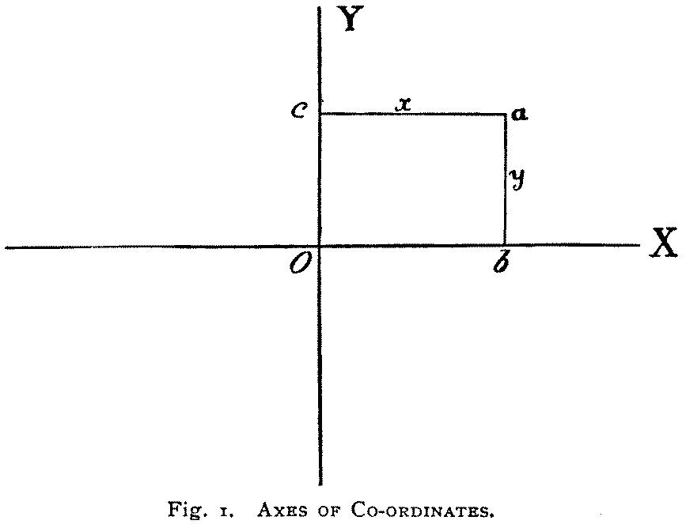
Fig. 1. AXES OF CO-ORDINATES.
Absolute. adj.
In quantities it may be defined as referring to fixed units of quantity,
and it is opposed to "relative," which merely refers to the relation of
several things to each other. Thus the relative resistance of one wire
may be n times that of another; its absolute resistance might be 5 ohms,
when the absolute resistance of the second wire would be 5/n ohms. A
galvanometer gives absolute readings if it is graduated to read directly
amperes or volts; if not so graduated, it may by "calibration" q. v. be
made to do practically the same thing.
8 STANDARD ELECTRICAL DICTIONARY.
Absolute Measurement.
Measurement based upon the centimeter, gram, and second. (See
Centimeter-Gram-Second System.)
Absolute Temperature.
Temperature reckoned from absolute zero (see "Zero, Absolute"). It is
obtained by adding for the centigrade scale 273, and for the Fahrenheit
scale 459, to the degree readings of the regular scale.
Absorption, Electric.
A property of the static charge. When a Leyden jar is being charged it
dilates a little and the capacity increases, so that it can take a
little more charge for a given potential difference existing between its
two coatings. This phenomenon occurs with other static condensers,
varying in degree with the dielectric. With shellac, paraffin, sulphur
and resin, for instance, the absorption is very slight; with
gutta-percha, stearine, and glass, the absorption is relatively great.
The term is due to Faraday. Iceland spar seems almost or quite destitute
of electric absorption.
A. C. C.
Symbol of or abbreviation for "anodic closure contraction" q. v.
Acceleration.
The rate of change of velocity. If of increase of velocity it is
positive; if of decrease, it is negative. It can only be brought about
by the exercise of force and is used as the measure of or as determining
the unit of force. It is equal to velocity (L/T) imparted, divided by
time (T); its dimensions therefore are L/(T^2). The c. g. s. unit of
acceleration is one centimeter in one second.
[Transcriber's note: The unit of acceleration is "centimeters per second
per second."]
Accumulator.
(a) A term sometimes applied to the secondary or storage battery. (See
Battery, Secondary.)
(b) See Accumulator, Electrostatic
(c) See Accumulator, Water Dropping.
(d) See Wheel, Barlow's
Accumulator, Electrostatic.
Two conducting surfaces oppositely placed, and separated by a
dielectric and arranged for the opposite charging of the two surfaces,
constitute an accumulator, sometimes termed a condenser. As this
arrangement introduces the element of a bound and of a binding charge,
the electrostatic capacity of such is greater than that of either or of
both of its component surfaces. The thinner the dielectric which
separates the conducting surfaces, and the larger the surfaces the
greater is the capacity; or the less will be the potential difference
which a given charge will establish between its two coatings. The nature
of the dielectric also determines its capacity. (See Capacity, Specific
Inductive.)
9 STANDARD ELECTRICAL DICTIONARY.
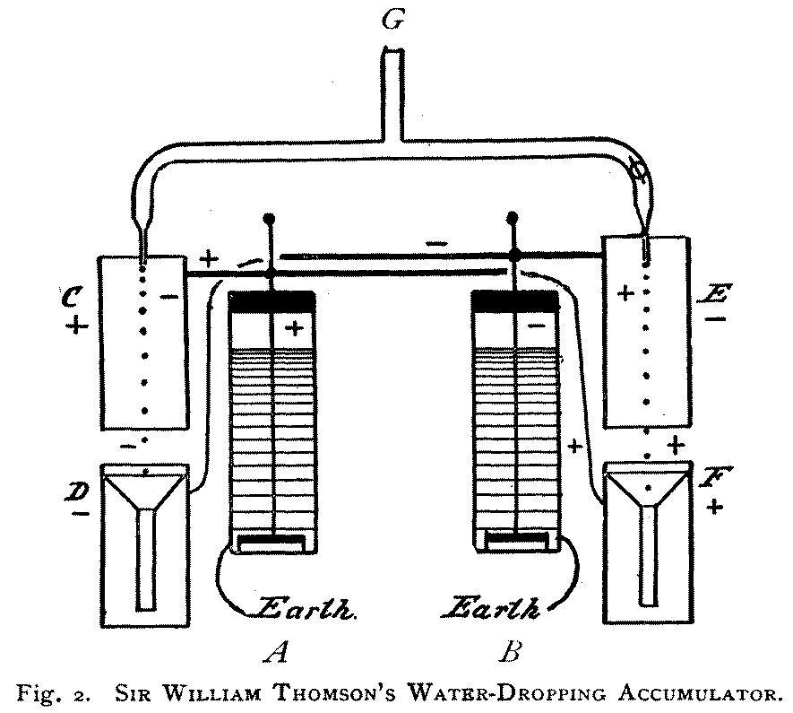
Fig. 2. SIR WILLIAM THOMSON'S WATER-DROPPING ACCUMULATOR.
Accumulator, Water Dropping.
This is also known as Sir William Thomson's Water-Gravity Electric
Machine. It is an apparatus for converting the potential energy of
falling water drops, due to gravity, into electric energy. Referring to
the illustration, G represents a bifurcated water pipe whose two faucets
are adjusted to permit a series of drops to fall from each. C and F are
two metallic tubes connected by a conductor; E and D are the same. Two
Leyden jars, A and B, have their inner coatings represented by strong
sulphuric acid, connected each to its own pair of cylinders, B to D and
E, and A to F and C. The outer coatings are connected to earth, as is
also the water supply. One of the jars, say A, is charged interiorily
with positive electricity. This charge, C and F, share with it, being in
electric contact therewith. Just before the drops break off from the jet
leading into C, they are inductively charged with negative electricity,
the positive going to earth. Thus a series of negatively excited drops
fall into the metal tube D, with its interior funnel or drop arrester,
charging it, the Leyden jar B, and the tube E with negative electricity.
This excitation causes the other stream of drops to work in the converse
way, raising the positive potential of F and C and A, thus causing the
left-hand drops to acquire a higher potential. This again raises the
potential of the right-hand drops, so that a constant accumulating
action is kept up. The outer coatings of the Leyden jars are connected
to earth to make it possible to raise the potential of their inner
coatings. In each case the drops are drawn by gravity into contact with
objects similarly excited in opposition to the electric repulsion. This
overcoming of the electric repulsion is the work done by gravity, and
which results in the development of electric energy.
10 STANDARD ELECTRICAL DICTIONARY.
Acidometer.
A hydrometer or areometer used to determine the specific gravity of
acid. They are employed in running storage batteries, to determine when
the charging is completed. (See Areometer.)
Aclinic Line.
A terrestrial element; the locus on the earth's surface of no
inclination of the magnetic needle; the magnetic equator. (See Magnetic
Elements.)
Acoustic Telegraphy.
The system of sound-reading in telegraphy, universally used in the Morse
system. The direct stroke of the armature of the electro-magnet and its
"back stroke" disclose to the ear the long and short strokes, dots and
lines, and long and short spaces as produced by the dispatcher of the
message. In the Morse system a special magnet and armature is used to
produce the sound called the "sounder;" in other systems, e. g.,
Steinheil's and Bright's apparatus, bells are used. (See Alphabets,
Telegraphic.)
Acoutemeter.
A Hughes audiometer or sonometer applied to determining the quality of a
person's hearing (See Hughes' Induction Balance,--Audiometer). The
central coil by means of a tuning fork and microphone with battery
receives a rapidly varying current tending to induce currents in the
other two coils. Telephones are put in circuit with the latter and pick
up sound from them. The telephones are applied to the ears of the person
whose hearing is to be tested. By sliding the outer coils back and forth
the intensity of induction and consequent loudness of the sounds in the
telephones is varied. The position when the sounds grow so faint as to
be no longer audible, gives the degree of delicacy of the person's
hearing. By using a single telephone the same apparatus affords a means
of testing the relative capacity of the right and left ears.
11 STANDARD ELECTRICAL DICTIONARY.
Actinic Rays.
The rays of light at the violet end of the spectrum; also the invisible
rays beyond such end, or the ether waves of short periods which most
strongly induce chemical change.
Actinism.
The power possessed by ether waves of inducing chemical change, either
of decomposition or of combination. The violet and ultra-violet end of
the spectrum of white light, generally speaking, represent the most
highly actinic rays.
Actinometer, Electric.
Properly an apparatus for measuring the intensity of light by its action
upon the resistance of selenium. A current produced by fixed
electro-motive force passing through the selenium affects a galvanometer
more or less according to the intensity of the light. It is more
properly an electric photometer. The term has also been applied to a
combination of a thermo-electric pile and galvanometer, the light
falling on the pile affecting the motions of the galvanometer.
Action, Local.
(a) The wasteful oxydation of the zinc in a galvanic battery due to
local impurities and variations in the composition of the zinc. These
act to constitute local galvanic couples which cause the zinc to
dissolve or oxydize, without any useful result. Amalgamation of the zinc
prevents local action. Chemically pure zinc is also exempt from local
action, and can be used in an acid battery without amalgamation. (See
Amalgamation.)
(b) The same term has been employed to indicate the eddy or foucault
currents in dynamo electric machines. (Sec Current, Foucault.)
Activity.
The rate of doing work; the work done per second by any expenditure of
energy. The activity of a horse-power is 550 foot lbs. per second, or
746 volt-coulombs per second. The practical electric unit is the
volt-ampere, often called the watt. (Sec Energy, Electric.)
Adapter.
A screw coupling to engage with a different sized screw on each end; one
of the uses is to connect incandescent lamps to gas-fixtures.
A. D. C.
Abbreviation for Anodic Duration Contraction, q. v.; a term in
electro-therapeutics.
Adherence, Electro-magnetic.
The adherence between surfaces of iron due to elcctro-magnetic
attraction. It has been applied to the driving-wheels of an engine and
rail, whose grip is increased by such action. In one method a deep
groove was cut around the wheel which was wound with a magnetizing coil.
Thus one rim becomes a north and the other a south pole, and the rail
completing the circuit acts as the armature. Such an arrangement
prevents a wheel from sliding. Electro-magnetic adherence has also been
employed to drive friction gear wheels. In one arrangement the two
wheels are surrounded by a magnetizing coil, under whose induction each
attracts the other, developing high adherence between their peripheries.
12 STANDARD ELECTRICAL DICTIONARY.
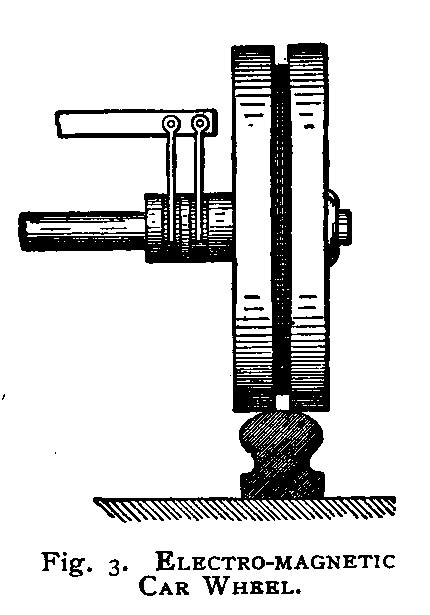
Fig. 3. ELECTRO-MAGNETIC CAR WHEEL.
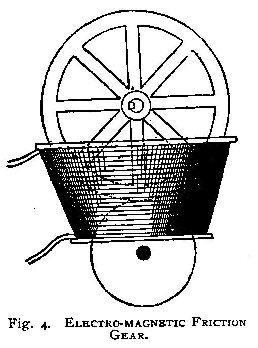
Fig. 4. ELECTRO-MAGNETIC FRICTION GEAR.
Admiralty Rule of Heating.
The British Admiralty specifications for the permissible heating of
dynamos. It holds that at the end of a run of six hours no part of the
dynamo under trial shall show a rise of temperature greater than
11º C.
(20º F.) above the temperature of the air surrounding it. This is
thought to be a very stringent and unnecessarily high requirement.
Aerial Conductor.
An electric conductor carried from housetops, poles, or otherwise so as
to be suspended in the air, as distinguished from an underground or
submarine conductor.
Affinity.
The attraction of atoms and in some cases perhaps of molecules for each
other by the force of chemical attraction. When the affinity is allowed
to act or is carried out, a chemical change, as distinguished from a
physical or mechanical change, ensues. Thus if sulphur and iron are each
finely powdered and are mixed the change and mixture are mechanical. If
slightly heated the sulphur will melt, which is a physical change. If
heated to redness the iron will combine with the sulphur forming a new
substance, ferric sulphide, of new properties, and especially
characterized by unvarying and invariable ratios of sulphur to iron.
Such change is a chemical one, is due to chemical affinity, is due to a
combination of the atoms, and the product is a chemical compound.
13 STANDARD ELECTRICAL DICTIONARY.
Agir Motor.
The Anderson and Girdlestone motor. The term "agir" is made up from the
first portions of each name.
Agonic Line.
The locus of points on the earth's surface where the magnetic needle
points to the true north; an imaginary line determined by connecting
points on the earth's surface where the needle lies in the true
geographical meridian. Such a line at present, starting from the north
pole goes through the west of Hudson's Bay, leaves the east coast of
America near Philadelphia, passes along the eastern West Indies, cuts
off the eastern projection of Brazil and goes through the South Atlantic
to the south pole. Thence it passes through the west of Australia, the
Indian Ocean, Arabia, the Caspian sea, Russia and the White sea to the
North Pole. It crosses the equator at 70° W. and 55° E.
approximately.
(See Magnetic Elements.)
Synonym--Agone.
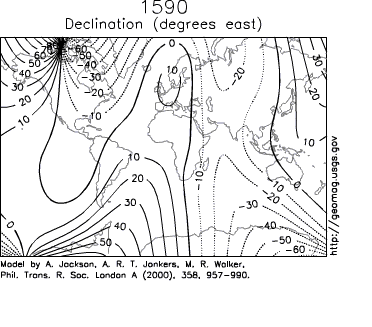
[Transcriber's note: The file Earth_Declination_1590_1990.gif provided
by the U.S. Geological Survey (http://www.usgs.gov) is an animation of
the declination of the entire earth.]
Air.
Air is a dielectric whose specific inductive capacity at atmosphere
pressure is taken as 1. It is practically of exactly the same
composition in all places and hence can be taken as a standard. When dry
it has high resistance, between that of caoutchouc and dry paper.
Dampness increases its conductivity.
It is a mixture of oxygen and nitrogen, with a little carbonic acid gas
and other impurities. Its essential composition is:
Oxygen: (by weight)
23.14 (by volume) 21
Nitrogen:
76.86
79
The specific inductive capacity varies for different pressures thus:
Approximate
(.001 mm., .0004 inch)
0.94 (Ayrton)
Vacuum
( 5 mm. , .2 inches )
0.9985 (Ayrton)
0.99941 (Boltzman.)
The specific gravity of air under standard conditions 15.5° C
(60° F.)
and 760 mm. barometric pressure (30 inches) is taken as unity as a
standard for gases.
[Transcriber's note: Argon accounts for 0.9340%. It was discovered in
1894, two years after this book.]
Air-Blast.
(a) In the Thomson-Houston dynamo an air-blast is used to blow away the
arc-producing spark liable to form between the brushes and commutator.
It is the invention of Prof. Elihu Thomson. The air is supplied by a
positive action rotary blower connected to the main shaft, and driven
thereby. The wearing of the commutator by destructive sparking is thus
prevented.
A drum H H is rotated, being mounted on the axis X of the dynamo. As it
rotates the three vanes are thrown out against the irregular shaped
periphery of the outer case T T. The arrow shows the direction of
rotation. The air is thus sent out by the apertures a a. O is the
oil-cup.
(b) The air-blast has also been used by Prof. Thomson in experiments
with high frequency currents of high potential. By directing a blast of
air against a spark discharge between ball terminals of an alternating
current, the nature of the current was changed and it became capable of
producing most extraordinary effects by induction.
14 STANDARD ELECTRICAL DICTIONARY.
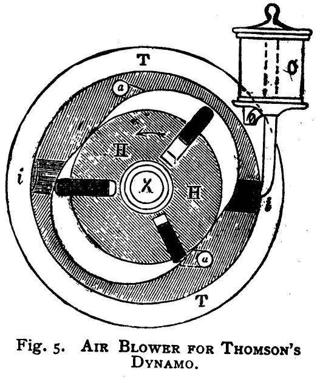
Fig. 5. AIR BLOWER FOR THOMSON'S DYNAMO.
Air Condenser.
A static condenser whose dielectric is air. The capacity of an air
condenser in farads is equal to
A / ( 4.452E12 * t )
in which A is the area of one sheet or sum of the areas of one set of
connected sheets in square inches and t is the thickness of the layer of
air separating them.
A convenient construction given by Ayrton consists in a pile of glass
plates P separated by little bits of glass F of known thickness, three
for each piece. Tin-foil T is pasted on both sides of each piece of
glass and the two coatings are connected. The tin-foil on each second
plate is smaller in area than that on the others. The plates are
connected in two sets, each set comprising every second plate. For A in
the formula the area of the set of smaller sheets of tin-foil is taken.
By this construction it will be seen that the glass does not act as the
dielectric, but only as a plane surface for attachment of the tin-foil.
Posts E E keep all in position. One set of sheets connects with the
binding post A, the other with B.
The capacity of any condenser with a dielectric of specific inductive
capacity i is given by the formula:
( i *A^1 ) / ( 4.452E12 * t1 )
The air condenser is used for determining the value of i for different
dielectrics.
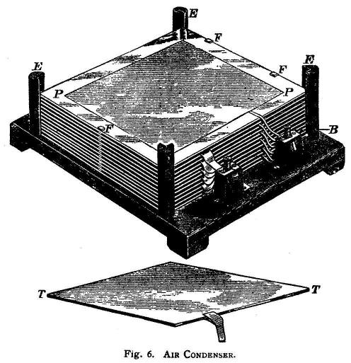
Fig. 6. AIR CONDENSER.
15 STANDARD ELECTRICAL DICTIONARY.
Air Gaps.
In a dynamo or motor the space intervening between the poles of the
field magnet and the armature. They should be of as small thickness, and
of as extended area as possible. Their effect is to increase the
magnetic reluctance of the circuit, thereby exacting the expenditure of
more energy upon the field. They also, by crowding back the potential
difference of the two limbs, increase the leakage of lines of force from
limb to limb of the magnet.
Air Line Wire.
In telegraphy the portion of the line wire which is strung on poles and
carried through the air.
Air Pump, Heated.
It has been proposed to heat portions of a mercurial air pump to secure
more perfect vacua, or to hasten the action. Heating expands the air and
thus produces the above effects.
16 STANDARD ELECTRICAL DICTIONARY.
Air Pump, Mercurial.
An air pump operated by mercury. The mercury acts virtually as the
piston, and the actuating force is the weight of the column of mercury,
which must exceed thirty inches in height. There are many types.
Mercurial air pumps are largely used for exhausting incandescent lamp
chambers. (See Geissler Air Pump,--Sprengel Air Pump.)
Air Pumps, Short Fall.
A mercurial air pump in which the fall of mercury or the height of the
active column is comparatively small. It is effected by using several
columns, one acting after the other. A height of ten inches for each
column suffices in some forms. Enough columns must be used in succession
to make up an aggregate height exceeding 30 inches.
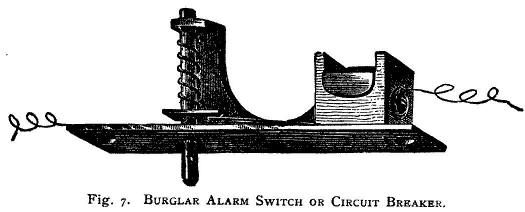
Fig. 7. BURGLAR ALARM SWITCH OR CIRCUIT BREAKER.
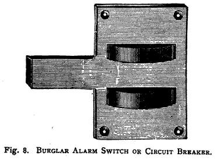
Fig. 8. BURGLAR ALARM SWITCH OR CIRCUIT BREAKER.
Alarm, Burglar.
A system of circuits with alarm bell extending over a house or
apartments designed to give notice of the opening of a window or door.
As adjuncts to the system the treads of the stairs are sometimes
arranged to ring the bell, by completing a circuit when trod on. Door
mats are also arranged to close circuits in like manner.
17 STANDARD ELECTRICAL DICTIONARY.
For doors and windows switches are provided which are open as long as
the door or window is closed, but which, on being released by opening
the door or windows, automatically close the circuit. The circuit
includes an alarm bell and battery, and the latter begins to ring and
continues until stopped, either by the closing of the door or by a
switch being turned. The connections are sometimes so contrived that the
reclosing of the door or window will not stop the bell from ringing.
The cuts show various switches for attachment to doors and windows. It
will be seen that they normally keep the circuit closed, and that it is
only open when pressure, as from a closed door, is brought upon them. In
the case of a door a usual place for them is upon the jamb on the hinge
side, where they are set into the wood, with the striking pin
projecting, so that as the door is closed the pin is pressed in, thus
breaking the circuit.
Sometimes the connections are arranged so as to switch on the electric
lights if the house is entered. Special annunciators showing where the
house has been entered are a part of the system. A clock which turns the
alarm on and off at predetermined hours is also sometimes used.
The circuits may be carried to a central station or police station. One
form of burglar alarm device is the Yale lock switch. This is a contact
attached to a Yale lock which will be closed if the wrong key is used,
completing a circuit and ringing a bell.
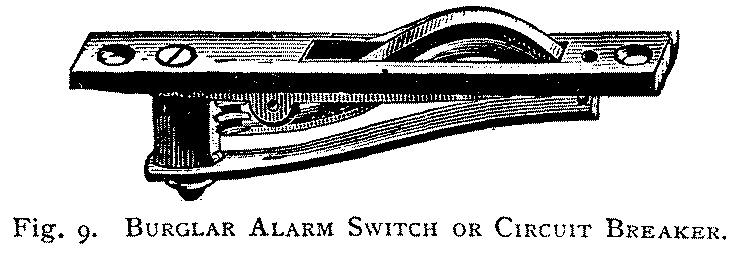
Fig. 9. BURGLAR ALARM SWITCH OR CIRCUIT BREAKER.
Alarm, Electric.
An appliance for calling attention, generally by
ringing a bell. It is used to notify of water-level in boilers or
tanks,
of entrance of a house, or of other things as desired. It is evident
that any number of alarms could be contrived.
18 STANDARD ELECTRICAL DICTIONARY.
Alarm, Fire and Heat.
An alarm for giving notice of the existence of a conflagration. Such are
sometimes operated by a compound bar thermostat (see Thermostat), which
on a given elevation of temperature closes a circuit and rings an
electric bell. Sometimes the expansion of a column of mercury when
heated is used. This, by coming in contact with one or two platinum
points, completes a circuit, and rings the bell.
The identical apparatus may be used in living rooms, greenhouses.
factories and elsewhere, to give an alarm when the temperature rises or
falls beyond predetermined limits.
Alarm, Overflow.
An alarm to indicate an overflow of water has been suggested on the
lines of a contact completed by water, or of the elements of a battery
which would be made active by water. Thus two sheets of metal might be
separated by bibulous paper charged with salt. If these sheets were
terminals of a circuit including a bell and battery, when water reached
them the circuit would be closed and the bell would ring. It was also
proposed to use one copper and one zinc sheet so as to constitute a
battery in itself, to be thrown into action by moisture. These contacts
or inactive batteries could be distributed where water from an overflow
would be most likely to reach them.
Alarm, Water Level.
An alarm operated by a change of water level in a tank or boiler. By a
float a contact is made as it rises with the water. Another float may be
arranged to fall and close a contact as the level falls. The closing of
the contacts rings an electric bell to notify the attendant in charge.
Alcohol, Electrical Rectification of.
A current of electricity passed through impure alcohol between zinc
electrodes is found to improve its quality. This it does by decomposing
the water present. The nascent hydrogen combines with the aldehydes,
converting them into alcohols while the oxygen combines with the zinc
electrode.
Alignment.
The placing in or occupying of the same straight line. The bearings of a
shaft in dynamos, engines, and other machinery have to be in accurate
alignment.
Allotropy.
The power of existing in several modifications possessed by some
substances, notably by chemical elements. Instances of the allotropic
state are found in carbon which exists as charcoal, as graphite
(plumbago or black lead), and as the diamond. All three are the same
elemental substance, although differing in every physical and electrical
property.
19 STANDARD ELECTRICAL DICTIONARY.
Alloy.
A mixture, produced almost universally by fusion, of two or more metals.
Sometimes alloys seem to be chemical compounds, as shown by their having
generally a melting point lower than the average of those of their
constituents. An alloy of a metal with mercury is termed an amalgam. An
important application in electricity is the use of fusible alloys for
fire alarms or for safety fuses. German silver is also of importance for
resistance coils, and palladium alloys are used for unmagnetizable
watches. An alloy of wrought iron with manganese is almost
unmagnetizable, and has been proposed for use in ship building to avoid
errors of the compass.
Alloys or what are practically such can be deposited by electrolysis in
the electro- plater's bath. We give the composition of some alloys
interesting to the electrician.
Solder:
Lead 1 part
Tin 2 parts
" "
" 1 "
" "
" 2 "
German Silver: Copper, 2 parts; Nickel, 1 part;
Zinc, 1 part (used for resistances).
Platinum, Silver Alloys: Platinum, 1 part;
silver, 2 parts (used for resistances.)
Palladium alloys for watch springs. (See Palladium.)
Alphabet, Telegraphic.
The combinations of sounds, of dots and dashes marked on paper, of
right-hand and left-hand deflections of a needle, of bells of different
notes, or of other symbols by which a fixed combination is expressed for
each character of the alphabet, for numerals, and for punctuation. While
the code is designed for telegraphic uses it can be used not only for
the conveyance of signals and messages by the electrical telegraphs, but
also by any semaphoric or visual system, as by flashes of light,
movements of a flag or even of the arms of the person signalling.
In the English and continental needle telegraphy in which the message is
transmitted by the movements of an index normally vertical, but
oscillating to one side or the other under the influence of the current,
the latter being controlled by the transmitter of the message, the left
hand swings of the needle are interpreted as dots, the right hand as
dashes.
This system enables one alphabet to be translated into the other, or
virtually one alphabet answers for both Morse and needle transmitters.
There are two principal telegraphic alphabets, the American Morse and
the International codes. They are very similar, their essential
distinction being that spaces are used in the American code, while they
are excluded from the International code.
In the American Morse system the message is now universally received by
sound. (See Sounder--Sound Reading.)
20 STANDARD ELECTRICAL DICTIONARY.
The two codes or telegraphic alphabets are given here.
THE INTERNATIONAL ALPHABET.
Parenthesis,
- . - - . -
Understand,
... - .
I don't
understand, ..-- ....--..
Wait,
.-. . .
Erase,
... ... ...
Call
signal,
-.-.-.-
End of
message, .-.-.-.
Cleared out all
right, .-..-..-.
A
.- L .-.. W .--
B -... M
-- X -..-
C -.-. N
-. Y -.--
D -..
O --- Z --..
E
. P .--.
F ..-. Q
--.- Ch ----
G --.
R .-. Ä .-.-
H .... S
... Ö ---.
I
.. T -
Ü ..--
J .--- U
..- É ..-..
K -.-
V ...- Ñ --.--
NUMERALS
1 .----
4 ....- 8 ---..
2 ..---
5 ..... 9 ----.
3 ...--
6 -.... 0 -----
7 --...
[Transcriber's note: The original image of the dot/dash pattern is
somewhat
ambiguous. Since there may be differences from contemporary
specifications,
the original image is included.]
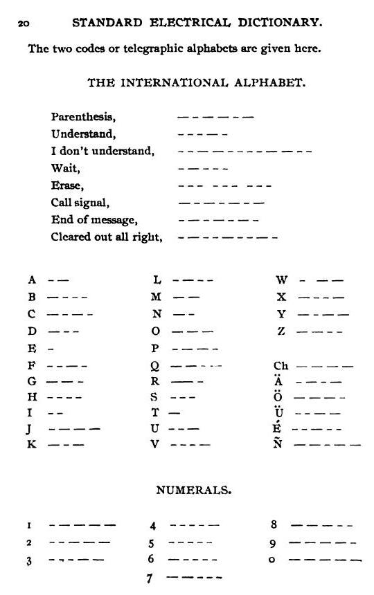
[Image of page 20: THE INTERNATIONAL ALPHABET.]
21 STANDARD ELECTRICAL DICTIONARY.
PUNCTUATION, ETC.,
Period
(.)
... ...
Comma
(,)
.-.-.-
Query(?)
..--..
Exclamation
(!) --..--
Apostrophe
(') .----.
Hyphen
(-) -....-
Fresh
paragraph, .-.-..
Inverted
commas, -..-.
THE AMERICAN ALPHABET.
A
.- L
----(Continuous) W .--
B
-... M
--
X .-..
C
..s. N
-.
Y ..s..
D
-.. O
.s.
Z ….
E
. P .....
F
.-. Q
..-.
Ch ----
G
--. R
.s..
Ä .-.-
H
.... S
...
Ö ---.
I
.. T
-
Ü ..--
J - . - .
U
..-
É ..-..
K
-.- V
...-
Ñ --.--
NUMERALS
1
.--. 4
....- 8 -....
2 ..-..
5
--- 9 -..-
3 ...-.
6 ... ... 0
-----(Continuous)
7 --..
[Transcriber's Note: The "s" in the American Code indicates a "space".
I
leave the following to the reader's imagination. See the original
image.]
Comma (,)
Semicolon (;)
Colon (:)
Colon Dash (:~)
Period (.)
Interrogation (?)
Exclamation (!)
Dash (-)
Hyphen (-)
Pound Sterling (£)
Shilling Mark ( )
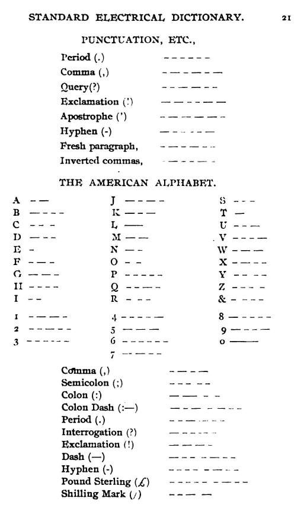
[Image of page 21: THE AMERICAN ALPHABET.]
22 STANDARD ELECTRICAL DICTIONARY.
[Transcriber's Note: I leave these to the reader's imagination. See the
following original image.]
Dollars ($)
Decimal Point (.)
Cents (c)
Paragraph ()
Pence (d.)
Fractional Mark (--)
Capitalized Letter
Italics or Underline
Colon followed by Quotation :"
Parenthesis ( )
Brackets [ ]
Quotation Marks " "
Quotation within a Quotation " ' ' "
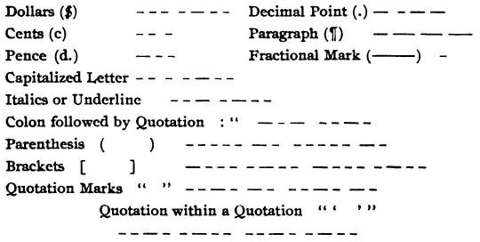
[Image of page 22: THE AMERICAN ALPHABET.]
The principal differences in the two codes are the use of spaces in the
American code, such being excluded from the International code. This
affects the letters C, R, Y, & Z.
The following diagram, due to Commandant Perian, enables the letter
corresponding to an International code sign to be rapidly found with the
exception of R.
<-
dot
start dash
->
/
\
E
T
/
\
/
\
I
A
N
M
/
\
/ \
/ \
/ \
S
U
R W
D K
G O
/ \
/ \ /
\ / \ /
\ / \ /
\ / \
H V
F U L
A P J B X
C Y Z Q Ô
CH
Fig. 10. Diagram for translating the Morse Alphabet.
In order to find what letter corresponds to a given sign, starting from
the top of the diagram, each line is traced down to a bifurcation,
taking the right hand line of each bifurcation for a dash, and the left
hand line for a dot, and stopping when the dots and dashes are used up.
Thus, for example,
the signal -.- - leads us to the letter d,
the signal - - - - to the letter j and so on.
23 STANDARD ELECTRICAL DICTIONARY.
Alternating. adj.
Term descriptive of a current changing periodically in
direction. (See Current, Alternating.)
Synonyms--Oscillatory--periodic--undulatory--harmonic.
Alternating Current Arc.
The arc produced by the alternating current. It presents several
peculiarities. With an insufficient number of alternations per second it
goes out. As the carbons wear away equally it is adopted for such lamps
as the Jablochkoff candle, (see Candle, Jablochkoff). As no crater is
formed the light is disseminated equally both up and down. For this
reason to get full downward illumination a reflector is recommended.
Alternating Current System.
A system of electric distribution employing the alternating current. For
transmission in the open air or in conduits a high potential circuit is
used, from 1,000 to 10,000 volts being maintained at the central
station. Two leads unconnected at the end lead from the station. Where
current is desired a converter or transformer (see Converter) is placed,
whose primary is connected to the two leads bridging the interval
between them. From the secondary the house leads are taken with an
initial potential in some cases of 50 volts. The converters are thus all
placed in parallel. By law or insurance rules the converters are
generally kept outside of buildings. Where no secondary current is taken
from the converters very little primary current passes them on account
of their counter-electromotive force. As more secondary current is taken
the primary increases and this accommodation of one to the other is one
of the interesting and valuable features. Street lamps are sometimes
connected in series. Each lamp in such case is in parallel with a small
coil with iron core. While the lamp is intact little current passes
through the coil. If the lamp is broken, then the converter impedes the
current by its spurious resistance, q. v., just enough to represent and
replace the resistance of the extinguished and broken lamp filament.
(See Meter, Alternating Current; Motor, Alternating Current.)
Alternation.
The change in direction of a current. The number of such changes is
expressed as number of alternations; thus a current may have a frequency
of 500 or 20,000 alternations per second.
[Transcriber's note: One alternation per second is now called one
hertz.]
Alternation, Complete.
A double alternation; a change from one direction
to the other and back again to the original phase. A symbol derived from
its graphic representation by a sine curve is used to indicate it. The
symbol is ~
24 STANDARD ELECTRICAL DICTIONARY.
Alternative Path.
A second path for a current appearing as a disruptive
discharge. Where two paths are offered the discharge, as it is of
alternating or oscillatory type, selects the path of least
self-induction. Thus a thick bar of copper, with no air gap, may be
abandoned by the current in favor of a small iron wire with an air gap,
but which has less self-induction.
The lightning arresters, q. v., for the protection of telegraph offices
are sometimes based on these principles. A path of very high resistance
but of small self-induction is offered between the line and the earth.
This the lightning discharge selects in preference to the instruments
with their iron cores, as the latter are of very high self-induction.
Alternator.
A dynamo electric generator supplying an alternating current. (See
Dynamo, Alternating Current.)
Synonym--Alternating current generator or dynamo.
Alternator, Constant Current.
An alternating current dynamo supplying a current of unvarying virtual
amperage. Alternators of this type are constructed with an armature of
high self-induction. Sometimes fine winding contained in deep peripheral
notches in the core-discs is employed to magnify the self-induction.
Such generators are employed for series lighting, especially
arc-lighting.
Aluminum.
A metal; one of the elements; symbol: Al.
Atomic weight: 27.4. Equivalent: 9.13. Valency: 3.
Specific gravity: 2.6. It is a conductor of electricity.
Relative resistance annealed, (Silver = 1) 1.935
Specific resistance at 0ºC (32°F.) 2.912
microhms
Resistance of a wire at
0ºC (32°F.)
a) 1 foot long, weighing 1
grain, 0.1074 ohms.
b) 1 foot long, 1/1000 inch
thick,
17.53 "
c) 1 meter long, weighing 1
gram,
0.0749 "
d) 1 meter long, 1 millimeter
thick 0.03710 "
Resistance of a 1-inch cube at
0ºC (32°F.) 1.147 microhms
Electro-chemical
equivalent. .0958 (hydrogen == .0105)
25 STANDARD ELECTRICAL DICTIONARY.
Amalgam.
(a) A combination or alloy in which one of the constituents is mercury.
Usually the term is applied to an alloy of a single metal with mercury.
Some metals readily form amalgams; such metals are: Gold, zinc, silver,
lead and others; some, such as platinum and iron, form amalgams only
under exceptional circumstances.
(b) The word is also applied to compositions for application to the
cushions of frictional electric machine in which cases it is often a
misnomer. True amalgams used for this purpose are made as follows:
(a) Tin, 1 part; Zinc, 1 part; Mercury, 2 parts (Kienmayer).
(b) Tin, 2 parts; Zinc, 3 parts.
(c) Tin, 3 parts; Zinc, 5 parts; Mercury, 4 parts.
(d) Zinc, 1 part: Mercury, 4 parts; Mercury, 9 parts. [sic]
The tin, if such is used, (formula a, b and c) is first melted, the zinc
is added in successive portions. The mercury, which must be heated, is
slowly poured into the melted alloy after removal of the latter from the
fire, and the mixture, while making, is constantly stirred. It is kept
stirred or rubbed in a mortar until cold. Sometimes it is poured into
water and kept in constant agitation until cold. It is thus obtained in
a granular condition, and is pounded in a mortar until reduced to
powder. It must be dried and kept in tightly stopped bottles and is
applied to the cushions after they have been greased. It is to be
noticed that it is said that alloy (d) requires no pulverization beyond
constant rubbing in a mortar as it cools. Sometimes the amalgam is
shaken about in a wooden tray with chalk while cooling. The action of
amalgams is not very clearly understood. Some claim that there is a
chemical action, others that they simply act as conductors, others that
they are more highly negative to the glass than the leather of the
cushions.
Graphite or sulphide of tin (mosaic gold) are sometimes used to coat the
cushions; it is these that are sometimes incorrectly called amalgams.
Amalgamation.
The application of mercury to a metal with which it forms an amalgam, or
with which it amalgamates. Battery zincs are amalgamated in two ways. In
the immersion method, the plate is dipped into an acid solution of
mercuric chloride or nitrate. The latter is best. In the direct
application method the plate is first wet all over with dilute acid and
a little mercury is dropped upon it and is rubbed over the surface with
a rag or, what is better, with a piece of galvanized iron. A very little
mercury answers the purpose. The whole surface of the plate should be
left as bright as silver. (See Action, Local.)
Amber.
Amber is a fossil resin, supposed to be a product of the extinct Pinites
Succinifer and other coniferous trees. Most of it is gathered on the
shores of the Baltic between Koenigsberg and Memel. It is also found in
small pieces at Gay Head, Mass., and in New Jersey green sand. It is
found among the prehistoric remains of the Swiss Lake dwellers. When
rubbed with a cloth it becomes excited with negative electricity. The
Greek word for it is electron, which gave the name electricity to the
modern science. Thales of Miletus, 600 B. C., and Theophrastus, about
300 B. C., both mention its electric properties or power of attracting
small objects when rubbed.
26 STANDARD ELECTRICAL DICTIONARY.
Ammeter.
The commercial name for an ampere-meter, an instrument designed
to show by direct reading the number of amperes of current which are
passing through a circuit.
A great variety of ammeters have been invented, based on different
principles. The definitions following this one give some idea of the
lines of construction followed.
Synonym--Ampere meter.
Ammeter, Ayrton's.
A direct reading instrument for measuring current intensity.
A solenoid receives the current. In the axis of the solenoid an iron
tube is suspended by a long spiral spring that passes down within it,
and the upper end of which spring is fastened to the glass top of the
instrument. The tube is provided with proper guides so as to maintain a
vertical position, and is free to rotate. Its upper end carries an
index.
The whole operates as a magnifying device. A slight longitudinal
displacement of the tube causes it to rotate through a considerable
angle by the action of the spring. By properly proportioning the parts,
the angle of displacement of the index is directly proportional to the
current between 15º and 270º angular displacement.
The same instrument is wound for use as a volt-meter.
Its principal fault is its restricted range.
Ammeter, Commutator.
A commutator ammeter is one whose windings consist of separate strands,
each of any desired number of turns, and provided with a commutating
attachment for throwing them into series or into parallel as desired.
The essential condition is that all the wires shall be of equal
resistance and of equal number of turns. Such an instrument can be used
for heavy or light currents. Two sets of graduations are marked on its
scale if it is a calibrated instrument. (See Calibration.) Commutator
volt-meters are constructed on the same principle.
Ammeter, Cunynghame's.
A modification of the Siemens' electro-dynamometer. (See
Electro-dynamometer, Siemens'.) An electro-magnet with very massive core
is excited by the current. As the core is of small reluctance the
strength of the magnet is nearly proportional to the current strength.
Between the poles of the magnet a soft iron armature or induced magnet
is pivoted. It carries a pointer so adjusted that when the axis of the
soft iron magnet is at an angle of about 30º with the line joining
the
poles of the electro-magnet the pointer will indicate zero.
The soft iron armature is so massive that the magnetism induced in it is
proportional to the strength of the electro-magnet. Hence the couple
exerted by the electro-magnet on the pivoted armature will be
proportional to the square of the current.
The armature is retained in place by a spiral spring lying in line with
its axis of rotation. The instrument is operated as a zero reading
instrument. The current is passed through it. The needle is deflected;
it is brought back to zero by turning a milled head which twists the
spring. The current will be proportional to the square root of the angle
of displacement of the milled head. A scale with index is provided,
giving directly the square roots of the angle over which the pointer is
moved.
The same instrument is wound for use as a volt-meter.
27 STANDARD ELECTRICAL DICTIONARY.
Ammeter, Eccentric Iron Disc.
This ammeter comprises a cylindrical electro-magnet excited by the
current to be measured. A disc of iron free to rotate is suspended on
pivots below it. A piece is cut off the disc at one part of its
periphery so as to give more metal to one side than to the other. In its
zero position this portion of the disc swings towards the magnet. As the
latter is more and more excited the other or more projecting portion of
the disc turns towards it, being attracted like an armature, and moves
against the force of gravity, the disc rotating. An index attached to
the disc swings over the face of a graduated scale. The disc is so
counterpoised that in its natural position the index points to zero.
Ammeter, Electro-magnetic.
An ammeter depending for its working upon the action of an
electro-magnet, which is excited by the current to be measured.
Ammeter, Gravity.
An ammeter whose hand or index is drawn into the zero position by
gravity, and whose displacement therefrom is produced by the action of
the current to be measured.
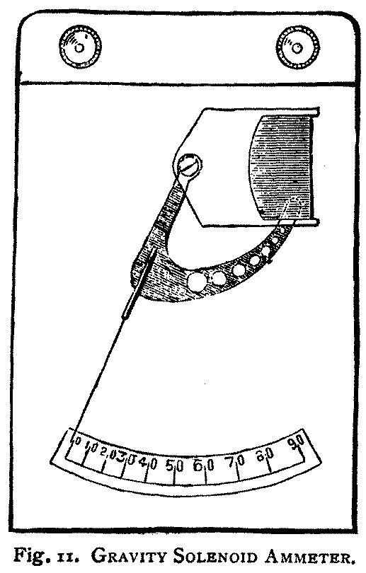
Fig. 11. GRAVITY SOLENOID AMMETER.
Ammeter, Magnetic Vane.
A fixed plate of soft iron is placed within a coil. Facing it is a
second disc free to move or swing on an axis. When the field is excited
the two repel each other because like polarity is induced in each, and
the motion of the movable disc indicates the strength of the current.
The same instrument is wound for high resistance and constitutes a
Magnetic Vane Voltmeter.
28 STANDARD ELECTRICAL DICTIONARY.
Ammeter, Magnifying Spring.
A solenoid ammeter in which a spiral spring is used to convert the
longitudinal motion of the armature or movable core into a rotary motion
(see Ammeter, Ayrton's) and magnify the apparent range of motion.
Ammeter, Permanent Magnet.
An ammeter with a magnetic field produced by a permanent magnet.
Ammeter, Solenoid.
An ammeter in which the attraction, when a current is passing through
it, exerted by a hollow coil of wire upon an iron bar or tube in line
with its axis, is utilized to indicate the strength of current. The bar
is drawn into the coil to different extents proportional to the
attraction. As an example see Ammeter, Ayrton's, and cut of Gravity
Ammeter.
Ammeter, Spring.
An ammeter in which the part moved by the current is controlled or
brought to the zero position by a spring.
Ammeter, Steel Yard.
A solenoid ammeter in which the solenoid core is suspended vertically
from the short end of a steel yard fitted with a sliding weight. The
current passes through the solenoid coil and attracts or draws downwards
the coil. A sliding weight is moved in and out on the long steel-yard
arm which is graduated for amperes. In use the weight is slid out until
the arm is in equipose; the divisions give the amperes.
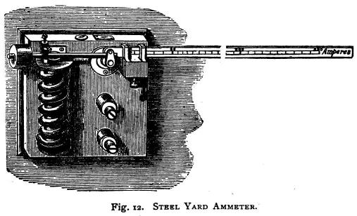
Fig. 12. STEEL YARD AMMETER.
29 STANDARD ELECTRICAL DICTIONARY.
Ammunition Hoist, Electric.
An apparatus for use on ships for hoisting ammunition to the guns by an
electric elevator. The characteristic feature of it is that a constant
motion of the switch or handle is required to keep it in action. If the
operator is shot so as to be incapacitated from taking charge of the
switch, the hoist stops until another is assigned to it.
Amperage.
Current intensity expressed in amperes, as an amperage of ten amperes.
Ampere.
The practical unit of electric current strength. It is the measure of
the current produced by an electro-motive force of one volt through a
resistance of one ohm. In electric quantity it is the rate of one
coulomb per second. It is one-tenth the absolute C. G. S. unit of
current strength. Its best analogy is derived from water. Assuming the
electric current to be represented by a current of water, the pressure,
head, or descent producing such current would be the electro-motive
force. The current might be measured in gallons (or other unit) passed
per second. In the analogy these gallons would be coulombs. But it might
be measured by reference to a standard stream, as for instance, the
stream which would pass through a hole an inch square under a given
head, say six inches of water. This unit is the miner's inch, and is the
exact analogy of the ampere. A current of water may flow at the rate of
so many miner's inches, just as a current of electricity may flow at the
rate of so many amperes. In neither case it will be noted is there any
reference to time. "An ampere per second" is a redundant expression, and
means no more than "an ampere"; an "ampere-second," on the other hand,
is a coulomb. The number of coulombs passed per second gives the amperes
of current.
For value of ampere, see Coulomb.
[Transcriber's note: The SI definition of an ampere: A current in two
straight parallel conductors of infinite length and negligible
cross-section, 1 metre apart in vacuum, would produce a force equal to
2E-7 newton per metre of length.]
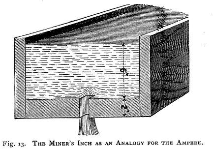
Fig. 13. THE MINER'S INCH AS AN ANALOGY FOR THE AMPERE.
30 STANDARD ELECTRICAL DICTIONARY.
Ampere, Arc.
A conductor bent into the arc of a circle, and employed in measuring the
electric current by the electric balance.
Ampere-currents.
The currents assumed to be the cause of magnetism. (See Magnetism,
Ampere's Theory of.)
Ampere-feet.
The product of amperes of current by the length, in feet, of a conductor
passing such current. It may be in empiric calculations of dynamo or
motor construction, but is little used. One ampere-foot is a current of
one ampere passing through one foot length of a conductor, or one-tenth
ampere through ten feet, and so on.
Ampere-hour.
The quantity of electricity passed by a current of one ampere in one
hour. It is used by electric power and lighting companies as the unit of
energy supplied by them, because they maintain a constant potential
difference in their leads, so that only the amperes and hours need
measuring or recording to give the energy, viz. : volt-ampere-hours.
The same unit is applied to batteries to indicate their potential
energy, because they also are assumed to be of constant voltage or
electro-motive force.
Ampere-meters.
The product of amperes of current by the length, in meters, of a
conductor carrying such current. One ampere-meter is a current of one
ampere passing through one meter of a conductor.
The term must not be confused with the identically spelled Ampere-meter,
a synonym for Ammeter.
Ampere-minute.
The quantity of electricity passed by a current of one ampere in one
minute; sixty coulombs.
Ampere Ring.
A conductor forming a ring or circle used in electric balances for
measuring currents. (See Balance, Ampere.)
Ampere-second.
The quantity of electricity passed by a current of one ampere in one
second; the coulomb, q. v.
Amperes, Lost.
In a shunt or compound-wound dynamo, part of the total amperes of
current produced in the armature coils go through the shunt, and hence,
do not appear in the outer circuit. S. P. Thompson has proposed the term
"lost amperes" for this portion of the current.
Ampere's Memoria Technica.
An expression of the effect of a current on a magnetic needle. If we
imagine the observer in the line of the current and facing the magnetic
needle, the current entering by his feet and leaving by his head, the
north pole is deflected to his left.
31 STANDARD ELECTRICAL DICTIONARY.
Ampere-turns.
The amperes of current supplied to a magnet coil multiplied by the
number of turns the current makes in the coil. If the coil is wound two
or three in parallel, the virtual turns by which the amperes are
multiplied are one-half or one-third the actual turns of wire.
Synonym--Ampere Windings.
Ampere-turns, Primary.
The ampere-turns in the primary coil of an induction coil or
transformer.
Ampere-turns, Secondary.
The ampere-turns in the secondary coil of an induction coil or
transformer.
Amplitude of Waves.
Waves are distinguished by length and amplitude. The latter, in the case
of transverse waves, such as those of water and of the ether, correspond
with and measure the height from lowest to highest point, or from valley
to summit of the waves in question. In the case of longitudinal waves,
such as those of the air, due to sounding bodies, the ratio of degree of
rarefaction to degree of condensation existing in the system is the
amplitude. The latter can be graphically represented by a sinuous line,
such as would represent the section of a transverse wave. Ether waves
are produced by heated bodies and by electro-magnetic impulses, as in
the discharge of the Leyden jar.
The amplitude of a wave, other things being equal, is the measure of its
intensity. Thus, the louder a sound the greater is the amplitude of the
system of waves to which it is due. The same applies to ether waves,
whether they are perceived in the electro-magnetic, light, or
heat-giving modification. As the amplitude of ether waves cannot be
accurately known, amplitude is a relative term and is not stated
generally in any absolute unit.
Analogous Pole.
One of the elements of a pyro-electric crystalline substance, such as
tourmaline. When heated, such bodies acquire electrical properties. If
of such crystalline form that they are differently modified at the ends
of their crystalline axis, by hemihedral modifications, the ends may be
differently affected. One end may show positive electricity when the
temperature is rising, and negative when falling. Such end is then
called the analogous pole. The opposite end presents, in such cases, the
opposite phenomena; becoming negative when the temperature is rising,
and becoming positive when it is falling; such end is called the
antilogous pole.
Analysis.
The determination of the elements of a case. It may be chemical, and
consist in finding what a substance consists of; it may be mathematical,
and consist in determining the unknown quantities in a problem; or it
may belong to other branches of science. The term has a very extended
application. Where the constituents are only determined in kind it is
called qualitative analysis; where their quantity or percentage is
ascertained it is called quantitative analysis.
32 STANDARD ELECTRICAL DICTIONARY.
Analysis, Electric.
Chemical analysis by electrolytic methods. (See Electrolytic
Analysis.)
Analyzer, Electric.
An apparatus used in investigations on electric ether waves. It consists
of a series of parallel metallic wires. When the electric waves have
been polarized, the analyzer will only permit them to go through it
intact, when the plane of vibration of the waves is parallel to its
wires.
Anelectrics.
(a) Bodies which do not become electrified by friction; a term
introduced by Gilbert, now little used, as all bodies develop
electricity under proper conditions by contact action; the reverse of
idioelectrtics.
(b) Also a conductor of electricity, the reverse of a dielectric, q. v.
(See Conductor.)
It will be seen that Gilbert's anelectrics were, after all, the same as
the modern anelectrics, i.e., conductors.
Anelectrotonus.
A term used in medical electricity or electro-therapeutics to indicate
the deceased functional activity induced in a nerve by the proximity of
the anode of an active electric circuit completed through the nerve. The
converse of Kathelectrotonus.
Angle of Declination.
The angle of error of the magnetic needle or compass, measuring the
extent of its deviation from the meridian in any locality. It is the
angle between the plane of the magnetic axis of a magnetic needle free
to take its natural position, and the geographical meridian, the needle
being counterpoised if necessary, so as to hold an absolutely horizontal
position. The deviation is expressed as being east or west, referring
always to the north pole. (See Magnetic Elements.)
Synonym--Variation of the Compass.
[Transcriber's note: See Agonic Line.]
Angle of the Polar Span.
In a dynamo or motor the angle subtended by the portion of a pole piece
facing the armature, such angle being referred to the centre of the
cross-section of the armature as its centre.
33 STANDARD ELECTRICAL DICTIONARY.
Angular Velocity.
The velocity of a body moving in a circular path, measured with
reference to the angle it passes over in one second multiplied by the
radius and divided by the time. A unit angle is taken (57°.29578 =
57° 17' 44".8 nearly) such that it is subtended by a portion of the
circumference equal in length to the radius. Hence, the circumference,
which is 360°, is equal to 2*PI*unit angle, PI being equal to
3.1416--.
"Unit angular velocity" is such as would in a circle of radius = 1
represent a path = 1, traversed in unit time = 1 second. If the radius
is r and the angle passed over is theta, the distance is proportional to
r*theta; if this distance is traversed in t seconds the angular velocity
is theta / t. The angular velocity, if it is multiplied by r, theta
expressing a distance, will give the linear velocity. The dimensions of
angular velocity are an angle (= arc / radius) / a Time = (L/L)/T =
(T^-1).
The velocity expressed by the rate of an arc of a circle of unit radius,
which arc subtends an angle of 57° 17' 44".8, such arc being
traversed
in unit time, is unit angular velocity.
Animal Electricity.
Electricity, notably of high tension, generated in the animal system, in
the Torpedo, Gymnotus and Silurus. The shocks given by these fish are
sometimes very severe. The gymnotus, or electric eel, was elaborately
investigated by Faraday. It has the power of voluntarily effecting this
discharge. There is undoubtedly some electricity in all animals. The
contact of the spinal column of a recently killed frog with the lumbar
muscles produces contraction, showing electric excitement. Currents can
be obtained from nerve and muscle, or from muscle sides and muscle cut
transversely, in each case one thing representing positive and the other
negative elements of a couple.
Angle of Inclination or Dip.
The angle which the magnetic axis of a magnet, which magnet is free to
move in the vertical plane of the magnetic meridian, makes with a
horizontal line intersecting such axis. To observe it a special
instrument, the dipping compass, inclination compass, dipping needle, or
dipping circle, as it is called, is used. (See Elements, Magnetic,
--Dipping Needle,--Compass, Inclination.)
Angle of Lag.
The angle expressing the displacement of the magnetic axis of the
armature core of a dynamo in the direction of its rotation. (See Lag.)
Lag is due to the motion of the armature core.
Angle of Lead.
The angle expressing the displacement in the direction of rotation of
the armature of a dynamo which has to be given the brushes to compensate
for the lag. (See Lag.) This is positive lead. In a motor the brushes
are set the other way, giving a negative angle of lead or angle of
negative lead.
Anion.
The electro-negative element or radical of a molecule, such as oxygen,
chlorine or the radical sulphion. (See Ions.) It is the portion which
goes to the anode, q.v., in electrolytic decomposition.
34 STANDARD ELECTRICAL DICTIONARY.
Anisotropic. (adj.)
Unequal in physical properties, as in conduction and specific inductive
capacity, along various axes or directions. An anisotropic conductor is
one whose conductivity varies according to the direction of the current,
each axis of crystallization in a crystalline body marking a direction
of different conductivity. An anisotropic medium is one varying in like
manner with regard to its specific inductive capacity. In magnetism an
anisotropic substance is one having different susceptibilities to
magnetism in different directions. The term is applicable to other than
electric or magnetic subjects.
Synonym--AEolotropic.
Annealing, Electric.
Annealing by the heat produced by the passage of the electric current
through the body to be annealed. The object is clamped or otherwise
brought into a circuit, and a current strong enough to heat it to
redness, or to the desired temperature is passed through it.
Annunciator.
An apparatus for announcing a call from any place to another, as from a
living-room to an office in a hotel, or for announcing the entering of
any given room or window in a building protected by a burglar alarm.
A usual system comprises for each annunciator an electro-magnet. Its
armature is normally held away from its poles by a spring, and when in
that position a latch connected to the armature holds a little shutter.
When by a push-button or other device a current is sent through a
circuit which includes the electro-magnet the armature is attracted,
this releases the latch and the shutter drops. In dropping it displays a
number, letter or inscription which indicates the locality of the
push-button or other circuit-closing device. Often annunciators are
connected in circuit with a bell.
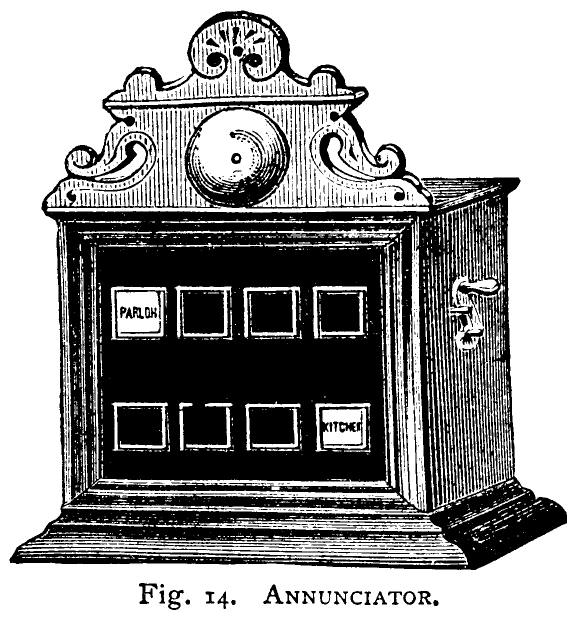
Fig. 14. ANNUNCIATOR.
35 STANDARD ELECTRICAL DICTIONARY.
Annunciator Clock.
A clock operating an annunciator by making contact at determined times.
Annunciator Drop.
The little shutter which is dropped by some forms of annunciators, and
whose fall discloses a number, character or inscription, indicating
whence the call was sent.
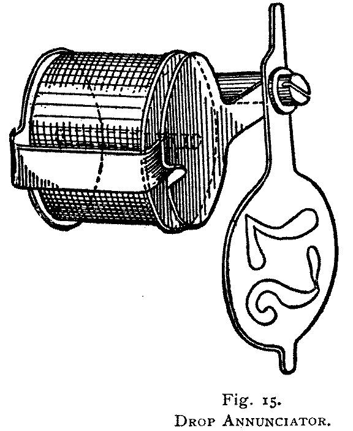
Fig. 15. DROP ANNUNCIATOR.
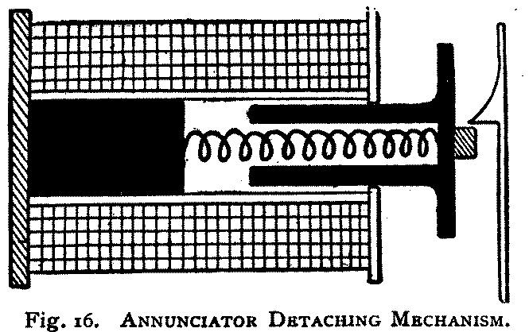
Fig. 16. ANNUNCIATOR DETACHING MECHANISM.
Annunciator, Gravity Drop.
An annunciator whose operations release shutters which fall by gravity.
Annunciator, Needle.
A needle annunciator is one whose indications are given by the movements
of needles, of which there is usually a separate one for each place of
calling.
Annunciator, Swinging or Pendulum.
An annunciator which gives its indications by displacing from its
vertical position a pendulum or vertically suspended arm.
36 STANDARD ELECTRICAL DICTIONARY.
Anodal Diffusion.
A term in electro-therapeutics; the introduction of a medicine into the
animal system by using a sponge-anode saturated with the solution of the
drug in question. On passing a current the desired result is secured by
cataphoresis, q. v.
Anode.
The positive terminal in a broken metallic or true conducting circuit;
the terminal connected to the carbon plate of a galvanic battery or to
its equivalent in case of any other generator. In general practice it is
restricted to the positive terminal in a decomposition or electrolytic
cell, such as the nickel anode in a nickel-plating bath or the anode of
platinum in a gas voltameter. It is the terminal out of or from which
the current is supposed to flow through the decomposition cell. In
electro-therapeutics the term is used simply to indicate the positive
terminal. In an electrolytic cell the electro-negative substance or
anion goes to the anode. Hence, it is the one dissolved, if either are
attacked. The nickel, copper or silver anodes of the electroplater
dissolve in use and keep up the strength of the bath. The platinum anode
in a gas voltameter is unattacked because the anion cannot act upon it
chemically.
Anodic Closure Contraction.
A physiological change in a living subject produced by the closing of
the electric current; the muscular contraction which takes place beneath
the anode applied to the surface of the body when the circuit is closed,
the kathode being applied elsewhere; it is due, presumably, to direct
action on the motor nerve. It is a term in electro-therapeutics. It is
the converse of anodic opening contraction, q. v. An abbreviation A. C.
C. is often used to designate it.
Anodic Duration Contraction.
A term in electro-therapeutics. On the opening or closing of an electric
circuit, the anode of which is placed over a muscle, a contraction is
observed (see Anodic Closure Contraction--Anodic Opening Contraction).
The above term is used to designate the duration of such contraction. An
abbreviation A. D. C. is often used to designate it.
Anodic Opening Contraction.
The converse of Anodic Closure Contraction, q. v.; it is the contraction
of living muscle beneath or near the anode where the circuit, including
such anode and the body in its course, is closed; a physiological
phenomenon observed in electro-therapeutics to which branch of science
the term belongs. An abbreviation A. O. C. is often used to designate
it.
Anodic Reactions.
A term in electro-therapeutics; the diagnosis of disease by the actions
of the tissue near the anode of a circuit.
Anti-Induction Conductor.
A conductor constructed to avoid induction effects in the conducting
element. Many kinds have been made. A tubular metal shield or envelope
which may be grounded will protect an enclosed conductor to some extent.
Or the conductor may be a double wire twisted around itself, one branch
being used for the regular and the other for the return circuit, thus
constituting a closed metallic circuit. The inductive effects are due to
interrupted or varying currents in neighboring wires and circuits. Many
anti-induction conductors have been invented and patented.
37 STANDARD ELECTRICAL DICTIONARY.
Anti-magnetic Shield.
In general terms a hollow screen of soft iron designed to protect any
mass of steel behind or enclosed by it from magnetization by any magnet
near it, such as a dynamo field magnet. This it does by concentrating
the lines of force within its own mass, so that the space within it or
enclosed by it is comparatively free from lines of force. It is often
applied to watches, and is virtually an iron case in which they are
enclosed.
Antimony.
A metal, one of the elements, atomic weight, 122:
equivalent, 40.6 and 24.4; valency, 3 and 5;
specific gravity, 6.8.
It is a conductor of electricity.
Relative resistance,
compressed (silver = 1), 23.60
Specific resistance,
35.50 microhms.
Resistance of a wire,
(a) 1 foot long, weighing 1
grain,
3.418 ohms.
(b) 1 foot long, 1/1000 inch
thick,
213.6 "
(c) 1 meter long, weighing 1
gram,
2.384 "
(d) 1 meter long. 1 millimeter
thick, 0.4521 "
Resistance of a 1-inch cube, 13.98 microhms.
Approximate percentage resistance per degree C.
(1.8º F. at 20º C. 88º F.) 0.389 per cent.
Elcctro-chemical equivalent (hydrogen = .0105) .2560
(See Thermo-Electric Series.)
Anvil.
An intermittent contact, or "make and break" of the current is sometimes
produced by directly pressing a key down upon a metallic surface, the
two being terminals of the circuit. The surface or stud on which such
pressure is produced is called the anvil. The ordinary telegraph key,
which makes a contact by the pressure of the operator's fingers does it
by making a contact between a contact piece upon the front end of the
key and the anvil. In the induction coil the anvil is also found. Thus
in the cut representing the end of an induction coil and its circuit
breaker in which O and O' and P and P' represent the secondary circuit
terminal connections A is the core of soft iron wires, h is the anvil;
the hammer when resting upon it so as to be in contact closes the
circuit. When the current coming from the primary to the post i, passes
through the hammer and anvil h, and emerges by m, it magnetizes the
core; this attracts the hammer, which is made of or is armed with a mass
of iron. This breaks the circuit. The hammer falls at once on the anvil,
again making the circuit, and the action is repeated with great
rapidity. Hammer and anvil or key and anvil connections should be made
of platinum.
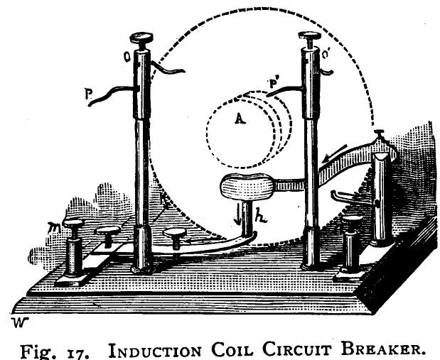
Fig. 17. INDUCTION COIL CIRCUIT BREAKER.
38 STANDARD ELECTRICAL DICTIONARY.
A. O. C.
Abbreviation for Anodic Opening Contraction, q. v.
Aperiodic. adj.
In an oscillating apparatus, or in the oscillating member of apparatus,
the fact of having no reference to time of vibration; dead-beat.
Synonym. Dead-beat.
39 STANDARD ELECTRICAL DICTIONARY.
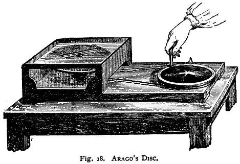
Fig. 18. ARAGO'S DISC.
Arago's Disc.
An apparatus consisting of a disc of copper mounted horizontally, or on
a vertical spindle, and so arranged as to be susceptible of rapid
rotation. Immediately over it, and best with a pane of glass
intervening, a magnetic needle is mounted on a pivot directly over the
axis of the disc. If the disc is rotated the lines of force of the
magnet are cut by it, and consequently currents are produced in the
copper. These currents act upon the needle and cause it to rotate,
although quite disconnected. It is advisable for the needle to be strong
and close to the disc, which should rotate rapidly.
Arc v.
To form a voltaic arc.
Arc, Compound.
A voltaic arc springing across between more than two electrodes.
Arc, Metallic.
The voltaic arc produced between terminals or electrodes of metal. The
characteristics of such arc as contrasted with the more usual arc
between carbon electrodes are its greater length for the same
expenditure of energy, its flaming character and characteristic colors
due to the metals employed. It is sometimes, for the latter reason, used
in spectroscopic investigations.
Arc Micrometer.
A micrometer for measuring the distance between the electrodes of a
voltaic arc.
Arc, Simple.
A voltaic arc produced, as usual, between only two electrodes.
40 STANDARD ELECTRICAL DICTIONARY.
Arc, Voltaic.
The voltaic arc is the arc between two carbon electrodes slightly
separated, which is produced by a current of sufficient strength and
involving sufficient potential difference. The pencils of carbon are
made terminals in a circuit. They are first placed in contact and after
the current is established they are separated a little. The current now
seems to jump across the interval in what sometimes appears an arch of
light. At the same time the carbon ends become incandescent. As regards
the distance of separation with a strong current and high electro-motive
force, the arc may be several inches long.
The voltaic arc is the source of the most intense heat and brightest
light producible by man. The light is due principally to the
incandescence of the ends of the carbon pencils. These are differently
affected. The positive carbon wears away and becomes roughly cupped or
hollowed; the negative also wears away, but in some cases seems to have
additions made to it by carbon from the positive pole. All this is best
seen when the rods are slender compared to the length of the arc.
It is undoubtedly the transferred carbon dust which has much to do with
its formation. The conductivity of the intervening air is due partly,
perhaps, to this, but undoubtedly in great measure to the intense
heating to which it is subject. But the coefficient of resistance of the
intervening air is so much higher than that of any other part of the
circuit that an intense localization of resistance occurs with
corresponding localization of heating effect. This is the cause of the
intense light. Thus if the carbons are but 1/32 of an inch apart as in a
commercial lamp the resistance may be 1.5 ohms. The poor thermal
conductivity of the carbon favors the concentration of heat also. The
apparent resistance is too great to be accounted for by the ohmic
resistance of the interposed air. A kind of thermoelectric effect is
produced. The positive carbon has a temperature of about 4,000° C.
(7,232° F.), the negative from 3,000° C. (5,432° F.) to
3,500° C.
(6,322° F.). This difference of temperature produces a
counter-electro-motive force which acts to virtually increase the
resistance of the arc. The carbon ends of an arc can be projected with
the lantern. Globules are seen upon them due to melted silica from the
arc of the carbon.
Fig. 19. EXPERIMENTAL APPARATUS FOR PRODUCING THE VOLTAIC ARC.
41 STANDARD ELECTRICAL DICTIONARY.
Areometer.
An instrument for determining the specific gravity of a fluid. It
consists of an elongated body ballasted so as to float vertically and
provided with a mark or a scale. It floats deeper in a light than in a
heavy liquid. If it carries but one mark weights are added until that
mark is reached, when the weights required give the specific gravity. Or
the scale may give the reading directly based upon the depth to which it
sinks. Areometers are often made of glass, ballasted with shot or
mercury enclosed in their bottom bulb as shown. They are used in
regulating battery solutions, and in watching the charging and
discharging of storage batteries.
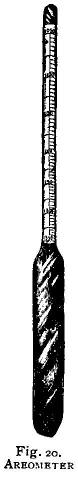
Fig. 20. AREOMETER
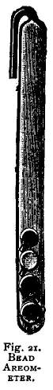
Fig. 21. BEAD AREOMETER
Areometer, Bead.
A tube of glass containing beads of different specific gravities. It has
apertures at top and bottom. When immersed in a liquid, the same fills
it, and the specific gravity within certain limits, depending on the
factors of the beads, is shown by the beads which float and those which
sink. It is used for storage batteries and other purposes where acids
and solutions have to be tested.
Argyrometry.
The method of ascertaining the weight and inferentially the thickness of
an electroplater's deposit of silver. It is done by weighing the article
before and after plating.
Arm.
The four members of a Wheatstone bridge, q. v., are termed its arms.
Referring to the diagram of a bridge, P, Q, R, S, are the arms.
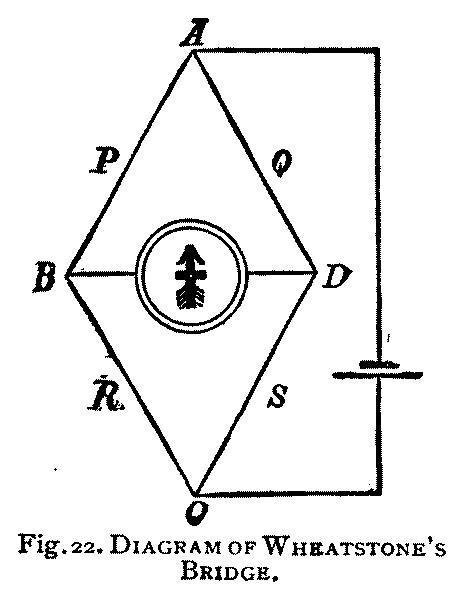
Fig. 22. DIAGRAM OF WHEATSTONE'S BRIDGE.
Armature.
(a.) A mass or piece of iron or steel, or a collection of pieces of iron
designed to be acted on by a magnet. While nickel or cobalt might be
used, they rarely or never are except in experimental apparatus. The
armature of a permanent horse shoe magnet is simply a little bar of soft
iron. When the magnet is not in use it is kept in contact with the poles
with the idea of retaining its magnetism. It is then said to be used as
a keeper. A bar magnet does not generally have an armature. The armature
is also used to exhibit the attraction of the magnet.
Sometimes an armature is made of steel and is permanently magnetized.
Such an armature, termed a polarized armature, is repelled when its like
poles are opposed to like poles of the magnet and otherwise is attracted
with force due to the sums of the magnetism. If the magnet is
sufficiently powerful depolarization of the armature may ensue when like
poles are opposed to like poles. Polarized armatures are used in various
appliances, magneto generators, telegraphic instruments and others.
(b) In a dynamo or Motor the mass of laminated iron or of wire which
carries the coils of insulated wires which are caused to rotate in the
field of force of the field magnets in order to establish and maintain
potential difference with its accompanying current, or which rotates
under the effects of a current in a motor. (See Dynamo Electric
Generator.)
The work of the armature core is twofold. It acts as a portion of the
magnetic circuit, conducting the lines of force, and by virtue of its
high permeability or multiplying power concentrating a number of the
lines of force through its own substance. To enable it to act with
efficiency in this direction it should be made of iron of the highest
permeability, and should approach as closely as possible to the armature
cores consistent with leaving space for the wire winding. It next acts
as a support for the wires which are to be swept through the field of
force. Thus it acts both to establish a strong field and then acts as a
carrier for the wires which are to be cut by the wires in question. In
connection with this subject the different definitions under Armature,
Dynamo, Commutator, Induction and similar topics may be consulted.
(c) See Armature of Influence Machine.
(d) See Armature of Leyden Jar or Static Condenser.
42 STANDARD ELECTRICAL DICTIONARY.
Armature, Bar.
An armature in a dynamo or motor whose winding is made up of conductors
in the form of bars, round, rectangular and of other sections. This type
of armature conductor is objectionable as Foucault currents are produced
in it. It is found best to laminate or subdivide low resistance armature
windings.
[Transcriber's Note: Foucault currents are also called eddy currents.]
Armature, Bipolar.
An armature in which two poles are induced by the field. A bipolar field
magnet produces a bipolar armature.
Armature Bore.
The cylindrical space defined by the pole pieces of a dynamo or motor
within which the armature rotates.
Synonym--Armature Chamber.
43 STANDARD ELECTRICAL DICTIONARY.
Armature, Closed Coil.
An armature for a motor or dynamo, the ends of all of whose coils are
united, so as to be in one closed circuit all the way around.
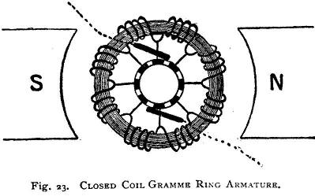
Fig. 23. CLOSED COIL GRAMME RING ARMATURE.
Armature Coil, or Coils.
The insulated wire wound around the core of the armature of an electric
current generator or motor.
Armature Core.
The central mass of iron on which the insulated wire, to be rotated in
the field of an electric current generator or motor, is wound. (See
Dynamo-electric Machine and Motor, Electric.)
Armature, Cylinder.
An armature of the Gramme ring type, but longer in the axial direction,
so that its core resembles a long hollow cylinder, the wire being wound
inside and outside as in the Gramme ring. (See Gramme Ring.)
Armature, Disc.
(a) An armature of a dynamo electric machine or motor in which the coils
are wound so as to be flat and are carried on the face of a disc forming
the core or part of the core of the armature. S. P. Thompson treats it
as a modified drum armature extended radially, the outer periphery
corresponding to the back end of the drum. The poles of the field are
generally placed to face the side or sides of the disc.
(b) Another type of disc armature has its wire wound on bobbins arranged
around the periphery of a disc.
In disc armatures there is often no iron core, their thinness enabling
this to be dispensed with.
44 STANDARD ELECTRICAL DICTIONARY.
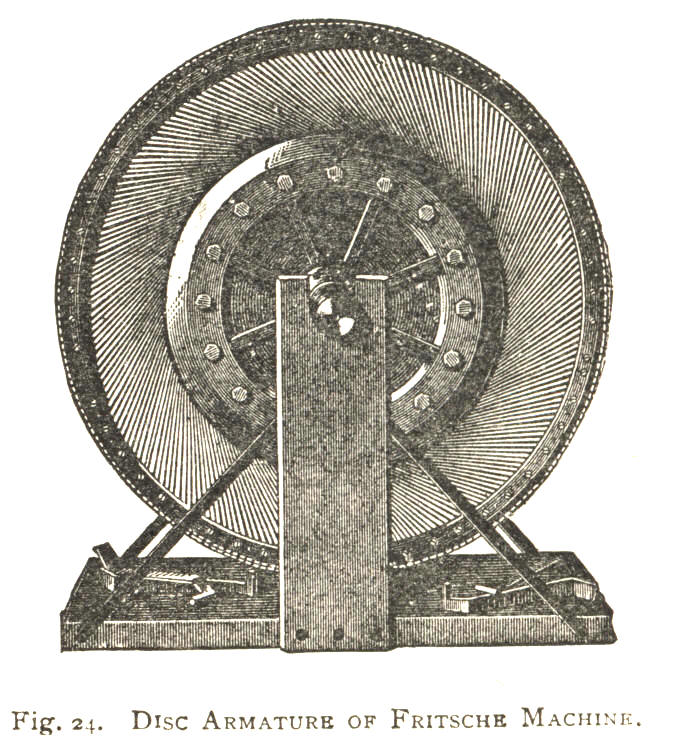
Fig. 24. DISC ARMATURE OF FRITSCHE MACHINE.
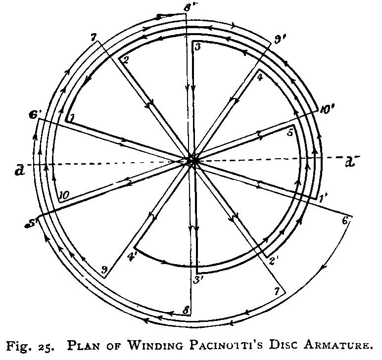
Fig. 25. PLAN OF WINDING PACINOTTI'S DISC ARMATURE.
Armature, Discoidal Ring.
In a dynamo an armature of the shape of a ring of considerable radial
depth of section as compared to its axial depth. It is generally made of
iron ribbon or thin band wound to the proper size.
Synonym--Flat Ring Armature.
45 STANDARD ELECTRICAL DICTIONARY.
Armature, Drum.
An armature for a dynamo or motor, consisting of a cylinder of iron
preferably made up of discs insulated from each other by thin shellacked
paper, or simply by their oxidized surfaces, and wound with wire
parallel to the axis where it lies on the cylindrical periphery and
crossing the heads approximately parallel to the diameter. It operates
practically on the same principle as a Gramme Ring Armature. (See Gramme
Ring.)
Synonym--Cylindrical Armature.
Armature Factor.
The number of conductors on an armature, counted or enumerated all
around its external periphery.
Armature, Hinged.
An armature pivoted to the end of one of the legs of an electro-magnet
so as to be free to swing and bring its other end down upon the other
pole.
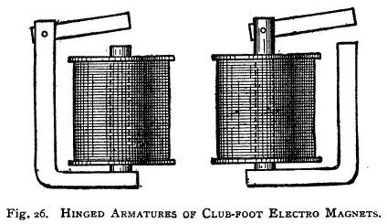
Fig. 26. HINGED ARMATURES OF CLUB-FOOT ELECTRO MAGNETS.
Armature, Hole.
An armature whose core is perforated to secure cooling.
Synonym--perforated Armature.
Armature, Intensity.
An armature wound for high electro-motive force. A term little used at
the present time.
Armature Interference.
A limit to the ampere turns permissible on a given armature is found in
the increase of cross magnetizing effect, q. v., the increased lead
necessitated, and the growth of the demagnetizing power. All such
perturbing effects are sometimes expressed as armature interference.
46 STANDARD ELECTRICAL DICTIONARY.
Armature, Load of.
The circumflux, q. v., of the armature, or the ampere turns of the same.
The maximum load which can be carried by an armature without sparking is
directly proportional to the radial depth of core and to the length of
the gap, and inversely proportional to the breadth of the polar span.
Armature, Multipolar.
An armature in which a number of poles greater than two is determined by
the field. A multipolar field is employed for its production.
Armature, Neutral.
An armature of a magnet or telegraph relay which is not polarized or
magnetized.
Synonym--Non-polarized Armature--Neutral Relay Armature.
Armature of Influence Machine.
Pieces of paper pasted on the stationary plate of an electric machine of
the Holtz type.
Armature of Leyden Jar or Static
Condenser.
The inner and outer tin-foil coatings of a Leyden jar or other
condenser.
Armature, Open Coil.
An armature of a dynamo or motor on which the coils are not joined in
one closed circuit, but have their ends or some of them separated, and
connected each to its own commutator bar or each set to their own bar.
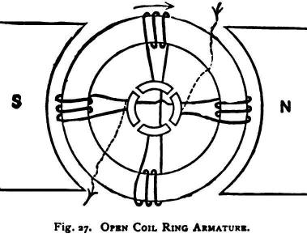
Fig. 27. OPEN COIL RING ARMATURE.
47 STANDARD ELECTRICAL DICTIONARY.
Armature, Pivoted.
An armature for an electro-magnet mounted on a pivot, which is at right
angles to the yoke or parallel with the legs of the magnet, so as to be
free to rotate. When the magnet is excited the armature is drawn into
line or approximately so with its base or yoke. The system is used in
some telegraph apparatus.
Armature Pockets.
Spaces or recesses in armatures provided for the reception of the coils.
Armature, Polarized.
An armature made of steel or having a steel core to which permanent
magnetism has been imparted. Such are used in some forms of magneto
current generators, and in telegraphic instruments. (See Relay,
Polarized.)
Armature, Pole.
An armature having coils wound on separate poles projecting radially all
around the periphery of its central hub or disc, or projecting
internally from a ring-like frame, their ends facing the field magnet.
Synonym--Radial Armature.
Armature, Quantity.
An armature of a dynamo or motor wound for current of large quantity.
The term is now but little used.
Armature-Reactions.
When an armature is running in an active dynamo a series of
reactions is established, the more important of which are:
I. A tendency to cross-magnetize the armature.
II. A tendency to spark at the brushes.
III. A tendency for the armature current to demagnetize on account of
the lead which has to be given to the brushes.
IV. Variations in the neutral points as more or less current is taken
from the machine.
V. Heating of armature, both core and conductors, and of pole pieces,
which heating is due to Foucault currents.
Armature, Revolving, Page's.
An early form of motor. The field is produced by a permanent magnet.
Above its poles is a soft iron armature wound with a coil of insulated
wire. A two-part commutator with contact springs conveys the current to
the coil. The whole is so arranged that the polarity of the armature, as
induced by the coil, through which a current is passed, is reversed as
its ends sweep by the poles of the magnet. Then it is repelled from the
poles and swings through 180° to have its polarity reversed and to
go
through the next 180°, and so on. Thus it rotates at a very high
rate of
speed.
In the cut showing the elevation A, B, is the armature; f, g, the
springs or brushes; h, the commutator with its sections o, i. In the
section of the commutator W, W, designate the springs or brushes, A, the
vertical spindle carrying the armature and commutator, and S, S, the
commutator sections.
48 STANDARD ELECTRICAL DICTIONARY.
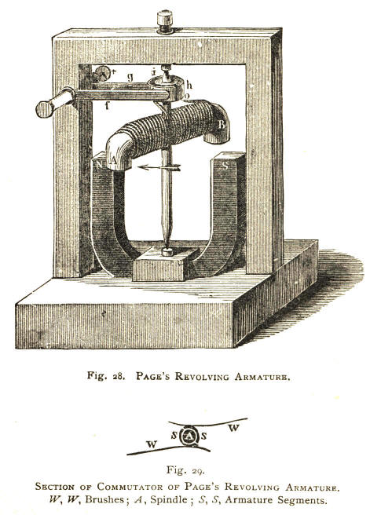
Fig. 28. PAGE'S REVOLVING ARMATURE.
Fig. 29. SECTION OF COMMUTATOR OF PAGE'S REVOLVING ARMATURE.
W, W, Brushes; A, Spindle; S, S, Armature Segments.
Armature, Ring.
An armature whose core is in the shape of a ring, as the Gramme Ring
Armature. (See Figs. 23 & 27.)
49 STANDARD ELECTRICAL DICTIONARY.
Armature, Rolling.
(a) An armature for a permanent horseshoe magnet consisting of a
straight cylinder of soft iron on which a heavy wheel is mounted. When
the legs of the magnet are inclined downward and the bar is laid across
them it rolls down to the poles, across their ends, and back up the
under side. It is merely a magnetic toy or illustrative experiment.
Synonym--Wheel Armature.
(b) Another form consists of little bars of iron with brass discs
attached to the ends. On placing two of these together and bringing the
poles of a magnet near them, as shown, they become magnetized with like
polarity by induction and repel each other, rolling away in opposite
directions.
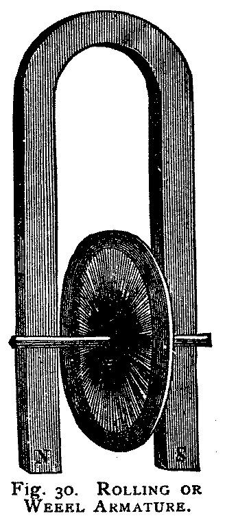
Fig. 30. ROLLING OR WHEEL ARMATURE.
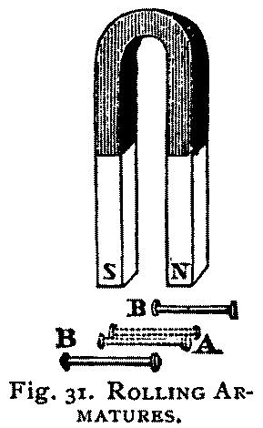
Fig. 31. ROLLING ARMATURES.
Armature, Shuttle.
The original Siemens' armature, now discarded. The core was long and
narrow, and its cross section was nearly of the section of an H. The
grooves were wound full of wire, so that the whole formed almost a
perfect cylinder, long and narrow comparatively. (See Winding Shuttle.)
Synonym--Siemens' Old Armature--Girder Armature--H Armature.
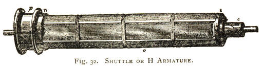
Fig. 32. SHUTTLE OR H ARMATURE.
Armature, Spherical.
An armature of a dynamo which is wound on a spherical core, so as to be
almost a sphere. It is employed in the Thomson-Houston dynamo, being
enclosed in a cavity nearly fitting it, formed by the pole pieces.
Armature, Stranded Conductor.
A substitute for bar-armatures in which stranded copper wire conductors
are substituted for the solid bar conductors, to avoid Foucault
currents. (See Armature, Bar.)
50 STANDARD ELECTRICAL DICTIONARY.
Armature, Unipolar.
An armature of a unipolar dynamo. (See Dynamo Unipolar.)
Armor of Cable.
The metal covering, often of heavy wire, surrounding a telegraph or
electric cable subjected to severe usage, as in submarine cables.
Synonym--Armature of Cable.
Arm, Rocker.
An arm extending from a rocker of a dynamo or motor, to which arm one of
the brushes is attached. (See Rocker.) Ordinarily there are two arms,
one for each brush.
Articulate Speech.
Speech involving the sounds of words. It is a definition which has
acquired importance in the Bell telephone litigations, one contention,
concerning the Bell telephone patent, holding that the patentee did not
intend his telephone to transmit articulations, but only sound and
music.
Astatic. adj.
Having no magnetic directive tendency due to the earth's magnetism.
Examples are given under Astatic Needle; Circuit, Astatic; and
Galvanometer Astatic.
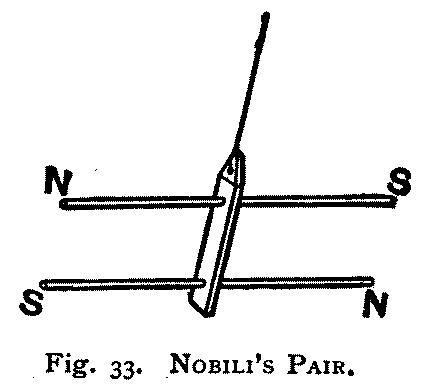
Fig. 33. NOBILI'S PAIR.
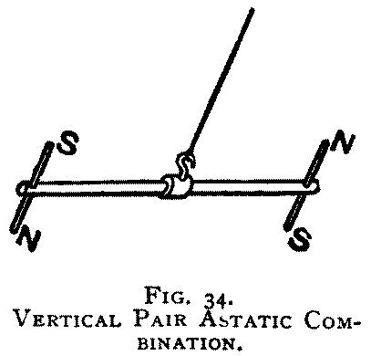
FIG. 34. VERTICAL PAIR ASTATIC COMBINATION.
Astatic Needle.
A combination of two magnetic needles so adjusted as to
have as slight directive tendency as possible. Such a pair of needles
when poised or suspended will hardly tend to turn more to one point of
the compass than another. The combination is generally made up of two
needles arranged one above the other, with their poles in opposite
directions. This combination is usually called Nobili's pair. If of
equal strength and with parallel magnetic axes of equal length they
would be astatic. In practice this is very rarely the case. A resultant
axis is generally to be found which may even be at right angles to the
long axis of the magnets, causing them to point east and west. Such a
compound needle requires very little force to turn it one way or the
other. If one of the needles is placed within a coil of insulated wire a
feeble current will act almost as strongly to deflect the system as if
the other was absent, and the deflection will only be resisted by the
slight directive tendency of the pair of needles. This is the basis of
construction of the astatic galvanometer. Sometimes coils wound in
opposite directions and connected in series, or one following the other,
surround both needles, thus producing a still greater effect of
deflection.
Other astatic needles are shown in the cuts below. [Figures 33 to 35.]
51 STANDARD ELECTRICAL DICTIONARY.
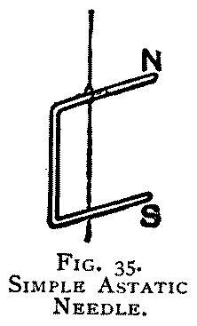
FIG. 35. SIMPLE ASTATIC NEEDLE.
Asymptote.
A line continuously approached by a curve, but which the curve, owing to
its construction or nature of curvature, can never touch, be tangent to,
or intersect.
Atmosphere.
(a) A term applied to the atmospheric pressure as a practical unit of
pressure equal to 15 lbs. to the square inch as generally taken. It is
really about 14.7 lbs. per square inch, or 1,033 grams per square
centimeter.
(b) Air, q. v.
Atmosphere Residual.
The atmosphere left in a vessel after exhaustion. The term may be
applied to any gas. In an incandescent lamp after flashing the residual
atmosphere consists of hydro-carbons.
Atmospheric Electricity.
The electricity of the atmosphere, rarely absent, but often changing in
amount and sign. Benjamin Franklin, in a memoir published in 1749,
indicated the method of drawing electricity from the clouds by pointed
conductors. In June, 1752, he flew a kite and by its moistened cord drew
an electric spark from the clouds, confirming his hypothesis that
lightning was identical with the disruptive discharge of electricity. To
observe electricity in fine weather a gold-leaf or other electroscope
may be connected to the end of a long pointed insulated conductor. The
electricity during thunderstorms can be shown by a similar arrangement,
or burning alcohol or tinder gives an ascending current of warm air that
acts as a conductor. Quite elaborate apparatus for observing and
recording it have been devised. Atmospheric electricity is usually
positive, but occasionally negative. When the sky is cloudless it is
always positive, increasing with the elevation and isolation of the
place. In houses, streets, and under trees no positive electricity can
be found. In the Isle of Arran, Scotland, a rise of 24 to 48 volts per
foot of increase in elevation was found by Sir William Thomson. At
sunrise the electrification of the air is feeble, it increases towards
noon and decreases again to reach a second maximum a few hours after
sunset. It increases with the barometric pressure generally. In cloudy
weather it is sometimes negative and the sign often changes several
times in the same day. In a thunderstorm the changes in sign and
potential are very rapid. The cause of atmospheric electricity is far
from clear. Tait attributes it to a contact effect between air and water
vapor, Solmeke to friction of water vesicles against ice particles in
the upper atmosphere, he first showing that the two may coexist. The
cause of the enormous increase of potential producing lightning is
attributed to the decreased capacity due to the change of water from
cloud vesicles to drops, thus diminishing the electrostatic capacity of
the water in question. (See Lightning.)
52 STANDARD ELECTRICAL DICTIONARY.
Atom.
The ultimate particle or division of an elementary substance; the
smallest part that can exist in combination, and one which cannot exist
alone. An elementary substance is composed of molecules just as truly as
a compound one, but the atoms in the molecule of an elementary substance
are all precisely alike. Hence atoms are the units of chemistry, they
have to do with combinations, but the physical unit, the smallest
particle of matter that can have an independent existence, is the
molecule. The two are often confounded, especially by writers of a few
years ago, so that by "atom" the molecule is often meant. There is
nothing to be said of their size or mass. All such calculations refer to
the molecule, q. v., often spoken of and called the atom.
[Transcriber's note: Yet to be discovered: electron--1897 (5 years),
proton--1920 (28 years), neutron--1932 (30 years), quark--1961 (69
years).]
Atomic Attraction.
The attraction of atoms for each other, in virtue of which they combine
into molecules; chemical affinity, q. v., treats principally of this,
although molecular attraction also plays a part in it.
Atomic Heat.
The product of the atomic weight of a substance by its specific heat.
This product is approximately the same, 6.4; this approximation is so
close that it is of use in determining the valency and atomic weights of
substances. The atomic weight of a substance therefore represents the
approximate number of gram-calories required to raise one gram-atom, q.
v., of such substance through 1° C. (1.8° F.)
Atomicity.
The quantivalence or valency of the atoms; the number of combination
bonds, or bonds of affinity, possessed by the atoms of any substance.
Thus two atoms of hydrogen combine with one atom of oxygen, and three of
oxygen with one of sulphur, forming saturated compounds. Therefore,
taking hydrogen as of single atomicity or a monad, oxygen is of double
atomicity or a dyad, and sulphur is of six-fold atomicity, or a hexad.
The elements are thus classified into seven orders of atomicities, thus:
1, Monads or Univalent
elements, Hydrogen, etc.
2, Dyads or
Bivalent
" Oxygen, etc.
3, Triads or
Trivalent
" Nitrogen, etc.
4, Tetrads or
Quadrivalent "
Lead, etc.
5, Pentads or Quinquivalent
"
Phosphorous, etc.
6, Hexads or
Sexivalent
" Chromium, etc.
7, Heptads or
Septivalent
" Chromium, etc.
The same element often possesses several atomicities. Barium is
generally a dyad, sometimes a tetrad; nitrogen acts as a monad, dyad,
triad, tetrad and pentad. The familiar electrolysis of water, giving two
volumes of hydrogen to one of oxygen, is one of the illustrations of the
theory indicating that two atoms of hydrogen are combined with one of
oxygen.
53 STANDARD ELECTRICAL DICTIONARY.
Atomic Weight.
The number expressing the relative weight of the atom of any substance,
that of hydrogen being generally taken as unity. This is the universal
system, although any other element might be taken as the basis of the
system. The whole theory of atomic weights is based on the
indivisibility of the atom and on the theory of atomicity, q. v. (See
Equivalents.)
[Transcriber's note: The standard is now the isotope carbon-12 as
exactly 12.]
Attraction.
The tendency to approach and adhere or cohere, shown by all forms of
matter. It includes gravitation, cohesion, adhesion, chemical affinity
and other forms, and is opposed by repulsion, and is sometimes overcome
by it, although it may be assumed to be always present. See the
different kinds of attractions under their titles: Atomic Attraction,
Electro-magnetic Attraction and Repulsion, Electro Static Attraction and
Repulsion, Electro-dynamic Attraction and Repulsion; Magnetic Attraction
and Repulsion; Molar Attraction.
Audiometer.
An apparatus for obtaining a balance of induction from two coils acting
upon a third. The third is placed between the other two and is free to
move towards either. A scale is provided to show the extent of its
movement. A varying or interrupted current being passed through the two
outer coils, the preponderating current will produce the most induction
if the central coil is equidistant. It can always be moved to such a
point that there will be no inductive effect, one counteracting the
other. Thus its position measures the relative induction. A telephone is
in circuit with the intermediate coil and is used to determine when its
position is such that no current is induced in it. It is sometimes used
as a direct test of hearing. (See Hughes' Induction Balance.)
Synonym--Acoutemeter.
Aura, Electrical.
The blast of air produced at highly electrified points.
Aurora.
A luminous display seen in the northern heavens in the northern
hemisphere, where it is the Aurora Borealis, and seen in the southern
heavens in the southern hemisphere, where it is called Aurora Australis,
or indifferently for either, the Aurora Polaris. It takes the form of
pale luminous bands, rays and curtains varying in color. Near the poles
they are very numerous. A French commission observed 150 auroras in 200
days. Their height is variously estimated at from 90 to 460 miles; they
are most frequent at the equinoxes and least so at the solstices. There
is a secular variation also, they attain a maximum of occurrence every
11 years together with sun spots, with a minimum 5 or 6 years after the
maximum. There is also a period of 60 years, coincident with
disturbances in the earth's magnetism. Various attempts have been made
to account for them. They have a constant direction of arc with
reference to the magnetic meridian (q. v.) and act upon the magnetic
needle; in high latitudes they affect telegraph circuits violently.
There is a strong probability that they represent electric currents or
discharges. De la Rive considers them due to electric discharges between
the earth and atmosphere, which electricities are separated by the
action of the sun in equatorial regions. According to Balfour Stewart,
auroras and earth currents.(q. v.) may be regarded as secondary currents
due to small but rapid changes in the earth's magnetism. The subject is
very obscure. Stewart treats the earth as representing the magnetic core
of an induction coil, the lower air is the dielectric, and the upper
rarefied and therefore conducting atmosphere is the secondary coil. This
makes the aurora a phenomenon of induced currents. Then the sun may be
regarded as the instigator of the primary changes in the earth's lines
of force representing the primary of an induction coil.
[Transcriber's note: Solar wind, streams of electrons and protons,
interacting with the earth's magnetic field causes aurora. Neither
electrons (1897) nor protons (1920) were known in 1892. The Soviet
satellite Luna first measured the solar wind in 1959. Even today
increased understanding of solar and auroral phenomenon continues.]
54 STANDARD ELECTRICAL DICTIONARY.
Austral Pole.
The north pole of the magnet is thus called sometimes in France; the
austral pole of a magnet is the one which points towards the north polar
regions As unlike magnetic poles attract each other, it is but rational
to call the north-seeking pole of the magnet the south or Austral Pole.
In the same nomenclature the south pole of a magnet, or the
south-seeking pole, is called the Boreal Pole.
A. W. G.
Abbreviation for American Wire Gauge, q. v.
Axis, Electric.
The electric axis of a pyroelectric crystal, such as a tourmaline
crystal; the line connecting the points of greatest pyroelectric
excitability.
Axis of Abscissa.
In a system of rectilinear, or right angle co-ordinates, the horizontal
axis. (See Co-ordinates.)
Synonym--Axis of X.
Axis of Ordinates.
In a system of rectilinear right angle co-ordinates, the vertical axis.
(See Co-ordinates.)
Synonym--Axis of Y.
Azimuth.
The angle between the plane of the meridian and the plane of an azimuth
circle, q. v.
Azimuth Circle.
A great circle, whose plane passes through the zenith or point of the
heavens directly overhead; any great circle in whose plane the vertical
at the point of observation is included.
Each celestial body has or determines an azimuth circle.
55 STANDARD ELECTRICAL DICTIONARY.
B.
(a) Abbreviation for Baumé, a hydrometer scale. (See
Baumé.) Thus 10º B.
means "ten degrees Baumé."
(b) Symbol for the coefficient of induced magnetization, or the number
of lines per square centimeter induced in a magnetic circuit or in any
specified part of it.
B. A.
Abbreviation for British Association. It is prefixed to standards fixed
by the committee of the British Association for the Advancement of
Science. Thus the B. A. ohm means the British Association ohm, a measure
of resistance which is equal to the resistance of a column of mercury
104.9 centimeters long and one square millimeter area of cross-section.
(See Ohm.)
Back Induction.
A demagnetizing force produced in a dynamo armature when a lead is given
the brushes. The windings by such setting of the brushes are virtually
divided into two sets, one a direct magnetizing set, the other a cross
magnetizing set. The latter have a component due to the obliqueness of
the neutral line, which component is demagnetizing in its action.
Back Shock or Stroke of Lightning.
A lightning stroke received after the main discharge of the lightning,
and caused by a charge induced in neighboring surfaces by the main
discharge. The discharge affects the evenness of distribution of
surrounding surfaces so that a species of secondary discharge is
required to make even the distribution, or to supply charge where needed
to bind an opposite one. The effects are much lese severe as a rule than
those of the main charge, although the back stroke has caused death. The
back stroke is sometimes felt a considerable distance from the place of
the original lightning stroke.
Synonym--Return Stroke.
Back Stroke.
(a) In telegraphy the return stroke of the lever in a telegraph sounder,
striking the end of the regulating screw with a sound distinct from that
which it produces on the forward stroke as it approaches the magnet
poles. It is an important factor in receiving by ear or sound reading.
(b) See Back Shock or Stroke of Lightning.
Balance.
(a) Wheatstone's Bridge, q. v., is sometimes termed the Electric
Balance.
(b) A suspension or torsion balance is one which includes a filament or
pair of filaments to whose lower end or ends are attached a horizontal
indicator often called a needle, or a magnetic needle. (See Torsion
Balance.)
(c) See Induction Balance, Hughes'.
(d) For Thermic Balance, see Bolometer.
(e) See Balance, Ampere.
56 STANDARD ELECTRICAL DICTIONARY.
Balance, Ampere.
A class of electrical measuring instruments due to Sir William Thomson
may be grouped under this head.
The instrument is a true balance or scales such as used for weighing. It
is supported by a torsional wire support in place of knife edges. At
each end it carries a circle of wire through which the current to be
tested is passed. The torsional wire support enables the current to be
carried to these wire rings. Above and below each of these rings are two
similar rings, also connected so as to receive the current. They are so
connected that the current shall go through them in opposite senses.
When a current passes, therefore, one of these rings repels and one
attracts the balanced ring.
The extent of this action measures the intensity of the current. A
sliding weight moving along a graduated scale on the balance is used to
bring the balance beam into equilibrium when the current is passing. The
degree of displacement of this weight gives the strength of the current
in amperes.
These balances are made for different currents. Thus there is a
centi-ampere balance, deka-ampere balance and others, as well as an
ampere balance.
Balata.
A gum used as an insulating material. It is the inspissated juice of a
sapotaceous tree, the bullet tree, Mimusops globosa, of tropical
America, from the Antilles to Guiana. It is intermediate in character
between caoutchouc and gutta percha. It is superior to gutta percha in
some respects, being very slightly acted on by light.
Synonym--Chicle.
B. & S.. W. G.
Abbreviation for Brown & Sharpe Wire Gauge; the regular American
Wire
Gauge. (See Wire Gauge, American.)
Barad.
An absolute or fundamental unit of pressure, equal to one dyne per
square centimeter.
Barometer.
An apparatus for measuring the pressure exerted by the atmosphere. It
consists, in the mercurial form, of a glass tube, over 31 inches long,
closed at one end, filled with mercury and inverted, with its open end
immersed in a cistern of mercury. The column falls to a height
proportional to the pressure of the atmosphere from 30 to 31 inches at
the sea level. The "standard barometer" is a height of the mercury or of
the "barometric column" of 30 inches or 760 centimeters, measured from
the surface of the mercury in the cistern.
The column of mercury is termed the barometric column. Above it in the
tube is the Torricellian vacuum.
[Transcriber's note: More accurately, 29.92 inches of mercury or 14.696
PSI.]
Bars of Commutators.
The metal segments of a commutator of a dynamo or motor. They are made
of bars of copper, brass or bronze insulated from one another. (See
Commutator.)
Synonyms--Segments, Commutator Segments, Commutator Bars.
57 STANDARD ELECTRICAL DICTIONARY.
Bath.
(a) In electro-plating the solution used for depositing metal as
contained in a vat or tank; as a silver, copper, or nickel bath used for
plating articles with silver, copper, or nickel respectively.
(b) In electro-therapeutics a bath with suitable arrangements,
electrodes and connections for treating patients with electricity. It is
termed an electric bath or electro-therapeutic bath.
Bath, Bipolar Electric.
In electro-therapeutics a bath in which the electrodes are both immersed
in the water. The patient placed between them receives part of the
discharge. The electrodes are large copper plates, termed shovel
electrodes.
Bath, Electric Shower.
An electro-medical shower bath. The patient is placed on a metallic
stove or support connected to one of the electric terminals. Water
slightly alkaline is showered upon him. The other electrode is in
connection with the water. The rain of drops and streamlets is the
conductor of the current or discharge.
Bath, Multipolar Electric.
An electro-medical bath with a number of electrodes instead of two.
Bath, Stripping.
In electro-plating a solution used for dissolving and thus removing the
plating from any object. The stripping bath is of the same general type
as the plating bath for the same metal as the one to be dissolved. The
object to be "stripped" is made the anode of a plating circuit, and as
the current acts the old plating is attacked and dissolves, leaving the
body of the article bare. It is simply the operation of plating
reversed. The same term is applied to baths acting by simple solution.
Stripping baths are described under the different metals as Silver Bath,
Stripping--Gold Bath, Stripping.
Bath, Unipolar Electric.
An electro-medical bath, in which only one electrode connects with the
water of the bath. The second electrode is supported above the bath. The
patient touches this while in the water whenever electric action is
desired.
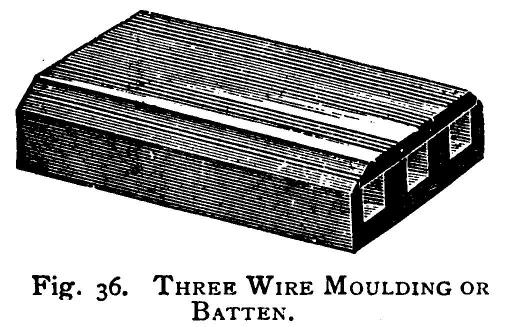
FIG. 36. THREE WIRE MOULDING OR BATTEN.
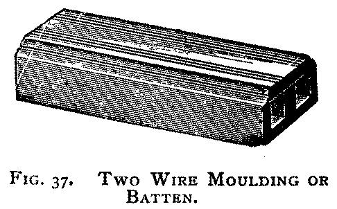
FIG. 37. TWO WIRE MOULDING OR BATTEN.
58 STANDARD ELECTRICAL DICTIONARY.
Batten.
A strip of wood grooved longitudinally for holding wires in wiring
apartments for electric light or power. In use they are fastened to the
wall, grooves inward, or else grooves outward, with the wires lying in
the grooves and covered with the covering strip. For two wire work each
batten contains two grooves; for the three wire system it contains three
grooves.
Synonym--Moulding.
Battery.
A combination of parts or elements for the production of electrical
action. The term is principally applied to voltaic batteries, but there
are also magnetic batteries, batteries of Leyden jars, and other
combinations, described in their places, which come under this category.
[Transcriber's note: A group of similar items such as questions,
machines, parts, guns, or electric cells.]
Battery, Acetic Acid.
A battery whose active solution or excitant is acetic acid or vinegar.
This acid has been used by Pulvermacher in his medical battery, as being
a substance found in every household in the form of vinegar. It is now
but little used.
Battery, Alum.
A battery using as excitant a solution of alum. This battery has had
some application for electric clocks, but only to a limited extent.
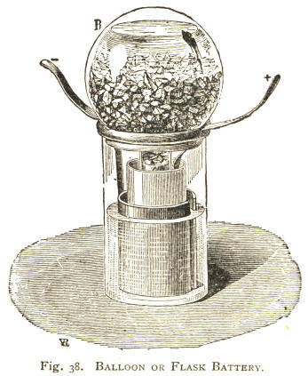
Fig. 38. BALLOON OR FLASK BATTERY.
Battery, Aluminum.
A battery in which aluminum is the negative plate and aluminum sulphate
the excitant. It is mounted like the gravity battery. Its electro-motive
force is 0.2 volt.
59 STANDARD ELECTRICAL DICTIONARY.
Battery, Bagration.
A battery with zinc and carbon electrodes immersed in earth sprinkled
with sal ammoniac (ammonium chloride). The copper is preferably first
immersed in sal ammoniac solution and dried, until a green layer is
formed on its surface.
The battery is highly praised for its constancy by De la Rive, but may
be regarded as obsolete.
Battery, Balloon.
A form of gravity battery into whose centre a globular flask, B, is
inverted, which is filled before inversion with copper sulphate, of
which 2 lbs. are used, and water, so as to remain full. This acts as a
reservoir of copper sulphate, which it constantly supplies. The glass
jar is closed with a perforated wooden cover.
Battery, Banked.
(a) A battery arranged to feed a number of separate circuits.
(b) A battery connected in parallel or in multiple arc.
Battery, Bichromate.
A battery with amalgamated zinc and carbon plates, with an exciting
fluid composed of sulphuric acid, water, and potassium bichromate. For
formula of such solutions see Electropoion Fluid--Kookogey's
Solution--Poggendorff's Solution--Trouvé's Solution--Delaurier's
Solution, and others. (See Index.)
Battery, Bunsen.
A two fluid porous cell battery. The negative plate is carbon, the
positive plate, amalgamated zinc. The depolarizer is nitric acid or
electropoion fluid, q.v., in which the carbon is immersed. The last
named depolarizer or some equivalent chromic acid depolarizing mixture
is now universally used. The excitant is a dilute solution of
sulphuric
acid. Originally the carbon was made cylindrical in shape and surrounded
the porous cups, in which the zinc was placed. This disposition is now
generally reversed. The electro-motive force is 1.9 volts. The
depolarizing solution is placed in the compartment with the carbon. The
excitant surrounds the zinc.
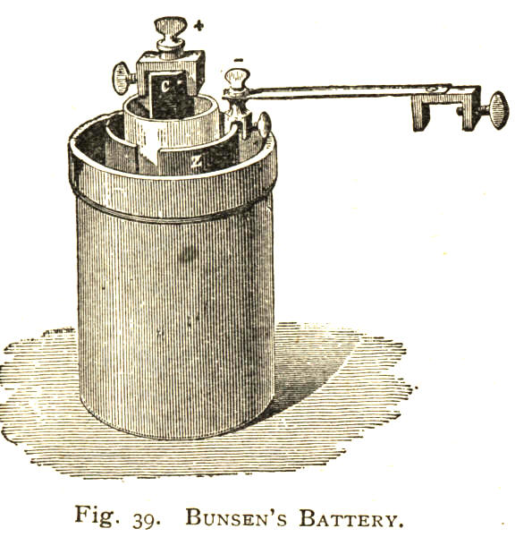
Fig. 39. BUNSEN'S BATTERY.
60 STANDARD ELECTRICAL DICTIONARY.
Battery, Cadmium.
A battery in which cadmium is the negative plate, sulphate of cadmium
solution the excitant and depolarizer, and zinc the positive plate.
Electro-motive force, .31 volt or about one third of a Daniell cell. It
is mounted like a gravity battery.
Battery, Callan.
A modification of Grove's battery. Platinized lead is used for the
negative plate, and as a depolarizer a mixture of 4 parts concentrated
sulphuric acid, 2 parts of nitric acid, and 2 parts of a saturated
solution of potassium nitrate. (See Battery, Grove's.)
Battery, Camacho's.
A battery with carbon negative and amalgamated zinc positive electrodes.
The carbon is contained in a porous cup, packed with loose carbon.
Electropoion or other fluid of that type serves as excitant and
depolarizer, and is delivered as shown from cell to cell by syphons.
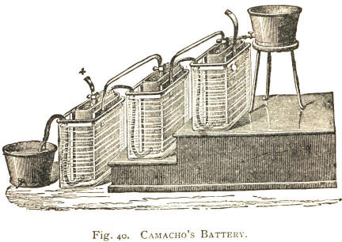
Fig. 40. CAMACHO'S BATTERY.
Battery, Carré's.
A Daniell battery for whose porous cup a vessel or species of sack made
of parchment paper is substituted. The battery has been used for
electric light, and has been run for 200 successive hours, by replacing
every 24 hours part of the zinc sulphate solution by water.
61 STANDARD ELECTRICAL DICTIONARY.
Battery, Cautery.
A battery used for heating a platinum wire or other conductor used for
cauterization in electro-therapeutics. The term is descriptive, not
generic.
Battery, Chloric Acid.
A battery of the Bunsen type in which an acidulated solution of
potassium chlorate is used as depolarizer.
Battery, Chloride of Lime.
A battery in which bleaching powder is the excitant. The zinc electrode
is immersed in a strong solution of salt, the carbon in a porous vessel
is surrounded with fragments of carbon and is packed with chloride of
lime (bleaching powder). There is no action on open circuit. It has to
be hermetically sealed on account of the odor. Its electro-motive force
is--initial, 1.65 volts; regular, 1.5 volts.
Synonym--Niaudet's Battery.
Battery, Chromic Acid.
Properly a battery in which chromic acid is used as a depolarizer. It
includes the bichromate battery. (See Battery, Bichromate.)
Battery, Closed Circuit.
A battery adapted by its construction to maintain a current on a closed
circuit for a long time without sensible polarization. The term is
merely one of degree, for any battery becomes exhausted sooner or later.
As examples the Grove, Bunsen or Daniell batteries may be cited.
62 STANDARD ELECTRICAL DICTIONARY.
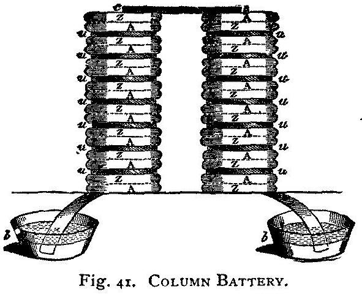
Fig. 41. COLUMN BATTERY.
Battery, Column.
The original Volta's pile. It consists of a series of compound circular
plates, the upper or lower half, A, copper; the other, Z, of zinc.
Between each pair of plates some flannel or cloth, u, u, is laid, which
is saturated with dilute acid. As shown in the cut, the parts are laid
up in two piles, connected at the top with a bar, c, c, and with vessels
of acidulated water, b, b, as electrodes. The great point in setting it
up is to be sure that no acid runs from one disc of flannel to the next
over the outside of the plates, as this would create a short circuit.
The plates are best compound, being made up of a zinc and a copper plate
soldered together. They may, however, be separate, and merely laid one
on the other. In such case great care must be taken to admit no acid
between them.
Volta's pile is no longer used, except occasionally. Trouvé's
blotting
paper battery (see Battery, Trouvé's) is a relic of it, and the
same is
to be said for Zamboni's dry pile.
It rapidly polarizes, the flannel retains but little acid, so that it is
soon spent, and it is very troublesome to set up. Great care must be
taken to have the cloth discs thoroughly saturated, and wrung out to
avoid short circuiting by squeezing out of the acid.
Battery, D'Arsonval's.
A battery of the Bunsen type, differing therefrom in the solutions. As
excitant in which the zinc electrode is immersed, the following solution
is used:
Water, 20 volumes;
Sulphuric Acid (purified by shaking with a little olive or similar oil),
1 volume;
hydrochloric acid, 1 volume.
As polarizer in which the carbon is immersed the following is used:
Nitric acid, 1 volume;
hydrochloric acid, 1 volume;
water acidulated with 1/20th sulphuric acid, 2 volumes.
Battery, de la Rue.
A battery with zinc positive and silver negative electrode; the
depolarizer is silver chloride; the excitant common salt or ammonium
chloride. The cut shows one of its forms of construction.
The right hand portion of the cut, Fig. 42, shows the zinc perforated at
C for the connection from the next silver plate. The next to it is the
negative electrode of silver around which a mass of silver chloride is
cast in cylindrical form. A is a parchment paper cylinder with two holes
near its top, through which the silver wire of the negative electrode is
threaded, as shown in B. A solution of 23 parts ammonium chloride in
1,000 parts of water is the approved excitant. Its electro-motive force
is 1.03 volts.
The jars are closed with paraffin.
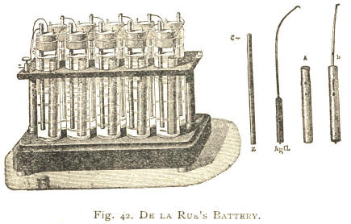
Fig. 42. DE LA RUE'S BATTERY.
63 STANDARD ELECTRICAL DICTIONARY.
Battery, Dry.
(a) A form of open circuit battery in which the solutions by a mass of
zinc oxychloride, gypsum, or by a gelatinous mass such as gelatinous
silica, or glue jelly, are made practically solid. Numbers of such have
been patented, and have met with considerable success.
(b) Zamboni's dry pile, q. v., is sometimes termed a dry battery.
Battery, Element of.
A term applied sometimes to a single plate, sometimes to the pair of
plates, positive and negative, of the single couple.
Battery, Faradic.
A term applied, not very correctly however, to apparatus for producing
medical faradic currents. It may be an induction coil with battery, or a
magneto-generator worked by hand.
Battery, Ferric Chloride.
A battery of the Bunsen type, in which a solution of perchloride of iron
(ferric chloride) is used for the depolarizing agent. A little bromine
is added with advantage. The depolarizing agent recuperates on standing,
by oxidation from the oxygen of the air.
Battery, Fuller's.
A battery of the Bunsen type. The zinc plate is short and conical, and
rests in the porous jar into which some mercury is poured. An insulated
copper wire connects with the zinc. A plate of carbon is in the outer
jar. The solutions are used as in the Bunsen battery.
Synonym--Mercury Bichromate Battery.
Battery, Gas.
(a) A battery whose action depends on the oxidation of hydrogen as its
generating factor. It was invented by Grove. Plates of platinum are
immersed in cups of dilute acid, arranged as if they were plates of zinc
and carbon, in an ordinary battery. Each plate is surrounded by a glass
tube sealed at the top. The plates are filled with acid to the tops.
Through the top the connection is made. A current from another battery
is then passed through it, decomposing the water and surrounding the
upper part of one set of plates with an atmosphere of oxygen and of the
other with hydrogen. Considerable quantities of these gasses are also
occluded by the plates. On now connecting the terminals of the battery,
it gives a current in the reverse direction of that of the charging
current.
This battery, which is experimental only, is interesting as being the
first of the storage batteries.
(b) Upward's Chlorine Battery and any battery of that type (see Battery,
Upward's,) is sometimes termed a gas battery.
64 STANDARD ELECTRICAL DICTIONARY.
Battery Gauge.
A pocket or portable galvanometer for use in testing batteries and
connections.
Battery, Gravity.
A battery of the Daniell type, in which the porous cup is suppressed and
the separation of the fluids is secured by their difference in specific
gravity. A great many forms have been devised, varying only in details.
The copper plate, which is sometimes disc shaped, but in any case of
inconsiderable height, rests at the bottom of the jar. Near the top the
zinc plate, also flat or of slight depth, is supported. As exciting
liquid a strong solution of copper sulphate lies at the bottom of the
jar. This is overlaid by a solution of zinc sulphate, or sodium
sulphate, which must be of considerably less specific gravity than that
of the copper sulphate solution. In charging the jar one-tenth of a
saturated solution of zinc sulphate mixed with water is sometimes used
as the upper fluid. This may be first added so as to half fill the jar.
The strong solution of copper sulphate may then be added with a syphon
or syringe underneath the other so as to raise it up. From time to time
copper sulphate in crystals are dropped into the jar. They sink to the
bottom and maintain the copper sulphate solution in a state of
saturation.
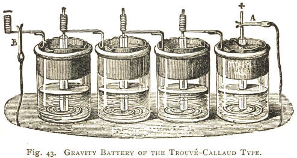
Fig. 43. GRAVITY BATTERY OF THE TROUVÉ-CALLAUD TYPE.
If the battery is left on open circuit the liquids diffuse, and metallic
copper precipitates upon the zincs. This impairs its efficiency and
creates local action. As long as the battery is kept at work on closed
circuit work but little deposition, comparatively speaking, occurs.
From time to time, in any case, the zinc plates are removed and scraped,
so as to remove the copper which inevitably forms on their surface. Care
must be taken that the zinc sulphate solution, which is constantly
increasing in strength, does not get so strong as to become of as high
specific gravity as the copper sulphate solution. From time to time some
of the upper solution is therefore removed with a syphon or syringe and
replaced with water. An areometer is useful in running this battery.
65 STANDARD ELECTRICAL DICTIONARY.
Battery, Grenet.
A plunge battery with zinc positive and carbon negative electrodes.
Electropoion or other chromic acid or bichromate solution is used as
depolarizer and excitant. The zinc plate alone is plunged into and
withdrawn from the solution.
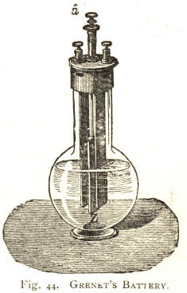
Fig. 44. GRENET'S BATTERY.
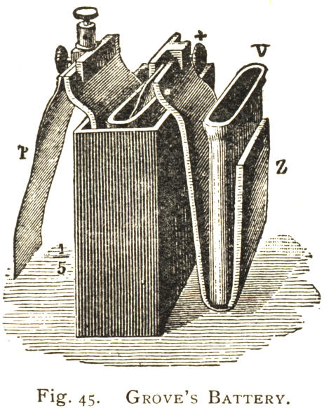
Fig. 45. GROVE'S BATTERY.
Battery, Grove's.
A two fluid galvanic battery. A porous cup has within it a riband of
platinum, which is the negative plate; amalgamated zinc in the outer jar
is the positive plate. Dilute sulphuric acid (10 per cent. solution) is
placed in the outer jar, and strong nitric acid (40° B.) as a
depolarizer in the porous cups. Its E. M. F. is 1.96 volts.
It is objectionable, as it gives off corrosive nitrous fumes. These are
produced by the oxidation of the nascent hydrogen by the nitric acid, by
the following reaction:
3 H + H N O3 = 2 H2 O + N O. There are other reactions, one of which
results in the formation of ammonia by the reduction of the nitric acid
radical by the hydrogen. Ammonium can be detected in the spent liquids.
66 STANDARD ELECTRICAL DICTIONARY.
Battery, Hydrochloric Acid.
A battery in which hydrochloric acid is used as the excitant. Many
attempts have been made to use this acid in batteries, but the volatile
nature of the acid causes the production of so much odor with corrosive
fumes that it has never come into use.
Battery, Lead Chloride.
A battery of the lead sulphate type in which lead chloride is the
depolarizer. It has had no extended use.
Battery, Lead Sulphate.
A battery similar to Marié Davy's battery or the gravity
battery, but
using lead sulphate as depolarizer and excitant. Lead, copper or tin is
the material of the negative plate. Becquerel used the lead sulphate as
a solid cylindrical mass surrounding a lead rod 1/5 to 1/4 inch in
diameter. One part of common salt may be mixed with 5 parts of the lead
sulphate. The electro-motive force is about 0.5 volt. The resistance is
very high.
Battery, Leclanché.
An open circuit battery with porous cup. In the outer jar is a zinc rod;
a carbon plate is placed in the porous cup. The latter is packed with a
mixture of clean powdered manganese binoxide as depolarizer, and
graphite in equal volumes. A strong solution of ammonium chloride (sal
ammoniac) is placed in the outer jar. It is only used on open circuit
work. Its electromotive force is 1.48 volts, when not polarized.
The reaction is supposed to be about the following:
2 N H4 Cl + 2 Mn O2 + Zn = Zn Cl2 + 2 N H3 + H2 0 + M2 O3
The battery rapidly weakens on open circuit, but quickly recuperates.
There is another form of this battery, termed the agglomerate battery.
(See Battery, Leclanché Agglomerate.)
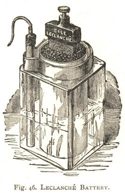
Fig. 46. LECLANCHÉ BATTERY.
Battery, Leclanché Agglomerate.
A form of the Leclanché in which the porous jar is suppressed.
Cakes
made of a mixture of carbon, 52 parts; manganese binoxide, 40 parts; gum
lac, 5 parts; potassium bisulphate, 3 parts, compressed at 300
atmospheres, at a temperature of 100° C. (212° F.), are
fastened by
India rubber bands or otherwise against the carbon plate. These
constitute the depolarizer. Various shapes are given the carbon and
depolarizing agglomerates.
Battery, Local.
A battery supplying a local circuit (see Circuit. Local). The current is
governed by the relay situated on the main line and operated by its
current.
Battery, Main.
The battery used in operating the main line. It is usually applied to
telegraphy. Its function is then to supply current for working relays,
which in turn actuate the local circuits.
Main and local circuits and batteries are also used in the automatic
block system of railroad signalling.
67 STANDARD ELECTRICAL DICTIONARY.
Battery, Marié Davy's.
A two fluid porous cup battery with carbon negative plate, zinc positive
plate, and mercury sulphate, a nearly insoluble salt, as depolarizer and
excitant. Mercurous or mercuric sulphates have been used in it. Its
electromotive force is 1.5 volts. The local action and waste, owing to
the slight solubility of the mercury compounds, is very slight. If used
on close circuit it becomes polarized. It is also subject under extreme
circumstances to reversal of polarity, zinc becoming deposited upon the
carbon, and there forming a positive electrode.
In using the cells in series the level of liquid in all must be the
same, otherwise the cell in which it is lowest will become polarized and
exhausted.
Modifications of this battery on the lines of the gravity battery have
been constructed.
Synonym--Sulphate of Mercury Battery.
Battery, Maynooth's.
A battery of the Bunsen type, with cast iron negative plate. The iron
takes the passive form and is not attacked.
Battery, Medical.
A term applied very indiscriminately to medical current generators, and
to medical induction coils, or to any source of electricity, static or
current, for medical application.
68 STANDARD ELECTRICAL DICTIONARY.
Battery, Meidinger's.
A variety of Daniell cell of the gravity type. The plates are
cylindrical. The zinc plate lies against the upper walls of the vessel.
The copper plate of smaller diameter rests on the bottom. A large tube,
with an aperture in its bottom, is supported in the centre and is
charged with copper sulphate crystals. The cup is filled with a dilute
solution of Epsom salts (magnesium sulphate) or with dilute sulphuric
acid.
Battery Mud.
A deposit of mud-like character which forms in gravity batteries and
which consists of metallic copper precipitated by the zinc. It indicates
wasteful action.
Battery, Multiple-connected.
A battery connected in parallel, all the positive plates being connected
to one electrode, and all the negative to another.
Battery, Nitric Acid.
A battery in which nitric acid is used as the excitant. Owing to its
cost and volatility this acid has been but little used in batteries,
other than as a depolarizer. In Grove's battery (see Battery, Grove's)
it has been thus used.
Battery of Dynamos.
A number of dynamos may be arranged to supply the same circuit. They are
then sometimes termed as above, a Dynamo Battery. They may be arranged
in series or in parallel or otherwise combined.
Battery of Leyden Jars.
To produce the quantity effect of a single large Leyden jar with a
number of small ones they are often connected in parallel and termed a
battery. In such case the inner coatings are all connected by regular
bar conductors, and the outside coatings are also all in connection.
They are conveniently placed in a box or deep tray whose inner surface
is lined with tinfoil, with an outside connection for grounding, etc.
The cascade, q. v., arrangement is not so generally termed a battery.
Battery, Open Circuit.
A battery adapted for use in open circuit work. Its main requirement is
that it shall not run down, or exhaust itself when left on open circuit.
The Leclanché battery is very extensively used for this work.
Its action
is typical of that of most open circuit batteries. It is without any
action on open circuit. It is very quickly exhausted on closed circuit,
but recuperates or depolarizes quite soon when on open circuit. It is
always in condition for a momentary connection, but useless for steady
work.
Battery, Oxide of Copper.
A battery with zinc positive and iron negative electrodes. The excitant
is a 30 or 40 per cent. solution of sodium or potassium hydrate (caustic
soda or caustic potash). The depolarizer is copper oxide. In action the
copper is gradually reduced to the metallic state. The iron element is
often the containing vessel. The battery is practically inactive on open
circuit.
Its electro-motive force varies from .75 to .90 volt. To prevent the
formation of sodium or potassium carbonate the cell should be closed, or
else the liquid should be covered with mineral oil.
Synonyms--Lalande & Chaperon Battery--Lalande-Edison Battery.
69 STANDARD ELECTRICAL DICTIONARY.
Battery, Peroxide of Lead.
A battery in which peroxide of lead (lead binoxide) is the depolarizer.
It is a sort of predecessor of the present secondary battery.
Battery, Platinized Carbon.
A modification of Smee's battery, in which platinized carbon is used for
the negative plates. Before polarization the E. M. F. is equal to that
of Smee's battery. Polarization reduces its electro-motive force
one-half.
Battery, Plunge.
A battery whose plates are mounted so as to be immersed in the battery
cups or cells, when the battery is to be used, and withdrawn and
supported out of the cups when not in use. The object is to prevent
wasting of the plates by standing in the solution. It is a construction
generally used with sulphuric acid--chromic acid solution and
amalgamated zinc and carbon plates.
Battery, Pneumatic.
A battery arranged to have air blown through the solution to assist
diffusion and depolarization. It is a construction applied to chromic
acid or bichromate batteries.
Battery, Primary.
A battery in which the current is supplied by the solution of one of the
plates by the solution. The term distinguishes it from a secondary or
storage battery.
Battery, Pulvermacher's
Electro-Medical.
In this battery, the electrodes were zinc and copper wires wound upon
small pieces of wood. Dilute vinegar was used as the excitant, because
it could be found in every household. Formerly the battery had great
success. It is now little used.
Battery, Sal Ammoniac.
Batteries in which a solution of ammonium chloride is the excitant; they
are very extensively used on open circuit work. (See Battery,
Leclanché.)
The crystals formed in these batteries have been analyzed and found to
consist of ammonium zinc chloride, 3 Zn Cl2, 8 N H3, 4 H20.
Battery, Salt, or Sea Salt.
Batteries in which a solution of sodium chloride or common salt is the
excitant, have been largely used, especially for telegraphic purposes.
The Swiss telegraphs use a carbon-zinc combination with salt and water
as the excitant. The batteries are sometimes mounted as plunge
batteries. They are exhausted by short circuiting after some hours, but
recuperate on standing. The zinc is not amalgamated.
70 STANDARD ELECTRICAL DICTIONARY.
Battery, Sand.
A battery whose cells are charged with sand saturated with dilute acid.
It prevents spilling of acid. It is now practically obsolete.
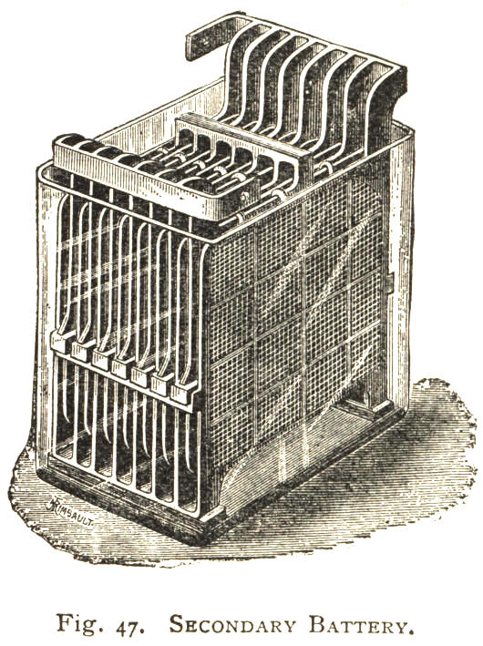
Fig. 47. SECONDARY BATTERY.
Battery, Secondary.
A voltaic battery whose positive and negative electrodes are formed or
deposited by a current from a separate source of electricity by
electrolysis. On disconnection the battery is ready to yield a current,
in the reverse direction of that of the charging current. The usual type
has lead plates on one of which lead binoxide and on the other of which
spongy lead is formed. The lead binoxide seems to be the negative
element, and it also acts as the depolarizer. The spongy lead is the
positive electrode. The solution is dilute sulphuric acid of specific
gravity 1.17. The action consists first in the oxidation of the spongy
lead. The hydrogen set free by the reaction, and which by electrolytic
transfer goes to the other plate, reduces the lead binoxide to
protoxide. The sulphuric acid then attacks the oxides and converts the
oxides into sulphates.
The charging process consists in sending a current in the reverse
direction through the battery. If there are several cells they are
arranged in series, so that each one receives the same intensity of
current. An electrolytic decomposition takes place, the lead sulphate
on
one plate is reduced to metallic lead, and that on the other plate is
oxidized to lead binoxide. It is then ready for use.
71 STANDARD ELECTRICAL DICTIONARY.
The plates in a lead plate battery are of very large area per cell, and
are placed close together. Sometimes, as in Planté's battery,
large flat
plates are laid together with a separating insulator between them, and
are then rolled into a spiral. Sometimes, the most usual arrangement,
the plates are in sets, the positive and negative ones alternating, and
each cell containing a number of plates.
To secure a good quantity of active material, the plates are sometimes
perforated, and the perforations are filled with oxide of lead. This
gives a good depth of material for the charging current to act on, and
avoids the necessity for a tedious "forming," q. v.
The electro-motive force of such a battery per cell is 2 volts. Its
resistance may only be one or two-hundredths of an ohm. An intense
current of many amperes can be supplied by it, but to avoid injuring the
cell a current far less than the maximum is taken from it.
To charge it, a slightly greater electro-motive force, the excess being
termed spurious voltage, is required.
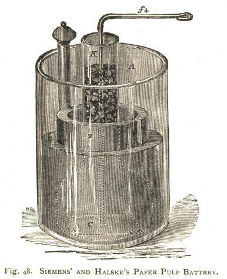
Fig. 48. SIEMENS' AND HALSKE'S PAPER PULP BATTERY.
72 STANDARD ELECTRICAL DICTIONARY.
Battery, Secondary, Plante's.
Plante's secondary battery is one of the earlier forms of storage
battery, but has had much success. Two lead plates, large in area and
close together but not touching, are "formed," by exposure to an
electrolyzing current of electricity in one direction, while they are
immersed in dilute sulphuric acid. This converts the surface of one
plate into binoxide. The cell is then allowed to discharge itself almost
completely, when the charging current is again turned on. This process
is repeated over and over again, until the surfaces of the plates are
considerably attacked, one plate, however, being maintained in a state
of oxidation. After a few days of this operation a period of rest is
allowed between the reversals, which sets up a local action on the
oxidized plate, between the metallic lead of the plate, and its coating
of binoxide. This causes the lead to be attacked, under the influence of
the local couple, and sulphate of lead is formed, which, ultimately, by
the charging current is converted into peroxide. These operations
produce an exceedingly good battery. The process described is termed
forming.
The plates separated by strips of insulating material are generally
wound into a double spiral.
Battery, Siemens' and Halske's.
A Daniell battery of peculiar shape. The copper, C, is at the bottom of
the glass jar, A. The inner jar, K, has the form of a bell, and supports
a mass of paper pulp, which is dampened with sulphuric acid. The zinc,
Z, rests on top of the mass of pulp. The battery is very durable, but of
high resistance.
Battery, Sir William Thomson's.
A form of Daniell battery, of the gravity type. The receptacles are
shallow wooden trays lined with lead. A thin plate of copper rests on
the bottom. The zinc plate is of gridiron shape, and rests on wooden
blocks which support it in a horizontal position above the copper. One
tray is placed on top of the other, the upper tray resting on the
corners of the zinc plate which rise above the level of the top of the
flat vessel. Thus connection is assured without wires or binding posts.
It is charged like a gravity battery. The density of the zinc sulphate
solution should be between 1.10 and 1.30. The circuit must be kept
closed to prevent deposition of metallic copper on the zinc. The entire
disposition of the battery is designed to reduce resistance.
Battery, Skrivanow.
A pocket battery of the De la Rue type, with a solution of 75 parts
caustic potash in 100 parts of water as the excitant. The silver
chloride is contained in a parchment paper receptacle. Its
electro-motive force is 1.45 to 1.5 volts.
Battery, Smee's.
A single fluid combination, with zinc positive plate, and a plate of
silver, coated with platinum black, for the negative plate. The finely
divided platinum affords a surface from which the hydrogen bubbles
instantly detach themselves, thus preventing polarization. The liquid is
a mixture of one part sulphuric acid to seven parts of water. For the
negative plate silver-plated copper, coated with platinum black, is
used. Electromotive force, .47 volt.
Fig. 49. SMEE'S BATTERY.
73 STANDARD ELECTRICAL DICTIONARY.
Fig. 50. SPIRAL BATTERY, OR HARE'S DEFLAGRATOR.
Battery, Spiral.
A battery whose plates of thin zinc and copper are wound into a spiral
so as to be very close, but not touching. Dilute sulphuric acid is the
excitant. It is now practically obsolete.
Synonyms--Calorimeter--Hare's Deflagrator.
Battery, Split.
A battery of a number of voltaic cells, connected in series, with their
central portion grounded or connected to earth. This gives the ends of
opposite potentials from the earth, and of difference therefrom equal to
the product of one-half of the number of cells employed, multiplied by
their individual voltage.
Battery Solutions, Chromic Acid.
A number of formulae have been proposed for these solutions. (See
Electropoion Fluid--Kookogey's Solution--Poggendorff's Solution--
Trouvé's Solution--Delaurier's Solution--Chutaux's
Solution--Dronier's
Salt--Tissandier's Solution.)
Battery, Trough.
A battery whose elements are contained in a trough, which is divided by
cross-partitions so as to represent cups. A favorite wood for the trough
is teak, which is divided by glass or slate partitions. Marine glue or
other form of cement is used to make the joints tight. For porous cup
divisions plates of porous porcelain or pottery are placed across,
alternating with the impervious slate partitions.
Battery, Trouvé's Blotting
Paper.
A battery of the Daniell type in which the solutions are retained by
blotting paper. A considerable thickness of blotting paper lies between
the two plates. The upper half of the thickness of the blotting paper is
saturated with a solution of zinc sulphate, on which the zinc plate
rests.
The lower half of the paper is saturated with copper sulphate solution,
and this rests upon the copper plate.
Fig. 51. TROUVÉ'S BLOTTING PAPER BATTERY.
74 STANDARD ELECTRICAL DICTIONARY.
Battery, Tyer's.
A modification, as regards the positive element, of Smee's battery, q.
v. The bottom of the battery jar contains a quantity of mercury in which
pieces of zinc are thrown, and this constitutes the positive element.
A ball of zinc at the end of an insulated copper wire affords the
connection with the zinc and mercury. Its great advantage is that the
smallest scraps of zinc can be used in it, by being dropped into the
mercury. The negative plate is platinized silver; the exciting liquid,
dilute sulphuric acid.
Fig. 52. TYER'S BATTERY.
75 STANDARD ELECTRICAL DICTIONARY.
Fig. 53. SECTION OF UPWARD'S BATTERY.
Fig. 54. ELEVATION OF UPWARD'S BATTERY.
Battery, Upward's.
A primary voltaic cell, the invention of A. Renée Upward.
Referring to
the cuts, the positive plate. Z, is of cast zinc; it is immersed in
water, in a porous cup, B. Outside of the porous cup and contained in
the battery jar are two carbon plates, C, C, connected together. The
rest of the space between the porous cup and battery jar is packed with
crushed carbon, and the top is cemented. Chlorine gas is led by a pipe,
D, into the outer cell. It diffuses through the fine carbon, dissolves
in the water, and so finds its way to the zinc, which it attacks,
directly combining therewith, and forming zinc chloride (Zn + 2 Cl = Zn
Cl 2). Such of the chlorine as is not absorbed finds its way by an
outlet
tube, E, to the next cell. Arrangements are provided for generating
chlorine gas as required. The high specific gravity of the gas is
utilized in regulating its distribution through the cells. The
electro-motive force of the cell is 2.1 volts. A cell 11.5 by 5.5 inches
and 12.5 inches deep has a resistance of 0.2 ohm.
An overflow pipe, F, with faucet, T, is supplied to withdraw the
solution of zinc chloride as it accumulates.
76 STANDARD ELECTRICAL DICTIONARY.
Battery, Varley's.
A Daniell battery of the Siemens' and Halske's type (see Battery,
Siemens' and Halske's), in which zinc oxide is substituted for the paper
pulp of the other battery. It has been very little used.
Battery, Volta's.
The original acid battery. It has a negative electrode of copper, a
positive electrode of zinc; the excitant is sulphuric acid diluted with
sixteen times its volume of water. It rapidly polarizes, and is very
little used.
Battery, Voltaic or Galvanic.
An apparatus for converting chemical energy directly into electric
energy. This is as broad a definition as can well be given. The general
conception of a battery includes the action of electrolysis, a solution
in the battery acting upon one of two conducting electrodes immersed in
such fluid, which dissolves one of them only, or one more than the
other. The best way to obtain a fundamental idea of a battery is to
start with the simplest. Dilute sulphuric acid dissolves neither pure
zinc nor copper. But it has a far stronger affinity for the first named
metal. If now we immerse in dilute acid two plates, one of pure zinc,
and one of copper, no action will be discernible. But if the plates are
brought in contact with each other a stream of bubbles of hydrogen gas
will escape from the surface of the copper and the zinc will dissolve.
By applying proper tests and deductions it will be found that the copper
and zinc are being constantly charged with opposite electricities, and
that these are constantly recombining. This recombination produces what
is known as an electric current.
To constitute a battery the zinc and copper plates must be connected
outside of the solution. This connection need not be immediate. Any
conductor which touches both plates will bring about the action, and the
current will pass through it.
The easiest way to picture the action of a battery is to accept the
doctrine of contact action. In the battery the molecules of water are
pulled apart. The hydrogen molecules go to the copper, the oxygen
molecules go to the zinc, each one, leaving its contact with the other,
comes off charged with opposite electricity. This charges the plates,
and the continuous supply of charge and its continuous discharge
establishes the current.
The accumulation of hydrogen acts to stop the action by polarization.
Its own affinity for oxygen acts against or in opposition to the
affinity of the zinc for the same element, and so cuts down the action.
A depolarizer of some kind is used in acid batteries for this reason. As
such depolarizer has only to act upon one plate, in most batteries it is
usual to surround such plate only, as far as it is possible, with the
depolarizer. The solution which dissolves the zinc is termed the
excitant or exciting solution.
To this concrete notion of a voltaic battery the different modifications
described here may be referred. Zinc, it will be seen, forms the almost
universally used dissolved plate; carbon or copper forms the most usual
undissolved plate; sulphuric acid in one form or another is the most
usual excitant.
The solution in a voltaic battery is electrolyzed (see Electrolysis).
Hence the solutions must be electrolytes. The sulphuric acid and other
ingredients play a secondary role as imparting to the battery fluids
this characteristic.
It is not necessary to have electrodes of different substances, the same
metal maybe used for both if they are immersed in different solutions
which act differentially upon them, or which act with more energy on one
than on the other. Such are only of theoretical interest.
77 STANDARD ELECTRICAL DICTIONARY.
Battery, Water.
A voltaic battery, whose exciting fluid is water. They are used for
charging quadrant electrometer needles and similar purposes. They
polarize very quickly and are of high resistance. Hence very small
plates in large number can be used without impairing their advantage.
Rowland's water battery dispenses with cups and uses capillarity
instead. The zinc and platinum or copper plates of a couple are placed
very close together, while the couples are more distant. On dipping into
water each couple picks up and retains by capillarity a little water
between its plates, which forms the exciting fluid. Many hundred couples
can be mounted on a board, and the whole is charged by dipping into
water and at once removing therefrom. It then develops its full
potential difference.
Fig. 55. SECTION OF WOLLASTON BATTERY.
Fig. 56. PLATES OF WOLLASTON'S BATTERY.
78 STANDARD ELECTRICAL DICTIONARY.
Battery, Wollaston.
The original plunge battery is attributed to Wollaston. He also invented
the battery known by his name, having the disposition shown in the cut,
of zinc Z, surrounded by a thin sheet of copper C; o, o', o", are the
terminals and B, B, the battery jars. Dilute sulphuric acid is used for
exciting fluid.
B. A. U.
Abbreviation for British Association unit, referring generally to the B.
A. unit of resistance.
B. A. Unit of Resistance.
The original ohm used under that name previous to 1884. The Paris
committee of that year recommended as a practical unit what is known as
the legal ohm. (See Ohm, Legal.)
1 Legal
Ohm
= 1.0112 B. A. Units of Resistance.
1 B. A. Unit of Resistance =
.9889 Legal Ohms.
1 B. A. Unit of Resistance =
.98651E9 C. G. S. units.
B. E. adj.
British Engineering, a qualification of a set of units, the B. E. units,
having for base the foot and pound. The term is but little used.
Beaumé Hydrometer.
A hydrometer graduated on the following principle:
The zero point corresponds to the specific gravity of water for liquids
heavier than water. A solution of 15 parts of salt in 85 parts of water
corresponds in specific gravity to 15° B., and between that and zero
fifteen equal degrees are laid out. The degrees are carried down below
this point.
The zero points for liquids lighter than water correspond to the
specific gravity of a solution of 10 parts of salt in 90 parts of water.
The specific gravity of water is taken as 10° B. This gives ten
degrees
which are continued up the scale.
Becquerel's Laws of Thermoelectricity.
These are stated under the heads, Law of Intermediate Metals and Law of
Successive Temperatures, q. v.
Bed Piece.
In a dynamo or motor the frame carrying it, including often the
standards in which the armature shaft is journaled, and often the yoke
or even entire field magnet core.
Bell, Automatic Electric.
A bell which rings as long as the circuit is closed, having a circuit
breaker operated by its own motion. (See Bell, Electric.)
Synonyms--Trembling Bell--Vibrating Bell.
Bell, Call.
A bell operated by electricity, designed to call attention, as to a
telephone or telegraphic receiver. (See Bell, Electric.)
79 STANDARD ELECTRICAL DICTIONARY.
Bell Call.
A calling device for attracting the attention of any one, consisting of
some type of electric bell.
Bell, Circular.
A gong-shaped bell, whose clapper and general mechanism is within its
cavity or behind it.
Bell, Differentially Wound.
An electric bell, whose magnet is wound differentially so as to prevent
sparking.
Fig. 57. AUTOMATIC ELECTRIC BELL.
Bell, Electric.
A bell rung by electricity. Generally it is worked by a current exciting
an electro-magnet, attracting or releasing an armature which is attached
to the vibrating or pivoted tongue of the bell. It may be worked by a
distant switch or press-button, q. v., ringing once for each movement of
the distant switch, etc., or it may be of the vibrating bell type as
shown in the cut. When the current is turned on in this case it attracts
the armature. As this moves towards the poles of the magnet it breaks
the circuit by drawing the contact spring, q. v., away from the contact
point, q. v. This opens the circuit, to whose continuity the contact of
these two parts is essential. The hammer, however, by its momentum
strikes the bell and at once springs back. This again makes the contact
and the hammer is reattracted. This action continues as long as the
circuit is closed at any distant point to which it may be carried. The
ordinary vibrating bell is a typical automatic circuit breaker, q. v.,
this type keeping up the ringing as long as the circuit is closed. Other
bells have no electric contact and simply ring once every time the
circuit is closed. Others worked by an alternating current ring once for
each change of direction of current.
80 STANDARD ELECTRICAL DICTIONARY.
Bell, Electro-mechanical.
A bell which has its striking train operated by a spring or descending
weight, and which train is thrown into action by the release of a detent
or equivalent action by the closing of an electric circuit. It rings for
any given time after being started.
Bell, Indicating.
A bell which by drop-shutter or other indicator connected in circuit
with it, indicates its number or other designation of its call.
Bell, Magneto.
An electric bell operated by the alternating current from a magneto
generator. It has a polarized armature and no circuit breaker. The
armature is attracted first in one direction and then in the other, as
the current alternates and reverses the polarity of the electro-magnet.
Bell, Relay.
A bell operated by a relay circuit.
Bias.
In polarized relay the adjustment of the tongue to lie normally against
one or the other contact. (See Relay, Polarized.)
81 STANDARD ELECTRICAL DICTIONARY.
Fig. 58. RESISTANCE COILS SHOWING BIFILAR WINDING.
Bifilar Winding.
The method followed in winding resistance coils to prevent them from
creating fields of force. The wire is doubled, and the doubled wire
starting with the bend or bight is wound into a coil. The current going
in opposite senses in the two lays of the winding produces no field of
force.
Binary Compound.
A chemical compound whose molecule contains only two elements, such as
water (H2 0), lead oxide (Pb 0), and many others.
Binding.
In a dynamo or motor armature the wire wound around the coils to secure
them in place and prevent their disturbance by centrifugal action.
Fig. 59. DOUBLE BINDING POST.
Fig. 60. BINDING POST, ENGLISH PATTERN.
FIG. 61. WOOD SCREW BINDING POST.
Binding Posts or Screws.
Arrangements for receiving the loose end of a wire of an electric
circuit, and securing such end by a screw. Several constructions are
used, as shown here. Sometimes the wire is passed through a hole, and a
screw tapped in at right angles to the hole is screwed down upon the
wire. Sometimes the wire is clamped between two shoulders, one on the
screw, the other on the post. The screw is often a flat-headed thumb
screw or has a milled edge. Sometimes the screw has a slot and is turned
by a screw-driver.
Several openings are often provided in the same post for different
wires.
Binnacle.
The case containing a mariner's compass on shipboard. It is enclosed
completely; it has a glass side or window through which the compass can
be seen, and is provided with one or two lamps arranged to light the
card, while showing as little light as possible outside.
82 STANDARD ELECTRICAL DICTIONARY.
Bioscopy, Electric.
The diagnosis of life and death by the action of the animal system when
subjected to an electric current or electrification.
Bismuth.
A metal, one of the elements, atomic weight, 210 ; equivalent, 70;
valency, 3; specific gravity, 9.9. It is a conductor of electricity.
Relative Resistance, compressed, (silver = 1) 87.23
Specific Resistance, 131.2 microhms
Resistance of a wire
(a) 1 foot long, weighing 1 grain,
18.44 ohms
(b) 1 foot long, 1/1000 inch thick,
789.3 "
(c) 1 meter long, weighing 1 gram,
12.88 "
(d) 1 meter long, 1 millimeter thick,
1.670 "
Resistance of a 1-inch cube 51.65 microhms
Electro chemical equivalent, .7350 (Hydrogen = .0105)
(See Thermo-electric Series.)
Figs. 62, 63. INCANDESCENT WIRE FUSE. ABEL'S PATENT.
Fig. 64. VON EBNER'S FRICTIONAL ELECTRIC MACHINE FOR
EXPLODING ELECTRIC FUSES OR DETONATORS.
Bi-telephone.
A pair of telephones arranged with a curved connecting arm or spring, so
that they can be simultaneously applied to both ears. They are
self-retaining, staying in position without the use of the hands.
83 STANDARD ELECTRICAL DICTIONARY.
Blasting, Electric.
The ignition of blasting charges of powder or high explosives by the
electric spark, or by the ignition to incandescence (red or white heat)
of a thin wire immersed in or surrounded by powder. Special influence or
frictional electric machines or induction coils are used to produce
sparks, if that method of ignition is employed. For the incandescent
wire a hand magneto is very generally employed. (See Fuse, Electric.)
The cuts, Figs. 62 and 63, show one form of incandescent wire fuse. The
large wires are secured to the capsule, so that no strand can come upon
the small wire within the cavity.
The cut, Fig. 64, shows a frictional electric machine for igniting spark
fuses.
Bleaching, Electric.
Bleaching by agents produced or made available by the direct action of
electricity. Thus if a current under proper conditions is sent through a
solution of common salt (sodium chloride), the electrodes being close
together, the salt is decomposed, chlorine going to one pole and sodium
hydrate to the other. The two substances react upon each other and
combine, forming sodium hypochlorite, which bleaches the tissue immersed
in its solution.
Block System.
A system of signalling on railroads. The essence of the system consists
in having signal posts or stations all along the road at distances
depending on the traffic. The space between each two signal posts is
termed a block. From the signal posts the trains in day time are
signalled by wooden arms termed semaphores, and at night by lanterns.
The arms may be moved by hand or by automatic mechanism depending in
part on electricity for carrying out its functions. Thus in the
Westinghouse system the semaphores are moved by pneumatic cylinders and
pistons, whose air valves are opened and shut by the action of solenoid
magnets, q. v. The current of these magnets is short circuited by
passing trains, so as to let the valves close as the train passes the
signal post. The block system causes the semaphore to be set at "danger"
or "caution," as the train enters the next block. Then the following
train is not allowed to enter the block until the safety signal is
shown. The Westinghouse system provides for two semaphores on a post,
one indicating "danger" as long as the train is on the next block; the
other indicating "caution" as long as the train is on the next two
blocks. The rails form part of the circuit, their joints being bridged
by copper wire throughout the block, and being insulated where the
blocks meet.
Block Wire.
In the block system a wire connecting adjacent block-signal towers or
semaphore poles.
Blow-pipe.
A name sometimes given to an electric experiment illustrating the
repulsion of electrified air particles from a point held at high
relative potential. A metallic point, placed on the prime conductor of
an electric friction or influence machine, becomes highly electrified,
and the air becoming excited is repelled and acts upon the candle flame.
If the candle is placed on the conductor and a point held towards it the
repulsion is still away from the point.
84 STANDARD ELECTRICAL DICTIONARY.
Blow-pipe, Electric Arc.
A name sometimes given to devices for using the voltaic arc to produce
local heating effects. The directive action of the magnet may be used to
force out the arc like a blow-pipe flame, or a blast of air may be
directly applied for the same purpose.
Blue-stone.
A trade name for crystallized copper sulphate, used in Daniell's and
gravity batteries.
Boat, Electric.
A boat propelled by electricity. The electricity drives a motor which
actuates a screw propeller. The current is generally supplied by a
storage battery. When used on rivers charging stations are established
at proper places. When the boat is used as a tender or launch for a
steam ship, such as a war-vessel, the battery is charged by a plant on
board the ship. From their noiselessness electric boats are peculiarly
available for nocturnal torpedo operations, and the universal equipment
of modern war-ships with electric lightning and power plants makes their
use possible at all points. This type is often termed an electric
launch, and most or all electric boats fall under this category.
Bobbins.
A spool of wood or other material wound with insulated wire. In a
tangent galvanometer the bobbin becomes a ring, with a channel to
receive the winding. As the ring is not infinitely large compared to the
needle the tangent law is not absolutely fulfilled. It is most
accurately fulfilled (S. P. Thomson) when the depth of the groove or
channel in the radial direction bears to the breadth in the axial
direction the ratio of square root of 3 to the square root of 2 or
approximately 11 : 9
Body Protector.
A metallic short circuit connected with the wrists and lower legs of the
human body, so that if by accident an active circuit is grounded by the
hands and body of the workman wearing it, most of the current will pass
through the wire conductors, thus avoiding the vital organs of the body.
Boiler Feed, Electric.
An apparatus by which an electric current acting on an electro-magnet,
or other equivalent device, opens the water supply when the water level
in a boiler sinks too low, and cuts off the water supply as the water
level rises.
Boiling.
In secondary batteries the escape of hydrogen and oxygen gas when the
battery is charged. The bubbling of the escaping gases produces the
effect of boiling.
85 STANDARD ELECTRICAL DICTIONARY.
Boll.
An absolute, or c. g. s., unit of momentum; a gram moving at the rate of
one centimeter per second; a gram-kine (see Kine); a unit proposed by
the British Association.
Bolometer.
An apparatus for detecting small amounts of radiant energy (radiant
heat, so called). A coil suspended by a fine wire or filament so as to
be free to rotate under the effect of force is made up of two parallel
and equal wires, insulated from each other, but connected so that
parallel currents sent through them go in opposite direction through
each. This coil is hung in a strong electro-magnetic field produced by a
large coil surrounding it. When a current passes through the suspended
coil no effect will follow, because the oppositely wound portions
counteract each other exactly. In the circuit with one half of the
suspended coil is an exceedingly thin strip of platinum wire. The other
half of the coil has no strips. Both halves unite after leaving the
coil. If now the strip of platinum is heated its conductivity is
affected and its half of the coil receives less current than the other
half. This disturbs the balance and the coil swings through a small arc.
This apparatus may be made very sensitive, so that an increase of
temperature of 1/1400º F., 9/70000°C. (1/14000º F.) will
be perceptible.
Another construction takes the form of a Wheatstone Bridge, q. v., in
whose arms are introduced resistances consisting of bands of iron, .5
Millimeter wide (.02 inches), .004 millimeter (.00016 inch) thick, and
folded on themselves 14 times so as to make a rectangular grating, 17 x
12 millimeters (.68 x .48 inch). The least difference of heat applied to
the grating affects the galvanometer.
Synonym-Thermic Balance.
Boreal Pole.
The south pointing pole of the magnet. (See Austral Pole.)
Bot.
A colloquial expression for the English Board of Trade unit of
Electrical Supply. It is formed of the initials of the words "Board of
Trade." (See Unit, Board of Trade.)
Box Bridge.
A constriction of Wheatstone's Bridge in which the necessary resistance
coils are contained in a single box with plugs for throwing the coils in
and out of circuit, and connections to bring the coils into the
different arms of the system. The cut shows a box bridge. Connections
for the galvanometer, battery wires, and terminals of the unknown
resistance are provided, by which its resistances and the connections
are brought into the exact relations indicated in the conventional
diagram of Wheatstone's bridge. (See Wheatstone's Bridge.)
Referring to the cut, the battery wire, say from the zinc plate,
connects at A1, thereby reaching A, its true connecting point. To B1 one
end of the galvanometer circuit or lead is attached, thereby reaching B,
its true connecting point. To C are connected the other end from the
galvanometer and one end of the unknown resistance. The other end of the
unknown resistance, and the other end of the battery wire, in this case
from the carbon plate, connect to D. At G is an infinity plug, as it is
called. When out it breaks the circuit.
In use after the connections are made the key is depressed and the
galvanometer observed. The resistance is changed until no action of the
galvanometer is produced by closing the circuit when the ratio of the
resistances of the arms gives the proportion for calculating the unknown
resistances.
Synonym--Commercial Wheatstone Bridge, or commercial form of same.
Fig. 65. TOP OF BOX BRIDGE.
86 STANDARD ELECTRICAL DICTIONARY.
Boxing the Compass.
Naming the thirty-two points of the compass in order, and in sequence to
any point called out at random. There are many exercises in the relative
sailing points and bearings that come under the same head. Thus the
direction of two given points being given by names of the compass
points, it may be required to state the number of points intervening.
Brake, Electro-magnetic.
A brake to stop a wheel from rotating. It comprises a shoe, or sometimes
a ring, which by electro-magnetic attraction is drawn against the
rotating wheel, thus preventing it from turning, or tending to bring it
to rest. (See Electro-magnet, Annular.)
Fig. 66. ELECTRIC BRAKE.
87 STANDARD ELECTRICAL DICTIONARY.
Branch.
A conductor branching from a main line. Sometimes the term is restricted
to a principal conductor, from which current is distributed.
Branch Block.
In electric wiring of buildings, a block of porcelain or other material
with grooves, holes and screws for the connection of branch wires to a
main wire. Its functions are not only to afford a basis for connecting
the wires, but also to contain safety fuses. As when a branch wire is
taken off, fuses have to be put in its line, the branch block carries
these also. One end of each fuse connects with a main wire, the other
end connects with one of the wires of the branch leader or wire.
Porcelain is a favorite material for them, as the fusing or "blowing
out" of the safety fuses cannot set it on fire.
Branch Conductor.
A parallel or shunt conductor.
Brazing, Electric.
Brazing in which the spelter is melted by means of electricity; either
current incandescence or the voltaic arc may be used. It is identical in
general with electric welding. (See Welding, Electric.)
Branding, Electric.
A system of branding in which the heat of electrically ignited or
incandescent conductors is used to produce or burn in the marks upon the
surface. For the alternating current a small transformer is connected to
or forms part of the tool.
88 STANDARD ELECTRICAL DICTIONARY.
Brassing.
The deposition of a coating of brass by electrolysis. The plating bath
contains both copper and zinc. As anode a plate of brass is used. The
operation must be constantly watched. The deposition of both metals goes
on simultaneously, so that a virtual alloy is deposited. By
changing
the depth of immersion of the anode the color of the deposit is varied.
As a formula for a brassing bath the following are typical. They are
expressed in parts by weight.
(a) For iron and steel.
I.
Sodium
Bisulphate,
200
Potassium Cyanide, 70 per
cent., 500
Sodium
Carbonate,
1,000
Water,
8,000
II.
Copper
Acetate,
125
Zinc
Chloride,
100
Water,
2,000
Add the second solution to the
first.
(b) For zinc.
I.
Sodium
Bisulphate,
700
Potassium Cyanide, 70 per
cent., 1,000
Water,
20,000
II.
Copper
Acetate,
350
Zinc
Chloride,
350
Aqua
Ammoniae,
400
Water,
5,000
Add the second solution to the
first.
Use a brass anode; add more zinc to produce a greenish color; more
copper for a red color. A weak current gives a red color; a strong
current lightens the color. The battery power can be altered, a larger
or smaller anode can be used, or a copper or zinc anode can be used to
change the color of the deposit. The bath may vary from 1.036 to 1.100
sp. gr., without harm.
Break.
A point where an electric conductor is cut, broken, or opened by a
switch or other device, or simply by discontinuity of the wires.
Break-down Switch.
A switch used in the three-wire system to provide for the discontinuance
of the running of one of the dynamos.
By connecting the positive and negative bus wires to one terminal of the
active dynamo, and the neutral bus wire to the other terminal, one
dynamo will supply the current and the system operates like a two-wire
system, but can only be used for half its normal capacity.
Breaking Weight.
The weight which, applied in tension, will break a prism or cylinder, as
an electric current conductor.
89 STANDARD ELECTRICAL DICTIONARY.
Breath Figures, Electric.
If a conductor is electrified and placed upon a piece of glass, it will
electrify the glass in contact with it by conduction or discharge. On
removing the conductor the glass remains electrified. The localized
electrification is shown by breathing gently on the glass, when a
species of image of the conductor is produced by the condensed moisture.
A coin is often used for conductor.
Breeze, Electric.
A term in medical electricity, used to designate the silent or brush
discharge of high tension electricity. As an instance of its employment,
the electric head bath (see Bath, Electric Head,) may be cited. The
patient forming one electrode, being insulated and connected to one of
the conductors, the other conductor, on being brought near his person,
discharges into his body.
Bridge.
(a) A special bar of copper connecting the dynamos to the bus wire, q.
v.,
in electric lighting or power stations.
(b) Wheatstone's bridge, q. v., and its many modifications, all of which
may be consulted throughout these pages.
British Association Bridge.
The type of Wheatstone bridge used by the committee of the association
in determining the B. A. ohm; the meter bridge, q. v.
Broadside Method.
A method of determining the magnetic moment of a magnet. The magnet, n,
s, under examination is fixed so that it is at right angles to the
magnetic meridian, M, R, which passes through its own center and that of
a compass needle. From the deflection of the latter the moment is
calculated.
Fig. 67. BROADSIDE METHOD.
Bronzing.
In electro-plating the deposition of a mixture or virtual alloy of
copper and tin. In general manipulation it resembles the operation of
depositing gold and silver alloy, or of brassing.
For bronzing the following bath is recommended:
Prepare each by itself (a) a solution of copper phosphate and (b) a
solution of stannous chloride in a solution of sodium pyrophosphate. For
a, dissolve recently precipitated copper phosphate in concentrated
solution of sodium pyrophosphate. For b, add to a saturated solution of
sodium pyrophosphate solution of stannous chloride as long as the
precipitate which is formed dissolves. Of these two solutions add to a
solution of sodium pyrophosphate which contains about 1.75 oz. of the
salt to the quart, until the precipitate appears quickly and of the
desired color. For anodes use cast bronze plates. Sodium phosphate must
be added from time to time; if the deposit is too light add copper
solution, if too dark add tin solution. (W. T. Brannt.)
90 STANDARD ELECTRICAL DICTIONARY.
Brush.
In electric current generators and motors, the pieces of copper or other
material that bear against the cylindrical surface of the commutator are
thus termed. Many different constructions have been employed. Some have
employed little wheels or discs bearing against and rotating on the
surface of the commutator. A bundle of copper strips is often employed,
placed flatwise. Sometimes the same are used, but are placed edgewise.
Wire in bundles, soldered together at their distant ends have been
employed. Carbon brushes, which are simply rods or slabs of carbon, are
used with much success.
Synonym--Collecting Brush.
Brush, Carbon.
A brush for a dynamo or motor, which consists of a plate or rod of
carbon, held in a brush holder and pressed against the commutator
surface.
Brushes, Adjustment of.
In electric current generators and motors, the brushes which bear upon
the commutator when the machine is in action need occasional adjustment.
This is effected by shifting them until sparking between them and the
commutator is nearly or quite suppressed.
Fig. 68. BRUSH HOLDER.
Brushes, Lead of.
In a dynamo electric generator, the lead or displacement in advance of
or beyond the position at right angles to the line connecting the poles
of the field magnet, which is given the brushes. In a motor the brushes
are set back of the right angle position, or are given a negative lead.
(See Lag.)
91 STANDARD ELECTRICAL DICTIONARY.
Brush Holders.
The adjustable (generally) clutch or clamps for holding the commutator
brushes of a dynamo, which keep them in contact with the commutator, and
admit of adjustment by shifting backward and forward of the brushes to
compensate for wear. They are connected to and form part of the rocker,
q. v. By rotating the latter the brush-holders and brushes are carried
in one direction or other around the commutator, so as to vary the lead
as required.
Brush, Pilot.
A third brush, used for application to different parts of a revolving
armature commutator to determine the distribution of potential
difference between its different members. (See Curve of Distribution of
Potential in Armature.) One terminal of a volt-meter is connected to one
of the regular brushes, A, of a dynamo; the other to a third brush, p,
which is pressed against different portions of the commutator of the
dynamo. The readings of the volt-meter are plotted in a curve of
distribution of potential.
Fig. 69. PILOT BRUSH.
Brush, Rotating.
Brushes for taking off the current from dynamo commutators, or giving
current connection to motors, whose ends are in the form of rollers
which rotate like little wheels, and press against the commutator
surface.
Brush, Third.
A third brush is sometimes provided in a dynamo for regulating purposes.
Applied to a series machine it adjoins one of the regular brushes and
delivers its current to a resistance, to whose further end the regular
circuit is connected. By a sliding connection the resistance is divided
between the third brush circuit and the regular circuit, and by varying
the position of this contact regulation is obtained.
It is to be distinguished from the pilot brush used for determining the
characteristic of the commutator, although based on the same general
principles.
Fig. 70. THIRD BRUSH REGULATION.
92 STANDARD ELECTRICAL DICTIONARY.
Brush, Wire Gauze.
A collecting or commutator brush for a dynamo or motor, which brush is
made of wire gauze rolled up and compressed into shape.
Buckling.
The bending up and distortion of secondary battery plates. It is largely
due to over-exhausting the batteries. Where the E. M. F. is never
allowed to fall below 1.90 volt it is far less liable to occur.
Bug.
Any fault or trouble in the connections or working of electric
apparatus.
Bug Trap.
A connection or arrangement for overcoming a "bug." It is said that the
terms "bug" and "bug trap" originated in quadruplex telegraphy.
Bunsen Disc.
In photometry, the Bunsen Disc is a piece of paper upon whose centre a
spot is saturated with melted paraffin, or a ring of paraffined surface
surrounds an untouched central spot. If placed in such a position that
it receives an equal illumination on each side, the spot almost
disappears. It is used on the bar photometer. (See Photometer, Bar.)
Synonym--Grease Spot.
93 STANDARD ELECTRICAL DICTIONARY.
Buoy, Electric.
A buoy for use to indicate channels or dangers in harbors and elsewhere,
which carries an electric light, whose current is supplied by cable from
shore. It has been proposed to use glass tubes exhausted of air and
containing mercury, which, as moved by the waves, would produce a
luminous effect. A fifty-candle power incandescent lamp is an approved
source of light.
Burner, Electric Gas.
A gas burner arranged for the flame to be lighted by electricity. It
takes a great variety of forms. In some cases a pair of terminals are
arranged near the flame or a single terminal is placed near the metal
tip, the latter forming one of the terminals. The spark is generally
produced by an induction coil, or a spark coil. The gas may first be
turned on and the spark then passed. Sometimes the turning of the gas
cock of an individual burner makes and breaks a contact as it turns, and
thereby produces simultaneously with the turning on of the gas a spark
which lights it.
Another form is wholly automatic. A pair of electro-magnets are attached
below the base of the burner, one of which, when excited, turns on the
gas, and the other one when it is excited turns it off. At the same time
a spark is produced with the turning on of the gas so that it is
lighted. Thus, by use of a automatic burner, a distant gas burner can be
lighted by turning an electric switch. An out-door lamp may be lighted
from within a house.
The increasing use of electric incandescent lamps, lighted by the
turning of a switch, tends to displace electric gas burners. The latter
have been classified into a number of types depending on their
construction.
Burners are sometimes connected in series with leads from an induction
coil. Then the gas is turned on all at once, and a succession of sparks
passed until the gas is all lighted. The ignition is practically
instantaneous.
Button, Push.
A species of switch which is actuated by the pressure of a button. In
its normal position the button is pressed outwards by a spring, and the
circuit is open. When pressed inwards, it closes the circuit. When
released it springs backward and opens the circuit again.
They are principally used for ringing bells. If the latter are of the
automatic type, they ring as long as the button is pressed.
For door-bells and room-bells, the button often occupies the center of a
rosette of wood or bronze or other ornamental piece. Sometimes, as shown
in the cut, they are constructed for use on floors to be pressed by the
foot. The general principle of their construction is shown, although the
method of making the contact varies.
Synonym--Press Button.
Fig. 71. FLOOR PUSH BUTTON.
94 STANDARD ELECTRICAL DICTIONARY.
Burning.
(a) In a dynamo, the production of shifting and temporary arcs between
the commutator and brushes, which arcs produce heat enough to injure the
parts in question.
(b) In electro-plating, a defect due to too strong a current in
proportion to the strength of solution and area of electrodes. This
gives a black or badly-colored deposit.
Bus Rod.
A copper conductor used in electric lighting or power stations, to
receive the current from all the dynamos. The distributing leads are
connected to the bus wires.
In the three-wire system there are three; in the two-wire system there
are two bus wires.
The name is undoubtedly derived from "omnibus."
The bus wires may be divided into positive, negative, and, in the
three-wire system, neutral bus wires.
Synonyms--Omnibus Rod, Wire, or Bar--Bus Bar, or Wire.
Buzzer.
An electric alarm or call produced by a rapid vibration of electric make
and break mechanism, which is often magnified by enclosure in a
resonating chamber, resembling a bell, but which is not struck or
touched by the vibrating parts. Sometimes a square wooden box is used as
resonator.
Fig. 72. BUZZER.
95 STANDARD ELECTRICAL DICTIONARY.
B. W. G.
Abbreviation for Birmingham Wire Gauge. (See Wire Gauge, Birmingham.)
C.
(a) Abbreviation for Centigrade, as 100 C., meaning 100 Centigrade. (See
Centigrade Scale.)
(b) A symbol of current or of current strength. Thus in the expression
of Ohm's law C = E/R. C indicates current strength or intensity, not in
any fixed unit, but only in a unit of the same order in which E and R
are expressed; E Indicating electro-motive force and R resistance.
Cable.
(a) Abbreviation for Cablegram, q. v.
(b) v. It is also used as a verb, meaning to transmit a message by
submarine cable.
(c). An insulated electric conductor, of large diameter. It often is
protected by armor or metallic sheathing and may be designed for use as
an aerial, submarine, subterranean or conduit cable. A cable often
contains a large number of separately insulated conductors, so as to
supply a large number of circuits.
Cable, Aerial.
A cable usually containing a large number of separately insulated wires,
and itself insulated. It is suspended in the air. As its weight is
sometimes so great that it could not well sustain it, a suspending wire
is in such cases carried along with it, to which it is suspended by
cable hangers, q. v.
Cable Box.
A box for receiving underground cable ends and connecting the separate
wires of the cable to air-line wires. It is often mounted on a pole,
which forms the starting point of the air-line portion of the system.
Cable, Bunched.
A cable containing a number of separate and individual conductors. In
some forms it consists virtually of two or more small cables laid
tangent to each other and there secured. Thus each in section represents
two or more tangent circles with the interstice solidly filled with the
metal sheathing.
Cable, Capacity of.
The electrostatic capacity of a cable. A cable represents a Leyden jar
or static condenser. The outer sheathing or armor, or even the more or
less moist coating, if it is unarmored, represents one coating. The wire
conductors represent the other coating, and the insulator is the
dielectric.
The capacity of a cable interferes with its efficiency as a conductor of
broken or interrupted currents, such as are used in telegraphy or
telephoning. As each impulse or momentary current is sent into the line,
it has to charge the cable to at least a certain extent before the
effects of the current are perceptible at the other end. Then the cable
has to discharge itself. All this creates a drag or retardation.
The capacity of a cable is used to determine the locality of breaks in
the continuity of the conductors. The capacity per unit of length being
accurately known, it is obvious that, if the conductor breaks without
disturbance of the insulator, the distance of the break from the end can
be ascertained by determining the capacity of the cable from one end.
This capacity will be in proportion to the capacity of a mile, a knot or
any fixed unit, as the distance to the break is to the length used as
standard.
96 STANDARD ELECTRICAL DICTIONARY.
Cable Core.
The conductors of a cable. They are generally copper wire. In a
telephone cable they may be very numerous and insulated from each other.
In ocean cables they may be a group of bare wires twisted or laid
together. Sometimes the conductors are arranged for metallic circuits,
each pair being distinguished by special colored windings.
Cable, Duplex.
A cable containing two wires, each with separate insulation, so as to be
virtually two cables, laid and secured parallel and side by side.
Cable, Flat.
A cable, flat in shape, so as to lie closely against a wall or ceiling.
Cablegram.
A message which has been transmitted or is to be transmitted by a
submarine cable. It is sometimes called a cable.
Cable Grip.
A grip for holding the end of a cable, when the cable is to be drawn
into a conduit in a subway. It is an attachment to provide the cable
with an eye or loop. Its end is a split socket and embraces the end of
the cable, and is secured thereto by bolts driven through the cable end.
In drawing a cable into a conduit a capstan and rope are often used, and
the rope is secured to the cable end by the grip.
Fig. 73. CABLE HANGER, CABLE, AND SUSPENDING WIRE.
Fig. 74. CABLE HANGER, OPEN.
Cable Hanger.
When a heavy electric cable is suspended from poles it often would be
unsafe to trust to its longitudinal strength to support or sustain its
own weight unless the poles were very near together. In such case an
auxiliary or sustaining wire is run along with it, and by clips or
hangers the cable is connected thereto at as frequent intervals as seem
desirable. The contrivance may take the form of a strip of metal
surrounding the cable and carrying a hook or eye through which the
supporting wire passes.
Synonym--Cable Clip.
97 STANDARD ELECTRICAL DICTIONARY
Cable Hanger Tongs.
Tongs for attaching cable hangers, q.v. They have long handles so as to
be worked from the ground at the middle of a span.
Cable, Suspending Wire of.
A wire by which an aerial cable is in part or entirely suspended. The
cable, being incapable of sustaining its own weight, is secured by clips
or hangers to a wire, strong from pole to pole immediately above it.
(See Cable Hanger.)
Cable Tank.
A tank in which a submarine cable is coiled away on board a cable-laying
ship, or in the factory on shore for the purpose of testing or
watching its insulation. Sometimes, in order to test it under pressures
approximating to those it will be subjected to in practice, the tank is
closed and the portion of cable within it is subjected to hydraulic
pressure. This represents the pressure it will be exposed to in deep
water.
Calamine.
A mineral; zinc silicate; formula Zn2 Si 03, crystalline system,
Orthorhombic; specific gravity, 3.16-3.9.
The crystals often show strong pyroelectric properties.
Calibration.
The determination by experiment or calculation of the value of the
readings of an instrument, such as a galvanometer or eudiometer. Thus if
a tangent galvanometer has its circle graduated in degrees, a table of
the value of tangents corresponding to every reading occurring in
practice would represent a calibration by calculation. A determination
of the current required to produce each deflection would be a
calibration in the more usual sense. Calibration is generally absolute,
as referring to some fixed unit, but it may be relative, as between two
things both of unknown absolute value.
Calibration, Absolute.
The determination of the absolute value of currents producing given
deflections in a galvanometer, or in other instruments the determination
of corresponding values, as the instrument may be a magnetometer,
quadrant electrometer, or other apparatus.
Calibration, Invariable.
Calibration applicable to specially constructed galvanometers, which is
unaffected by the proximity of masses of iron or field magnets. Such
galvanometers must have a constant controlling field. Such is given by a
powerful permanent magnet, whose field is practically unaffected by the
causes named. Or else, in place of a controlling field, a spring maybe
used to which the needle is attached, and which tends to hold it in one
position.
98 STANDARD ELECTRICAL DICTIONARY.
Calibration, Relative.
The determination of the law connecting the various indications of an
instrument, such as the deflections of the needle of a galvanometer,
with the relative causes; in the case of a galvanometer, the strength of
the currents or the electro-motive forces producing them directly or
indirectly.
Call Bell.
A bell rung by pressing a button or otherwise to call the attention of a
person in a distant place. They can be classified into a great variety
of types according to their uses or construction.
Call Button.
A push button used for ringing a call bell, sounding a buzzer, working
an annunciator and for similar purposes. (See Push Button.)
Synonym--Push Button.
Calling Drop.
In a telephone exchange or telegraph office a drop shutter annunciator,
which falls to call the attention of the operator, notifying him that
the line connected to such drop is to be connected to some other
circuit.
Calorie or Calory.
A practical unit of heat. There are two calories, respectively called
the great and the small calorie, or the kilogram and the gram calorie.
The first is the quantity of heat required to raise the temperature of
one kilogram of water one degree centigrade. The second is the quantity
of heat required to raise the temperature of one gram of water one
degree centigrade.
Calorimeter.
An apparatus for measuring the quantity of heat evolved or produced by
or under different conditions. Dulong's water calorimeter consists of a
water jacket, and by the increase of temperature of the water and
enclosing vessels the amount of heat produced by anything in the inner
vessels is determined. The amount of ice a heated body will melt is
sometimes made the basis of a calorimeter. The expansion of a fluid, as
water, may be used. In the calorimeter shown in the cut the heat
produced in a conductor by the passage of an electric current is caused
to heat water whose temperature is shown by a thermometer immersed
therein. The increase of temperature and the weight of the water give
the basis for a determination of the heat produced by the current.
Knowing the resistance of the conductor immersed, the watts can be
calculated. This gives the bases for the determination of the
heat-equivalent of electric energy. This is but an imperfect
calorimeter, as it constantly would lose heat by the surrounding
atmosphere, and would cease to operate as a calorimeter when the water
was as hot as the wire normally would be, for then it would not absorb
all the heat.
Fig. 75. CALORIMETER.
99 STANDARD ELECTRICAL DICTIONARY.
Candle.
The generally accepted unit of illuminating power; there are
three kinds in use as standards. (See Candle, Decimal--Candle, German
Standard--Candle, Standard.)
Candle, Concentric.
An electric candle of the Jablochkoff type, having a small solid carbon
inside of an outside tubular carbon, the space between being filled with
refractory material corresponding to the colombin, q. v., of the
ordinary type. The arc springs across from one carbon to the other.
Candle, Debrun.
An arc lamp with approximately parallel carbons. A transverse priming
connects their bases, and the arc starting there at once flies out to
the end.
Candle, Decimal.
A standard of illuminating power, proposed to the Congress of
Electricians of 1889 by Picou. It is one-twentieth of a Viole, or almost
exactly one standard candle. (See Viole's Standard of Illuminating
Power.)
Candle, Electric.
An arc lamp regulated by simple gravity, or without any feed of the
carbons or special feeding apparatus, generally for the production of an
arc light of low intensity. This definition may be considered too
elastic, and the word may be restricted to parallel carbon lamps in
which the arc springs across from carbon to carbon. For the latter class
an alternating current is used to keep the carbons of equal length. They
are but little used now. Various kinds have been invented, some of which
are given here.
Candle, German Standard.
A standard of illuminating power used in Germany. It is a paraffin
candle, 6 to the pound, 20 millimeters diameter; flame, 56 millimeters
high; rate of consumption, 7.7 grams per hour. Its value is about two
per cent. lower than the English standard candle.
100 STANDARD ELECTRICAL DICTIONARY.
Candle Holder.
A clamp for holding electric candles of the Jablochkoff type. The ones
shown in the cut designed for Jablochkoff candles comprise a pair
of
metallic clamps, each member insulated from the other, and connected as
terminals of the circuit. When the candle is placed in position the
metal pieces press against the carbons of the candle and thus convey the
current. Below each member of the clamps is a binding screw for the line
wire terminals.
Fig. 76. JABLOCHKOFF CANDLE HOLDERS.
Fig. 77. JABLOCHKOFF CANDLE.
Candle, Jablochkoff.
An arc lamp without regulating mechanism, producing an arc between the
ends of parallel carbons. It consists of two parallel rods of carbon,
between which is an insulating layer of non-combustible material called
the colombin. Kaolin was originally employed for this part; later, as
the fusion of this material was found to short- circuit the arc, a
mixture of two parts of calcium sulphate and one of barium sulphate was
used. The carbons are 4 millimeters (.16 inch) thick, and the colombin
is 3 millimeters (.12 inch) wide and two-thirds as thick. A little slip
of carbon is placed across the top, touching both carbons to start the
arc. Once started the candle burns to the end, and cannot be restarted
after ignition, except by placing a short conductor across the ends, as
at first. The Jablochkoff candle may now be considered as virtually
extinct in this country. In France at one time a great number were in
use.
To keep the carbons of equal length an alternating current must always
be used with them. Special alternating combinations were employed in
some cases where a direct current had to be drawn upon.
Candle, Jamin.
An arc lamp with approximately parallel carbons, one of which oscillates
and is controlled by an electro-magnet and armature. A coil of wire is
carried around the carbons to keep the arc steady and in place. The
frame and wire coils have been found unsatisfactory, as causing a
shadow.
Candle Power.
The amount of light given by the standard candle. The legal English and
standard American candle is a sperm candle burning two grains a minute.
It should have burned some ten minutes before use, and the wick should
be bent over and have a red tip. Otherwise its readings or indications
are useless. A sixteen candle power lamp means a lamp giving the light
of sixteen candles. The candle power is a universal unit of illuminating
power.
101 STANDARD ELECTRICAL DICTIONARY.
Candle Power, Rated.
The candle power of arc lamps is always stated in excess of the truth,
and this may be termed as above. A 2000 candle power lamp really gives
about 800 candles illumination.
Synonym--Nominal Candle Power.
Candle Power, Spherical.
The average candle power of a source of light in all directions. An arc
lamp and an incandescent lamp vary greatly in the intensity of light
emitted by them in different directions. The average of a number of
determinations at various angles, the lamp being moved about into
different positions, is taken for the spherical candle power.
Candle, Standard.
A standard of illuminating power. Unless otherwise expressed the English
standard sperm candle is indicated by this term. (See Candle Power.)
Candle, Wilde.
An arc lamp with approximately parallel carbons. One of the carbons can
rotate through a small arc being pivoted at its base. This oscillation
is regulated by an electro-magnet at its base, and the carbons touch
when no current is passing. They separate a little when the current
passes, establishing an arc. The regulation is comparable to that of a
regular arc lamp.
Fig. 78. WILDE CANDLE.
Caoutchouc.
India rubber; a substance existing in an emulsion or solution in the
juice of certain trees and vines of the tropics, whence it is obtained
by coagulation and drying. The name "rubber" is due to the fact that one
of its earliest uses was for erasing pencil marks by rubbing. It has a
very high value as an insulator. The unworked crude rubber is called
virgin gum; after working over by kneading, it is termed masticated or
pure gum rubber; after mixture with sulphur and heating, it is termed
vulcanized rubber. If enough sulphur is added it becomes hard, and if
black, is termed ebonite; if vermilion or other pigment is also added to
produce a reddish color, it is termed vulcanite. The masticated gum
dissolves more or less completely in naphtha (sp. gr., .850) benzole,
turpentine, chloroform, ether and other similar liquids.. The resistance
per centimeter cube of "Hooper's" vulcanized India rubber, such as is
used in submarine cables is 1.5E16 ohms. The specific inductive capacity
of pure India rubber is 2.34--of vulcanized 2.94 (Schiller).
Synonyms--India Rubber--Rubber.
102 STANDARD ELECTRICAL DICTIONARY.
Capacity, Dielectric.
The capacity of a dielectric in retaining an electrostatic charge; the
same as Specific Inductive Capacity. 'The number expressing it is
sometimes called the dielectric constant. (See Capacity, Specific
Inductive.)
Capacity, Electric, or Electrostatic.
The relative capacity of a conductor or system to retain a charge of
electricity with the production of a given difference of potential. The
greater the charge for a given change of potential, or the less the
change of potential for a given charge the greater the capacity. The
measure of its capacity is the amount of electricity required to raise
the potential to a stated amount. The unit of capacity is the farad, q.
v. Electric capacity is comparable to the capacity of a bottle for air.
A given amount of air will raise the pressure more or less, and the
amount required to raise its pressure a stated amount might be taken as
the measure of capacity, and would be strictly comparable to
electrostatic charge and potential change. The capacity, K, is obviously
proportional to the quantity, Q, of the charge at a given potential, E,
and inversely proportional to the potential, E, for a given quantity, Q,
or,
(1) K == Q/E
and
(2) Q = K * E,
or, the quantity required to raise a conductor by a given potential is
equal to the capacity of the conductor or system multiplied by the rise
of potential. The capacity of a conductor depends upon its environments,
such as the nature of the dielectric surrounding it, the proximity of
oppositely charged bodies and other similar factors. (See
Dielectric-Condenser-Leyden jar.)
The dimensions of capacity are found by dividing a quantity of
electricity by the potential produced in the conductor by such
quantity.
Quantity ( ((M^.5)*(L^1.5)) / T ) / potential ( ((M^.5)*(L^.5)) / T ) =
L.
Capacity, Instantaneous.
The capacity of a condenser when connected only for an instant to a
source of electricity. This is in contrast to electric absorption (see
Absorption, Electric), and is capacity without such absorption taking
part in the action.
103 STANDARD ELECTRICAL DICTIONARY.
Capacity of a Telegraph Conductor.
The electric capacity of a telegraphic conductor is identical in quality
with that of any other conductor. It varies in quantity, not only for
different wires, but for the same wire under different environments, as
the wire reacting through the surrounding air or other dielectric upon
the earth, represents one element of a condenser, the earth, in general,
representing the other. Hence, a wire placed near the earth has greater
capacity than one strung upon high poles, although the wires may be
identical in length, material and diameter. The effect of high capacity
is to retard the transmission of intermitting signals. Thus, when--as in
the Morse system--a key is depressed, closing a long telegraph current
and sending a signal into a line, it is at least very probable that a
portion of the electricity travels to the end of the wire with the
velocity of light. But as the wire has to be charged, enough current to
move the relay may not reach the end for some seconds.
Capacity of Polarization of a Voltaic
Cell.
The relative resistance to polarization of a voltaic cell, measured by
the quantity of electricity it can supply before polarization. A
counter-electromotive force may be developed, or the acid or other
solution may become exhausted. The quantity of electricity delivered
before this happens depends on the size and type of cell and other
factors.
Capacity, Residual.
When two insulated conductors are separated by a dielectric, and are
discharged disruptively by being connected or nearly connected
electrically, on removing the discharger it is found that a slight
charge is present after a short interval. This is the residual charge.
(See Charge, Residual.) Shaking or jarring the dielectric facilitates
the complete discharge. This retaining of a charge is a phenomenon of
the dielectric, and as such, is termed residual capacity. It varies
greatly in different substances. In quartz it is one-ninth what it is in
air. Iceland spar (crystalline calcite) seems to have no residual
capacity. The action of shaking and jarring in facilitating a discharge
indicates a mechanical stress into which the electrostatic polarization
of the conductor has thrown the intervening dielectric.
Capacity, Specific Inductive.
The ratio of the capacity of a condenser when its plates are separated
by any substance to the capacity of the same condenser when its plates
are separated by air.
A static accumulator consists of two conducting surfaces separated by an
insulator. It is found that the capacity of an accumulator for an
electric charge, which varies with or may be rated by the potential
difference to which its conductors will be brought by the given charge,
varies with the nature of the interposed dielectric, and is proportional
to a constant special to each substance. This constant is the specific
inductive capacity of the dielectric.
The same condenser will have a higher capacity as the dielectric is
thinner, other things being equal. But different dielectrics having
different specific inductive capacities, the constant may be determined
by ascertaining the relative thicknesses of layers having the same total
inductive capacity. The thicker the layer, the higher is its specific
inductive capacity.
Thus it is found that 3.2 units thickness of sulphur have the same total
inductive capacity as 1 unit thickness of air. In other words, if
sulphur is interposed between two conducting plates, they may be
separated to over three times the distance that would be requisite to
retain the same capacity in air. Hence, sulphur is the better
dielectric, and air being taken as unity, the specific inductive
capacity of sulphur is 3.2.
104 STANDARD ELECTRICAL DICTIONARY.
The specific inductive capacity of a dielectric varies with the time and
temperature. That of glass rises 2.5 per cent. between 12° C.
(53.6° F.)
and 83° C. (181.4° F.). If a condenser is discharged
disruptively, it
retains a small residual charge which it can part with later. If a
metallic connection is made between the plates, the discharge is not
instantaneous. Vibration shaking and jarring facilitate the complete
discharge. All this shows that the charge is a phase of the dielectric
itself, and indicates a strained state into which it is brought.
The following table gives the specific inductive capacity of various
substances:
Specific Inductive Capacity.
Substance
Specific
Inductive Authority
Capacity.
Vacuum, air at about 0.001
millimeters pressure 0.94
about Ayrton
Vacuum, air at about 5
millimeters
0.9985 Ayrton
0.99941 Boltzmann
Hydrogen at about 760 millimeters
pressure
0.9997 Boltzmann
0.9998 Ayrton
Air at about 760 millimeters
pressure
1.0 Taken as the
standard
Carbon Dioxide at about 760
millimeters pressure
1.000356 Boltzmann
1.0008 Ayrton
Olefiant Gas at about 760
millimeters pressure
1.000722 Boltzmann
Sulphur Dioxide at about 760
millimeters pressure
1.0037 Ayrton
Paraffin Wax,
Clear
1.92 Schiller
1.96 Wüllner
1.977 Gibson and Barclay
2.32 Boltzmann
Paraffin Wax,
Milky
2.47 Schiller
India Rubber,
Pure
2.34 Schiller
India Rubber,
Vulcanized
2.94 Schiller
Resin
2.55 Boltzmann
Ebonite
2.56 Wüllner
2.76 Schiller
3.15 Boltzmann
Sulphur
2.88 to 3.21 Wüllner
3.84 Boltzmann
Shellac
2.95 to 3.73 Wüllner
Gutta
percha
4.2
Mica
5
Flint Glass, Very
light
6.57 J. Hopkinson
Flint Glass,
Light
6.85 J. Hopkinson
Flint Glass,
Dense
7.4 J. Hopkinson
Flint Glass, Double extra
dense
10.1 J. Hopkinson
105 STANDARD ELECTRICAL DICTIONARY.
Capacity, Unit of.
The unit of capacity is the capacity of a surface which a unit quantity
will raise to a unit potential. The practical unit is the surface which
a coulomb will raise to one volt, and is called the farad, q. v.
Capacity, Storage.
In secondary batteries the quantity of electrical current which they can
supply when charged, without undue exhaustion. It is expressed in
ampere-hours. The potential varies so little during the discharge that
it is assumed to be constant.
Capillarity.
The reaction between liquid surfaces of different kinds or between
liquid and solid surfaces due to surface tension. Its phenomena are
greatly modified by electric charging, which alters the surface tension.
Capillarity is the cause of solutions "creeping," as it is termed. Thus
in gravity batteries a crust of zinc sulphate often formed over the edge
of the jar due to the solution creeping and evaporating. As a liquid
withdraws from a surface which it does not wet, creeping as above is
prevented by coating the edge with paraffin wax, something which water
does not moisten. It also causes the liquids of a battery cell to reach
the connections and injure them by oxidation. The solutions creep up in
the pores of the carbons of a battery and oxidize the clamps. To give
good connections a disc of platinum or of lead is used for the contact
as not being attacked. Another way is to dip the upper ends of the dry
and warm carbons into melted paraffin wax, or to apply the wax to the
hot carbons at the top, and melt it in with a hot iron.
106 STANDARD ELECTRICAL DICTIONARY.
Carbon.
(a) One of the elements; atomic weight, 12. It exists in three
allotropic modifications, charcoal, graphite and diamond. In the
graphitic form it is used as an electric current conductor, as in
batteries and for arc lamp, electrodes and incandescent lamp filaments.
It is the only substance which conducts electricity and which cannot be
melted with comparative ease by increase of current. (See Resistance.)
(b) The carbon plate of a battery or rod of an arc lamp. To secure
greater conductivity in lamp carbons, they are sometimes plated with
nickel or with copper.
(c) v. To place carbons in arc lamps. This has generally to be done once
in twenty-four hours, unless the period of burning is very short.
Carbon, Artificial.
For lamps, carbons and battery plates carbons are made by igniting,
while protected from the action of the air, a mixture of carbon dust and
a cementing and carbonizable substance. Lamp black may be added also.
Powdered coke or gas carbon is mixed with molasses, coal tar, syrup, or
some similar carbonaceous liquid. It is moulded into shape. For lamp
carbons the mixture is forced from a vessel through a round aperture or
die, by heavy pressure, and is cut into suitable lengths. For battery
plates it may be simply pressed into moulds. The carbons are ignited in
covered vessels and also covered with charcoal dust, lamp black or its
equivalent. They are heated to full redness for some hours. After
removal and cooling they are sometimes dipped again into the liquid used
for cementing and reignited. Great care in securing pure carbon is
sometimes necessary, especially for lamps. Fine bituminous coal is
sometimes used, originally by Robert Bunsen, in 1838 or 1840;
purification by different processes has since been applied; carbon from
destructive distillation of coal tar has been used. The famous
Carré
carbons are made, it is said, from 15 parts very pure coke dust, five
parts calcined lamp-black, and seven or eight parts sugar--syrup mixed
with a little gum. Five hours heating, with subsequent treatment with
boiling caramel and reignition are applied. The latter treatment is
termed "nourishing." Napoli used three parts of coke to one of tar.
Sometimes a core of different carbon than the surrounding tube is
employed.
107 STANDARD ELECTRICAL DICTIONARY.
The following are the resistances of Carré's carbons per meter
(39.37
inches):
Diameter
in Diameter in Resistance in
Ohms.
Millimeters.
Inches. @
20° C. (98° F.)
1
.039 50.000
2
.078 12.5
3
.117
5.55
4
.156
3.125
5
.195
2.000
6
.234
1.390
8
.312
.781
10
.390
.5
12
.468
.348
15
.585
.222
18
.702
.154
20
.780
.125
At high temperatures the resistance is about one-third these amounts. A
layer of copper may increase the conductivity one hundred times and
prolong the duration 14 per cent. Thus a layer of copper 1/695
millimeter (1/17300 inch) thick increases the conductivity 4.5 times; a
coating 1/60 millimeter (1/1500 inch) thick increases the conductivity
one hundred and eleven times.
Carbon, Cored.
A carbon for arc lamps with a central core of softer carbon than the
exterior zone. It fixes the position of the arc, and is supposed to give
a steadier light.
Synonym--Concentric Carbon.
Carbon Holders.
In arc lamps, the fixed clamps for holding the ends of the carbons.
Carbonization.
The igniting in a closed vessel, protected from air, of an organic
substance so as to expel from it all the constituents except part of
the carbon; destructive distillation. (See Carbonized Cloth.)
Carbonized Cloth.
Cloth cut in discs and heated in vessels protected from the air, until
reduced to carbon. The heating is sometimes conducted in vacuo. They are
placed in a pile in a glass or other insulating tube, and offer a
resistance which can be varied by pressure. The greater the pressure the
less will be the resistance, and vice versa.
Carbon Dioxide.
A compound gas, CO2. It is composed of
Carbon, 12 parts by weight.
Oxygen. 32 "
Specific gravity, 1.524 (Dulong and Berzelins).
Molecular weight, 44.
It is a dielectric of about the resistance of air. Its specific
inductive capacity at atmospheric pressures is
1.000356 (Boltzmann).
1.0008 (Ayrton).
Synonyms--Carbonic Acid--Carbonic Acid Gas.
108 STANDARD ELECTRICAL DICTIONARY
Carbon, Volatilization of.
In arc lamps the heat is so intense that it is believed that part of the
carbon is volatilized as vapor before being burned or oxidized by the
oxygen of the air. The same volatilization may take place in
incandescent lamps which are overheated.
Carcel.
The standard of artificial illumination used in France. It is the light
yielded by a standard lamp burning 42 grams (648 grains) of colza oil
per hour, with a flame 40 millimeters (1.57 inch) in height. One carcel
is equal to 9.5 to 9.6 candles.
Carcel Lamp.
The lamp giving the standard of illuminating power. The wick is
cylindrical, giving an Argand or central draft flame. It is woven with
75 strands, and weighs 3.6 grams (55.5 grains) per decimeter (3.9
inches) of length. The chimney is 29 centimeters (11.3 inches) high, 47
millimeters (1.88 inch) in diameter at the bottom, contracting just
above the wick to 34 millimeters (1.36 inch).
Carcel Gas Jet.
A standard Argand gas burner, made with proper rating to give the light
of a definite number of carcels illuminating power. Cognizance must be
taken of the quality of the gas as well as of the burner used.
Carrying Capacity.
In a current conductor, its capacity for carrying a current without
becoming unduly heated. It is expressed in amperes. (See Wire Gauge,
American.)
Cascade.
The arrangement of Leyden jars in series on insulating supports, as
described below.
Cascade, Charging and Discharging
Leyden Jars In.
An arrangement of Leyden jars in series for the purpose of charging and
discharging. They are placed on insulating supports, the inner coating
of one connected with the outer coating of the next one all through the
series. The actual charge received by such a series, the outer coating
of one end jar being grounded, and the inner coating of the other being
connected to a source of high potential, or else the same being
connected to electrodes of opposite potentials is no greater than that
of a single jar, but a much higher potential difference can be developed
without risk of perforating the glass of a jar. The difference of
potential in each jar of the series is equal to the total potential
difference divided by the number of jars. The energy of discharge is
equal to the same fraction of the energy of a single jar charged with
the same quantity.
[Transcriber's note: The equal distribution of potential assumes all the
jars have the same capacity. The charge on all jars is the same since
they are in series.]
109 STANDARD ELECTRICAL DICTIONARY.
Case-hardening, Electric.
The conversion of the surface of iron into steel by applying a proper
carbonaceous material to it while it is heated by an electric current.
It is a superficial cementation process.
Cataphoresis.
Electric osmore; the transfer of substances in solution through porous
membranes under the influence probably of electrolysis, but without
themselves being decomposed.
Cautery, Electric.
An electro-surgical appliance for removing diseased parts, or arresting
hemorrhages, taking the place of the knife or other cutting instrument.
The cautery is a platinum wire heated to whiteness by an electric
current, and when in that condition used to cut off tumors, stop the
flow of blood and parallel operations. The application is painful, but
by the use of anaesthetics pain is avoided, and the healing after the
operation is greatly accelerated.
The heated wire of the cautery can be used for cutting operations in
many cases where excision by a knife would be almost impracticable.
Synonyms--Galvano-cautery--Galvano-caustry--Galvano-electric,
do.--Galvano-thermal, do.
C. C.
A contraction of cubic centimeter. It is often written in small letters,
as 100 c.c., meaning 100 cubic centimeters.
Cell, Constant.
A cell which yields a constant and uniform current under unvarying
conditions. This implies that neither the electro-motive force or the
resistance of the cell shall vary, or else that as the electro-motive
forces run down the resistance shall diminish in proper proportion to
maintain a constant current. There is really no constant cell. The
constancy is greatest when the external resistance is high in proportion
to the internal resistance.
Cell, Electrolytic.
A vessel containing the electrolyte, a liquid decomposable by the
current, and electrodes, arranged for the passage of a decomposing
current. The voltameter, q. v., is an example.
Cell, Standard Voltaic.
A cell designed to be a standard of electro-motive force; one in which
the same elements shall always be present under the same conditions, so
as to develop the same electro-motive force. In use the circuit is
closed only for a very short time, so that it shall not become altered
by polarization or exhaustion.
Cell, Standard Voltaic, Daniell's.
A zinc-copper-copper sulphate couple.
Many forms are used. Sometimes a number of pieces of blotting paper are
interposed between two plates, one of copper--the other of zinc. The
paper next the copper is soaked in copper sulphate solution, and those
next the zinc in zinc sulphate solution, of course before being put
together. Sometimes the ordinary porous cup combination is employed. The
cut shows a modification due to Dr. Fleming (Phil. Mag. S. 5, vol. xx,
p. 126), which explains itself. The U tube is 3/4-inch diameter, and 8
inches long. Starting with it empty the tap A is opened, and the whole U
tube filled with zinc sulphate solution, and the tap A is closed. The
zinc rod usually kept in the tube L is put in place, tightly corking up
its end of the U tube. The cock C is opened, which lowers the level of
the solution in the right-hand limb of the U tube only. The tap B is
opened and the copper sulphate solution is run in, preserving the line
of separation of the two solutions. The copper rod is taken out of its
tube M, and is put in place. India rubber corks are used for both rods.
As the liquids begin to mix the mixture can be drawn off at C and the
sharp line of demarcation re-established. In Dr. Sloane's standard cell
two test tubes are employed for the solutions and a syphon is used to
connect them.
Oxidation of the zinc lowers the E. M. F.; oxidation of the copper
raises it. With solutions of equal sp. gr. the E. M. F. is 1.104 volts.
If the copper sulphate solution is 1.100 sp. gr. and the zinc sulphate
solution 1.400 sp. gr., both at 15° C. (59°F.), the E. M. F.
will be
1.074 volt. Clean pure zinc and freshly electrolyzed copper should be
used.
Fig. 79 STANDARD DANIELL CELL--FLEMING'S FORM.
110 STANDARD ELECTRICAL DICTIONARY.
Cell, Standard Voltaic, Latimer
Clark's.
A mercury and zinc electrode couple with
mercurous sulphate as excitant and depolarizer. The positive
element is an amalgam of zinc, the negative is pure mercury. Each
element, in a representative form, the H form, is contained in a
separate vessel which communicate by a tube. Over the pure mercury some
mercurous sulphate is placed. Both vessels are filled to above the level
of the connecting tube with zinc sulphate solution, and kept saturated.
It is tightly closed or corked. The E. M. F. at 15° C (59° F.)
is 1.438.
Temperature correction
(1 - (.00077 *(t - 15° C) ) )
t being expressed in degrees centigrade (Rayleigh). A diminution in
specific gravity of the zinc solution increases the E. M. F. The cell
polarizes rapidly and the temperature coefficient is considered too
high.
Fig. 80. LATIMER CLARK'S STANDARD CELL.
111 STANDARD ELECTRICAL DICTIONARY.
Cements, Electrical.
A few cements find their use in electrical work. Marine glue,
Chatterton's compound, and sealing wax may be cited.
Centi-.
Employed as a prefix to indicate one-hundredth, as centimeter, the
one-hundredth of a meter; centi-ampere, the one-hundredth of an ampere.
Centigrade-scale.
A thermometer scale in use by scientists of all countries and in general
use in many. The temperature of melting ice is 0º; the temperature
of
condensing steam is 100° ; the degrees are all of equal length. To
reduce to Fahrenheit degrees multiply by 9 and divide by 5, and add 32
algebraically, treating all readings below 0º as minus quantities.
For
its relations to the Reamur scale, see Reamur Scale. Its abbreviation is
C., as 10º C., meaning ten degrees centigrade.
Centimeter.
A metric system unit of length; one-hundredth of a meter; 0.3937 inch.
The absolute or c. g. s. unit of length.
Centimeter-gram-second System.
The accepted fundamental or absolute system of units, called the C. G.
S. system. It embraces units of size, weight, time, in mechanics,
physics, electricity and other branches. It is also called the absolute
system of units. It admits of the formation of new units as required by
increased scope or classification. The following are basic units of the
system :
Of length, centimeter;
of mass, gram;
of time, second:
of force, dyne:
of work or energy, erg.
See Dyne, Erg., and other units in general.
112 STANDARD ELECTRICAL DICTIONARY.
Central Station Distribution or Supply.
The system of supplying electric energy in current form from a main
generating plant to a district of a number of houses, factories, etc. It
is in contrast with the isolated plant system in which each house or
factory has its own separate generating installment, batteries or
dynamos.
Centre of Gravity.
A point so situated with respect to any particular body, that the
resultant of the parallel attracting forces between the earth and the
several molecules of the body always passes through it. These are
resultants of the relative moments of the molecules. If a body is
suspended, as by a string, the centre of gravity always lies vertically
under its point of suspension. By two trials the point of intersection
of plumb lines from the point of suspension being determined the centre
of gravity is known. The vertical from the point of support coincides
with the line of direction.
Centre of Gyration.
The centre of gyration with respect to the axis of a rotating body is a
point at which if the entire mass of the body were concentrated its
moment of inertia would remain unchanged. The distance of this point
from the axis is the radius of gyration.
Centre of Oscillation.
The point referred to in a body, suspended or mounted to swing like a
pendulum, at which if all the mass were concentrated, 1t would complete
its oscillations in the same time. The distance from the axis of support
to this point gives the virtual length of the pendulum which the body
represents.
Centre of Percussion.
The point in a suspended body, one free to swing like a pendulum, at
which an impulse may be applied, perpendicular to the plane through the
axis of the body and through the axis of support without shock to the
axis. It is identical with the centre of oscillation, q. v., when such
lies within the body.
Centrifugal Force.
The force which draws a body constrained to move in a curved path away
from the centre of rotation. It is really due to a tangential impulse
and by some physicists is called the centrifugal component of tangential
velocity. It has to be provided against in generator and motor
armatures, by winding them with wire or bands to prevent the coils of
wire from spreading or leaving their bed upon the core.
113 STANDARD ELECTRICAL DICTIONARY.
Centrifugal Governor.
The usual type of steam-engine governor. The motion of the engine
rotates a system of weights, which are forced outward by centrifugal
force, and are drawn inwards by gravity or by springs. Moving outwards
they shut off steam, and moving inwards they admit it, thus keeping the
engine at approximately a constant speed. The connections between them
and the steam supply and the general construction vary widely in
different governors.
C. G. S.
Abbreviation or symbol for Centimeter-gram-second, as the C. G. S.
system. (See Centimeter-gram-second System.) It is sometimes expressed
in capitals, as above, and sometimes in small letters, as the c. g. s.
unit of resistance.
Chamber of Incandescent Lamp.
The interior of the bulb of an incandescent lamp. (See Lamp,
Incandescent.)
Fig. 81. CHARACTERISTIC CURVE OF A DYNAMO.
FIG. 82. DROOPING CHARACTERISTIC.
Characteristic Curve.
A curve indicating the variations in electro-motive force developed
during the rotations of the armature of a dynamo or other generator of
E. M. F. The term as used in the electrical sense is thus applied,
although the indicator diagram of a steam engine may be termed its
characteristic curve, and so in many other cases. As the amperes taken
from a series generator are increased in number, the E. M. F. rises, it
may be very rapidly up to a certain point, and thereafter more slowly.
To construct the curve coordinates, q. v., are employed. The resistance
of the dynamo and of the outer circuit being known, the current
intensity is measured. To obtain variations in electro-motive force the
external resistance is changed. Thus a number of ampere readings with
varying known resistance are obtained, and for each one an
electro-motive force is calculated by Ohm's law. From these data a curve
is plotted, usually with volts laid off on the ordinate and amperes on
the abscissa.
By other methods other characteristic curves may be obtained, for which
the titles under Curve may be consulted.
114 STANDARD ELECTRICAL DICTIONARY.
Characteristic, Drooping.
A characteristic curve of a dynamo which indicates a fall in voltage
when an excessive current is taken from the dynamo in question. It is
shown strongly in some Brush machines, and is partly due to the
arrangements for cutting out two of the coils as they approach the
neutral line. It is an advantage, as it protects from overheating on
short circuit.
Characteristic, External.
In a dynamo the characteristic curve in which the relations of volts
between terminals to amperes in the outer circuit are plotted. (See
Curve, External Characteristic.)
Characteristic, Internal.
A characteristic curve of a shunt dynamo, in which the relations of
volts to amperes in the shunt circuit is plotted.
Characteristics of Sound.
Of interest, electrically, as affecting the telephone, they comprise:
(1) Pitch, due to frequency of vibrations.
(2) Intensity or loudness, due to amplitude of waves of sound.
(3) Quality or timbre, the distinguishing characteristics of any
specific sound due to overtones, discords, etc., by which the sound is
recognizable from others. The telephone is held by the U. S. courts to
be capable of reproducing the voice by means of the undulatory current.
(See Current, Undulatory.)
Charge.
The quantity of electricity that is present on the surface of a body or
conductor. If no electricity is supplied, and the conductor is connected
to the earth, it is quickly discharged. A charge is measured by the
units of quantity, such as the coulomb. The charge that a conductor can
retain at a given rise of potential gives its capacity, expressible in
units of capacity, such as the farad. A charge implies the stretching or
straining between the surface of the charged body, and some
complimentary charged surface or surfaces, near or far, of large or
small area, of even or uneven distribution.
Charge. v.
(a) To introduce an electrostatic charge, as to charge a condenser.
(b) To decompose the elements of a secondary battery, q. v., so as to
render it capable of producing a current. Thus, a spent battery is
charged or recharged to enable it to do more work.
Synonyms--Renovate--Revivify--Recharge.
115 STANDARD ELECTRICAL DICTIONARY.
Charge, Bound.
A charge of electricity borne by the surface of a body so situated with
reference to another oppositely charged body, that the charge is
imperceptible to ordinary test, will not affect an electroscope nor
leave the surface if the latter is connected to the earth. To discharge
such a body it must be connected to its complimentarily charged body.
The bound charge was formerly called dissimulated or latent electricity.
(See Charge, Free.)
The charge or portion of a charge of a surface which is neutralized
inductively by a neighboring charge of opposite kind. The degree of
neutralization or of binding will depend on the distance of the two
charged surfaces from one another and on the electro-static nature of
the medium intervening, which must of necessity be a dielectric. A
charge not so held or neutralized is termed a free charge. Thus a
surface may be charged and by the approach of a surface less highly
charged may have part of its charge bound. Then if connected to earth.
it will part with its unbound or free charge, but will retain the other
until the binding surface is removed, or until the electricity of such
surface is itself bound, or discharged, or until connection is made
between the two surfaces. Thus a body may have both a bound and a free
charge at the same time.
Charge, Density of.
The relative quantity of electricity upon a given surface. Thus a
charged surface may have an evenly distributed charge or one of even
density, or an unevenly distributed charge or one of uneven density. In
a thunderstorm the earth has a denser charge under the clouds than
elsewhere.
Synonym--Electrical Density.
Charge, Dissipation of.
As every body known conducts electricity, it is impossible so to
insulate a surface that it will not lose its charge by leakage. An
absolute vacuum might answer, and Crookes in a high vacuum has retained
a charge against dissipation for years. The gradual loss is termed as
above.
Charge, Distribution of.
The relation of densities of charge on different parts of a charged
body. On a spherical conductor the charge is normally of even
distribution; on other conductors it is unevenly distributed, being of
greatest density at points, edges, and parts of smallest radius of
curvature. Even distribution can also be disturbed by local induction,
due to the presence of oppositely charged bodies.
116 STANDARD ELECTRICAL DICTIONARY.
Charge, Free.
The charge borne by an insulated body, independent of surrounding
objects. Theoretically it is an impossibility. A charge always has its
compliment somewhere in surrounding objects. As a matter of convenience
and convention, where the complimentary charge is so distributed that
its influence is not perceptible the charge is called a free charge. If
connected to earth the free charge will leave the body. If the body is
connected with an electroscope the free charge will affect the same.
(See Charge, Bound.)
Charge, Residual.
When a Leyden jar or other condenser is discharged by the ordinary
method, after a few minutes standing a second discharge of less amount
can be obtained from it. This is due to what is known as the residual
charge. It seems to be connected in some way with the mechanical or
molecular distortion of the dielectric. The jarring of the dielectric
after discharge favors the rapidity of the action, diminishing the time
required for the appearance of the residual charge. The phenomenon, it
will be seen, is analogous to residual magnetism. This charge is the
reciprocal of electric absorption and depends for its amount upon the
nature of the dielectric. (See Absorption, Electric, and Capacity,
Residual.)
Synonym--Electric Residue.
Chatterton's Compound.
A cement used for cementing together layers or sheets of gutta percha,
and for similar purposes in splicing telegraph cables. Its formula is:
Stockholm Tar, 1 part.
Resin, 1
part.
Gutta Percha, 3 parts.
All parts by weight.
Chemical Change.
When bodies unite in the ratio of their chemical equivalents, so as to
represent the satisfying of affinity or the setting free of thermal or
other energy, which uniting is generally accompanied by sensible heat
and often by light, as in the ignition of a match, burning of a candle,
and, when the new compound exhibits new properties distinct from those
of its components, a chemical combination is indicated. More definitely
it is a change of relation of the atoms. Another form of chemical change
is decomposition, the reverse of combination, and requiring or absorbing
energy and producing several bodies of properties distinct from those of
the original compound. Thus in a voltaic battery chemical combination
and decomposition take place, with evolution of electric instead of
thermal energy.
Chemical Equivalent.
The quotient obtained by dividing the atomic weight, q. v., of an
element by its valency, q. v. Thus the atomic weight of oxygen is 16,
its valency is 2. its chemical equivalent is 8. It is the weight of the
element corresponding to a unit weight of hydrogen, either as replacing
it, or combining with it. In electro-chemical calculations the chemical
equivalent is often conveniently used to avoid the necessity of dividing
by the valency when atomic weights are used. The latter is really the
better practice. The atomic weights in the old system of chemical
nomenclature were chemical equivalents.
117 STANDARD ELECTRICAL DICTIONARY.
Chemical Recorder.
A form of telegraphic recorder in which the characters, often of the
Morse alphabet or some similar one, are inscribed on chemically prepared
paper by decomposition affecting the compound with which the paper is
charged. In the original chemical recorder of Bain, the instrument was
somewhat similar to the Morse recorder, except that the motionless
stylus, S, always pressing against the paper was incapable of making any
mark, but being of iron, and the paper strip being impregnated with
potassium ferrocyanide, on the passage of a current a stain of Prussian
blue was produced where the stylus touched the paper. The current passes
from the line by way of the iron stylus, through the paper, and by way
of a brass surface, M, against which the paper is held and is pressed by
the stylus, to the earth. This recorder is extremely simple and has no
part to be moved by the current. The solution in which the paper is
dipped contains a mixture of potassium ferrocyanide and ammonium
nitrate. The object of the latter is to keep the paper moist. In recent
recorders a solution of potassium iodide has been used, which gives a
brown stain of free iodine, when the current passes. This stain
disappears in a few days.
Fig. 83. BAIN'S TELEGRAPH EMPLOYING CHEMICAL RECORDER.
In the cut, R is the roll of paper, B is a tank of solution with roll,
W1, for moistening the paper; M is the brass surface against which the
stylus, S, presses the paper, P P; W, W are feed rollers; T is the
transmitting key, and zk the battery; Pl, Pl are earth plates. The
apparatus is shown duplicated for each end.
118 STANDARD ELECTRICAL DICTIONARY.
Chemistry.
The science treating of atomic and molecular relations of the elements
and of chemical compounds of the same.
Chimes, Electric.
An apparatus employed to illustrate the principles of the electrostatic
charge, involving the ringing of bells by electrostatic attraction and
repulsion. It is used in connection with a frictional, or influence
electric machine. Two bells are employed with a button or clapper
suspended between them. One bell is connected to one of the prime
conductors, q. v., of the machine. The other insulated therefrom is
connected to earth, or if an influence machine is used, to the other
prime conductor. The clappers are hung by a silk thread, so as to be
entirely insulated. On working the machine the bells become oppositely
excited. A clapper is attracted to one, then when charged is repelled
and attracted to the other, it gives up its charge and becoming charged
with similar electricity to that of the bell it touches, is repelled and
attracted to the other, and this action is kept up as long as the
excitement continues, the bells ringing continuously.
Fig. 84. ELECTRIC CHIMES.
Chronograph, Electric.
An apparatus for indicating electrically, and thereby measuring, the
lapse of time. The periods measured may be exceedingly short, such as
the time a photographic shutter takes to close, the time required by a
projectile to go a certain distance, and similar periods.
A drum rotated with even and known velocity may be marked by a stylus
pressed upon it by the action of an electro-magnet when a key is
touched, or other disturbance. Then the space between two marks would
give the period elapsing between the two disturbances of the circuit. As
it is practically impossible to secure even rotation of a drum, it is
necessary to constantly measure its rate of rotation. This is effected
by causing a tuning-fork of known rate of vibration to be maintained in
vibration electrically. A fine point or bristle attached to one of its
arms, marks a sinuous line upon the smoked surface of the cylinder. This
gives the basis for most accurately determining the smallest intervals.
Each wave drawn by the fork corresponds to a known fraction of a second.
For projectiles, the cutting of a wire opens a circuit, and the opening
is recorded instead of the closing. By firing so as to cut two wires at
a known distance apart the rate is obtained by the chronograph.
Synonym--Chronoscope.
119 STANDARD ELECTRICAL DICTIONARY.
Chutaux's Solution.
A solution for bichromate batteries. It is composed as follows:
Water,
1,500 parts
Potassium
bichromate, 100 parts
mercury
bisulphate, 100 parts
66° sulphuric
acid, 50 parts.
Circle, Galvanic or Voltaic.
A term for the voltaic circuit; obsolete.
Fig. 85. MAGIC CIRCLE.
Circle, Magic.
A form of electro-magnet. It is a thick circle of round iron and is used
in connection with a magnetizing coil, as shown, to illustrate
electro-magnetic attraction.
120 STANDARD ELECTRICAL DICTIONARY.
Circuit.
A conducting path for electric currents properly forming a complete path
with ends joined and including generally a generating device of some
kind. Part of the conduction may be true and part electrolytic. (See
Electrolytic Conduction.) The term has become extended, so that the term
is often applied to any portion of a circuit conveniently considered by
itself. The simplest example of a complete circuit would be a circular
conductor. If rotated in the earth's field so as to cut its lines of
force a current would go through it, and it would be an electric
circuit. Another example is a galvanic battery with its ends connected
by a wire. Here the battery generates the current which, by electrolytic
conduction, goes through the battery and by true conduction through the
wire. For an example of a portion of a circuit spoken of as "a circuit"
see Circuit, Astatic.
Circuit, Astatic.
A circuit so wound with reference to the direction of the currents
passing through it that the terrestrial or other lines of force have no
directive effect upon it, one member counteracting the other. It may be
produced by making the wire lie in two closed curves, A and B, each
enclosing an equal area, one of identical shape and disposition with the
other, and with the current circulating in opposite directions in each
one. Thus each circuit represents a magnetizing turn of opposite
polarity and counteracting each other's directive tendency exhibited in
a field of force with reference to an axis a c. Another form of astatic
circuit is shown in Fig. 86. The portions C, D, lying on opposite sides
of the axis of rotation a c, are oppositely acted on by the earth's
directive force as regards the direction of their rotation.
Figs. 86 and 87. ASTATIC CIRCUITS.
Circuit, Branch.
A circuit dividing into two or more parts in parallel with each other.
121 STANDARD ELECTRICAL DICTIONARY.
Circuit Breaker.
Any apparatus for opening and closing a circuit is thus termed, but it
is generally applied to automatic apparatus. A typical circuit breaker
is the hammer and anvil of the induction coil. (See Induction Coil;
Anvil.) Again a pendulum connected to one terminal of a circuit may
swing so as to carry a point on its lower end through a globule of
mercury as it swings, which globule is connected to the other terminal.
A great many arrangements of this character have been devised.
Synonym.--Contact Breaker.
Circuit Breaker, Automatic.
A circuit breaker worked by the apparatus to which it is attached, or
otherwise automatically. (See Induction Coil; Anvil; Bell, Electric.)
Circuit Breaker, File.
A coarsely cut file, forms one terminal of an electric circuit, with a
straight piece of copper or steel for the other terminal. The latter
terminal drawn along the teeth makes and breaks the contact once for
every tooth. The movable piece should have an insulated handle.
Circuit Breaker, Mercury.
A circuit breaker which may be identical in principle, with the
automatic circuit breaker of an induction coil, but in which in place of
the anvil, q. v., a mercury cup is used, into which the end of a wire
dips and emerges as it is actuated by the impulses of the current. Each
dip makes the contact, which is broken as the wire springs back. The
mercury should be covered with alcohol to protect it from oxidation.
Circuit Breaker, Pendulum.
A circuit breaker in which a pendulum in its swing makes and breaks a
contact. It may be kept in motion by clockwork, or by an electro-magnet,
attracting intermittently an armature attached to its rod, the
magnet circuit being opened and closed by the pendulum or circuit
breaker itself. A mercury contact may be used with it.
Fig. 88. PENDULUM CIRCUIT BREAKER.
122 STANDARD ELECTRICAL DICTIONARY.
Circuit Breaker, Tuning Fork.
A circuit breaker in which a tuning fork makes and breaks the circuit.
Each vibration of one of the prongs in one direction makes a contact,
and the reverse vibration breaks a contact. The adjustment is
necessarily delicate, owing to the limited amplitude of the motion of
the fork. The fork is kept in vibration sometimes by an electro-magnet,
which is excited as the circuit is closed by the fork. One leg of the
fork acts as the armature of the magnet, and is attracted according to
its own natural period.
Circuit Breaker, Wheel.
A toothed wheel with a spring bearing against its teeth. One terminal of
a circuit connects with the wheel through its axle, the other connects
with the spring. When the wheel is turned the circuit is opened and
closed once for each tooth. The interstices between teeth on such a
wheel may be filled with insulating material, giving a cylindrical
surface for the contact spring to rub on.
Fig. 89--TOOTHED WHEEL CIRCUIT BREAKER.
Circuit, Closed.
A circuit whose electric continuity is complete; to make an open circuit
complete by closing a switch or otherwise is to close, complete, or make
a circuit.
Synonyms--Completed Circuit--Made Circuit.
Circuit, Compound.
A circuit characterized by compounding of generating or receiving
devices, as including several separate batteries, or several motors, or
other receiving devices. It is sometimes used to indicate a circuit
having its battery arranged in series. It should be restricted to the
first definition.
123 STANDARD ELECTRICAL DICTIONARY.
Circuit, Derived.
A partial circuit connected to two points of another circuit, so as to
be in parallel with the portion thereof between such two points; a shunt
circuit.
Synonyms--Shunt Circuit--Derivative Circuit--Parallel Circuit.
Circuit, Electric, Active.
A circuit through which a current passes. The circuit itself need only
be a conducting ring, or endless wire. Generally it includes, as part of
the circuit, a generator of electro-motive force, and through which
generator by conduction, ordinary or electrolytic, the same current goes
that passes through the rest of the circuit. One and the same current
passes through all parts of a series circuit when such current is
constant.
A current being produced by electro-motive force, and electromotive
force disappearing in its production in an active circuit, there must be
some source of energy which will maintain electromotive force against
the drain made upon it by the current.
The simplest conception of an active electric circuit is a ring or
endless conductor swept through a field of force so as to cut lines of
force. A simple ring dropped over a magnet pole represents the
simplification of this process. In such a ring a current, exceedingly
slight, of course, will be produced. In this case there is no generator
in the circuit. An earth coil (see Coil, Earth,) represents such a
circuit, with the addition, when experimented with, of a galvanometer in
the circuit.
In practice, a circuit includes a generator such as a battery or dynamo,
and by conductors is led through a continuous path. Electric lamps,
electrolytic cells, motors and the like may be included in it.
The term "circuit" is also applied to portions of a true circuit, as the
internal circuit, or external circuit. A certain amount of elasticity is
allowed in its use. It by no means necessarily indicates a complete
through circuit.
Circuit, Electrostatic.
(a) A circuit through which an electrostatic or high tension discharge
takes place. It is virtually an electric circuit.
(b) The term is applied also to the closed paths of electrostatic lines
of force.
Circuit, External.
The portion of a circuit not included within the generator.
Circuit, Grounded.
A circuit, one of whose members, the return circuit, is represented by
the earth, so that the earth completes the circuit. In telegraphy each
end of the line is grounded or connected to an earth-plate, q. v., or to
the water or gas-pipes, and the current is assumed to go through the
earth on its return. It really amounts to a discharging at one end, and
charging at the other end of the line. The resistance of the earth is
zero, but the resistance of the grounding or connection with the earth
may be considerable.
Synonyms--Ground Circuit--Earth Circuit--Single Wire Circuit.
[Transcriber's note: The resistance of the earth is high enough that
large power system return currents may produce dangerous voltage
gradients when a power line is shorted to the ground. Don't walk near
downed lines!]
124 STANDARD ELECTRICAL DICTIONARY.
Circuit Indicator.
A pocket compass, decomposition apparatus, galvanometer or other device
for indicating the condition of a wire, whether carrying a current or
not, and, if carrying one, its direction, and sometimes roughly
indicating its strength.
Circuit, Internal.
The portion of an electric circuit included within the generator.
Circuit, Line.
The portion of a circuit embracing the main line or conductor, as in a
telegraph circuit the line carried on the poles; distinguished from the
local circuit (see Circuit, Local,) in telegraphy.
Circuit, Local.
In telegraphy, a short circuit with local generator or battery included,
contained within the limits of the office or station and operated by a
relay, q. v. This was the original local circuit; the term is applicable
to any similar arrangement in other systems. Referring to the cut, the
main line circuit includes the main battery, E, Key, P, Relay, R, ground
plates, G, G1. The relay magnet opens and closes the local circuit with
its local battery, L, and sounder magnet, H, with its armature, B. The
minor parts, such as switches, are omitted.
Fig. 90. LOCAL CIRCUIT OF TELEGRAPH SYSTEM.
Circuit, Local Battery.
A local circuit worked by and including a local battery in its course.
125 STANDARD ELECTRICAL DICTIONARY.
Circuit, Loop.
A minor circuit introduced in series into another circuit by a cut-out,
or other device, so as to become a portion of the main circuit.
Circuit Loop Break.
A supporter or bracket with two arms for carrying insulators. Its use is
to enable a loop connection to be introduced into a line which is cut,
so as to enable the connection of the ends of the loop to be made, one
to each end of the through wire, which ends are attached, one to each of
the two insulators.
Circuit, Main.
The circuit including the main line and apparatus supplied by the main
battery, as distinguished from the local circuit. (See Circuit, Local.)
Circuit, Main Battery.
The main circuit, including the main or principal battery in its course.
Circuit, Metallic.
A circuit in which the current outside the generator, or similar parts,
is carried on a metallic conductor; a circuit without any ground
circuit. The including of a galvanic battery or electro plating bath
would not prevent the application of the term; its essential meaning is
the omission of the earth as the return circuit.
Circuit, Negative Side of.
The side of a circuit opposite to the positive side. (See Circuit,
Positive Side of) It is defined as the half of a circuit leading to the
positive terminal of the generator.
Circuit, Open.
A circuit with its continuity broken, as by disconnecting a wire from
the battery, or opening a switch; a broken circuit is its synonym. To
open a switch or disconnect or cut the wire is termed opening or
breaking the circuit.
Synonyms--Incomplete Circuit--Broken Circuit.
Circuit, Positive Side of.
This side is such that an observer standing girdled by the current with
his head in the positive side or region, would see the current pass
around him from his right toward his left hand. It is also defined as
the half of the circuit leading to the negative terminal of the
generator.
Circuit, Recoil.
The portion of a parallel circuit presenting an alternative path, q. v.,
for a disruptive discharge.
Circuit, Return.
(a) The part of a circuit extending from the generator to the extreme
point in general, upon which no apparatus is placed. In telegraph
systems the ground generally forms the return circuit. The distinction
of return and working circuit cannot always be made.
(b) It may also be defined as the portion of a circuit leading to the
negative terminal of the generator.
126 STANDARD ELECTRICAL DICTIONARY
Circuits, Forked.
Circuits starting in different paths or directions from one and the same
point.
Circuit, Simple.
A circuit containing a single generator, and single receiver of any
kind, such as a motor or sounder, with a single connecting conductor. It
is also used to indicate arrangement in multiple arc, but not generally,
or with approval.
Circuits, Parallel.
Two or more conductors starting from a common point and ending at
another common point are termed, parallel circuits, although really but
parts of circuits. If of equal resistance their joint resistance is
obtained by dividing the resistance of one by the number of parallel
circuits. If of unequal resistance r, r', r" , etc., the formula for
joint resistance, R, of two is
R = ( r * r' ) / ( r + r' )
This resistance may then be combined with a third one by the same
formula, and thus any number may be calculated.
Synonym--Shunt Circuit.
Circuit, Voltaic.
Properly a circuit including a conductor and voltaic couple.
It is also applied to the electric circuit, q. v., or to any circuit
considered as a bearer of current electricity.
Circular Units.
Units of area, usually applied to cross sectional area of conductors, by
whose use area is expressed in terms of circle of unit diameter,
usually a circular mil, which is the area of a circle of one-thousandth
of an inch diameter, or a circular millimeter, which is the area of a
circle of one millimeter diameter. Thus a wire one-quarter of an inch
in diameter has an area of 250 circular mils; a bar one centimeter in
diameter has an area of ten circular millimeters.
[Transcriber's Note: Area is the diameter squared. A 1/4 inch wire has
62500 circular mils of area. A one centimeter (10 millimeter) wire has
100 circular millimeters of area. Actual area = circular mils * (PI/4).]
Circumflux.
The product of the total number of conductor turns on the armature of a
dynamo or motor, into the current carried thereby. For two pole machines
it is equal to twice the armature ampere-turns; for four pole machines
to four times such quantity, and so on.
Clamp.
The appliance for grasping and retaining the end of the rod that holds a
carbon in the arc lamp.
Clark's Compound.
A cement used for the outside of the sheath of telegraph cables.
Its formula is:
Mineral Pitch, 65 parts.
Silica, 30
parts.
Tar,
5 parts.
All parts by weight.
127 STANDARD ELECTRICAL DICTIONARY.
Cleats.
A support; a short block of wood, grooved transversely, for holding
electric wires against a wall. For the three wire system three grooves
are used. The entire wiring of apartments is sometimes done by the
"cleat system," using cleats instead of battens, q. v., or mouldings.
The cleats are secured against the wall with the grooves facing it, and
the wires are introduced therein.
Fig. 91. TWO WIRE CLEAT.
Fig. 92. THREE WIRE CLEAT.
Cleat, Crossing.
A cleat with grooves or apertures to support wires which cross each
other. Two or three grooves are transverse, and on the under side, as
above; one groove is longitudinal and on the upper side.
Cleavage, Electrification by.
If a mass of mica is rapidly split in the dark a slight flash is
perceived. Becquerel found that in such separation the two pieces came
away oppositely charged with electricity. The splitting of mica is its
cleavage.
Clock, Controlled.
In a system of electric clocks, the clocks whose movements are
controlled by the current, regulated by the master or controlling clock.
Synonym--Secondary Clock.
Clock, Controlling.
In a system of electric clocks the master clock which controls the
movements of the others, by regulating the current.
Synonym--Master Clock.
Clock, Electric Annunciator.
A clock operating any form of electric annunciator, as dropping
shutters, ringing bells, and the like. It operates by the machinery
closing circuits as required at any desired hour or intervals.
128 STANDARD ELECTRICAL DICTIONARY.
Clock, Electrolytic.
A clock worked by the electrolytic deposition and resolution of a
deposit of metal upon a disc. It is the invention of Nikola Tesla. A
metallic disc is mounted on a transverse axis, so as to readily rotate.
It is immersed in a vessel of copper sulphate. A current is passed
through the bath, the terminals or electrodes being near to and facing
the opposite edges of the disc, so that the line connecting the
electrodes lies in the plane of the disc. If a current is passed through
the solution by the electrodes, copper is deposited on one side of the
disc, and as it rotates under the influence of the weight thus
accumulated on one side, the same metal as it is brought to the other
side of the disc is redissolved. Thus a continuous rotation is
maintained. The cause of the deposition and solution is the position of
the disc; one-half becomes negative and the other positive in their
mutual relations.
Clock, Self-winding Electric.
A clock which is wound periodically by an electric motor and battery.
Clockwork, Feed.
In arc-lamps the system of feeding the carbon or carbons by clockwork
whose movements are controlled by the resistance of the arc. This system
is employed in the Serrin, and in the Gramme regulators, among others.
The carbons, if they approach, move clockwork. The movement of this is
stopped or freed by an electro-magnet placed in shunt around the arc
and carbons.
Cloisons.
Partitions or divisions; applied to the winding of electro-magnets and
coils where the winding is put on to the full depth, over single
sections of the core, one section at a time, until the whole core is
filled up.
Closure.
The closing or completion of a circuit by depressing a key or moving a
switch.
Clutch.
In arc lamps a device for the feed of the upper carbons. In its simplest
form it is simply a plate or bar pierced with a hole through which the
carbon passes loosely. The action of the mechanism raises or lowers one
end of the plate or bar. As it rises it binds and clutches the carbon,
and if the action continues it lifts it a little. When the same end is
lowered the carbon and clutch descend together until the opposite end of
the clutch being prevented from further descent, the clutch approaches
the horizontal position and the rod drops bodily through the aperture.
The cut shows the clutches of the Brush double carbon lamp. In practice
the lifting and releasing as regulated by an electro-magnet are so very
slight that practically an almost absolutely steady feed is secured. A
similar clutch is used in the Weston lamp.
129 STANDARD ELECTRICAL DICTIONARY.
Clutch, Electro-magnetic.
A clutch or appliance for connecting a shaft to a source of rotary
motion while the latter is in action. In one form a disc, in whose face
a groove has been formed, which groove is filled with a coil of wire, is
attached to the loose wheel, while the shaft carries a flat plate to act
as armature. On turning on the current the flat plate is attached,
adheres, and causes its wheel to partake of the motion of the shaft.
Contact is made by brushes and collecting rings.
In the cut, A A is the attracted disc; the brushes, B B, take current to
the collecting rings, C. The magnetizing coil is embedded in the body of
the pulley, as shown.
Fig. 93. CLUTCH OF BRUSH LAMP.
Fig. 94. ELECTRO-MAGNETIC CLUTCH.
130 STANDARD ELECTRICAL DICTIONARY.
Coatings of a Condenser or Prime
Conductor.
The thin conducting coatings of tinfoil, gold leaf or other conducting
substance, enabling the surface to receive and part with the electric
charge readily. Without such a coating the charge and discharge would be
very slow, and would operate by degrees only, as one part of a
non-conducting surface might be densely charged and another part be
quite devoid of sensible charge.
Code, Cipher.
A code of arbitrary words to designate prearranged or predetermined
words, figures or sentences. The systems used in commerce have single
words to represent whole sentences or a number of words of a sentence.
This not only imparts a degree of secrecy, but makes the messages much
shorter. Codes are used a great deal in cable transmission.
Code, Telegraphic.
A telegraphic alphabet. (See Alphabets, Telegraphic.)
Coefficient.
In algebra, the numerical multiplier of a symbol, as in the expression
"5x," 5 is the coefficient. In physics, generally a number expressing
the ratio or relation between quantities, one of which is often unity,
as a standard or base of the set of coefficients. Thus the coefficient
of expansion by heat of any substance is obtained by dividing its volume
for a given degree of temperature by its volume at the standard
temperature as 0º C., or 32º F. This gives a fraction by
which if any
volume of a substance, taken at 0º C., or at whatever may be taken
as
the basic temperature, is multiplied, the expanded volume for the given
change of temperature will be obtained as the product. A coefficient
always in some form implies the idea of a multiplier. Thus the
coefficient of an inch referred to a foot would be 1/12 or .833+,
because any number of inches multiplied by that fraction would give the
corresponding number of feet.
[Transcriber's note: 1/12 is 0.0833+]
Coefficient, Economic.
In machinery, electric generators, prime motors and similar structures,
the number expressing the ratio between energy absorbed by the device,
and useful, not necessarily available, work obtained from it. It is
equal to work obtained divided by energy absorbed, and is necessarily a
fraction. If it exceeded unity the doctrine of the conservation of
energy would not be true. The economic coefficient expresses the
efficiency, q. v., of any machine, and of efficiencies there are several
kinds, to express any one of which the economic coefficient may be used.
Thus, let W--energy absorbed, and w = work produced ; then w/W is the
economic coefficient, and for each case would be expressed numerically.
(See Efficiency, Commercial--Efficiency, Electrical--Efficiency of
Conversion.)
The distinction between useful and available work in a dynamo is as
follows: The useful work would include the work expended by the field,
and the work taken from the armature by the belt or other mechanical
connection. Only the latter would be the available work.
131 STANDARD ELECTRICAL DICTIONARY.
Coercive or Coercitive Force.
The property of steel or hard iron, in virtue of which it slowly takes
up or parts with magnetic force, is thus termed ("traditionally";
Daniell). It seems to have to do with the positions of the molecules, as
jarring a bar of steel facilitates its magnetization or accelerates its
parting, when not in a magnetic field, with its permanent or residual
magnetism. For this reason a permanent magnet should never be jarred,
and permitting the armature to be suddenly attracted and to strike
against it with a jar injures its attracting power.
Coercive force is defined also as the amount of negative magnetizing
force required to reduce remnant magnetism to zero.
By some authorities the term is entirely rejected, as the phenomenon
does not seem directly a manifestation of force.
Coil and Coil Plunger.
A device resembling the coil and plunge, q. v., except that for the
plunger of iron there is substituted a coil of wire of such diameter as
to enter the axial aperture of the other, and wound or excited in the
same or in the opposite sense, according to whether attraction or
repulsion is desired.
Coil and Plunger.
A coil provided with a core which is free to enter or leave the central
aperture. When the coil is excited, the core is drawn into it. Various
forms of this device have been used in arc lamp regulators.
Synonym--Sucking coil.
Fig. 95. COIL AND COIL PLUNGER OF MENGIES ARC LAMP.
Fig. 96. COIL AND PLUNGER EXPERIMENT.
132 STANDARD ELECTRICAL DICTIONARY.
Coil and Plunger, Differential.
An arrangement of coil and plunger in which two plungers or one plunger
are acted on by two coils, wound so as to act oppositely or
differentially on the plunger or plungers. Thus one coil may be in
parallel with the other, and the action on the plunger will then depend
on the relative currents passing through the coils.
Coil, Choking.
A coil of high self-induction, used to resist the intensity of or
"choke" alternating currents. Any coil of insulated wire wound around
upon a laminated or divided iron core forms a choking coil. The iron
coil is usually so shaped as to afford a closed magnetic circuit.
A converter or transformer acts as a choking coil as long as its
secondary is left open. In alternating current work special choking
coils are used. Thus for theatrical work, a choking coil with a movable
iron core is used to change the intensity of the lights. It is in
circuit with the lamp leads. By thrusting in the core the self-induction
is increased and the current diminishes, lowering the lamps; by
withdrawing it the self-induction diminishes, and the current increases.
Thus the lamps can be made to gradually vary in illuminating power like
gas lights, when turned up or down.
Synonyms--Kicking Coil--Reaction Coil.
Fig. 97. DIFFERENTIAL COILS AND PLUNGERS.
Fig. 98. BISECTED COILS.
133 STANDARD ELECTRICAL DICTIONARY.
Coils, Bisected.
Resistance coils with connections at their centers, as shown in the
diagram. They are used for comparing the resistances of two conductors.
The connections are arranged as shown in the coil, each coil being
bisected. For the wires, movable knife-edge contacts are employed. The
principle of the Wheatstone bridge is used in the method and
calculations.
Coil, Earth.
A coil of wire mounted with commutator to be rotated so as to cut the
lines of force of the earth's magnetic field, thereby generating
potential difference. The axis of rotation may be horizontal, when the
potential will be due to the vertical component of the earth's field, or
the axis may be horizontal, when the potential will be due to the
vertical component, or it may be set at an intermediate angle.
Synonym--Delezenne's Circle.
Fig. 99. DELEZENNE'S CIRCLE OR EARTH COIL.
Coil, Electric.
A coil of wire used to establish a magnetic field by passing a current
through it. The wire is either insulated, or so spaced that its
convolutions do not touch.
Coil, Flat.
A coil whose windings all lie in one plane, making a sort of disc, or an
incomplete or perforated disc.
Coil, Induction.
A coil in which by mutual induction the electromotive force of a portion
of a circuit is made to produce higher or lower electro-motive force, in
an adjoining circuit, or in a circuit, part of which adjoins the
original circuit, or adjoins part of it.
An induction coil comprises three principal parts, the core, the primary
coil and the secondary coil. If it is to be operated by a steady
current, means must be provided for varying it or opening and closing
the primary circuit. A typical coil will be described.
134 STANDARD ELECTRICAL DICTIONARY.
The core is a mass of soft iron preferably divided to prevent extensive
Foucault currents. A cylindrical bundle of soft iron wires is generally
used. Upon this the primary coil of reasonably heavy wire, and of one or
two layers in depth, is wrapped, all being carefully insulated with
shellac and paper where necessary. The secondary coil is wrapped upon or
over the primary. It consists of very fine wire; No. 30 to 36 is about
the ordinary range. A great many turns of this are made. In general
terms the electro-motive force developed by the secondary stands to that
of the primary terminals in the ratio of the windings. This is only
approximate.
The greatest care is required in the insulating. The secondary is
sometimes wound in sections so as to keep those parts differing greatly
in potential far from each other. This prevents sparking, which would
destroy the insulation.
A make and break, often of the hammer and anvil type, is operated by the
coil. (See Circuit Breaker, Automatic.) As the current passes through
the primary it magnetizes the core. This attracts a little hammer which
normally resting on an anvil completes the circuit. The hammer as
attracted is lifted from the anvil and breaks the circuit. The soft iron
core at once parts with its magnetism and the hammer falls upon the
anvil again completing the circuit. This operation goes on rapidly, the
circuit being opened and closed in quick succession.
Every closing of the primary circuit tends to produce a reverse current
in the secondary, and every opening of the primary circuit tends to
produce a direct current in the secondary. Both are of extremely short
duration, and the potential difference of the two terminals of the
secondary may be very high if there are many times more turns in the
secondary than in the primary.
The extra currents interfere with the action of an induction coil. To
avoid their interference a condenser is used. This consists of two
series of sheets of tin foil. Leaves of paper alternate with the sheets
of tin-foil, the whole being built up into a little book. Each sheet of
tin-foil connects electrically with the sheet next but one to it. Thus
each leaf of a set is in connection with all others of the same set, but
is insulated from the others. One set of leaves of tin-foil connects
with the hammer, the other with the anvil. In large coils there may be
75 square feet of tin-foil in the condenser.
The action of the condenser is to dispose of the direct extra current.
When the primary circuit is opened this current passes into the
condenser, which at once discharges itself in the other direction
through the coil. This demagnetizes the core, and the action intensifies
and shortens the induced current. The condenser prevents sparking, and
in general improves the action of the coil.
Many details enter into the construction of coils, and many variations
in their construction obtain. Thus a mercury cup into which a plunger
dips often replaces the anvil and hammer.
135 STANDARD ELECTRICAL DICTIONARY.
The induction coil produces a rapid succession of sparks, which may
spring across an interval of forty inches. The secondary generally ends
in special terminals or electrodes between which the sparking takes
place. A plate of glass, two inches in thickness, can be pierced by
them. In the great Spottiswoode coil there are 280 miles of wire in the
secondary, and the wire is about No. 36 A.W.G.
Fig. 100. VERTICAL SECTION OF INDUCTION COIL.
Fig. l01. PLAN OF INDUCTION COIL CONNECTIONS.
Induction coils have quite extended use in electrical work. They are
used in telephone transmitters, their primary being in circuit with the
microphone, and their secondary with the line and receiving telephone.
In electric welding, and in the alternating current system they have
extended application. In all these cases they have no automatic circuit
breaker, the actuating current being of intermittent or alternating
type.
136 STANDARD ELECTRICAL DICTIONARY.
In the cuts the general construction of an induction coil is shown. In
the sectional elevation, Fig. 100, A, is the iron core; B is the primary
of coarse wire; C is a separating tube, which may be of pasteboard; D is
the secondary of fine wire; E, E are the binding posts connected to the
secondary; H, H are the heads or standards; K, K are the terminals of
the primary; F is the vibrating contact spring; G, a standard carrying
the contact screw; J is the condenser with wires, L, M, leading to it.
Referring to the plan, Fig. 101, H represents the primary coil; B and A
are two of the separate sheets of the condenser, each sheet with
projecting ears; G, G are the heads of the coil; the dark lines are
connections to the condenser. One set of sheets connects with the
primary coil at C, and also with the vibrating spring shown in plan and
in the elevation at F. The other set of sheets connects with the post,
carrying the contact screw. The other terminal of the primary runs to a
binding post E. F, in the plan is a binding post in connection with the
standard and contact screw.
Coil, Induction, Inverted.
An induction coil arranged to have a lower electro-motive force in the
secondary than in the primary. This is effected by having more
convolutions in the primary wire than in the secondary. Such coils in
practice are used with the alternating current and then do not include a
circuit breaker or condenser. They are employed in alternating current
system and in electric welding. (See Welding, Electric--Converter.)
In the cut an inverted coil, as constructed for electric welding is
shown. In it the primary coil is marked P; the secondary, merely a bar
of metal, is marked E, with terminals S, S; the heavy coils, I, of iron
wire are the core; K is a screw for regulating the clamps; J, Z is a
second one for the same purpose, while between D and D' the heat is
produced for welding the bars, B, B', held in the clamps, C, C'. It will
be seen how great may be the difference in turns between the single
circle of heavy copper rod or bar which is the secondary of the coil,
and the long coil of wire forming the primary.
Fig. 102. INVERTED INDUCTION COIL FOR ELECTRIC WELDING.
137 STANDARD ELECTRICAL DICTIONARY.
Coil, Induction, Telephone.
An induction coil used in telephone circuits. It is placed in the box or
case near the transmitter. The primary is in circuit with the
microphone. The secondary is in circuit with the line and receiving
telephone. In the Bell telephone apparatus the primary of the induction
coil is wound with No. 18 to 24 A. W. G. wire to a resistance of 1/2
ohm; the secondary, with No. 36 wire to a resistance of 80 ohms. The
Edison telephone induction coil was wound with similar wires to a
resistance of 3 to 4 ohms and of 250 ohms respectively.
Coil, Magnetizing.
A coil of insulated wire for making magnets; and for experimental uses;
it has a short axis and central aperture of as small size as consistent
with the diameter of the bar to be magnetized, which has to pass through
it readily. The wire may be quite heavy, 2 or 3 millimeters (.08--.12
inch) thick, and is cemented together with carpenter's glue, or with
shellac or ethereal solution of gum copal. In use it is passed over the
bar a few times while a heavy current is going through it. It is used
for magic circles also. (See Circle, Magic.)
Fig. 103. MAGNETIZING COIL.
Coil, Resistance.
A coil constructed for the purpose of offering a certain resistance to a
steady current. This resistance may be for the purpose of carrying out
quantitative tests, as in Wheatstone bridge work (see Wheatstone's
Bridge), or simply to reduce the intensity of a current. For the first
class of work the coils are wound so as to prevent the creation of a
magnetic field. This is effected by first doubling the wire without
breaking it, and then starting at the bend the doubled wire, which is
insulated, is wound on a bobbin or otherwise until a proper resistance
is shown by actual measurement. The coils are generally contained or set
in closed boxes with ebonite tops. Blocks of brass are placed on the
top, and one end from one coil and one end from the next connect with
the same block. By inserting a plug, P, so as to connect any two blocks,
which have grooves reamed out for the purpose, the coil beneath will be
short circuited. German silver, platinoid or other alloy, q. v., is
generally the material of the wire. A great object is to have a wire
whose resistance will be unaffected by heat.
138 STANDARD ELECTRICAL DICTIONARY.
Fig. 104. RESISTANCE COILS AND CONNECTIONS, SHOWING PLUG.
Coil, Rhumkorff.
The ordinary induction coil with circuit breaker, for use with original
direct and constant current, is thus termed. (See Coil, Induction.)
Synonym--Inductorium.
Coil, Ribbon.
A coil made of copper ribbon wound flatwise, often into a disc-like
shape, and insulated by tape or strips of other material intervening
between the successive turns.
Coils, Compensating.
Extra coils on the field magnets of dynamos or motors, which coils are
in series with the armature windings for the purpose of keeping the
voltage constant. In compound wound machines the regular series-wound
coil is thus termed. In a separately excited dynamo a coil of the same
kind in circuit with the armature may be used as a compensator.
Coils, Henry's.
An apparatus used in repeating a classic experiment in electro-magnetic
induction, due to Prof. Henry. It consists in a number of coils, the
first and last ones single, the intermediate ones connected in pairs,
and one of one pair placed on the top of one of the next pair. On
opening or closing the circuit of an end coil the induced effect goes
through the series and is felt in the circuit of the other end coil.
Prof. Henry extended the series so as to include seven successive
inductions, sometimes called inductions of the first, second, third and
other orders. Frequently ribbon coils (see Coil, Ribbon,) are used in
these experiments.
Coils, Sectioned.
A device for prolonging the range of magnetic attraction. It consists of
a series of magnetizing coils traversed by an iron plunger. As it passes
through them, the current is turned off the one in the rear or passing
to the rear and turned into the next one in advance. The principle was
utilized in one of Page's electric motors about 1850, and later by
others. The port-electric railroad, q. v., utilizes the same principle.
139 STANDARD ELECTRICAL DICTIONARY.
Collecting Ring.
In some kinds of generators instead of the commutator a pair of
collecting rings of metal, insulated from the machine and from each
other, are carried on the armature shaft. A brush, q. v., presses on
each, and the circuit terminals connect to these two brushes. Such rings
are employed often on alternating current generators, where the current
does not have to be changed or commuted. Collecting rings with their
brushes are used also where a current has to be communicated to a
revolving coil or circuit as in the magnetic car wheel, the cut of which
is repeated here. The coil of wire surrounding the wheel and rotating
with it has to receive current. This it receives through the two
stationary brushes which press upon two insulated metallic rings,
surrounding the shaft. The terminals of the coil connect one to each
ring. Thus while the coil rotates it constantly receives current, the
brushes being connected to the actuating circuit.
Fig. 105. MAGNETIC CAR WHEEL SHOWING
COLLECTING RINGS AND BRUSHES.
Collector.
(a) A name for the brush, q. v., in mechanical electric generators, such
as dynamos, a pair of which collectors or brushes press on the
commutator or collecting rings, and take off the current.
(b) The pointed connections leading to the prime conductor on a static
machine for collecting the electricity; often called combs. The points
of the combs or collectors face the statically charged rotating glass
plate or cylinder of the machine.
Colombin.
The insulating material between the carbons in a Jablochkoff candle or
other candle of that type. Kaolin was originally used. Later a mixture
of two parts calcium sulphate (plaster of Paris) and one part barium
sulphate (barytes) was substituted.
The colombin was three millimeters (.12 inch) wide, and two millimeters
(.08 inch) thick. (See Candle, Jablochkoff.)
Column, Electric.
An old name for the voltaic pile, made up of a pile of discs of copper
and zinc, with flannel discs, wet with salt solution or dilute acid,
between each pair of plates.
140 STANDARD ELECTRICAL DICTIONARY.
Comb.
A bar from which a number of teeth project, like the teeth of a comb. It
is used as a collector of electricity from the plate of a frictional or
influence electric machine; it is also used in a lightning arrester to
define a path of very high resistance but of low self-induction, for the
lightning to follow to earth.
Communicator.
The instrument by which telegraph signals are transmitted is sometimes
thus termed.
Commutator.
In general an apparatus for changing. It is used on electric current
generators, and motors, and on induction coils, and elsewhere, for
changing the direction of currents, and is of a great variety of types.
Synonym--Commuter (but little used).
Fig. 106. DYNAMO OR MOTOR COMMUTATOR.
Commutator Bars.
The metallic segments of a dynamo or motor commutator.
Commutator, Flats in.
A wearing away or lowering in level of one or more metallic segments of
a commutator. They are probably due in many cases to sparking, set up by
periodic springing in the armature mounting, or by defective commutator
connections.
Commutator of Current Generators and
Motors.
In general a cylinder, formed of alternate sections of conducting and
non-conducting material, running longitudinally or parallel with the
axis. Its place is on the shaft of the machine, so that it rotates
therewith. Two brushes, q. v., or pieces of conducting material, press
upon its surface.
141 STANDARD ELECTRICAL DICTIONARY.
As a part of electric motors and generators, its function is to collect
the currents produced by the cutting of lines of force so as to cause
them all to concur to a desired result. The cut shows the simplest form
of commutator, one with but two divisions. Its object may be to enable a
current of constant direction to be taken from a rotating armature, in
which the currents alternate or change direction once in each rotation.
It is carried by the shaft A of the armature and rotates with it. It
consists of two leaves, S S, to which the terminals of the armature are
connected. Two springs, W W, the terminals of the outer circuit, press
against the leaves. The springs which do this take off the current. It
is so placed, with reference to the springs and armature, that just as
the current changes in direction, each leaf changes from one spring to
the other. Thus the springs receive constant direction currents. The
changing action of this commutator appears in its changing the character
of the current from alternating to constant. Were two insulated
collecting rings used instead of a commutator, the current in the outer
circuit would be an alternating one. On some dynamos the commutator has
a very large number of leaves.
Taking the Gramme ring armature, there must be as many divisions of the
commutator as there are connections to the coils. In this case the
function of the commutator is simply to lessen friction, for the brushes
could be made to take current from the coils directly outside of the
periphery of the ring.
Commutator, Split Ring.
A two-division commutator for a motor; it consists of two segments of
brass or copper plate, bent to arcs of a circle, and attached to an
insulating cylinder. They are mounted on the revolving spindle, which
carries the armature, and acts as a two part commutator. For an example
of its application, see Armature, Revolving, Page's. (See also Fig.
107.)
Fig. 107. SECTION OF SPLIT RING COMMUTATOR, WITH BRUSHES.
Compass.
An apparatus for utilizing the directive force of the earth upon the
magnetic needle. It consists of a circular case, within which is poised
a magnetized bar of steel. This points approximately to the north, and
is used on ships and elsewhere to constantly show the direction of the
magnetic meridian. Two general types are used. In one the needle is
mounted above a fixed "card" or dial, on which degrees or points of the
compass, q. v., are inscribed. In the other the card is attached to the
needle and rotates with it. The latter represents especially the type
known as the mariner's compass. (See Compass, Mariner's--Compass,
Spirit, and other titles under compass, also Magnetic Axis--Magnetic
Elements.) The needle in good compasses carries for a bearing at its
centre, a little agate cup, and a sharp brass pin is the point of
support.
Compass, Azimuth.
A compass with sights on one of its diameters; used in determining the
magnetic bearing of objects.
142 STANDARD ELECTRICAL DICTIONARY.
Compass Card.
The card in a compass; it is circular in shape, and its centre coincides
with the axis of rotation of the magnetic needle; on it are marked the
points of the compass, at the ends generally of star points. (See
Compass, Points of the.) It may be fixed, and the needle may be poised
above it, or it may be attached to the needle and rotate with it.
Compass, Declination.
An instrument by which the magnetic declination of any place may be
determined. It is virtually a transit instrument and compass combined,
the telescope surmounting the latter. In the instrument shown in the
cut, L is a telescope mounted by its axis, X, in raised journals with
vernier, K, and arc x, for reading its vertical angle, with level n. The
azimuth circle, Q, R, is fixed. A vernier, V is carried by the box, A,
E, and both turn with the telescope. A very light lozenge-shaped
magnetic needle, a, b, is pivoted in the exact centre of the graduated
circles, Q R, and M. The true meridian is determined by any convenient
astronomical method, and the telescope is used for the purpose. The
variation of the needle from the meridian thus determined gives the
magnetic declination.
FIG. 108. DECLINATION COMPASS.
Compass, Inclination.
A magnetic needle mounted on a horizontal axis at its centre of gravity,
so as to be free to assume the dip, or magnetic inclination, when placed
in the magnetic meridian. It moves over the face of a vertical graduated
circle, and the frame also carries a spirit level and graduated
horizontal circle. In use the frame is turned until the needle is
vertical. Then the axis of suspension of the needle is in the magnetic
meridian. The vertical circle is then turned through 90° of the
horizon,
which brings the plane of rotation of the needle into the magnetic
meridian, when it assumes the inclination of the place.
143 STANDARD ELECTRICAL DICTIONARY.
Compass, Mariner's.
A compass distinguished by the card being attached to and rotating with
the needle. A mark, the "lubber's mark" of the sailors is made upon the
case. This is placed so that the line connecting it, and the axis of
rotation of the card is exactly in a plane, passing through the keel of
the ship. Thus however the ship may be going, the point of the card
under or in line with the "lubber's mark," shows how the ship is
pointing. The case of the mariner's compass is often bowl-shaped and
mounted in gimbals, a species of universal joint, so as to bc always
horizontal. (See Compass, Spirit-Gimbals.)
FIG. 109. MARINER'S COMPASS.
Compass, Points of the.
The circle of the horizon may bc and is best referred to angular
degrees. It has also been divided into thirty-two equiangular and named
points. A point is 11.25°. The names of the points are as follows:
North, North by East, North North-east, North-east by North, North-east,
North-east by East, East North-east, East by North, East, East by South,
East South-east, South-east by East, South-east, South-east by South,
South South-east, South by East, South, South by West, South South-west,
South-west by South, South-west, South-west by West, West South-west,
West by South, West, West by North, West North-west, North-west by West,
North-west, North West by North, North North-west, North by West. They
are indicated by their initials as N. N. W., North North-west, N. by W.,
North by West.
Compass, Spirit.
A form of mariner's compass. The bowl or case is hermetically sealed and
filled with alcohol or other nonfreezing liquid. The compass card is
made with hollow compartments so as nearly to float. In this way the
friction of the pivot or point of support is greatly diminished, and the
compass is far more sensitive.
Compass, Surveyor's.
A species of theodolite; a telescope with collimation lines, mounted
above a compass, so as to be applicable for magnetic surveys. Its use is
to be discouraged on account of the inaccuracy and changes in
declination of the magnetic needle.
144 STANDARD ELECTRICAL DICTIONARY.
Compensating Resistances.
In using a galvanometer shunt the total resistance of the circuit is
diminished so that in some cases too much current flows through it; in
such case additional resistance, termed as above, is sometimes
introduced in series. The shunt in parallel with the galvanometer is
thus compensated for, and the experimental or trial circuit does not
take too much current.
Complementary Distribution.
Every distribution of electricity has somewhere a corresponding
distribution, exactly equal to it of opposite electricity; the latter is
the complimentary distribution to the first, and the first distribution
is also complimentary to it.
Component.
A force may always be represented diagrammatically by a straight line,
terminating in an arrow-head to indicate the direction, and of length to
represent the intensity of the force. The line may always be assumed to
represent the diagonal of a parallelogram, two of whose sides are
represented by lines starting from the base of the arrow, and of length
fixed by the condition that the original force shall be the diagonal of
the parallelogram of which they are two contiguous sides; such lines are
called components, and actually represent forces into which the original
force may always be resolved. The components can have any direction.
Thus the vertical component of a horizontal force is zero; its
horizontal component is equal to itself. Its 450 component is equal to
the square root of one-half of its square.
Condenser.
An appliance for storing up electrostatic charges: it is also called a
static accumulator. The telegraphic condenser consists of a box packed
full of sheets of tinfoil. Between every two sheets is a sheet of
paraffined paper, or of mica. The alternate sheets of tinfoil are
connected together, and each set has its own binding post. (See
Accumulator, Electrostatic.)
Condenser, Sliding.
An apparatus representing a Leyden jar whose coatings can be slid past
each other. This diminishes or increases the facing area, and
consequently in almost exactly similar ratio diminishes or increases the
capacity of the condenser.
Conductance.
The conducting power of a given mass of specified material of specified
shape and connections. Conductance varies in cylindrical or prismatic
conductors, inversely as the length, directly as the cross-section, and
with the conductivity of the material. Conductance is an attribute of
any specified conductor, and refers to its shape, length and other
factors. Conductivity is an attribute of any specified material without
direct reference to its shape, or other factors.
Conduction.
The process or act of conducting a current.
145 STANDARD ELECTRICAL DICTIONARY.
Conductivity.
The relative power of conducting the electric current possessed by
different substances. A path for the current through the ether is opened
by the presence of a body of proper quality, and this quality, probably
correlated to opacity, is termed conductivity. There is no perfect
conductor, all offer some resistance, q. v., and there is hardly any
perfect non-conductor. It is the reverse and reciprocal of resistance.
Conductivity, Specific.
The reciprocal of specific resistance. (See Resistance--Specific.)
Conductivity, Unit of.
The reciprocal of the ohm; it is a more logical unit, but has never been
generally adopted; as a name the title mho (or ohm written backwards)
has been suggested by Sir William Thomson, and provisionally adopted.
Conductivity, Variable.
The conductivity for electric currents of conductors varies with their
temperature, with varying magnetization, tension, torsion and
compression.
Conductor.
In electricity, anything that permits the passage of an electric
current. Any disturbance in the ether takes the form of waves because
the ether has restitutive force or elasticity. In a conductor, on the
other hand, this force is wanting; it opens a path through the ether and
a disturbance advances through it from end to end with a wave front, but
with no succession of waves. This advance is the beginning of what is
termed a current. It is, by some theorists, attributed to impulses given
at all points along the conductor through the surrounding ether, so that
a current is not merely due to an end thrust. If ether waves preclude a
current on account of their restitutive force, ether waves cannot be
maintained in a conductor, hence conductors should be opaque to light,
for the latter is due to ether waves. This is one of the more practical
every day facts brought out in Clerk Maxwell's electromagnetic theory of
light. The term conductor is a relative one, as except a vacuum there is
probably no substance that has not some conducting power. For relative
conducting power, tables of conductivity, q. v., should be consulted.
The metals beginning with silver are the best conductors, glass is one
of the worst.
[Transcriber's note: See "ether" for contemporary comments on this now
discarded concept.]
Conductor, Anti-Induction.
A current conductor arranged to avoid induction from other lines. Many
kinds have been invented and made the subject of patents. A fair
approximation may be attained by using a through metallic circuit and
twisting the wires composing it around each other. Sometimes concentric
conductors, one a wire and the other a tube, are used, insulated, one
acting as return circuit for the other.
Conductor, Conical.
A prime conductor of approximately conical shape, but rounded on all
points and angles. Its potential is highest at the point.
146 STANDARD ELECTRICAL DICTIONARY.
Conductor, Imbricated.
A conductor used in dynamo armatures for avoiding eddy currents, made by
twisting together two or more strips of copper.
Conductor, Prime.
A body often cylindrical or spherical in shape, in any case with no
points or angles, but rounded everywhere, whose surface, if the
conductor itself is not metallic, is made conducting by tinfoil or gold
leaf pasted over it. It is supported on an insulating stand and is used
to collect or receive and retain static charges of electricity.
Conductors, Equivalent.
Conductors of identical resistance. The quotient of the length divided
by the product of the conductivity and cross-section must be the same in
each, if each is of uniform diameter.
Conjugate. adj.
Conjugate coils or conductors are coils placed in such relation that the
lines of force established by one do not pass through the coils of the
other. Hence variations of current in one produce no induced currents in
the other.
Connect. v.
To bring two ends of a conductor together, or to bring one end of a
conductor in connection with another, or in any way to bring about an
electrical connection.
Connector.
A sleeve with screws or other equivalent device for securing the ends of
wires in electrical contact. A binding-post, q. v., is an example.
Sometimes wire spring-catches are used, the general idea being a device
that enables wires to be connected or released at will without breaking
off or marring their ends. The latter troubles result from twisting
wires together.
Consequent Poles.
A bar magnet is often purposely or accidentally magnetized so as to have
both ends of the same polarity, and the center of opposite polarity. The
center is said to comprise two consequent poles. (See Magnet,
Anomalous.)
Conservation of Electricity.
As every charge of electricity has its equal and opposite charge
somewhere, near or far, more or less distributed, the sum of negative is
equal always to the sum of positive electrical charges. For this
doctrine the above title was proposed by Lippman.
Contact Breaker.
Any contrivance for closing a circuit, and generally for opening and
closing in quick succession. An old and primitive form consisted of a
very coarsely cut file. This was connected to one terminal, and the
other terminal was drawn over its face, making and breaking contact as
it jumped from tooth to tooth. (See Circuit Breaker--do. Automatic,
etc.--do. Wheel-do. Pendulum.)
147 STANDARD ELECTRICAL DICTIONARY.
Contact, Electric.
A contact between two conductors, such that a current can flow through
it. It may be brought about by simple touch or impact between the ends
or terminals of a circuit, sometimes called a dotting contact, or by a
sliding or rubbing of one terminal on another, or by a wheel rolling on
a surface, the wheel and surface representing the two terminals.
There are various descriptions of contact, whose names are
self-explanatory. The term is applied to telegraph line faults also, and
under this, includes different descriptions of contact with neighboring
lines, or with the earth.
Contact Electricity.
When two dissimilar substances are touched they assume different
electric potentials. If conductors, their entire surfaces are affected;
if dielectrics, only the surfaces which touch each other. (See Contact
Theory.)
Contact Faults.
A class of faults often called contacts, due to contact of the conductor
of a circuit with another conductor. A full or metallic contact is where
practically perfect contact is established; a partial contact and
intermittent contact are self-explanatory.
Contact Point.
A point, pin or stud, often of platinum, arranged to come in contact
with a contact spring, q. v., or another contact point or surface, under
any determined conditions.
Contact Potential Difference.
The potential difference established by the contact of two dissimilar
substances according to the contact theory, q. v.
Contact Series.
An arrangement or tabulation of substances in pairs, each intermediate
substance appearing in two pairs, as the last member of the first, and
first member of the succeeding pair, with the statement of the potential
difference due to their contact, the positively electrified substance
coming first. The following table of some contact potentials is due to
Ayrton and Perry:
CONTACT SERIES.
Difference of Potential in Volts.
Zinc--Lead
.210
Lead--Tin
.069
Tin--Iron
.313
Iron--Copper
.146
Copper--Platinum .238
Platinum-Carbon .113
The sum of these differences is 1.089, which is the contact potential
between zinc and carbon.
Volta's Law refers to this and states that--
The difference of potential produced by the contact of any two
substances is equal to the sum of the differences of potentials
between the intervening substances in the contact series.
It is to be remarked that the law should no longer be restricted to or
stated only for metals.
148 STANDARD ELECTRICAL DICTIONARY.
Contact-spring.
A spring connected to one lead of an electric circuit, arranged to press
against another spring, or contact point, q. v., under any conditions
determined by the construction of the apparatus. (See Bell,
Electric--Coil, Induction.)
Contact Theory.
A theory devised to explain electrification, the charging of bodies by
friction, or rubbing, and the production of current by the voltaic
battery. It holds that two bodies, by mere contact become oppositely
electrified. If such contact is increased in extent by rubbing together,
the intensity of their electrification is increased. This
electrification is accounted for by the assumption of different kinetic
energy, or energy of molecular motion, possessed by the two bodies;
there being a loss and gain of energy, on the two sides respectively,
the opposite electrifications are the result. Then when separated, the
two bodies come apart oppositely electrified.
The above accounts for the frictional production of electricity. In the
voltaic battery, a separation of the atoms of hydrogen and oxygen, and
their consolidation into molecules occurs, and to such separation and
the opposite electrification of the electrodes by the oxygen and
hydrogen, the current is attributed, because the hydrogen goes to one
electrode, and the oxygen to the other, each giving up or sharing its
own charge with the electrodes to which it goes. If zinc is touched to
copper, the zinc is positively and the copper negatively electrified. In
the separation of hydrogen and oxygen, the hydrogen is positively and
the oxygen negatively electrified. In the battery, the current is due to
the higher contact difference of oxygen and hydrogen compared to that
between zinc and copper. It will be seen that the two contact actions in
a battery work against each other, and that the current is due to a
differential contact action. The zinc in a battery is electrified
negatively because the negative electrification of the oxygen is greater
in amount than its own positive electrification due to contact with the
copper.
Contractures.
A muscular spasm or tetanus due to the passage of a current of
electricity; a term in electro-therapeutics.
Controlling Field.
The magnetic or electro-magnetic field, which is used in galvanometers
to control the magnetic needle, tending to restore it to a definite
position whenever it is turned therefrom. It may be the earth's field or
one artificially produced.
Controlling Force.
In galvanometers and similar instruments, the force used to bring the
needle or indicator back to zero. (See Controlling
Field--Electro-Magnetic Control--Gravity Control--Magnetic
Control--Spring Control.)
149 STANDARD ELECTRICAL DICTIONARY.
Convection, Electric.
The production of blasts or currents of air (convection streams) from
points connected to statically charged conductors. The term is sometimes
applied to electric convection of heat. (See Convection of Heat,
Electric.)
Convection, Electrolytic.
The resistance of acidulated water as a true conductor is known to be
very, almost immeasurably, high. As an electrolytic, its resistance is
very much lower. Hence the current produced between immersed electrodes
is theoretically almost null, unless the difference of potential between
them is high enough to decompose the liquid. Yet a feeble current too
great for a true conduction current is sometimes observed when two
electrodes with potential difference too low to cause decomposition are
immersed in it. Such a current is termed an electrolytic convection
current. It is supposed to be due to various causes. Some attribute it
to the presence of free oxygen from the air, dissolved in the water with
which the hydrogen combines. Others attribute it to the diffusion of the
gases of decomposition in the solution; others assume a partial
polarization of the molecules without decomposition. Other theories are
given, all of which are unsatisfactory. The term is due to Helmholtz.
Convection of Heat, Electric.
The effect of a current upon the distribution of heat in an unevenly
heated conductor. In some, such as copper, the current tends to equalize
the varying temperatures; the convection is then said to be positive, as
comparable to that of water flowing through an unequally heated tube. In
others, such as platinum or iron, it is negative, making the heated
parts hotter, and the cooler parts relatively cooler.
The effect of the electric current in affecting the distribution of heat
in unequally heated metal (Thomson's effect. q. v.), is sometimes so
termed. If a current passes through unequally heated iron it tends to
increase the difference of temperature, and the convection is negative;
in copper it tends to equalize the temperature, and the convection is
positive.
Converter.
An induction coil used with the alternating current for changing
potential difference and inversely therewith the available current. They
generally lower the potential, and increase the current, and are placed
between the primary high potential system that connects the houses with
the central station, and the secondary low potential system within the
houses. A converter consists of a core of thin iron sheets, wound with a
fine primary coil of many convolutions, and a coarse secondary coil of
few convolutions. The ratio of convolutions gives the ratio of maximum
potential differences of their terminals between the primary and
secondary coils. The coil may be jacketed with iron to increase the
permeance. (See Alternating Current System.)
Fig. 110. FERRANTI'S CONVERTER OR TRANSFORMER.
Fig. 111. SWINBURNE'S HEDGEHOG TRANSFORMER.
150 STANDARD ELECTRICAL DICTIONARY.
Co-ordinates, System of.
A system for indicating the position of points in space by reference to
fixed lines, intersecting at a determined and arbitrary point 0, termed
the origin of co-ordinates. In plane rectangular co-ordinates two lines
are drawn through the origin, one horizontal, termed the axis of
abscissas, or axis of X. All distances measured parallel to it, if
unknown, are indicated by x, and are termed abscissas. The other axis is
vertical, and is termed the axis of ordinates, or axis of Y. All
distances measured parallel to it, if unknown, are indicated by y and
are termed ordinates. Thus by naming its abscissa and ordinate a point
has its position with reference to the axes determined, and by
indicating the relation between a point, line or curve, and a system of
abscissas and ordinates, the properties of a line or curve can be
expressed algebraically. Co-ordinates may also be inclined to each other
at any other angles, forming oblique co-ordinates; relations may be
expressed partly in angles referred to the origin as a centre, giving
polar co-ordinates. For solid geometry or calculations in three
dimensions, a third axis, or axis of Z, is used, distances parallel to
which if unknown are indicated by z.
Fig. 112. AXES OF CO-ORDINATES.
151 STANDARD ELECTRICAL DICTIONARY.
Cooling Box.
In a hydroelectric machine, q. v., a conduit or chest through which the
steam passes on its way to the nozzles. Its object is to partially
condense the steam so as to charge it with water vesicles whose friction
against the sides of the nozzles produces the electrification .
152 STANDARD ELECTRICAL DICTIONARY.
Copper.
A metal; one of the elements. Symbol, Cu; atomic weight, 63.5;
equivalent, 63.5 and 31.75; valency, 1 and 2; specific gravity, 8.96.
It is a conductor of electricity, whose conductivity is liable to
vary greatly on account of impurities.
Annealed. Hard
drawn.
Relative resistance (Silver =
1),
1.063 1.086
Specific
resistance,
1.598 1.634 microhms.
Resistance of a wire at 0° C.
(32° F.),
Annealed. Hard Drawn.
(a) 1 foot long, weighing 1
grain, .2041
ohms .2083 ohms.
(b) 1 foot long, 1/1000 inch
thick, 9.612
" 9.831 "
(c) 1 meter long, weighing 1
gram, .1424
" .1453 "
(d) 1 meter long, 1 millimeter
thick, .02034
" .02081 "
microhm. microhm.
Resistance of 1 inch cube at
0°C. (32° F.)
.6292 .6433
Percentage of resistance change,
per 1° C. (1.8° F.) at
about 20° C. (68° F.) = 0.388
per cent.
Electro-chemical Equivalent
(Hydrogen = .0105)
Cuprous .6667
Cupric .3334
In electricity it has been very extensively used as the negative plate
of voltaic batteries. It has its most extensive application as
conductors for all classes of electrical leads.
Copper Bath.
A solution of copper used for depositing the metal in the electroplating
process. For some metals, such as zinc or iron, which decompose copper
sulphate solution, special baths have to be used.
The regular bath for copper plating is the following:
To water acidulated with 8 to 10 percent. of sulphuric acid as much
copper sulphate is added as it will take up at the ordinary temperature.
The saturated bath should have a density of 1.21. It is used cold and is
kept in condition by the use of copper anodes, or fresh crystals may be
added from time to time.
For deposition on zinc, iron, tin and other metals more electropositive
than copper, the following baths may be used, expressed in parts by
weight:
Tin
Iron and Steel. Cast Iron
Cold Hot. and
Zinc. Zinc.
Sodium
Bisulphate, 500
200
300 100
Potassium
Cyanide, 500
700
500 700
Sodium
Carbonate, 1000
500
--- ---
Copper
Acetate,
475
500
350 450
Aqua
Ammoniae,
350
300
200 150
Water,
2500 2500
2500 2500
These are due to Roseleur.
153 STANDARD ELECTRICAL DICTIONARY.
Copper Stripping Bath.
There is generally no object in stripping copper from objects. It can be
done with any of the regular copper baths using the objects to be
stripped as anode. The danger of dissolving the base itself and thereby
injuring the article and spoiling the bath is obvious.
Cord Adjuster.
A device for shortening or lengthening the flexible cord, or flexible
wire supplying the current, and by which an incandescent lamp is
suspended. It often is merely a little block of wood perforated with two
holes through which the wires pass, and in which they are retained in
any desired position by friction and their own stiffness.
Fig. 113. FLEXIBLE CORD ADJUSTER.
Cord, Flexible.
A pair of flexible wire conductors, insulated lightly, twisted together
and forming apparently a cord. They are used for minor services, such as
single lamps and the like, and are designated according to the service
they perform, such as battery cords, dental cords (for supplying dental
apparatus) and other titles.
Core.
(a) The conductor or conductors of an electric cable. (See Cable Core.)
(b) The iron mass, generally central in an electro-magnet or armature,
around which the wire is coiled. It acts by its high permeance to
concentrate or multiply the lines of force, thus maintaining a more
intense field. (See Armature--Magnet, Electro--Magnet, Field--Core,
Laminated). In converters or transformers (See Converter) it often
surrounds the wire coils.
Core-discs.
Discs of thin wire, for building up armature cores. (See Laminated
Core.) The usual form of core is a cylinder. A number of thin discs of
iron are strung upon the central shaft and pressed firmly together by
end nuts or keys. This arrangement, it will be seen, gives a cylinder as
basis for winding the wire on.
Core-discs, Pierced.
Core-discs for an armature of dynamo or motor, which are pierced around
the periphery. Tubes of insulating material pass through the peripheral
holes, and through these the conductors or windings are carried. The
conductors are thus embedded in a mass of iron and are protected from
eddy currents, and they act to reduce the reluctance of the air gaps.
From a mechanical point of view they are very good. For voltages over
100 they are not advised.
Synonym--Perforated Core-discs.
154 STANDARD ELECTRICAL DICTIONARY.
Core-discs, Segmental.
Core-discs made in segments, which are bolted together to form a
complete disc or section of the core. The plan is adopted principally on
large cores. The discs thus made up are placed together to form the core
exactly as in the case of ordinary one piece discs.
Fig. 114. PIERCED OR PERFORATED CORE-DISC.
Core-discs, Toothed.
Core-discs of an armature of a dynamo or motor, which discs are cut into
notches on the periphery. These are put together to form the armature
core, with the notches corresponding so as to form a series of grooves
in which the wire winding is laid. This construction reduces the actual
air-gaps, and keeps the wires evenly spaced. Distance-pieces of
box-wood, m, m, are sometimes used to lead the wires at the ends of the
armature.
Fig. 115. TOOTHED CORE-DISC.
Core, Laminated.
A core of an armature, induction coil or converter or other similar
construction, which is made up of plates insulated more or less
perfectly from each other. The object of lamination is to prevent the
formation of Foucault currents. (See Currents, Foucault.) As insulation,
thin shellacked paper may be used, or sometimes the superficial
oxidation of the plates alone is relied on. The plates, in general, are
laid perpendicular to the principal convolutions of the wire, or
parallel to the lines of force. The object is to break up currents, and
such currents are induced by the variation in intensity of the field of
force, and their direction is perpendicular to the lines of force, or
parallel to the inducing conductors.
A core built up of core discs is sometimes termed a tangentially
laminated core. Made up of ribbon or wire wound coil fashion, it is
termed a radially laminated core.
155 STANDARD ELECTRICAL DICTIONARY.
Core Ratio.
In a telegraph cable the ratio existing between the diameter of the
conducting core and the insulator. To get a ratio approximately accurate
in practical calculations, the diameter of the core is taken at 5 per
cent. less than its actual diameter. The calculations are those
referring to the electric constants of the cable, such as its static
capacity and insulation resistance.
Core, Ribbon.
For discoidal ring-shaped cores of armatures, iron ribbon is often used
to secure lamination and prevent Foucault currents.
Synonym--Tangentially Laminated Core.
Core, Ring.
A core for a dynamo or motor armature, which core forms a complete ring.
Core, Stranded.
In an electric light cable, a conducting core made up of a group of
wires laid or twisted together.
Core, Tubular.
Tubes used as cores for electro-magnets. For very small magnetizing
power, tubular cores are nearly as efficient as solid ones in straight
magnets, because the principal reluctance is due to the air-path. On
increasing the magnetization the tubular core becomes less efficient
than the solid core, as the reluctance of the air-path becomes
proportionately of less importance in the circuit.
Corpusants.
The sailors' name for St. Elmo's Fire, q. v.
Coulomb.
The practical unit of quantity of electricity. It is the quantity passed
by a current of one ampere intensity in one second. It is equal to 1/10
the C. G. S. electro-magnetic unit of quantity, and to 3,000,000,000 C.
G. S. electrostatic units of quantity. It corresponds to the
decomposition of .0935 milligrams of water, or to the deposition of
1.11815 milligrams of silver.
[Transcriber's note: A coulomb is approximately 6.241E18 electrons. Two
point charges of one coulomb each, one meter apart, exerts a force of
900,000 metric tons.]
Coulomb's Laws of Electrostatic
Attraction and Repulsion.
1. The repulsions or attractions between two electrified bodies are in
the inverse ratio of the squares of their distance.
2. The distance remaining the same, the force of attraction or repulsion
between two electrified bodies is directly as the product of the
quantities of electricity with which they are charged.
156 STANDARD ELECTRICAL DICTIONARY.
Counter, Electric.
A device for registering electrically, or by electro-magnetic machinery,
the revolutions of shafts, or any other data or factors.
Counter-electro-motive Force.
A potential difference in a circuit opposed to the main potential
difference, and hence, resisting the operation of the latter, and
diminishing the current which would be produced without it. It appears
in electric motors, which, to a certain extent, operate as dynamos and
reduce the effective electro-motive force that operates them. It
appears in the primary coils of induction coils, and when the secondary
circuit is open, is almost equal to the main electro-motive force, so
that hardly any current can go through them under such conditions. It
appears in galvanic batteries, when hydrogen accumulates on the copper
plate, and in other chemical reactions. A secondary battery is charged
by a current in the reverse direction to that which it would normally
produce. Its own potential difference then appears as a
counter-electro-motive force.
Synonym--Back Electro-motive Force.
Counter-electro-motive Force of
Polarization.
To decompose a solution by electrolysis, enough electro-motive force is
required to overcome the energy of composition of the molecule
decomposed. A part of this takes the form of a counter-electromotive
force, one which, for a greater or less time would maintain a current in
the opposite direction if the original source of current were removed.
Thus in the decomposition of water, the electrodes become covered, one
with bubbles of oxygen, the others with bubbles of hydrogen; this
creates a counter E. M. F. of polarization. In a secondary battery, the
working current may be defined as due to this cause.
Synonym--Back Electro-motive Force of Polarization.
Couple.
Two forces applied to different points of a straight line, when opposed
in direction or unequal in amount, tend to cause rotation about a point
intermediate between their points of application and lying on the
straight line. Such a pair constitute a couple.
Couple, Voltaic or Galvanic.
The combination of two electrodes, and a liquid or liquids, the
electrodes being immersed therein, and being acted on differentially by
the liquid or liquids. The combination constitutes a source of
electro-motive force and consequently of current. It is the galvanic or
voltaic cell or battery. (See Battery, Voltaic--Contact
Theory--Electro-motive Force--Electro-motive Series.)
Coupling.
The joining of cells of a galvanic battery, of dynamos or of other
devices, so as to produce different effects as desired.
157 STANDARD ELECTRICAL DICTIONARY
Couple, Astatic.
An astatic couple is a term sometimes applied to astatic needles, q.v.
C. P.
(a) An abbreviation of or symbol for candle power, q. v.
(b) An abbreviation of chemically pure. It is used to indicate a high
degree of purity of chemicals. Thus, in a standard Daniell battery, the
use of C. P. chemicals may be prescribed or advised.
Crater.
The depression that forms in the positive carbon of a voltaic arc. (See
Arc, Voltaic.)
Creeping.
A phenomenon of capillarity, often annoying in battery jars. The
solution, by capillarity, rises a little distance up the sides,
evaporates, and as it dries more creeps up through it, and to a point a
little above it. This action is repeated until a layer of the salts may
form over the top of the vessel. To avoid it, paraffine is often applied
to the edges of the cup, or a layer of oil, often linseed oil, is poured
on the battery solution,
Crith.
The weight of a litre of hydrogen at 0º C. (32º F.), and 760
mm. (30
inches) barometric pressure. It is .0896 grams. The molecular weight of
any gas divided by 2 and multiplied by the value of the crith, gives the
weight of a litre of the gas in question. Thus a litre of electrolytic
gas, a mixture of two molecules of hydrogen for one of oxygen, with a
mean molecular weight of 12, weighs (12/2) * .0896 or .5376 gram.
Critical Speed.
(a) The speed of rotation at which a series dynamo begins to excite its
own field.
(b) In a compound wound dynamo, the speed at which the same potential is
generated with the full load being taken from the machine, as would be
generated on open circuit, in which case the shunt coil is the only
exciter. The speed at which the dynamo is self-regulating.
(c) In a dynamo the rate of speed when a small change in the speed of
rotation produces a comparatively great change in the electro-motive
force. It corresponds to the same current (the critical current) in any
given series dynamo.
Cross.
(a) A contact between two electric conductors; qualified to express
conditions as a weather cross, due to rain, a swinging cross when a wire
swings against another, etc.
(b) vb. To make such contact.
Cross-Connecting Board.
A special switch board used in telephone exchanges and central telegraph
offices. Its function is, by plugs and wires, to connect the line wires
with any desired section of the main switchboard. The terminals of the
lines as they enter the building are connected directly to the
cross-connecting board.
158 STANDARD ELECTRICAL DICTIONARY.
Cross Connection.
A method of disposing of the effects of induction from neighboring
circuits by alternately crossing the two wires of a metallic telephone
circuit, so that for equal intervals they lie to right and left, or one
above, and one below.
[Transcriber's note: Also used to cancel the effect of variations in the
ambient magnetic field, such as solar activity.]
Crossing Wires.
The cutting out of a defective section in a telegraph line, by carrying
two wires from each side of the defective section across to a
neighboring conductor, pressing it for the time into service and cutting
the other wire if necessary.
Cross-magnetizing Effect.
A phase of armature interference. The current in an armature of a dynamo
or motor is such as to develop lines of force approximately at right
angles to those of the field. The net cross-magnetizing effect is such
component of these lines, as is at right angles to the lines produced by
the field alone.
Cross-over Block.
A piece of porcelain or other material shaped to receive two wires which
are to cross each other, and hold them so that they cannot come in
contact. It is used in wiring buildings, and similar purposes. (See
Cleat, Crossing.)
Cross Talk.
On telephone circuits by induction or by contact with other wires sound
effects of talking are sometimes received from other circuits; such
effects are termed cross talk.
Crucible, Electric.
A crucible for melting difficultly fusible substances, or for reducing
ores, etc., by the electric arc produced within it. Sometimes the
heating is due more to current incandescence than to the action of an
arc.
Fig. 116. ELECTRIC FURNACE OR CRUCIBLE.
Crystallization, Electric.
Many substances under proper conditions take a crystalline form. The
great condition is the passage from the fluid into the solid state. When
such is brought about by electricity in any way, the term electric
crystallization may be applied to the phenomenon. A solution of silver
nitrate for instance, decomposed by a current, may give crystals of
metallic silver.
159 STANDARD ELECTRICAL DICTIONARY.
Cup, Porous.
A cup used in two-fluid voltaic batteries to keep the solutions separate
to some extent. It forms a diaphragm through which diffusion inevitably
takes place, but which is considerably retarded, while electrolysis and
electrolytic convection take place freely through its walls. As
material, unglazed pottery is very generally used.
In some batteries the cup is merely a receptacle for the solid
depolarizer. Thus, in the Leclanché battery, the cup contains the
manganese dioxide and graphite in which the carbon electrode is
embedded, but does not separate two solutions, as the battery only uses
one. Nevertheless, the composition of the solution outside and inside
may vary, but such variation is incidental only, and not an essential of
the operation.
Current.
The adjustment, or effects of a continuous attempt at readjustment of
potential difference by a conductor, q. v., connecting two points of
different potential. A charged particle or body placed in a field of
force tends to move toward the oppositely charged end or portion of the
field. If a series of conducting particles or a conducting body are held
so as to be unable to move, then the charge of the field tends, as it
were, to move through it, and a current results. It is really a
redistribution of the field and as long as such redistribution continues
a current exists. A current is assumed to flow from a positive to a
negative terminal; as in the case of a battery, the current in the outer
circuit is assumed to flow from the carbon to the zinc plate, and in the
solution to continue from zinc to carbon. As a memoria technica the zinc
may be thought of as generating the current delivering it through the
solution to the carbon, whence it flows through the wire connecting
them. (See Ohm's Law--Maxwell's Theory of Light--Conductor-Intensity.)
[Transcriber's note: Supposing electric current to be the motion of
positive charge causes no practical difficulty, but the current is
actually the (slight) motion of negative electrons.]
Current, After.
A current produced by the animal tissue after it has been subjected to a
current in the opposite direction for some time. The tissue acts like a
secondary battery. The term is used in electro-therapeutics.
Current, Alternating.
Usually defined and spoken of as a current flowing alternately in
opposite directions. It may be considered as a succession of currents,
each of short duration and of direction opposite to that of its
predecessor. It is graphically represented by such a curve as shown in
the cut. The horizontal line may denote a zero current, that is no
current at all, or may be taken to indicate zero electro-motive force.
The curve represents the current, or the corresponding electro-motive
forces. The further from the horizontal line the greater is either, and
if above the line the direction is opposite to that corresponding to the
positions below the line. Thus the current is alternately in opposite
directions, has periods of maximum intensity, first in one and then in
the opposite sense, and between these, passing from one direction to the
other, is of zero intensity. It is obvious that the current may rise
quickly in intensity and fall slowly, or the reverse, or may rise and
fall irregularly. All such phases may be shown by the curve, and a curve
drawn to correctly represent these variations is called the
characteristic curve of such current. It is immaterial whether the
ordinates of the curve be taken as representing current strength or
electromotive force. If interpreted as representing electro-motive
force, the usual interpretation and best, the ordinates above the line
are taken as positive and those below as negative.
Synonyms--Reversed Current--Periodic Currents.
Fig. 117. CHARACTERISTIC CURVE OF ALTERNATING CURRENT.
160 STANDARD ELECTRICAL DICTIONARY.
Current, Atomic.
A unit of current strength used in Germany; the strength of a current
which will liberate in 24 hours (86,400 seconds) one gram of hydrogen
gas, in a water voltameter. The atomic current is equal to 1.111
amperes. In telegraphic work the milliatom is used as a unit, comparable
to the milliampere. The latter is now displacing it.
Current, Charge.
If the external coatings of a charged and uncharged jar are placed in
connection, and if the inner coatings are now connected, after
separating them they are both found to be charged in the same manner. In
this process a current has been produced between the outside coatings
and one between the inner ones, to which Dove has given the name Charge
Current, and which has all the properties of the ordinary discharge
current. (Ganot.)
Current, Circular.
A current passing through a circular conductor; a current whose path is
in the shape of a circle.
Current, Commuted.
A current changed, as regards direction or directions, by a commutator,
q. v., or its equivalent.
Current, Constant.
An unvarying current. A constant current system is one maintaining such
a current. In electric series, incandescent lighting, a constant current
is employed, and the system is termed as above. In arc lighting systems,
the constant current series arrangement is almost universal.
161 STANDARD ELECTRICAL DICTIONARY.
Current, Continuous.
A current of one direction only; the reverse of an alternating current.
(See Current, Alternating.)
Current, Critical.
The current produced by a dynamo at its critical speed; at that speed
when a slight difference in speed produces a great difference in
electro-motive force. On the characteristic curve it corresponds to the
point where the curve bends sharply, and where the electro-motive force
is about two-thirds its maximum.
Current, Daniell/U.S. ,
Daniell/Siemens' Unit.
A unit of current strength used in Germany. It is the strength of a
current produced by one Daniell cell in a circuit of the resistance of
one Siemens' unit. The current deposits 1.38 grams of copper per hour.
It is equal to 1.16 amperes.
Current, Demarcation.
In electro-therapeutics, a current which can be taken from an injured
muscle, the injured portion acting electro-negatively toward the
uninjured portion.
Current Density.
The current intensity per unit of cross-sectional area of the conductor.
The expression is more generally used for electrolytic conduction, where
the current-density is referred to the mean facing areas of the
electrodes, or else to the facing area of the cathode only.
The quality of the deposited metal is intimately related to the current
density. (See Burning.)
Proper Current Density for Electroplating
Amperes
Per Square Foot of Cathode.--(Urquhart.)
Copper, Acid
Bath.
5.0 to 10.0
"
Cyanide
Bath,
3.0 " 5.0
Silver, Double
Cyanide,
2.0 " 5.0
Gold, Chloride dissolved in
Potassium Cyanide, 1.0
" 2.0
Nickel, Double
Sulphate,
6.6 " 8.0
Brass,
Cyanide,
2.0 " 3.0
Current, Diacritical.
A current, which, passing through a helix surrounding an iron core,
brings it to one-half its magnetic saturation, q. v.
Current, Diaphragm.
If a liquid is forced through a diaphragm, a potential difference
between the liquid on opposite sides of the diaphragm is maintained.
Electrodes or terminals of platinum may be immersed in the liquid, and a
continuous current, termed a diaphragm current, may be taken as long as
the liquid is forced through the diaphragm. The potential difference is
proportional to the pressure, and also depends on the nature of the
diaphragm and on the liquid.
162 STANDARD ELECTRICAL DICTIONARY.
Current, Direct.
A current of unvarying direction, as distinguished from an alternating
current. It may be pulsatory or intermittent in character, but must be
of constant direction.
Current, Direct Induced.
On breaking a circuit, if it is susceptible of exercising
self-induction, q. v., an extra current, in the direction of the
original is induced, which is called "direct" because in the same
direction as the original. The same is produced by a current in one
circuit upon a parallel one altogether separated from it. (See
Induction, Electro-Magnetic-Current, Extra.)
Synonym--Break Induced Current.
Current, Direction of.
The assumed direction of a current is from positively charged electrode
to negatively charged one; in a galvanic battery from the carbon or
copper plate through the outer circuit to the zinc plate and back
through the electrolyte to the carbon or copper plate. (See Current.)
[Transcriber's note: Current is caused by the motion of negative
electrons, from the negative pole to the positive. The electron was
discovered five years after this publication.]
Current, Displacement.
The movement or current of electricity taking place in a dielectric
during displacement. It is theoretical only and can only be assumed to
be of infinitely short duration. (See Displacement, Electric.)
Currents, Eddy Displacement.
The analogues of Foucault currents, hypothetically produced in the mass
of a dielectric by the separation of the electricity or by its
electrification. (See Displacement.)
Current, Extra.
When a circuit is suddenly opened or closed a current of very brief
duration, in the first case in the same direction, in the other case in
the opposite direction, is produced, which exceeds the ordinary current
in intensity. A high potential difference is produced for an instant
only. These are called extra currents. As they are produced by
electro-magnetic induction, anything which strengthens the field of
force increases the potential difference to which they are due. Thus the
wire may be wound in a coil around an iron core, in which case the extra
currents may be very strong. (See Induction, Self-Coil, Spark.)
Current, Faradic.
A term in medical electricity for the induced or secondary alternating
current, produced by comparatively high electro-motive force, such as
given by an induction coil or magneto-generator, as distinguished from
the regular battery current.
163 STANDARD ELECTRICAL DICTIONARY.
Current, Foucault.
A current produced in solid conductors, and which is converted into heat
(Ganot). These currents are produced by moving the conductors through a
field, or by altering the strength of a field in which they are
contained. They are the source of much loss of energy and other
derangement in dynamos and motors, and to avoid them the armature cores
are laminated, the plane of the laminations being parallel to the lines
of force. (See Core, Laminated.)
The presence of Foucault currents, if of long duration, is shown by the
heating of the metal in which they are produced. In dynamo armatures
they are produced sometimes in the metal of the windings, especially if
the latter are of large diameter.
Synonyms--Eddy Currents--Local Currents--Parasitical Currents.
Current, Franklinic.
In electro-therapeutics the current produced by a frictional electric
machine.
Current, Induced.
The current produced in a conductor by varying the conditions of a field
of force in which it is placed; a current produced by induction.
Current Induction.
Induction by one current on another or by a portion of a current on
another portion of itself. (See Induction.)
Current Intensity.
Current strength, dependent on or defined by the quantity of electricity
passed by such current in a given time. The practical unit of current
intensity is the ampere, equal to one coulomb of quantity per second of
time.
Current, Inverse Induced.
The current induced in a conductor, when in a parallel conductor or in
one having a parallel component a current is started, or is increased in
strength. It is opposite in direction to the inducing current and hence
is termed inverse. (See Induction, Electro-magnetic.) The parallel
conductors may be in one circuit or in two separate circuits.
Synonyms--Make-induced Current--Reverse-induced Current.
Current, Jacobi's Unit of.
A current which will liberate one cubic centimeter of mixed gases
(hydrogen and oxygen) in a water voltameter per minute, the gases being
measured at 0º C. (32º F.) and 760 mm. (29.92 inches)
barometric
pressure. It is equal to .0961 ampere.
Current, Joint.
The current given by several sources acting together. Properly, it
should be restricted to sources connected in series, thus if two battery
cells are connected in series the current they maintain is their joint
current.
Current, Linear.
A current passing through a straight conductor; a current whose path
follows a straight line.
164 STANDARD ELECTRICAL DICTIONARY.
Current, Make and Break.
A succession of currents of short duration, separated by absolute
cessation of current. Such current is produced by a telegraph key, or by
a microphone badly adjusted, so that the circuit is broken at intervals.
The U. S. Courts have virtually decided that the telephone operates by
the undulatory currents, and not by a make and break current. Many
attempts have been made to produce a telephone operating by a
demonstrable make and break current, on account of the above
distinction, in hopes of producing a telephone outside of the scope of
the Bell telephone patent.
[Transcriber's note: Contemporary long distance telephone service is
digital, as this item describes.]
Current-meter.
An apparatus for indicating the strength of current. (See Ammeter.)
Current, Negative.
In the single needle telegraph system the current which deflects the
needle to the left.
Current, Nerve and Muscle.
A current of electricity yielded by nerves or muscles. Under proper
conditions feeble currents can be taken from nerves, as the same can be
taken from muscles.
Current, Opposed.
The current given by two or more sources connected in opposition to each
other. Thus a two volt and a one volt battery may be connected in
opposition, giving a net voltage of only one volt, and a current due to
such net voltage.
Current, Partial.
A divided or branch current. A current which goes through a single
conductor to a point where one or more other conductors join it in
parallel, and then divides itself between the several conductors, which
must join further on, produces partial currents. It produces as many
partial currents as the conductors among which it divides. The point of
division is termed the point of derivation.
Synonym--Derived Current.
Current, Polarizing.
In electro-therapeutics, a constant current.
Current, Positive.
In the single needle telegraph system the current which deflects the
needle to the right.
Current, Pulsatory.
A current of constant direction, but whose strength is constantly
varying, so that it is a series of pulsations of current instead of a
steady flow.
Current, Rectified.
A typical alternating current is represented by a sine curve, whose
undulations extend above and below the zero line. If by a simple two
member commutator the currents are caused to go in one direction, in
place of the sine curve a series of short convex curves following one
another and all the same side of the zero line results. The currents all
in the same direction, become what is known as a pulsating current.
Synonym--Redressed Current.
165 STANDARD ELECTRICAL DICTIONARY.
Current, Rectilinear.
A current flowing through a rectilinear conductor. The action of
currents depending on their distance from the points where they act,
their contour is a controlling factor. This contour is determined by the
conductors through which they flow.
Current Reverser.
A switch or other contrivance for reversing the direction of a
current in a conductor.
Currents, Ampérian.
The currents of electricity assumed by Ampere's theory to circulate
around a magnet. As they represent the maintenance of a current or of
currents without the expenditure of energy they are often assumed to be
of molecular dimensions. As they all go in the same sense of rotation
and are parallel to each other the result is the same as if a single set
of currents circulated around the body of the magnet. More will be found
on this subject under Magnetism. The Ampérian currents are purely
hypothetical and are predicated on the existence of a field of force
about a permanent magnet. (See Magnetism, Ampére's Theory of.)
If the observer faces the north pole of a magnet the Ampérian
currents
are assumed to go in the direction opposite to that of a watch, and the
reverse for the south pole.
Figs. 118-119 DIRECTION OF AMPÉRIAN CURRENTS.
Currents, Angular.
Currents passing through conductors which form an angle with each other.
Currents, Angular, Laws of.
1. Two rectilinear currents, the directions of which form an angle with
each other, attract one another when both approach to or recede from the
apex of the angle.
2. They repel one another, if one approaches and the other recedes from
the apex of the angle.
166 STANDARD ELECTRICAL DICTIONARY
Currents, Earth.
In long telegraph lines having terminal grounds or connected to earth
only at their ends, potential differences are sometimes observed that
are sufficient to interfere with their working and which, of course, can
produce currents. These are termed earth-currents. It will be noted that
they exist in the wire, not in the earth. They may be of 40 milliamperes
strength, quite enough to work a telegraph line without any battery.
Lines running N. E. and S. W. are most affected; those running N.W. and
S. E. very much less so. These currents only exist in lines grounded at
both ends, and appear in underground wires. Hence they are not
attributable to atmospheric electricity. According to Wilde they are the
primary cause of magnetic storms, q. v., but not of the periodical
changes in the magnetic elements. (See Magnetic Elements.)
Synonym--Natural Currents.
Current, Secondary.
(a) A current induced in one conductor by a variation in the current in
a neighboring one; the current produced in the secondary circuit of an
induction coil or alternating current converter.
(b) The current given by a secondary battery. This terminology is not to
be recommended.
Current, Secretion.
In electro-therapeutics, a current due to stimulation of the secretory
nerves.
Current Sheet.
(a) If two terminals of an active circuit are connected to two points of
a thin metallic plate the current spreads over or occupies practically a
considerable area of such plate, and this portion of the current is a
current sheet.
The general contour of the current sheet can be laid out in lines of
flux. Such lines resemble lines of force. Like the latter, they are
purely an assumption, as the current is not in any sense composed
of
lines.
(b) A condition of current theoretically brought about by the
Ampérian
currents in a magnet. Each molecule having its own current, the
contiguous portions of the molecules counteract each other and give a
resultant zero current. All that remains is the outer sheet of electric
current that surrounds the whole.
Current, Sinuous.
A current passing through a sinuous conductor.
Currents, Multiphase.
A term applied to groups of currents of alternating type which
constantly differ from each other by a constant proportion of periods of
alternation. They are produced on a single dynamo, the winding being so
contrived that two, three or more currents differing a constant amount
in phase are collected from corresponding contact rings. There are
virtually as many windings on the armature as there are currents to be
produced. Separate conductors for the currents must be used throughout.
Synonyms--Polyphase Currents--Rotatory Currents.
167 STANDARD ELECTRICAL DICTIONARY.
Currents of Motion.
In electro-therapeutics, the currents produced in living muscle or
nerves after sudden contraction or relaxation.
Currents of Rest.
In electro-therapeutics, the currents traversing muscular or nervous
tissue when at rest. Their existence is disputed.
Currents, Orders of.
An intermittent current passing through a conductor will induce
secondary alternating currents in a closed circuit near it. This
secondary current will induce a tertiary current in a third closed
circuit near it, and so on. The induced currents are termed as of the
first, second, third and other orders. The experiment is carried out by
Henry's coils. (See Coils, Henry's.)
Currents, Thermo-electric.
These currents, as produced from existing thermo-electric batteries,
are generated by low potential, and are of great constancy. The opposite
junctions of the plates can be kept at constant temperatures, as by
melting ice and condensing steam, so that an identical current can be
reproduced at will from a thermopile.
Thermo-electric currents were used by Ohm in establishing his law. (See
Ohm's Law.)
Current, Swelling.
In electro-therapeutics, a current gradually increasing in strength.
Current, Undulatory.
A current varying in strength without any abrupt transition from action
to inaction, as in the make and break current. The current may be
continually changing in direction (see Current, Alternating), and hence,
of necessity, may pass through stages of zero intensity, but such
transition must be by a graduation, not by an abrupt transition. Such
current may be represented by a curve, such as the curve of sines. It is
evident that the current may pass through the zero point as it crosses
the line or changes direction without being a make and break current.
When such a current does alternate in direction it is sometimes called a
"shuttle current." The ordinary commercial telephone current and the
alternating current is of this type. (See Current, Make and Break.)
Current, Unit.
Unit current is one which in a wire of unit length, bent so as to form
an arc of a circle of unit length of radius, would act upon a unit pole
(see Magnetic Pole, Unit,) at the center of the circle with unit force.
Unit length is the centimeter; unit force is the dyne.
[Transcriber's note: The SI definition of an ampere: A current in two
straight parallel conductors of infinite length and negligible
cross-section, 1 metre apart in vacuum, would produce a force equal to
2E-7 newton per metre of length.]
168 STANDARD ELECTRICAL DICTIONARY.
Current, Wattless.
Whenever there is a great difference in phase in an alternating current
dynamo between volts and current, the true watts are much less than the
product of the virtual volts and amperes, because the the watts are
obtained by multiplying the product of the virtual volts and amperes by
the cosine of the angle of lag (or lead). Any alternating current may be
resolved into two components in quadrature with each other, one in phase
with the volts, the other in quadrature therewith, the former is termed
by S. P. Thompson the Working Current, the latter the Wattless Current.
The greater the angle of lag the greater will be the wattless current.
Curve, Arrival.
A curve representing the rate of rise of intensity of current at the end
of a long conductor when the circuit has been closed at the other end.
In the Atlantic cable, for instance, it would require about 108 seconds
for the current at the distant end to attain 9/10 of its full value. The
curve is drawn with its abscissa representing time and its ordinates
current strength.
Curve, Characteristic.
A curve indicating, graphically, the relations between any two factors,
which are interdependent, or which vary simultaneously. Thus in a
dynamo, the voltage increases with the speed of rotation, and a
characteristic curve may be based on the relations between the speed of
rotation and voltage developed. The current produced by a dynamo varies
with the electro-motive force, and a curve can express the relations
between the electro-motive force and the current produced.
A characteristic curve is usually laid out by rectangular co-ordinates
(see Co-ordinates). Two lines are drawn at right angles to each other,
one vertical, and the other horizontal. One set of data are marked off
on the horizontal line, say one ampere, two amperes, and so on, in the
case of a dynamo's characteristic curve.
For each amperage of current there is a corresponding voltage in the
circuit. Therefore on each ampere mark a vertical is erected, and on
that the voltage corresponding to such amperage is laid off. This gives
a series of points, and these points may be connected by a curve. Such
curve will be a characteristic curve.
The more usual way of laying out a curve is to work directly upon the
two axes. On one is laid off the series of values of one set of data; on
the other the corresponding series of values of the other dependent
data. Vertical lines or ordinates, q. v., are erected on the horizontal
line or axis of abscissas at the points laid off; horizontal lines or
abscissas, q. v., are drawn from the points laid off on the vertical
line or axis of ordinates. The characteristic curve is determined by the
intersections of each corresponding pair of abscissa and ordinate.
169 STANDARD ELECTRICAL DICTIONARY.
Variations exist in characteristic curve methods. Thus to get the
characteristic of a commutator, radial lines may be drawn from a circle
representing its perimeter. Such lines may be of length proportional to
the voltage developed on the commutator at the points whence the lines
start. A cut giving an example of such a curve is given in Fig. 125.
(See Curve of Distribution of Potential in Armature.)
There is nothing absolute in the use of ordinates or abscissas. They may
be interchanged. Ordinarily voltages are laid off as ordinates, but the
practise may be reversed. The same liberty holds good for all
characteristic curves. Custom, however, should be followed.
Synonym--Characteristic.
Fig. 120. CHARACTERISTIC CURVE OF A DYNAMO
WITH HORSE POWER CURVES.
Curve, Characteristic, of Converter.
The characteristic curve of the secondary circuit of an alternating
current converter. It gives by the usual methods (see Curve,
Characteristic,) the relations between the electro-motive force and the
current in the secondary circuit at a fixed resistance. If connected in
parallel a constant electro-motive force is maintained, and the curve is
virtually a straight line. If connected in series an elliptical curve is
produced.
170 STANDARD ELECTRICAL DICTIONARY.
Curve, Charging.
In secondary battery manipulation, a curve indicating the increase of
voltage as the charging is prolonged. The rise in voltage with the
duration of the charging current is not uniform. In one case, shown in
the cut, there was a brief rapid rise of about 0.1 volt; then a long
slow rise for 0.15 volt; then a more rapid rise for nearly 0.40 volt,
and then the curve became a horizontal line indicating a cessation of
increase of voltage. The charging rate should be constant.
The horizontal line is laid off in hours, the vertical in volts, so that
the time is represented by abscissas and the voltage by ordinates of the
curve.
Fig. 121. CHARGING CURVE OF A SECONDARY BATTERY.
Curve, Discharging.
A characteristic curve of a storage battery, indicating the fall in
voltage with hours of discharge. The volts may be laid off on the axis
of ordinates, and the hours of discharging on the axis of abscissas. To
give it meaning the rate of discharge must be constant.
Curve, Electro-motive Force.
A characteristic curve of a dynamo. It expresses the relation between
its entire electromotive force, as calculated by Ohm's Law, and the
current intensities corresponding thereto. To obtain the data the dynamo
is driven with different resistances in the external circuit and the
current is measured for each resistance. This gives the amperes. The
total resistance of the circuit, including that of the dynamo, is known.
By Ohm's Law the electro-motive force in volts is obtained for each case
by multiplying the total resistance of the circuit in ohms by the
amperes of current forced through such resistance. Taking the voltages
thus calculated for ordinates and the corresponding amperages for
abscissas the curve is plotted. An example is shown in the cut.
171 STANDARD ELECTRICAL DICTIONARY.
Curve, External Characteristic.
A characteristic curve of a dynamo, corresponding to the electro-motive
force curve, except that the ordinates represent the voltages of the
external circuit, the voltages as taken directly from the terminals of
the machine, instead of the total electro-motive force of the circuit.
The dynamo is run at constant speed. The resistance of the external
circuit is varied. The voltages at the terminals of the machine and the
amperages of current corresponding thereto are determined. Using the
voltages thus determined as ordinates and the corresponding amperages as
abscissas the external characteristic curve is plotted.
This curve can be mechanically produced. A pencil may be moved against a
constant force by two electro-magnets pulling at right angles to each
other. One must be excited by the main current of the machine, the other
by a shunt current from the terminals of the machine. The point of the
pencil will describe the curve.
Fig. 122. CHARACTERISTIC CURVE OF A DYNAMO.
Curve, Horse Power.
Curves indicating electric horse power. They are laid out with
co-ordinates, volts being laid off on the axis of ordinates, and amperes
on the axis of abscissas generally. The curves are drawn through points
where the product of amperes by volts equals 746. On the same diagram 1,
2, 3 .... and any other horse powers can be plotted if within the
limits. See Fig. 120.
Curve, Isochasmen.
A line drawn on the map of the earth's surface indicating the locus of
equal frequency of auroras.
172 STANDARD ELECTRICAL DICTIONARY.
Curve, Life.
A characteristic curve showing the relations between the durability and
conditions affecting the same in any appliance. It is used most for
incandescent lamps. The hours of burning before failure give ordinates,
and the rates of burning, expressed indirectly in volts or in
candle-power, give abscissas. For each voltage or for each candle-power
an average duration is deducible from experience, so that two dependent
sets of data are obtained for the construction of the curve.
Curve, Load.
A characteristic curve of a dynamo, expressing the relation between its
voltage and the amount of excitation under a definite condition of
ampere load, at a constant speed. The ordinates represent voltage, the
abscissas ampere turns in the field, and the curves may be constructed
for a flow of 0, 50, 100, or .. , or any other number of amperes.
Fig. 123. LOAD CURVES.
Curve, Magnetization.
A characteristic curve of an electromagnet, indicating the relation of
magnetization to exciting current. Laying off on the axis of ordinates
the quantities of magnetism evoked, and the corresponding strengths of
the exciting current on the axis of abscissas, the curve can be plotted.
It first rises rapidly, indicating a rapid increase of magnetization,
but grows nearly horizontal as the iron becomes more saturated. The
effect due to the coils alone, or the effect produced in the absence of
iron is a straight line, because air does not change in permeability.
Curve of Distribution of Potential in
Armature.
A characteristic curve indicating the distribution of potential
difference between adjoining sections of the commutator of an armature
in different positions all around it. The potential differences are
taken by a volt-meter or potential galvanometer, connection with the
armature being made by two small metal brushes, held at a distance apart
equal to the distance from centre to centre of two adjoining commutator
bars. The curve is laid out as if by polar co-ordinates extending around
the cross-section of the commutator, with the distances from the
commutator surface to the curve proportional to the potential
differences as determined by shifting the pair of brushes all around the
commutator.
The above is S. P. Thompson's method. Another method of W. M. Mordey
involves the use of a pilot brush. (See Brush, Pilot.) Otherwise the
method is in general terms identical with the above.
173 STANDARD ELECTRICAL DICTIONARY.
Fig. 124. MAGNETIZATION CURVE.
Fig. 125. ARMATURE: CURVE.
Fig. 126. DEVELOPMENT OF ARMATURE CURVE.
Curve of Dynamo.
The characteristic curve of a dynamo. (See Curve, Characteristic.)
Curve of Sines.
An undulating curve representing wave motion. It is produced by
compounding a simple harmonic motion, or a two and fro motion like that
of an infinitely long pendulum with a rectilinear motion. Along a
horizontal line points may be laid off to represent equal periods of
time. Then on each point a perpendicular must be erected. The length of
each must be equal to the length of path traversed by the point up to
the expiration of each one of the given intervals of time. The abscissas
are proportional to the times and the ordinates to the sines of angles
proportional to the times. Thus if a circle be drawn upon the line and
divided into thirty-two parts of equal angular value, the sines of these
angles may be taken as the ordinates and the absolute distance or length
of arc of the angle will give the abscissas.
Synonyms--Sine Curve--Sinusoidal Curve--Harmonic Curve.
Fig. 127. CURVE OF SINES.
174 STANDARD ELECTRICAL DICTIONARY.
Curve of Saturation of the Magnetic
Circuit.
A characteristic curve whose ordinates may represent the number of
magnetic lines of force induced in a magnetic circuit, and whose
abscissas may represent the ampere turns of excitation or other
representative of the inducing force.
Curve of Torque.
A characteristic curve showing the relations between torque, q. v., and
current in a dynamo or motor.
Curve, Permeability Temperature.
A characteristic curve expressing the changes in permeability of a
paramagnetic substance as the temperature changes. The degrees of
temperature may be abscissas, and the permeabilities corresponding
thereto ordinates of the curve.
Cut In. v.
To connect any electric appliance, mechanism or conductor, into a
circuit.
Cut Out. v.
The reverse of to cut in; to remove from a circuit any conducting
device, and sometimes so arranged as to leave the circuit completed in
some other way.
Cut Out.
An appliance for removing any apparatus from an electric circuit, so
that no more current shall pass through such apparatus, and sometimes
providing means for closing the circuit so as to leave it complete after
the removal of the apparatus.
175 STANDARD ELECTRICAL DICTIONARY.
Cut Out, Automatic.
(a) A mechanism for automatically shunting an arc or other lamp when it
ceases to work properly. It is generally worked by an electro-magnet of
high resistance placed in parallel with the arc. If the arc grows too
long the magnet attracts its armature, thereby completing a shunt of
approximately the resistance of the arc, and which replaces it until the
carbons approach again to within a proper distance. Sometimes a strip or
wire of fusible metal is arranged in shunt with the arc. When the arc
lengthens the current through the wire increases, melts it and a spring
is released which acts to complete or close a shunt circuit of
approximately arc-resistance.
(b) See Safety Device--Safety Fuse.
(c) See below.
Cut-out, Magnetic.
A magnetic cut-out is essentially a coil of wire with attracted core or
armature. When the coil is not excited the core, by pressing down a
strip of metal or by some analogous arrangement, completes the circuit.
When the current exceeds a certain strength the core rises as it is
attracted and the circuit is opened.
Cut-out, Safety.
A block of porcelain or other base carrying a safety fuse, which melts
and breaks the circuit before the wire connected to it is dangerously
heated.
Synonyms--Fuse Block--Safety Catch--Safety Fuse.
Cut Out, Wedge.
A cut out operated by a wedge. The line terminals consist of a spring
bearing against a plate, the circuit being completed through their point
of contact. A plug or wedge composed of two metallic faces insulated
from each other is adapted to wedge the contact open. Terminals of a
loop circuit are connected to the faces of the wedge. Thus on sliding it
into place, the loop circuit is brought into series in the main circuit.
Synonym--Plug Cut Out--Spring Jack.
Cutting of Lines of Force.
A field of force is pictured as made up of lines of force; a conductor
swept through the field is pictured as cutting these lines. By so doing
it produces potential difference or electro-motive force in itself with
a current, if the conductor is part of a closed circuit.
Cycle of Alternation.
A full period of alternation of an alternating current. It begins
properly at the zero line, goes to a maximum value in one sense and
returns to zero, goes to maximum in the other sense and returns to zero.
Cystoscopy.
Examination of the human bladder by the introduction of a special
incandescent electric lamp. The method is due to Hitze.
176 STANDARD ELECTRICAL DICTIONARY.
Damper.
(a) A copper frame on which the wire in a galvanometer is sometimes
coiled, which acts to damp the oscillations of the needle.
(b) A tube of brass or copper placed between the primary and secondary
coils of an induction coil. It cuts off induction and diminishes the
current and potential of the secondary circuit. On pulling it out, the
latter increases. It is used on medical coils to adjust their strength
of action.
Damping.
Preventing the indicator of an instrument from oscillating in virtue of
its own inertia or elasticity. In a galvanometer it is defined as
resistance to quick vibrations of the needle, in consequence of which it
is rapidly brought to rest when deflected (Ayrton). In dead-beat
galvanometers (see Galvanometer, Dead-Beat,) damping is desirable in
order to bring the needle to rest quickly; in ballistic galvanometers
(see Galvanometer, Ballistic,) damping is avoided in order to maintain
the principle of the instrument. Damping may be mechanical, the
frictional resistance of air to an air-vane, or of a liquid to an
immersed diaphragm or loosely fitting piston, being employed. A
dash-pot, q. v., is an example of the latter. It may be
electro-magnetic. A mass of metal near a swinging magnetic needle tends
by induced currents to arrest the oscillations thereof, and is used for
this purpose in dead-beat galvanometers. This is termed, sometimes,
magnetic friction. The essence of damping is to develop resistance to
movement in some ratio proportional to velocity, so that no resistance
is offered to the indicator slowly taking its true position. (See
Galvanometer, Dead-Beat.)
Dash-Pot.
A cylinder and piston, the latter loosely fitting or perforated, or some
equivalent means being provided to permit movement. The cylinder may
contain a liquid such as glycerine, or air only. Thus the piston is
perfectly free to move, but any oscillations are damped (see Damping).
In some arc lamps the carbon holder is connected to a dash-pot to check
too sudden movements of the carbon. The attachment may be either to the
piston or to the cylinder. In the Brush lamp the top of the carbon
holder forms a cylinder containing glycerine, and in it a loosely
fitting piston works. This acts as a dash-pot.
Dead Beat. adj.
Reaching its reading quickly; applied to instruments having a moving
indicator, which normally would oscillate back and forth a number of
times before reaching its reading were it not prevented by damping. (See
Galvanometer, Aperiodic--Damping.)
Dead Earth.
A fault in a telegraph line which consists in the wire being thoroughly
grounded or connected to the earth.
177 STANDARD ELECTRICAL DICTIONARY.
Dead Point of an Alternator.
A two-phase alternator of the ordinary type connected as a motor to
another alternator cannot start itself, as it has dead points where the
relations and polarity of field and armature are such that there is no
torque or turning power.
Dead-Turns.
In the winding of an armature, a given percentage of the turns, it may
be 80 per cent., more or less, is assumed to be active; the other 20 per
cent. or thereabouts, is called dead-turns. This portion represents the
wire on such portions of the armature as comes virtually outside of the
magnetic field. They are termed dead, as not concurring to the
production of electro-motive force.
Dead Wire.
(a) The percentage or portion of wire on a dynamo or motor armature that
does not concur in the production of electromotive force. The
dead-turns, q. v., of a drum armature or the inside wire in a Gramme
ring armature are dead wire.
(b) A disused and abandoned electric conductor, such as a telegraph
wire.
(c) A wire in use, but through which, at the time of speaking, no
current is passing.
Death, Electrical.
Death resulting from electricity discharged through the animal system.
The exact conditions requisite for fatal results have not been
determined. High electro-motive force is absolutely essential; a
changing current, pulsatory or alternating, is most fatal, possibly
because of the high electro-motive force of a portion of each period.
Amperage probably has something to do with it, although the total
quantity in coulombs may be very small. As applied to the execution of
criminals, the victim is seated in a chair and strapped thereto. One
electrode with wet padded surface is placed against his head or some
adjacent part. Another electrode is placed against some of the lower
parts, and a current from an alternating dynamo passed for 15 seconds or
more. The potential difference of the electrodes is given at 1,500 to
2,000 volts, but of course the maximum may be two or three times the
measured amount, owing to the character of the current.
Decalescence.
The converse of recalescence, q. v. When a mass of steel is being heated
as it reaches the temperature of recalescence it suddenly absorbs a
large amount of heat, apparently growing cooler.
Deci.
Prefix originally used in the metric system to signify one-tenth of, now
extended to general scientific units. Thus decimeter means one-tenth of
a meter; decigram, one-tenth of a gram.
Declination, Angle of.
The angle intercepted between the true meridian and the axis of a
magnetic needle at any place. The angle is measured to east or west,
starting from the true meridian as zero.
178 STANDARD ELECTRICAL DICTIONARY.
Declination of the Magnetic Needle.
The deviation of the magnetic needle from the plane of the earth's
meridian. It is also called the variation of the compass. (See Magnetic
Elements.)
Decomposition.
The reduction of a compound substance into its constituents, as in
chemical analysis. The constituents may themselves be compounds or
proximate constituents, or may be elemental or ultimate constituents.
Decomposition, Electrolytic.
The decomposition or separation of a compound liquid into its
constituents by electrolysis. The liquid must be an electrolyte, q. v.,
and the decomposition proceeds subject to the laws of electrolysis, q.
v. See also Electrolytic Analysis.
Decrement.
When a suspension needle which has been disturbed is oscillating the
swings gradually decrease in amplitude if there is any damping, as there
always is. The decrement is the ratio of the amplitude of one
oscillation to the succeeding one. This ratio is the same for any
successive swings.
De-energize.
To cut off its supply of electric energy from an electric motor, or any
device absorbing and worked by electric energy.
Deflagration.
The explosive or violent volatilizing and dissipating of a substance by
heat, violent oxidation and similar means. It may be applied among other
things to the destroying of a conductor by an intense current, or the
volatilization of any material by the electric arc.
Deflecting Field.
The field produced in a galvanometer by the current which is being
tested, and which field deflects the needle, such deflection being the
measure of the current strength.
Deflection.
In magnetism the movement out of the plane of the magnetic meridian of a
magnetic needle, due to disturbance by or attraction towards a mass of
iron or another magnet.
Deflection Method.
The method of electrical measurements in which the deflection of the
index of the measuring instrument is used as the measure of the current
or other element under examination. It is the opposite of and is to be
distinguished from the zero or null method, q. v. In the latter
conditions are established which make the index point to zero and from
the conditions necessary for this the measurement is deduced. The
Wheatstone Bridge, q. v., illustrates a zero method, the sine or the
tangent compass, illustrates a deflection method. The use of deflection
methods involves calibration, q. v., and the commercial measuring
instruments, such as ammeters and volt meters, which are frequently
calibrated galvanometers, are also examples of deflection instruments.
179 STANDARD ELECTRICAL DICTIONARY.
Degeneration, Reaction of.
The diminished sensibility to electro-therapeutic treatment exhibited by
the human system with continuance of the treatment in question. The
general lines of variation are stated in works on the subject.
Deka.
Prefix originally used in the metric system to signify multiplying by
ten, as dekameter, ten meters, dekagram, ten grams; now extended to many
scientific terms.
De la Rive's Floating Battery.
A small galvanic couple, immersed in a little floating cell and
connected through a coil of wire immediately above them. When the
exciting battery solution is placed in the cell the whole, as it floats
in a larger vessel, turns until the coil lies at right angles to the
magnetic needle. Sometimes the two plates are thrust through a cork and
floated thus in a vessel of dilute sulphuric acid.
A magnet acts to attract or repel the coil in obedience to
Ampére's
Theory, (See Magnetism, Ampere's Theory of.)
Delaurier's Solution.
A solution for batteries of the Bunsen and Grenet type. It is of the
following composition:
Water,
2,000 parts;
potassium
bichromate, 184 parts;
sulphuric
acid, 428 parts.
Demagnetization.
Removal of magnetism from a paramagnetic substance. It is principally
used for watches which have become magnetized by exposure to the
magnetic field surrounding dynamos or motors.
The general principles of most methods are to rotate the object, as a
watch, in a strong field, and while it is rotating to gradually remove
it from the field, or to gradually reduce the intensity of the field
itself to zero. A conical coil of wire within which the field is
produced in which the watch is placed is sometimes used, the idea being
that the field within such a coil is strongest at its base. Such a coil
supplied by an alternating current is found effectual (J. J. Wright).
If a magnetized watch is made to turn rapidly at the end of a twisted
string and is gradually brought near to and withdrawn from the poles of
a powerful dynamo it may be considerably improved.
A hollow coil of wire connected with a pole changer and dip-battery has
been used. The battery creates a strong field within the coil. The watch
is placed there and the pole changer is worked so as to reverse the
polarity of the field very frequently. By the same action of the pole
changer the plates of the battery are gradually withdrawn from the
solution so as to gradually reduce the magnetic field to zero while
constantly reversing its polarity. (G. M. Hopkins.)
Steel may be demagnetized by jarring when held out of the magnetic
meridian, or by heating to redness.
180 STANDARD ELECTRICAL DICTIONARY.
Density, Electric Superficial.
The relative quantity of electricity residing as an electric charge upon
a unit area of surface. It may be positive or negative.
Synonyms--Density of Charge--Surface Density.
Dental Mallet, Electric.
A dentist's instrument for hammering the fillings as inserted into
teeth. It is a little hammer held in a suitable handle, and which is
made to strike a rapid succession of blows by electro-magnetic motor
mechanism.
Depolarization.
(a) The removal of permanent magnetism. (See Demagnetization.)
(b) The prevention of the polarization of a galvanic cell. It is
effected in the Grove battery by the reduction of nitric acid; in the
Bunsen, by the reduction of chromic acid; in the Smee battery,
mechanically, by the platinum coated or rather platinized negative
plate. Other examples will be found under the description of various
cells and batteries. A fluid which depolarizes is termed a depolarizer
or depolarizing fluid or solution. (See Electropoion Fluid.)
Deposit, Electrolytic.
The metal or other substance precipitated by the action of a battery or
other current generator.
Derivation, Point of.
A point where a circuit branches or divides into two or more leads. The
separate branches then receive derived or partial currents.
Desk Push.
A press or push button, with small flush rim, for setting into the
woodwork of a desk.
Detector.
A portable galvanometer, often of simple construction, used for rough or
approximate work.
Detector, Lineman's.
A portable galvanometer with a high and a low resistance actuating coil,
constructed for the use of linemen and telegraph constructors when in
the field, and actually putting up, repairing or testing lines.
Deviation, Quadrantal.
Deviation of the compass in iron or steel ships due to the magnetization
of horizontal beams by the earth's induction. The effect of this
deviation disappears when the ship is in the plane of the electric
meridian, or at right angles thereto; its name is taken from the fact
that a swing of the ship through a quadrant brings the needle from zero
deviation to a maximum and back to zero.
181 STANDARD ELECTRICAL DICTIONARY.
Deviation, Semicircular.
Deviation of the compass in iron or steel ships due to vertical
induction. (See Induction, Vertical.) The effect of this induction
disappears when the ship is in the electric meridian. Its name is
derived from the fact that a swing of the ship through half the circle
brings the needle from zero deviation to a maximum and back to zero.
Dextrotorsal. adj.
Wound in the direction or sense of a right-handed screw; the reverse of
sinistrotorsal, q. v.
Fig. 128. DEXTROTORSAL HELIX.
Diacritical. adj.
(a) The number of ampere turns, q. v., required to bring an iron core to
one half its magnetic saturation, q. v., is termed the diacritical
number.
(b) The diacritical point of magnetic saturation is proposed by Sylvanus
P. Thompson as a term for the coefficient of magnetic saturation which
gives a magnet core one-half its maximum magnetization.
Diagnosis, Electro.
A medical diagnosis of a patient's condition based on the action of
different parts of the body under electric excitement.
Diamagnetic. adj.
Possessing a negative coefficient of magnetic susceptibility; having
permeability inferior to that of air. Such substances placed between the
poles of a magnet are repelled; if in the form of bars, they tend to
turn so as to have their long axis at right angles to the line joining
the poles. The reason is that the lines of force always seek the easiest
path, and these bodies having higher reluctance than air, impede the
lines of force, and hence are as far as possible pushed out of the way.
The above is the simplest explanation of a not well understood set of
phenomena. According to Tyndall, "the diamagnetic force is a polar
force, the polarity of diamagnetic bodies being opposed to that of
paramagnetic ones under the same conditions of excitement." Bismuth is
the most strongly diamagnetic body known; phosphorus, antimony, zinc,
and many others are diamagnetic. (See Paramagnetic.)
182 STANDARD ELECTRICAL DICTIONARY.
Diagometer.
An apparatus for use in chemical analysis for testing the purity of
substances by the time required for a charged surface to be discharged
through them to earth. It is the invention of Rousseau.
An electrometer is charged with a dry pile. One of its terminals is
connected with one surface of the solution or substance to be tested,
and the other with the other surface. The time of discharge gives the
index of the purity of the substance.
Diamagnetic Polarity.
Treating diamagnetism as due to a polar force, the polarity of a
diamagnetic body is the reverse of the polarity of iron or other
paramagnetic bodies. A bar-shaped diamagnetic body in a field of force
tends to place itself at right angles to the lines of force.
Diamagnetism.
(a) The science or study of diamagnetic substances and phenomena.
(b) The magnetic property of a diamagnetic substance.
Diameter of Commutation.
The points on the commutator of a closed circuit ring--or
drum--armature, which the brushes touch, and whence they take the
current, mark the extremities of the diameter of commutation. Were it
not for the lag this would be the diameter at right angles to the line
connecting the centers of the opposite faces of the field. It is always
a little to one side of this position, being displaced in the direction
of rotation. In open circuit armatures the brushes are placed on the
diameter at right angles to this one, and sometimes the term diameter of
commutation is applied to it. All that has been said is on the
supposition that the armature divisions correspond not only in
connection but in position with those of the armature coils. Of course,
the commutator could be twisted so as to bring the diameter of
commutation into any position desired.
Diapason, Electric.
A tuning-fork or diapason kept in vibration by electricity. In general
principle the ends of the fork act as armatures for an electro-magnet,
and in their motion by a mercury cup or other form of contact they make
and break the circuit as they vibrate. Thus the magnet alternately
attracts and releases the leg, in exact harmony with its natural period
of vibration.
Diaphragm.
(a) In telephones and microphones a disc of iron thrown into motion by
sound waves or by electric impulses, according to whether it acts as the
diaphragm of a transmitter or receiver. It is generally a plate of
japanned iron such as used in making ferrotype photographs. (See
Telephone and Microphone.)
(b) A porous diaphragm is often used in electric decomposition cells and
in batteries. The porous cup represents the latter use.
[Transcriber's note: Japanned--covered with heavy black lacquer, like
enamel paint.]
183 STANDARD ELECTRICAL DICTIONARY.
Dielectric.
A non-conductor; a substance, the different parts of which may, after an
electric disturbance, remain, without any process of readjustment, and
for an indefinite period of time, at potentials differing to any extent
(Daniell). There is no perfect dielectric. The term dielectric is
generally only used when an insulator acts to permit induction to take
place through it, like the glass of a Leyden jar.
Dielectric Constant.
The number or coefficient expressing the relative dielectric capacity of
a medium or substance. (See Capacity, Specific Inductive.)
Dielectric, Energy of.
In a condenser, the conducting coatings are merely to conduct the
current all over the surface they cover; the keeping the electricities
separated is the work of the dielectric, and represents potential energy
which appears in the discharge. The amount of energy is proportional to
the charge, and to the potential difference. As any electrified body
implies an opposite electrification somewhere, and a separating
dielectric, the existence of a condenser is always implied.
[Transcriber's note: The energy stored in a capacitor (condenser) is
(Q*Q)/2C = (Q*V)/2 = (C*V*V)/2
The energy is proportional to the voltage SQUARED or the charge
SQUARED.]
Dielectric Polarization.
A term due to Faraday. It expresses what he conceived to be the
condition of a dielectric when its opposite faces are oppositely
electrified. The molecules are supposed to be arranged by the
electrification in a series of polar chains, possibly being originally
in themselves seats of opposite polarities, or having such imparted to
them by the electricities. The action is analogous to that of a magnet
pole on a mass of soft iron, or on a pile of iron filings.
Dielectric Strain.
The strain a solid dielectric is subjected to, when its opposite
surfaces are electrified. A Leyden jar dilates under the strain, and
when discharged gives a dull sound. The original condition is not
immediately recovered. Jarring, shaking, etc., assist the recovery from
strain. The cause of the strain is termed Electric Stress. (See Stress,
Electric.) This is identical with the phenomenon of residual charge.
(See Charge, Residual.) Each loss of charge is accompanied with a
proportional return of the dielectric towards its normal condition.
Dielectric Resistance.
The mechanical resistance a body offers to perforation or destruction by
the electric discharge.
Dielectric Strength.
The resistance to the disruptive discharge and depending on its
mechanical resistance largely or entirely. It is expressible in volts
per centimeter thickness. Dry air requires 40,000 volts per centimeter
for a discharge.
184 STANDARD ELECTRICAL DICTIONARY.
Differential Winding Working.
A method of working an electro-magnet intermittently, so as to avoid
sparking. The magnet is wound with two coils. One is connected straight
into the circuit, the other is connected in parallel therewith with a
switch inserted. The coils are so connected that when the switch is
closed the two are in opposition, the current going through them in
opposite senses. Thus one overcomes the effect of the other and the
magnet core shows no magnetism, provided the two coils are of equal
resistance and equal number of convolutions or turns.
Fig. 129. DIFFERENTIAL WINDING WORKING
OF ELECTRO-MAGNETIC APPARATUS.
Diffusion.
A term properly applied to the varying current density found in
conductors of unequal cross sectional area. In electro-therapeutics it
is applied to the distribution of current as it passes through the human
body. Its density per cross-sectional area varies with the area and
with the other factors.
Diffusion Creep.
When electrodes of an active circuit are immersed in a solution of an
electrolyte, a current passes electrolytically if there is a sufficient
potential difference. The current passes through all parts of the
solution, spreading out of the direct prism connecting or defined by the
electrodes. To this portion of the current the above term is applied. If
the electrodes are small enough in proportion to the distance between
them the current transmission or creep outside of the line becomes the
principal conveyor of the current so that the resistance remains the
same for all distances.
Dimensions and Theory of Dimensions.
The expression of the unitary value of a physical quantity in one or
more of the units of length (L), time (T) and mass (M) is termed the
dimensions of such quantity. Thus the dimension or dimensions of a
distance is simply L; of an angle, expressible by dividing the arc by
the radius is L/L; of a velocity, expressible by distance divided by
time--L/T; of acceleration, which is velocity acquired in a unit of
time, and is therefore expressible by velocity divided by time--L/T/T or
L/T2; of momentum, which is the product of mass into velocity--M*L/T; of
kinetic energy taken as the product of mass into the square of
velocity--M*(L2/T2); of potential energy taken as the product of mass
into acceleration into space-M*(L/T2)*L reducing to M*(L2/T2). The
theory is based on three fundamental units and embraces all electric
quantities. The simple units generally taken are the gram, centimeter
and second and the dimensions of the fundamental compound units are
expressed in terms of these three, forming the centimeter-gram-second or
C. G. S. system of units. Unless otherwise expressed or implied the
letters L, M and T, may be taken to indicate centimeter, gram and second
respectively. It is obvious that very complicated expressions of
dimensions may be built up, and that a mathematical expression of
unnamed quantities may be arrived at. Dimensions in their application by
these symbols are subject to the laws of algebra. They were invented by
Fourier and were brought into prominence by J. Clerk Maxwell. Another
excellent definition reads as follows: "By the dimensions of a physical
quantity we mean the quantities and powers of quantities, involved in
the measurement of it." (W. T. A. Emtage.)
185 STANDARD ELECTRICAL DICTIONARY.
Dimmer.
An adjustable choking coil used for regulating the intensity of electric
incandescent lights. Some operate by the introduction and withdrawal of
an iron core as described for the choking coil (see Coil, Choking),
others by a damper of copper, often a copper ring surrounding the coil
and which by moving on or off the coil changes the potential of the
secondary circuit.
Dip of Magnetic Needle.
The inclination of the magnetic needle. (See Elements, Magnetic.)
Dipping.
(a) Acid or other cleaning processes applied by dipping metals in
cleaning or pickling solutions before plating in the electroplater's
bath.
(b) Plating by dipping applies to electroplating without a battery by
simple immersion. Copper is deposited on iron from a solution of copper
sulphate in this way.
Synonym--Simple Immersion.
Dipping Needle.
A magnet mounted in horizontal bearings at its centre of gravity. Placed
in the magnetic meridian it takes the direction of the magnetic lines of
force of the earth at that point. It is acted on by the vertical
component of the earth's magnetism, as it has no freedom of horizontal
movement. (See Magnetic Elements, and Compass, Inclination.)
Directing Magnet.
In a reflecting galvanometer the magnet used for controlling the
magnetic needle by establishing a field. It is mounted on the spindle of
the instrument above the coil and needle.
Synonym--Controlling Magnet.
186 STANDARD ELECTRICAL DICTIONARY.
Direction.
(a) The direction of an electric current is assumed to be from a
positively charged electrode or terminal to a negatively charged one in
the outer circuit. (See Current.)
(b) The direction of magnetic and electro-magnetic lines of force is
assumed to be from north to south pole of a magnet in the outer circuit.
It is sometimes called the positive direction. Their general course is
shown in the cuts diagrammatically. The circles indicate a compass used
in tracing their course. The magnetic needle tends to place itself in
the direction of or tangential to the lines of force passing nearest it.
(c) The direction of electrostatic lines of force is assumed to be out
of a positively charged and to a negatively charged surface.
Fig. 130. DIRECTION OF LINES OF FORCE OF A PERMANENT MAGNET.
Fig. 131, DIRECTION OF LINES OF FORCE OF AN ELECTRO-MAGNET.
187 STANDARD ELECTRICAL DICTIONARY.
Directive Power.
In magnetism the power of maintaining itself in the plane of the
magnetic meridian, possessed by the magnetic needle.
Discharge, Brush.
The static discharge of electricity into or through the air may be of
the brush or spark form. The brush indicates the escape of electricity
in continuous flow; the spark indicates discontinuity. The conditions
necessary to the production of one or the other refer to the nature of
the conductor, and of other conductors in its vicinity and to the
electro-motive force or potential difference; small alterations may
transform one into the other. The brush resembles a luminous core whose
apex touches the conductor. It is accompanied by a slight hissing noise.
Its luminosity is very feeble. The negative conductor gives a smaller
brush than that of the positive conductor and discharges it more
readily. When electricity issues from a conductor, remote from an
oppositely excited one, it gives an absolutely silent discharge, showing
at the point of escape a pale blue luminosity called electric glow, or
if it escapes from points it shows a star-like centre of light. It can
be seen in the dark by placing a point on the excited conductor of a
static-electric machine.
Synonyms--Silent Discharge--Glow Discharge.
Discharge, Conductive.
A discharge of a static charge by conduction through a conductor.
Discharge, Convective.
The discharge of static electricity from an excited conductor through
air or rarefied gas; it is also called the quiet or silent discharge.
The luminous effect in air or gas at atmospheric pressures takes the
form of a little brush from a small positive electrode; the negative
shows a star. The phenomena of Gassiot's cascade, the philosopher's egg
and Geissler tubes, all of which may be referred to, are instances of
convective discharge.
Discharge, Dead Beat.
A discharge that is not oscillatory in character.
Discharge, Disruptive.
A discharge of a static charge through a dielectric. It involves
mechanical perforation of the dielectric, and hence the mere mechanical
strength of the latter has much to do with preventing it. A disruptive
discharge is often oscillatory in character; this is always the case
with the discharge of a Leyden jar.
188 STANDARD ELECTRICAL DICTIONARY.
Discharge, Duration of.
The problem of determining this factor has been attacked by various
observers. Wheatstone with his revolving mirror found it to be 1/24000
second. Fedderson, by interposing resistance, prolonged it to 14/10000
and again to 138/10000 second. Lucas & Cazin made it from 26 to 47
millionths of a second. All these experiments were performed with Leyden
jars.
Discharge, Impulsive.
A disruptive discharge produced between conductors by suddenly produced
potential differences. The self-induction of the conductor plays an
especially important part in discharges thus produced.
Discharge, Lateral.
(a) A lightning discharge, which sometimes takes place between a
lightning rod and the building on which it is.
(b) In the discharge of a Leyden jar or condenser the discharge which
takes the alternative path, q. v.
Discharge, Oscillatory.
The sudden or disruptive discharge of a static condenser, such as a
Leyden jar, or of many other charged conductors, is oscillatory in
character. The direction of the currents rapidly changes, so that the
discharge is really an alternating current of excessively short total
duration. The discharge sends electro-magnetic waves through the ether,
which are exactly analogous to those of light but of too long period to
affect the eye.
Synonym--Surging Discharge.
[Transcriber's note: Marconi's transmission across the English channel
occurs in 1897, five years after the publication of this book.]
Fig. 132. DISCHARGER.
Discharger.
An apparatus for discharging Leyden jars. It consists of a conductor
terminating in balls, and either jointed like a tongs or bent with a
spring-action, so that the balls can be set at distances adapted to
different sized jars. It has an insulating handle or a pair of such. In
use one ball is brought near to the coating and the other to the spindle
ball of the jar. When nearly or quite in contact the jar discharges.
Synonyms--Discharging Rod--Discharging Tongs.
189 STANDARD ELECTRICAL DICTIONARY.
Discharger, Universal.
An apparatus for exposing substances to the static discharge spark. It
consists of a base with three insulating posts. The central post carries
an ivory table to support the object. The two side posts carry
conducting rods, terminating in metal balls, and mounted with universal
joints. A violent shock can be given to any object placed on the table.
Synonym--Henley's Universal Discharger.
Discharge, Silent.
This term is sometimes applied to the glow or brush discharge and
sometimes to the condition of electric effluvium. (See Discharge,
Brush--Effluvium, Electric.)
Discharge, Spark.
The discontinuous discharge of high tension electricity through a
dielectric or into the air produces electric sparks. These are quite
strongly luminous, of branching sinuous shape, and in long sparks the
luminosity varies in different parts of the same spark. A sharp noise
accompanies each spark. High density of charge is requisite for the
formation of long sparks.
Disconnection.
The separation of two parts of, or opening a circuit, as by turning a
switch, unscrewing a binding screw, or the like. The term is sometimes
used to indicate a class of faults in telegraph circuits. Disconnections
may be total, partial or intermittent, and due to many causes, such as
open or partially replaced switches, oxidized or dirty contact points,
or loose joints.
Displacement, Electric.
A conception of the action of charging a dielectric. The charge is all
on the surface. This fact being granted, the theory of displacement
holds that charging a body is the displacing of electricity, forcing it
from the interior on to the surface, or vice versa, producing a positive
or negative charge by displacement of electricity. While displacement is
taking place in a dielectric there is assumed to be a movement or
current of electricity called a displacement current.
Disruptive Tension.
When the surface of a body is electrified, it tends to expand, all
portions of the surface repelling each other. The film of air
surrounding such a body is electrified too, and is subjected to a
disruptive tension, varying in intensity with the square of the density.
Dissimulated Electricity.
The electricity of a bound charge. (See Charge, Bound.)
Dissociation.
The separation of a chemical compound into its elements by a
sufficiently high degree of heat. All compounds are susceptible of
dissociation, so that it follows that combustion is impossible at high
temperatures.
190 STANDARD ELECTRICAL DICTIONARY.
Distance, Critical, of Alternative
Path.
The length of air gap in an alternative path whose resistance joined to
the impedance of the rest of the conductors of the path just balances
the impedance of the other path.
Distance, Sparking.
The distance between electrodes, which a spark from a given Leyden jar
or other source will pass across.
Synonym--Explosive Distance.
Distillation.
The evaporation of a liquid by heat, and sometimes in a vacuum, followed
by condensation of the vapors, which distil or drop from the end of the
condenser. It is claimed that the process is accelerated by the liquid
being electrified.
Distributing Box.
In an electric conduit system, a small iron box provided for giving
access to the cable for the purpose of making house and minor
connections.
Synonym--Hand Hole.
Distributing Switches.
Switch systems for enabling different dynamos to supply different lines
of a system as required. Spring jacks, q. v., are used for the lines,
and plug switches for the dynamo leads. Thus, dynamos can be thrown in
or out as desired, without putting out the lights.
Distribution of Electric Energy,
Systems of.
The systems of electric current distribution from central stations or
from private generating plants, mechanical or battery, the latter
primary or secondary. They include in general the alternating current
system and direct current systems. Again, these may be subdivided into
series and multiple arc, multiple-series and series-multiple
distribution, and the three, four, or five wire system may be applied to
multiple arc or multiple series systems. (See Alternating
Current--Current System--Multiple Arc--Multiple Series--Series
Multiple--Three Wire System.)
Door Opener, Electric.
An apparatus for opening a door by pushing back the latch. A spring then
draws the door open, and it is closed against the force of the spring by
the person entering. Electro-magnetic mechanism actuates the latch, and
is operated by a switch or press-button. Thus a person on the upper
floor can open the hall door without descending.
Dosage, Galvanic.
In electro-therapeutics the amount of electric current or discharge, and
duration of treatment given to patients.
Double Carbon Arc Lamp.
An arc lamp designed to burn all night, usually constructed with two
parallel sets of carbons, one set replacing the other automatically, the
current being switched from the burnt out pair to the other by the
action of the mechanism of the lamp.
191 STANDARD ELECTRICAL DICTIONARY.
Double Fluid Theory.
A theory of electricity. Electricity is conveniently treated as a fluid
or fluids. According to the double fluid hypothesis negative electricity
is due to a preponderance of negative fluid and vice versa. Like fluid
repels like, and unlike attracts unlike; either fluid is attracted by
matter; the presence in a body of one or the other induces
electrification; united in equal proportions they neutralize each other,
and friction, chemical decomposition and other causes effect their
separation. The hypothesis, while convenient, is overshadowed by the
certainty that electricity is not really a fluid at all. (See Single
Fluid Theory--Fluid, Electric.)
Synonym--Symmer's Theory.
[Transcriber's note: Current is the motion of negative electrons in a
conductor or plasma. Unequal distribution of electrons is static
electricity. The relatively immobile nuclei of atoms are positive when
one or more of its electrons is absent and accounts for part of the
current in electrolysis and plasmas.]
Double Fluid Voltaic Cell.
A cell in which two fluids are used, one generally as depolarizer
surrounding the negative plate, the other as excitant surrounding the
positive plate. A porous diaphragm or difference in specific gravities
is used to keep the solutions separate and yet permit the essential
electrolytic diffusion. Grove's Cell, Bunsen's Cell, and Daniell's Cell,
all of which may be referred to, are of this type, as are many others.
Double Wedge.
A plug for use with a spring-jack. It has connection strips at its end
and another pair a little distance back therefrom, so that it can make
two loop connections at once.
Synonym--Double Plug.
Doubler.
A continuously acting electrophorous, q.v.; an early predecessor of the
modern electric machines. It is now no longer used.
D. P.
Abbreviation for Potential Difference.
Drag.
The pull exercised by a magnetic field upon a conductor moving through
it or upon the motion of an armature in it.
Dreh-strom. (German)
Rotatory currents; a system of currents alternating in periodic
succession of phases and producing a rotatory field. (See Field,
Rotatory--Multiphase Currents.)
Drill Electric.
A drill for metals or rock worked by an electro-magnetic motor. For
metals a rotary motion, for rocks a reciprocating or percussion action
is imparted. It is used by shipbuilders for drilling holes in plates
which are in place in ships, as its flexible conductors enable it to be
placed anywhere. For rock-drilling a solenoid type of construction is
adopted, producing rapid percussion.
192 STANDARD ELECTRICAL DICTIONARY.
Drip Loop.
A looping downward of wires entering a building, so that rain water, as
it runs along the wire, will drip from the lowest part of the loop
instead of following the wire into or against the side of the building.
Driving Horns.
Projections on the periphery of an armature of a dynamo for holding the
winding in place and preventing its displacement. Various arrangements
have been adopted. They are sometimes wedges or pins and are sometimes
driven into spaces left in the drum core. The toothed disc armature
cores make up an armature in which the ridges formed by the teeth form
practically driving horns.
Dronier's Salt.
A substance for solution for use in bichromate batteries. It is a
mixture of one-third potassium bichromate and two-thirds potassium
bisulphate. It is dissolved in water to make the exciting fluid.
Drop, Automatic.
A switch or circuit breaker, operating to close a circuit by dropping
under the influence of gravity. It is held up by a latch, the circuit
remaining open, until the latch is released by a current passing through
an electro-magnet. This attracting an armature lets the drop fall. As it
falls it closes a local or second circuit, and thus may keep a bell
ringing until it is replaced by hand. It is used in burglar alarms, its
function being to keep a bell ringing even though the windows or door by
which entrance was made is reclosed.
193 STANDARD ELECTRICAL DICTIONARY.
Fig. 133. THE MAGIC DRUM.
Drum, Electric.
A drum with a mechanism within for striking the head with a hammer or
some equivalent method so as to be used as a piece of magical apparatus.
In the one shown in the cut a sort of telephone action is used to
produce the sound, the electro-magnet D and armature being quite
screened from observation through the hole. (See Fig. 133) A ring, C,
shown in Fig. 133, with two terminals, the latter shown by the unshaded
portions a a, and a suspending hook E, also with two terminals, and two
suspending conductors A, B, carry the current to the magnet. A sudden
opening or closing of the circuit produces a sound.
Dub's Laws.
1. The magnetism excited at any transverse section of a magnet is
proportional to the square root of the distance between the given
section and the end.
2. The free magnetism at any given transverse section of a magnet is
proportional to the difference between the square root of half the
length of the magnet and the square root of the distance between the
given section and the nearest end.
Duct.
The tube or compartment in an electric subway for the reception of a
cable. (See Conduit, Electric Subway.)
Dyad.
A chemical term; an element which in combination replaces two monovalent
elements; one which has two bonds or is bivalent.
Dyeing, Electric.
The producing mordanting or other dyeing effects on goods in dyeing by
the passage of an electric current.
Dynamic Electricity.
Electricity of relatively low potential and large quantity; current
electricity as distinguished from static electricity; electricity in
motion.
194 STANDARD ELECTRICAL DICTIONARY.
Dynamo, Alternating Current.
A dynamo-electric machine for producing an alternating current; an
alternator. They are classified by S. P. Thompson into three classes--I.
Those with stationary field-magnet and rotating armature. II. Those with
rotating field magnet and stationary armature. III. Those with both
field magnet part and armature part stationary, the amount of magnetic
induction from the latter through the former being caused to vary or
alternate in direction by the revolution of appropriate pieces of iron,
called inductors. Another division rests on whether they give one simple
alternating current, a two phase current, or whether they give multi
phase currents. (See Current, Alternating--Currents, Multiphase.)
A great many kinds of alternators have been constructed. Only an outline
of the general theory can be given here. They are generally multipolar,
with north and south poles alternating around the field. The armature
coils, equal in number in simple current machines, to the poles, are
wound in opposite senses, so that the current shall be in one direction,
though in opposite senses, in all of them at anyone time. As the
armature rotates the coils are all approaching their poles at one time
and a current in one sense is induced in every second coil, and one in
the other sense in the other coils. They are all in continuous circuit
with two open terminals, each connected to its own insulated connecting
ring on the shaft. As the coils pass the poles and begin to recede from
them the direction changes, and the current goes in the other direction
until the next poles are reached and passed. Thus there are as many
changes of direction of current per rotation as there are coils in the
armature or poles in the field.
Fig. 134. ALTERNATING CURRENT DYNAMO WITH
SEPARATE EXCITER MOUNTED ON MAIN SHAFT.
195 STANDARD ELECTRICAL DICTIONARY.
The field-magnets whose windings may be in series are often excited by a
separate direct current generation. Some are self-exciting, one or more
of the armature coils being separated from the rest, and connected to a
special commutator, which rectifies its current.
By properly spacing the coils with respect to the poles of the field,
and connecting each set of coils by itself to separate connecting rings,
several currents can be taken from the same machine, which currents
shall have a constant difference in phase. It would seem at first sight
that the same result could be attained by using as many separate
alternators as there were currents to be produced. But it would be
almost impossible to preserve the exact relation of currents and current
phase where each was produced by its own machine. The currents would
overrun each other or would lag behind. In a single machine with
separate sets of coils the relation is fixed and invariable.
Fig. I35. DIAGRAM OF ARRANGEMENT OF ARMATURE COILS AND
COLLECTING RINGS IN AN ALTERNATING CURRENT DYNAMO.
Dynamo, Alternating Current,
Regulation of.
Transformers, converters, or induction coils are used to regulate
alternating current dynamos, somewhat as compound winding is applied in
the case of direct-current dynamos. The arrangement consists in
connecting the primary of an induction coil or transformer into the
external circuit with its secondary connected to the field circuit. Thus
the transformer conveys current to the field picked up from the main
circuit, and represents to some extent the shunt of a direct-current
machine.
Dynamo, Commercial Efficiency of.
The coefficient, q. v., obtained by dividing the mechanically useful or
available work of a dynamo by the mechanical energy absorbed by it. This
only includes the energy available in the outer circuit, for doing
useful work.
196 STANDARD ELECTRICAL DICTIONARY.
Fig. 136. COMPOUND WOUND DYNAMO.
Dynamo. Compound.
A compound wound dynamo; one which has two coils on its field magnet;
one winding is in series with the external circuit and armature; the
other winding is in parallel with the armature winding, or else with the
armature winding and field winding, both in series. (See Winding, Long
Shunt--Winding, Short Shunt.)
Such a dynamo is, to a certain extent, self-regulating, the two coils
counteracting each other, and bringing about a more regular action for
varying currents than that of the ordinary shunt or series dynamo.
The extent of the regulation of such a machine depends on the
proportions given its different parts. However good the self-regulating
may be in a compound wound machine, it can only be perfect at one
particular speed.
To illustrate the principle on which the approximate regulation is
obtained the characteristic curve diagram may be consulted.
Fig. 137. CURVES OF SERIES AND SHUNT WINDINGS SUPERIMPOSED.
One curve is the curve of a series winding, the other that of a shunt
winding, and shows the variation of voltage in each with resistance in
the external or working circuit. The variation is opposite in each case.
It is evident that the two windings could be so proportioned on a
compound machine that the resultant of the two curves would be a
straight line. This regulation would then be perfect and automatic, but
only for the one speed.
197 STANDARD ELECTRICAL DICTIONARY.
Dynamo, Direct Current.
A dynamo giving a current of unvarying direction, as distinguished from
an alternator or alternating current dynamo.
Dynamo, Disc.
A dynamo with a disc armature, such as Pacinotti's disc, q. v. (See also
Disc, Armature.) The field magnets are disposed so that the disc rotates
close to their poles, and the poles face or are opposite to the side or
sides of the disc. The active leads of wire are those situated on the
face or faces of the disc.
Fig. 138. POLECHKO'S DISC DYNAMO.
Dynamo-electric Machine.
A machine driven by power, generally steam power, and converting the
mechanical energy expended on driving it into electrical energy of the
current form. The parts of the ordinary dynamo may be summarized as
follows: First, A circuit as complete as possible of iron. Such circuit
is composed partly of the cores of an electro-magnet or of several
electro-magnets, and partly of the cylindrical or ring-shaped core of an
armature which fits as closely as practicable between the magnet ends or
poles which are shaped so as to partly embrace it. Second, of coils of
insulated wire wound upon the field-magnet cores. When these coils are
excited the field-magnets develop polarity and the circuit just spoken
of becomes a magnetic circuit, interrupted only by the air gaps between
the poles and armatures. Thirdly, of coils of insulated wire upon the
armature core. These coils when rotated in the magnetic field cut
magnetic lines of force and develop electro-motive force.
198 STANDARD ELECTRICAL DICTIONARY.
Fourthly, of collecting mechanism, the commutator in direct current
dynamos, attached to the armature shaft and rotating with it. This
consists of insulated rings, or segments of rings to which the wire
coils of the armature are connected, and on which two springs of copper
or plates of carbon or some other conductor presses. The electro-motive
force developed by the cutting of lines of force, by the wires of the
armature, shows itself as potential difference between the two springs.
If the ends of a conductor are attached, one to each of these brushes,
the potential difference will establish a current through the wire. By
using properly divided and connected segments on the commutator the
potential difference and consequent direction of the current may be kept
always in the same sense or direction. It is now clear that the external
wire may be connected with the windings of the field-magnet. In such
case the excitement of the field-magnets is derived from the armature
and the machine is self-excited and entirely self-contained.
The above is a general description of a dynamo. Sometimes the coils of
the field-magnets are not connected with the armature, but derive their
current from an outside source. Such are termed separately excited
dynamos.
Some general features of dynamo generators may be seen in the
definitions under this head and elsewhere. The general conception is to
cut lines of force with a conductor and thus generate electromotive
force, or in some way to change the number of lines of force within a
loop or circuit with the same effect.
Dynamo, Electroplating.
A dynamo designed for low potential and high current intensity. They are
wound for low resistance, frequently several wires being used in
parallel, or ribbon, bar or rectangular conductors being employed. They
are of the direct current type. They should be shunt wound or they are
liable to reverse. They are sometimes provided with resistance in the
shunt, which is changed as desired to alter the electro-motive force.
Dynamo, Equalizing.
A combination for three and five-wire systems. A number of armatures or
of windings on the same shaft are connected across the leads. If the
potential drops at any pair of mains, the armature will begin to be
driven by the other mains, acting to an extent as an element of a motor,
and will raise the potential in the first pair.
Dynamo, Far Leading.
A motor dynamo, used to compensate the drop of potential in long mains.
Into the mains at a distant point a series motor is connected, driving a
dynamo placed in shunt across the mains. The dynamo thus driven raises
the potential difference between the two mains.
199 STANDARD ELECTRICAL DICTIONARY.
Dynamograph.
A printing telegraph in which the message is printed at both
transmitting and receiving ends.
Dynamo, Inductor.
A generator in which the armature or current-generating windings are all
comprised upon the poles of the field magnets. Masses of iron, which
should be laminated and are the inductors, are carried past the field
magnet poles concentrating in their passage the lines of force, thus
inducing currents in the coils. In one construction shown in the cut the
field magnets a, a .. are U shaped and are arranged in a circle, their
poles pointing inwards. A single exciting coil c, c ... is wound around
the circle in the bend of the V-shaped segments. The poles carry the
armature coils e, e ... The laminated inductors i, i ... are mounted on
a shaft S, by spiders h, to be rotated inside the circle of magnets,
thus generating an alternating current.
Synonym--Inductor Generator.
Fig. 139. INDUCTOR DYNAMO.
Dynamo, Interior Pole.
A dynamo with a ring armature, with field magnet pole pieces which
extend within the ring.
200 STANDARD ELECTRICAL DICTIONARY.
Dynamo, Iron Clad.
A dynamo in which the iron of the field magnet is of such shape as to
enclose the field magnet coils as well as the armature.
Dynamometer.
A device or apparatus for measuring force applied, or rate of
expenditure of energy by, or work done in a given time by a machine. A
common spring balance can be used as a force dynamometer, viz: to
determine how hard a man is pulling and the like. The steam engine
indicator represents an energy-dynamometer of the graphic type, the
instrument marking an area whence, with the aid of the fixed factors of
the engine, the work done may be determined. Prony's Brake, q. v., is a
type of the friction dynamometer, also of the energy type. In the latter
type during the experiment the whole power must be turned on or be
expended on the dynamometer.
Dynamo, Motor.
A motor dynamo is a machine for (a) converting a continuous current at
any voltage to a continuous current of different strength at a different
voltage or for (b) transforming a continuous current into an alternating
one, and vice versa.
For the first type see Transformer, Continuous Current; for the second
type see Transformer, Alternating Current.
Dynamo, Multipolar.
A dynamo having a number of field magnet poles, not merely a single
north and a single south pole. The field magnet is sometimes of a
generally circular shape with the poles arranged radially within it, the
armature revolving between the ends.
Dynamo, Non-polar.
A name given by Prof. George Forbes to a dynamo invented by him. In it a
cylinder of iron rotates within a perfectly self-contained iron-clad
field magnet. The current is taken off by brushes bearing near the
periphery, at two extremities of a diameter. A machine with a disc 18
inches in diameter was said to give 3,117 amperes, with 5.8 volts E. M.
F. running at 1,500 revolutions per second. The E. M. F. of such
machines varies with the square of the diameter of the disc or cylinder.
Dynamo, Open Coil.
A dynamo the windings of whose armatures may be grouped in coils, which
are not connected in series, but which have independent terminals. These
terminals are separate divisions of the commutator and so spaced that
the collecting brushes touch each pair belonging to the same coil
simultaneously. As the brushes come in contact with the sections forming
the terminals they take current from the coil in question. This coil is
next succeeded by another one, and so on according to the number of
coils employed.
Dynamo, Ring.
A dynamo the base of whose field magnets is a ring in general shape, or
perhaps an octagon, and with poles projecting inwardly therefrom.
201 STANDARD ELECTRICAL DICTIONARY.
Dynamo, Coupling of.
Dynamos can be coupled exactly like batteries and with about the same
general results. An instance of series coupling would be given by the
dynamos in the three wire system when no current is passing through the
neutral wire, and when the lamps on each side of it are lighted in equal
number.
Dynamo, Self-exciting.
A dynamo which excites its own field. The majority of dynamos are of
this construction. Others, especially alternating current machines, are
separately excited, the field magnets being supplied with current from a
separate dynamo or current generator.
Dynamo, Separate Circuit.
A dynamo in which the field magnet coils are entirely disconnected from
the main circuit, and in which current for the field is supplied by
special coils carried for the purpose by the same armature, or by a
special one, in either case a special commutator being provided to
collect the current.
Dynamo, Separately Excited.
A dynamo whose field magnets are excited by a separate current
generator, such as a dynamo or even a battery. Alternating current
dynamos are often of this construction. Direct current dynamos are not
generally so. The term is the opposite of self-exciting.
Fig. 140. SERIES DYNAMO.
Dynamo, Series.
A dynamo whose armature, field winding, and external circuit are all in
series.
In such a dynamo short circuiting or lowering the resistance of the
external circuit strengthens the field, increases the electro-motive
force and current strength and may injure the winding by heating the
wire, and melting the insulation.
202 STANDARD ELECTRICAL DICTIONARY.
Dynamo, Shunt.
A dynamo whose field is wound in shunt with the external circuit. Two
leads are taken from the brushes; one goes around the field magnets to
excite them; the other is the external circuit.
In such a dynamo the lowering of resistance on the outer circuit takes
current from the field and lowers the electro-motive force of the
machine. Short circuiting has no heating effect.
Fig. 141. SHUNT DYNAMO.
Dynamo, Single Coil.
A dynamo whose field magnet is excited by a single coil. Several such
have been constructed, with different shapes of field magnet cores, in
order to obtain a proper distribution of poles.
Dynamo, Tuning Fork.
A dynamo in which the inductive or armature coils were carried at the
ends of the prongs of a gigantic tuning fork, and were there maintained
in vibration opposite the field magnets. It was invented by T. A.
Edison, but never was used.
Dynamo, Uni-polar.
A dynamo in which the rotation of a conductor effects a continuous
increase in the number of lines cut, by the device of arranging one part
of the conductor to slide on or around the magnet. (S. P. Thomson.)
Faraday's disc is the earliest machine of this type.
203 STANDARD ELECTRICAL DICTIONARY.
Dyne.
The C. G. S. or fundamental unit of force. It is the force which can
impart an acceleration of one centimeter per second to a mass of one
gram in one second. It is equal to about 1/981 the weight of a gram,
this weight varying with the latitude.
Earth.
(a) The earth is arbitrarily taken as of zero electrostatic potential.
Surfaces in such condition that their potential is unchanged when
connected to the earth are said to be of zero potential. All other
surfaces are discharged when connected to the earth, whose potential,
for the purposes of man at least, never changes.
(b) As a magnetic field of force the intensity of the earth's field is
about one-half a line of force per square centimeter.
(c) The accidental grounding of a telegraph line is termed an earth, as
a dead, total, partial, or intermittent earth, describing the extent and
character of the trouble.
[Transcriber's note: Fallen power lines can produce voltage gradients on
the earth's surface that make walking in the area dangerous, as in
hundreds of volts per foot. Lightning may be associated with substantial
changes in the static ground potential.]
Earth, Dead.
A fault, when a telegraph or other conductor is fully connected to earth
or grounded at some intermediate point.
Synonyms--Solid Earth--Total Earth.
Earth, Partial.
A fault, when a telegraph or other conductor is imperfectly connected to
earth or grounded at some intermediate point.
Earth Plate.
A plate buried in the earth to receive the ends of telegraph lines or
other circuits to give a ground, q. v. A copper plate is often used. A
connection to a water or gas main gives an excellent ground, far better
than any plate. When the plate oxidizes it is apt to introduce
resistance.
Earth Return.
The grounding of a wire of a circuit at both ends gives the circuit an
earth return.
Earth, Swinging.
A fault, when a telegraph or other conductor makes intermittent
connection with the earth. It is generally attributable to wind action
swinging the wire, whence the name.
Ebonite.
Hard vulcanized India rubber, black in color. Specific resistance in
ohms per cubic centimeter at 46º C. (115º F.): 34E15
(Ayrton); specific
inductive capacity, (air = 1): 2.56 (Wüllner); 2.76 (Schiller);
3.15
(Boltzmann). It is used in electrical apparatus for supporting members
such as pillars, and is an excellent material for frictional generation
of potential. Its black color gives it its name, and is sometimes made a
point of distinction from Vulcanite, q. v.
204 STANDARD ELECTRICAL DICTIONARY.
Economic Coefficient.
The coefficient of electric efficiency. (See Efficiency, Electric.)
Edison Effect.
A continuous discharge resulting in a true current which takes place
between a terminal of an incandescent lamp filament and a plate placed
near it. The lamp must be run at a definitely high voltage to obtain it.
Ediswan.
An abbreviation for Edison-Swan; the trade name of the incandescent lamp
used in Great Britain, and of other incandescent system apparatus.
Fig. 142. GYMNOTUS ELECTRICUS.
Eel, Electric (Gymnotus Electricus).
An eel capable of effecting the discharge of very high potential
electricity, giving painful or dangerous shocks. Its habitat is the
fresh water, in South America. Faraday investigated it and estimated its
shock as equal to that from fifteen Leyden jars, each of 1.66 square
feet of coating. (See Animal Electricity and Ray, Electric.)
Effect, Counter-inductive.
A counter-electro-motive force due to induction, and opposing a current.
Efficiency.
The relation of work done to energy absorbed. A theoretically perfect
machine would have the maximum efficiency in which the two qualities
named would be equal to each other. Expressed by a coefficient, q. v.,
the efficiency in such case would be equal to 1. If a machine produced
but half the work represented by the energy it absorbed, the rest
disappearing in wasteful expenditure, in heating the bearings, in
overcoming the resistance of the air and in other ways, its efficiency
would be expressed by the coefficient 1/2 or .5, or if one hundred was
the basis, by fifty per centum. There are a number of kinds of
efficiencies of an electric generator which are given below.
Efficiency, Commercial.
Practical efficiency of a machine, obtained by dividing the available
output of work or energy of a machine by the energy absorbed by the same
machine. Thus in a dynamo part of the energy is usefully expended in
exciting the field magnet, but this energy is not available for use in
the outer circuit, is not a part of the output, and is not part of the
dividend.
If M represents the energy absorbed, and W the useful or available
energy, the coefficient of commercial efficiency is equal to W/M. M is
made up of available, unavailable and wasted (by Foucault currents,
etc.,) energy. Calling available energy W, unavailable but utilized
energy w, and wasted energy m, the expression for the coefficient of
commercial efficiency becomes
W / ( W + w + m )
when M = W + w + m
Synonym--Net efficiency.
205 STANDARD ELECTRICAL DICTIONARY.
Efficiency, Electrical.
In a dynamo or generator the relation of total electric energy produced,
both wasted and useful or available to the useful or available
electrical energy. If we call W the useful electric and w the wasted
electric energy, the coefficient of electrical efficiency is equal to
W / ( W + w )
Synonyms--Intrinsic Efficiency--Economic Coefficient--Coefficient of
Electrical Efficiency.
Efficiency of Conversion.
In a dynamo or generator the relation of energy absorbed to total
electric energy produced. Part of the electric energy is expended in
producing the field and in other ways. Thus a generator with high
efficiency of conversion may be a very poor one, owing to the
unavailable electric energy which it produces. The coefficient of
Efficiency of Conversion is obtained by dividing the total electric
energy produced by the energy absorbed in working the dynamo. If M
represents the energy absorbed, or work done in driving the dynamo or
generator, W the useful electric, and w the wasted electrical energy,
then the coefficient of efficiency of conversion is equal to
(W + w ) / M
In the quantity M are included besides available (W) and unavailable (w)
electric energy, the totally wasted energy due to Foucault currents,
etc., calling the latter m, the above formula may be given
( W+ w ) / (W + w + m )
This coefficient may refer to the action of a converter, q. v., in the
alternating system. Synonym--Gross Efficiency.
Efficiency of Secondary Battery,
Quantity.
The coefficient obtained by dividing the ampere-hours obtainable from a
secondary battery by the ampere hours required to charge it.
Efficiency of Secondary Battery, Real.
The coefficient obtained by dividing the energy obtainable from a
secondary battery by the energy absorbed in charging it. The energy is
conveniently taken in watt-hours and includes the consideration of the
spurious voltage. (See Battery, Secondary.)
206 STANDARD ELECTRICAL DICTIONARY.
Efflorescence.
The appearance of a dry salt upon the walls of a vessel containing a
solution above the normal water-line from evaporation of a liquid. It
appears in battery jars and in battery carbons, in the latter
interfering with the electrical connections, and oxidizing or rusting
them. (See Creeping.)
Effluvium, Electric.
When a gas is made to occupy the position of dielectric between two
oppositely electrified surfaces a peculiar strain or condition of the
dielectric is produced, which promotes chemical change. The condition is
termed electrical effluvium or the silent discharge. By an apparatus
specially constructed to utilize the condition large amounts of ozone
are produced.
Synonym--Silent Discharge.
Elastic Curve.
A crude expression for a curve without projections or sudden
sinuosities; such a curve as can be obtained by bending an elastic strip
of wood.
Electrepeter.
An obsolete name for a key, switch or pole changer of any kind.
Elasticity, Electric.
The phenomenon of the dielectric is described under this term. When a
potential difference is established between two parts of the dielectric,
a flow of electricity displacement current starts through the
dielectric, which current is due to the electric stress, but is
instantly arrested by what has been termed the electric elasticity of
the dielectric. This is expressed by
( electric stress ) / ( electric strain )
and in any substance is inversely proportional to the specific inductive
capacity.
Electricity.
It is impossible in the existing state of human knowledge to give a
satisfactory definition of electricity. The views of various authorities
are given here to afford a basis for arriving at the general consensus
of electricians.
We have as yet no conception of electricity apart from the electrified
body; we have no experience of its independent existence. (J. E. H.
Gordon.)
What is Electricity? We do not know, and for practical purposes it is
not necessary that we should know. (Sydney F. Walker.)
Electricity … is one of those hidden and mysterious powers of nature
which has thus become known to us through the medium of effects.
(Weale's Dictionary of Terms.)
This word Electricity is used to express more particularly the cause,
which even today remains unknown, of the phenomena that we are about to
explain. (Amédée Guillemin.)
207 STANDARD ELECTRICAL DICTIONARY.
Electricity is a powerful physical agent which manifests itself mainly
by attractions and repulsions, but also by luminous and heating effects,
by violent commotions, by chemical decompositions, and many other
phenomena. Unlike gravity, it is not inherent in bodies, but it is
evoked in them by a variety of causes … (Ganot's Physics.)
Electricity and magnetism are not forms of energy; neither are they
forms of matter. They may, perhaps, be provisionally defined as
properties or conditions of matter; but whether this matter be the
ordinary matter, or whether it be, on the other hand, that
all-pervading ether by which ordinary matter is surrounded, is a question
which has been under discussion, and which now may be fairly held to be
settled in favor of the latter view. (Daniell's Physics.)
The name used in connection with an extensive and important class of
phenomena, and usually denoting the unknown cause of the phenomena or
the science that treats of them. (Imperial Dictionary.)
Electricity. . . is the imponderable physical agent, cause, force or the
molecular movement, by which, under certain conditions, certain
phenomena, chiefly those of attraction and repulsion, . . . are
produced. (John Angell.)
It has been suggested that if anything can rightly be called
"electricity," this must be the ether itself; and that all electrical
and magnetic phenomena are simply due to changes, strains and motions in
the ether. Perhaps negative electrification. . .means an excess of
ether, and positive electrification a defect of ether, as compared with
the normal density. (W. Larden.)
Electricity is the name given to the supposed agent producing the
described condition (i. e. electrification) of bodies. (Fleeming
Jenkin.)
There are certain bodies which, when warm and dry, acquire by friction,
the property of attracting feathers, filaments of silk or indeed any
light body towards them. This property is called Electricity, and bodies
which possess it are said to be electrified. (Linnaeus Cumming.)
What electricity is it is impossible to say, but for the present it is
convenient to look upon it as a kind of invisible something which
pervades all bodies. (W. Perren Maycock.)
What is electricity? No one knows. It seems to be one manifestation of
the energy which fills the universe and which appears in a variety of
other forms, such as heat, light, magnetism, chemical affinity,
mechanical motion, etc. (Park Benjamin.)
208 STANDARD ELECTRICAL DICTIONARY.
The theory of electricity adopted throughout these lessons is, that
electricity, whatever its true nature, is one, not two; that this
Electricity, whatever it may prove to be, is not matter, and is not
energy; that it resembles both matter and energy in one respect,
however, in that it can neither be created nor destroyed. (Sylvanus P.
Thomson.)
In Physics a name denoting the cause of an important class of phenomena
of attraction and repulsion, chemical decomposition, etc., or,
collectively, these phenomena themselves. (Century Dictionary.)
A power in nature, often styled the electric fluid, exhibiting itself,
when in disturbed equilibrium or in activity, by a circuit movement, the
fact of direction in which involves polarity, or opposition of
properties in opposite directions; also, by attraction for many
substances, by a law involving attraction between substances of unlike
polarity, and repulsion between those of like; by exhibiting accumulated
polar tension when the circuit is broken; and by producing heat, light,
concussion, and often chemical changes when the circuit passes between
the poles, or through any imperfectly conducting substance or space. It
is evolved in any disturbance of molecular equilibrium, whether from a
chemical, physical, or mechanical cause. (Webster's Dictionary.)
In point of fact electricity is not a fluid at all, and only in a few of
its attributes is it at all comparable to a fluid. Let us rather
consider electricity to be a condition into which material substances
are thrown. . .(Slingo & Brooker.)
[Transcriber's note: 2008 Dictionary: Phenomena arising from the
behavior of electrons and protons caused by the attraction of particles
with opposite charges and the repulsion of particles with the same
charge.]
Electricity, Cal.
The electricity produced in the secondary of a transformer by changes of
temperature in the core. This is in addition to the regularly induced
current.
Synonym--Acheson Effect.
Electrics.
Substances developing electrification by rubbing or friction; as
Gilbert, the originator of the term, applied it, it would indicate
dielectrics. He did not know that, if insulated, any substance was one
of his "electrics." A piece of copper held by a glass handle becomes
electrified by friction.
Electrification.
The receiving or imparting an electric charge to a surface; a term
usually applied to electrostatic phenomena.
Electrization.
A term in electro-therapeutics; the subjection of the human system to
electric treatment for curative, tonic or diagnostic purposes.
Electro-biology.
The science of electricity in its relation to the living organism,
whether as electricity is developed by the organism, or as it affects
the same when applied from an external source.
209 STANDARD ELECTRICAL DICTIONARY.
Electro-capillarity.
The relations between surface tension, the potential difference and the
electrostatic capacity of fluids in contact. Although nominally in
contact such surfaces are separated by about one-twenty-millionth of a
centimeter (1/50000000 inch) ; thus a globule of mercury and water in
which it is immersed constitute an electrostatic accumulator of definite
electrostatic capacity. Again the mercury and water being in electric
connection differ in potential by contact (see Contact Theory). A
definite surface tension is also established. Any change in one of these
factors changes the other also. A current passed through the contact
surfaces will change the surface tension and hence the shape of the
mercury globule. Shaking the globule will change its shape and capacity
and produce a current. Heating will do the same. (See Electrometer,
Capillary; and Telephone, Capillary.) Mercury and water are named as
liquids in which the phenomena are most conveniently observed. They are
observable in other parallel cases.
Electro-chemical Equivalent.
The quantity of an element or compound liberated from or brought into
combination, electrolytically, by one coulomb of electricity. The
electro-chemical equivalent of hydrogen is found by experiment to be
.0000105 gram. That of any other substance is found by multiplying this
weight by its chemical equivalent referred to hydrogen, which is its
atomic or molecular weight divided by its valency. Thus the atomic
weight of oxygen is 16, its valency is 2, its equivalent is 16/2 = 8;
its electro-chemical equivalent is equal to .0000105 X 8 = .000840 gram.
Electro-chemical Series.
An arrangement of the elements in the order of their relative electrical
affinities so that each element is electro-negative to all the elements
following it, and electro-positive to the elements preceding it. The
usual series begins with oxygen as the most electro-negative and ends
with potassium as the most electro-positive element. There is, of
course, no reason why other series of compound radicals, such as
sulphion (SO4), etc., should not also be constructed. For each liquid
acting on substances a separate series of the substances acted on may be
constructed. Thus for dilute sulphuric acid the series beginning with
the negatively charged or most attacked one is zinc, amalgamated or
pure, cadmium, iron, tin, lead, aluminum, nickel, antimony, bismuth,
copper, silver, platinum. In other liquids the series is altogether
different.
Electro--chemistry.
The branch of electricity or of chemistry treating of the relations
between electric and chemical force in different compounds and
reactions. (See Electrolysis--Electrochemical series--Electro-chemical
Equivalent .)
210 STANDARD ELECTRICAL DICTIONARY.
Electro-culture.
The application of electricity to the cultivation of plants. In one
system wires are stretched or carried across the bed under the surface,
and some are connected to one pole and others to the other pole of a
galvanic battery of two or more elements. In some experiments improved
results have thus been obtained.
Another branch refers to the action of the electric arc light on
vegetation. This has an effect on vegetation varying in results.
Electrode.
(a) The terminal of an open electric circuit.
(b) The terminals of the metallic or solid conductors of an electric
circuit, immersed in an electrolytic solution.
(c) The terminals between which a voltaic arc is formed, always in
practice made of carbon, are termed electrodes.
(d) In electro-therapeutics many different electrodes are used whose
names are generally descriptive of their shape, character, or uses to
which they are to be applied. Such are aural electrodes for the ears,
and many others.
(e) The plates of a voltaic battery.
Electrode, Indifferent.
A term in electro-therapeutics. An electrode to which no therapeutic
action is attributed but which merely provides a second contact with the
body to complete the circuit through the same. The other electrode is
termed the therapeutic electrode.
Electrodes, Erb's Standards of.
Proposed standard sizes for medical electrodes as follows:
Name.
Diameter.
Fine Electrode, 1/2
centimeter .2 inch
Small
"
2
"
.8 "
Medium
"
7.5
"
3.0 "
Large
"
6X2
" 2.4 X .8 "
Very large
"
16x8
" 6.4 x 3.2 "
Electrodes, Non-polarizable.
In electro-therapeutics electrodes whose contact surface is virtually
porous clay saturated with zinc chloride solution. The series terminate
in amalgamated zinc ends, enclosed each in a glass tube, and closed with
clay. Contact of metal with the tissues is thus avoided.
Electrode, Therapeutic.
A term in electro-therapeutics. An electrode applied to the body for the
purpose of inducing therapeutic action, or for giving the basis for an
electric diagnosis of the case. The other electrode is applied to
complete the circuit only; it is termed the indifferent electrode.
Electro-diagnosis.
The study of the condition of a patient by the reactions which occur at
the terminals or kathode and anode of an electric circuit applied to the
person. The reactions are divided into kathodic and anodic reactions.
211 STANDARD ELECTRICAL DICTIONARY.
Electro-dynamic. adj.
The opposite of electrostatic; a qualification of phenomena due to
current electricity.
Synonym--Electro-kinetic.
Electro-dynamic Attraction and
Repulsion.
The mutual attraction and repulsion exercised by currents of electricity
upon each other. The theory of the cause is based upon stress of the
luminiferous ether and upon the reaction of lines of force upon each
other. For a resumé of the theory see Induction,
Electro-magnetic.
Electro-dynamics.
The laws of electricity in a state of motion; the inter-reaction of
electric currents. It is distinguished from electro-magnetic induction
as the latter refers to the production of currents by induction. The
general laws of electro-dynamics are stated under Induction,
Electro-magnetic, q. v.
Synonym--Electro-kinetics.
Fig. 143. DIAGRAM OF CONNECTIONS OF
SIEMENS' ELECTRO-DYNAMOMETER.
212 STANDARD ELECTRICAL DICTIONARY.
Electro-dynamometer, Siemens'.
An apparatus for measuring currents by the reaction between two coils,
one fixed and one movable, through which the current to be measured
passes. It is one of the oldest commercial ammeters or current
measurers. It comprises a fixed coil of a number of convolutions and a
movable coil often of only one convolution surrounding the other. The
movable coil is suspended by a filament or thread from a spiral spring.
The spring is the controlling factor. Connection is established through
mercury cups so as to bring the two coils in series. In use the spring
and filament are adjusted by turning a milled head to which they are
connected until the coils are at right angles. Then the current is
turned on and deflects the movable coil. The milled head is turned until
the deflection is overcome. The angle through which the head is turned
is proportional to the square of the current. The movable coil must in
its position at right angles to the fixed one lie at right angles to the
magnetic meridian.
Thus in the diagram, Fig. 143 A B C D is the fixed coil; E F G H is the
movable coil; S is the spiral spring attached at K to the movable coil.
The arrows show the course of the current as it goes through the coils.
Electrolier.
A fixture for supporting electric lamps; the analogue in electric
lighting of the gasolier or gas chandelier. Often both are combined, the
same fixture being piped and carrying gas burners, as well as being
wired and carrying electric lamps.
Electrolysis.
The separation of a chemical compound into its constituent parts or
elements by the action of the electric current. The compound may be
decomposed into its elements, as water into hydrogen and oxygen, or into
constituent radicals, as sodium sulphate into sodium and sulphion, which
by secondary reactions at once give sodium hydrate and sulphuric acid.
The decomposition proceeds subject to the laws of electrolysis. (See
Electrolysis, Laws of.) For decomposition to be produced there is for
each compound a minimum electro-motive force or potential difference
required. The current passes through the electrolyte or substance
undergoing decomposition entirely by Electrolytic Conduction, q. v. in
accordance with Grothüss' Hypothesis, q. v. The electrolyte
therefore
must be susceptible of diffusion and must be a fluid.
The general theory holds that under the influence of a potential
difference between electrodes immersed in an electrolyte, the molecules
touching the electrodes are polarized, in the opposite sense for each
electrode. If the potential difference is sufficient the molecules will
give up one of their binary constituents to the electrode, and the other
constituent will decompose the adjoining molecule, and that one being
separated into the same two constituents will decompose its neighbor,
and so on through the mass until the other electrode is reached. This
one separates definitely the second binary constituent from the
molecules touching it.
213 STANDARD ELECTRICAL DICTIONARY.
Thus there is an exact balance preserved. Just as many molecules are
decomposed at one electrode as at the other, and the exact chain of
decomposition runs through the mass. Each compound electrolyzed develops
a binary or two-fold composition, and gives up one constituent to one
electrode and the other to the other.
Fig. 144. ACTION OF MOLECULES IN A SOLUTION
BEFORE AND DURING ELECTROLYSIS.
The cut shows the assumed polarization of an electrolyte. The upper row
shows the molecules in irregular order before any potential difference
has been produced, in other words, before the circuit is closed. The
next row shows the first effects of closing the circuit, and also
indicates the polarization of the mass, when the potential difference is
insufficient for decomposition. The third row indicates the
decomposition of a chain of molecules, one constituent separating at
each pole.
214 STANDARD ELECTRICAL DICTIONARY.
Electrolysis, Laws of.
The following are the principal laws, originally discovered by
Faraday, and sometimes called Faraday's Laws of Electrolysis:
1. Electrolysis cannot take place unless the electrolyte is a conductor.
Conductor here means an electrolytic conductor, one that conducts by its
own molecules traveling, and being decomposed. (See Grothüss'
Hypothesis.)
II. The energy of the electrolytic action of the current is the same
wherever exercised in different parts of the circuit.
III. The same quantity of electricity--that is the same current for the
same period----- decomposes chemically equivalent quantities of the
bodies it decomposes, or the weights of elements separated in
electrolytes by the same quantity of electricity (in coulombs or some
equivalent unit) are to each other as their chemical equivalent.
IV. The quantity of a body decomposed in a given time is proportional to
the strength of the current.
To these may be added the following:
V. A definite and fixed electro-motive force is required for the
decomposition of each compound, greater for some and less for others.
Without sufficient electro-motive force expended on the molecule no
decomposition will take place. (See Current, Convective.)
Electrolyte.
A body susceptible of decomposition by the electric current, and capable
of electrolytic conduction. It must be a fluid body and therefore
capable of diffusion, and composite in composition. An elemental body
cannot be an electrolyte.
Electrolytic Analysis.
Chemical analysis by electrolysis. The quantitative separation of a
number of metals can be very effectively executed. Thus, suppose that a
solution of copper sulphate was to be analyzed. A measured portion of
the solution would be introduced into a weighed platinum vessel. The
vessel would be connected to the zinc plate terminal of a battery. From
the other terminal of the battery a wire would be brought and would
terminate in a plate of platinum. This would be immersed in the solution
in the vessel. As the current would pass the copper sulphate would be
decomposed and eventually all the copper would be deposited in a firm
coating on the platinum. The next operations would be to wash the metal
with distilled water, and eventually with alcohol, to dry and to weigh
the dish with the adherent copper. On subtracting the weight of the dish
alone from the weight of the dish and copper, the weight of the metallic
copper in the solution would be obtained.
In similar ways many other determinations are effected. The processes of
analysis include solution of the ores or other substances to be analyzed
and their conversion into proper form for electrolysis. Copper as just
described can be precipitated from the solution of its sulphate. For
iron and many other metals solutions of their double alkaline oxalates
are especially available forms for analysis.
The entire subject has been worked out in considerable detail by
Classen, to whose works reference should be made for details of
processes.
Electrolytic Convection.
It is sometimes observed that a single cell of Daniell battery, for
instance, or other source of electric current establishing too low a
potential difference for the decomposition of water seems to produce a
feeble but continuous decomposition. This is very unsatisfactorily
accounted for by the hydrogen as liberated combining with dissolved
oxygen. (Ganot.) The whole matter is obscure. (See Current, Convection.)
215 STANDARD ELECTRICAL DICTIONARY.
Electrolytic Conduction.
Conduction by the travel of atoms or radicals from molecule to molecule
of a substance with eventual setting free at the electrodes of the atoms
or radicals as elementary molecules or constituent radicals. A substance
to be capable of acting as an electrolytic conductor must be capable of
diffusion, and must also have electrolytic conductivity. Such a body is
called an electrolyte. (See Grothüss' Hypothesis--Electrolysis--
Electrolysis, Laws of--Electro-chemical Equivalent.)
Electro-magnet.
A mass, in practice always of iron, around which an electric circuit is
carried, insulated from the iron. When a current is passed through the
circuit the iron presents the characteristics of a magnet. (See
Magnetism, Ampére's Theory of--Solenoid--Lines of Force.) In
general
terms the action of a circular current is to establish lines of force
that run through the axis of the circuit approximately parallel thereto,
and curving out of and over the circuit, return into themselves outside
of the circuit. If a mass of iron is inserted in the axis or elsewhere
near such current, it multiplies within itself the lines of force, q. v.
(See also Magnetic Permeability--Permeance--Magnetic Induction,
Coefficient of Magnetic Susceptibility--Magnetization, Coefficient of
Induced.) These lines of force make it a magnet. On their direction,
which again depends on the direction of the magnetizing current, depends
the polarity of the iron. The strength of an electro-magnet, below
saturation of the core (see Magnetic Saturation), is proportional nearly
to the ampere-turns, q. v. More turns for the same current or more
current for the same turns increase its strength.
In the cut is shown the general relation of current, coils, core and
line of force. Assume that the magnet is looked at endwise, the observer
facing one of the poles; then if the current goes around the core in the
direction opposite to that of the hands of a clock, such pole will be
the north pole. If the current is in the direction of the hands of a
clock the pole facing the observer will be the south pole. The whole
relation is exactly that of the theoretical Ampérian currents,
already
explained. The direction and course of the lines of force created are
shown in the cut.
The shapes of electro-magnets vary greatly. The cuts show several forms
of electro- magnets. A more usual form is the horseshoe or double limb
magnet, consisting generally of two straight cores, wound with wire and
connected and held parallel to each other by a bar across one end, which
bar is called the yoke.
In winding such a magnet the wire coils must conform, as regards
direction of the current in them to the rule for polarity already cited.
If both poles are north or both are south poles, then the magnet cannot
be termed a horseshoe magnet, but is merely an anomalous magnet. In the
field magnets of dynamos the most varied types of electro-magnets have
been used. Consequent poles are often produced in them by the direction
of the windings and connections.
To obtain the most powerful magnet the iron core should be as short and
thick as possible in order to diminish the reluctance of the magnetic
circuit. To obtain a greater range of action a long thin shape is
better, although it involves waste of energy in its excitation.
216 STANDARD ELECTRICAL DICTIONARY.
Fig. 145 DIAGRAM OF AN ELECTRO-MAGNET SHOWING RELATION OF
CURRENT AND WINDING TO ITS POLARITY AND LINES OF FORCE.
Fig. 146. ANNULAR ELECTRO-MAGNET
Electro-magnet, Annular.
An electro-magnet consisting of a cylinder with a circular groove cut in
its face, in which groove a coil of insulated wire is placed. On the
passage of a current the iron becomes polarized and attracts an armature
towards or against its grooved face. The cut shows the construction of
an experimental one. It is in practice applied to brakes and clutches.
In the cut of the electro-magnetic brake (see Brake, Electro-magnetic),
C is the annular magnet receiving its current through the brushes, and
pressed when braking action is required against the face of the moving
wheel. The same arrangement, it can be seen, may apply to a clutch.
217 STANDARD ELECTRICAL DICTIONARY.
Fig. 147. BAR ELECTRO-MAGNET.
Electro-magnet, Bar.
A straight bar of iron surrounded with a magnetizing coil of wire. Bar
electromagnets are not much used, the horseshoe type being by far the
more usual.
Electro-magnet, Club-foot.
An electro-magnet, one of whose legs only is wound with wire, the other
being bare.
Fig. 148. CLUB-FOOT ELECTRO-MAGNETS WITH HINGED ARMATURES.
Electro-magnet, Hinged.
An electro-magnet whose limbs are hinged at the yoke. On excitation by a
current the poles tend to approach each other.
Fig. 149. ELECTRO-MAGNET, HINGED
Electro-magnetic Attraction and
Repulsion.
The attraction and repulsion due to electromagnetic lines of force,
which lines always tend to take as short a course as possible and also
seek the medium of the highest permeance. This causes them to
concentrate in iron and steel or other paramagnetic substance and to
draw them towards a magnet by shortening the lines of force connecting
the two. It is exactly the same attraction as that of the permanent
magnet for its armature, Ampére's theory bringing the latter
under the
same title. In the case of two magnets like poles repel and unlike
attract. In the case of simple currents, those in the same direction
attract and those in opposite directions repel each other. This refers
to constant current reactions. Thus the attraction of unlike poles of
two magnets is, by the Ampérian theory, the attraction of two
sets of
currents of similar direction, as is evident from the diagram. The
repulsion of like poles is the repulsion of unlike currents and the same
applies to solenoids, q. v. (See Magnetism and do. Ampére's
Theory
of--Induction, Electro-dynamic--Electro-magnetic Induction.)
218 STANDARD ELECTRICAL DICTIONARY.
Electro-magnetic Control.
Control of a magnet, iron armature, or magnetic needle in a
galvanometer, ammeter, voltmeter or similar instrument by an
electro-magnetic field, the restitutive force being derived from an
electro-magnet. The restitutive force is the force tending to bring the
index to zero.
Electro-magnetic Field of Force.
A field of electro-magnetic lines of force, q. v., established through
the agency of an electric current. A wire carrying a current is
surrounded by circular concentric lines of force which have the axis of
the wire as the locus of their centres. Electro-magnets produce lines of
force identical with those produced by permanent magnets. (See Field of
Force--Magnetic Field of Force--Controlling Field--Deflecting Field.)
Electro-magnetic Induction.
When two currents of unlike direction are brought towards each other,
against their natural repulsive tendency work is done, and the
consequent energy takes the form of a temporary increase in both
currents. When withdrawn, in compliance with the natural tendency of
repulsion, the currents are diminished in intensity, because energy is
not expended on the withdrawal, but the withdrawal is at the expense of
the energy of the system. The variations thus temporarily produced in
the currents are examples of electro-magnetic induction. The currents
have only the duration in each case of the motion of the circuits. One
circuit is considered as carrying the inducer current and is termed the
primary circuit and its current the primary current, the others are
termed the secondary circuit and current respectively. We may assume a
secondary circuit in which there is no current. It is probable that
there is always an infinitely small current at least, in every closed
circuit. Then an approach of the circuits will induce in the secondary
an instantaneous current in the reverse direction. On separating the two
circuits a temporary current in the same direction is produced in the
secondary.
219 STANDARD ELECTRICAL DICTIONARY.
A current is surrounded by lines of force. The approach of two circuits,
one active, involves a change in the lines of force about the secondary
circuit. Lines of force and current are so intimately connected that a
change in one compels a change in the other. Therefore the induced
current in the secondary may be attributed to the change in the field of
force in which it lies, a field maintained by the primary circuit and
current. Any change in a field of force induces a current or change of
current in any closed circuit in such field, lasting as long as the
change is taking place. The new current will be of such direction as to
oppose the change. (See Lenz's Law.)
The action as referred to lines of force may be figured as the cutting
of such lines by the secondary circuit, and such cutting may be brought
about by moving the secondary in the field. (See Lines of Force--Field
of Force.) The cutting of 1E8 lines of force per second by a closed
circuit induces an electro-motive force of one volt. (See Induction,
Mutual, Coefficient of.)
Electro-magnet, Iron Clad.
A magnet whose coil and core are encased in a iron jacket, generally
connected to one end of the core. This gives at one end two poles, one
tubular, the other solid, and concentric with each other. It is
sometimes called a tubular magnet.
Electro-magnet, One Coil.
An electro-magnet excited by one coil. In some dynamos the field magnets
are of this construction, a single coil, situated about midway between
the poles, producing the excitation.
Electro-magnetic Leakage.
The leakage of lines of force in an electro-magnet; the same as magnetic
leakage. (See Magnetic Leakage.)
Electro-magnetic Lines of Force.
The lines of force produced in an electro-magnetic field. They are
identical with Magnetic Lines of Force, q. v. (See also Field of
Force-Line of Force.)
Electro-magnetic Stress.
The stress in an electro-magnetic field of force, showing itself in the
polarization of light passing through a transparent medium in such a
field. (See Magnetic Rotary Polarization.)
Electro-magnetic Theory of Light.
This theory is due to J. Clark Maxwell, and the recent Hertz experiments
have gone far to prove it. It holds that the phenomena of light are due
to ether waves, identical in general factors with those produced by
electro-magnetic induction of alternating currents acting on the ether.
In a non-conductor any disturbance sets an ether wave in motion owing to
its restitutive force; electricity does not travel through such a
medium, but can create ether waves in it. Therefore a non-conductor of
electricity is permeable to waves of ether or should transmit light, or
should be transparent. A conductor on the other hand transmits
electrical disturbances because it has no restitutive force and cannot
support an ether wave. Hence a conductor should not transmit light, or
should be opaque. With few exceptions dielectrics or non-conductors are
transparent, and conductors are opaque.
220 STANDARD ELECTRICAL DICTIONARY.
Again, the relation between the electrostatic and electro-magnet units
of quantity is expressed by 1 : 30,000,000,000; the latter figure in
centimeters gives approximately the velocity of light. The
electro-magnetic unit depending on electricity in motion should have
this precise relation if an electro-magnetic disturbance was propagated
with the velocity of light. If an electrically charged body were whirled
around a magnetic needle with the velocity of light, it should act in
the same way as a current circulating around it. This effect to some
extent has been shown experimentally by Rowland.
A consequence of these conclusions is (Maxwell) that the specific
inductive capacity of a non-conductor or dielectric should be equal to
the square of its index of refraction for waves of infinite length. This
is true for some substances--sulphur, turpentine, petroleum and benzole.
In others the specific inductive capacity is too high, e. g., vegetable
and animal oils, glass, Iceland spar, fluor spar, and quartz.
Electro-magnetic Unit of Energy.
A rate of transference of energy equal to ten meg-ergs per second.
Electro-magnetism.
The branch of electrical science treating of the magnetic relations of a
field of force produced by a current, of the reactions of
electro-magnetic lines of force, of the electromagnetic field of force,
of the susceptibility, permeability, and reluctance of diamagnetic and
paramagnetic substances, and of electro-magnets in general.
Electro-magnet, Long Range.
An electro-magnet so constructed with extended pole pieces or otherwise,
as to attract its armature with reasonably constant force over a
considerable distance. The coil and plunger, q. v., mechanisms
illustrate one method of getting an extended range of action. When a
true electro-magnet is used, one with an iron core, only a very limited
range is attainable at the best. (See Electro-magnet, Stopped Coil--do.
Plunger.)
Electro-magnet, Plunger.
An electro-magnet with hollow coils, into which the armature enters as a
plunger. To make it a true electro-magnet it must have either a yoke,
incomplete core, or some polarized mass of iron.
Electro-magnet, Polarized.
An electro-magnet consisting of a polarized or permanently magnetized
core wound with magnetizing coils, or with such coils on soft iron cores
mounted on its ends. The coils may be wound and connected so as to
cooperate with or work against the permanent magnet on which it is
mounted. In Hughes' magnet shown in the cut it is mounted in opposition,
so that an exceedingly feeble current will act to displace the armature,
a, which is pulled away from the magnet by a spring, s.
221 STANDARD ELECTRICAL DICTIONARY.
Fig. 150 HUGHES' POLARIZED ELECTRO-MAGNET
Electro-magnets, Interlocking.
Electro-magnets so arranged that their armatures interlock. Thus two
magnets, A A and B B, may be placed with their armatures, M and N, at
right angles and both normally pulled away from the poles. When the
armature M is attracted a catch on its end is retained by a hole in the
end of the other armature N, and when the latter armature N is attracted
by its magnet the armature M is released. In the mechanism shown in the
cut the movements of the wheel R are controlled. Normally it is held
motionless by the catch upon the bottom of the armature M, coming
against the tooth projecting from its periphery. A momentary current
through the coils of the magnet A A releases it, by attracting M, which
is caught and retained by N, and leaves it free to rotate. A momentary
current through the coils of the magnet B B again releases M, which
drops down and engages the tooth upon R and arrests its motion.
Fig. 151. INTERLOCKING ELECTRO-MAGNETS.
222 STANDARD ELECTRICAL DICTIONARY.
Electro-magnet, Stopped Coil.
An electro-magnet consisting of a tubular coil, in which a short fixed
core is contained, stopping up the aperture to a certain distance, while
the armature is a plunger entering the aperture. This gives a longer
range of action than usual.
Electro-magnet, Surgical.
An electro-magnet, generally of straight or bar form, fitted with
different shaped pole pieces, used for the extraction of fragments of
iron or steel from the eyes. Some very curious cases of successful
operations on the eyes of workmen, into whose eyes fragments of steel or
iron had penetrated, are on record.
Electro-medical Baths.
A bath for the person provided with connections and electrodes for
causing a current of electricity of any desired type to pass through the
body of the bather. Like all electro-therapeutical treatment, it should
be administered under the direction of a physician only.
Electro-metallurgy.
(a) In the reduction of ores the electric current has been proposed but
never extensively used, except in the reduction of aluminum and its
alloys. (See Reduction of Ores, Electric.)
(b) Electro-plating and deposition of metal from solutions is another
branch. (See Electroplating and Electrotyping.)
(c) The concentration of iron ores by magnetic attraction may come under
this head. (See Magnetic Concentration of Ores.)
Electrometer.
An instrument for use in the measurement of potential difference, by the
attraction or repulsion of statically charged bodies. They are
distinguished from galvanometers as the latter are really current
measurers, even if wound for use as voltmeters, depending for their
action upon the action of the current circulating in their coils.
Electrometer, Absolute.
An electrometer designed to give directly the value of a charge in
absolute units. In one form a plate, a b, of conducting surface is
supported or poised horizontally below a second larger plate C, also of
conducting surface. The poised plate is surrounded by a detached guard
ring--an annular or perforated plate, r g r' g'--exactly level and even
with it as regards the upper surface. The inner plate is carried by a
delicate balance. In use it is connected to one of the conductors and
the lower plate to earth or to the other. The attraction between them is
determined by weighing. By calculation the results can be made absolute,
as they depend on actual size of the plates and their distance, outside
of the potential difference of which of course nothing can be said. If S
is the area of the disc, d the distance of the plates, V-V1 the
difference of their potential, which is to be measured, and F the force
required to balance their attraction, we have:
F = ( ( V - V1 )^2 * S ) / ( 8 * PI * d^2 )
223 STANDARD ELECTRICAL DICTIONARY.
If V = 0 this reduces to
F = ( V^2 * S ) / ( 8 * PI * d^2 ) (2)
or
V = d * SquareRoot( (8 * PI * F ) / S ) (3)
As F is expressed as a weight, and S and a as measures of area and
length, this gives a means of directly obtaining potential values in
absolute measure. (See Idiostatic Method--Heterostatic Method.)
Synonyms--Attracted Disc Electrometer--Weight Electrometer.
Fig. 152. SECTION OF BASE OF PORTABLE ELECTROMETER.
In some forms the movable disc is above the other, and supported at the
end of a balance beam. In others a spring support, arranged so as to
enable the attraction to be determined in weight units, is adopted. The
cuts, Figs. 152 and 154, show one of the latter type, the portable
electrometer. The disc portion is contained within a cylindrical vessel.
Fig. 153. DIAGRAM ILLUSTRATING
THEORY OF ABSOLUTE ELECTROMETER.
Referring to Fig. 152 g is the stationary disc, charged through
the
wire connection r; f is the movable disc, carried by a balance beam
poised at i on a horizontal and transverse stretched platinum wire,
acting as a torsional spring. The position of the end k of the balance
beam shows when the disc f is in the plane of the guard ring h h. The
end k is forked horizontally and a horizontal sighting wire or hair is
fastened across the opening of the fork. When the hair is midway between
two dots on a vertical scale the lever is in the sighted position, as it
is called, and the disc is in the plane of the guard ring.
224 STANDARD ELECTRICAL DICTIONARY.
Fig. 154. PORTABLE ELECTROMETER.
The general construction is seen in Fig. 154. There the fixed disc D is
carried by insulating stem g1. The charging electrode is supported by an
insulating stem g2, and without contact with the box passes out of its
cover through a guard tube E, with cover, sometimes called umbrella, V.
The umbrella is to protect the apparatus from air currents. At m is the
sighting lens. H is a lead box packed with pumice stone, moistened with
oil of vitriol or concentrated sulphuric acid, to preserve the
atmosphere dry. Before use the acid is boiled with some ammonium
sulphate to expel any corrosive nitrogen oxides, which might corrode the
brass.
In use the upper disc is charged by its insulated electrode within the
tube E; the movable disc is charged if desired directly through the case
of the instrument. The upper disc is screwed up or down by the
micrometer head M, until the sighted position is reached. The readings
of the micrometer on the top of the case give the data for calculation.
225 STANDARD ELECTRICAL DICTIONARY.
Fig. 155. LIPPMAN'S CAPILLARY ELECTROMETER.
Electrometer, Capillary.
An electrometer for measuring potential difference by capillary action,
which latter is affected by electrostatic excitement. A tube A contains
mercury; its end drawn out to a fine aperture dips into a vessel B which
contains dilute sulphuric acid with mercury under it, as shown. Wires
running from the binding-posts a and b connect one with the mercury in
A, the other with that in B. The upper end of the tube A connects with a
thick rubber mercury reservoir T, and manometer H. The surface tension
of the mercury-acid film at the lower end of the tube A keeps all in
equilibrium. If now a potential difference is established between a and
b, as by connecting a battery thereto, the surface tension is increased
and the mercury rises in the tube B. By screwing down the compressing
clamp E, the mercury is brought back to its original position. The
microscope M is used to determine this position with accuracy. The
change in reading of the manometer gives the relation of change of
surface tension and therefore of potential. Each electrometer needs
special graduation or calibration, but is exceedingly sensitive and
accurate. It cannot be used for greater potential differences than .6
volt, but can measure .0006 volt. Its electrostatic capacity is so small
that it can indicate rapid changes. Another form indicates potential
difference by the movement of a drop of sulphuric acid in a horizontal
glass tube, otherwise filled with mercury, and whose ends lead into two
mercury cups or reservoirs. The pair of electrodes to be tested are
connected to the mercury vessels. The drop moves towards the negative
pole, and its movement for small potential differences (less than one
volt) is proportional to the electro-motive force or potential
difference.
226 STANDARD ELECTRICAL DICTIONARY.
Electrometer Gauge.
An absolute electrometer (see Electrometer, Absolute) forming an
attachment to a Thomson quadrant electrometer. It is used to test the
potential of the flat needle connected with the inner surface of the
Leyden jar condenser of the apparatus. This it does by measuring the
attraction between itself and an attracting disc, the latter connected
by a conductor with the interior of the jar.
Electrometer, Lane's.
A Leyden jar with mounted discharger, so that when charged to a certain
point it discharges itself. It is connected with one coating of any jar
whose charge is to be measured, which jar is then charged by the other
coating. As the jar under trial becomes charged to a certain point the
electrometer jar discharges itself, and the number of discharges is the
measure of the charge of the other jar. It is really a unit jar, q. v.
Fig. 156. THOMSON'S QUADRANT ELECTROMETER.
Fig. 157. HENLEY'S QUADRANT ELECTROSCOPE.
227 STANDARD ELECTRICAL DICTIONARY.
Electrometer, Quadrant.
(a) Sir William Thomson's electrometer, a simple form of which is shown
in the cut, consists of four quadrants of metal placed horizontally;
above these a broad flat aluminum needle hangs by a very fine wire,
acting as torsional suspension. The quadrants are insulated from each
other, but the opposite ones connect with each other by wires. The
apparatus is adjusted so that, when the quadrants are in an unexcited
condition the needle is at rest over one of the diametrical divisions
between quadrants. The needle by its suspension wire is in communication
with the interior of a Leyden jar which is charged. The whole is covered
with a glass shade, and the air within is kept dry by a dish of
concentrated sulphuric acid so that the jar retains its charge for a
long time and keeps the needle at approximately a constant potential. If
now two pairs of quadrants are excited with opposite electricities, as
when connected with the opposite poles of an insulated galvanic cell,
the needle is repelled by one pair and attracted by the other, and
therefore rotates through an arc of greater or less extent. A small
concave mirror is attached above the needle and its image is reflected
on a graduated screen. This makes the smallest movement visible.
Sometimes the quadrants are double, forming almost a complete box,
within which the needle moves.
(b) Henley's quadrant electrometer is for use on the prime conductor of
an electric machine, for roughly indicating the relative potential
thereof. It consists of a wooden standard attached perpendicularly to
the conductor. Near one end is attached a semi-circular or quadrant arc
of a circle graduated into degrees or angular divisions. An index,
consisting of a straw with a pith-bell attached to its end hangs from
the center of curvature of the arc. When the prime conductor is charged
the index moves up over the scale and its extent of motion indicates the
potential relatively.
When the "quadrant electrometer" is spoken of it may always be assumed
that Sir William Thomson's instrument is alluded to. Henley's instrument
is properly termed a quadrant electroscope. (See Electroscope.)
Electro-motive Force.
The cause which produces currents of electricity. In general it can be
expressed in difference of potentials, although the term electro-motive
force should be restricted to potential difference causing a current. It
is often a sustained charging of the generator terminals whence the
current is taken. Its dimensions are
(work done/the quantity of electricity involved),
or ( M * (L^2) /(T^2 ) ) / ((M^.5) * (L^.5)) = ( (M^.5) * (L^1.5) )
/(T^2)
The practical unit of electro-motive force is the volt, q. v. It is
often expressed in abbreviated form, as E. M. D. P., or simply as D. P.,
i. e., potential difference.
Electro-motive force and potential difference are in many cases
virtually identical, and distinctions drawn between them vary with
different authors. If we consider a closed electric circuit carrying a
current, a definite electro-motive force determined by Ohm's law from
the resistance and current obtains in it. But if we attempt to define
potential difference as proper to the circuit we may quite fail.
Potential difference in a circuit is the difference in potential between
defined points of such circuit. But no points in a closed circuit can be
found which differ in potential by an amount equal to the entire
electro-motive force of the circuit. Potential difference is properly
the measure of electro-motive force expended on the portion of a circuit
between any given points. Electro-motive force of an entire circuit, as
it is measured, as it were, between two consecutive points but around
the long portion of the circuit, is not conceivable as merely potential
difference. Taking the circle divided in to degrees as an analogy, the
electro-motive force of the entire circuit might be expressed as
360º,
which are the degrees intervening between two consecutive points,
measured the long way around the circle. But the potential difference
between the same two points would be only 1º, for it would be
measured
by the nearest path.
[Transcriber's notes: If 360º is the "long" way, 0º is the
"short". A
formal restatement of the above definition of EMF: "If a charge Q passes
through a device and gains energy U, the net EMF for that device is the
energy gained per unit charge, or U/Q. The unit of EMF is a volt, or
newton-meter per coulomb."]
228 STANDARD ELECTRICAL DICTIONARY.
Electro-motive Force, Counter.
A current going through a circuit often has not only true or ohmic
resistance to overcome, but meets an opposing E. M. F. This is termed
counter-electro-motive force. It is often treated in calculations as
resistance, and is termed spurious resistance. It may be a part of the
impedance of a circuit.
In a primary battery hydrogen accumulating on the negative plate
develops counter E. M. F. In the voltaic arc the differential heating of
the two carbons does the same. The storage battery is changed by a
current passing in the opposite direction to its own natural current;
the polarity of such a battery is counter E. M. F.
Electro-motive Force, Unit.
Unit electro-motive force is that which is created in a conductor moving
through a magnetic field at such a rate as to cut one unit line of force
per second. It is that which must be maintained in a circuit of unit
resistance to maintain a current of unit quantity therein. It is that
which must be maintained between the ends of a conductor in order that
unit current may do unit work in a second.
Electro-motive Intensity.
The force acting upon a unit charge of electricity. The mean force is
equal to the difference of potential between two points within the field
situated one centimeter apart, such distance being measured along the
lines of force. The term is due to J. Clerk Maxwell.
Electro-motive Series.
Arrangement of the metals and carbon in series with the most
electro-positive at one end, and electronegative at the other end. The
following are examples for different exciting liquids:
Dilute
Sulphuric Dilute Hydrochloric
Caustic Potassium
Acid
Acid.
Potash. Sulphide.
Zinc
Zinc
Zinc Zinc
Cadmium
Cadmium
Tin Copper
Tin
Tin
Cadmium Cadmium
Lead
Lead
Antimony Tin
Iron
Iron
Lead Silver
Nickel
Copper
Bismuth Antimony
Bismuth
Bismuth
Iron Lead
Antimony
Nickel
Copper Bismuth
Copper
Silver
Nickel Nickel
Silver
Antimony
Silver Iron
Gold
Platinum
Carbon
In each series the upper metal is the positive, dissolved or attacked
element.
229 STANDARD ELECTRICAL DICTIONARY.
Electro-motograph.
An invention of Thomas A. Edison. A cylinder of chalk, moistened with
solution of caustic soda, is mounted so as to be rotated by a handle. A
diaphragm has an arm connected to its center. This arm is pressed
against the surface of the cylinder by a spring. When the cylinder is
rotated, a constant tension is exerted on the diaphragm. If a current is
passed through the junction of arm and cylinder the electrolytic action
alters the friction so as to change the stress upon the diaphragm.
If the current producing this effect is of the type produced by the
human voice through a microphone the successive variations in strain
upon the diaphragm will cause it to emit articulate sounds. These are
produced directly by the movement of the cylinder, the electrolytic
action being rather the regulating portion of the operation. Hence very
loud sounds can be produced by it. This has given it the name of the
loud- speaking telephone.
The same principle may be applied in other ways. But the practical
application of the motograph is in the telephone described.
Fig. 158. ELECTRO-MOTOGRAPH TELEPHONE
Electro-motor.
This term is sometimes applied to a current generator, such as a voltaic
battery.
Electro-muscular Excitation.
A term in medical electricity indicating the excitation of muscle as the
effect of electric currents of any kind.
Electro-negative. adj.
Appertaining to negative electrification; thus of the elements oxygen is
the most electro-negative, because if separated by electrolytic action
from any combination, it will be charged with negative electricity.
230 STANDARD ELECTRICAL DICTIONARY.
Electro-optics.
The branch of natural science treating of the relations between light
and electricity. Both are supposed to be phenomena of or due to the
luminiferous ether. To it may be referred the following:
(a) Electro-magnetic Stress and Magnetic Rotary Polarization;
(b) Dielectric Strain; all of which may be referred to in this book;
(c) Change in the resistance of a conductor by changes in light to which
it is exposed (see Selenium);
(d) The relation of the index of refraction of a dielectric to the
dielectric constant (see Electro-magnetic Theory of Light);
(e) The identity (approximate) of the velocity of light in centimeters
and the relative values of the electrostatic and electro-magnet units
of intensity, the latter being 30,000,000,000 times greater than the
former, while the velocity of light is 30,000,000,000 centimeters per
second.
Electrophoric Action.
The action of an electrophorous; utilized in influence machines. (See
Electrophorous.)
Fig. 159. ELECTROPHOROUS.
Electrophorous.
An apparatus for the production of electric charges of high potential by
electrostatic induction, q. v. It consists of a disc of insulating
material B, such as resin or gutta percha, which is held in a shallow
metal-lined box or form. The disc may be half an inch thick and a foot
or more in diameter, or may be much smaller and thinner. A metal disc A,
smaller in diameter is provided with an insulating handle which may be
of glass, or simply silk suspension strings. To use it the disc B is
excited by friction with a cat-skin or other suitable substance. The
metallic disc is then placed on the cake of resin exactly in its centre,
so that the latter disc or cake projects on all sides. Owing to
roughness there is little real electric contact between the metal and
dielectric. On touching the metal disc a quantity of negative
electricity escapes to the earth. On raising it from the cake it comes
off excited positively, and gives a spark and is discharged. It can be
replaced, touched, removed and another spark can be taken from it, and
so on as long as the cake stays charged.
The successive discharges represent electrical energy expended. This is
derived from the muscular energy expended by the operator in separating
the two discs when oppositely excited. As generally used it is therefore
an apparatus for converting muscular or mechanical energy into electric
energy.
231 STANDARD ELECTRICAL DICTIONARY.
Electro-physiology.
The science of the electric phenomena of the animal system. It may also
be extended to include plants. The great discovery of Galvani with the
frog's body fell into this branch of science. The electric fishes,
gymnotus, etc., present intense phenomena in the same.
Electroplating.
The deposition by electrolysis of a coating of metal upon a conducting
surface. The simplest system makes the object to be plated the negative
electrode or plate in a galvanic couple. Thus a spoon or other object
may be connected by a wire to a plate of zinc. A porous cup is placed
inside a battery jar. The spoon is placed in the porous cup and the zinc
outside it. A solution of copper sulphate is placed in the porous cup,
and water with a little sodium or zinc sulphate dissolved in it,
outside. A current starts through the couple, and copper is deposited on
the spoon.
A less primitive way is to use a separate battery as the source of
current; to connect to the positive plate by a wire the object to be
plated, and a plate of copper, silver, nickel or other metal to the
other pole of the battery. On immersing both object and plate (anode) in
a bath of proper solution the object will become plated.
In general the anode is of the same material as the metal to be
deposited, and dissolving keeps up the strength of the bath. There are a
great many points of technicality involved which cannot be given here.
The surface of the immersed object must be conductive. If not a fine
wire network stretched over it will gradually fill up in the bath and
give a matrix. More generally the surface is made conductive by being
brushed over with plumbago. This may be followed by a dusting of iron
dust, followed by immersion in solution ot copper sulphate. This has the
effect of depositing metallic copper over the surface as a starter for
the final coat.
Attention must be paid to the perfect cleanliness of the objects, to the
condition of the bath, purity of anodes and current density.
Voltaic batteries are largely used for the current as well as special
low resistance dynamos. Thermo-electric batteries are also used to some
extent but not generally.
Electro-pneumatic Signals.
Signals, such as railroad signals or semaphores, moved by compressed
air, which is controlled by valves operated by electricity. The House
telegraph, which was worked by air controlled by electricity, might come
under this term, but it is always understood as applied to railroad
signals, or their equivalent.
232 STANDARD ELECTRICAL DICTIONARY.
Electropoion Fluid.
An acid depolarizing solution for use in zinc-carbon couples, such as
the Grenet battery. The following are formulae for its preparation:
(a) Dissolve one pound of potassium bichromate in ten pounds of water,
to which two and one-half pounds of concentrated sulphuric acid have
been gradually added. The better way is to use powdered potassium
bichromate, add it to the water first, and then gradually add the
sulphuric acid with constant stirring.
(b) To three pints of water add five fluid ounces of concentrated
sulphuric acid; add six ounces pulverized potassium bichromate.
(c) Mix one gallon concentrated sulphuric acid and three gallons of
water. In a separate vessel dissolve six pounds potassium bichromate in
two gallons of boiling water. Mix the two.
The last is the best formula. Always use electropoion fluid cold. (See
Trouvé's Solution--Poggendorff's Solution--Kakogey's Solution--
Tissandrier's Solution--Chutaux's Solution.)
Electro-positive. adj.
Appertaining to positive electrification; thus potassium is the most
electro-positive of the elements. (See Electro-negative.)
Electro-puncture.
The introduction into the system of a platinum point or needle,
insulated with vulcanite, except near its point, and connected as the
anode of a galvanic battery. The kathode is a metal one, covered with a
wet sponge and applied on the surface near the place of puncture. It is
used for treatment of aneurisms or diseased growths, and also for
removal of hair by electrolysis. (See Hair, Removal of by Electrolysis.)
Synonym--Galvano-puncture.
Electro-receptive. adj.
A term applied to any device or apparatus designed to receive and absorb
electric energy. A motor is an example of an electro-receptive
mechanism.
Electroscope.
An apparatus for indicating the presence of an electric charge, and also
for determining the sign, or whether the charge is positive or negative.
The simplest form consists of a thread doubled at its centre and hung
therefrom. On being charged, or on being connected to a charged body the
threads diverge. A pair of pith balls may be suspended in a similar way,
or a couple of strips of gold leaf within a flask (the gold leaf
electroscope). To use an electroscope to determine the sign of the
charge it is first slightly charged. The body to be tested is then
applied to the point of suspension, or other charging point. If at once
further repelled the charge of the body is of the same sign as the
slight charge first imparted to the electroscope leaves; the leaves as
they become more excited will at once diverge more. If of different sign
they will at first approach as their charge is neutralized and will
afterwards diverge.
The gold-leaf electroscope is generally enclosed in a glass bell jar or
flask. Sometimes a pair of posts rise, one on each side, to supply
points of induction from the earth to intensify the action. (See
Electrometer, Quadrant--Electroscope, Gold leaf, and others.)
233 STANDARD ELECTRICAL DICTIONARY.
Electroscope, Bennett's.
A gold-leaf electroscope, the suspended leaves of which are contained in
a glass shade or vessel of dry air. On the inside of the glass shade are
two strips of gold leaf, which rise from the lower edge a short
distance, being pasted to the glass, and connected to the ground. These
act by induction to increase the sensitiveness of the instruments.
Electroscope, Bohenberger's.
A condensing electroscope (see Electroscope, Condensing) with a single
strip of gold leaf suspended within the glass bell. This is at an equal
distance from the opposite poles of two dry piles (see Zamboni's Dry
Pile) standing on end, one on each side of it. As soon as the leaf is
excited it moves toward one and away from the other pile, and the sign
of its electrification is shown by the direction of its motion.
Electroscope, Condensing.
A gold leaf electroscope, the glass bell of which is surmounted by an
electrophorous or static condenser, to the lower plate of which the
leaves of gold are suspended or connected.
In use the object to be tested is touched to the lower plate, and the
upper plate at the same time is touched by the finger. The plates are
now separated. This reduces the capacity of the lower plate greatly and
its charge acquires sufficient potential to affect the leaves, although
the simple touching may not have affected them at all.
Electroscope, Gold Leaf.
An electroscope consisting of two leaves of gold leaf hung in contact
with each other from the end of a conductor. When excited they diverge.
The leaves are enclosed in a glass vessel.
Fig. 160. GOLD LEAF ELECTROSCOPE.
234 STANDARD ELECTRICAL DICTIONARY.
Electroscope, Pith Ball.
Two pith balls suspended at opposite ends of a silk thread doubled in
the middle. When charged with like electricity they repel each other.
The extent of their repulsion indicates the potential of their charge.
Electrostatic Attraction and Repulsion.
The attraction and repulsion of electrostatically charged bodies for
each other, shown when charged with electricity. If charged with
electricity of the same sign they repel each other. If with opposite
they attract each other. The classic attraction and subsequent repulsion
of bits of straw and chaff by the excited piece of amber is a case of
electrostatic attraction and repulsion. (See Electricity,
Static--Electrostatics--Coulomb's Laws of Electrostatic Attraction and
Repulsion.)
Electrostatic Induction, Coefficient
of.
The coefficient expressing the ratio of the charge or change of charge
developed in one body to the potential of the inducing body.
Electrostatic Lines of Force.
Lines of force assumed to exist in an electrostatic field of force, and
to constitute the same. In general they correspond in action and
attributes with elcctro-magnetic lines of force. They involve in almost
all cases either a continuous circuit, or a termination at both ends in
oppositely charged surfaces.
Fig. 161. ELECTROSTATIC LINES OF FORCE
BETWEEN NEAR SURFACES.
Fig. 162. ELECTROSTATIC LINKS OF FORCE
BETWEEN DISTANT SURFACES.
235 STANDARD ELECTRICAL DICTIONARY.
The cut, Fig. 161, shows the general course taken by lines of force
between two excited surfaces when near together. Here most of them are
straight lines reaching straight across from surface to surface, while a
few of them arch across from near the edges, tending to spread. If the
bodies are drawn apart the spreading tendency increases and the
condition of things shown in the next cut, Fig. 162, obtains. There is
an axial line whose prolongations may be supposed to extend
indefinitely, as occupying a position of unstable equilibrium. Here the
existence of a straight and unterminated line of force may be assumed.
A direction is predicated to lines of force corresponding with the
direction of an electric current. They are assumed to start from a
positively charged and to go towards a negatively charged surface. A
positively charged body placed in an electrostatic field of force will
be repelled from the region of positive into or towards the region of
negative potential following the direction of the lines of force, not
moving transversely to them, and having no transverse component in its
motion.
[Transcriber's note: More precisely, "A positively charged body placed
in an electrostatic field of force will be repelled from the region of
positive into or towards the region of negative potential ACCELERATING
in the direction of the lines of force, not ACCELERATING transversely to
them, and having no transverse component in its ACCELERATION."
Previously acquired momentum can produce a transverse component of
VELOCITY.]
Electrostatics.
The division of electric science treating of the phenomena of electric
charge, or of electricity in repose, as contrasted with electro-dynamics
or electricity in motion or in current form. Charges of like sign repel,
and of unlike sign attract each other. The general inductive action is
explained by the use of the electrostatic field of force and
electrostatic lines of force, q. v. The force of attraction and
repulsion of small bodies or virtual points, which are near enough to
each other, vary as the square of the distance nearly, and with the
product of the quantities of the charges of the two bodies.
Electrostatic Refraction.
Dr. Kerr found that certain dielectrics exposed to electric strain by
being placed between two oppositely excited poles of a Holtz machine or
other source of very high tension possess double refracting powers, in
other words can rotate a beam of polarized light, or can develop two
complimentary beams from common light. Bisulphide of carbon shows the
phenomenon well, acting as glass would if the glass were stretched in
the direction of the electrostatic lines of force. To try it with glass,
holes are drilled in a plate and wires from an influence machine are
inserted therein. The discharge being maintained through the glass it
polarizes light.
Synonym--Kerr Effect.
Electrostatic Series.
A table of substances arranged in the order in which they are
electrostatically charged by contact, generally by rubbing against each
other. The following series is due to Faraday. The first members become
positively excited when rubbed with any of the following members, and
vice versa. The first elements correspond to the carbon plate in a
galvanic battery, the succeeding elements to the zinc plate.
Cat, and Bear-skin--Flannel--Ivory--Feathers--Rock Crystal--Flint
Glass--Cotton--Linen--Canvas--White Silk--the Hand--Wood--Shellac--the
Metals (Iron-Copper-Brass-Tin-Silver-Platinum)--Sulphur. There are some
irregularities. A feather lightly drawn over canvas is negatively
electrified; if drawn through folds pressed against it it is positively
excited. Many other exceptions exist, so that the table is of little
value.
236 STANDARD ELECTRICAL DICTIONARY.
Electrostatic Stress.
The stress produced upon a transparent medium in an electrostatic field
of force by which it acquires double refracting or polarizing properties
as regards the action of such medium upon light. (See Electrostatic
Refraction.)
Electro-therapeutics or Therapy.
The science treating of the effects of electricity upon the animal
system in the treatment and diagnosis of disease.
Electrotonus.
An altered condition of functional activity occurring in a nerve
subjected to the passage of an electric current. If the activity is
decreased, which occurs near the anode, the state is one of
anelectrotonus, if the activity is increased which occurs near the
kathode the condition is one of kathelectrotonus.
Electrotype.
The reproduction of a form of type or of an engraving or of the like by
electroplating, for printing purposes. The form of type is pressed upon
a surface of wax contained in a shallow box. The wax is mixed with
plumbago, and if necessary some more is dusted and brushed over its
surface and some iron dust is sprinkled over it also. A matrix or
impression of the type is thus obtained, on which copper is deposited by
electroplating, q. v.
Element, Chemical.
The original forms of matter that cannot be separated into constituents
by any known process. They are about seventy in number. Some of the
rarer ones are being added to or cancelled with the progress of chemical
discovery. For their electric relations see Electro-chemical
Equivalents--Electro-chemical Series.
The elements in entering into combination satisfy chemical affinity and
liberate energy, which may take the form of electric energy as in the
galvanic battery, or of heat energy, as in the combustion of carbon or
magnesium. Therefore an uncombined element is the seat of potential
energy. (See Energy, Potential.) In combining the elements always
combine in definite proportions. A series of numbers, one being proper
to each element which denote the smallest common multipliers of these
proportions, are called equivalents. Taking the theory of valency into
consideration the product of the equivalents by the valencies gives the
atomic weights.
237 STANDARD ELECTRICAL DICTIONARY.
Element, Mathematical.
A very small part of anything, corresponding in a general way to a
differential, as the element of a current.
Element of a Battery Cell.
The plates in a galvanic couple are termed elements, as the carbon and
zinc plates in a Bunsen cell. The plate unattacked by the solution, as
the carbon plate in the above battery, is termed the negative plate or
element; the one attacked, as the zinc plate, is termed the positive
plate or element.
Synonym--Voltaic Element.
Elements, Electrical Classification of.
This may refer to Electro-chemical Series, Electrostatic Series, or
Thermo-electric Series, all of which may be referred to.
Element, Thermo-electric.
One of the metals or other conductors making a thermo-electric couple,
the heating of whose junction produces electro-motive force and a
current, if on closed circuit. The elements of a couple are respectively
positive and negative, and most conductors can be arranged in a series
according to their relative polarity. (See Thermo-electric Series.)
Elongation.
The throw of the magnetic needle. (See Throw.)
Synonym--Throw.
Embosser, Telegraph.
A telegraphic receiver giving raised characters on a piece of paper. It
generally refers to an apparatus of the old Morse receiver type, one
using a dry point stylus, which pressing the paper into a groove in the
roller above the paper, gave raised characters in dots and lines.
Fig. 163. MORSE RECEIVER.
238 STANDARD ELECTRICAL DICTIONARY.
E. M. D. P.
Abbreviation for "electro-motive difference of potential" or for
electro-motive force producing a current as distinguished from mere
inert potential difference.
E. M. F.
Abbreviation for "electro-motive force."
Fig. 164. END-ON METHOD.
End-on Method.
A method of determining the magnetic moment of a magnet. The magnet
under examination, N S, is placed at right angles to the magnetic
meridian, M O R, and pointing directly at or "end on" to the centre of a
compass needle, n s. From the deflection a of the latter the moment is
calculated.
Endosmose, Electric.
The inflowing current of electric osmose. (See Osmose, Electric.)
End Play.
The power to move horizontally in its bearings sometimes given to
armature shafts. This secures a more even wearing of the commutator
faces. End play is not permissible in disc armatures, as the attraction
of the field upon the face of the armature core would displace it
endwise. For such armatures thrust-bearings preventing end play have to
be provided.
Energy.
The capacity for doing work. It is measured by work units which involve
the exercise of force along a path of some length. A foot-pound,
centimeter-gram, and centimeter-dyne are units of energy and work.
The absolute unit of energy is the erg, a force of one dyne exercised
over one centimeter of space. (See Dyne.)
The dimensions of energy are
force (M * L / T^2) * space (L) = M * (L^2 / T^2).
Energy may be chemical (atomic or molecular), mechanical,
electrical, thermal, physical, potential, kinetic, or actual, and other
divisions could be formulated.
239 STANDARD ELECTRICAL DICTIONARY.
Energy, Atomic.
The potential energy due to atomic relations set free by atomic change;
a form of chemical energy, because chemistry refers to molecular as well
as to atomic changes. When atomic energy loses the potential form it
immediately manifests itself in some other form, such as heat or
electric energy. It may be considered as always being potential energy.
(See Energy, Chemical.)
[Transcriber's note: This item refers to chemical energy, that is
manifest in work done by electric forces during re-arrangement of
electrons. Atomic energy now refers to re-arrangement of nucleons
(protons and neutrons) and the resulting conversion of mass into
energy.]
Energy, Chemical.
A form of potential energy (see Energy, Potential) possessed by elements
in virtue of their power of combining with liberation of energy, as in
the combination of carbon with oxygen in a furnace; or by compounds in
virtue of their power of entering into other combinations more
satisfying to the affinities of their respective elements or to their
own molecular affinity. Thus in a galvanic couple water is decomposed
with absorption of energy, but its oxygen combines with zinc with
evolution of greater amount of energy, so that in a voltaic couple the
net result is the setting free of chemical energy, which is at once
converted into electrical energy in current form, if the battery is on a
closed circuit.
Energy, Conservation of.
A doctrine accepted as true that the sum of energy in the universe is
fixed and invariable. This precludes the possibility of perpetual
motion. Energy may be unavailable to man, and in the universe the
available energy is continually decreasing, but the total energy is the
same and never changes.
[Transcriber's note: If mass is counted a energy (E=m*(c^2)) then energy
is strictly conserved.]
Energy, Degradation of.
The reduction of energy to forms in which it cannot be utilized by man.
It involves the reduction of potential energy to kinetic energy, and the
reduction of kinetic energy of different degrees to energy of the same
degree. Thus when the whole universe shall have attained the same
temperature its energy will have become degraded or non-available. At
present in the sun we have a source of kinetic energy of high degree, in
coal a source of potential energy. The burning of all the coal will be
an example of the reduction of potential to kinetic energy, and the
cooling of the sun will illustrate the lowering in degree of kinetic
energy. (See Energy, Conservation of--Energy, Potential--Energy,
Kinetic.)
Energy, Electric.
The capacity for doing work possessed by electricity
under proper conditions. Electric energy may be either kinetic or
potential. As ordinary mechanical energy is a product of force and
space, so electric energy is a product of potential difference and
quantity. Thus a given number of coulombs of electricity in falling a
given number of volts develop electric energy. The dimensions are found
therefore by multiplying electric current intensity quantity
((M^.5) * (L^.5)),
by electric potential
((M^.5)*(L^1.5) / (T^2)),
giving (M * (L^2)/(T^2)),
the dimensions of energy in general as it should be.
The absolute unit of electric energy in electro-magnetic measure is
(1E-7) volt coulombs.
240 STANDARD ELECTRICAL DICTIONARY.
The practical unit is the volt-coulomb. As the volt is equal to 1E8
absolute units of potential and the coulomb to 0.1 absolute units of
quantity, the volt-coulomb is equal to 1E7 absolute units of energy.
The volt-coulomb is very seldom used, and the unit of Electric Activity
or Power (see Power, Electric), the volt-ampere, is universally used.
This unit is sometimes called the Watt, q. v., and it indicates the rate
of expenditure or of production of electric energy.
The storing up in a static accumulator or condenser of a given charge of
electricity, available for use with a given change of potential
represents potential electric energy.
The passing of a given quantity through a conductor with a given fall of
potential represents kinetic electric energy.
In a secondary battery there is no storage of energy, but the charging
current simply accumulates potential chemical energy in the battery,
which chemical energy is converted into electric energy in the discharge
or delivery of the battery.
It is customary to discuss Ohm's law in this connection; it is properly
treated under Electric Power, to which the reader is referred. (See
Power, Electric.)
[Transcriber's note: A volt-ampere or watt is a unit of power. A
volt-coulomb-second or watt-second is a unit of energy. Power
multiplied by
time yields energy.]
Energy, Electric Transmission of.
If an electric current passes through a conductor all its energy is
expended in the full circuit. Part of the circuit may be an electrical
generator that supplies energy as fast as expended. Part of the circuit
may be a motor which absorbs part of the energy, the rest being expended
in forcing a current through the connecting wires and through the
generator. The electric energy in the generator and connecting wires is
uselessly expended by conversion into heat. That in the motor in great
part is utilized by conversion into mechanical energy which can do
useful work. This represents the transmission of energy. Every electric
current system represents this operation, but the term is usually
restricted to the transmission of comparatively large quantities of
energy.
A typical installation might be represented thus. At a waterfall a
turbine water wheel is established which drives a dynamo. From the
dynamo wires are carried to a distant factory, where a motor or several
motors are established, which receive current from the dynamo and drive
the machinery. The same current, if there is enough energy, may be used
for running lamps or electroplating. As electric energy (see Energy,
Electric,) is measured by the product of potential difference by
quantity, a very small wire will suffice for the transmission of a small
current at a high potential, giving a comparatively large quantity of
energy. It is calculated that the energy of Niagara Falls could be
transmitted through a circuit of iron telegraph wire a distance of over
1,000 miles, but a potential difference of 135,000,000 volts would be
required, something quite impossible to obtain or manage.
[Transcriber's note: Contemporary long distance power transmission lines
use 115,000 to 1,200,000 volts. At higher voltages corona discharges
(arcing) create unacceptable losses.]
241 STANDARD ELECTRICAL DICTIONARY.
Energy, Kinetic.
Energy due to matter being actually in motion. It is sometimes called
actual energy. The energy varies directly with the mass and with the
square of the velocity. It is represented in formula by .5 *M * (v^2).
Synonyms--Actual Energy--Energy of Motion--Dynamic Energy.
Energy, Mechanical.
The energy due to mechanical change or motion, virtually the same as
molar energy. (See Energy, Molar.)
Energy, Molar.
The energy of masses of matter due to movements of or positions of
matter in masses; such as the kinetic energy of a pound or of a ton in
motion, or the potential energy of a pound at an elevation of one
hundred feet.
Energy, Molecular.
The potential energy due to the relations of molecules and set free by
their change in the way of combination. It is potential for the same
reason that applies to atomic and chemical energy, of which latter it is
often a form, although it is often physical energy. The potential energy
stored up in vaporization is physical and molecular energy; the
potential energy stored up in uncombined potassium oxide and water, or
calcium oxide (quicklime) and water is molecular, and when either two
substances are brought together kinetic, thermal or heat energy is set
free, as in slaking lime for mortar.
Energy of an Electrified Body.
An electrified body implies the other two elements of a condenser. It is
the seat of energy set free when discharged. (See Dielectric, Energy
of.) The two oppositely charged bodies tend to approach. This tendency,
together with the distances separating them, represents a potential
energy.
Energy of Stress.
Potential energy due to stress, as the stretching of a spring. This is
hardly a form of potential energy. A stressed spring is merely in a
position to do work at the expense of its own thermal or kinetic energy
because it is cooled in doing work. If it possessed true potential
energy of stress it would not be so cooled.
Energy of Position.
Potential energy due to position, as the potential energy of a pound
weight raised ten feet (ten foot lbs.). (See Energy, Potential.)
Energy, Physical.
The potential energy stored up in physical position or set free in
physical change. Thus a vapor or gas absorbs energy in its vaporization,
which is potential energy, and appears as heat energy when the vapor
liquefies.
242 STANDARD ELECTRICAL DICTIONARY.
Energy, Potential, or Static Energy.
The capacity for doing work in a system due to advantage of position or
other cause, such as the stress of a spring. A pound weight supported
ten feet above a plane has ten foot lbs. of potential energy of position
referred to that plane. A given weight of an elementary substance
represents potential chemical energy, which will be liberated as actual
energy in its combination with some other element for which it has an
affinity. Thus a ton of coal represents a quantity of potential chemical
energy which appears in the kinetic form of thermal energy when the coal
is burning in a furnace. A charged Leyden jar represents a source of
potential electric energy, which becomes kinetic heat energy as the same
is discharged.
Energy, Thermal.
A form of kinetic molecular energy due to the molecular motion of bodies
caused by heat.
Entropy.
Non-available energy. As energy may in some way or other be generally
reduced to heat, it will be found that the equalizing of temperature,
actual and potential, in a system, while it leaves the total energy
unchanged, makes it all unavailable, because all work represents a fall
in degree of energy or a fall in temperature. But in a system such as
described no such fall could occur, therefore no work could be done. The
universe is obviously tending in that direction. On the earth the
exhaustion of coal is in the direction of degradation of its high
potential energy, so that the entropy of the universe tends to zero.
(See Energy, Degradation of.)
[Transcriber's note: Entropy (disorder) INCREASES, while AVAILABLE
ENERGY tends to zero.]
Entropy, Electric.
Clerk Maxwell thought it possible to recognize in the Peltier effect, q.
v., a change in entropy, a gain or loss according to whether the
thermo-electric junction was heated or cooled. This is termed Electric
Entropy. (See Energy, Degradation of.)
243 STANDARD ELECTRICAL DICTIONARY.
Fig. 165. EPINUS' CONDENSER,
Epinus' Condenser.
Two circular brass plates, A and B, are mounted on insulating supports,
and arranged to be moved towards or away from each other as desired.
Between them is a plate of glass, C, or other dielectric. Pith balls may
be suspended back of each brass plate as shown. The apparatus is charged
by connecting one plate to an electric machine and the other to the
earth. The capacity of the plate connected to the machine is increased
by bringing near to it the grounded plate, by virtue of the principle of
bound charges. This apparatus is used to illustrate the principles of
the electric condenser. It was invented after the Leyden jar was
invented.
Fig. 166. EPINUS' CONDENSER.
E. P. S.
Initials of Electrical Power Storage; applied to a type of secondary
battery made by a company bearing that title.
Fig. 167. CAM EQUALIZER.
244 STANDARD ELECTRICAL DICTIONARY.
Equalizer.
In electro-magnetic mechanism an arrangement for converting the pull of
the electro-magnet varying in intensity greatly over its range of
action, into a pull of sensibly equal strength throughout. The use of a
rocking lever acting as a cam, with leverage varying as the armature
approaches or recedes from the magnet core is one method of effecting
the result. Such is shown in the cut. E is an electro-magnet, with
armature a. A and B are the equalizer cams. The pull on the short end of
the cam B is sensibly equal for its whole length.
Many other methods have been devised, involving different shapes of pole
pieces, armatures or mechanical devices other than the one just shown.
Equipotential. adj.
Equal in potential; generally applied to surfaces. Thus every magnetic
field is assumed to be made up of lines of force and intersecting those
lines, surfaces, plane, or more or less curved in contour, can be
determined, over all parts of each one of which the magnetic intensity
will be identical. Each surface is the locus of equal intensity. The
same type of surface can be constructed for any field of force, such as
an electrostatic field, and is termed an equipotential surface.
Equipotential Surface, Electrostatic.
A surface in an electrostatic field of force, which is the locus of all
points of a given potential in such field; a surface cutting all the
lines of force at a point of identical potential. Lines of force are cut
perpendicularly by an equipotential surface, or are normal thereto.
Equipotential Surface, Magnetic and
Electro-magnetic.
A surface bearing the same relation to a magnetic or electro-magnetic
field of force that an electrostatic equipotential surface (see
Equipotential Surface, Electrostatic,) does to an electrostatic field of
force.
Equivalent, Chemical.
The quotient obtained by dividing the atomic weight of an element by its
valency.
Equivalents, Electro-chemical.
The weight of any substance set free by one coulomb of electricity. The
following give some equivalents expressed in milligrams:
Hydrogen
.0105 Mercury (mercurous) 2.10
Gold
.6877 Iron
(ferric) .1964
Silver
1.134 Iron
(ferrous) .294
Copper
(cupric) .3307
Nickel
.3098
Mercury (mercuric)
1.05
Zinc
.3413
Lead
1.0868
Chlorine
.3728
Oxygen
.89
245 STANDARD ELECTRICAL DICTIONARY.
Equivalent, Electro-mechanical.
The work or energy equivalent to unit quantities of electric energy, q.
v.; or equivalent to a unit current in a conductor whose ends differ one
unit of potential. The unit of electric energy taken is the watt-second
or volt-coulomb. One volt-coulomb is equal to
Ergs
1E7 [10000000]
Foot
Pound
.737337
Gram-degree
C. .24068
Horse Power
Second .0013406
Pound-degree
F. .000955
One horse power is equal
to 745.943 volt coulombs per second.
Equivalent, Electro-thermal.
The heat produced by a unit current passing through a conductor with
unit difference of potential at its ends; the heat equivalent of a
volt-coulomb or watt-second. It is equal to
Gram-degree C. .24068
Pound-degree F. .000955
Equivalent, Thermo-chemical.
The calories evolved by the combination of one gram of any substance
with its equivalent of another substance being determined, the product
obtained by multiplying this number by the equivalent (atomic or
molecular weight / valency) of the first element or substance is the
thermo-chemical equivalent. If expressed in kilogram calories, the
product of the thermo-chemical equivalent by 0.43 gives the voltage
required to effect such decomposition.
The following are thermo-chemical equivalents of a few combinations:
Water
34.5
Zinc
oxide 43.2
Iron
protoxide 34.5
Iron
Sesquioxide 31.9 X 3
Copper
oxide 19.2
Equivolt.
"The mechanical energy of one volt electro-motive force exerted under
unit conditions through one equivalent of chemical action in grains."
(J. T. Sprague.) This unit is not in general use as the unit of electric
energy, the volt-coulomb and (for rate of electric energy) the
volt-ampere being always used.
Erg.
The absolute or fundamental C. G. S. unit of work or energy. The work
done or energy expended in moving a body through one centimeter against
a resistance of one dyne.
Erg-ten.
Ten millions of ergs, or ten meg-ergs.
Escape.
A term applied to leakage of current.
Etching, Electric.
A process of producing an etched plate. The plate is coated with wax,
and the design traced through as in common etching. It is then placed in
a bath and is connected to the positive terminal from a generator, whose
negative is immersed in the same bath, so that the metal is dissolved by
electrolytic action. By attaching to the other terminal and using a
plating bath, a rough relief plate may be secured, by deposition in the
lines of metal by electroplating.
Synonym--Electric Engraving.
246 STANDARD ELECTRICAL DICTIONARY.
Ether.
The ether is a hypothetical thing that was invented to explain the
phenomena of light. Light is theoretically due to transverse vibrations
of the ether. Since the days of Young the conception of the ether has
extended, and now light, "radiant heat," and electricity are all treated
as phenomena of the ether. Electrical attraction and repulsion are
explained by considering them due to local stresses in the ether;
magnetic phenomena as due to local whirlpools therein. The ether was
originally called the luminiferous ether, but the adjective should now
be dropped. Its density is put at 936E-21 that of water, or equal to
that of the atmosphere at 210 miles above the earth's surface. Its
rigidity is about 1E-9 that of steel (see Ten, Powers of); as a whole it
is comparable to an all-pervading jelly, with almost perfect elasticity.
The most complete vacuum is filled with ether.
All this is a hypothesis, for the ether has never been proved to exist.
Whether gravitation will ever be explained by It remains to be seen.
[Transcriber's note: The Michelson-Morley experiment in 1887 (five years
before this book) cast serious doubt on the ether. In 1905 Einstein
explained electromagnetic phenomenon with photons. In 1963 Edward M.
Purcell used special relativity to derive the existence of magnetism and
radiation.]
Eudiometer.
A graduated glass tube for measuring the volumes of gases. In its
simplest form it is simply a cylindrical tube, with a scale etched or
engraved upon it, closed at one end and open at the other. The gas to be
measured is collected in it over a liquid, generally water, dilute
sulphuric acid in the gas voltameter, or mercury. Many different shapes
have been given them by Hoffmann, Ure, Bunsen and others.
Evaporation, Electric.
The superficial sublimation or evaporation of a substance under the
influence of negative electricity. It is one of the effects investigated
by Crookes in his experiments with high vacua. He found that when a
metal, even so infusible as platinum, was exposed to negative
electrification in one of his high vacuum tubes, that it was volatilized
perceptibly. A cadmium electrode heated and electrified negatively was
found to give a strong coating of metal on the walls of the tube. Even
in the open air the evaporation of water was found to be accelerated by
negative electrification.
Exchange, Telephone.
The office to which telephone wires lead in a general telephone system.
In the office by a multiple switch board, or other means, the different
telephones are interconnected by the office attendants, so that any
customers who desire it may be put into communication with each other.
The exchange is often termed the Central Office, although it may be only
a branch office.
Excitability, Faradic.
The action produced in nerve or muscle of the animal system by an
alternating or intermitting high potential discharge from an induction
coil.
247 STANDARD ELECTRICAL DICTIONARY.
Excitability, Galvanic.
The same as Faradic excitability, except that it refers to the effects
of the current from a galvanic battery.
Excitability of Animal System,
Electric.
The susceptibility of a nerve or muscle to electric current shown by the
effect produced by its application.
Exciter.
A generator used for exciting the field magnet of a dynamo. In
alternating current dynamos, e. g., of the Westinghouse type, a special
dynamo is used simply to excite the field magnet. In central station
distribution the same is often done for direct current dynamos.
Exosmose, Electric.
The outflowing current of electric osmose. (See Osmose, Electric.)
Expansion, Coefficient of.
The number expressing the proportional increase in size, either length,
area or volume, of a substance under the influence generally of heat.
There are three sets of coefficients, (1) of linear expansion, (2) of
superficial expansion, (3) of cubic expansion or expansion of volume.
The first and third are the only ones much used. They vary for different
substances, and for the same substance at different temperatures. They
are usually expressed as decimals indicating the mixed number referred
to the length or volume of the body at the freezing point as unity.
Expansion, Electric.
(a) The increase in volume of a condenser, when charged
electrostatically. A Leyden jar expands when charged, and contracts when
discharged.
(b) The increase in length of a bar of iron when magnetized.
This is more properly called magnetic expansion or magnetic elongation.
Exploder.
(a) A small magneto-generator for producing a current for heating the
wire in an electric fuse of the Abel type (see Fuse, Electric), and
thereby determining an explosion.
(b) The term may also be applied to a small frictional or influence
machine for producing a spark for exploding a spark fuse.
Explorer.
A coil, similar to a magnetizing coil (see Coil, Magnetizing), used for
investigating the electro-magnetic circuit and for similar purposes. If
placed around an electro-magnet and connected with a galvanometer, it
will produce a deflection, owing to a momentary induced current, upon
any change in the magnet, such as removing or replacing the armature. It
is useful in determining the leakage of lines of force and for general
investigations of that nature. It is often called an exploring coil.
Hughes' Induction Balance (see Induction Balance, Hughes') is sometimes
called a Magnetic Explorer. The exploring coil may be put in circuit
with a galvanometer for quantitative measurements or with a telephone
for qualitative ones.
248 STANDARD ELECTRICAL DICTIONARY.
Extension Bell Call.
A system of relay connection, q. v., by which a bell is made to continue
ringing after the current has ceased coming over the main line. It is
designed to prolong the alarm given by a magneto call bell, q. v., which
latter only rings as long as the magneto handle is turned. A vibrating
electric bell (see Bell, Electric,) is connected in circuit with a local
battery and a switch normally open, but so constructed as to close the
circuit when a current is passed and continue to do so indefinitely. The
distant circuit is connected to this switch. When the magneto is worked
it acts upon the switch, closes the local battery circuit and leaves it
closed, while the bell goes on ringing until the battery is exhausted or
the switch is opened by hand.
Eye, Electro-magnetic.
An apparatus used in exploring a field of electro-magnetic radiations.
It is a piece of copper wire 2 millimeters (.08 inch) in diameter, bent
into an almost complete circle 70 millimeters (.28 inch) in diameter,
with terminals separated by an air gap. This is moved about in the
region under examination, and by the production of a spark indicates the
locality of the loops or venters in systems of stationary waves.
248 STANDARD ELECTRICAL DICTIONARY.
F.
Abbreviation for Fahrenheit, as 10º F., meaning 10º
Fahrenheit. (See
Fahrenheit Scale.)
Fahrenheit Scale.
A thermometer scale in use in the United States and England. On this
scale the temperature of melting ice is 32°; that of condensing
steam is
212°; the degrees are all of equal length. Its use is indicated by
the
letter F., as 180° F. To convert its readings into centigrade,
subtract
32 and multiply by 5/9. (b) To convert centigrade into F. multiply by
9/5 and add 32. Thus 180° F. = ((180-32) * 5/9)° C. = 82.2°
C. Again
180° C. = (180 * 9/5) + 32 = 324° F.
[Transcribers note: 180° C. = (180 * 9/5) + 32 = 356° F. ]
The additions and subtractions must be algebraic in all cases. Thus when
the degrees are minus or below zero the rules for conversion might be
put thus: To convert degrees F. below zero into centigrade to the number
of degrees F. add 32, multiply by 5/9 and place a minus sign (-) before
it. (b) To convert degrees centigrade below zero into Fahrenheit,
multiply the number of degrees by 9/5, subtract from 32 if smaller; if
greater than 32 subtract 32 therefrom, and prefix a minus sign, thus:
-10° C. = 32 - (10 * 9/5) = 14°. Again, -30°C. = (30 * 9/5)
- 32 = 22 =
-22° F.
249 STANDARD ELECTRICAL DICTIONARY.
Farad.
The practical unit of electric capacity; the capacity of a conductor
which can retain one coulomb of electricity at a potential of one volt.
The quantity of electricity charged upon a conducting surface raises its
potential; therefore a conductor of one farad capacity can hold two
coulombs at two volts potential, and three coulombs at three volts, and
so on. The electric capacity of a conductor, therefore, is relative
compared to others as regards its charge, for the latter may be as great
as compatible with absence of sparking and disruptive discharge. In
other words, a one farad or two farad conductor may hold a great many
coulombs. Charging a conductor with electricity is comparable to pumping
air into a receiver. Such a vessel may hold one cubic foot of air at
atmospheric pressure and two at two atmospheres, and yet be of one cubic
foot capacity however much air is pumped into it.
The farad is equal to one fundamental electrostatic unit of capacity
multiplied by 9E11 and to one electro-magnetic unit multiplied by 1E-9.
The farad although one of the practical units is far too large, so the
micro-farad is used in its place. The capacity of a sphere the size of
the earth is only .000636 of a farad.
[Transcriber's note: Contemporary calculations give about .000720
farad.]
Faraday, Effect.
The effect of rotation of its plane produced upon a polarized beam of
light by passage through a magnetic field. (See Magnetic Rotary
Polarization.)
Faraday's Cube.
To determine the surface action of a charge, Faraday constructed a room,
twelve feet cube, insulated, and lined with tinfoil. This room he
charged to a high potential, but within it he could detect no excitement
whatever. The reason was because the electricity induced in the bodies
within the room was exactly equal to the charge of the room-surface, and
was bound exactly by it. The room is termed Faraday's cube.
Faraday's Dark Space.
A non-luminous space between the negative and positive glows, produced
in an incompletely exhausted tube through which a static discharge, as
from an induction coil, is produced. It is perceptible in a rarefaction
of 6 millimeters (.24 inch) and upwards. If the exhaustion is very high
a dark space appears between the negative electrode and its discharge.
This is known as Crookes' dark space.
Faraday's Disc.
A disc of any metal, mounted so as to be susceptible of rotation in a
magnetic field of force, with its axis parallel to the general direction
of the lines of force. A spring bears against its periphery and another
spring against its axle. When rotated, if the springs are connected by a
conductor, a current is established through the circuit including the
disc and conductor. The radius of the disc between the spring contacts
represents a conductor cutting lines of force and generating a potential
difference, producing a current. If a current is sent through the
motionless wheel from centre to periphery it rotates, illustrating the
doctrine of reversibility. As a motor it is called Barlow's or
Sturgeon's Wheel. If the disc without connections is rapidly rotated it
produces Foucault currents, q. v., within its mass, which resist its
rotation and heat the disc.
250 STANDARD ELECTRICAL DICTIONARY.
Fig. 168. "FARADAY'S NET."
Faraday's Net.
An apparatus for showing that the electric charge resides on the
surface. It consists of a net, conical in shape and rather deep, to
whose apex two threads, one on each side, are attached. Its mouth is
fastened to a vertical ring and the whole is mounted on an insulating
support.
It is pulled out to its full extent and is electrified. No charge can be
detected inside it. By pulling one of the threads it is turned with the
other side out. Now all the charge is found on the outside just as
before, except that it is of course on the former inside surface of the
bag. The interior shows no charge.
Faraday's Transformer.
The first transformer. It was made by Michael Faraday. It was a ring of
soft iron 7/8 inch thick, and 6 inches in external diameter. It was
wound with bare wire, calico being used to prevent contact of the wire
with the ring and of the layers of wire with each other, while twine was
wound between the convolutions to prevent the wires from touching.
Seventy-two feet of copper wire, 1/20 inch diameter, were wound in three
superimposed coils, covering about one-half of the ring. On the other
half sixty feet of copper wire were wound in two superimposed coils.
Faraday connected his coils in different ways and used a galvanometer to
measure the current produced by making and breaking one of the circuits
used as a primary.
The coil is of historic interest.
Faraday's Voltameter.
A voltameter, in which the coulombs of current are measured by the
volume of the gas evolved from acidulated water. (See Voltameter, Gas.)
Faradic. adj.
Referring to induced currents, produced from induction coils. As Faraday
was the original investigator of the phenomena of electro-magnetic
induction, the secondary or induced electro-magnetic currents and their
phenomena and apparatus are often qualified by the adjective Faradic,
especially in electro-therapeutics. A series of alternating
electrostatic discharges, as from an influence machine (Holtz), are
sometimes called Franklinic currents. They are virtually Faradic, except
as regards their production.
251 STANDARD ELECTRICAL DICTIONARY.
Faradic Brush.
A brush for application of electricity to the person. It is connected as
one of the electrodes of an induction coil or magneto generator. For
bristles wire of nickel plated copper is generally employed.
Faradization.
In medical electricity the analogue of galvanization; the effects due to
secondary or induced currents; galvanization referring to currents from
a galvanic battery; also the process of application of such currents.
Faults.
Sources of loss of current or of increased resistance or other troubles
in electric circuits.
Feeder.
A lead in an electric central station distribution system, which lead
runs from the station to some point in the district to supply current.
It is not used for any side connections, but runs direct to the point
where current is required, thus "feeding" the district directly. In the
two wire system a feeder may be positive or negative; in the three wire
system there is also a neutral feeder. Often the term feeder includes
the group of two or of three parallel lines.
Feeder Equalizer.
An adjustable resistance connected in circuit with a feeder at the
central station. The object of the feeder being to maintain a definite
potential difference at its termination, the resistance has to be varied
according to the current it is called on to carry.
Feeder, Main or Standard.
The main feeder of a district. The standard regulation of pressure
(potential difference between leads) in the district is often determined
by the pressure at the end of the feeder.
Feeder, Negative.
The lead or wire in a set of feeders, which is connected to the negative
terminal of the generator.
Feeder, Neutral.
In the three wire system the neutral wire in a set of feeders. It is
often made of less diameter than the positive and negative leads.
Feeder, Positive.
The lead or wire in a set of feeders, which wire is connected to the
positive terminal of the generator.
Ferranti Effect.
An effect as yet not definitely explained, observed in the mains of the
Deptford, Eng., alternating current plant. It is observed that the
potential difference between the members of a pair of mains rises or
increases with the distance the place of trial is from the station.
[Transcriber's note: This effect is due to the voltage drop across the
line inductance (due to charging current) being in phase with the
sending end voltages. Both capacitance and inductance are responsible
for producing this phenomenon. The effect is more pronounced in
underground cables and with very light loads.]
252 STANDARD ELECTRICAL DICTIONARY.
Ferro-magnetic. adj.
Paramagnetic; possessing the magnetic polarity of iron.
Fibre and Spring Suspension.
A suspension of the galvanometer needle used in marine galvanometers.
The needle is supported at its centre of gravity by a vertically
stretched fibre attached at both its ends, but with a spring
intercalated between the needle and one section of the fibre.
Fibre Suspension.
Suspension, as of a galvanometer needle, by a vertical or hanging fibre
of silk or cocoon fibre, or a quartz fibre. (See Quartz.)
This suspension, while the most delicate and reliable known, is very
subject to disturbance and exacts accurate levelling of the instrument.
Fibre suspension is always characterized by a restitutive force. Pivot
suspension, q. v., on the other hand, has no such force.
Field, Air.
A field the lines of force of which pass through air; the position of a
field comprised within a volume of air.
Field, Alternating.
Polarity or direction being attributed to lines of force, if such
polarity is rapidly reversed, an alternating field results. Such field
may be of any kind, electro-magnetic or electrostatic. In one instance
the latter is of interest. It is supposed to be produced by high
frequency discharges of the secondary of an induction coil, existing in
the vicinity of the discharging terminals.
Field Density.
Field density or density of field is expressed in lines of force per
unit area of cross-section perpendicular to the lines of force.
Field, Distortion of.
The lines of force reaching from pole to pole of an excited field magnet
of a dynamo are normally symmetrical with respect to some axis and often
with respect to several. They go across from pole to pole, sometimes
bent out of their course by the armature core, but still symmetrical.
The presence of a mass of iron in the space between the pole pieces
concentrates the lines of force, but does not destroy the symmetry of
the field.
When the armature of the dynamo is rotated the field becomes distorted,
and the lines of force are bent out of their natural shape. The new
directions of the lines of force are a resultant of the lines of force
of the armature proper and of the field magnet. For when the dynamo is
started the armature itself becomes a magnet, and plays its part in
forming the field. Owing to the lead of the brushes the polarity of the
armature is not symmetrical with that of the field magnets. Hence the
compound field shows distortion. In the cut is shown diagrammatically
the distortion of field in a dynamo with a ring armature. The arrow
denotes the direction of rotation, and n n * * * and s s * * * indicate
points of north and south polarity respectively.
253 STANDARD ELECTRICAL DICTIONARY.
The distorted lines must be regarded as resultants of the two induced
polarities of the armature, one polarity due to the induction of the
field, the other to the induction from its own windings. The positions
of the brushes have much to do with determining the amount and degree of
distortion. In the case of the ring armature it will be seen that some
of the lines of force within the armature persist in their polarity and
direction, almost as induced by the armature windings alone, and leak
across without contributing their quota to the field. Two such lines are
shown in dotted lines.
In motors there is a similar but a reversed distortion.
Fig. 169. DISTORTION OF FIELD IN A
RING ARMATURE OF AN ACTIVE DYNAMO.
Fig. 170. DISTORTION OF FIELD IN A
RING ARMATURE OF AN ACTIVE MOTOR.
254 STANDARD ELECTRICAL DICTIONARY.
Field, Drag of.
When a conductor is moved through a field so that a current is generated
in it, the field due to that current blends with the other field and
with its lines of force, distorting the field, thereby producing a drag
upon its own motion, because lines of force always tend to straighten
themselves, and the straightening would represent cessation of motion in
the conductor. This tendency to straightening therefore resists the
motion of the conductor and acts a drag upon it.
Field of Force.
The space in the neighborhood of an attracting or repelling mass or
system. Of electric fields of force there are two kinds, the
Electrostatic and the Magnetic Fields of Force, both of which may be
referred to. A field of force may be laid out as a collection of
elements termed Lines of Force, and this nomenclature is universally
adopted in electricity. The system of lines may be so constructed that
(a) the work done in passing from one equipotential surface to the next
is always the same; or (b) the lines of force are so laid out and
distributed that at a place in which unit force is exercised there is a
single line of force passing through the corresponding equipotential
surface in each unit of area of that surface. The latter is the
universal method in describing electric fields. It secures the following
advantages:--First: The potential at any point in the field of space
surrounding the attracting or repelling mass or masses is found by
determining on which imaginary equipotential surface that point lies.
Second: If unit length of a line of force cross n equipotential
surfaces, the mean force along that line along the course of that part
of it is equal to n units; for the difference of potential of the two
ends of that part of the line of force = n; it is also equal to F s (F
= force), because it represents numerically a certain amount of work;
but s = I, whence n = F. Third: The force at any part of the field
corresponds to the extent to which the lines of force are crowded
together; and thence it may be determined by the number of lines of
force which pass through a unit of area of the corresponding
equipotential surface, that area being so chosen as to comprise the
point in question. (Daniell.)
Field of Force, Electrostatic.
The field established by the attracting, repelling and stressing
influence of an electrostatically charged body. It is often termed an
Electrostatic Field. (See Field of Force.)
255 STANDARD ELECTRICAL DICTIONARY.
Field of Force of a Current.
A current establishes a field of force around itself, whose lines of
force form circles with their centres on the axis of the current. The
cut, Fig. 172, shows the relation of lines of force to current.
Fig. 171. EXPERIMENT SHOWING LINES OF FORCE
SURROUNDING AN ACTIVE CONDUCTOR.
Fig. 172. DIAGRAM OF FIELD OF FORCE
SURROUNDING AN ACTIVE CONDUCTOR.
Fig. 173. LINK OF FORCE INDUCED BY A
CURRENT SHOWING THE MAGNETIC
WHIRLS.
The existence of the field is easily shown by passing a conductor
vertically through a horizontal card. On causing a current to go through
the wire the field is formed, and iron filings dropped upon the card,
tend, when the latter is gently tapped, to take the form of circles. The
experiment gives a version of the well-known magnetic figures, q. v. See
Fig. 171.
The cut shows by the arrows the relation of directions of current to the
direction of the lines of force, both being assumptions, and merely
indicating certain fixed relations, corresponding exactly to the
relations expressed by the directions of electro-magnetic or magnetic
lines of force
256 STANDARD ELECTRICAL DICTIONARY.
Field, Pulsatory.
A field produced by pulsatory currents. By induction such field can
produce an alternating current.
Field, Rotating.
In a dynamo the field magnets are sometimes rotated instead of the
armature, the latter being stationary. In Mordey's alternator the
armature, nearly cylindrical, surrounds the field, and the latter
rotates within it, the arrangement being nearly the exact reverse of the
ordinary one. This produces a rotating field.
Field, Rotatory.
A magnetic field whose virtual poles keep rotating around its centre of
figure. If two alternating currents differing one quarter period in
phase are carried around four magnetizing coils placed and connected in
sets of two on the same diameter and at right angles to each other, the
polarity of the system will be a resultant of the combination of their
polarity, and the resultant poles will travel round and round in a
circle. In such a field, owing to eddy currents, masses of metal,
journaled like an armature, will rotate, with the speed of rotation of
the field.
Field, Stray.
The portion of a field of force outside of the regular circuit;
especially applied to the magnetic field of force of dynamos expressing
the portion which contributes nothing to the current generation.
Synonym--Waste Field.
Field, Uniform.
A field of force of uniform density. (See Field Density.)
Figure of Merit.
In the case of a galvanometer, a coefficient expressing its delicacy. It
is the reciprocal of the current required to deflect the needle through
one degree. By using the reciprocal the smaller the current required the
larger is the figure of merit. The same term may be applied to other
instruments.
It is often defined as the resistance of a circuit through which one
Daniell's element will produce a deflection of one degree on the scale
of the instrument. The circuit includes a Daniell's cell of resistance
r, a rheostat R, galvanometer G and shunt S. Assume that with the shunt
in parallel a deflection of a divisions is obtained. The resistance of
the shunted galvanometer is (GS/G+S ; the multiplying power m of the
shunt is S+G/S; the formula or figure of merit is m d (r+R +G S/G+S).
The figure of merit is larger as the instrument is more sensitive.
Synonym--Formula of Merit.
257 STANDARD ELECTRICAL DICTIONARY.
Filament.
A thin long piece of a solid substance. In general it is so thin as to
act almost like a thread, to be capable of standing considerable
flexure. The distinction between filament and rod has been of much
importance in some patent cases concerning incandescent lamps. As used
by electricians the term generally applies to the carbon filament of
incandescent lamps. This as now made has not necessarily any fibres, but
is entitled to the name of filament, partly by convention, partly by its
relative thinness and want of stiffness. (See Incandescent
Lamps--Magnetic Filament.)
Fire Alarm, Electric, Automatic.
A system of telegraph circuits, at intervals supplied with thermostats
or other apparatus affected by a change of temperature, which on being
heated closes the circuit and causes a bell to ring. (See Thermostat.)
Fire Alarm Telegraph System.
A system of telegraphic lines for communicating the approximate location
of a fire to a central station and thence to the separate fire-engine
houses in a city or district. It includes alarm boxes, distributed at
frequent intervals, locked, with the place where the key is kept
designated, or in some systems left unlocked. On opening the door of the
box and pulling the handle or otherwise operating the alarm, a
designated signal is sent to the central station. From this it is
telegraphed by apparatus worked by the central station operator to the
engine houses. The engines respond according to the discipline of the
service.
Fire Cleansing.
Freeing the surface of an article to be plated from grease by heating.
Fire Extinguisher, Electric, Automatic.
A modification of the electric fire alarm (see Fire Alarm, Electric,
Automatic), in which the thermostats completing the circuits turn on
water which, escaping through the building, is supposed to reach and
extinguish a fire.
Flashing in a Dynamo or
Magneto-electric Generator.
Bad adjustment of the brushes at the commutator, or other fault of
construction causes the production of voltaic arcs at the commutator of
a generator, to which the term flashing is applied.
Flashing of Incandescent Lamp Carbons.
A process of treatment for the filaments of incandescent lamps. The
chamber before sealing up is filled with a hydro-carbon vapor or gas,
such as the vapor of a very light naphtha (rhigolene). A current is then
passed through the filament heating it to redness. The more attenuated
parts or those of highest resistance are heated the highest, and
decompose most rapidly the hydro-carbon vapor, graphitic carbon being
deposited upon these parts, while hydrogen is set free. This goes on
until the filament is of uniform resistance throughout. It gives also a
way of making the resistance of the filament equal to any desired number
of ohms, provided it is originally of high enough resistance. The
process increases the conductivity of the filament.
After flashing the chambers are pumped out and sealed up.
258 STANDARD ELECTRICAL DICTIONARY.
Flashing Over.
A phenomenon observed in high potential dynamos. On a sudden alteration
of the resistance of the circuit a long blue spark will be drawn out
around the surface of the commutator from brush to brush. The spark is
somewhat of the nature of an arc, and may seriously injure commutators
whose sections are only separated by mica, or other thin insulation. In
the case of commutators whose sections are separated by air spaces it is
not so injurious.
Flats.
In a commutator of a dynamo, the burning or wearing away of a commutator
segment to a lower level than the rest. Sometimes two adjacent bars will
be thus affected, causing a flat place on the commutator. It is not
always easy to account for the formation of flats. They may have their
origin in periodic vibrations due to bad mounting, or to sparking at the
particular point.
Floor Push.
A press or push button constructed to be set into the floor to be
operated by pressing with the foot. It is used to ring an alarm bell,
sound a buzzer or for similar service.
Fluid, Depolarizing.
A fluid used in voltaic batteries to dispose of the hydrogen, which goes
to the negative plate. This it does by oxidizing it. Chromic acid,
nitric acid, and chloric acids are among the constituents of liquid
depolarizers. (See Electropoion Fluid.)
Fluid, Electric.
The electric current and charge have sometimes been attributed to a
fluid. The theory, which never was much more than hypothetical, survives
to some extent in the single and double fluid theory. (See Single Fluid
Theory-Double Fluid Theory.)
Fluorescence.
The property of converting ether waves of one length, sometimes of
invisible length, into waves of another length (visible). AEsculin,
quinine salts, uranium glass and other substances exhibit this
phenomenon. The phenomenon is utilized in the production of Geissler
tubes.
Flush Boxes.
A heavy iron box covered with a heavy hand plate and laid flush (whence
the name), or even with the surface of a roadway. Into it conductors of
an underground system lead, and it is used to make connections therewith
and for examining the leakage of the conductors and for similar
purposes. It is a "man-hole" (q. v.) in miniature.
Fluviograph.
An electric registering tide gauge or water level gauge.
259 STANDARD ELECTRICAL DICTIONARY.
Fly or Flyer, Electric.
A little wheel, ordinarily poised on a point, like a compass needle. It
carries several tangentially directed points, all pointing in the same
sense. When connected with a source of electricity of high potential it
revolves by reaction. The tension of its charge is highest at the
points, the air there is highly electrified and repelled, the reaction
pushing the wheel around like a Barker's mill or Hero's steam engine.
Sometimes the flyer is mounted with its axis horizontal and across the
rails on a railroad along which it travels.
Synonym--Reaction Wheel.
Foci Magnetic.
The two points on the earth's surface where the magnetic intensity is
greatest. They nearly coincide in position with the magnetic poles.
Fog, Electric.
Fogs occurring when the atmosphere is at unusually high potential and
accompanied by frequent change of such polarity.
Following Horns.
In dynamo-electric machines the projecting ends of the pole pieces
towards which the outer uncovered perimeter of the armature turns in its
regular operations. The leading horns are those away from which the
armature rotates. In considering rotation the exposed portion of the
superficies of the armature is considered. The definition would have to
be reversed if the part facing the pole pieces were considered.
Synonym--Trailing Horns.
Foot-candle.
A unit of illuminating power; the light given by one standard candle at
a distance of one foot. The ordinary units of illuminating power are
entirely relative; this is definite. It is due to Carl Herring.
Foot-pound.
A practical unit of work or energy. The quantity of work required to
raise a pound one foot, or one hundred pounds one-hundredth of a foot,
and so on; or the potential energy represented by a weight at an
elevation under these conditions.
Foot-step.
In a dynamo with armature at the lower end of its field magnets, the
plate generally of zinc, interposed between it and the iron base plate
to prevent the leakage of lines of force outside of the circuit. Any
diamagnetic material which is mechanically suitable may be used.
Force.
Force may be variously defined.
(a) Any cause of change of the condition of matter with respect to
motion or rest.
(b) A measurable action upon a body under which the state of rest of
that body, or its state of uniform motion in a straight line, suffers
change.
(c) It may be defined by its measurement as the rate of change of
momentum, or
(d) as the rate at which work is done per unit of space traversed.
Force is measured by the acceleration or change of motion it can impart
to a body of unit mass in a unit of time, or, calling
force, F,
mass, m
acceleration per second a
we have F = m a.
The dimensions of force are
mass (M) * acceleration (L/(T^2)) = (M*L)/(T^2).
260 STANDARD ELECTRICAL DICTIONARY.
Force de Cheval. Horse power (French).
It is the French or metric horse power.
It is equal to:
542.496
Foot lbs. per second.
.9864 English Horse Power.
75.0 Kilogram-meters per
second.
Force, Electro-magnetic.
The mechanical force of attraction or repulsion acting on the
electro-magnetic unit of quantity. Its intensity varies with the square
of the distance. It may also be defined as electric force in the
electro-magnetic system.
Its dimensions are equal to
mechanical force ((M*L)/(T^2)) divided by quantity ((M^.5)*(L^.5))
= ((M^.5)*(L^.5))/(T^2).
Force, Electrostatic.
The force by which electric matter or electrified surfaces attract or
repel each other. It is also termed electric force (not good) and
electro-motive intensity. It is the mechanical force acting upon a unit
quantity of electricity. Its intensity varies with the square of the
distance.
Its dimensions are therefore equal to
(quantity * unity / (square of distance) Q. * 1 / (L^2)
= ((M^.5) * (L^1.5) )/ T*1 / (L^2)
= ((M^.5) * (L^.5)) / T
These dimensions are also those of potential difference.
[Transcriber's Note: The image of the preceding paragraph is included
for "clarity".]
The objection to the term electric force is that it may be applied also
to electro-magnetic force, and hence be a source of confusion.
Forces, Parallelogram of.
The usual method of composing forces or resolving a force. The sides of
a parallelogram of forces represent component forces and the diagonal
represents the resultant. See Component--Resultant--Forces, Composition
of--Forces, Resolution of.
Forces, Composition of.
When several forces act in a different direction upon a point they may
be drawn or graphically represented as arrows or lines emanating from
the point in the proper direction and of lengths proportional to the
force they exercise. Any two can be treated as contiguous sides of a
parallelogram and the parallelogram can be completed. Then its diagonal,
called the resultant, will represent the combined action of the two
forces, both as regards direction and intensity. This is the composition
of two forces.
If more than two forces act upon the given point the resultant can be
composed with any of the others and a new force developed. The new
resultant can be combined with another force, and the process kept up,
eliminating the components one by one until a final resultant of all is
obtained. This will give the exact direction and intensity of the
forces, however many or varied.
261 STANDARD ELECTRICAL DICTIONARY.
Forces, Resolution of.
The developing from a single force treated as a resultant, two other
forces in any desired direction. The reverse of composition of forces.
(See Forces, Composition of--Forces, Parallelogram
of--Components--Resultant.)
Force, Tubes of.
Aggregations of lines of force, either electrostatic or magnetic. They
generally have a truncated, conical or pyramidal shape and are not
hollow. Every cross-section contains the same number of lines. The name
it will seem is not very expressive.
Force, Unit of.
The fundamental or C. G. S. unit or force is the dyne, q. v.
The British unit of force is the poundal (the force which will produce
an acceleration of one foot per second in a mass of one pound). It is
equal to about 10/322 pound. A force cannot be expressed accurately in
weight units, because weight varies with the latitude.
Forming.
The process of producing secondary battery plates from lead plates by
alternately passing a charging current through the cell and then
allowing it to discharge itself and repeating the operation. (See
Battery, Secondary, Planté's.)
Foundation Ring.
In a dynamo armature the ring-shaped core on which Gramme ring armatures
and other ring armatures are wound.
Fourth State of Matter.
Gas so rarefied that its molecules do not collide, or rarely do so;
radiant matter, q. v.
[Transcriber's note: This term now refers to plasma, an ionized gas,
which contains free electrons. The ions and electrons move somewhat
independently making plasma electrically conductive. It responds
strongly to electromagnetic fields.]
Frame.
In a dynamo the bed-piece is sometimes called the frame.
Franklin's Experiment.
Franklin proved the identity of lightning and electricity by flying a
kite in a thunder storm. The kite was of silk so as to endure the
wetting. When the string became wet sparks could be taken from a key
attached to its end. The main string was of hemp; at the lower end was a
length of silk to insulate it. The key was attached near the end of and
to the hemp string.
Franklin's Plate.
A simple form of condenser. It consists of a plate of glass coated on
each side with tinfoil with a margin of about an inch of clear glass.
One coating may be grounded as indicated in the cut, and the plate
charged like a Leyden jar. Or one side may be connected with one
terminal, and the other with the other terminal of an influence machine
and the pane will be thus charged.
Synonym--Fulminating Pane.
262 STANDARD ELECTRICAL DICTIONARY.
Fig. 174. FRANKLIN'S PLATE.
Franklin's Theory.
The single fluid theory, q. v., of electricity.
Frequency.
The number of double reversals or complete alternations per second in an
alternating current.
Synonym--Periodicity.
Frictional Electricity.
Electricity produced by friction of dissimilar substances. (See
Electrostatic Series.) The contact theory holds that friction plays only
a secondary rôle in this process; that it increases the
thoroughness of
contact, and tends to dry the rubbing surfaces, but that the charges
induced are due to contact of dissimilar substances, not to friction of
one against the other.
Frictional Heating.
The heating of a conductor by the passage of a current; the Joule
effect, q. v.
Fringe.
The outlying edge of a magnetic field.
Frog, Galvani's Experiment With.
A classic experiment in electricity, leading to the discovery of current
or dynamic electricity. If a pair of legs of a recently killed frog are
prepared with the lumbar nerves exposed near the base of the spinal
column, and if a metallic conductor, one half-length zinc and the other
half-length copper, is held, one end between the lumbar nerves and the
spine, and the other end against one of the muscles of the thigh or
lower legs, the moment contact occurs and the circuit is completed
through the animal substance the muscles contract and the leg is
violently drawn upwards. Galvani, in 1786, first performed, by accident,
this famous experiment, it is said, with a scalpel with which he was
dissecting the animal. He gave his attention to the nerves and muscles.
Volta, more happily, gave his attention to the metals and invented the
voltaic battery, described by him in a letter to Sir Joseph Banks, dated
1800.
Frog, Rheoscopic.
If the nerve or living muscle of a frog is suddenly dropped upon another
living muscle so as to come in contact with its longitudinal and
transverse sections, the first muscle will contract on account of the
stimulation of its nerve due to the passage of a current derived from
the second muscle (Ganot). The experiment goes under the above title.
263 STANDARD ELECTRICAL DICTIONARY.
Frying.
A term applied to a noise sometimes produced in a voltaic arc due to too
close approach of the carbons to each other. It has been suggested that
it may be due to volatilization of the carbon. (Elihu Thomson.)
Fulgurite.
An irregular and tubular mass of vitrified quartz, believed to be formed
by melting under the lightning stroke.
Fig. 175. CRUCIBLE, ELECTRIC.
Furnace, Electric.
A furnace in which the heat is produced by the electric current. It has
hitherto been practically used only in the extraction of aluminum and
silicium from their ores. The general principle involves the
formation
of an arc between carbon electrodes. The substances to be treated are
exposed to the heat thus produced. Sometimes the substances in the arc
form imperfect conductors, and incandescence takes a part in the action.
Sometimes the substances are merely dropped through the arc.
[Transcriber's note: Silicium is silicon.]
Fuse Board.
A tablet on which a number of safety fuses are mounted. Slate is
excellent material for the tablet, as it is incombustible, and is easily
drilled and worked.
Fuse Box.
A box containing a safety fuse. Porcelain is an excellent material for
its base. No combustible material should enter into its composition.
Fuse, Cockburn.
A safety fuse or cut off which consists of a wire of pure tin running
from terminal to terminal, to whose centre a leaden ball is secured by
being cast into position. The connection with the terminals is made by
rings at the ends of the wire through which the terminal screws are
passed and screwed home. When the tin softens under too heavy a current
the weight of the shot pulls it apart.
Fig. 176 COCKBURN SAFETY FUSE.
264 STANDARD ELECTRICAL DICTIONARY.
Fig. 177. ELECTRIC FUSE.
Fuse, Electric.
A fuse for igniting an explosive by electricity. There are two kinds. In
one a thin wire unites the ends of the two conducting wires as they
enter the case of the fuse. The larger wires are secured to the case, so
that no strain comes on the fine wire. On passing a current of
sufficient strength the small wire is heated. In use the fuse is bedded
in powder, which again may be surrounded by fulminating powder, all
contained in a copper or other metallic case. Such a detonator is used
for exploding guncotton and other high explosives.
The other kind of fuse is similar, but has no thin connecting wire. The
ends of the conductors are brought nearer together without touching. In
use a static discharge is produced across from end to end of the
conductors, igniting a proper explosive placed there as in the other
case.
The first kind of fuse is generally operated by a battery or small
mechanical generator--the latter by a spark coil, frictional or
influence machine or by a Leyden jar.
264 STANDARD ELECTRICAL DICTIONARY.
Galvanic. adj.
Voltaic; relating to current electricity or the electrolytic and
electro-chemical relations of metals. (For titles in general under this
head see Voltaic--or the main title.)
Galvanic Element.
A galvanic couple with exciting fluid and adjuncts; a galvanic cell. The
word element is sometimes applied to the electrodes of a cell, as the
carbon element or zinc element.
265 STANDARD ELECTRICAL DICTIONARY.
Galvanic Polarization.
The polarization of a voltaic couple. (See Polarization.)
Galvanism.
The science of voltaic or current electricity.
Galvanization.
(a) Electroplating or depositing a metal over the surface of another by
electrolysis.
(b) In medical electricity the effects produced on any part of the
system by the current of voltaic battery. Various descriptive
qualifications are prefixed, such as "general" galvanization, indicating
its application as applied to the whole body, "local" for the reverse
case, and so on.
Galvanization, Labile.
Application of the galvanic current in electro-therapeutics where one
sponge electrode is employed which is rubbed or moved over the body, the
other being in constant contact with the body.
Galvanized Iron.
Iron coated with zinc by cleaning and immersion in melted zinc. The iron
is prevented from rusting by galvanic action. It forms the negative
element in a couple of which the zinc is the positive element. From this
electric protective action the name is derived.
Galvano-cautery, Chemical.
Electro-therapeutic treatment with sharp electrodes, one of which is
inserted in the tissue and a current passed by completing the circuit
through the tissue so as to electrolyze or decompose the fluids of the
tissue. It is applied in the removal of hair or extirpation of the
follicle. The process is not one of heating, and is improperly named
cautery.
Galvano-faradization.
In medical electricity the application of the voltaic and induced or
secondary current simultaneously to any part of the system.
Galvanometer.
An instrument for measuring current strength and sometimes for measuring
inferentially potential difference, depending on the action of a
magnetic field established by the current, such action being exerted on
a magnetic needle or its equivalent.
A current passing through a conductor establishes circular lines of
force. A magnetic needle placed in their field is acted on and tends to
place itself parallel with the lines, in accordance with the principles
of current induction. (See Induction, Electro-magnetic.) A common
compass held near a conductor through which a current is passing tends
to place itself at right angles to such conductor. For a maximum effect
the conductor or the part nearest the needle should lie in the magnetic
meridian. If at right angles thereto its action will only strengthen the
directive force of the earth's induction or magnetic field, as the
needle naturally points north and south. Such combination is virtually a
galvanometer.
266 STANDARD ELECTRICAL DICTIONARY.
A typical galvanometer comprises a flat coil of wire placed horizontally
within which a magnetic needle is delicately poised, so as to be free to
rotate with the least possible friction. The needle may be supported on
a sharp point like a compass needle, or may be suspended by a long fine
filament. It should be covered by a glass plate and box, or by a glass
shade. Finally a graduated disc may be arranged to show the amount of
deflection of the needle.
In use the apparatus is turned about until the needle, as acted on by
the earth's magnetic field, lies parallel to the direction of the coils
of wire. On passing a current through the coil the needle is deflected,
more or less, according to its strength.
By using exceedingly fine wire, long enough to give high resistance, the
instrument can be used for very high potentials, or is in condition for
use in determining voltage. By using a coil of large wire and low
resistance it can be employed in determining amperage. In either case
the deflection is produced by the current.
The needle is often placed above or below the coil so as only to receive
a portion of its effect, enough for all practical purposes in the
commoner class of instruments.
The galvanometer was invented by Schweigger a short time after Oersted's
discovery, q. v.
Galvanometer, Absolute.
A galvanometer giving absolute readings; properly one whose law of
calibration can be deduced from its construction. Thus the diameter of
the coil, and the constants and position of a magnetic needle suspended
in its field being known, the current intensity required to deflect the
needle a given number of degrees could be calculated.
Galvanometer, Aperiodic.
A galvanometer whose needle is damped (see Damping) as, for instance, by
the proximity of a plate of metal, by an air vane or otherwise, so that
it reaches its reading with hardly any oscillation. A very light needle
and a strong magnetic field also conduce to vibrations of short period
dying out very quickly. Such galvanometers are termed "dead-beat." No
instrument is absolutely dead-beat, only relatively so.
267 STANDARD ELECTRICAL DICTIONARY.
Fig. 178. ASTATIC GALVANOMETER.
Galvanometer, Astatic.
A galvanometer with a pair of magnetic needles connected astatically, or
parallel with their poles in opposition. (See Astatic Needle.) Each
needle has its own coil, the coils being wound in opposite directions so
as to unite in producing deflections in the same sense. As there should
be some directive tendency this is obtained by one of the magnets being
slightly stronger than the other or by the proximity of a fixed and
adjustable controlling magnet, placed nearer one needle than the other.
For small deflections the currents producing them are proportional to
their extent.
Galvanometer, Ballistic.
A galvanometer whose deflected element has considerable moment of
inertia; the exact opposite of an aperiodic or dead beat galvanometer.
(See Galvanometer, Aperiodic.) All damping by air vanes or otherwise
must be carefully done away with.
Fig. 179. SIEMENS & HALSKE'S GALVANOMETER.
Siemens & Halske's galvanometer is of the reflecting or mirror type
(see
Galvanometer, Reflecting) with suspended, bell-shaped magnet, in place
of the ordinary magnetic needle, or astatic combination of the lightest
possible weight in the regular instrument. A copper ball drilled out to
admit the magnet is used as damper in the ordinary use of the
instrument. To convert it into a ballistic galvanometer the copper ball
is removed. The heavy suspended magnet then by its inertia introduces
the desired element into the instrument.
268 STANDARD ELECTRICAL DICTIONARY.
Referring to the cut, Fig. 179, M is the suspended magnet, with north
and south poles n and s; S is the reflecting mirror; r is the tube
containing the suspending thread; R is the damper removed for ballistic
work.
The ballistic galvanometer is used to measure quantities of electricity
in an instantaneous discharge, which discharge should be completed
before the heavy needle begins to move. The extreme elongation or throw
of the needle is observed, and depends (1) on the number of coulombs (K)
that pass during the discharge; (2) on the moment of inertia of the
needle and attached parts; (3) on the moment of the controlling forces,
i. e., the forces tending to pull the needle back to zero; (4) on the
moment of the damping forces; (5) on the moment of the deflecting forces
due to a given constant current. The formula is thus expressed:
K = (P / PI ) * A * sin( kº / 2 ) / tan( aº )
in which K = coulombs discharged; P = periodic time of vibration of
needle; A = amperes producing a steady deflection equal to
aº ; kº =
first angular deflection of needle. For accuracy kº and aº
should both
be small and the damping so slight as to be negligible. Otherwise a
correction for the latter must be applied. For approximate work for
kº
and aº the deflections read on the scale may be used with the
following
formula:
K = (P / PI ) * ( A / 2 ) * ( kº / aº )
Galvanometer Constant.
Assume a galvanometer with a very short needle and so placed with
respect to its coils that the magnetic field produced by a current
circulating in them is sensibly uniform in the neighborhood of the
needle, with its lines of force at right angles thereto. The field is
proportional to the current i, so that it may be denoted by G i. Then G
is the galvanometer constant. If now the angle of deflection of the
needle is ? against the earth's field H, M being the magnetic moment of
the needle we have G i M cos ? = H M sin ? or i = (H/G)* tan ?. H/G is
the reduction factor; variable as H varies for different places.
For a tangent galvanometer the constant G is equal to 2*PI*(n/a),
in
which n denotes the number of turns of wire, and a denotes the radius of
the circle.
Galvanometer, Differential.
A galvanometer in which the needle is acted on by two coils wound in
opposition, each of equal deflecting action and of equal resistance. If
a current is divided between two branches or parallel conductors, each
including one of the coils, when the needle points to zero the
resistances of the two branches will bc equal. In the cut, C C'
represent the coils, and A and B the two leads into which the circuit, P
Q, is divided.
269 STANDARD ELECTRICAL DICTIONARY.
Fig. 180. THEORY OF DIFFERENTIAL GALVANOMETER.
Fig. 181. DIFFERENTIAL GALVANOMETER.
Galvanometer, Direct Reading.
A calibrated galvanometer, whose scale is graduated by volts or amperes,
instead of degrees.
Galvanometer, Marine. (Sir William
Thomson's.)
A galvanometer of the reflecting type, for use on shipboard. A fibre
suspension is adopted for the needle. The fibre is attached to a fixed
support at one end and to a spring at the other, and the needle is
suspended by its centre of gravity. This secures it to a considerable
extent from disturbance due to the rolling of the ship. A thick iron box
encloses the needle, etc., to cut off any magnetic action from the ship.
(See Galvanometer, Reflecting.)
Galvanometer, Potential.
A galvanometer wound with fine German silver wire to secure high
resistance used for determination of potential difference.
Galvanometer, Proportional.
A galvanometer so constructed that the deflections of its index are
proportional to the current passing. It is made by causing the
deflecting force to increase as the needle is deflected, more and more,
or by causing the restitutive force to diminish under like conditions,
or by both. The condition is obtained in some cases by the shape and
position of the deflecting coils.
Galvanometer, Quantity.
A galvanometer for determining quantities of electricity, by the
deflections produced by discharging the quantities through their coils.
It is a ballistic galvanometer with very little or no damping.
270 STANDARD ELECTRICAL DICTIONARY.
Fig. 182. PRINCIPLE OF REFLECTING GALVANOMETER.
Fig. 183. REFLECTING GALVANOMETER.
Galvanometer, Reflecting.
A galvanometer the deflections of whose needle are read by an image
projected by light reflected from a mirror attached to the needle or to
a vertical wire carrying the needle. A lamp is placed in front of the
instrument facing the mirror. The light of the lamp is reflected by the
mirror upon a horizontal scale above the lamp. An image of a slit or of
a wire may be caused thus to fall upon the scale, the mirror being
slightly convex, or a lens being used to produce the projection.
271 STANDARD ELECTRICAL DICTIONARY.
If the mirror swings through a horizontal arc, the reflected image will
move, in virtue of a simple geometrical principle, through an arc of
twice as many degrees. The scale can be placed far from the mirror, so
that the ray of light will represent a weightless index of very great
length, and minute deflections of the needle will be shown distinctly
upon the scale.
In the cut, Fig. 182, the ray of light from the lamp passes through the
aperture, m m, and is made parallel by the lens, L. At s is the mirror
attached to the needle and moving with it. A scale placed at t receives
the reflection from the mirror. The cut, Fig. 183, shows one form of the
instrument set up for use.
Synonym--Mirror Galvanometer.
Galvanometer Shunt.
To prevent too much current passing through a galvanometer (for fear of
injury to its insulation) a shunt is sometimes placed in parallel with
it. The total current will be distributed between galvanometer and shunt
in the inverse ratio of their respective resistances. (See Multiplying
Power of a Shunt.)
272 STANDARD ELECTRICAL DICTIONARY.
Fig. 184. SINE GALVANOMETER.
Galvanometer, Sine.
A galvanometer whose measurements depend upon the sine of the angle of
deflection produced when the coil and needle lie in the same vertical
plane.
The needle, which may be a long one, is surrounded by a coil, which can
be rotated about a vertical axis passing through the point of suspension
of the needle. Starting with the needle at rest in the plane of the
coil, a current is passed through the coil deflecting the needle, the
coil is swung around deflecting the needle still more, until the needle
lies in the plane of the coil; the intensity of the current will then be
in proportion to the sine of the angle through which the coil and needle
move.
In the galvanometer M is a circle carrying the coil, N is a scale over
which the needles, m and n, move, the former being a magnetic needle,
the latter an index at right angles and attached thereto; a and b are
wires carrying the current to be measured. The circles, M and N, are
carried by a base, O, around which they rotate. H is a fixed horizontal
graduated circle. In use the circle, M, is placed in the magnetic
meridian, the current is passed through the coil, M; the needle is
deflected; M is turned until its plane coincides with the direction of
the needle, m. The current strength is proportional to the sine of the
angle of deflection. This angle is measured by the vernier, C, on the
circle, H. The knob, A, is used to turn the circle, M.
273 STANDARD ELECTRICAL DICTIONARY.
Fig. 185. TANGENT GALVANOMETER.
Galvanometer, Tangent.
A galvanometer in which the tangents of the angles of deflection are
proportional to the currents producing such deflections.
For this law to apply the instrument in general must fulfill the
following conditions:
(1) The needle must be controlled by a uniform magnetic field such as
that of the earth;
(2) the diameter of the coil must be large compared to the length of the
needle;
(3) the centre of suspension of the needle must be at the centre of the
coil;
(4) the magnetic axis of the needle must lie in the plane of the coil
when no current is passing.
If a single current strength is to be measured the best results will be
attained when the deflection is 45°; in comparing two currents the
best
results will be attained when the deflections as nearly as possible are
at equal distances on both sides of 45°.
The needle should not exceed in length one-tenth the diameter of the
coil.
For very small deflections any galvanometer follows the law of
tangential deflection.
As for very small deflections the tangents are practically equal to the
arcs subtended, for such deflections the currents are proportional to
the deflections they produce.
The sensibility is directly proportional to the number of convolutions
of wire and inversely proportional to their diameter.
The tangent law is most accurately fulfilled when the depth of the coil
in the radial direction is to the breadth in the axial direction as
squareRoot(3):squareRoot(2), or about as 11:9.
Galvanometer, Torsion.
A galvanometer whose needle is suspended by a long filament or by a
thread and spiral spring against whose force of torsion the movements of
the needle are produced. The current strength is determined by bringing
the needle back to its position of rest by turning a hand-button or
other arrangement. The angle through which this is turned gives the
angle of torsion. From this the current strength is calculated on the
general basis that it is proportional to the angle of torsion.
Fig. 186. TORSION GALVANOMETER.
274 STANDARD ELECTRICAL DICTIONARY.
Galvanometer, Vertical.
A galvanometer whose needle is mounted on a horizontal axis and is
deflected in a vertical plane. One of the poles is weighted to keep it
normally vertical, representing the control. It is not used for accurate
work.
Synonym--Upright Galvanometer.
Fig. 187. VERTICAL GALVANOMETER.
Galvanometer, Volt- and Ampere-meter.
A galvanometer of Sir William Thomson's invention embodying the tangent
principle, and having its sensibility adjustable by moving the magnetic
needle horizontally along a scale (the "meter") towards or away from
the
coil. A curved magnet is used to adjust the control. The leads are
twisted to prevent induction.
The instrument is made with a high resistance coil for voltage
determinations, and with a low resistance coil for amperage
determinations.
At one end of a long base board a vertical coil with its plane at right
angles to the axis of the board is mounted. A scale (the "meter" of the
name) runs down the centre of the board. A groove also runs down the
centre. The magnetic needle is contained in a quadrant-shaped
glass-covered box which slides up and down the groove. A number of short
parallel needles mounted together, with an aluminum pointer are used.
Fig. 188. SIR WILLIAM THOMSON'S
AMPERE-METER GALVANOMETER.
275 STANDARD ELECTRICAL DICTIONARY.
In the cut P is the base board, M is a glass covered case containing the
magnetic needle, and sliding along the base board, being guided by the
central groove, C, is the coil. Between the coil and the needle is the
arched or bent controlling magnet. The long twisted connecting wires are
seen on the right hand.
Galvano-plastics.
The deposition of metals by electrolysis, a disused term replaced
by electro-deposition, electroplating, and electro-metallurgy.
Galvano-puncture.
An operation in medical electricity. (See Electro-puncture.)
Galvanoscope.
An instrument, generally of the galvanometer type, used for ascertaining
whether a current is flowing or not. Any galvanoscope, when calibrated,
if susceptible thereof, becomes a galvanometer.
Gas, Electrolytic.
Gas produced by the decomposition, generally of water, by electrolysis.
It may be hydrogen or oxygen, or a mixture of the two, according to how
it is collected. (See Gases, Mixed.)
Gases, Mixed.
The mixture of approximately one volume of oxygen and two volumes of
hydrogen collected in the eudiometer of a gas voltameter or other
electrolytic apparatus.
Gassing.
The evolution of gas from the plates of a storage battery in the
charging process, due to too high voltage in the circuit of the charging
dynamo.
Gastroscope.
An apparatus for illuminating by an incandescent lamp the interior of
the stomach, and with prisms to refract the rays of light so that the
part can be seen. The stomach is inflated with air, if desirable, to
give a better view. An incandescent platinum spiral in a water jacket
has been employed for the illumination.
Gassiot's Cascade.
A goblet lined for half its interior surface with tinfoil. It is placed
in the receiver of an air pump from the top of whose bell a conductor
descends into it, not touching the foil. On producing a good
rarefaction, and discharging high tension electricity from between the
conductor just mentioned and the metal of the machine, a luminous effect
is produced, as if the electricity, pale blue in color, was overflowing
the goblet.
Gauss.
A name suggested for unit intensity of magnetic field. Sylvanus P.
Thomson proposed for its value the intensity of a field of 1E8 C. G. S.
electro-magnetic units. J. A. Fleming proposed the strength of field
which would develop one volt potential difference in a wire 1E6
centimeters long, moving through such field with a velocity of one
centimeter per second. This is one hundred times greater than Thomson's
standard. Sir William Thomson suggested the intensity of field produced
by a current of one ampere at a distance of one centimeter
The gauss is not used to any extent; practical calculations are based on
electro-magnetic lines of force.
276 STANDARD ELECTRICAL DICTIONARY.
Gauss' Principle.
An electric circuit acts upon a magnetic pole in such a way as to make
the number of lines of force that pass through the circuit a maximum.
Fig. 189. GAUSS' TANGENT POSITION.
Gauss, Tangent Positions of.
The "end on" and "broadside" methods of determining magnetization
involve positions which have been thus termed. (See Broadside Method and
End on Method.)
Gear, Magnetic Friction.
Friction gear in which the component wheels are pressed against each
other by electromagnetic action. In the cut, repeated from Adherence,
Electro-magnetic, the magnetizing coil makes the wheels, which are of
iron, press strongly together.
Fig. 190. MAGNETIC FRICTION GEAR.
277 STANDARD ELECTRICAL DICTIONARY.
Geissler Tubes.
Sealed tubes of glass containing highly rarefied gases, and provided
with platinum electrodes extending through the glass tightly sealed as
they pass through it, and often extending a short distance beyond its
interior surface.
On passing through them the static discharge luminous effects are
produced varying with the degree of exhaustion, the contents (gas), the
glass itself, or solutions surrounding it. The two latter conditions
involve fluorescence phenomena often of a very beautiful description.
The pressure of the gas is less than one-half of a millimeter of
mercury. If a complete vacuum is produced the discharge will not pass.
If too high rarefaction is produced radiant matter phenomena (see
Radiant State) occur.
Geissler tubes have been used for lighting purposes as in mines, or for
illuminating the interior cavities of the body in surgical or medical
operations.
Generating Plate.
The positive plate in a voltaic couple, or the plate which is dissolved;
generally a plate of zinc.
Synonyms--Positive Plate--Positive Element.
Generator, Current.
Any apparatus for maintaining an electric current. It may be as regards
the form of energy it converts into electrical energy, mechanical, as a
magneto or dynamo electric machine or generator; thermal, as a
thermo-electric battery; or chemical, as a voltaic battery; all of which
may be consulted.
Generator, Secondary.
A secondary or storage battery. (See Battery, Secondary.)
German Silver.
An alloy of copper, 2 parts, nickel, 1 part, and zinc, 1 part. Owing to
its high resistance and moderate cost and small variation in resistance
with change of temperature, it is much used for resistances. From Dr.
Mathiessen's experiment the following constants are deduced in legal
ohms:
Relative
Resistance (Silver = 1),
13.92
Specific Resistance at
0° C. (32F.), 20.93
microhms.
Resistance of a wire,
(a) 1 foot long, weighing
1 grain,
2.622 ohms.
1 foot long, 1/1000 inch
thick,
125.91 "
1 meter long, weighing 1
gram,
1.830 "
1 meter long, 1 millimeter
thick, 0.2666 "
Resistance of a 1 inch
cube at 0°C. (32°
F.), 8.240 microhms.
Approximate percentage increase of resistance per 1° C. (1.8°
F.) at
about 20° C. (68° F.), 0.044 per cent.
Gilding, Electro-.
The deposition of gold by an electric current, or electrolytically in
the electroplating bath.
Gilding Metal.
A special kind of brass, with a high percentage of copper, used to make
objects which are to be gilded by electrolysis.
278 STANDARD ELECTRICAL DICTIONARY.
Gimbals.
A suspension used for ships' compasses and sometimes for other
apparatus. It consists of a ring held by two journals, so as to bc free
to swing in one plane. The compass is swung upon this ring, being placed
concentrically therewith. Its journals are at right angles to those of
the ring. This gives a universal joint by which the compass, weighted
below its line of support, is always kept horizontal.
Fig. 191. COMPASS SUSPENDED IN GIMBALS.
Glass.
A fused mixture of silicates of various oxides. It is of extremely
varied composition and its electric constants vary greatly. Many
determinations of its specific resistance have been made. For flint
glass at 100° C. (212° F.) about (2.06E14) ohms --at 60° C
(140° F.)
(1.020E15) (Thomas Gray) is given, while another observer (Beetz) gives
for glass at ordinary temperatures an immeasurably high resistance. It
is therefore a non-conductor of very high order if dry. As a dielectric
the specific inductive capacity of different samples of flint glass is
given as 6.57--6.85--7.4--10.1 (Hopkinson), thus exceeding all other
ordinary dielectrics. The densest glass, other things being equal, has
the highest specific inductive capacity.
Gold.
A metal, one of the elements; symbol Au. c .; atomic weight, 196.8;
equivalent, 65.6; valency, 3; specific gravity 19.5.
It is a conductor of electricity.
Annealed. Hard drawn.
Relative Resistance (Annealed
Silver = 1),
1.369 1.393
Specific
Resistance,
2.058 2.094
Resistance of a wire at 0° C.
(32°F.)
(a) 1 foot long, weighing 1
grain,
57.85 58.84 ohms
(b) 1 foot long, 1/1000 inch
thick,
12.38 12.60 "
(c) 1 meter long, weighing 1
gram,
.4035 .4104 "
(d) 1 meter long, 1 millimeter
thick,
.02620 .02668 "
Resistance of a 1 inch cube at
0° C.(32° F.)
.8102 .8247
Approximate increase in
resistance per 0° C., (1.8° F)
at about 20° C. (68° F.),
0.365 per cent.
Electro-chemical equivalent
(Hydrogen = .0105), .6888
279 STANDARD ELECTRICAL DICTIONARY.
Gold Bath.
A solution of gold used for depositing the metal in the electroplating
process.
A great number of formulae have been devised, of which a few
representative ones are given here.
COLD
BATHS.
HOT BATHS.
Water,
10,000 10,000 10,000 10,000 5,000
3,000
Potassium
Cyanide,
200
--
200
10 -- 50
Gold,
100
15
100
10 10 10
Potassium Ferrocyanide,
--
200
-- --
150 --
Potassium
Carbonate,
--
150
-- --
50 --
Ammonium
Chloride,
--
30
-- --
20 --
Aqua
Ammoniae,
-- --
500
-- -- --
Sodium
Phosphate,
--
-- --
600 -- --
Sodium
Bisulphite,
--
-- --
100 -- --
(Roseleur.)
In the baths the gold is added in the form of neutral chloride, Auric
chloride (Au Cl6).
Gold Stripping Bath.
A bath for removing gold from plated articles without dissolving the
base in order to save the precious metal. A bath of 10 parts of
potassium cyanide and 100 parts of water may be used, the articles to be
stripped being immersed therein as the anode of an active circuit. If
the gilding is on a silver or copper basis, or on an alloy of these
metals the same solution attacks the base and dissolves it, which is
objectionable. For silver articles it is enough to heat to cherry red
and throw into dilute sulphuric acid. The gold scales off in metallic
spangles. For copper articles, a mixture of 10 volumes concentrated
sulphuric acid, 1 volume nitric acid, and 2 volumes hydrochloric acid
may be used by immersion only, or with a battery. The sulphuric acid in
such large excess is supposed to protect the copper. For copper articles
concentrated sulphuric acid alone with the battery may be used. This
does not sensibly attack the copper if it is not allowed to become
diluted. Even the dampness of the air may act to dilute it.
Graduator.
Apparatus for enabling the same line to be used for telegraph signals
and telephoning.
One type consists in coils with iron cores or simply electromagnets.
These act to retard the current in reaching its full power and also
prolong it. This gives a graduated effect to the signals, so that the
telephone diaphragm is not audibly affected by the impulses.
The telephoning current is so slight and so rapid in its characteristic
changes that it is without effect upon the ordinary telegraph.
280 STANDARD ELECTRICAL DICTIONARY.
Gram.
The unit of weight in the metric system; accepted as the unit of
mass in the absolute of C. G. S. system of units. It is the
one-thousandth part of mass of a standard weight preserved under proper
conditions in Paris, and supposed to be the mass of a cubic decimeter of
distilled water at the temperature of the maximum density of water. The
standard is the kilogram; the temperature is 3.9º C. (39º
F.). The
standard kilogram is found to be not exactly the weight of a cubic
decimeter of water, the latter weighing 1.000013 kilogram.
If therefore the defined gram on the water basis is taken as the unit it
varies very slightly from the accepted gram.
1 gram is equal to 15.43234874 grains. (Prof. W. H. Miller.)
Gram-atom.
The number of grams of an element equal numerically to the atomic
weight, as 16 grams of oxygen, 1 gram of hydrogen, 35.5 grams of
chlorine; all which might be expressed as gram-atoms of oxygen, hydrogen
and chlorine respectively.
The gram-atom approximately expresses the number of gram-calories
required to heat one gram of the substance 1º C. (1.8º F.).
This is in
virtue of Dulong and Petit's discovery that the atomic weight of an
element multiplied by its specific heat gives approximately a constant
for all elements.
[Transcriber's note: A gram-atom is the mass, in grams, of one mole of
atoms in a monatomic element. A mole consists of Avogadro's number of
atoms, approximately 6.02214E23.]
Gram-molecule.
The number of grams of a substance equal numerically to its molecular
weight.
Graphite.
Carbon; one of three allotropic modifications of this element. It occurs
in nature as a mineral.
It is used as a lubricant for machinery; for commutator brushes; for
making surfaces to be plated conductive, and for mixing with manganese
binoxide in Leclanché cells.
Gravitation.
A natural force which causes all masses of matter to attract each other.
Its cause is unknown; it is often supposed to be due to the luminiferous
ether.
[Transcriber's note: Einstein's explanation of gravity, General
Relativity and the curvature of space-time, came 23 years later, 1915.]
281 STANDARD ELECTRICAL DICTIONARY.
Gravity, Acceleration of.
The velocity imparted to a body in one second by the action of
gravitation at any standard point upon the earth's surface in a vacuum.
This will vary at different places, owing principally to the variation
in centrifugal force due to the earth's rotation. For standard valuation
it must be reduced to sea level. The following are examples of its
variation:
Equator,
978.1028 centimeters per second
Paris,
980.94
"
Greenwich
981.I7
"
Edinburgh,
981.54
"
Pole (N. or S.), 983.1084
(theoretical) "
As round numbers for approximate calculations 981 centimeters or 32.2
feet may be employed.
[Transcriber's note: The acceleration of gravity at the equator is also
reduced by the increased distance from the center of the earth
(equatorial bulge). Increased altitude reduces gravity. Reduced air
density at altitude reduces buoyancy and increases apparent weight.
Local variations of rock density affects gravity.]
Gravity, Control.
Control by weight. In some ammeters and voltmeters gravity is the
controlling force.
Grid.
A lead plate perforated or ridged for use in a storage battery as the
supporter of the active materials and in part as contributing thereto
from its own substance.
Ground.
The contact of a conductor of an electric circuit with the earth,
permitting the escape of current if another ground exists.
Ground-wire.
A metaphorical term applied to the earth when used as a return circuit.
Fig. 192. GROVE'S GAS BATTERY.
Grove's Gas Battery.
A voltaic battery depending for its action on the oxidation of hydrogen
instead of the oxidation of zinc. Its action is more particularly
described under Battery, Gas. In the cut B, B1 * * * are the terminals
of the positive or hydrogen electrodes, marked H, and A, Al * * * are
the terminals of the negative or oxygen electrodes marked O, while M, M1
* * * is dilute sulphuric acid.
282 STANDARD ELECTRICAL DICTIONARY.
Guard Ring.
An annular horizontal surface surrounding the balanced disc in the
absolute electrometer. (See Electrometer, Absolute.)
Guard Tube.
A metal tube surrounding a dry pile used with a quadrant electrometer,
or other electrometers of that type. It prevents the capacity of the
lower brass end of the pile (which brass end closes the glass tube
containing the discs) from momentary change by approach of some
conductor connected to the earth. There are other guard tubes also.
Gun, Electro-magnetic.
An electro-magnet with tubular core. If, when it is excited a piece of
an iron rod is pushed into the central aperture of the core and is
released, the magnetic circle will try to complete itself by pushing the
rod out so that it can thus be discharged, as if from a popgun.
Synonym--Electric Popgun.
Fig. 193. "ELECTRIC POPGUN."
Gutta Percha.
The hardened milky juice of a tree, the Isonandra gutta, growing in
Malacca and other parts of the Eastern Archipelago. It is much used as
an insulator or constituent of insulators.
Resistance after several minutes electrification per 1 centimeter cube
at 54º C. (75º F.), 4.50E14 ohms.
The specific resistance varies--from 2.5E13 to 5.0E14 ohms. A usual
specification is 2.0E14 ohms. The influence of temperature on its
resistance is given in Clark & Bright's empirical formula, R = R0
at, in
which R is the resistance at temperature tº C--Ro the resistance
at 0º C
(32º F), a is the coefficient .8944.
The resistance increases with the time of passage of the current, the
variation being less the higher the temperature.
283 STANDARD ELECTRICAL DICTIONARY.
Time
of
Relative Resistance Relative Resistance
Electrification. at
0º C (32º
F.) at 24º C (75º
F.)
1
minute
100
5.51
2
"
127.9
6.
5
"
163.1
6.66
10
"
190.9
6.94
20
"
230.8
7.38
30
"
250.6
7.44
60
"
290.4
7.6
90
"
318.3
7.66
In cable testing one minute is generally taken as the time of
electrification.
Pressure increases the resistance by the formula Rp=R (1+ .00327 P) in
which Rp is the resistance at pressure p--R resistance at atmospheric
pressure--p pressure in atmospheres. Thus in the ocean at a depth of
4,000 meters (2.4855 miles), the resistance is more than doubled. The
longer the pressure is applied, the greater is the resistance.
The specific inductive capacity of gutta percha is 4.2.
Good gutta percha should not break when struck with a hammer, should
recover its shape slowly, and it should support much more than 300 times
its own weight.
Gyrostatic Action of Armatures.
Owing to gyrostatic action a rotating armature resists any change of
direction of its axis. On ships and in railway motors which have to turn
curves this action occurs. A 148 lb. armature running at 1,300
revolutions per minute may press with 30 lbs. on each journal as the
ship rolls through an angle of 20° in 16 seconds.
283 STANDARD ELECTRICAL DICTIONARY.
H.
(a) The symbol for the horizontal component of the earth's
magnetization.
(b) The symbol for the intensity of a magnetizing force or field. The
symbol H, as it is generally used, may mean either the number of dynes
which act upon a unit pole, or the number of lines of force per
centimeter.
(c) The symbol for the unit of self-induction.
Hair, Removal of, by Electrolysis.
A method of depilation by destruction of individual hair follicles by
electrolysis.
A fine platinum electrode is thrust into a hair follicle. It is the
negative electrode. The positive electrode is in contact with the body
of the person under treatment; it is often a sponge electrode simply
held in his hand. A current of two to four milliamperes from an E. M. F.
of 15 to 20 volts, is passed. This destroys the follicle, the hair is
removed and never grows again. A gradual increase of current is advised
for the face. As only one hair is removed at once, but a small number
are taken out at a sitting.
284 STANDARD ELECTRICAL DICTIONARY.
Haldat's Figures.
With a pole of a strong bar magnet, used like a pencil, imaginary
figures are drawn upon a hard steel plate, such as a saw-blade. The
pattern is gone over several times. By dusting iron filings on a sheet
of paper laid over the steel plate, while horizontal, very complicated
magnetic figures are produced.
Hall's Experiment.
A cross of thin metal, such as gold leaf, is secured upon a pane of
glass. To two opposite arms a battery is connected in circuit with them.
To the other two arms a galvanometer is connected in circuit. If the
cross is put into a field of force whose lines are perpendicular
thereto, the galvanometer will disclose a constant current. The current
is pushed, as it were, into the galvanometer circuit. Other metals have
been used with similar results. They must be thin or the experiment
fails. If the arm receiving the battery current is horizontal, and if it
flows from left to right, and if the lines of force go from downward
through the cross, the current in the galvanometer circuit will flow
from the observer through the other arms of the cross, if the cross is
of gold, silver, platinum or tin, and the reverse if of iron. The
experiment has indicated a possible way of reaching the velocity of
electricity in absolute measure.
Hall Effect.
The effect observed in Hall's experiment, q. v.
Hall Effect, Real.
A transverse electro-motive force in a conductor through which a current
is passing produced by a magnetic field.
Hall Effect, Spurious.
A spurious electro-motive force produced in a conductor, through which a
current is passing by changes in conductivity of the conductor brought
about by a magnetic field.
Hanger Board.
A board containing two terminals, a suspending hook, and a switch, so
that an arc lamp can be introduced into a circuit thereby, or can be
removed as desired.
Harmonic Receiver.
A receiver containing a vibrating reed, acted on by an electro-magnet.
Such a reed answers only to impulses tuned to its own pitch. If such are
received from the magnet it will vibrate. Impulses not in tune with it
will not affect it. (See Telegraph, Harmonic.)
Head Bath, Electric.
A fanciful name for an electro-medical treatment of the head. The
patient is insulated by an insulating stool or otherwise. His person is
connected with one terminal of an influence machine. An insulated
metallic circle, with points of metal projecting inward or downward, is
placed about the head. The circle is connected with the other pole of
the machine. On working it a silent or brush discharge with air
convection streams occurs between the patient's head and the circle of
points.
285 STANDARD ELECTRICAL DICTIONARY.
Head-light, Electric.
An electric head-light for locomotives has been experimented with. It
includes the parabolic reflection of the regular light with an arc-lamp
in place of the oil lamp. An incandescent lamp may be used in the same
place, but has no great advantage over oil as regards illuminating
power.
Heat.
A form of kinetic energy, due to a confused oscillatory movement of the
molecules of a body. Heat is not motion, as a heated body does not
change its place; it is not momentum, but it is the energy of motion. If
the quantity of molecular motion is doubled the momentum of the
molecules is also doubled, but the molecular mechanical energy or heat
is quadrupled.
As a form of energy it is measured by thermal units. The calorie is the
most important, and unfortunately the same term applies to two units,
the gram-degree C. and the kilogram-degree C. (See Calorie.) Calories
are determined by a calorimeter, q. v.
Independent of quantity of heat a body may be hotter or colder.
Thermometers are used to determine its temperature.
Heat is transmitted by conduction, a body conducting it slowly for some
distance through its own substance. Bodies vary greatly in their
conductivity for heat. It is also transmitted by convection of gases or
liquids, when the heated molecules traveling through the mass impart
their heat to other parts. Finally it is transmitted by ether waves with
probably the speed of light. This mode of transmission and the phenomena
of it were attributed to radiant heat. As a scientific term this is now
dropped by many scientists. This practice very properly restricts the
term "heat" to kinetic molecular motion.
The mechanical equivalent of heat is the number of units of work which
the energy of one unit quantity of heat represents. (See Equivalents,
Mechanical and Physical.)
Heat, Atomic.
The product of the specific heat of an element by its atomic weight. The
product is approximately the same for all the elements, and varies as
determined between 5.39 and 6.87. The variations are by some attributed
principally to imperfection of the work in determining them. The atomic
heat represents the number of gram calories required to raise the
temperature of a gram atom (a number of grams equal numerically to the
atomic weight) one degree centigrade.
286 STANDARD ELECTRICAL DICTIONARY.
Heat, Electric.
This term has been given to the heat produced by the passage of a
current of electricity through a conductor. It is really electrically
produced heat, the above term being a misnomer.
The rise of temperature produced in a cylindrical conductor by a current
depends upon the diameter of the conductor and on the current. The
length of the wire has only the indirect connection that the current
will depend upon the resistance and consequently upon its length.
The quantity of heat produced in a conductor by a current is in
gram-degree C. units equal to the product of the current, by the
electro-motive force or potential difference maintained between the ends
of the wire, by .24.
The cube of the diameter of a wire for a given rise of temperature
produced in such conductor by a current is equal approximately to the
product of the square of the current, by the specific resistance (q. v.)
of the material of the conductor, by .000391, the whole divided by the
desired temperature in centigrade units.
Heat, Electrical Convection of.
A term applied to the phenomena included under the Thomson effect, q.
v., the unequal or differential heating effect produced by a current of
electricity in conductors whose different parts are maintained at
different temperatures.
Heater, Electric.
An apparatus for converting electrical energy into thermal energy.
An incandescent lamp represents the principle, and in the Edison meter
has been used as such to maintain the temperature of the solutions.
Heaters for warming water and other purposes have been constructed,
utilizing conductors heated by the passage of the current as a source of
heat. (See also Heating Magnet.)
Heating Error.
In voltmeters the error due to alteration of resistance of the coil by
heating. If too strong a current is sent through the instrument, the
coils become heated and their resistance increased. They then do not
pass as much current as they should for the potential difference to
which they may be exposed. Their readings then will be too low. One way
of avoiding the trouble is to have a key in circuit, and to pass only an
instantaneous or very brief current through the instrument and thus get
the reading before the coils have time to heat.
The heating error does not exist for ammeters, as they are constructed
to receive the entire current, and any heating "error" within their
range is allowed for in the dividing of the scale.
Heating Magnet.
An electro-magnet designed to be heated by Foucault currents induced in
its core by varying currents in the windings. It has been proposed as a
source of artificial heat, a species of electric heating apparatus for
warming water, or other purposes.
287 STANDARD ELECTRICAL DICTIONARY.
Heat, Irreversible.
The heat produced by an electric current in a conductor of identical
qualities and temperature throughout. Such heat is the same whatever the
direction of the current. The heating effect is irreversible because of
the absence of the Thomson effect, q. v.) or Peltier effect, q. v.
Heat, Mechanical Equivalent of.
The mechanical energy corresponding to a given quantity of heat energy.
Mechanical energy is generally represented by some unit of weight and
height, such as the foot-pound; and heat energy is represented by a
given weight of water heated a given amount, such as a pound-degree
centigrade. Joule's equivalent is usually accepted; it states that
772.55 foot pounds of mechanical energy are equivalent to 1 pound-degree
F. (one pound avds. of water raised in temperature one degree
Fahrenheit). Other equivalencies have also been deduced.
Heat, Molecular.
The product of a specific heat of the compound by its molecular weight.
It is approximately equal to the sum of the atomic heats of its
constituent elements.
The molecular heat represents the number of gram calories required to
raise the temperature of a gram-molecule (a number of grams equal
numerically to the molecular weight) one degree centigrade.
The molecular heat is approximately equal for all substances.
Heat, Specific.
The capacity of a body for heat; a coefficient representing the relative
quantity of heat required to raise the temperature of an identical
weight of a given body a defined and identical amount.
The standard of comparison is water; its specific heat is taken as
unity. The specific heats by weight of other substances are less than
unity. The specific heat varies with the temperature. Thus the specific
heat of water is more strictly 1+.00015 tº C.
Specific heat is greater when a substance is in the liquid than when it
is in the solid state. Thus the specific heat of ice is 0.489; less
than half that of water. It differs with the allotropic modifications of
bodies; the specific heat of graphite is .202; of diamond, .147.
The product of the specific heat by the atomic weight of elements gives
a figure approximately the same. A similar law applies in the case of
molecules. (See Heat, Atomic-Heat, Molecular.)
The true specific heat of a substance should be separated from the heat
expended in expanding a body against molecular and atomic forces, and
against the atmospheric pressure. So far this separation has not been
possible to introduce in any calculations.
288 STANDARD ELECTRICAL DICTIONARY.
Heat, Specific, of Electricity.
A proposed term to account for the heat absorbed or given out in
unhomogeneous conductors, by the Thomson effect, or Peltier effect (see
Effect, Thomson--Effect, Peltier.) If a current of electricity be
assumed to exist, then under the action of these effects it may be
regarded as absorbing or giving out so many coulombs of heat, and thus
establishing a basis for specific heat.
Heat Units.
The British unit of heat is the pound degree F--the quantity of heat
required to raise the temperature of a pound of water from 32° to
33° F.
The C. G. S. unit is the gram-degree C.; another metric unit is the
kilogram-degree C. The latter is the calorie; the former is sometimes
called the small calorie or the joule; the latter is sometimes called
the large calorie. The term joule is also applied to a quantity of heat
equivalent to the energy of a watt-second or volt-coulomb. This is equal
to .24l gram degree calorie.
Hecto.
A prefix to terms of measurement--meaning one hundred times, as
hectometer, one hundred meters.
Heliograph.
An apparatus for reflecting flashes of light to a distant observer. By
using the Morse telegraph code messages may thus be transmitted long
distances. When possible the sun's light is used.
Helix.
A coil of wire; properly a coil wound so as to follow the outlines of a
screw without overlaying itself.
Fig. 194. LEFT-HANDED HELIX.
Fig. 195. RIGHT-HANDED HELIX.
Henry.
The practical unit of electro-magnetic or magnetic inductance. It is
equal to 1E9 C. G. S., or absolute units of inductance. As the
dimensions of inductance are a length the henry is equal to 1E9
centimeters, or approximately to one quadrant of the earth measured on
the meridian.
Synonyms--Secohm--Quadrant--Quad.
289 STANDARD ELECTRICAL DICTIONARY.
Hermetically Sealed.
Closed absolutely tight. Glass vessels, such as the bulbs of
incandescent lamps, are hermetically sealed often by melting the glass
together over any opening into their interior.
Heterostatic Method.
A method of using the absolute or attracted disc electrometer. (See
Electrometer Absolute.) The formula for its idiostatic use, q. v.,
involves the determination of d, the distance between the suspended and
fixed discs. As this is difficult to determine the suspended disc and
guard ring may be kept at one potential and the lower fixed disc is then
connected successively with the two points whose potential difference is
to be determined. Their difference is determined by the difference
between d and d', the two distances between the discs. This difference
is the distance through which the micrometer screw is moved. The
heterostatic formula is:
V' - V = (d' - d)* squareRoot( 8*PI*F / S )
in which V and V' are potentials of the two points; d' and d the two
distances between the discs necessary for equilibrium; S the area of the
disc and F the force of attraction in dynes. (See Idiostatic Method.)
High Bars of Commutator.
Commutator bars, which in the natural wear of the commutator, project
beyond the others. The surface then requires turning down, as it should
be quite cylindrical.
High Frequency.
A term used as a noun or as an adjective to indicate in an alternating
current, the production of a very great number of alternations per unit
of time--usually expressed as alternations per second.
Hissing.
A term applied to a noise sometimes produced by a voltaic arc; probably
due to the same cause as frying, q. v.
Hittorf's Solution.
A solution used as a resistance. It is a solution of cadmium iodide in
amylic alcohol. Ten per cent. of the salt is used. It is contained in a
tube with metallic cadmium electrodes. (See Resistance, Hittorf' s.)
Fig. 196. HITTORF'S RESISTANCE TUBE.
290 STANDARD ELECTRICAL DICTIONARY.
Holders.
(a) The adjustable clamps for holding the armature brushes of dynamos
and motors.
(b) The clamps for holding the carbons of arc lamps.
(c) The clamps for holding safety fuses, q. v.
(d) Holders for Jablochkoff candles and other electric candles. (See
Candle Holders.)
(e) A box or block of porcelain for holding safety fuses.
Hood.
A tin hood placed over an arc-lamp. Such hoods are often truncated cones
in shape, with the small end upwards. They reflect a certain amount of
light besides protecting the lamp to some extent from rain.
Horns.
The extensions of the pole pieces of a dynamo or motor. (See Following
Horns-Leading Horns.)
Synonym--Pole Tips.
Horse Power.
A unit of rate of work or activity. There are two horse powers.
The British horse power is equal to 33,000 pounds raised one foot per
minute, or 550 foot pounds per second, or 1.0138 metric horse power.
The metric horse power (French) is equal to 75 kilogram-meters, or 542
foot pounds per second, or .986356 British horse power.
H. P. is the abbreviation for horse power. (See Horse Power, Electric.)
Horse Power, Actual.
The rate of activity of a machine, as actually developed in condition
for use. It is less than the indicated or total horse power, because
diminished by the hurtful resistances of friction, and other sources of
waste. It is the horse power that can be used in practise, and which in
the case of a motor can be taken from the fly-wheel.
Horse Power, Electric.
The equivalent of a mechanical horse power in electric units, generally
in volt-amperes or watts; 745.943 watts are equivalent to the activity
of one British horse power; 735.75 are equivalent to one metric horse
power. The number 746 is usually taken in practical calculations to give
the equivalency.
[Transcriber's note: Contemporary values are: Mechanical (British)
horsepower = 745.6999 Watts; Metric horsepower = 735.49875 Watts]
Horse Power, Indicated.
The horse power of an engine as indicated by its steam pressure, length
of stroke, and piston area, and vacuum, without making any deduction for
friction or hurtful resistances. The steam pressure is in accurate work
deduced from indicator diagrams.
Horse Power, Hour.
A horse power exerted for one hour, or the equivalent thereof. As the
horse power is a unit of activity, the horse power hour is a unit of
work or of energy. It is equal to 1,980,000 foot pounds.
H. P.
Abbreviation for "horse power."
291 STANDARD ELECTRICAL DICTIONARY.
Hughes' Electro-magnet.
A horseshoe electro-magnet with polarized core. It is made by mounting
two bobbins of insulated wire on the ends of a permanent horseshoe
magnet. It was devised for use in Hughes' printing telegraph, where very
quick action is required. The contact lasts only .053 second, 185
letters being transmitted per minute.
Fig. 197 HUGHES' ELECTRO-MAGNET.
Fig. 198. HUGHES' INDUCTION BALANCE.
Hughes' Induction Balance.
An apparatus for determining the presence of a concealed mass of metal.
The apparatus is variously connected. The cut shows a representative
form; a and a' are two primary coils, each consisting of 100 meters (328
feet) of No. 32 silk covered copper wire (0.009 inch diameter) wound on
a boxwood spool ten inches in depth; b and b' are secondary coils. All
coils are supposed to be alike. The primary coils are joined in series
with a battery of three or four Daniell cells. A microphone m is
included in the same circuit. The secondary coils are joined in series
with a telephone and in opposition with each other. The clock is used to
produce a sound affecting the microphone. If all is exactly balanced
there will be no sound produced in the telephone. This balance is
brought about by slightly varying the distance of one of the secondaries
from the primary, until there is no sound in the telephone. If now a
piece of metal is placed within either of the coils, it disturbs the
balance and the telephone sounds.
292 STANDARD ELECTRICAL DICTIONARY.
To measure the forces acting a sonometer or audiometer is used. This is
shown in the upper part of the cut. Two fixed coils, c and e are mounted
at the ends of a graduated bar. A movable coil d is connected in the
telephone circuit; c and e by a switch can be connected with the battery
and microphone circuit, leaving out the induction balance coils. The
ends of the coils c and e, facing each other are of the same polarity.
If these coils, c and e, were equal in all respects, no sound would be
produced when d was midway between them. But they are so wound that the
zero position for d is very near one of them, c.
Assume that a balance has been obtained in the induction balance with
the coil d at zero. No sound is heard whether the switch is moved to
throw the current into one or the other circuit. A piece of metal placed
in one of the balance coils will cause the production of a sound. The
current is turned into the sonometer and d is moved until the same
sound, as tested by rapid movements of the switch, is heard in both
circuits. The displacement of d gives the value of the sound.
A milligram of copper is enough to produce a loud sound. Two coins can
be balanced against each other, and by rubbing one of them, or by
breathing on one of them, the balance will be disturbed and a sound will
be produced.
Prof. Hughes has also dispensed with the audiometer. He has used a strip
of zinc tapering from a width of 4 mm. (.16 inch) at one end to a sharp
edge or point at the other. The piece to be tested being in place in one
coil, the strip is moved across the face of the other until a balance is
obtained.
As possible uses the detection of counterfeit coins, the testing of
metals for similarity of composition and the location of bullets in the
body have been suggested. Care has to be taken that no masses of metal
interfere. Thus in tests of the person of a wounded man, the presence of
an iron truss, or of metallic bed springs may invalidate all
conclusions.
The same principle is carried out in an apparatus in which the parts are
arranged like the members of a Wheatstone bridge. One pair of coils is
used, which react on each other as primary and secondary coils. One of
the coils is in series with a telephone in the member of the bridge
corresponding to that containing the galvanometer of the Wheatstone
bridge. The latter is more properly termed an induction bridge.
Synonyms--Inductance Bridge--Inductance Balance--Induction Bridge.
293 STANDARD ELECTRICAL DICTIONARY.
Hydro-electric. adj.
(a) A current produced by a voltaic couple or the couple itself is
sometimes thus characterized or designated as a "hydro-electric current"
or a "hydro-electric couple." It distinguishes them from
thermo-electric.
(b) Armstrong's steam boiler electric machine (see Hydroelectric
Machine) is also termed a hydro-electric machine.
Hydro-electric Machine.
An apparatus for generating high potential difference by the escape of
steam through proper nozzles.
It consists of a boiler mounted on four glass legs or otherwise
insulated. An escape pipe terminates in a series of outlets so shaped as
to impede the escape of the steam by forcing it out of the direct
course. These jets are lined with hard wood. They are enclosed in or led
through a box which is filled with cold water.
Fig. 199. ARMSTRONG'S HYDRO-ELECTRIC MACHINE.
This is to partly condense the steam so as to get it into the vesicular
state, which is found essential to its action. Dry steam produces no
excitation. If the boiler is fired and the steam is permitted to escape
under the above conditions the vesicles presumably, or the "steam" is
found to be electrified. A collecting comb held against the jet becomes
charged and charges any connected surface.
294 STANDARD ELECTRICAL DICTIONARY.
The boiler in the above case is negatively and the escaping "steam" is
positively charged. By changing the material of the linings of the jets,
or by adding turpentine the sign of the electricity is reversed. If the
water contains acid or salts no electricity is produced. The regular
hydro-electric machine is due to Sir William Armstrong.
Faraday obtained similar results with moist air currents.
Hydrogen.
An element existing under all except the most extreme artificial
conditions of pressure and cold as a gas. It is the lightest of known
substances. Atomic weight, 1; molecular weight, 2; equivalent, 1;
valency, 1; specific gravity, .0691-.0695. (Dumas & Boussingault.)
It is a dielectric of about the same resistance as air. Its specific
inductive capacity at atmospheric pressure is:
.9997 (Baltzman) .9998 (Ayrton)
Electro-chemical equivalent, .0105 milligram.
The above is usually taken as correct. Other values are as follows:
.010521 (Kohllrausch) .010415 (Mascart)
The electro-chemical equivalent of any element is obtained by
multiplying its equivalent by the electro-chemical equivalent of
hydrogen. The value .0105 has been used throughout this book.
Hygrometer.
An instrument for determining the moisture in the air. One form consists
of a pair of thermometers, one of which has its bulb wrapped in cloth
which is kept moist during the observation. The evaporation is more or
less rapid according to the dryness or moisture of the air, and as the
temperature varies with this evaporation the relative readings of the
two thermometers give the basis for calculating the hygrometric state of
the air. Another form determines the temperature at which dew is
deposited on a silver surface, whence the calculations are made.
Hysteresis, Magnetic.
A phenomenon of magnetization of iron. It may be attributed to a sort of
internal or molecular friction, causing energy to be absorbed when iron
is magnetized. Whenever therefore the polarity or direction of
magnetization of a mass of iron is rapidly changed a considerable
expenditure of energy is required. It is attributed to the work done in
bringing the molecules into the position of polarity.
295 STANDARD ELECTRICAL DICTIONARY.
The electric energy lost by hysteresis may be reduced by vibrations or
jarring imparted to the iron, thus virtually substituting mechanical for
electrical work.
On account of hysteresis the induced magnetization of a piece of iron or
steel for fields of low intensity will depend on the manner in which the
material has been already magnetized. Let the intensity of field
increase, the magnetization increasing also; then lower the intensity;
the substance tends to and does retain some of its magnetism. Then on
again strengthening the field it will have something to build on, so
that when it attains its former intensity the magnetization will exceed
its former value. For a moderate value of intensity of field the
magnetization can have many values within certain limits.
Synonym--Hysteresis--Hysteresis, Static--Magnetic Friction.
Hysteresis, Viscous.
The gradual increase or creeping up of magnetization when a magnetic
force is applied with absolute steadiness to a piece of iron. It may
last for half an hour or more and amount to several per cent. of the
total magnetization. It is a true magnetic lag.
295 STANDARD ELECTRICAL DICTIONARY.
I.
A symbol sometimes used to indicate current intensity. Thus Ohm's law is
often expressed I = E/R, meaning current intensity is equal to
electro-motive force divided by resistance. C is the more general symbol
for current intensity.
Ideoelectrics or Idioelectrics.
Bodies which become electric by friction. This was the old definition,
the term originating with Gilbert. It was based on a misconception, as
insulation is all that is requisite for frictional electrification,
metals being thus electrified if held by insulating handles. The term is
virtually obsolete; as far as it means anything it means insulating
substances such as scaling wax, sulphur, or glass.
Idle Coils.
Coils in a dynamo, in which coils no electro-motive force is being
generated. This may occur when, as a coil breaks connection with the
commutator brush, it enters a region void of lines of magnetic force, or
where the lines are tangential to the circle of the armature.
Idiostatic Method.
A method of using the absolute or attracted disc electrometer. (See
Electrometer, Absolute.) The suspended disc and guard ring are kept at
the same potential, which is that of one of the points whose potential
difference is to be determined; the lower fixed disc is connected to the
other of the points whose potential difference is to be determined. Then
we have the formula
V = d * SquareRoot( 8 * PI * F ) / S
in which d is the distance between the discs, V is the difference of
potential of the two points, F the force of attraction between the discs
in dynes, and S the area of the suspended disc. (See Heterostatic
Method.)
296 STANDARD ELECTRICAL DICTIONARY.
Idle Poles.
Poles of wire sealed into Crookes' tubes, not used for the discharge
connections, but for experimental connections to test the effect of
different excitation on the discharge.
Idle Wire.
In a dynamo the wire which plays no part in generating electro-motive
force. In a Gramme ring the wire on the inside of the ring is idle wire.
Igniter.
In arc lamps with fixed parallel carbons of the Jablochkoff type (see
Candle, Jablochkoff) a strip of carbon connects the ends of the carbons
in the unused candle. This is necessary to start the current. Such strip
is called an igniter. It burns away in a very short time when an arc
forms producing the light, and lasts, if all goes well, until the candle
burns down to its end. Without the igniter the current would not start
and no arc would form.
I. H. P.
Symbol for indicated horse-power.
Illuminating Power.
The relative light given by any source compared with a standard light,
and stated in terms of the same, as a burner giving an illuminating
power of sixteen candles. For standards see Candle, Carcel--Methven
Standard--Pentane Standard.
Illuminating Power, Spherical.
The illuminating power of a lamp or source of light may vary in
different directions, as in the case of a gas burner or incandescent
lamp. The average illuminating power determined by photometric test or
by calculation in all directions from the source of light is called the
spherical illuminating power, or if stated in candles is called the
spherical candle power.
Illumination, Unit of.
An absolute standard of light received by a surface. Preece proposed as
such the light received from a standard candle (see Candle, Standard) at
a distance of 12.7 inches. The object of selecting this distance was to
make it equal to the Carcel Standard (see Carcel), which is the light
given by a Carcel lamp at a distance of one meter.
From one-tenth to one-fiftieth this degree of illumination was found in
gas-lighted streets by Preece, depending on the proximity of the gas
lamps.
Image, Electric.
An electrified point or system of points on one side of a surface which
would produce on the other side of that surface the same electrical
action which the actual electrification of that surface really does
produce. (Maxwell.)
The method of investigating the distribution of electricity by electric
images is due to Sir William Thomson. The conception is purely a
theoretical one, and is of mathematical value and interest.
297 STANDARD ELECTRICAL DICTIONARY.
Impedance.
The ratio of any impressed electro-motive force to the current which it
produces in a conductor. For steady currents it is only the resistance.
For variable currents it may include besides resistance inductance and
permittance. It is the sum of all factors opposing a current, both ohmic
and spurious resistances. It is often determined and expressed as ohms.
Synonym--Apparent Resistance--Virtual Resistance.
Impedance, Oscillatory.
The counter-electro-motive force offered to an oscillatory discharge, as
that of a Leyden jar. It varies with the frequency of the discharge
current.
Synonym--Impulsive Impedance.
Impressed Electro-motive Force.
The electro-motive force expending itself in producing current induction
in a neighboring circuit.
Impulse.
(a) An electro-magnetic impulse is the impulse produced upon the
luminiferous ether by an oscillatory discharge or other varying type of
current; the impulse is supposed to be identical, except as regards
wave-length, with a light wave.
(b) An electro-motive impulse is the electro-motive force which rises so
high as to produce an impulsive or oscillatory discharge, such as that
of a Leyden jar.
Incandescence, Electric.
The heating or a conductor to red, or, more etymologically, to white
heat by the passage of an electric current. The practical conditions are
a high intensity of current and a low degree of conductance of the
conductor relatively speaking.
Inclination Map.
A map showing the locus of equal inclination or dips of the magnetic
needle. The map shows a series of lines, each one of which follows the
places at which the dip of the magnetic needle is identical. The map
changes from year to year. (See Magnetic Elements.)
Independence of Currents in Parallel
Circuits.
If a number of parallel circuits of comparatively high resistance are
supplied by a single generator of comparatively low resistance, the
current passed through each one will be almost the same whether a single
one or all are connected. Under the conditions named the currents are
practically independent of each other.
[Transcriber's note: The current in each parallel branch depends on the
resistance/impedance of that branch. Only if they all have the same
impedance
will the current
be the same.]
Indicating Bell.
An electric bell arranged to drop a shutter or disclose in some other
way a designating number or character when rung.
298 STANDARD ELECTRICAL DICTIONARY.
Indicator.
(a) An apparatus for indicating the condition of a distant element, such
as the water level in a reservoir, the temperature of a drying room or
cold storage room or any other datum. They are of the most varied
constructions.
(b) The receiving instrument in a telegraph system is sometimes thus
termed.
Indicator, Circuit.
A galvanometer used to show when a circuit is active, and to give an
approximate measurement of its strength. It is a less accurate and
delicate form of instrument than the laboratory appliance.
Inductance.
The property of a circuit in virtue of which it exercises induction and
develops lines of force. It is defined variously. As clear and
satisfactory a definition as any is the following, due to Sumpner and
Fleming: Inductance is the ratio between the total induction through a
circuit to the current producing it. "Thus taking a simple helix of five
turns carrying a current of two units, and assuming that 1,000 lines of
force passed through the central turn, of which owing to leakage only
900 thread the next adjacent on each side, and again only 800 through
the end turns, there would be 800 + 900 + 1000 + 900 + 800, or 4,400
linkages of lines with the wire, and this being with 2 units of current,
there would be 2,200 linkages with unit current, and consequently the
self-inductance of the helix would be 2,200 centimetres." (Kennelly.)
Inductance, as regards its dimensions is usually reduced to a length,
hence the last word of the preceding quotation.
The practical unit of inductance is termed the henry, from Prof. Joseph
Henry; the secohm, or the quad or quadrant. The latter alludes to the
quadrant of the earth, the value in length of the unit in question.
[Transcriber's note: (L (di/dt) = V). A current changing at the rate of
one ampere per second through a one henry inductance produces one volt.
A sinusoidal current produces a voltage 90 degrees ahead of the current,
a cosine (the derivative of sine is cosine). One volt across one henry
causes the current to increase at one ampere per second.]
Induction, Coefficient of Self.
The coefficient of self-induction of a circuit is the quantity of
induction passing through it per unit current in it. If a given circuit
is carrying a varying current it is producing a varying quantity of
magnetic induction through itself. The quantity of induction through the
circuit due to its current is generally proportional to its current. The
quantity for unit current is the coefficient of self-induction.
(Emtage.)
Induction, Cross.
The induction of magnetic lines of force in a dynamo armature core by
the current passing around such armature. These lines in a symmetrical
two pole machine are at right angles to the lines of force which would
normally extend across the space between the two magnet poles. The joint
magnetizing effect of the field and of the cross induction produces a
distorted field between the poles .
Synonym--Cross-magnetizing Effect.
299 STANDARD ELECTRICAL DICTIONARY.
Induction, Electro-magnetic.
The inter-reaction of electromagnetic lines of force with the production
of currents thereby.
A current passing through a conductor establishes around it a field of
force representing a series of circular lines of force concentric with
the axis of the conductor and perpendicular thereto. These lines of
force have attributed to them, as a representative of their polarity,
direction. This is of course purely conventional. If one is supposed to
be looking at the end of a section of conductor, assuming a current be
passing through it towards the observer, the lines of force will have a
direction opposite to the motion of the hands of a watch. The idea of
direction may be referred to a magnet. In it the lines of force are
assumed to go from the north pole through the air or other surrounding
dielectric to the south pole.
Two parallel wires having currents passing through them in the same
direction will attract each other. This is because the oppositely
directed segments of lines of force between the conductors destroy each
other, and the resultant of the two circles is an approximation to an
ellipse. As lines of force tend to be as short as possible the
conductors tend to approach each other to make the ellipse become of as
small area as possible, in other words to become a circle.
If on the other hand the currents in the conductors are in opposite
directions the segments of the lines of force between them will have
similar directions, will, as it were, crowd the intervening ether and
the wires will be repelled.
Fig. 200. ATTRACTION OF CONDUCTORS CARRYING SIMILAR CURRENTS.
By Ampére's theory of magnetism, (see Magnetism, Ampére's
Theory of,) a
magnet is assumed to be encircled by currents moving in the direction
opposite to that of the hands of a watch as the observer faces the north
pole. A magnet near a wire tends to place the Ampérian currents
parallel
to the wire, and so that the portion of the Ampérian currents
nearest
thereto will correspond in direction with the current in the wire.
300 STANDARD ELECTRICAL DICTIONARY.
This is the principle of the galvanometer. A number of methods of
memoria technica have been proposed to remember it by.
Thus if we imagine a person swimming with the current and always facing
the axis of the conductor, a magnetic needle held where the person is
supposed to be will have its north pole deflected to the right hand of
the person.
Fig. 201. REPULSION OF CONDUCTORS
CARRYING OPPOSITE CURRENTS.
Again if we think of a corkscrew, which as it is turned screws itself
along with the current, the motion of the handle shows the direction of
the lines of force and the direction in which the north pole of a needle
is deflected. This much is perhaps more properly electro-dynamics, but
is necessary as a basis for the expression of induction.
If a current is varied in intensity in one conductor it will induce a
temporary current in another conductor, part of which is parallel to the
inducing current and which conductor is closed so as to form a circuit.
If the inducing current is decreased the induced current in the near and
parallel portion of the other circuit will be of identical direction; if
increased the induced current will be of opposite direction.
This is easiest figured by thinking of the lines of force surrounding
the inducing conductor. If the current is decreased these can be
imagined as receiving a twist or turn contrary to their normal
direction, as thereby establishing a turn or twist in the ether
surrounding the other wire corresponding in direction with the direction
of the original lines of force, or what is the same thing, opposite in
direction to the original twist. But we may assume that the
establishment of such a disturbance causes a current, which must be
governed in direction with the requirements of the new lines of force.
The same reasoning applies to the opposite case.
301 STANDARD ELECTRICAL DICTIONARY.
The general statement of a variable current acting on a neighboring
circuit also applies to the approach or recession of an unvarying
current, and to the cutting of lines of force by a conductor at right
angles thereto. For it is evident that the case of a varying current is
the case of a varying number of lines of force cutting or being cut by
the neighboring conductor. As lines of force always imply a current,
they always imply a direction of such current. The cutting of any lines
of force by a closed conductor always implies a change of position with
reference to all portions of such conductor and to the current and
consequently an induced current or currents in one or the other
direction in the moving conductor.
As the inducing of a current represents energy abstracted from that of
the inducing circuit, the direction of the induced current is determined
by (Lenz's Law) the rule that the new current will increase already
existing resistances or develop new ones to the disturbance of the
inducing field.
In saying that a conductor cutting lines of force at right angles to
itself has a current induced in it, it must be understood that if not at
right angles the right angle component of the direction of the wire acts
in generating the current. The case resolves itself into the number of
lines of force cut at any angle by the moving wire.
The lines of force may be produced by a magnet, permanent or electro.
This introduces no new element. The magnet may be referred, as regards
direction of its lines of force, to its encircling currents, actual or
Ampérian, and the application of the laws just cited will cover
all
cases.
Induction, Coefficient of Mutual.
The coefficient of mutual induction of two circuits is the quantity of
magnetic induction passing through either of them per unit current in
the other. (Emtage.) It is also defined as the work which must be done
on either circuit, against the action of unit current in each, to take
it away from its given position to an infinite distance from the other;
and also as the work which would be done by either circuit on the other
in consequence of unit current in each, as the other moves from an
infinite distance to its given position with respect to the other
conductor. It depends on the form, size, and relative position of the
two circuits; and on the magnetic susceptibilities of neighboring
substances.
The ether surrounding two circuits of intensity i' and i" must possess
energy, expressible (Maxwell) as 1/2 L i2 + M i i + 1/2 N i12. It can be
shown that M i i1 in any given position of the two circuits is
numerically equal (1) to the mutual potential energy of the two circuits
(2) to the number of lines of induction, which being due to A, pass from
A through B, or equally being due to B, pass from B through A, and M is
styled the coefficient of mutual induction. (Daniell.)
302 STANDARD ELECTRICAL DICTIONARY.
Induction, Electrostatic.
An electrostatic charge has always an opposite and bound charge. This
may be so distributed as not to be distinguishable, in which case the
charge is termed, incorrectly but conventionally, a free charge. But
when a charge is produced an opposite and equal one always is formed,
which is the bound charge. The region between the two charges and
permeated by their lines of force, often curving out so as to embrace a
volume of cross-sectional area larger than the mean facing area of the
excited surfaces, is an electrostatic field of force. The establishing
of an electrostatic field, and the production of a bound charge are
electrostatic induction.
An insulated conductor brought into such a field suffers a
redistribution of its electricity, or undergoes electrostatic induction.
The parts nearest respectively, the two loci of the original and the
bound charges, are excited oppositely to such charges. The conductor
presents two new bound charges, one referred to the original charge, the
other to the first bound charge.
Induction, Horizontal.
In an iron or steel ship the induction exercised upon the compass needle
by the horizontal members of the structure, such as deck-beams, when
they are polarized by the earth's magnetic induction. This induction
disappears four times in swinging a ship through a circle; deviation due
to it is termed quadrantal deviation. (See Deviation, Quadrantal.)
Induction, Lateral.
A term formerly used to express the phenomenon of the alternative
discharge of a Leyden jar or other oscillatory discharge of electricity.
(See Discharge, Alternative.)
Induction, Magnetic.
The magnetization of iron or other paramagnetic substance by a magnetic
field.
On account of its permeability or multiplying power for lines of force,
a paramagnetic body always concentrates lines of force in itself if
placed in a magnetic field, and hence becomes for the time being a
magnet, or is said to be polarized.
As the tendency of lines of force is to follow the most permeable path,
a paramagnetic bar places itself lengthwise or parallel with the
prevailing direction of the lines of force so as to carry them as far on
their way as possible. Every other position of the bar is one of
unstable equilibrium or of no equilibrium. The end of the bar where the
lines of force enter (see Lines of Force) is a south pole and is
attracted towards the north pole of the magnet.
The production of magnetic poles under these conditions in the bar is
shown by throwing iron filings upon it. They adhere to both ends but not
to the middle.
Induction, Mutual, Electro-magnetic.
The induction due to two electric currents reacting on each other.
303 STANDARD ELECTRICAL DICTIONARY.
Induction, Mutual, Electrostatic.
A charged body always induces a charge upon any other body near it; and
the same charge in the second body will induce the other charge in the
first body if the latter is unexcited. In other words the second body's
induction from the first is the measure of the charge the second would
require to induce in the first its own (the second's) induced charge.
This is the law of mutual electrostatic induction.
Induction, Open Circuit.
Inductive effects produced in open circuits. By oscillatory discharges a
discharge can be produced across a break in a circuit otherwise
complete. The requirements for its production involve a correspondence
or relation of its dimensions to the inducing discharge. The whole is
analogous to the phenomena of sound resonators and sympathetic
vibrations. Synonym--Oscillatory induction.
Induction, Self-.
(a) A phenomenon of electric currents analogous to the inertia of
matter. Just as water which fills a pipe would resist a sudden change in
its rate of motion, whether to start from rest, to cease or decrease its
motion, so an electric current requires an appreciable time to start and
stop. It is produced most strongly in a coiled conductor, especially if
a core of iron is contained within it.
As in the case of two parallel wires, one bearing currents which vary,
momentary currents are induced in the other wire, so in a single
conductor a species of inertia is found which retards and prolongs the
current. If a single conductor is twisted into a helix or corresponding
shape, its separate turns react one on the other in accordance with the
general principles of electromagnetic induction. (See Induction,
Electro-magnetic.) Thus when a current is suddenly formed the coils
acting upon each other retard for an instant its passage, producing the
effect of a reverse induced current or extra current opposing the
principal current. Of course no extra current is perceptible, but only
the diminution. When the current is passing regularly and the current is
broken, the corresponding action prolongs the current or rather
intensifies it for an instant, producing the true extra current. This is
current self-induction.
[Transcriber's note: See inductance.]
Synonyms--Electric Inertia--Electro-dynamic Capacity.
(b) A permanent magnet is said to tend to repel its own magnetism, and
thus to weaken itself; the tendency is due to magnetic self-induction.
Induction Sheath.
In the brush dynamo a thin sheet of copper surrounding the magnet cores
with edges soldered together. The winding is outside of it. Its object
is to absorb extra currents set up by variations in magnetic intensity
in the cores. These currents otherwise would circulate in the cores.
304 STANDARD ELECTRICAL DICTIONARY.
Induction, Unit of Self-.
The unit of self-induction is the same as that of induction in general.
It is the henry, q. v.
Induction, Unipolar.
Induction produced in a conductor which continuously cuts the lines of
force issuing from one pole of a magnet. As the lines of force are
always cut in the same sense a continuous and constant direction current
is produced.
Induction, Vertical.
In an iron or steel ship the induction or attraction exercised in the
compass by vertical elements of the structure. Such vertical masses of
iron in the northern hemisphere would have their upper ends polarized as
south poles, and would affect the magnet as soon as the vessel swung out
of the magnetic meridian. Thus this induction disappears twice in
swinging a ship through a complete circle; deviation due to it is termed
semi-circular deviation. (See Deviation, Semi-circular.)
Fig. 202. INDUCTOR DYNAMO.
Inductophone.
A method of train telegraphy. The train carries a circuit including a
coil, and messages are picked up by it from coils along the line into
which an alternating current is passed. A telephone is used as a
receiver in place of a sounder or relay. The invention, never
practically used, is due to Willoughby Smith.
305 STANDARD ELECTRICAL DICTIONARY.
Inductor.
(a) In a current generator a mass of iron, generally laminated, which is
moved past a magnet pole to increase the number of lines of force
issuing therefrom. It is used in inductor dynamos. (See Dynamo
Inductor.) In the cut Fig. 202, of an inductor dynamo i, i, are the
laminated inductors.
(b) In influence machines the paper or tinfoil armatures on which the
electrification is induced.
Inertia.
A force in virtue of which every body persists in its state of motion or
rest except so far as it is acted on by some force.
Inertia, Electro-magnetic.
This term is sometimes applied to the phenomena of self-induction, or
rather to the cause of these phenomena.
Infinity Plug.
A plug in a resistance box, which on being pulled out of its seat opens
the circuit or makes it of infinite resistance. The plug seats itself
between two brass plates which are not connected with each other in any
way. The other plates are connected by resistance coils of varying
resistance.
Influence, Electric.
Electric induction, which may be either electrostatic, current, or
electro-magnetic.
Insolation, Electric.
Exposure to powerful arc-light produces effects resembling those of
sun-stroke. The above term or the term "electric sun-stroke" has been
applied to them.
[Transcriber's note: Operators of arc welders are prone to skin cancer
from ultra violet rays if not properly protected.]
Installation.
The entire apparatus, buildings and appurtenances of a technical or
manufacturing establishment. An electric light installation, for
instance, would include the generating plant, any special buildings, the
mains and lamps.
Insulating Stool.
A support for a person, used in experiments with static generators. It
has ordinarily a wooden top and glass legs. It separates one standing on
it from the earth and enables his surface to receive an electrostatic
charge. This tends to make his hair stand on end, and anyone on the
floor who touches him will receive a shock.
Insulating Tape.
Prepared tape used in covering the ends of wire where stripped for
making joints. After the stripped ends of two pieces are twisted
together, and if necessary soldered and carefully cleaned of soldering
fluid, they may be insulated by being wound with insulating tape.
The tape is variously prepared. It may be common cotton or other tape
saturated with any insulating compound, or may be a strip of gutta
percha or of some flexible cement-like composition.
306 STANDARD ELECTRICAL DICTIONARY.
Insulating Varnish.
Varnish used to coat the surface of glass electrical apparatus, to
prevent the deposition of hygrometric moisture, and also in the
construction of magnetizing and induction coils and the like. Shellac
dissolved in alcohol is much used. Gum copal dissolved in ether is
another. A solution of sealing wax in alcohol is also used. If applied
in quantities these may need baking to bring about the last drying. (See
Shellac Varnish.)
Insulator.
(a) Any insulating substance.
(b) A telegraph or line insulator for telegraph wires. (See Insulator,
Line or Telegraph.)
Synonyms--Dielectric--Non-conductor.
Insulator Cap.
A covering or hood, generally of iron, placed over an insulator to
protect it from injury by fracture with stones or missiles.
Insulator, Fluid.
(a) For very high potentials, as in induction coils or alternating
circuits, fluid insulators, such as petroleum or resin oil, have been
used. Their principal merit is that if a discharge does take place
through them the opening at once closes, so that they are self-healing.
(b) Also a form of telegraph or line insulator in which the lower rim is
turned up and inwards, so as to form an annular cup which is filled with
oil.
Insulator, Line or Telegraph.
A support often in the shape of a collar or cap, for a telegraph or
other wire, made of insulating material. Glass is generally used in the
United States, porcelain is adopted for special cases; pottery or stone
ware insulators have been used a great deal in other countries.
Sometimes the insulator is an iron hook set into a glass screw, which is
inserted into a hole in a telegraph bracket. Sometimes a hook is caused
to depend from the interior of an inverted cup and the space between the
shank of the hook and cup is filled with paraffine run in while melted.
Insulators are tested by measuring their resistance while immersed in a
vessel of water.
Intensity. Strength.
The intensity of a current or its amperage or strength; the intensity or
strength of a magnetic field or its magnetic density; the intensity or
strength of a light are examples of its use. In the case of dynamic
electricity it must be distinguished from tension. The latter
corresponds to potential difference or voltage and is not an attribute
of current; intensity has no reference to potential and is a
characteristic of current.
Intensity of a Magnetic Field.
The intensity of a magnetic field at any point is measured by the force
with which it acts on a unit magnet pole placed at that point. Hence
unit intensity of field is that intensity of field which acts on a unit
pole with a force of one dyne. (S. P. Thomson.) (See Magnetic Lines of
Force.)
307 STANDARD ELECTRICAL DICTIONARY.
Intercrossing.
Crossing a pair of conductors of a metallic circuit from side to side to
avoid induction from outside sources.
Intermittent.
Acting at intervals, as an intermittent contact, earth, or grounding of
a telegraph wire.
Interpolar Conductor.
A conductor connecting the two poles of a battery or current generator;
the external circuit in a galvanic circuit.
Interpolation.
A process used in getting a closer approximation to the truth from two
varying observations, as of a galvanometer. The process varies for
different cases, but amounts to determining an average or deducing a
proportional reading from the discrepant observed ones.
Interrupter.
A circuit breaker. It may be operated by hand or be automatic. (See
Circuit Breaker--Circuit Breaker, Automatic--and others.)
Interrupter, Electro-magnetic, for a
Tuning Fork.
An apparatus for interrupting a current which passes through an
electromagnet near and facing one of the limbs of a tuning fork. The
circuit is made and broken by the vibrations of another tuning fork
through which the current passes. The second one is thus made to
vibrate, although it may be very far off and may not be in exact unison
with the first. The first tuning fork has a contact point on one of its
limbs, to close the circuit; it may be one which dips into a mercury
cup.
Intrapolar Region.
A term in medical electricity, denoting the part of a nerve through
which a current is passing.
Ions.
The products of decomposition produced in any given electrolysis are
termed ions, the one which appears at the anode or negative electrode is
the anion. The electrode connected to the carbon or copper plate of a
wet battery is an anode. Thus in the electrolysis of water oxygen is the
anion and hydrogen is termed the kation. In this case both anion and
kation are elements. In the decomposition of copper sulphate the anion
is properly speaking sulphion (S O4), a radical, and the kation is
copper, an element. Electro-negative elements or radicals are anions,
such as oxygen, sulphion, etc., while electro-positive ones are kations,
such as potassium. Again one substance may be an anion referred to one
below it and a kation referred to one above it, in the electro-chemical
series, q. v. Anion means the ion which goes to the anode or positive
electrode; kation, the ion which goes to the kathode or negative
electrode.
[Transcriber's note: An ion is an atom or molecule that has lost or
gained one or more valence electrons, giving it a positive or negative
electrical charge. A negatively charged ion, with more electrons than
protons in its nuclei, is an anion. A positively charged ion, with fewer
electrons than protons, is a cation. The electron was discovered five
years after this publication.]
308 STANDARD ELECTRICAL DICTIONARY.
Iron.
A metal; one of the elements; symbol, Fe; atomic weight, 56;
equivalent, 28 and 14, ; valency, 4 and 2.
It is a conductor of electricity. The following data are at
0° C. 32° F., with annealed metal.
Specific
Resistance, 9.716 microhms.
Relative
Resistance. 6.460
Resistance of a wire,
(a) 1 foot long weighing 1
grain,
1.085 ohms.
(b) 1 foot long 1/1000
inch thick,
58.45 "
(c) 1 meter long weighing
1
gram, .7570 "
(d) 1 meter long, 1
millimeter thick,
.1237 "
Percentage increase in resistance
per degree C. (1.8° F.)
at about 20° C.
(68°F.), about 0.5 per cent.
Resistance of a 1 inch
cube, 3.825 microhms.
Electro-chemical equivalent
(Hydrogen = .0105), .147 and .294
Iron, Electrolytic.
Iron deposited by electrolytic action. Various baths are employed for
its formation. (See Steeling.) It has very low coercive power, only
seven to ten times that of nickel.
Ironwork Fault of a Dynamo.
A short circuiting of a dynamo by, or any connection of its coils with,
the iron magnet cores or other iron parts.
Isochronism.
Equality of periodic time; as of the times of successive beats of a
tuning fork, or of the times of oscillations of a pendulum.
Isoclinic Lines.
The lines denoting the locus of sets of equal dips or inclinations of
the magnetic needle upon the earth's surface, the magnetic parallels, q.
v. These lines are very irregular. (See Magnetic Elements.)
Isoclinic Map.
A map showing the position of isoclinic lines.
Isodynamic Lines.
Lines marking the locus of places of equal magnetic intensity on the
earth's surface. (See Magnetic Elements, Poles of Intensity.)
Isodynamic Map.
A map showing the position of isodynamic lines. (See Poles of
Intensity.)
Isogonic Lines.
Lines on a map marking the locus of or connecting those points where the
declination or variation of the magnetic needle is the same. (See
Magnetic Elements--Declination of Magnetic Needle.)
Synonyms--Isogonal Lines--Halleyan Lines.
309 STANDARD ELECTRICAL DICTIONARY.
Isogonic Map.
A map showing the isogonic lines. On such a map each line is
characterized and marked with the degrees and direction of variation of
the compass upon itself.
Synonym--Declination Map.
[Transcriber's note: The file Earth_Declination_1590_1990.gif provided
by the U.S. Geological Survey (http://www.usgs.gov) is an animation of
the declination of the entire earth.]
Isolated Plant, Distribution or Supply.
The system of supplying electric energy by independent generating
systems, dynamo or battery, for each house, factory or other place, as
contra-distinguished from Central Station Distribution or Supply.
Isotropic.
(Greek, equal in manner.)
Having equal properties in all directions; the reverse of anisotropic,
q. v. Thus a homogeneous mass of copper or silver has the same specific
resistance in all directions and is an isotropic conductor. Glass has
the same specific inductive capacity in all directions and is an
isotropic medium or dielectric. The same applies to magnetism. Iron is
an isotropic paramagnetic substance. (See Anisotropic.) The term applies
to other branches of physics also.
I. W. G.
Contraction for Indian Wire Gauge--the gauge adopted in British India.
309 STANDARD ELECTRICAL DICTIONARY.
J.
Symbol for the unit joule, the unit of electric energy.
Jacobi's Law.
A law of electric motors. It states that the maximum work of a motor is
performed when the counter-electromotive force is equal to one-half the
electro-motive force expended on the motor.
Jewelry.
Small incandescent lamps are sometimes mounted as articles of jewelry in
scarf-pins or in the hair. They may be supplied with current from
storage or from portable batteries carried on the person.
Joint, American Twist.
A joint for connecting telegraph wires, especially aerial lines. Its
construction is shown in the cut. The end of each wire is closely wound
around the straight portion of the other wire for a few turns.
Fig. 203. AMERICAN TWIST JOINT.
310 STANDARD ELECTRICAL DICTIONARY.
Joint, Britannia.
A joint for uniting the ends of telegraph and electric wires. The ends
of the wires are scraped clean and laid alongside each other for two
inches, the extreme ends being bent up at about right angles to the
wire. A thin wire is wound four or five times around one of the wires,
back of the joint, the winding is then continued over the lapped
portion, and a few more turns are taken around the other single wire.
The whole is then soldered.
Fig. 204. BRITANNIA JOINT.
Joint, Butt.
A joint in belting or in wire in which the ends to be joined are cut off
square across, placed in contact and secured. It ensures even running
when used in belting. Any irregularity in thickness of a belt affects
the speed of the driven pulley. As dynamos are generally driven by
belts, and it is important to drive them at an even speed to prevent
variations in the electro-motive force, butt joints should be used on
belting for them, unless a very perfect lap joint is made, which does
not affect either the thickness or the stiffness of the belt.
When a butt joint is used in wire a sleeve may be used to receive the
abutting ends, which may be secured therein by soldering. This species
of joint has been used on lightning rods and may more properly be termed
a sleeve joint.
Joint, Lap.
(a) In belting a joint in which the ends are overlapped, and riveted or
otherwise secured in place. If made without reducing the thickness of
the ends it is a bad joint for electrical work, as it prevents even
running of machinery to which it is applied. Hence dynamo belts should
be joined by butt joints, or if by lap joints the ends should be shaved
off so that when joined and riveted, there will be no variation in the
thickness of the belt.
(b) In wire lap joints are made by overlapping the ends of the wire and
soldering or otherwise securing. The Britannia joint (see Joint,
Britannia,) may be considered a lap-joint.
Joint, Marriage.
A joint for stranded conductors used for Galende's cables. It is made
somewhat like a sailor's long splice. Each one of the strands is wound
separately into the place whence the opposite strand is unwound and the
ends are cut off so as to abutt. In this way all are smoothly laid in
place and soldering is next applied.
Fig. 205. MARRIAGE JOINT.
311 STANDARD ELECTRICAL DICTIONARY.
Joint, Sleeve.
A joint in electric conductors, in which the ends of the wires are
inserted into and secured in a metallic sleeve or tube, whose internal
diameter is just sufficient to admit them.
Joint, Splayed.
The method of joining the ends of stranded conductors. The insulating
covering is removed, the wires are opened out, and the center wire,
heart or core of the cable is cut off short. The two ends are brought
together, the opened out wires are interlaced or crotched like the
fingers of the two hands, and the ends are wound around the body of the
cable in opposite directions. The joint is trimmed and well soldered.
Tinned wire with rosin flux for the soldering is to be recommended.
Insulating material is finally applied by hand, with heat if necessary.
Joints in Belts.
Belt-joints for electric plants where the belts drive dynamos should be
made with special care. The least inequality affects the electro-motive
force. Butt joints are, generally speaking, the best, where the ends of
the belt are placed in contact and laced. Lap-joints are made by
overlapping the belt, and unless the belt is carefully tapered so as to
preserve uniform strength, the speed of the dynamo will vary and also
the electromotive force.
Joulad.
A name proposed to be substituted for "joule," q. v. It has not been
adopted.
Joule.
This term has been applied to several units.
(a) The practical C. G. S. unit of electric energy and work--the
volt-coulomb. It is equal to 1E7 ergs--0.73734 foot pound.--.00134 horse
power seconds. A volt-ampere represents one joule per second.
(b) It has also been used as the name of the gram-degree C. thermal
unit--the small calorie.
Synonym--Joulad.
Joule Effect.
The heating effect of a current passing through a conductor. It varies
with the product of the resistance by the square of the current, or with
(C^2)*R.
Joule's Equivalent.
The mechanical equivalent of heat, which if stated in foot-pounds per
pound-degree F. units, is 772 (772.55). (See Equivalents.)
Junction Box.
In underground distribution systems, an iron casing or box in which the
feeders and mains are joined, and where other junctions are made.
Synonym--Fishing Box.
311 STANDARD ELECTRICAL DICTIONARY.
K.
The symbol for electrostatic capacity.
Kaolin.
A product of decomposition of feldspar, consisting approximately of
silica, 45, alumina, 40, water, 15. It was used in electric candles of
the Jablochkoff type as a constituent of the insulating layer or
colombin. Later it was abandoned for another substance, as it was found
that it melted and acted as a conductor.
312 STANDARD ELECTRICAL DICTIONARY.
Kapp Line of Force.
A line of force proposed by Kapp. It is equal to 6,000 C. G. S. lines of
force, and the unit of area is the square inch. Unfortunately it has
been adopted by many manufacturers, but its use should be discouraged,
as it is a departure from the uniform system of units.
One Kapp line per square inch = 930 C. G. S. lines per square
centimeter.
Kathelectrotonus.
A term used in medical electricity or electro-therapeutics to indicate
the increased functional activity induced in a nerve by the proximity of
the kathode of an active circuit which is completed through the nerve.
The converse of anelectrotonus.
Kathode.
The terminal of an electric circuit whence an electrolyzing current
passes from a solution. It is the terminal connected to the zinc plate
of a primary battery.
Kathodic Closure Contraction.
A term in electro-therapeutics; the contractions near where the kathode
of an active circuit is applied to the body, which are observed at the
instant when the circuit is closed.
Kathodic Duration Contraction.
A term in electro-therapeutics; the contraction near where the kathode
of an active circuit is applied to the body for a period of time.
K. C. C.
Abbreviation for Kathodic Closure Contraction, q. v.
K. D. C.
Abbreviation for Kathodic Duration Contraction, q. v.
Keeper.
A bar of soft iron used to connect the opposite poles of a horseshoe
magnet or the opposite poles of two bar magnets placed side by side. It
is designed to prevent loss of magnetism. The armature of a horseshoe
magnet is generally used as its keeper. For bar magnets a keeper is used
for each end, the magnets being laid side by side, with their poles in
opposite direction but not touching, and a keeper laid across at each
end connecting the opposite poles.
Kerr Effect.
The effect of an electrostatic field upon polarized light traversing a
dielectric contained within the field. (See Electrostatic Refraction.)
Kerr's Experiment.
Polarized light reflected from the polished face of a magnet pole has
its plane of polarization rotated; when it is reflected from the north
pole the rotation is from left to right.
313 STANDARD ELECTRICAL DICTIONARY.
Key.
A switch adapted for making and breaking contact easily when worked by
hand, as a Morse telegraph key.
Key Board.
A board or tablet on which keys or switches are mounted.
Key-board.
(a) A switch board, q. v.
(b) A set of lettered keys similar to those of a typewriter employed in
some telegraph instruments. As each key is depressed it produces the
contact or break requisite for the sending of the signal corresponding
to the letter marked upon the key. The signal in printing telegraphs, on
which such key-boards are used, is the reprinting of the letter at the
distant end of the line.
Key, Bridge.
A key for use with a Wheatstone Bridge, q.v. It is desirable to first
send a current through the four arms of the bridge in using it for
testing resistances and then through the galvanometer, because it takes
a definite time for the current to reach its full strength. This is
especially the case if the element being measured has high static
capacity, as a long ocean cable. If the galvanometer connections were
completed simultaneously with the bridge connections a momentary swing
would be produced even if the arms bore the proper relation to each
other. This would cause delay in the testing. A bridge key avoids this
by first connecting the battery circuit through the arms of the bridge,
and then as it is still further depressed the galvanometer circuit is
completed.
314 STANDARD ELECTRICAL DICTIONARY.
Fig. 206. CHARGE AND DISCHARGE KEY
Key, Charge and Discharge.
A key for use in observing the discharge of a condenser immediately
after removing the battery. In one typical form it has two contacts, one
below and one above, and being a spring in itself is pressed up against
the upper one. Connections are so made that when in its upper position
it brings the two coatings of the condenser in circuit with the
galvanometer. When depressed it does the same for a battery. In use it
is depressed and suddenly released when the galvanometer receives the
full charge, before there has been time for leakage. This is one method
of connection illustrating its principle.
In the cut L is the spring-key proper. S2, is the upper contact screw
against which the spring normally presses. In this position the
galvanometer G is in circuit with the opposite coatings of the condenser
C. On depressing the contact S2, is broken and S1, is made. This brings
the battery B in circuit with the condenser coatings. On releasing the
key it springs up and the galvanometer receives the effect of the charge
of the condenser as derived from the battery.
Key, Double Contact.
A key arranged to close two distinct circuits, holding the first closed
until the second is completed. It is used for Wheatstone bridge work.
Key, Double Tapper.
A telegraph key giving contacts alternately for currents in opposite
directions, used in needle telegraphy.
Key, Increment.
A key for use in duplex and quadruplex telegraphy. Its action is to
increase the line current, not merely to suddenly turn current into it.
315 STANDARD ELECTRICAL DICTIONARY.
Fig. 207. KEMPE'S DISCHARGE KEY.
Key, Kempe's Discharge.
A key giving a charging, discharging and insulating connection, for
static condenser work. Referring to the cut l is a lever or spring with
upper discharging contact s, and lower charging contact s'. In use it is
pressed down by the insulating handle or finger piece C, until caught by
the hook attached to the key I. This hook is lower down than that on the
key D, and holds it in contact with the charging contact piece S'. On
pressing the key I, marked or designated "Insulate," it springs up,
breaks contact at S', and catching against the hook on D, which key is
designated "Discharge," remains insulated from both contacts; next on
pressing D it is released and springs up and closes the discharge
contact S. It is a form of charge and discharge key. (See Key, Charge
and Discharge.)
Key, Magneto-electric.
A telegraph key whose movements operate what is virtually a small
magneto-generator, so as to produce currents of alternating direction,
one impulse for each motion of the key. It is employed for telegraphing
without a line battery, a polarized relay being used. In one very simple
form a key is mounted on a base with a permanent magnet and connected to
the armature, so that when the key is pressed downwards it draws the
armature away from the poles of the magnet. If the magnet or its
armature is wound with insulated wire this action of the key will cause
instantaneous currents to go through a circuit connected to the magnet
or armature coils.
Fig. 208. SIEMENS' MAGNETO-ELECTRIC KEY.
In Siemens & Halske's key an H armature E is pivoted between the
poles N
S, of a powerful compound horseshoe magnet, G G. It is wound with fine
wire and a key handle H is provided for working it. In its normal
position the handle is drawn upward, and the end S S of the armature
core is in contact with the south pole S of the permanent magnet, and
the end D D with the north pole. This establishes the polarity of the
armature. On depressing the key the contacts are broken and in their
place the end D D comes in contact with the south pole and the end S S
with the north pole. This suddenly reverses the polarity of the armature
and sends a momentary current through the armature coil which is in
circuit with the line. The cut only shows the principle of the key,
whose construction is quite complicated.
316 STANDARD ELECTRICAL DICTIONARY.
Key, Make and Break.
An ordinary electric key, usually making a contact when depressed, and
rising by spring action when released, and in its rise breaking the
contact.
Fig. 209. PLUG KEY
Key, Plug.
An appliance for closing a circuit. Two brass blocks are connected to
the terminals, but are disconnected from each other. A brass plug
slightly coned or with its end split so as to give it spring action is
thrust between the blocks to complete the circuit. It is used in
Resistance coils and elsewhere. (See Coil, Resistance.) Grooves are
formed in the blocks to receive the plug.
Key, Reversing.
(a) A double key, arranged so that by depressing one key a current flows
in one direction, and by depressing the other a current flows in the
opposite direction. It is used in connection with a galvanometer in
experimental, testing or measuring operations.
(b) A key effecting the same result used in quadruplex telegraphy.
Key, Sliding-Contact.
A name given to the key used for making instantaneous contacts with the
metre wire of a metre bridge, q. v. The name is not strictly correct,
because it is important that there should be no sliding contact made, as
it would wear out the wire and make it of uneven resistance.
It is a key which slides along over the wire and which, when depressed,
presses a platinum tipped knife edge upon the wire. On being released
from pressure the key handle springs up and takes the knife edge off the
wire. This removal is essential to avoid wearing the wire, whose
resistance per unit of length must be absolutely uniform.
Key, Telegraph.
The key used in telegraphy for sending currents as desired over the
line. It consists of a pivoted lever with finger piece, which lever when
depressed makes contact between a contact point on its end and a
stationary contact point on the base. This closes the circuit through
the line. When released it springs up and opens the line circuit.
Kilo.
A prefix to the names of units; it indicates one thousand times, as
kilogram, one thousand grams. A few such units are given below.
Kilodyne.
A compound unit; one thousand dynes. (See Dyne.)
Kilogram.
A compound unit; one thousand grams; 2.2046 pounds avds.
317 STANDARD ELECTRICAL DICTIONARY.
Kilojoule.
A compound unit; one thousand joules, q. v.
Kilometer.
A compound unit; one thousand meters; 3280.899 feet; 0.621382 statute
miles. (See Meter.)
Kilowatt.
A compound unit; one thousand watts, q. v.
Kine.
An absolute or C. G. S. unit of velocity or rate of motion; one
centimeter per second; proposed by the British Association.
Kirchoff's Laws.
These relate to divided circuits.
I. When a steady current branches, the quantity of electricity arriving
by the single wire is equal to the quantity leaving the junction by the
branches. The algebraical sum of the intensities of the currents passing
towards (or passing from) the junction is equal to zero; Summation(C) =
0 (Daniell.) In the last sentence currents flowing towards the point are
considered of one sign and those flowing away from it of the other.
II. In a metallic circuit comprising within it a source of permanent
difference of potential, E, the products of the intensity of the current
within each part of the circuit into the corresponding resistance are,
if the elements of current be all taken in cyclical order together,
equal to E; Summation(C * r) =E. In a metallic circuit in which there is
no source of permanent difference of potential E = 0, and Summation(C *
r) = 0.
This law applies to each several mesh of a wire network as well as to a
single metallic loop, and it holds good even when an extraneous current
is passed through the loop. (Daniell.)
In this statement of the two laws E stands for electro-motive force, C
for current intensity; and r for resistance of a single member of the
circuit.
[Transcriber's note: These laws may be restated as: At any point in an
steady-state electrical circuit, the directed sum of currents flowing
towards that point is zero. The directed sum of the electrical potential
differences around any closed circuit is zero.]
Knife-edge Suspension.
The suspension of an object on a sharp edge of steel or agate. The knife
edge should abut against a plane. The knife edge is generally carried by
the poised object. Its edge then faces downward and on the support one
or more plane or approximately plane surfaces are provided on which it
rests. In the ordinary balance this suspension can be seen. It is
sometimes used in the dipping needle.
It is applied in cases where vertical oscillations are to be provided
for.
Knot.
The geographical mile; a term derived from the knots on the log line,
used by navigators. It is equal to 6,087 feet.
Synonyms--Nautical Mile--Geographical Mile.
[Transcriber's note: A knot is a velocity, 1 nautical mile per hour, not
a distance. The contemporary definition is: 1 international knot = 1
nautical mile per hour = 1.852 kilometres per hour = 1.1507794 miles per
hour = 0.51444444 meters per second = 6076.1152 feet per hour.]
318 STANDARD ELECTRICAL DICTIONARY.
Kohlrausch's Law.
A law of the rate of travel of the elements and radicals in solutions
under the effects of electrolysis. It states that each element under the
effects of electrolysis has a rate of travel for a given liquid, which
is independent of the element with which it was combined. The rates of
travel are stated for different elements in centimeters per hour for a
potential difference of one or more volts per centimeter of path.
[Friedrich Wilhelm Georg Kohlrausch (1840-1910)]
Kookogey's Solution.
An acid exciting and depolarizing solution for a zinc-carbon couple,
such as a Bunsen battery. Its formula is: Potassium bichromate, 227
parts; water, boiling, 1,134 parts; while boiling add very carefully and
slowly 1,558 parts concentrated sulphuric acid. All parts are by weight.
Use cold.
Krizik's Cores.
Cores of iron for use with magnetizing coils, q. v. They are so shaped,
the metal increasing in quantity per unit of length, as the centre is
approached, that the pull of the excited coil upon them will as far as
possible be equal in all positions. A uniform cylinder is attracted with
varying force according to its position; the Krizik bars or cores are
attracted approximately uniformly through a considerable range.
318 STANDARD ELECTRICAL DICTIONARY.
L.
Symbol for length and also for the unit of inductance or coefficient of
induction, because the dimensions of inductance are length.
Lag, Angle of.
(a) The angle of displacement of the magnetic axis of an armature of a
dynamo, due to its magnetic lag. The axis of magnetism is displaced in
the direction of rotation. (See Magnetic Lag.)
(b) The angle expressing the lag of alternating current and
electro-motive force phases.
Laminated. adj.
Made up of thin plates, as a laminated armature core or converter core.
Lamination.
The building up of an armature core or other thing out of plates. The
cores of dynamo armatures or of alternating current converters are often
laminated. Thus a drum armature core may consist of a quantity of thin
iron discs, strung upon a rod and rigidly secured, either with or
without paper insulation between the discs. If no paper is used the film
of oxide on the iron is relied on for insulation. The object of
lamination is to break up the electrical continuity of the core, so as
to avoid Foucault currents. (See Currents, Foucault.) The laminations
should be at right angles to the direction of the Foucault currents
which would be produced, or in most cases should be at right angles to
the active parts of the wire windings.
319 STANDARD ELECTRICAL DICTIONARY.
Lamination of Armature Conductors.
These are sometimes laminated to prevent the formation of eddy currents.
The lamination should be radial, and the strips composing it should be
insulated from each other by superficial oxidation, oiling or
enamelling, and should be united only at their ends.
Fig. 210. PILSEN ARC LAMP.
Lamp, Arc.
A lamp in which the light is produced by a voltaic arc. Carbon
electrodes are almost universally employed. Special mechanism, operating
partly by spring or gravity and partly by electricity, is employed to
regulate the distance apart of the carbons, to let them touch when no
current passes, and to separate them when current is first turned on.
The most varied constructions have been employed, examples of which will
be found in their places. Lamps may in general be divided into classes
as follows, according to their regulating mechanism and other features:
(a) Single light regulators or monophotes. Lamps through whose
regulating mechanism the whole current passes. These are only adapted to
work singly; if several are placed in series on the same circuit, the
action of one regulator interferes with that of the next one.
(b) Multiple light regulators or polyphotes. In these the regulating
mechanism and the carbons with their arc are in parallel; the regulating
device may be a single magnet or solenoid constituting a derived or
shunt-circuit lamp, or it may include two magnets working differentially
against or in opposition to each other constituting a differential lamp.
320 STANDARD ELECTRICAL DICTIONARY.
(c) Lamps with fixed parallel carbons termed candles (q. v., of various
types).
(d) Lamps without regulating mechanism. These include lamps with
converging carbons, whose object was to dispense with the regulating
mechanism, but which in some cases have about as much regulating
mechanism as any of the ordinary arc lamps.
Lamp, Contact.
A lamp depending for its action on loose contact between two carbon
electrodes. At the contact a species of incandescence with incipient
arcs is produced. One of the electrodes is usually flat or nearly so,
and the other one of pencil shape rests upon it.
Lamp, Differential Arc.
An arc lamp, the regulation of the distance between whose carbons
depends on the differential action of two separate electrical coils. The
diagram illustrates the principle. The two carbons are seen in black;
the upper one is movable, The current arrives at A. It divides, and the
greater part goes through the low resistance coil M to a contact roller
r, and thence by the frame to the upper carbon, and through the arc and
lower carbon to B, where it leaves the lamp. A smaller portion of the
current goes through the coil M1 of higher resistance and leaves the
lamp also at B. A double conical iron core is seen, to which the upper
carbon holder is attached. This is attracted in opposite directions by
the two coils. If the arc grows too long its resistance increases and
the coil M1 receiving more current draws it down and thus shortens the
arc. If the arc grows too short, its resistance falls, and the coil M
receives more current and draws the core upwards, thus lengthening the
arc. This differential action of the two cores gives the lamp its name.
R is a pulley over which a cord passes, one end attached to the core and
the other to a counterpoise weight, W.
Fig. 211. DIAGRAM OF THE PILSEN DIFFERENTIAL ARC LAMP.
321 STANDARD ELECTRICAL DICTIONARY.
Lamp, Holophote.
A lamp designed for use alone upon its own circuit. These have the
regulating mechanism in series with the carbon and arc, so that the
whole current goes through both. (See Lamp, Arc.)
Synonym--Monophote Lamp.
Lamp-hour.
A unit of commercial supply of electric energy; the volt-coulombs
required to maintain an electric lamp for one hour. A sixteen-candle
power incandescent lamp is practically the lamp alluded to, and requires
about half an ampere current at 110 volts, making a lamp-hour equal to
about 198,000 volt-coulombs.
[Transcriber's note: 0.55 KW hours.]
Lamp, Incandescent.
An electric lamp in which the light is produced by heating to whiteness
a refractory conductor by the passage of a current of electricity. It is
distinguished from an arc lamp (which etymologically is also an
incandescent lamp) by the absence of any break in the continuity of its
refractory conductor. Many different forms and methods of construction
have been tried, but now all have settled into approximately the same
type.
The incandescent lamp consists of a small glass bulb, called the
lamp-chamber, which is exhausted of air and hermetically sealed. It
contains a filament of carbon, bent into a loop of more or less simple
shape. This shape prevents any tensile strain upon the loop and also
approximates to the outline of a regular flame.
Fig. 212. INCANDESCENT ELECTRIC LAMP.
322 STANDARD ELECTRICAL DICTIONARY.
The loop is attached at its ends to two short pieces of platinum wire,
which pass through the glass of the bulb and around which the glass is
fused. As platinum has almost exactly the same coefficient of
heat-expansion as glass, the wires do not cause the glass to crack.
The process of manufacture includes the preparation of the filament.
This is made from paper, silk, bamboo fibre, tamidine, q. v., or other
material. After shaping into the form of the filament the material is
carbonized at a high heat, while embedded in charcoal, or otherwise
protected from the air. The flashing process (see Flashing of
incandescent Lamp Carbons) may also be applied. The attachment to the
platinum wires is effected by a minute clamp or by electric soldering.
The loop is inserted and secured within the open globe, which the glass
blower nearly closes, leaving one opening for exhaustion.
The air is pumped out, perhaps first by a piston pump, but always at the
end by a mercurial air pump. (See Pump, Geissler--and others.) As the
exhaustion becomes high a current is passed through the carbons heating
them eventually to white heat so as to expel occluded gas. The occluded
gases are exhausted by the pump and the lamp is sealed by melting the
glass with a blowpipe or blast-lamp flame. For the exhaustion several
lamps are usually fastened together by branching glass tubes, and are
sealed off one by one.
The incandescent lamps require about 3.5 watts to the candle power, or
give about 12 sixteen-candle lamps to the horse power expended on them.
Generally incandescent lamps are run in parallel or on multiple arc
circuits. All that is necessary in such distribution systems is to
maintain a proper potential difference between the two leads across
which the lamps are connected. In the manufacture of lamps they are
brought to an even resistance and the proper voltage at which they
should be run is often marked upon them. This may be fifty volts and
upward. One hundred and ten volts is a very usual figure. As current one
ampere for a fifty-volt, or about one-half an ampere for a one hundred
and ten volt lamp is employed.
Lamp, Incandescent, Three Filament.
A three filament lamp is used for three phase currents. It has three
filaments whose inner ends are connected, and each of which has one
leading-in wire. The three wires are connected to the three wires of the
circuit. Each filament receives a current varying in intensity, so that
there is always one filament passing a current equal to the sum of the
currents in the other two filaments.
Lamp, Lighthouse.
A special type of arc light. It is adapted for use in a lighthouse
dioptric lantern, and hence its arc has to be maintained in the same
position, in the focus of the lenses. The lamps are so constructed as to
feed both carbons instead of only one, thereby securing the above
object.
323 STANDARD ELECTRICAL DICTIONARY.
Lamp, Pilot.
A lamp connected to a dynamo, and used by its degree of illumination to
show when the dynamo on starting becomes excited, or builds itself up.
Lamp, Polyphote.
An arc lamp adapted to be used, a number in series, upon the same
circuit. The electric regulating mechanism is placed in shunt or in
parallel with the carbons and arc. (See Lamp, Arc.)
Lamps, Bank of.
A number of lamps mounted on a board or other base, and connected to
serve as voltage indicator or to show the existence of grounds, or for
other purposes.
Lamp, Semi-incandescent.
A lamp partaking of the characteristics of both arc and incandescence; a
lamp in which the imperfect contact of two carbon electrodes produces a
part of or all of the resistance to the current which causes
incandescence.
The usual type of these lamps includes a thin carbon rod which rests
against a block of carbon. The species of arc formed at the junction of
the two heats the carbons. Sometimes the upper carbon or at least its
end is heated also by true incandescence, the current being conveyed
near to its end before entering it.
Semi-incandescent lamps are not used to any extent now.
Lamp Socket.
A receptacle for an incandescent lamp; the lamp being inserted the
necessary connections with the two leads are automatically made in most
sockets. The lamps may be screwed or simply thrust into the socket and
different ones are constructed for different types of lamps. A key for
turning the current on and off is often a part of the socket.
Latent Electricity.
The bound charge of static electricity. (See Charge, Bound.)
Law of Intermediate Metals.
A law of thermo-electricity. The electro-motive force between any two
metals is equal to the sum of electro-motive forces between each of the
two metals and any intermediate metal in the thermo-electric series, or
the electro-motive force between any two metals is equal to the sum of
the electromotive forces between all the intermediate ones and the
original two metals; it is the analogue of Volta's Law, q. v.
Law of Inverse Squares.
When force is exercised through space from a point, its intensity varies
inversely with the square of the distance. Thus the intensity of light
radiated by a luminous point at twice a given distance therefrom is of
one-fourth the intensity it had at the distance in question.
Gravitation, electric and magnetic attraction and repulsion and other
radiant forces are subject to the same law.
324 STANDARD ELECTRICAL DICTIONARY.
Law of Successive Temperatures.
A law of thermo-electricity. The electro-motive force due to a given
difference of temperature between the opposite junctions of the metals
is equal to the sum of the electro-motive forces produced by fractional
differences of temperature, whose sum is equal to the given difference
and whose sum exactly fills the given range of temperature.
Law, Right-handed Screw.
This rather crude name is given by Emtage to a law expressing the
relation of direction of current in a circuit to the positive direction
of the axis of a magnet acted on by such current. It is thus expressed:
A right-handed screw placed along the axis of the magnet and turned in
the direction of the current will move in the positive direction, i. e.,
towards the north pole of the axis of the magnet.
Lead.
A metal; one of the elements; symbol Pb. Atomic weight, 207;
equivalent, 103-1/2; valency, 2.
Lead may also be a tetrad, when its equivalent is 51.75.
The following data are at 0º C. (32º F.) with compressed
metal:
Relative Resistance,
(Silver = l) 13.05
Specific
Resistance,
19.63 microhms.
Resistance of a wire,
(a) 1 ft. long, weighing 1
grain,
3.200 ohms.
(b) 1 meter long, weighing 1
gram,
2.232 "
(c) 1 meter long, 1 millimeter
thick, .2498 "
Resistance of 1 inch
cube,
7.728 microhms.
Electro-Chemical Equivalent
(Hydrogen = .0105)
1.086 mgs.
Leading Horns.
The tips of pole pieces in a dynamo, which extend in the direction of
movement of the armature.
Leading-in Wires.
The platinum wires passing through the glass of an incandescent
lamp-chamber, to effect the connection of the carbon filament with the
wires of the circuit.
Lead of Brushes, Negative.
In a motor the brushes are set backwards from their normal position, or
in a position towards the direction of armature rotation or given a
negative lead instead of a positive one, such as is given to dynamo
brushes.
Leak.
A loss or escape of electricity by accidental connection either with the
ground or with some conductor. There are various kinds of leak to which
descriptive terms are applied.
Leakage.
The loss of current from conductors; due to grounding at least at two
places, or to very slight grounding at a great many places, or all along
a line owing to poor insulation. In aerial or pole telegraph lines in
wet weather there is often a very large leakage down the wet poles from
the wire. (See Surface Leakage--Magnetic Leakage.)
325 STANDARD ELECTRICAL DICTIONARY.
Leakage Conductor.
A conductor placed on telegraph poles to conduct directly to earth any
leakage from a wire and thus prevent any but a very small portion
finding its way into the other wires on the same pole. It presents a
choice of evils, as it increases the electrostatic capacity of the line,
and thus does harm as well as good. It consists simply of a wire
grounded and secured to the pole.
Leg of Circuit.
One lead or side of a complete metallic circuit.
Lenz's Law.
A law expressing the relations of direction of an inducing current or
field of force to the current induced by any disturbance in the
relations between such field and any closed conductor within its
influence. It may be variously expressed.
(a) If the relative position of two conductors, A and B, be changed, of
which A is traversed by a current, a current is induced in B in such a
direction that, by its electro-dynamic action on the current in A, it
would have imparted to the conductors a motion of the contrary kind to
that by which the inducing action was produced. (Ganot.)
(b) The new (induced) current will increase the already existing
resistances, or develop new resistance to that disturbance of the field
which is the cause of induction. (Daniell.)
(c) When a conductor is moving in a magnetic field a current is induced
in the conductor in such a direction as by its mechanical action to
oppose the motion. (Emtage.)
(d) The induced currents are such as to develop resistance to the change
brought about.
Letter Boxes, Electric.
Letter boxes with electrical connections to a bell or indicator of some
sort, which is caused to act by putting a letter into the box.
Leyden Jar.
A form of static condenser.
In its usual form it consists of a glass jar. Tinfoil is pasted around
the lower portions of its exterior and interior surfaces, covering from
one-quarter to three-quarters of the walls in ordinary examples. The
rest of the glass is preferably shellacked or painted over with
insulating varnish, q. v. The mouth is closed with a wooden or cork
stopper and through its centre a brass rod passes which by a short chain
or wire is in connection with the interior coating of the jar. The top
of the rod carries a brass knob or ball.
If such a jar is held by the tinfoil-covered surface in one hand and its
knob is held against the excited prime conductor of a static machine its
interior becomes charged; an equivalent quantity of the same electricity
is repelled through the person of the experimenter to the earth and when
removed from the conductor it will be found to hold a bound charge. If
the outer coating and knob are both touched or nearly touched by a
conductor a disruptive discharge through it takes place.
326 STANDARD ELECTRICAL DICTIONARY.
Fig. 213. LEYDEN JAR WITH DISCHARGER.
If one or more persons act as discharging conductors they will receive a
shock. This is done by their joining hands, a person at one end touching
the outer coating and another person at the other end touching the knob.
From an influence machine a charge can be taken by connecting the
coating to one electrode and the knob to the other.
Fig. 214. SULPHURIC ACID LEYDEN JAR.
327 STANDARD ELECTRICAL DICTIONARY.
Leyden Jar, Sir William Thomson's.
An especially efficient form of Leyden jar. It consists of a jar with
outer tinfoil coating only. For the interior coating is substituted a
quantity of concentrated sulphuric acid. The central rod is of lead with
a foot, which is immersed in the acid and from which the rod rises. A
wooden cover partly closes the jar, as the central tube through which
the rod passes is so large as not to allow the wood to touch it. Thus
any leakage from inner to outer coating has to pass over the inside and
outside glass surfaces. In the common form of jar the wooden cover may
short circuit the uncoated portion of the inner glass surface. In the
cut a simplified form of Thomson's Leyden jar is shown, adapted for
scientific work.
Lichtenberg's Figures.
If the knob of a Leyden jar or other exited electrode is rubbed over the
surface of ebonite, shellac, resin or other non-conducting surface it
leaves it electrified in the path of the knob. If fine powder such as
flowers of sulphur or lycopodium is dusted over the surface and the
excess is blown away, the powder will adhere where the surface was
electrified, forming what are called Lichtenberg's Figures, Lycopodium
and sulphur show both positive and negative figures, that is to say,
figures produced by a positively or negatively charged conductor. Red
lead adheres only to negative figures. If both positive and negative
figures are made and the surface is sprinkled with both red lead and
flowers of sulphur each picks out its own figure, the sulphur going
principally to the positive one.
The red lead takes the form of small circular heaps, the sulphur
arranges itself in tufts with numerous diverging branches. This
indicates the difference in the two electricities. The figures have been
described as "a very sensitive electrosope for investigating the
distribution of electricity on an insulating surface." (Ganot.)
Life of Incandescent Lamps.
The period of time a lamp remains in action before the carbon filament
is destroyed. The cause of a lamp failing may be the volatilization of
the carbon of the filament, causing it to become thin and to break; or
the chamber may leak. The life of the lamp varies; 600 hours is a fair
estimate. Sometimes they last several times this period.
The higher the intensity at which they are used the shorter is their
life. From their prime cost and the cost of current the most economical
way to run them can be approximately calculated.
[Transcriber's note: Contemporary incandecent buls are rated for 1000
hours; flourescent bulbs up to 24000 hours; LED lamps up to 100000
hours.]
Lightning.
The electrostatic discharge to the earth or among themselves of clouds
floating in the atmosphere. The discharge is accompanied by a spark or
other luminous effect, which may be very bright and the effects, thermal
and mechanical, are often of enormous intensity.
The lightning flash is white near the earth, but in the upper regions
where the air is rarefied it is of a blue tint, like the spark of the
electric machine. The flashes are often over a mile in length, and
sometimes are four or five miles long. They have sometimes a curious
sinuous and often a branching shape, which has been determined by
photography only recently. To the eye the shape seems zigzag.
328 STANDARD ELECTRICAL DICTIONARY.
In the case of a mile-long flash it has been estimated that 3,516,480 De
la Rue cells, q. v., would be required for the development of the
potential, giving the flash over three and one-half millions of volts.
But as it is uncertain how far the discharge is helped on its course by
the rain drops this estimate may be too high.
There are two general types of flash. The so-called zigzag flash
resembles the spark of an electric machine, and is undoubtedly due to
the disruptive discharge from cloud to earth. Sheet lightning has no
shape, simply is a sudden glow, and from examination of the spectrum
appears to be brush discharges (see Discharge, Brush) between clouds.
Heat lightning is attributed to flashes below the horizon whose light
only is seen by us. Globe or ball lightning takes the form of globes of
fire, sometimes visible for ten seconds, descending from the clouds. On
reaching the earth they sometimes rebound, and sometimes explode with a
loud detonation. No adequate explanation has been found for them.
The flash does not exceed one-millionth of a second in duration; its
absolute light is believed to be comparable to that of the sun, but its
brief duration makes its total light far less than that of the sun for
any period of time.
If the disruptive discharge passes through a living animal it is often
fatal. As it reaches the earth it often has power enough to fuse sand,
producing fulgurites, q. v. (See also Back Shock or Stroke of
Lightning.)
Volcanic lightning, which accompanies the eruptions of volcanoes, is
attributed to friction of the volcanic dust and to vapor condensation.
[Transcriber's note: The origin of lightning is still (2008) not fully
understood, but is thought to relate to charge separation in the
vertical motion of water droplets and ice crystals in cloud updrafts. A
lightning bolt carries a current of 40,000 to 120,000 amperes, and
transfers a charge of about five coulombs. Nearby air is heated to about
10,000 °C (18,000 °F), almost twice the temperature of the Sun’s
surface.]
Lightning Arrester.
An apparatus for use with electric lines to carry off to earth any
lightning discharge such lines may pick up. Such discharge would imperil
life as well as property in telegraph offices and the like.
Arresters are generally constructed on the following lines. The line
wires have connected to them a plate with teeth; a second similar plate
is placed near this with its teeth opposite to those of the first plate
and nearly touching it. The second plate is connected by a low
resistance conductor to ground. Any lightning discharge is apt to jump
across the interval, of a small fraction of an inch, between the
oppositely placed points and go to earth.
Another type consists of two plates, placed face to face, and pressing
between them a piece of paper or mica. The lightning is supposed to
perforate this and go to earth. One plate is connected to the line, the
other one is grounded.
The lightning arrester is placed near the end of the line before it
reaches any instrument. (See Alternative Paths.)
329 STANDARD ELECTRICAL DICTIONARY.
Fig. 215. COMB OR TOOTHED LIGHTNING ARRESTER.
Fig. 216. FILM OR PLATE LIGHTNING ARRESTER.
Lightning Arrester,
Counter-electro-motive Force.
An invention of Prof. Elihu Thompson. A lightning arrester in which the
lightning discharge sets up a counter-electro-motive force opposed to
its own. This it does by an induction coil. If a discharge to earth
takes place it selects the primary of the coil as it has low
self-induction. In its discharge it induces in the secondary a reverse
electro-motive force which protects the line.
Lightning Arrester Plates.
The toothed plates nearly in contact, tooth for tooth, or the flat
plates of a film lightning arrester, which constitute a lightning
arrester. Some advocate restricting the term to the plate connected to
the line.
Lightning Arrester, Vacuum.
A glass tube, almost completely exhausted, into which the line wire is
fused, while a wire leading to an earth connection has its end fused in
also.
A high tension discharge, such as that of lightning, goes to earth
across the partial vacuum in preference to going through the line, which
by its capacity and self-induction opposes the passage through it of a
lightning discharge.
It is especially adapted for underground and submarine lines.
330 STANDARD ELECTRICAL DICTIONARY.
Lightning, Ascending.
Lightning is sometimes observed which seems to ascend. It is thought
that this may be due to positive electrification of the earth and
negative electrification of the clouds.
Lightning, Globe or Globular.
A very unusual form of lightning discharge, in which the flashes appear
as globes or balls of light. They are sometimes visible for ten seconds,
moving so slowly that the eye can follow them. They often rebound on
striking the ground, and sometimes explode with a noise like a cannon.
They have never been satisfactorily explained. Sometimes the phenomenon
is probably subjective and due to persistence of vision.
Lightning Jar.
A Leyden jar whose coatings are of metallic filings dusted on to the
surface while shellacked, and before the varnish has had time to dry. In
its discharge a scintillation of sparks appears all over the surface.
Line of Contact.
The line joining the points of contact of the commutator brushes in a
dynamo or motor.
Synonym--Diameter of Commutation.
Lines of Force.
Imaginary lines denoting the direction of repulsion or attraction in a
field of force, q. v. They may also be so distributed as to indicate the
relative intensity of all different parts of the field. They are normal
to equipotential surfaces. (See Electro-magnetic Lines of
Force--Electrostatic Lines of Force--Magnetic Lines of Force.)
Lines of Induction.
Imaginary lines within a body marking the direction taken within it by
magnetic induction. These are not necessarily parallel to lines of
force, but may, in bodies of uniform agglomeration, or in crystalline
bodies, take various directions.
Synonym--Lines of Magnetic Induction.
Lines of Slope.
Lines in a field of force which mark the directions in which the
intensity of force in the field most rapidly falls away.
Links, Fuse.
Links made of more or less easily fusible metal, for use as safety
fuses.
Listening Cam.
In a telephone exchange a cam or species of switch used to connect the
operator's telephone with a subscriber's line.
331 STANDARD ELECTRICAL DICTIONARY.
Lithanode.
A block of compressed lead binoxide, with platinum connecting foils for
use as an electrode in a storage battery. It has considerable capacity,
over 5 ampere-hours per pound of plates, but has not met with any
extended adoption.
Load.
In a dynamo the amperes of current delivered by it under any given
conditions.
Local Action.
(a) In its most usual sense the electric currents within a battery, due
to impurities in the zinc, which currents may circulate in exceedingly
minute circuits, and which waste zinc and chemicals and contribute
nothing to the regular current of the battery. Amalgamated or chemically
pure zinc develops no local action.
(b) The term is sometimes applied to currents set up within the armature
core or pole pieces of a dynamo. (See Currents, Foucault.)
Local Battery.
A battery supplying a local circuit (q. v.); in telegraphy, where it is
principally used, the battery is thrown in and out of action by a relay,
and its current does the work of actuating the sounder and any other
local or station instruments. (See Relay.)
Local Circuit.
A short circuit on which are placed local apparatus or instruments. Such
circuit is of low resistance and its current is supplied by a local
battery, q. v. Its action is determined by the current from the main
line throwing its battery in and out of circuit by a relay, q. v., or
some equivalent.
Local Currents.
Currents within the metal parts of a dynamo. (See Currents, Foucault.)
In a galvanic battery. where there is local action, q. v., there are
also local currents, though they are not often referred to.
Localization.
Determining the position of anything, such as a break in a cable, or a
grounding in a telegraph line. In ocean cables two typical cases are the
localization of a break in the conductor and of a defect in the
insulation admitting water. The first is done by determining the static
capacity of the portion of the line which includes the unbroken portion
of the conductor; the other by determining the resistance of the line on
a grounded circuit.
Locus.
A place. The word is used to designate the locality or position of, or
series of positions of definite conditions and the like. Thus an
isogonic line is the locus of equal declinations of the magnetic needle;
it is a line passing through all places on the earth's surface where the
condition of a given declination is found to exist.
332 STANDARD ELECTRICAL DICTIONARY.
Lodestone.
Magnetic magnetite; magnetite is an ore of iron, Fe3 04 which is
attracted by the magnet. Some samples possess polarity and attract iron.
The latter are lodestones.
Synonym--Hercules Stone
Logarithm.
The exponent of the power to which it is necessary to raise a fixed
number to produce a given number. The fixed number is the base of the
system. There are two systems; one, called the ordinary system, has 10
for its base, the other, called the Naperian system, has 2.71828 for its
base. The latter are also termed hyperbolic logarithms, and are only
used in special calculations.
Log, Electric.
An apparatus for measuring the speed of a ship. A rotating helical vane
of known pitch is dragged behind the vessel. As the helix rotates its
movements may actuate electric machinery for registering its rotations.
The number of these in a given time, multiplied by the pitch of the
vane, gives the distance traversed in such time.
Loop.
A portion of a circuit introduced in series into another circuit. The
latter circuit is opened by a spring-jack, q. v. or other device, and
the loop inserted. By loops any number of connections can be inserted
into a circuit in series therewith, and in series or in parallel with
one another.
Loop Break.
A double bracket or similar arrangement for holding on insulators the
ends of a conductor which is cut between them, and to which are
connected the ends of a loop. The space between the insulators may be
about a foot.
Luces.
This may be used as the plural of lux, q. v. It is the Latin plural.
Luminous Jar.
A Leyden jar whose coatings are of lozenge-shaped pieces of tinfoil
between which are very short intervals. When discharged, sparks appear
all over the surface where the lozenges nearly join.
Lux.
A standard of illumination, q. v., as distinguished from illuminating
power.
It is the light given by one candle at a distance of 12.7 inches--by a
carcel, q. v., at a distance of one meter---or by 10,000 candles at
105.8 feet.
It was proposed by W. H. Preece. All the above valuations are identical.
332 STANDARD ELECTRICAL DICTIONARY.
M.
(a) Symbol of gaseous pressure equal to one-millionth of an atmosphere.
(b) The Greek m, µ, is used as the symbol of magnetic
permeability.
333 STANDARD ELECTRICAL DICTIONARY.
Machine, Cylinder Electric.
A frictional electric machine whose rotating glass is in the shape of a
cylinder instead of a disc as in the more recent machines.
Fig. 217. PLATE FRICTIONAL ELECTRIC MACHINE.
Machine, Frictional Electric.
An apparatus for development of high tension electricity by contact
action, brought about by friction.
It consists of a plate or cylinder of glass mounted on insulating
standards and provided with a handle for turning it. One or more
cushions of leather are held on an insulated support, so as to rub
against the plate or cylinder as it is turned. A metal comb or combs are
held on another insulating support so as to be nearly in contact with
the surface of the glass plate at a point as far removed as possible
from the rubbers. The combs are attached to a brass ball or round-ended
cylinder, which is termed the prime conductor.
In use either the prime conductor or cushions are connected by a chain
or otherwise with the earth. Assume it to be the cushions. As the
machine is worked by turning the plate, the glass and cushion being in
contact develop opposite electricities. The glass is charged with
positive electricity, and as it turns carries it off and as it reaches
the prime conductor by induction and conduction robs it of its negative
electricity. Meanwhile the cushions negatively excited deliver their
charge to the earth. The action thus goes on, the prime conductor being
charged with positive electricity.
334 STANDARD ELECTRICAL DICTIONARY.
If the prime conductor is connected to the earth and the cushions are
left insulated, negative electricity can be collected from the cushions.
In some machines both prime conductor and cushions are kept insulated
and without ground contact. Electrodes connecting with each are brought
with their ends close enough to maintain a sparking discharge.
Machine Influence.
A static electric machine working by induction to build up charges of
opposite nature on two separate prime conductors. In general they are
based on the principle of the electrophorous. Work is done by the
operator turning the handle. This rotates a disc and draws excited parts
of it away from their bound charges. This represents a resistance to
mechanical motion. The work absorbed in overcoming this mechanical
resistance appears as electric energy. There are various types of
influence machines, the Holtz, Toeppler-Holtz and Wimshurst being the
most used. The electrophorous, q. v., is a type of influence machine.
Machine, Holtz Influence.
A static electric machine. It includes two plates, one of which is
rapidly rotated in front of the other. Two armatures of paper are
secured to the back of the stationary plate at opposite ends of a
diameter. To start it one of these is charged with electricity. This
charge by induction acts through the two thicknesses of glass upon a
metal bar carrying combs, which lies in front of the further side of the
movable plate. The points opposite the armature repel electrified air,
which strikes the movable disc and charges it. A second rod with comb at
the opposite end of the same diameter acts in the reverse way. Thus
opposite sections of the disc are oppositely charged and the combs with
them. By induction these portions of the disc react upon the two
armatures. The opposite electricities escape from the armatures by paper
tongues which are attached thereto and press against the back of the
movable plate. As the plate rotates the opposite electricities on its
face neutralize the electricity repelled from the combs. The charges on
the back strengthen the charges of the armatures and brass combs. Thus
the machine builds up, and eventually a discharge of sparks takes place
from the poles of the brass combs.
335 STANDARD ELECTRICAL DICTIONARY.
Machine, Toeppler-Holtz.
A modification of the Holtz machine. The priming charge of the armatures
is produced by friction of metallic brushes against metallic buttons on
the face of the rotating plate. (See Machine, Holtz.)
Machine, Wimshurst.
A form of static influence machine. It consists of two plates of glass,
on which radial sectors of tinfoil are pasted. Both plates are rotated
in opposite directions. The sectors of the two plates react one upon the
other, and electric charges of opposite sign accumulate on the opposite
sides of the plates and are collected therefrom by collecting combs.
Mack.
A name, derived from Maxwell, and suggested for the unit of inductance.
It is due to Oliver Heaviside, but has never been adopted. (See Henry.)
Magne-Crystallic Action.
The action of a supposed force of the same name, proposed by Faraday. It
relates to the different action of a magnetic field upon crystalline
bodies, according to the position of their axes of crystallization. A
needle of tourmaline, normally paramagnetic, if poised with its axis
horizontal, is diamagnetic. Bismuth illustrates the same phenomenon. The
subject is obscure. Faraday thought that he saw in it the action of a
specific force.
Magnet.
A body which tends when suspended by its centre of gravity to lay itself
in a definite direction, and to place a definite line within it, its
magnetic axis, q. v., in a definite direction, which, roughly speaking,
lies north and south. The same bodies have the power of attracting iron
(Daniell), also nickel and cobalt.
Magnets are substances which possess the power of attracting iron.
(Ganot.)
[Transcriber's note: Edward Purcell and others have explained magnetic
and electromagnetic phenomenon as relativistic effects related to
electrostatic attraction. Magnetism is caused by Lorentz contraction of
space along the direction of a current. Electromagnetic waves are caused
by charge acceleration and the resulting disturbance of the
electrostatic field. (Electricity and Magnetism: Berkeley Physics
Course Volume 2, 1960)]
Magnet, Anomalous.
A magnet possessing more than the normal number (two) of poles. If two
straight magnets are placed end to end with their south poles in
juxtaposition the compound bar will seem to possess three poles, one at
each end and one in the middle. The apparent pole in the middle is
really made up of two consequent poles, q. v. It sometimes happens that
when a single long thin bar is magnetized consequent poles are produced,
although such magnet is in one piece. This may be accidental, as in such
case it is quite hard to avoid anomalous poles, or, as in the field
magnets of some forms of dynamos, anomalous poles may be purposely
produced.
Magnet, Artificial.
A magnet formed artificially by any method of magnetization (see
Magnetism) applicable to permanent magnets, electro-magnets and
solenoids. It expresses the distinction from the natural magnets or
lodestone, q. v. It is made of steel in practice magnetized by some of
the methods described under Magnetization.
336 STANDARD ELECTRICAL DICTIONARY.
Magnet, Axial.
A straight-solenoid with axial core.
Magnet, Bar.
A bar magnet is one in the shape of a bar, i. c., straight with parallel
sides and considerably longer than wide or deep.
Magnet, Bell-shaped.
A form of permanent magnet used in some galvanometers. In shape it is a
thick-sided cylindrical box with two slots cut out of opposite sides, so
as to make it represent a horseshoe magnet. Its shape enables it to be
surrounded closely by a mass of copper, for damping its motion, to
render the instrument dead-beat. Such a magnet is used in Siemens &
Halske's galvanometer.
Magnet Coil.
A coil to be thrust over an iron core, to make an electro-magnet. They
are often wound upon paper or wooden bobbins or spools, so as to be
removable from the core if desired.
Magnet, Compensating.
(a) A magnet fastened near a compass on an iron or steel ship to
compensate the action of the metal of the ship upon the magnetic needle.
The ship itself always has some polarity and this is neutralized by one
or more compensating magnets.
(b) See below.
Magnet, Controlling.
A magnet attached to a galvanometer by which the directive tendency of
its magnetic needle is adjusted. In the reflecting galvanometer it often
is a slightly curved magnet carried by a vertical brass spindle rising
from the center of the instrument, and which magnet may be slid up and
down on the spindle to regulate or adjust its action.
Synonym--Compensating Magnet.
Magnet, Compound.
A permanent magnet, built up of a number of magnets. Small bars can be
more strongly magnetized than large. Hence a compound magnet may be made
more powerful than a simple one.
Magnet Core.
The iron bar or other mass of iron around which insulated wire is wound
for the production of an electro-magnet. The shapes vary greatly,
especially for field magnets of dynamos and motors. For these they are
usually made of cast iron, although wrought iron is preferable from the
point of view of permeability.
Magnet, Damping.
A damping magnet is one used for bringing an oscillating body to rest.
The body may be a metallic disc or needle, and the action of the magnet
depends on its lines of force which it establishes, so that the body has
to cut them, and hence has its motion resisted.
337 STANDARD ELECTRICAL DICTIONARY.
Magnet, Deflection of.
The change of position of a magnet from the plane of the earth's
meridian in which it normally is at rest into another position at some
angle thereto, by the effect of an artificial magnetic field, as the
deflection of a galvanometer needle.
Magnet, Electro-.
A magnet consisting of a bar of iron, bundle of iron wires, iron tube or
some equivalent, around which a coil of insulated wire is wound. Such
combination becomes polarized when a current is passed through it and is
an active magnet. On the cessation of the current its magnetism in part
or almost completely disappears. (See Electro-magnet.)
Magnet, Equator of.
In a magnet the locus of points of no attractive power and of no
polarity. In a symmetrical, evenly polarized magnet it is the imaginary
line girdling the centre. The terms Neutral Point or Neutral Line have
displaced it.
Synonyms--Neutral Line--Neutral Point.
Magnet, Field.
A magnet, generally an electro-magnet, used to produce the field in a
dynamo or motor.
Magnet, Haarlem.
Celebrated magnets made in Haarlem, Holland. Logeman, Van Wetteren,
Funckler and Van der Willigen were the makers who gave the celebrity to
the magnets. They were generally horseshoe magnets, and would carry
about twenty times their own weight.
Magnet, Horseshoe.
A magnet of U shape--properly one with the poles brought a little closer
together than the rest of the limbs. For direct lifting and attractive
effects it is the most generally adopted type. Its advantage as regards
lifting effect is due to small reluctance, q. v., offered by a complete
iron circuit, such as the armature and magnet together produce. As the
term is now used it is applied to any U shaped magnet.
Fig. 218. JOULE'S ELECTRO-MAGNET.
Magnet, Joule's Electro.
An electro-magnet of the shape of a cylinder with a longitudinal segment
cut-off. It is wound with wire as shown. The segment cut-off is a piece
of the same shape as the armature. It is of high power.
338 STANDARD ELECTRICAL DICTIONARY.
Magnetic Adherence.
The tendency of a mass of iron to adhere to the poles of a magnet. It is
best figured as due to the virtual shortening of lines of force, as the
more permeable iron gives a better path for them than the air can
afford, and consequently a virtually shorter one.
Magnetic Attraction and Repulsion.
The attraction of a magnet for iron, steel, nickel and cobalt and of
unlike poles of magnets for each other. It is identical with
electro-magnetic attraction, q.v. (Also see Electro-magnetism.)
Magnetic Attraction and Repulsion,
Coulomb's Law of.
Magnetic attraction and repulsion are inversely as the square of the
distance. (Ganot.)
While theoretically true in the case of isolated poles, in practise it
does not generally apply on account of the large diameter and relative
shortness of magnets.
Magnetic Axis.
The line connecting the poles of a magnet. It does not generally
coincide exactly with any symmetrical axis of figure. In such cases an
error is introduced into the indications of the needle which must be
determined and allowed for in compasses. To determine it with a magnetic
needle the suspension cup is made removable, so that the needle can be
reversed. Readings are taken with one side of the needle and then with
the other side of the needle up, and the average corresponds with the
position of the magnetic axis in both positions of the needle.
Magnetic Azimuth.
The angle, measured on a horizontal circle, between the magnetic
meridian and a great circle of the earth passing through the observer
and any observed body. It is the astronomical azimuth of a body referred
to the magnetic meridian and therefore subject to the variation of the
compass. The angle is the magnetic azimuth of the observed body.
Magnetic Battery.
A name for a compound permanent magnet; one made up by bolting or
clamping together, or to single soft iron pole pieces, a number of
single permanent magnets. There are a number of forms of compound
magnets. In making them care has to be taken to have them of even
strength. It is also well to have them slightly separated. The object of
both these precautions is to prevent a stronger element or magnet from
depolarizing its neighbor.
Synonym--Compound Magnet.
Magnetic Bridge.
An apparatus for testing the relative permeability of iron. It consists
of a rectangular system of iron cores. Three of the sides are wound with
wire as shown. The other side is built up of double bars, and from the
centre two curved arms rise, as shown in the cut. The arms do not touch.
Between them a short magnet is suspended by a filament, which also
carries a mirror and an index.
339 STANDARD ELECTRICAL DICTIONARY.
Fig. 219. MAGNETIC BRIDGE.
A lamp and scale are provided as in the reflecting galvanometer. When
adjusted the magnetic needle hangs as shown in the cut, Fig. 219,
without any tendency to turn towards either curved pole piece. If all
iron parts are symmetrical and of similar metal, a current through the
coils will make no difference. It will work in magnetic opposition upon
the two arms, or, in other words, will maintain both arms at identical
potential.
Fig. 220. POLE PIECES, MAGNETIC NEEDLE
AND MIRROR OF MAGNETIC BRIDGE.
If there is the least difference in permeability, length or thickness
between any of the iron bars the magnetic potential of the two curved
arms will differ, and the magnetic needle will turn one way or the
other. In practical use different samples of iron are substituted for
the unwound members of the fourth side of the parallelogram, and the
needle by its motions indicates the permeability.
In the cut, Fig. 220, D D are the ends of the curved pole pieces; A the
wire carrying the mirror B and magnetic needle N, and E is the index
which shows the larger deflections.
340 STANDARD ELECTRICAL DICTIONARY.
Magnetic Circuit.
A magnetic field of force is characterized by the presence of lines of
force, which, while approximately parallel, curve around and tend to
form closed curves. The polarity of a field of force is referred to an
imaginary direction of the lines of force from the north pole through
space to the south pole, and in the part of the field corresponding to
the body of the magnet, from the south to the north pole. The cut
indicates these features. Hence the magnetic field of force is termed
the magnetic circuit, and to it are attributed a species of resistance
termed reluctance, q. v., and the producing cause of the field or lines
of force is termed sometimes magneto-motive force, q. v.) corresponding
to the electro-motive force. The modern treatment of the magnetic
circuit is similar to the application of Ohm's law and the laws of
resistance and conductivity to the electric circuit.
Magnetic Circuit, Double.
A magnetic circuit which virtually represents two horseshoe magnets
placed with their like poles in contact. It is used for field magnets,
the armatures occupying a place between the consequent poles.
Fig. 221. ONE-HALF PORTION OF A DOUBLE MAGNETIC CIRCUIT.
Magnetic Concentration of Ores.
The concentration of ores or the freeing them from their gangue by
magnetic attraction. It is only applicable to those cases in which
either the ore itself or the gangue is attracted by the magnet. Its
principal application is to the concentration of magnetic iron sands.
(See Magnetic Concentration.)
Magnetic Concentrator.
An apparatus similar to a magnetic separator, q. v., but used to
concentrate magnetic iron sands. By the action of electro-magnets the
magnetic iron sand (magnetite) is separated from the sand with which it
is mixed.
Magnetic Conductivity and Conductance.
The first notion of permeance and of the magnetic circuit included the
idea of magnetic conductivity, which conducted lines of force urged by
magneto-motive force through a magnetic circuit. The terms are displaced
by permeability and permeance.
341 STANDARD ELECTRICAL DICTIONARY.
Magnetic Continuity.
The completeness of a magnetic circuit, as when the armature of a
horseshoe magnet is in contact with both poles. It is an attribute of a
paramagnetic substance only and is identical for permanent magnets or
for electro-magnets. An air space intervening between armature and
magnet poles, or a space filled with any diamagnetic substance prevents
continuity, although the lines of force to some extent still find their
way around. The leakage is increased by discontinuity.
Magnetic Control.
Control of a magnetic needle, magnet, iron index or armature, in a
galvanometer, ammeter or voltmeter by a magnetic field; the restitutive
force being derived from a permanent magnet.
Magnetic Couple.
The couple of magnetic force which tends to bring the magnetic needle
into the plane of the magnetic meridian. One force is represented by the
imaginary pull upon the north pole, and the other by the opposite pull
upon the south pole of the needle. The moment of the couple varies from
a maximum when the needle is at right angles to the plane of the
magnetic meridian to zero when it is in such plane.
Magnetic Creeping.
Viscous hysteresis; the slow increase of magnetism in a paramagnetic
body when exposed to induction.
Fig. 222. MAGNETIC CURVES OR FIGURES.
Magnetic Curves.
The pictorial representation of magnetic lines of force. It is generally
produced by scattering filings on a sheet of paper or pane of glass held
over a magnet. The filings arrange themselves in characteristic curves.
Tapping the paper or pane of glass facilitates the arrangement, or
jarring the filings off a smaller magnet, so that they fall polarized
upon the paper, is thought by some to improve the effect. The group of
curves forms what are termed magnetic figures, q. v.
342 STANDARD ELECTRICAL DICTIONARY.
Magnetic Declination.
The angular deviation of the magnetic needle, causing it to rest at an
angle with the true meridian; the variation of the compass. (See
Magnetic Elements.)
Magnetic Density.
The intensity of magnetization expressed in lines of force per stated
area of cross-section in a plane at right angles to the lines of force.
Magnetic Dip.
The inclination from the horizontal assumed by a magnetic needle free to
move in the vertical plane. (See Magnetic Elements.) The angle of dip or
inclination is entirely a function of the earth, not of the needle.
Magnetic Discontinuity.
A break or gap in a magnetic circuit. To make a complete circuit the
iron or other core must be continuous. If the armature of a horseshoe
magnet is in contact with both poles the continuity is complete. If the
armature is not in contact magnetic continuity gives place to
discontinuity. It is an attribute of a paramagnetic substance only, and
is identical for permanent magnets, or for electro-magnets.
Magnetic Elements.
The qualities of the terrestrial magnetism at any place as expressed in
its action upon the magnetic needle. Three data are involved.
I. The Declination or Variation.
II. The Inclination or Dip.
III. The Force or Intensity.
I. The Declination is the variation expressed in angular degrees of the
magnetic needle from the true north and south, or is the angle which the
plane of the magnetic meridian makes with that of the geographical
meridian. It is expressed as east or west variation according to the
position of the north pole; east when the north pole of the needle is to
the east of the true meridian, and vice versa. Declination is different
for different places; it is at present west in Europe and Africa, and
east in Asia and the greater part of North and South America. The
declination is subject to (a) secular, (b) annual and (c) diurnal
variations. These are classed as regular; others due to magnetic storms
are transitory and are classed as irregular, (a) Secular variations. The
following table shows the secular variations during some three hundred
years at Paris. These changes are termed secular, because they require
centuries for their completion.
343
STANDARD ELECTRICAL DICTIONARY.
Table of Declination or Variation at Paris.
Year. Declination.
1580 11º 30' E.
1663 0°
1700 8° 10' W.
1780 19º 55' W.
1785 22º 00' W.
1805 22º 5' W.
1814 22º 34' W.
1825 22° 22' W.
1830 22º 12' W.
1835 22º 4' W.
1850 20º 30' W.
1855 19º 57' W.
1860 19º 32' W.
1865 18º 44' W.
1875 17º 21' W.
1878 17º 00' W.
[Transcriber's note The value for 2008 is about 0° 48' W,
changing by
0° 7' E/year.]
On scrutinizing these figures it will be seen that there is part of a
cycle represented and that the declination is slowly returning to the
zero point after having reached its maximum western variation in 1814.
Upwards of 300 years would be required for its completion on the basis
of what is known. In other places, notably the coast of Newfoundland,
the Gulf of the St. Lawrence and the rest of the North American seaboard
and in the British Channel, the secular variations are much more rapid
in progress. (b) Annual variations--These were first discovered in 1780
by Cassini. They represent a cycle of annual change of small extent,
from 15' to 18' only. In Paris and London the annual variation is
greatest about the vernal equinox, or March 21st, and diminishes for the
next three months, and slowly increases again during the nine following
months. It varies during different epochs. (c) Diurnal variations were
discovered in 1722 by Graham. A long needle has to be employed, or the
reflection of a ray of light, as in the reflecting galvanometer, has to
be used to observe them. In England the north pole of the magnetic
needle moves every day from east to west from sunrise until 1 or 2 P.
M.; it then tends towards the east and recovers its original position by
10 P. M. During the night the needle is almost stationary. As regards
range the mean amplitude of diurnal variations at Paris is from April to
September 13' to 15'; for the other months from 8' to 10'. On some days
it amounts to 25' and sometimes is no more than 5'. The amplitude of
diurnal variations decreases from the poles to the equator. Irregular
variations accompany earthquakes, the aurora borealis and volcanic
eruptions. In Polar regions the auroral variations may be very great;
even at 40° latitude they may be 1° or 2°. Simultaneous
irregularities
sometimes extend over large areas. Such are attributed to magnetic
storms. II. The Inclination is the angle which the magnetic needle makes
with the horizon, when the vertical plane in which the needle is assumed
to be free to move coincides with the magnetic meridian. It is sometimes
called the dip of the needle. It varies as does the declination, as
shown in the following table of inclinations of London.
344 STANDARD ELECTRICAL DICTIONARY.
Table of Inclination or Dip at London
Year. Inclination.
1576 71° 50'
1600 72°
1676 73° 30'
1723 74° 42'
1773 72° 19'
1780 72° 8'
1790 71° 33'
1800 70° 35'
1821 70° 31'
1828 69° 47'
1838 69° 17'
1854 68° 31'
1859 68° 21'
1874 67° 43'
1876 67° 39'
1878 67° 36'
1880 67° 35'
1881 67° 35'
III. Force or Intensity is the directive force of the earth. It varies
with the squares of the number of oscillations the magnetic needle will
make if caused to oscillate from a determined initial range. The
intensity is supposed to be subject to secular change. According to
Gauss the total magnetic intensity of the earth is equal to that which
would be exerted if in each cubic yard there were eight bar magnets,
each weighing one pound. This is, of course, a rough way of expressing
the degree of intensity. Intensity is least near the magnetic equator
and greatest near the magnetic poles; the places of maximum intensity
are termed the magnetic foci. It varies with the time of day and
possibly with changes in altitude.
Magnetic Elongation.
The elongation a bar of iron or steel undergoes when magnetized. By
magnetization it becomes a little longer and thinner, there being no
perceptible change in volume. The change is accompanied by a slight
sound--the magnetic tick. An exceedingly delicate adjustment of
apparatus is required for its observation.
Magnetic Equator.
A locus of the earth's surface where the magnet has no tendency to dip.
It is, approximately speaking, a line equally distant from the magnetic
poles, and is called also the aclinic line. It is not a great circle of
the earth.
345 STANDARD ELECTRICAL DICTIONARY.
Magnetic Field of Force.
The field of force established by a magnet pole. The attractions and
repulsions exercised by such a field follow the course of the electro-
magnetic lines of force. (See also Field of Force.) Thus the tendency of
a polarized needle attracted or repelled is to follow, always keeping
tangential to curved lines, the direction of the lines of force, however
sweeping they may be. The direction of magnetic lines of force is
assumed to be the direction in which a positive pole is repelled or a
negative one attracted; in other words, from the north pole of a magnet
to its south pole in the outer circuit. The direction of lines of force
at any point, and the intensity or strength of the field at that point,
express the conditions there. The intensity may bc expressed in terms of
that which a unit pole at unit distance would produce. This intensity as
unitary it has been proposed to term a Gauss. (See Weber.)
The direction of the lines of force in a magnetic field are shown by the
time-honored experiment of sprinkling filings of iron upon a sheet of
paper held over a magnet pole or poles. They arrange themselves, if the
paper is tapped, in more or less curved lines tending to reach from one
pole of the magnet to the other. Many figures may be produced by
different conditions. Two near poles of like name produce lines of force
which repel each other. (See Magnetic Curves.)
A magnetic and an electro-magnetic field are identical in all essential
respects; the magnetic field may be regarded as a special form of the
electro-magnetic field, but only special as regards its production and
its defined north and south polar regions.
Synonyms--Magnetic Spin (not much used).
Magnetic Field, Uniform.
A field of identical strength in all parts, such as the earth's magnetic
field. If artificially produced, which can only be approximately done,
it implies large cross-section of magnet pole in proportion to the
length of the magnetic needle affected by it, which is used in
determining its uniformity.
Magnetic Figures.
The figures produced by iron filings upon paper or glass held near
magnetic poles. By these figures the direction of lines of force is
approximately given, and a species of map of the field is shown. (See
Magnetic Field of Force--Magnetic Curves.)
Magnetic Filament.
The successive rows of polarized molecules assumed to exist in
magnetized iron. Each molecule represents an infinitely small magnet,
and its north pole points to the south pole of the next molecule. Such a
string or row is a theoretical conception based on the idea that the
molecules in a magnet are all swung in to parallelism in the magnetizing
process. A magnetic filament may be termed the longitudinal element of a
magnet. (See Magnetism, Hughes' Theory of.)
[Transcriber's note: This description parallels the modern
notion of electron spin as the basis of magnetism in materials.]
Magnetic Fluids.
A two-fluid theory of magnetism has been evolved, analogous to the
two-fluid theory of electricity. It assumes north fluid or "red
magnetism" and a south fluid or "blue magnetism." Each magnetism is
supposed to predominate at its own pole and to attract its opposite.
Before magnetization the fluids are supposed to neutralize each other
about each molecule; magnetization is assumed to separate them,
accumulating quantities of them at the poles.
Magnetic Flux.
Magnetic induction; the number of lines of force that pass through a
magnetic circuit.
Synonym--Magnetic Flow.
346 STANDARD ELECTRICAL DICTIONARY.
Magnetic Force.
The forces of attraction and repulsion exercised by a magnet. By
Ampere's theory it is identical with the forces of attraction and
repulsion of electric currents.
Magnetic Friction.
The damping effect produced on the movements of a mass of metal by
proximity to a magnet; the phenomenon illustrated in Arago's wheel, q.
v. When a mass of metal moves in the vicinity of a magnet it cuts the
lines of force emanating from its poles, thereby producing currents in
its mass; as the production of these currents absorbs energy a damping
effect is produced upon the movements of the mass.
Magnetic Gear.
Friction gear in which electro-magnetic adherence is employed to draw
the wheels together. (See Adherence, Electro-magnetic--Electro-magnetic
Friction Gear.)
Magnetic Inclination.
The inclination from the horizontal of a magnetic needle placed in the
magnetic meridian. (See Magnetic Element--Inclination Map.)
Synonym--Magnetic Dip.
Magnetic Induction.
The force of magnetization within an induced magnet. It is in part due
to the action of the surrounding particles of polarized material; in
part to the magnetic field. (See Magnetic Induction, Coefficient of.)
In a more general way it is the action of a magnet upon bodies in its
field of force. In some cases the magnetism induced causes the north
pole of the induced magnet to place itself as far as possible from the
north pole of the inducing magnet and the same for the south poles. Such
substances are called paramagnetic or ferromagnetic. They lie parallel
or tangential to the lines of force. In other cases the bodies lie at
right angles or normal to the lines of force. Such bodies are called
diamagnetic.
Some bodies are crystalline or not homogeneous in structure, and in them
the lines of magnetic induction may take irregular or eccentric paths.
(See AEolotropic.)
Synonym--Magnetic Influence.
Magnetic Induction, Apparent
Coefficient of.
The apparent permeability of a paramagnetic body as affected by the
presence of Foucault currents in the material itself. These currents act
exactly as do the currents in the coils surrounding the cores of
electro-magnets. They produce lines of force which may exhaust the
permeability of the iron, or may, if in an opposite direction, add to
its apparent permeability.
Magnetic Induction, Coefficient of.
The number, obtained by dividing the magnetization of a body, expressed
in lines of force produced in it, by the magnetizing force which has
produced such magnetization, expressed in lines of force producible by
the force in question in air. It always exceeds unity for iron, nickel
and cobalt. It is also obtained by multiplying the coefficient of
induced magnetization by 4 PI (4 * 3.14159) and adding 1. (See Magnetic
Susceptibility--Magnetization, Coefficient of Induced.)
347 STANDARD ELECTRICAL DICTIONARY.
The coefficient of magnetic induction varies with the material of the
induced mass, and varies with the intensity of the magnetizing force.
This variation is due to the fact that as the induced magnetism in a
body increases, the magnetizing force required to maintain such
induction, increases in a more rapid ratio. The coefficient of magnetic
induction is the same as magnetic permeability, and in a certain sense
is the analogue of conductivity. It is also termed the multiplying power
of the body or core magnetized. It is the coefficient of induced
magnetization (see Magnetization, Coefficient of Induced) referred to a
mass of matter. For diamagnetic bodies the coefficient has a negative
sign; for paramagnetic bodies it has a positive sign.
Synonyms--Permeability--Multiplying Power--Magnetic Inductive Capacity.
Magnetic Induction, Dynamic.
The induction produced by a magnetic field which moves with respect to a
body, or where the body if moving moves at a different rate, or where
the body moves and the field is stationary. In the case where both move,
part of the induction may be dynamic and part static. (See Magnetic
Induction, Static.)
Magnetic Induction, Static.
Magnetic induction produced by a stationary field acting upon a
stationary body.
Magnetic Induction, Tube of.
An approximate cylinder or frustrum of a cone whose sides are formed of
lines of magnetic induction. (See Magnetic Induction, Lines of.) The
term tube is very curiously applied in this case, because the element or
portion of a magnetic field thus designated is in no sense hollow or
tubular.
Magnetic Inertia.
A sensible time is required to magnetize iron, or for it to part with
its magnetism, however soft it may be. This is due to its magnetic
inertia and is termed the lag. Permanent or residual magnetism is a
phase of it. It is analogous to self-induction of an electric circuit,
or to the residual capacity of a dielectric.
Magnetic Insulation.
Only approximate insulation of magnetism is possible. There is no
perfect insulator. The best ones are only 10,000 times less permeable
than iron. Hence lines of force find their way through air and all other
substance, being simply crowded together more in paths of iron or other
paramagnetic substance.
348 STANDARD ELECTRICAL DICTIONARY.
Magnetic Intensity.
The intensity of the magnetization of a body. It is measured by the
magnetic lines of force passing through a unit area of the body, such
area being at right angles to the direction of the lines of force.
Magnetic Lag.
In magnetism the tendency of hard iron or steel especially to take up
magnetism slowly, and to part with it slowly. (See Magnetic Inertia.)
The lag affects the action of a dynamo, and is a minor cause of those
necessitating the lead of the brushes.
Synonym--Magnetic Retardation.
Magnetic Latitude.
Latitude referred to the magnetic equator and isoclinic lines.
Magnetic Leakage.
The lines of force in a field magnet which pass through the air and not
through the armature are useless and represent a waste of field. Such
lines constitute magnetic leakage.
Magnetic Limit.
The temperature beyond which a paramagnetic metal cannot be magnetized.
The magnetic limit of iron is from a red to a white heat; of cobalt, far
beyond a white heat; of chromium, below a red heat; of nickel at about
350° C. (662°F.) of manganese, from 15° C. to 20° C.
(59° to 68° F.)
Magnetic Lines of Force.
Lines of force indicating the distribution of magnetic force, which is
due presumably to whirls of the ether. A wire or conductor through which
a current is passing is surrounded by an electro-magnetic field of
force, q. v., whose lines of force form circles surrounding the
conductor in question. A magnet marks the existence of a similar
electro-magnetic field of force whose lines form circuits comprising
part of and in some places all of the body of the magnet, and which are
completed through the air or any surrounding paramagnetic or diamagnetic
body. They may be thought of as formed by the Ampérian sheet of
current,
and analogous to those just mentioned as surrounding a conductor.
Fig. 223. MAGNETIC LINES OF FORCE, DIRECTION OF.
A magnetic line of force may be thought of as a set of vortices or
whirls, parallel to each other, and strung along the line of force which
is the locus of their centres.
If as many lines are drawn per square centimeter as there are dynes (per
unit pole) of force at the point in question, each such line will be a
unitary c. g. s. line of force.
349 STANDARD ELECTRICAL DICTIONARY.
Magnetic Mass.
A term for a quantity of magnetism. Unit mass is the quantity which at
unit distance exercises unit force.
Magnetic Matter.
Imaginary matter assumed as a cause of magnetism. Two kinds, one
positive and one negative, may be assumed as in the two fluid theory of
electricity, or only one kind, as in the single fluid theory of
electricity. Various theories of magnetic matter have been presented
whose value is only in their convenience.
[Transcriber's note: See "magnet" and Edward Purcell's explanation of
magnetism using general relativity.]
Magnetic Memory.
The property of retaining magnetism; coercive force; magnetic inertia;
residual magnetism.
[Transcriber's note: Small ferrite magnetic donuts were used as computer
main memory from 1950 to 1970.]
Magnetic Meridian.
A line formed on the earth's surface by the intersection therewith of a
plane passing through the magnetic axis. It is a line determined by the
direction of the compass needle. The meridians constantly change in
direction and correspond in a general way to the geographical meridians.
Magnetic Moment.
The statical couple with which a magnet would be acted on by a uniform
magnetic field of unit intensity if placed with its magnetic axis at
right angles to the lines of force of the field. (Emtage.) A uniformly
and longitudinally magnetized bar has a magnetic moment equal to the
product of its length by the strength of its positive pole.
Magnetic Needle.
A magnet with a cup or small depression at its centre and poised upon a
sharp pin so as to be free to rotate or oscillate in a horizontal plane.
The cup is often made of agate. Left free to take any position, it
places its magnetic axis in the magnetic meridian.
Magnetic Parallels.
Lines roughly parallel to the magnetic equator on all parts of each of
which the dip of the magnetic needle is the same; also called Isoclinic
Lines. These lines mark the places of the intersection of equipotential
surfaces with the earth's surface. They are not true circles, and near
the poles are irregular ellipses; the magnet there points toward their
centres of curvature. They correspond in a general way with the
Geographical Parallels of Latitude.
Magnetic Permeability.
The specific susceptibility of any substance, existing in a mass, for
magnetic induction. (See Magnetic Induction, Coefficient of, synonym for
Magnetic Permeability and Magnetization, Coefficient of Induced.)
Synonyms--Magnetic Inductive Capacity--Multiplying Power--Coefficient of
Magnetic Induction.
350 STANDARD ELECTRICAL DICTIONARY.
Magnetic Perturbations.
Irregular disturbances of the terrestrial magnetism, as by the aurora
and in electric storms.
Magnetic Poles.
The points where the equipotential surfaces of the terrestrial field of
force graze the earth's surface; the points toward which the north or
south poles of the magnetic needle is attracted. Over a magnetic pole
the magnetic needle tends to stand in a vertical position. There are two
poles, Arctic or negative, and Antarctic or positive. Magnetic needles
surrounding them do not necessarily point toward them, as they point to
the centres of curvature of their respective magnetic parallels. The
poles constantly change in position. The line joining them does not
coincide with anything which may be termed the magnetic axis of the
earth.
Magnetic Poles, False.
Poles on the earth's surface other than the two regular magnetic poles.
There seem by observation to be several such poles, while analogy would
limit true magnetic poles to two in number.
Magnetic Potential.
The potential at any point of a magnetic field is the work which would
be done by the magnetic forces of the field upon a positive unit of
magnetism as it moves from that point to an infinite distance. (Emtage.)
Magnetic Proof Piece.
A piece of iron used for testing magnets and the distribution of
magnetism in bars, by suspending or supporting above or near the magnet,
by detaching after adherence, and in other ways.
Magnetic Proof Plane.
An exploring coil used for testing the distribution of magnetism. It is
connected in circuit with a galvanometer, and exposed to alternation of
current, or to other disturbing action produced by the magnet or field
under examination. This affects the galvanometer, and from its movements
the current produced in the coil, and thence the magnetic induction to
which it was exposed, are calculated.
Synonym--Exploring Coil.
Magnetic Quantity.
The magnetism possessed by a body; it is proportional to the action of
similar poles upon each other, or to the field produced by the pole in
question. It is also called the strength of a pole.
The force exercised by two similar poles upon each other varies with
their product and inversely with the square of the distance separating
them; or it may be expressed thus (m * m) / (L^2). This is a force, and
the dimensions of a force are ML/(T^2). Therefore, (m^2)/(L^2) =
ML/(T^2) or m = (M^.5)*(L^1.5)/T.
351 STANDARD ELECTRICAL DICTIONARY.
Magnetic Reluctance.
The reciprocal of permeance; magnetic resistance; the relative
resistance to the passage of lines of force offered by different
substances. The idea is derived from treating the magnetic circuit like
an electric one, and basing its action on magneto-motive force acting
through a circuit possessing magnetic reluctance.
Magnetic Reluctivity.
The reciprocal of magnetic permeability, q. v.
Synonym--Magnetic Resistance.
Magnetic Retentivity.
The property of steel or hard iron by which it slowly takes up and
slowly parts with a magnetic condition--traditionally (Daniell) called
coercitive force.
Magnetic Rotary Polarization.
If a plane polarized beam of light is sent through a transparent medium
in a magnetic field its plane of polarization is rotated, and this
phenomenon is denoted as above. (Compare Refraction, Electric, and see
Electro-magnetic Stress.) This has been made the basis of a method for
measuring current. A field of force varies with the current; the
polarization produced by such field is therefore proportional to the
current. (Becquerel & Rayleigh.)
A plane polarized beam of light passing through the transparent medium
in the magnetic field by the retardation or acceleration of one of its
circular components has its plane of polarization rotated as described.
The direction of the lines of force and the nature of the medium
determine the sense of the rotation; the amount depends upon the
intensity of the field resolved in the direction of the ray, and on the
thickness and nature of the medium.
Magnetic Saturation.
The maximum magnetic force which can be permanently imparted to a steel
bar. A bar may be magnetized beyond this point, but soon sinks to it.
The magnetism produced in a bar is prevented from depolarization by the
retentivity or coercive force of the bar. The higher the degree of
magnetization the greater the tendency to depolarization.
It is also defined as the maximum intensity of magnetism produced in a
paramagnetic substance by a magnetic field as far as affected by the
permeability of the substance in question. The more lines of force
passed through such a substance the lower is its residual permeability.
It is assumed that this becomes zero after a certain point, and then the
point of saturation is reached. After this point is reached the addition
of any lines of force is referred entirely to the field and not at all
to the permeability of the substance. But such a zero is only definable
approximately.
Magnetic Screen.
A box or case of soft iron, as thick as practicable, for protecting
bodies within it from the action of a magnetic field. The lines of force
to a great extent keep within the metal of the box on account of its
permeability, and but a comparatively few of them cross the space within
it.
Such screens are used to prevent watches from being magnetized, and are
a part of Sir William Thomson's Marine galvanometer.
A magnetic screen may be a sphere, an infinite or very large plane, or
of the shape of any equipotential surface.
Synonym--Magnetic Shield.
352 STANDARD ELECTRICAL DICTIONARY.
Magnetic Self-induction.
The cause of a magnet weakening is on account of this quality, which is
due to the direction of the lines of force within a magnet from the
positive towards the negative pole. "A magnet thus tends to repel its
own magnetism and to weaken itself by self-induction." (Daniell.)
Magnetic Separator.
An apparatus for separating magnetic substances from mixtures. Such
separators depend on the action of electro-magnets. In one form the
material falls upon an iron drum, magnetized by coils. Any magnetic
substance adheres to the drum and is thereby separated. They are used by
porcelain makers for withdrawing iron particles from clay, by machinists
to separate iron filings and chips from brass, and for similar purposes.
Fig. 224. MAGNETIC SEPARATOR.
Magnetic Shell.
A theoretical conception of a cause of a magnetic field or of a
distribution of magnetism. If we imagine a quantity of very short
magnets arranged in contact with their like poles all pointing in the
same direction so as to make a metal sheet, we have a magnetic shell.
Its magnetic moment is equal to the sum of the magnetic moment of all
its parts. If the shell is of uniform strength the magnetic moment of a
unit area gives the strength of the shell; it is equal to the magnetic
quantity per unit of area, multiplied by the thickness of the shell.
If its strength is uniform throughout a magnetic shell is called simple;
if its strength varies it is termed complex.
Emtage thus defines it: A magnetic shell is an indefinitely thin sheet
magnetized everywhere in the direction normal to itself.
Magnetic Shell, Strength of.
The magnetic quantity per unit of area of the shell multiplied by the
thickness of the shell.
353 STANDARD ELECTRICAL DICTIONARY.
Magnetic Shield.
In general a magnetic screen, q. v. Sometimes a strong local field is
made to act as a shield, by its predominance overcoming any local or
terrestrial field to which the needle to be protected may be exposed.
Magnetic Shunt.
The conception of a magnetic circuit being formed, the shunt is a
corollary of the theory. It is any piece of iron which connects points
of a magnet differing in polarity, so as to divert part of the lines of
force from the armature or yoke. The shunt is especially applicable in
the case of horseshoe magnets. Thus a bar of iron placed across from
limb to limb a short distance back from the poles would act as a shunt
to the armature and would divert to itself part of the lines of force
which would otherwise go through the armature and would weaken the
attraction of the magnet for the latter. In dynamos a bar of iron used
as a magnetic shunt has been used to diminish the lines of force going
through the armature and hence to weaken the field and diminish the
electro-motive force. By moving the shunt nearer or further from the
poles the dynamo is regulated.
In the cut the projections between the yoke and poles of the magnet
shown act as a shunt to the yoke, taking some lines of force therefrom.
Fig. 225. MAGNETIC SHUNT.
Magnetic Storms.
Terrestrial magnetic disturbances sometimes covering very wide areas,
and affecting the magnetic declination and inclination. One such
disturbance was felt simultaneously at Toronto, Canada, the Cape of Good
Hope, Prague and Van Diemen's Land. (Sabine.)
354 STANDARD ELECTRICAL DICTIONARY.
Magnetic Strain.
The strain produced by magnetic lines of force in substances exposed to
their action. It is observed in substances placed between the poles of a
strong electro-magnet, and evinces itself in the alteration of the
optical properties of transparent substances.
Magnetic Stress.
The stress produced by magnetic lines of force on substances through
which they pass, evidenced in alteration of the optical properties of
transparent bodies thus treated.
Magnetic Susceptibility.
The specific intrinsic susceptibility of any material for magnetic
induction. It refers to the particle of matter, and not to the mass, as
in the latter its own particles react on each other and bring about what
is termed permeability, q. v. (See also Magnetization, Coefficient of
Induced, and Magnetic Induction, Coefficient of.)
Synonym--Coefficient of Induced Magnetization.
Magnetic Tick.
When a bar of iron is suddenly magnetized or demagnetized it emits a
slight sound, called the Page sound, or the magnetic tick. This has been
utilized in a telephone by Reiss. The telephone will receive sound, but
is very weak. It consists of a bar surrounded with a coil of insulated
wire. Variations in current produce sounds, which may be articulate if
the currents are produced by a telephonic transmitter.
Magnetic Twist.
A bar of iron held in the magnetic meridian and pointing to the pole and
twisted becomes to some extent permanently magnetized. Conversely a bar
when magnetized seems to have a twist set up in it. The latter is
magnetic twist.
Magnetic Variations.
Changes in the value of magnetic declination or inclination. (See
Magnetic Elements.)
Magnetism, Ampére's Theory of.
A theory accounting for magnetic phenomena by assuming the existence of
currents circulating around the molecules of permanent magnets. If such
currents so circulate and all in the same direction, the result is the
same as if the body of the magnet was enveloped in currents representing
those of an electro-magnet or solenoid. This is because in the interior
the current around one molecule would counteract the current around its
neighboring ones in part, so that the only virtual currents left would
be represented by those on the outer surfaces of the outer shell of
molecules, and these virtually resolve themselves into one general
current sheet, surrounding the magnet and coinciding with its surface.
The theory assumes that such currents permanently circulate around the
molecules of paramagnetic substances. Under ordinary conditions there is
no coincidence in their direction and no resultant current is produced.
When magnetized or polarized the molecules are brought into order, so
that the direction of their current coincides and the body becomes a
magnet.
355 STANDARD ELECTRICAL DICTIONARY.
Fig. 226. AMPÉRIAN CURRENTS IN MAGNETS.
At the north pole of the magnet the direction of the Ampérian
currents
is the reverse of that of a watch when the observer faces the pole; the
reverse obtains for the south pole.
The attraction of opposite and repulsion of similar poles is explained
by the actions of the Ampérian currents upon each other. If
north and
south pole are placed together these currents will coincide in direction
and hence will attract each other. If two like poles are put together
the currents will have opposite directions and will repel each other.
No energy is supposed to be required to maintain currents around or in a
single molecule.
Fig. 227. NORTH AND SOUTH POLES OF A MAGNET
SHOWING DIRECTION OF AMPÉRIAN CURRENTS.
Magnetism, Blue.
A term arising from the two fluid theory of magnetism; the magnetism of
the south pole of a magnet. (See Magnetic Fluids.) The magnetism of the
north pole is termed red magnetism. Both terms originated presumably in
the painting of magnets, and are little used.
Synonym--South Magnetic Fluid.
356 STANDARD ELECTRICAL DICTIONARY.
Magnetism, Components of Earth's.
The magnetic force of the earth acts in the plane of the magnetic
meridian and in direction generally lies oblique to the plane of the
horizon. It can be resolved into two components, one vertical, which has
no directive effect upon the magnetic needle, the other horizontal,
which represents the directive element for the usual compass needle. For
the dipping needle, q. v., the vertical component is the only active
one. A magnetic needle mounted on a universal joint at its centre of
gravity would be acted on by both components.
Magnetism, Creeping of.
The gradual increase of magnetism when a magnetic force is applied with
absolute steadiness to a piece of iron. It is a form of magnetic lag. It
may last for half an hour and involve an increase of several per cent.
of the total magnetism.
Synonym--Viscous Hysteresis.
Magnet, Iron Clad.
A magnet with a casing of iron connected at one end to the core. The
term is generally applied to electromagnets of this form.
Synonyms--Tubular Magnet--Jacketed Magnet.
Magnetism, Decay of.
The gradual loss of magnetism by permanent magnets, due to accidental
shocks, changes of temperature, slow spontaneous annealing of the iron
and other similar causes.
Magnetism, Discharge of.
The loosing of magnetization. Thus in a shunt-wound dynamo there is a
critical resistance for the outer circuit, below which the field ceases
to be magnetized, as enough current ceases to be shunted into it to
magnetize it. The machine is said to unbuild itself, and a discharge of
magnetism occurs from the field magnet.
Magnetism, Ewing's Theory of.
Ewing found by a model consisting of a number of pivoted magnetic
needles that the observed phenomena of magnetization could be
represented thereby. Thus there would be no need of assuming internal
frictional forces of Maxwell, nor the closed rings or chains of Hughes.
The theory retains the notion, however, of paramagnetic matter,
consisting of an assemblage of molecular magnets. The loss of energy by
hysteresis is represented in the model by the energy lost by the needles
in beating against the air.
357 STANDARD ELECTRICAL DICTIONARY.
Magnetism, Free.
The magnetism or magnetic field outside of a magnetic circuit. It is due
to escape of lines of force and to the magnetic leakage through the air.
The lines of force are never, under the most favorable circumstances,
confined to the metallic circuit of the magnet and armature. In a simple
magnet without armature all the lines of force have to follow an air
path, and the field is at its strongest. As the magnetism is strongest
at the surface near the poles, the term is sometimes understood as
applying to the surface attraction. In such case it is defined as the
distribution, on a magnetized bar or mass, of magnetic lines of force as
they emerge from its surface.
Synonym--Surface Magnetization.
Magnetism, Hughes' Theory of.
A theory accounting for magnetic phenomena by assuming that each
molecule is a magnet, and that in a polarized or magnetized body they
are all arranged with their poles in the same direction, while in an
unmagnetized body their poles, alternating in direction, neutralize each
other.
Magnetization consists in a partial rotation of the molecules so as to
make them agree in position, thus, as a resultant developing north and
south poles at the ends of the bar.
The theory is in a certain sense simpler than Ampere's theory, but is
not so generally adopted.
Magnetism, Lamellar Distribution of.
The distribution of magnetism in thin and uniform or "simple magnetic
shells," q. v. A given distribution is termed lamellar if the substance
in which it exists can be divided into simple magnetic shells, which
either form closed surfaces, or have their edges in the surface of the
substance. In lamellar distribution the polar area is very large
compared with the distance between opposite poles.
Magnetism of Gases.
Faraday experimented on this point by coloring gases with a little vapor
of iodine or other colored gas, and letting them flow between the two
poles of a powerful electromagnet. In this way he found some are
repelled, some attracted, and in the case of oxygen, it is attracted at
one temperature and repelled at another. At ordinary temperatures a
cubic yard of oxygen possesses the magnetism of 5.5 grains of iron and
when liquefied it is strongly attracted.
Magnetism or Magnetization, Temporary.
When a mass of iron is magnetized by a current, when the current ceases
the portion of its magnetism which disappears is the temporary
magnetism; the portion retained is the residual or permanent magnetism.
Magnetism, Red.
A term arising from the two fluid theory of magnetism; the magnetism of
the north pole of a magnet. (See Magnetic Fluids.) The magnetism of the
south pole is termed blue magnetism. Both terms originated in the
painting of magnets. They are but little used.
Synonym--North Magnetic Fluid.
358 STANDARD ELECTRICAL DICTIONARY.
Magnetic Remanence.
The residual magnetism left in a bar of steel or other paramagnetic
material after the application of a powerful magnet. It is distinguished
from coercive force, as the latter is the amount of negative magnetizing
or of demagnetizing force required to reduce the remanent magnetism to
zero.
Synonym--Remanence--Residual Magnetism.
Magnetism, Solenoidal Distribution of.
The distribution of magnetism in such a way that the poles are very far
apart in proportion to their area. The magnetization of a long thin bar
of steel illustrates solenoidal distribution.
Magnetism Sub-permanent.
The magnetism of a paramagnetic substance which presents a considerable
degree of permanency, but which gradually disappears, leaving the
permanent magnetism present. It is noticeable in iron or steel ships
whose magnetism gradually reduced in quantity, eventually becomes fully
permanent.
Magnetism, Weber's Theory of.
The molecules of a magnetizable material by this theory are supposed to
be magnets with their poles lying in every direction, and hence
neutralizing each other. By magnetization these are supposed to be
turned with their similar poles in the same direction, and their axis
parallel, hence acting like a group of magnets. It is practically
identical with Hughes' theory.
Magnetism, Terrestrial.
The magnetism of the earth. (See Magnetic Elements.)
Fig. 228. MAGNETIZATION BY DOUBLE TOUCH.
Magnetization by Double Touch.
The process of magnetizing a steel bar by simultaneously stroking it
with two poles of a horseshoe magnet or with two opposite poles of two
bar magnets. The poles must be close but not touching. A block of wood
may be placed between the ends if single magnets are used. The poles are
placed on the middle of the bar and carried back and forth to one end,
then to the other, and so on, ending at the middle of the bar in such
direction as to give each end the same number of strokes. The poles must
be close together or consequent poles will be produced. If bar magnets
are used they may be held inclined at an angle of 15º to 20º
with the
horizontal bar to be magnetized. The ends of the latter may rest on
poles of two other magnets, each end on a pole of the same name as that
of the magnetizing magnet on its side. (See Magnetization, Hoffer's
Method.)
359 STANDARD ELECTRICAL DICTIONARY.
Magnetization by Separate Touch.
A method of magnetization. Two magnets are used. Held in an inclined
position two opposite poles are touched to the bar near its centre, and
are drawn off to the two ends. They are returned through the air and the
process is repeated.
Magnetization by Single Touch.
A method of polarizing or magnetizing steel bars, by stroking them
always in one direction with one pole of a magnet, returning it through
the air. The stroking is best done on both sides. The stroking may begin
at one end and end at the other, or it may be commenced in the center of
the bar and be carried to one end with one pole, and the same done for
the other half with the other pole.
Magnetization by the Earth.
The earth imparts magnetism to iron masses. If a rod of steel is held
parallel to the inclination and in the magnetic meridian it exhibits
polarity, which by jarring or hammering, can be made to some extent
permanent. A piece of soft iron held vertically, or still better in the
line of the dip as above, and which is twisted when in that position,
becomes magnetized with some degree of permanence. Many other instances
are cited, such as fire-irons, lamp-posts, iron gates, lathe turnings,
all of which often exhibit polarity, having been magnetized by the
earth's field.
[Transcriber's note: The earth's magnetic field is believed to originate
it electric currents in the moving molten core.]
Magnetization, Coefficient of Induced.
The coefficient (q. v.) expressing the relation between the specific
intensity of magnetization of a particle and the magnetizing force. The
magnetizing force is measured by the lines of force it can produce in a
field of air. The coefficient of induced magnetization is the factor by
which the intensity of a magnetizing field must be multiplied to produce
the magnetization imparted by it to a particle of any substance. This
coefficient varies for different substances, and is also called magnetic
susceptibility. It is distinguished from permeability as referring only
to a particle isolated from influence of a mass of surrounding particles
of its own kind. It is definable as the intensity of the magnetization
assumed by an exceedingly long and exceedingly thin bar placed in a unit
field. If a mass of metal were placed in such a field all its particles
would become affected and within the mass no unit field could exist.
Hence magnetic susceptibility (another name for this coefficient) does
not apply to the case of large cores of electro-magnets and
dynamo-armatures, but is really a theoretical rather than a practical
figure.
The sign of the coefficient of diamagnetic bodies is negative; of
paramagnetic bodies is positive.
Synonym--Magnetic Susceptibility. \
360 STANDARD ELECTRICAL DICTIONARY.
Magnetization, Cycle of.
A cycle of positive or of positive and negative magnetization represents
the application of a magnetizing force beginning at a fixed value,
generally zero, rising to a maximum, or to a value of maximum distance
from the initial and then returning to the original basis. It is
virtually a full wave of magnetization and may extend on both sides of a
zero line giving positive and negative values.
Cycles of magnetization apply especially to transformers and other
apparatus of that character used with the alternating current system.
Magnetization, Hoffer's Method.
For horseshoe bars an armature is placed against the poles of the magnet
bar to be treated. The poles of a strong horseshoe magnet are stroked
over it from poles to bend and returned through the air, or vice versa.
In the first case the poles will be the same as those of the inducing
magnet; in the second case they will be opposite. A maximum effect is
produced in ten strokes. The stroking should be applied to both sides.
An electro-magnet may be used as inducer as shown, but an armature
should be used; in the cut it is omitted.
Fig. 229. MAGNETIZING A HORSESHOE MAGNET.
Magnetization, Intensity of.
The amount of magnetism induced in or present in a body. It is expressed
in Magnetic Lines of Force, q. v., per cross-sectional area.
Magnetization, Isthmus Method of.
A method used by Ewing in a research on the magnetization of iron in
very strong fields. He used samples of iron turned down in the centre to
a narrow neck, and thus concentrated the lines of force greatly.
Magnetization, Elias' Method.
The bar to be magnetized is surrounded by a magnetizing coil, q. v. A
strong current is passed through it, and the coil is moved back and
forth a few times.
Magnetization, Jacobi's Method.
For horseshoe bars. The bar is placed with its poles against those of a
horseshoe magnet. A bar of soft iron, long enough to reach from outside
to outside of the legs, is laid across near the junction and is drawn
along towards the bend of the new bar and away from it. This is repeated
a few times on both sides.
361 STANDARD ELECTRICAL DICTIONARY.
Magnetization, Limit of.
As the induction of magnetizing force increases, magnetization of
paramagnetic metals tends towards a limit, the increase in magnetization
being continually less and less as the metal becomes more highly
magnetized. In diamagnetic substances no limit is discernible.
Synonym--Maximum Magnetization.
Magnetization, Specific.
The magnetic moment per gram of a substance.
Magnet-keeper.
A bar of iron connecting the two poles of a permanent magnet. Often the
same bar serves as armature and keeper.
Magnet, Lamination of.
It is advantageous to make magnets of laminated construction, or of thin
plates of steel. The thin metal can be better tempered or hardened than
thick metal. A slight separation of the plates is advantageous from some
points of view. If in actual contact there is some danger that the
weaker members will have their polarity reversed by the stronger ones.
This is counteracted to some extent by separation.
Magnet, Long Coil.
A high resistance electro-magnet; one whose coil is of thin wire of
considerable length.
Magnet, Natural.
The lodestone, q. v.; a variety of magnetite or magnetic oxide of iron,
exhibiting permanent magnetism, attracting iron, and possessing north
and south poles.
Magnet, Neutral Line of.
A line at right angles to the magnetic axis of a magnet, q.v., and
nearly or quite at the centre, so situated with reference to the poles
on either end that it marks the locus of no polarity. It has been called
the equator of the magnet. It is defined by the intersection of the
plane of no magnetism with the surface of the bar.
Synonym--Magnetic Equator.
Magnet, Normal.
A bar or compound bar magnet, magnetized to such an extent that the
curves of the lines of force run into each other in the middle, is thus
termed by Jamin.
Magneto.
Abbreviation for Magneto-electric Generator. (See Magneto-electric
Generator.)
Magneto Call Bell.
A call operated by current from a magneto-electric generator. It is very
generally used in telephone systems.
362 STANDARD ELECTRICAL DICTIONARY.
Magneto-electric. adj.
Relating to induced electric effects due to the cutting of true magnetic
lines of force by, or equivalent action of or upon a conductor. These
effects are identical with electro-magnetic effects and are only
distinguished from them by the field being due to a permanent magnet
instead of an electromagnet.
Magneto-electric Brake.
A device for bringing to rest an oscillating galvanometer needle. It
consists essentially of a coil in circuit with a key and with the
galvanometer. On opening the circuit an inverse current is established
by induction, tending to bring the needle to rest.
Magneto-electric Generator.
A current generator operating by maintaining a potential difference at
its terminals, by reactions in a field of force, which field is
established by a permanent magnet.
The cut, Fig. 230, shows the general principle of construction of a
direct current generator. The armature is rotated between the poles of a
permanent magnet. Any of the regular types of dynamo armature can be
used. From its commutator the current is taken by brushes.
Fig. 230. MAGNETO-ELECTRIC GENERATOR.
Fig. 231. MAGNETO-ELECTRIC GENERATOR.
363 STANDARD ELECTRICAL DICTIONARY.
The cut, Fig. 231, shows an alternating current machine. In it a pair of
bobbins, wound in series, and both either right-handed or left-handed,
are rotated between permanent magnet poles. The current may be taken off
by two brushes bearing on two collecting rings on the axis of the
bobbins, the ends of the wire being connected thereto. Or if a shocking
current is desired, one of the brushes or springs may strike a series of
pins forming virtually a broken or interrupted collecting ring. This
gives a current for medical purposes.
Synonyms--Magneto-dynamo--Magneto-electric Machine.
Magnetograph.
An apparatus for recording variations in magnetic elements. One type
includes a magnetic needle to which a concave mirror is attached. The
light ray from the mirror is reflected upon sensitized paper where its
movements are photographically reproduced. The movements of the spot are
due to the movements of the needle and act as the record of the same.
Magneto-Inductor.
An instrument for use with a ballistic galvanometer to reproduce a
definite current impulse. Two magnets are fastened together in one
straight line, the north poles almost touching. This is mounted at the
end of a rod like a pendulum, the axis of the magnets transverse to the
rod. The magnets are carried by a frame and oscillate at the end of the
rod, back and forth within a fixed coil, which is one-half the length
of the double magnet. A bob is attached to the bottom of the frame by
which the whole can be swung. As the magnets are of fixed value, their
time of oscillation constant, and the coil fixed in size, the apparatus
provides a means of getting a definite instantaneous current of
identical value whenever needed.
Fig. 232. MAGNETO-INDUCTOR.
364 STANDARD ELECTRICAL DICTIONARY.
Magnetometer.
(a) A reflecting galvanometer, with heavy magnetic needle, dampened by a
copper frame. It was devised by Weber.
(b) An apparatus for measuring the intensity of magnetic force. It may
consist of a magnet suspended by bifilar or by torsion suspension. A
reflecting mirror and scale as in the reflecting galvanometer may be
used to act as indicator of its motions. It is used in investigations of
the intensity of the earth's field.
If the motions of the spot of light are received on a moving strip of
sensitized paper and are thereby reproduced photographically, the
instrument is self-recording. Such an apparatus is used in the Kew
Observatory, Eng., for recording the terrestrial magnetic elements.
Magnetometry.
The determination of the magnetic moment of a magnet.
It involves the determination by experiment of--( a) the product of the
magnetic moment, M, of the magnet by the horizontal component, H, of the
earth's magnetism; (b) the quotient of M divided by H. Knowing these two
quantities, M is given by the formula M = SquareRoot( )M * H) * (M/H) )
and if desired H is given by the formula H = SquareRoot( (M*H) / (M/H)).
M*H is determined by the method of vibrations. A very long, thin magnet
suspended by a torsion filament is caused to oscillate, and its period
is determined. Calling such period T and the moment of inertia of the
magnet I, we have the formula T= 2* PI * SquareRoot( I / (H*M) )
(a),
whence H*M is calculated, I of course being known or separately
determined.
Fig. 233 END-ON METHOD.
Fig. 234. BROADSIDE METHOD.
M/H is determined by the End-on deflection method, or the Broadside
deflection method. In both cases the deflection of a compass needle by
the magnet in question is the basis of the work.
In the end-on method AB is the magnet under examination; DE the compass
needle; a the angle of deflection; d the distance between C and
the
middle of AB, which should be considerable compared with the length of
DE; 2l, the length of AB. We then have the formula
tan a = (M/H) * (2d / (d^2 - l^2)^2),
which if 2l is small compared to d reduces to
tan a = M/Hd 3
(b), which gives M/H, a and d being known.
365 STANDARD ELECTRICAL DICTIONARY.
In the broadside method the line d is the magnetic meridian, and the
diagram shows the relative positions. We then have the formula
tan a = (M/H) / (d2 + l2)^1.5;
which if 1 is relatively small reduces to
tan a = M/(H * d3 )(C.)
[Transcriber's note: The image of the above paragraphs is included
here.]
a and c or a and b can be combined giving M and H in C.G.S. measurement.
Magnetometer, Differential.
An apparatus, invented by Eickemeyer, for testing the magnetic qualities
of different samples of iron. It is very similar in construction and
principle to the magnetic bridge, q. v.
Magneto-motive Force.
The force producing a magnetic field or forcing lines of force around a
magnetic circuit. It is usually applied only to electro-magnets and is
expressible in turns of the wire winding multiplied by amperes of
current, or in ampere-turns.
Magnet Operation.
A term in surgery; the use of the electro-magnet or permanent magnet for
removing particles of iron from the eye.
Magnetoscope.
An apparatus for detecting the presence of magnetism, without measuring
its intensity. A simple magneto-scope consists of a magnetized bit of
watch-spring suspended in a vertical glass tube by a fine filament. A
bit of unmagnetized soft iron wire may be used in the same way. The
first has the advantage of indicating polarity; the latter merely shows
magnetic attraction. A cork may be used as base of the instrument.
Fig. 235. MAGNETOSCOPE.
366 STANDARD ELECTRICAL DICTIONARY.
Magnet, Permanent.
A bar of steel charged with residual magnetism. Steel possesses high
coercive force in virtue of which when once magnetized it retains part
of the magnetization.
Permanent magnets are generally straight bars or U shaped; they are
termed bar magnets, magnetic needles, horseshoe magnets, machine magnets
and otherwise, according to their shape or uses.
Magnet Pole.
The part of a magnet showing strongest polarity; the part which attracts
iron the most powerfully, and acts as the starting point for lines of
force.
Magnet Poles, Secondary.
Magnet poles are often not situated at the ends. Owing to inequality of
the material or other causes they may occupy intermediate positions on
the magnet. Such poles are called secondary poles.
Magnet Pole, Unit.
A unit magnet pole is one which exerts unit force on another unit pole
placed at unit distance from it. Unit force is the dyne; unit distance
is one centimeter.
Magnet, Portative Power of.
The power of sustaining a weight by attraction of its armature possessed
by a magnet. In general terms the adherence of the armature of a magnet
to the pole varies with the square of the number of lines of force which
pass through the point of contact. Hence an increased adherence of the
armature to a horseshoe electro-magnet is sometimes obtained by
diminishing the area of contact of one pole which concentrates the lines
of force. Steel magnets were frequently made with rounded ends to
increase the portative power.
Magnet, Simple.
A magnet made of one piece of metal, or at least magnetized as such; the
reverse of a compound magnet, which is magnetized piece by piece and
then fastened together.
Magnet, Solenoidal.
A magnet which is so uniformly magnetized and is so long in proportion
to its other dimensions that it virtually establishes two magnetic
poles, one at either end. It is a long thin bar so magnetized that all
its molecules would, considered as magnets, be absolutely equal.
(Daniell.) It acts like a solenoid, except that it is longer in
proportion than the solenoid generally is constructed.
Magnet, Sucking.
A magnet coil with movable or loose axial bar of soft iron.
The whole is usually mounted vertically. When a strong enough current is
passed the bar is drawn up into the coil as if by suction, whence the
name.
367 STANDARD ELECTRICAL DICTIONARY.
Magnet, Unipolar.
No such thing as a unipolar magnet is possible. The name is given to
poised or suspended magnets, one of whose poles lies in the axis of
suspension. It is obvious that such a magnet will act, as far as its
directive tendency and rotatory movements are concerned, as if it had
only one pole. As shown in the cut, the pole s in both magnets lies in
the axis of suspension or directly under the filament by which they are
suspended, while the other pole n is the active pole in causing rotation
or directive tendency; c c are counterweights or counterpoises.
Fig. 236. UNIPOLAR MAGNETS.
Magnetophone.
An apparatus for producing a loud sound, involving the principles of the
telephone. A rapidly alternating or make and break current being
produced by any means and being transmitted through the telephone gives
a loud note of pitch dependent on the current producing it. Sometimes a
perforated metallic disc is rotated in a magnetic field, and produces
the requisite type of current.
Magnus' Law.
A law of thermo-electricity. In a homogeneous circuit, however, the
temperature varies from point to point; there is no current.
Whatever potential differences may be established by the variations in
temperature it is evident that they must counteract each other and
reduce to zero.
Mains, Electric.
The larger conductors in a system of electric light or power
distribution.
Make. v.
To complete a circuit, as by closing a switch.
Make and Break Current.
A current which is continually broken or interrupted and started again.
It is applied only where the "makes" and "breaks" succeed each other
with great rapidity, as in the action of an induction coil or pole
changer, etc. It has had considerable importance in litigation affecting
the Bell telephone patents, the courts holding that the original Bell
patent (No. 174,465, of 1876,) covered the undulating current, for the
transmission of speech. Many efforts have been made by litigants to
prove that specific telephones have transmitted articulate speech by the
make and break current, but without success. If this could have been
proved the assumption is that the courts would have sustained the use of
such device as not infringing upon the claims of the Bell patent.
Malapterurus.
A fish, sometimes called the thunder fish, an inhabitant of African
rivers, occurring in the Nile and Senegal. It possesses considerable
electric power, similar to that of the gymnotus and torpedo, although
inferior in amount.
368 STANDARD ELECTRICAL DICTIONARY.
Fig. 237. MALAPTERURUS.
Man-hole.
The cistern-like depression in the ground for giving access to the ends
of tubes in electric conduits. (See Conduit, Electric Subway.)
Marked End or Pole.
The north pole or north seeking pole of a magnet, so called because it
is usually marked with a notch or scratch by the maker. The south pole
is called the unmarked end.
Mass.
The quantity of matter in a body. The C. G. S. unit of mass is the
quantity of matter in a gram. While weight varies with latitude and
other circumstances, mass is invariable.
The unit of mass is also defined as the quantity of matter which in a
balance will counterpoise a standard mass, the gram or pound. As the
gram is intended to be the mass of one cubic centimeter of water at
3.09º C. (39º F.), the C. G. S. unit of mass is really
1.000013 gram.
As a primary unit its dimensions are indicated by M.
Mass, Electric.
A term for quantity of electricity. The unit mass is such a quantity as
at unit distance will act with unit force.
Matter, Electric.
The imaginary substance constituting electricity; a conception used
purely as a matter of convenience.
[Transcriber's note: The electron was discovered five years after this
publication.]
Matter, Radiant.
Matter in the ultra-gaseous or so-called fourth state. In the gaseous
state the molecules of a gas are in perpetual kinetic motion, colliding
actually or virtually with each other, rebounding from such approach,
and striking also the walls of the containing vessel. But except for
these deflections, which are of enormous frequency, the paths of the
molecules would be perfectly straight.
In the radiant state matter exists in so high a vacuum that collisions
of the molecules rarely occur, and the molecules simply beat back and
forth in straight lines from side to side of the containing vessel.
A layer of gas in this condition is termed a Crookes' layer, from Prof.
William Crookes, who discovered and investigated these phenomena.
369 STANDARD ELECTRICAL DICTIONARY.
Luminous streams of the molecules are produced by electric high
potential discharges between electrodes. The course of the discharge is
normal, in general terms, to the surfaces of the electrodes, and reaches
from one to the other in a curve or straight line, as the case may be.
These luminous streams are deflected by a magnetic field; if brought to
a focus can heat refractory material in that focus to a full white heat,
and can develop phosphorescence. The latter is termed electric
phosphorescence. A great variety of experiments have been devised to
illustrate the phenomena of radiant matter. The vacuum is generally
produced in a hermetically sealed glass vessel into which the electrodes
are sealed, and which contain the phosphorescent substances or other
essentials for the experiments. The vessels are termed Crookes' Tubes.
[Transcriber's note: Crookes reported on "radiant matter" in 1879. It is
actually electrons, but he failed to distinguish them from ordinary
atoms. Thompson properly described electrons in 1897.]
Matteueci's Experiment.
An experiment for showing the inductive effect of the discharge of a
Leyden jar. Two glass plates are supported on standards in a vertical
position. Flat coils of wire are wound or coiled and secured to one
surface of each plate. One plate has much finer and longer wire than the
other. Metal handles are connected to the ends of the coarser wire coil.
The plates are placed with their coils facing each other. A Leyden jar
is discharged through the coarser coil, while the handles are grasped by
a person. The shock of the discharge is felt by him.
Matting, Electric Floor.
Matting or floor covering underlaid with burglar alarm contacts, so
arranged as to be closed by anyone walking on the matting. The contacts
are connected to a burglar alarm system. The object is to provide an
alarm if a burglar enters a house, in case he should enter a door or
window without sounding the bell. The latter can be done by cutting out
the window or part of the door instead of opening it.
Maxwell's Theory of Light.
A theory of light. It is due to J. Clerk Maxwell.
It supposes the phenomena of electric induction to be due to the ether,
q. v. It supposes the condition of the ether when conveying light to be
the same as if exposed to the induction of rapidly alternating currents
or discharges (in this case synonymous). It therefore is an
electro-magnetic effect if the theory is correct.
An electric stress such as one due to the induction of an
electrostatically charged body is not a wave-creating element or factor,
but is a simple stress. But let this stress be stopped and renewed and
at once it appears as a wave-forming agency.
This stoppage and renewal represents evidently a discharge succeeded by
a charge, or if repeated is equivalent to an intermittent current or an
alternating one.
370 STANDARD ELECTRICAL DICTIONARY.
Again the electrostatic stress kept constant may by being carried
through space carry with it a wave, just as a moving projectile carries
a wave of air in advance of itself.
Admitting this much the following consequences follow:
Since in non-conductors the displacement produces a restitution force,
which varies as the displacement which is requisite or is a criterion
for the propagation of waves, while in conductors no such force is
manifested and the electric energy appears as heat, it follows that
light vibrations are not possible in conductors, because
electro-magnetic waves do not exist in them when they are in circuit,
and conductors should be opaque, while the reverse is true for
non-conductors. (Daniell.)
This is carried out often enough to make a striking evidence in favor of
Maxwell's theory.
The velocity of propagation of an electro-magnetic disturbance in a
non-conductor should be equal to that of light. This constant is proved
by mathematical considerations, to be approximately the same as the
ratio of the electrostatic to the electromagnetic unit of intensity or
quantity. This ratio is 3E10 (30,000,000,000), which is almost exactly
the velocity of light.
It also follows from what has been said that if an electrostatically
charged body were whirled around a galvanometer needle at the rate of
3E10 revolutions per second it should affect it like a circulating
current. This rate of rotation cannot be attained, but Rowland has made
manifest the effect of a rotating statically charged body upon a
magnetic needle.
The above is the merest outline of Maxwell's theory. The full
development must be studied in his own and succeeding works.
Mayer's Floating Magnets.
An experiment due to Prof. Mayer. A number of sewing needles are
magnetized and thrust into bits of cork, almost all the way through,
with their like poles projecting. They are floated in a basin of water
and take, under the effects of attraction and repulsion, when approached
by a magnet pole, regular geometric positions, marking out the positions
of angles of polygons.
Measurements.
The determination of the value of quantities; determination of the
factor by which the unitary value must be multiplied to produce the
quantity under examination. Such are the measurement of the voltage of a
galvanic battery, or of the ohms of resistance of a conductor.
Electricity has been termed the science of measurement.
Meg or Mega.
A prefix, meaning one million times. A megohm is one million ohms; a
megerg is one million ergs; a megadyne is one million dynes.
371 STANDARD ELECTRICAL DICTIONARY.
Fig. 238. MAYER'S FLOATING MAGNETS.
Mercury.
A metal; one of the elements; symbol, Hg; atomic weight, 200 ;
equivalent, 200 or 100; valency, 1 and 2.
It is a conductor of electricity.
The following data are 0º C. (32º F.)
Relative
Resistance, 62.73
Specific
Resistance, 94.32 microhms.
Resistance of a wire,
(a) 1 foot long, weighing
1 grain,
18.51 ohms.
(b) 1 foot long, 1/1000
inch thick,
572.3 "
(c) 1 meter long, weighing
1 gram,
12.91 "
(d) I meter long, 1
millimeter thick
1.211 "
Resistance of a 1
inch cube, 37.15
microhms.
Percentage increase of
resistance per degree C. 1.8° F.
at about
20° C. (68° F.),
.72 per cent.
Electro-chemical
equivalent (Hydrogen = .0105),
2.10 mgs.
1.05 "
372 STANDARD ELECTRICAL DICTIONARY.
Mercury Cup.
A cup of iron, wood or some material that does not amalgamate or is
unattacked by mercury, which is filled with mercury and made an
electrode of a circuit. By dipping the other terminal of the circuit
into the mercury a very good contact is obtained. It is well to cover
the mercury with alcohol. The cup may be filled so that the mercury
rises in a meniscus or semi-globule above its edges.
For some purposes this form is useful, as for contacts with the end of a
swinging wire or pendulum, because in such cases the contact can be made
without the contact point entering the cup. The point swings through the
projecting meniscus without touching the edges of the cup. A mercury cup
and contact constitute a mercury break.
Meridian, Astronomical.
The great circle passing through the north and south poles of the
celestial sphere. It lies in a plane with the corresponding geographical
or terrestrial meridian.
Meridian, Geographic.
The true north and south meridian; the approximate great circle formed
by the intersection of a plane passing through north and south poles of
the earth with the earth's surface.
373 STANDARD ELECTRICAL DICTIONARY.
Fig. 239. SCHALLENBERG'S ALTERNATING CURRENT METER.
Meter, Alternating Current.
A meter for measuring alternating current, as supplied to consumers,
from an alternating current system. Like most commercial meters its only
function is the measurement of quantity; the potential difference is
maintained at a constant figure by the generating plant.
The cut shows the Schallenberg meter. It is simply an alternating
current motor (see Motor, Alternating Current), with air vanes mounted
on its spindle. A main coil passes all the current. Within this is a
second coil complete in itself, and not touching or connecting with the
other. The latter is built up of copper rings. Within the two coils, and
concentric with both is a disc of copper carried by a vertical spindle.
The same spindle carries air vanes, and is free to rotate. As it does so
it moves the indicating machinery.
The current in the outer coil induces one in the inner coil. Owing to
lag, the current in the inner one differs in phase from that in the
outer one, and a rotatory field is produced. The copper disc acquires
induced polarity, and rotates with speed which normally would be in
proportion to the square of the current. But the object of the meter is
to register the current only. The air vanes effect this. The resistance
of the air to their motion causes the rate of rotation to vary directly
as the speed.
Meter Bridge.
A form of Wheatstone's bridge in which one lateral pair of arms is
represented by a straight wire. The other pair comprise a known
resistance, and the resistance to be determined. The galvanometer is
connected on one side between the known and unknown resistance. On the
other side its connection is moved back and forth along the straight
wire until the balance is secured and the galvanometer reads zero.
The relative lengths of wire intercepted between the two ends thereof
and the movable galvanometer connection are proportional to the
resistance of these parts and give the necessary data with the one known
resistance for determining the unknown resistance.
374 STANDARD ELECTRICAL DICTIONARY.
In the original meter bridge the wire was one meter long, whence its
name, and was stretched straight. In more recent examples the wire
varies in length and in one form is bent into a circle or spiral, so as
to make the instrument more compact.
The contact is not a sliding one, but is adjusted by trial. The contact
piece is slid along, but not touching the wire, and from time to time is
pressed down against the wire. This prevents wear of the wire. The wire
may be made of platinum or of platinum-iridium alloy. The latter is
very hard and not easily worn out.
Sometimes, as shown in the cut, three parallel wires are stretched along
the baseboard of the instrument, and arranged so that a single wire, two
wires or three wires in series can be used for the proportional sides of
the bridge, thus making it a two-meter or three-meter bridge as desired.
On the other hand some are made of restricted length, as a half or
quarter meter only.
Fig. 240. METER BRIDGE.
In the cut J K is the wire, traversed by the contact key. By moving the
contact C back and forth in the slot it can be brought over any of the
three divisions of the wire. H is the handle for depressing the key. S
is a flat spring, carrying the contact piece and holding it up from the
wires, except when pressed downwards. As shown in the cut, it is in use
for calibrating a voltmeter V, by Poggendorff's method, G being the
galvanometer and r1 and r2 being resistances.
Synonyms--Slide Bridge--Slide Balance.
Meter Candle.
A unit of illuminating power; the light given by one standard candle at
a distance of one meter. The ordinary units of illuminating power are
altogether relative; this one is definite.
375 STANDARD ELECTRICAL DICTIONARY.
Meter, Chemical Electric.
A current meter in which the current is determined by the amount of
chemical decomposition which it can effect. In the Edison meter the
solution is one of zinc sulphate. Two electrodes of zinc are immersed in
it, and a fractional part of the current is passed through it. The gain
in weight of one electrode and the loss in the other are proportional to
the current. Both electrodes are weighed periodically, one acting as
check upon the other.
Meter, Current.
An instrument for measuring the quantity of electricity in current form
supplied to consumers. It may be of various types. The general principle
involved is that in commercial installations for incandescent light and
power supply a fixed potential is usually maintained, the multiple arc
system being employed. Hence all that is requisite is to measure the
coulombs or the ampere-hours to know what quantity of energy has been
supplied.
Meter, Electro-magnetic.
A current meter in which the current is measured by its electro-magnetic
effects.
Meter-millimeter.
A unit of resistance. (See Resistance, Meter-millimeter.)
Meter, Thermal Electric.
A current meter in which the current is measured by the heat it imparts
to a conductor. In one meter a very light helix of mica is poised
horizontally over a conductor, and the whole is enclosed in a case. As
the wire is heated it causes an ascending current of air which rotates
the vane, and the latter moves delicate clockwork which moves indicating
hands. The hotter the wire the more rapidly the air ascends, and
consequently the speed of the vane is proportional to the current,
because the heat of the conductor is proportional thereto.
Meter, Time Electric.
An electric meter which measures the length of time during which current
is used. It assumes a constant current and potential. It is virtually a
clock, which is turned on when the current passes, and is turned off
with the current.
Meter, Watt.
A combined current and potential meter. It is constructed on the general
lines of a Siemens' Electro Dynamometer. If in it one coil is made of
coarse wire and is placed in series with the current conductor, and if
the other is wound with fine wire and is connected as a shunt from point
to point whose potential difference is to be determined, the instrument
becomes a watt meter.
Synonym--Energy Meter.
Methven Standard or Screen.
A standard of illuminating power. It is the light emitted by a
three-inch Argand gas flame through a rectangular aperture in a silver
plate carried by a screen. The aperture is of such size and so far
distant from the flame as to permit the passage of exactly two candles
illuminating power.
Fig. 241. METHVEN SCREEN
376 STANDARD ELECTRICAL DICTIONARY.
Mho.
A unit of conductance, not in very general use. It is the reciprocal of
the ohm. Thus a resistance of ten ohms is a conductance of one-tenth
mho.
Mica.
A natural mineral, a silicate of several oxides; muscovite. It is used
as an insulator and dielectric. Its resistance per centimeter cube after
several minutes electrification at 20º C. (68º F.) is 8.4E13
ohms
(Ayrton). Its specific inductive capacity is 5, air being taken at 1.
Mica, Moulded.
An insulating material, whose body is made of mica pulverized and
cemented together with heat and pressure and some suitable cement.
Shellac is often used as the cement.
Micro.
A prefix meaning "one-millionth of;" a micro-farad is one-millionth of a
farad.
Micrometer.
An instrument for measuring small distances or small differences. It
generally is based upon an accurate screw which may have a worm wheel
for head, actuated by a worm or helix with graduated head, so that
exceedingly small advances of the screw may be produced. The pitch of
the screw being known its actual advance is known.
Micrometer, Arc.
A micrometer for measuring the distance between voltaic arc electrodes.
Micron.
A unit of length. It is one-millionth of a meter or four
one-hundred-thousandths of an inch.
377 STANDARD ELECTRICAL DICTIONARY.
Microphone.
An apparatus which includes a contact of variable resistance; such
resistance can be varied in amount by slight vibrations, such as those
produced by sound waves. The apparatus in use forms part of a circuit
including a telephone and current generator. As the contact is varied
the resistance of the circuit and consequently the current intensity
changes and sounds are emitted by the telephone corresponding to such
changes. If the microphone is spoken to, the telephone will emit
corresponding sounds, reproducing the voice.
It has been found in practice that carbon gives the best microphone
contact. One of the simplest and earliest forms is shown in the cut. A
short rod or pencil of carbon, A, such as used in batteries, is
sharpened at the ends and rests loosely in a vertical position between
two blocks of carbon, C C, in each of which a hole is drilled to receive
one of the points. The blocks are carried on a standard and base D. The
blocks are connected with two terminals x, y, of a circuit, including a
telephone and battery. There are two contacts to be disturbed.
If delicately adjusted a fly walking over the base-board will disturb
the contacts enough to produce sounds in the telephone. These sounds are
possibly not due only to sound waves, but in part to absolute mechanical
disturbances.
The various forms of telephone transmitter are generally microphones.
Fig. 242. MICROPHONE.
Microphone Relay.
A combined microphone and telephone. A microphone is placed close to the
diaphragm of a telephone. The slight sound waves emitted by the
telephone affect the microphone and are repeated in its circuit. The
microphone circuit includes a local battery and telephone.
Microtasimeter.
An apparatus for indicating minute changes in temperature or atmospheric
moisture.
378 STANDARD ELECTRICAL DICTIONARY.
A button of compressed lampblack is placed in series with a battery and
galvanometer. A strip of some substance, affected in its length either
by heat or by moisture, is held pressing against the button. A slight
change in length of the strip varies the resistance of the button and
hence affects the galvanometer. In this way exceedingly slight changes
in heat or moisture may be indicated.
For heat indications vulcanite may be used. The heat of the hand held
near it is enough to affect the galvanometer. For moisture a slip of
gelatine is used. The moisture of a damp slip of paper two or three
inches distant is sufficient to affect the galvanometer.
In the cut, Fig. 2, shows the general distribution of the apparatus in
circuit with a battery and galvanometer. C is the base of the apparatus,
from which the standard, B, with adjusting screw, H, rises. The strip of
vulcanite is held between I and G. Within D is the carbon button (F in
Fig. 3) pressed between G and E; A is a standard to carry the parts last
described. In Fig. I it is shown as part of a Wheatstone bridge, a, b
and c being resistance coils; l the tasimeter, and g the galvanometer.
If a balance is secured, any variation in the resistance of the
tasimeter will disturb the galvanometer.
Synonym--Tasimeter.
Fig. 243. MICROTASIMETER.
379 STANDARD ELECTRICAL DICTIONARY.
Mil.
A unit of length; one-thousandth part of a lineal inch.
It is equal to
.025399 millimeter;
.000083 foot;
.001000 inch.
Mil, Circular.
A unit of area; employed in designating the cross-sectional area of
wires and other circular conductors.
It is equal to
.78540 square mil;
.000507 square millimeter;
7.8E-7 (.00000078) square inch.
If the diameter of a wire is given in mils, the square of its diameter
gives its cross-sectional area in circular mils.
Mil-foot.
A unit of resistance. (See Resistance, Mil-foot, Unit of).
Mil, Square.
A unit of area; one-millionth of a square inch.
It is equal to
.000645 square millimeter;
1.2733 circular mil;
.000001 square inch.
Milli.
A prefix; one-thousandth. Thus a milligram is one-thousandth of a gram;
a millimeter is one thousandth of a meter.
Milligram.
A unit of weight ; one-thousandth of a gram, q. v.
It is equal to
.015432 grain;
.000032 troy ounce.
Millimeter.
A unit of length; one-thousandth of a meter.
It is equal to
39.37079 mils;
.03937 inch;
.00109 yard.
380 STANDARD ELECTRICAL DICTIONARY.
Milli-oerstedt.
A proposed but not adopted unit of current; one-thousandth of an
oerstedt. It is equal to one-thousandth of an ampere.
[Transcriber's note: oersted: 1. CGS unit of magnetic intensity, equal
to the magnetic pole of unit strength when undergoing a force of one
dyne in a vacuum. 2. Formerly, the unit of magnetic reluctance equal to
the reluctance of a centimeter cube of vacuum between parallel
surfaces.]
mm.
Contraction for millimeters.
Molar.
Referring to phenomena of mass as gravitation. Mechanics
generally treats of molar laws and phenomena.
[Transcriber's note: Molar, or mole, often refers to a quantity of a
substance containing an Avagadro number (6.02E23) of molecules--a weight
equal to the atomic weight of the molecule. For example, a mole of
hydrogen (H2) is 2.015 grams; sodium chloride (NaCl) is 58.443 grams.]
Molar Attraction.
The attraction of mass for mass; gravitation. Synonyms--Mass
Attraction--Gravitation.
Molecular Affinity.
The attraction of molecules for each other as seen in the formation of
double salts, the combining of water of crystallization with a salt, and
in other cases; a phase of affinity belonging to chemistry, although
outside of true atomic attraction.
Molecular Attraction.
The attraction of molecules; physical affinity. Cohesion, the attraction
of similar molecules for each other, and adhesion, that of dissimilar
molecules, are examples. This should be distinguished from molecular
affinity, a phase of chemical force.
Molecular Bombardment.
When a gas contained in a vessel is brought to a sufficient state of
rarefaction the molecules cease to be subject to the laws of diffusion,
but move back and forth in straight lines from side to side of the
vessel. Their courses can be affected by electric discharge, which can
cause them to all impinge upon one of the electrodes, the positive one,
producing luminous effects. The path, if referred to the negative
electrode, tends to be normal to its surface, so that the resultant path
may be curved, as the stream of molecules go to the positive electrode.
The fanciful name of molecular bombardment is given to the phenomenon,
the luminous effect being attributed to the impinging of the molecules
against the positive electrode as they are projected from the positive.
The course of the molecules is comparable to the stream of carbon
particles from the positive to the negative electrode in an arc lamp.
(See Matter, Radiant.)
Molecular Chain.
The theoretical rows of molecules supposed to extend from anode to
cathode in an electrolytic cell (see Cell, Electric--Grothüss'
Hypothesis) are called molecular chains.
381 STANDARD ELECTRICAL DICTIONARY.
Molecular Rigidity.
The tendency of the molecules of a mass to retain their position in a
mass in resistance to polarizing or depolarizing force, the first being
the effect of a magnetic field. It is the theoretical cause of coercive
force, q. v., and of residual magnetism. (See Magnetism, Residual.)
Molecule.
The smallest particle of matter that can exist alone. It is made up of
atoms, but an atom can never exist alone, but only, with one or two
possible exceptions, combined with one or more other atoms as a
molecule. The molecules under present conditions are not in constant
contact with each other, but are perpetually vibrating through paths, in
solids probably in defined paths, in liquids and gases in perpetually
new paths. The molecules collide with each other and rebound. This
motion is the kinetic motion termed heat. At the absolute zero--minus
273.72° C. (-460.7° F.) the molecules would be in contact and
quiescent.
In the gaseous state the molecules of most substances occupy the same
volume; those of a few elements occupy one-half and of others twice the
normal volume. The mean free path of the molecule of hydrogen is about
1/20,000 mm. (1/508,000 inch) (Maxwell) or twice this length (Crookes),
the collisions in hydrogen are about 17,750 millions per second; the
diameter is about 8/10,000,000 mm. (8/254,000,000 inch) ; A particle of
matter 1/4,000 mm. (1/102,000 inch) contains, it is supposed, about
40,000 molecules. The results of different authorities vary so widely as
to deprive the subject of much of its interest. A Sprengel pump, such as
used for exhausting Geissler tubes, or incandescent lamp bulbs, may
leave only one hundred-millionth (1/100,000,000,) of an atmosphere
present, giving the molecules a capability of an average free path of
vibration 33 feet long.
Moment.
When a force is applied so as to tend to produce rotation around a
point, the product of the force by the shortest distance from the point
of rotation to the extension of the line of the force. Such distance is
the perpendicular to the extension of the line through the point of
rotation.
Mordey Effect.
A phenomenon observed in dynamo armatures. At full loads the hysteresis
decreases. The effect is thus expressed by S. P. Thompson. "When an
armature core is rotated in a strong magnetic field, the magnetization
of the iron is being continually carried through a cycle, but in a
manner quite different from that in which it is carried when the
magnetizing force is periodically reversed, as in the core of a
transformer. Mordey has found the losses by hysteresis to be somewhat
smaller in the former case than in the latter."
Morse Receiver.
The receiving instrument formerly universally used in the Morse system.
It is now but little employed, the sounder having displaced it. Several
types were invented.
It consists of machinery which carries a reel of paper ribbon arranged
to be fed over a roller by clockwork. A pencil, inking roller, or
embossing stylus (for the latter the roller must have a groove) is
carried by an arm with restricted range of vibration just over the paper
and roller. The armature of an electro-magnet is attached to the arm.
When the magnet is excited the armature is attracted and the marking
device is pressed on the paper. If the clockwork is in operation the
marker will make a line as long as the armature is attracted. When
released no mark will be produced. In this way the dots and dashes of
the Morse code are made on a ribbon of paper.
As an inking arrangement a small roller is carried by the end of the
vibrating arm. The embosser, or dry point stylus, was very extensively
used. The clockwork was generally driven by descending weights.
Synonym--Morse Recorder.
382 STANDARD ELECTRICAL DICTIONARY.
Mortar, Electric.
An electric toy which may have various modifications. In the cut a
wooden mortar with recess to receive a ball is shown. Two wires enter
the base but do not touch. On placing the ball in position and passing a
spark from a Leyden jar across the interval between the wires, the heat
and disturbance are enough to project the ball. Gunpowder may be used,
the discharge being passed through a wet string to prolong the spark.
Fig. 244. ELECTRIC MORTAR.
Motor, Compound or Compound Wound.
A motor which has two windings on the field magnets, one in parallel
with that on the armature, the other in series therewith, exactly as in
a compound dynamo. (See Dynamo, Compound.)
Motor, Differential.
A differentially wound motor; with a compound wound field, whose series
coil and shunt coil are wound in opposition to each other. It is
virtually a compound wound dynamo. (See Dynamo, Compound Wound.)
Motor, Electric.
A machine or apparatus for converting electric energy into mechanical
kinetic energy. The electric energy is generally of the dynamic or
current type, that is to say, of comparatively low potential and
continuous or virtually continuous flow. Some electrostatic motors have,
however, been made, and an influence machine can often be operated as a
static motor.
Electric motors of the current type may be divided into two
classes--direct current and alternating current motors.
Direct current motors are generally based on the same lines of
construction as dynamos. One of the great discoveries in modern
electricity was that if a current is passed through a dynamo, the
armature will rotate. This fact constitutes the principle of the
reversibility of the dynamo.
383 STANDARD ELECTRICAL DICTIONARY.
Motors built on the dynamo model may be series wound, shunt wound, or
compound wound, or of the magneto type, in the latter case having a
fixed field irrespective of any current sent through them. The field may
be produced by an electro-magnet separately excited and unaffected by
the current sent through the motor.
A current passed through a magneto or motor with separately excited
field will turn it in the direction opposite to that required to produce
the same current from it were it worked as a generator.
A current passed through a series wound motor acts exactly as above.
Both these facts follow from Lenz's law, q. v.
A current passed through a shunt wound motor acts oppositely to the
above. The direction of rotation is the same as that required to produce
a current of the same direction. This is because the field being in
parallel with the armature the motor current goes through the magnet
coils in the direction the reverse of that of the current produced in
the armature when it is used as a dynamo. Hence this also carries out
Lenz's law.
The compound wound motor acts one way or the other according as its
shunt or series winding preponderates. The two may exactly balance each
other, when there will be no motion at all. The series connections of a
compound wound dynamo should therefore be reversed, making both series
and shunt work in unison, if the dynamo is to be used as a motor.
The general principles of the electric motor of the dynamo, or
continuous rotation type, can only be outlined here. The current passing
through the field magnets polarizes them and creates a field. Entering
the armature by the brushes and commutators it polarizes its core, but
in such a way that the north pole is away from the south pole of the
field magnet, and the same for the south pole. Hence the armature
rotates. As it does this the brushes connect with other commutator
sections, and the poles of the armature are shifted back. This action
continues indefinitely.
Another class of motors is of the reciprocating type. These are now very
little used. (See Motor, Reciprocating.)
One valuable feature of continuous rotation electric motors is the fact
that they absorb energy, to a great extent proportional in amount to the
work they have to do. The rotation of the armature in the field of the
motor involves the cutting of lines of force by its coils. This
generates an electro-motive force contrary in direction to that
producing the actuating current. The more rapid the rotation the greater
is this counter-electro-motive force. The motor armature naturally
revolves faster with diminished resistance to the motion of the
armature. This increases the counter-electromotive force, so that less
energy is absorbed. When the motor is called on to do work, the armature
rotates more slowly, and the counter-electro-motive force diminishes, so
that the machine absorbs more energy. (See Jacobi's Law.)
384 STANDARD ELECTRICAL DICTIONARY.
Motor Electro-motive Force.
The counter-electro-motive force of a motor. (F. J. Sprague.)
A motor rotates in virtue of the pull of the field magnet upon the poles
of the core of its armature. In responding to this pull the windings of
the armature cuts lines of force and hence generates a
counter-electro-motive force, for which the above term was suggested.
Motor-Generator.
A combined motor and generator used to lower the potential difference in
a portion of a circuit, e. g., that part within a building.
A motor-generator is a dynamo whose armature carries two commutators,
with two separate windings, one of fine wire of many turns, the other of
coarse wire of few turns. If the potential of the system is to be
lowered, the main current is passed through the fine winding. This
causes the armature to turn motor-fashion, and a potential difference is
generated by the rotation of the large coils in the field. This
potential difference is comparatively low and by properly proportioning
the windings may be lowered to as great a degree as required.
The same apparatus may be inverted so as to raise potential difference.
It acts for continuous current systems as the induction coil transformer
does for alternating current systems.
Synonym--Continuous Current Transformer.
Motor, Multiphase.
A motor driven by multiphase currents. It is arranged in general terms
for distribution of the multi phase currents in coils symmetrically
arranged around the circle of the field. These coils are wound on cores
of soft iron. A rotating field is thus produced, and a permanent magnet
or a polarized armature pivoted in such a field will rotate with the
field, its poles following the poles of the rotatory field.
The cut, Fig. 245, illustrates the principles of action of a four phase
current motor, connected to a four phase current dynamo or generator.
The generator is shown on the left hand of the cut and the motor on the
right hand. In the generator the armature N S is supposed to be turned
by power in the direction shown by the arrow. Each one of the pair of
coils is wound in the reverse sense of the one opposite to it, and the
two are connected in series with each other, and with a corresponding
pair in the motor. The connection can be readily traced by the letters A
A', a a' for one set of coils and B B' b b' for the other set.
385 STANDARD ELECTRICAL DICTIONARY.
For each rotation of the armature two currents, each in opposite
direction, are produced in A A', and the same is the case for B B'.
These currents which have an absolutely constant relation of phase, and
which it will be seen alternate four times for each rotation of the
armature, regulate the polarity of the field of the motor. The resultant
of their action is to keep the poles of the field magnet of the motor
constantly traveling around its circle. Hence the armature N S of the
motor, seen on the right hand of the cut, tends to travel around also
its north and south poles, following the south and north poles of the
rotatory field respectively.
Fig. 245. FOUR-PHASE CURRENT GENERATOR AND MOTOR.
It is not essential that the armature should be a magnet or polarized.
Any mass of soft iron will by induction be polarized and will be
rotated, although not necessarily synchronously, with the rotatory
field. Any mass of copper, such as a disc or cylinder, will have
Foucault currents induced in it and will also rotate. The only
components of such currents which are useful in driving the motor are
those which are at right angles to the lines of force and to the
direction of motion. A very good type of armature based on these
considerations is a core of soft iron wound with insulated copper wire
in one or more closed coils; and so wound as to develop the currents of
proper direction.
Such an armature is used in the Tesla alternating current motor. An
efficiency of 85 per cent. has been attained with some of the Tesla
motors.
Motor, Prime.
A machine used for producing mechanical motion against resistance. It
may operate by converting heat or any other form of kinetic or potential
energy into mechanical energy of the moving type. A steam-engine and a
water-wheel are examples of prime motors.
Motor, Reciprocating.
The early type of motor depending upon reciprocating motion, such as the
motion of a coil in a solenoid. These were based upon the lines of a
steam engine, and have been abandoned except for special purposes where
reciprocating motion is especially required, as in the case of rock
drills.
386 STANDARD ELECTRICAL DICTIONARY.
Fig. 246. RICORDON'S RECIPROCATING MOTOR.
In the cut, B is an electro-magnet; A is an armature; E a pole piece.
The current enters by the springs, b b, and by commutation is supplied
and cut off alternately, thus maintaining a reciprocating movement of
the armature and rotation of the fly-wheel.
Synonym--Pulsating Motor.
Motor, Series.
A motor whose winding on the armature is in series with the winding on
the field. It is similar to a series dynamo. (See Dynamo, Series.)
Motor, Shunt.
A motor whose winding on the armature is in parallel with the winding on
the field magnets. It is similar to a shunt wound dynamo. (See Dynamo,
Shunt.)
Fig. 247. MULTIPLE ARC CONNECTION.
Multiple.
A term expressing connection of electric apparatus such as battery
couples, or lamps in parallel with each other. In the ordinary
incandescent lamp circuits the lamps are connected in multiple.
Synonym--Multiple Arc.
387 STANDARD ELECTRICAL DICTIONARY.
Multiple Arc Box.
A resistance box arranged so that the coils may be plugged in multiple
instead of in series. Such can be used as a rheostat, as the resistance
can be very gradually changed by putting the coils one by one into
parallel with each other. Thus by adding in parallel with a 10 ohm coil
a 10,000 ohm coil the resistance is decreased to 9.999001 ohms, and thus
the resistance can be very slowly changed without sudden stops or abrupt
changes.
[Transcriber's note: The correct value is 9.99001]
Multiple Series.
Arrangements of electric apparatus in a circuit in a number of series,
which minor series are then arranged in parallel. The term may be used
as a noun, as "arranged in multiple-series," or as an adjective, as "a
multiple-series circuit."
Fig. 248. MULTIPLE SERIES CONNECTION.
Multiple Switch Board.
A switch board on whose face connecting spring jacks or other devices
are repeated for the same circuits, so that different operators have
each the entire set of connections repeated on the section of the board
immediately in front of and within their reach. This multiplication of
the same set of connections, giving one complete set to each operator,
gives the title "multiple" to the type of switch board in question. The
typical multiple switch board used in telephone exchanges is the best
example of this construction. The calling annunciators of the
subscribers are distributed along the bottom of the board extending its
full length. To each operator a given number is assigned, all within
reach of the right or left hand. This gives five or six feet length of
board to each, and an operator only responds to those subscribers within
his range. But anyone of his subscribers may want to connect with any of
the others in the entire central station. Accordingly in front of each
operator spring jacks are arranged, one for each of the entire set of
subscribers connected in that office. The operator connects as required
any of the calling subscribers, who are comparatively few, to any one of
the large number served by the central station. Thus the entire set of
subscribers' spring jacks are multiplied over and over again so as to
give one set to each operator.
388 STANDARD ELECTRICAL DICTIONARY.
Multiple Wire Method for Working
Electro-magnets.
A method for suppressing sparking in working electro-magnets
intermittently. The magnet core is wound with a number (from four to
twenty) of separate layers of fine wire. A separate wire is taken for
each layer and all are wound in the same direction, from one end to the
other of the space or bobbin without returning. The ends are then joined
so as to bring all the wires in parallel. The effect of this is that as
the coils vary in diameter the time constants of each is different from
that of the others, the coefficient of self-induction being less, and
the resistance being greater for the coils farthest from the central
axis. Thus the extra currents run differently in the different coils,
and only a comparatively small spark can be produced owing to the
division of forces thus brought about.
Fig. 249. DIAGRAM ILLUSTRATING MULTIPLE WIRE WORKING.
Multiplex Telegraphy.
Any system of telegraphy transmitting more than four messages
simultaneously over a single wire. Properly it should apply to all
transmitting more than one, but conventionally has the above restricted
meaning, distinguishing it from duplex and quadruplex telegraphy.
Multiplying Power of a Shunt.
When a resistance is placed in parallel with a galvanometer on a circuit
the following relation obtains. Let s and g equal the resistances of the
shunt and galvanometer respectively, S and G the currents in amperes
passing through them, V the potential difference between their common
terminals, and A the whole current in amperes. Then we have
A = ( (s + g ) / s ) * G
and ( (s + g ) / s ) is termed the multiplying power of the shunt, as it
is the factor by which the current passing through the galvanometer must
be multiplied by to produce the total current.
Muscular Pile.
A species of voltaic battery, often termed Matteueci's pile, made up of
alternate pieces of muscle cut longitudinally and transversely
respectively. The different pieces represent the elements of a battery,
and their difference of potential is naturally possessed by the pieces.
Myria.
A prefix; one million times. Thus myriavolt means one million volts.
[Transcriber's note: Contemporary usage is mega, as in megavolt.]
389 STANDARD ELECTRICAL DICTIONARY.
N.
(a) Symbol for north pole or north-seeking pole of a magnet.
(b) Symbol for the number of lines of force in a magnetic circuit.
Nairne's Electrical Machine.
The cylinder electrical machine, q.v.
Napierian Logarithms.
A series of logarithms the base of whose system is 2.72818. They are
also called hyperbolic logarithms.
Nascent State.
An element just separating from a combination possesses at that time
higher affinities than after separation, and can effect more powerful
chemical changes.
It is sometimes attributed to a differential time of existence in the
atomic modification, before the freed atoms have united to form
molecules.
Natural Currents.
A term for earth currents. (See Current, Earth.)
Needle.
(a) A term applied to a bar magnet poised horizontally upon a vertical
point, or suspended in a horizontal position by a filament. Thus the
magnet in a mariner's compass, which may be a substantial bar magnet, is
called a magnetic needle.
(b) An indicator in general shape like the hand of a clock. (Sec
Annunciator, Needle- Telegraph, Needle.)
Needle of Oscillation.
The magnetic needle poised horizontally, and used for measuring the
intensity of the earth's magnetic field, or of an artificial magnetic
field, by the method of oscillations. The intensities of the field is
inversely as the square of the number of oscillations performed in a
given time.
Needle, Telegraphic.
The index in needle telegraphy (see Telegraph, Needle), whose motions
indicate the characters it is desired to transmit.
Negative Charge.
One of the two kinds of electric charges. The other is the positive.
By the double fluid hypothesis this is assumed to be a charge of a
particular kind of electricity--negative electricity.
By the single fluid hypothesis it is supposed to be caused by the
absence of part of the normal electricity of a surface. The reverse is
held by some theorists.
The subject is so purely theoretical that neither of the two hypotheses
is accepted as final.
[Transcriber's note: Current is a wire is the motion of negative
electrons. Current in a electrolyte is the motion of positive ions and
negative ions. Current in a plasma is the motion of electrons and
positive ions.]
390 STANDARD ELECTRICAL DICTIONARY.
Negative Electricity.
The kind of electricity with which a piece of amber is charged by
friction with flannel; resinous electricity. (See Electrostatic Series.)
In a galvanic battery the surface of the zinc plate is charged with
negative electricity.
According to the single fluid theory negative electrification consists
in a deficiency of electricity.
[Transcriber's note: Negative electrification is an excess of
electrons.]
Negative Element.
In a voltaic cell the plate not dissolved by the solution; the one which
is positively charged; the copper, platinum, or carbon plate in the
usual type of battery.
The current is assumed to flow from negative element to positive element
(the zinc plate) through the wire or other external conductor.
Nerve Currents.
Currents of electricity obtained from nerves. They are much more feeble
than those obtained from muscle, but are produced in the same general
ways.
Network.
Conductors in parallel and crossing each other, with connections at the
junctions.
The term is sometimes so loosely applied as to include parallel
conductors.
Neutral Line of Commutator.
The diameter of a commutator which connects its Neutral Points, q. v.;
sometimes termed the diameter of commutation; the diameter approximately
at right angles with the lines of force. The commutator brushes are
applied at the extremities of this diameter.
Neutral Point of a Commutator.
The points of a commutator at which no lines of force are cut; the
points at the extremities of a diameter which, except for the lag, would
be at right angles to the lines of force; the points at which the
brushes touch the commutator.
Neutral Point, Thermo-electric.
A temperature marking a point of no thermo-electric difference of
potential. If the junctions of a thermo-electric couple are at
temperatures, one a little over and the other an equal amount under the
neutral point, no current will be developed. At the neutral point the
thermo-electric polarities are reversed. Differences of temperature
above it give currents of reverse direction to those given by
corresponding differences below it. For an iron-copper couple the
neutral point is 274.5° C. (526° F.)
Synonym--Neutral Temperature.
Neutral Relay Armature.
An unpolarizable armature for use with a relay; an armature of soft iron
or iron wire; as distinguished from a polarized armature.
391 STANDARD ELECTRICAL DICTIONARY.
Neutral Wire.
The central wire in the three wire system, q. v., of electric
distribution; the wire connected to a point between the two dynamos, or
otherwise to the central point of the current generator.
Fig. 250. DIAGRAM OF THREE WIRE SYSTEM SHOWING NEUTRAL WIRE.
Neutral Wire Ampere Meter.
An ampere meter connected in the circuit of the neutral wire to
determine the current passing through it. Such determination is for the
purpose of ascertaining how much more work is being done by one of the
lateral leads than by the other.
Synonym--Balance Ampere Meter.
N. H. P.
Symbol or contraction for "nominal horse power." This is a basis for
rating the size of an engine.
Nickel.
A metal; one of the elements; atomic weight, 58.8 ; equivalent, 29.4;
valency, 2; specific gravity, 8.8. It is a conductor of electricity.
Relative
resistance, annealed (Silver = 1), 8.285
Specific
Resistance,
12.47 microhms.
Resistance of a wire
(a) 1 foot long, weighing
1 grain, 15.206 ohms.
(b) 1 foot long, 1/1000
inch thick, 74.963 "
(c) 1 meter long, weighing
1 gram, 1.060 "
(d) 1 meter long, 1
millimeter thick, .1587 "
Resistance of a 1-inch
cube,
4.907 microhms.
Electro-chemical
equivalent, (Hydrogen = .0105) .3087 mgs.
It is strongly paramagnetic, but loses this quality at 350º C.
(662º F.)
It is important as a constituent of German silver, an alloy much used
for resistance coils.
Nickel, Bath.
A bath for the electro-deposition of nickel. A great many
formulae have been given. Metallic nickel is dissolved in 1 vol.
sulphuric acid mixed with 2 vols. water. Neutralize with ammonia, and
add of ammonium sulphate one-half the weight of metallic nickel
originally used; 135 parts of nickel will be enough for a bath of 10,000
parts.
392 STANDARD ELECTRICAL DICTIONARY.
Other formulae are as follows:
Double nickel-ammonium
sulphate, 4 parts.
Ammonium
carbonate,
3 "
Water
100 "
Nickel sulphate, nitrate
or chloride, 1 "
Sodium
bisulphate,
1 "
Water,
20 "
Nickel anodes are used in the bath to maintain the strength. Too much
care cannot be exercised in the absolute cleanliness of the articles to
be plated. A too alkaline bath gives a disagreeable yellow color to the
deposit; too acid a bath gives badly adhering deposits.
Night Bell.
An alarm bell in a telegraph office, which bell is connected at night to
give a loud signal to attract the operator's attention. It is used in
telephone exchanges and is connected so as to ring as long as a
subscriber remains unanswered after calling.
Nobili's Rings.
When a dilute solution of copper acetate is placed on a bright silver
plate and a strip of zinc is touched to the silver beneath the copper, a
series of rings of copper are formed by electrolysis around the zinc.
These are Nobili's rings.
If for the copper acetate a solution of lead oxide in potassium hydrate
solution is substituted, and if the polished plate which may be German
silver is connected to the positive electrode of a battery, and a
platinum wire connected to the negative pole is immersed in the liquid,
it determines the formation of beautiful iridescent rings of lead
binoxide. The platinum wire is sometimes sealed in glass so that only
its point projects.
The colors are due to interference of light, the layers of lead oxide
being extremely thin.
The lead binoxide is formed by secondary reaction. Metallic lead is
first deposited on the negative pole. The oxygen which goes to the
positive pole formed by the polished plate produces lead binoxide which
is deposited there in rings. The reaction is comparable to that of a
storage battery.
Synonyms--Metallochromes--Electric Rings.
Nodular Deposit.
A deposit obtained in electroplating, characterized by irregular
thickness; due to too low density of current.
Non-conductor.
A material that does not conduct electricity except with great
difficulty; a substance of very high resistance.
Synonym--Insulator--Dielectric.
North Pole.
(a) The north-seeking pole of a magnet; the pole of a magnet which tends
to point to the north, and whence lines of force are assumed to issue on
their course to the other pole of the magnet.
(b) The North Pole of the earth. Treating the earth as a magnet, and
accepting the above nomenclature the north pole should be termed the
south pole. (See Austral Pole--Boreal Pole.)
393 STANDARD ELECTRICAL DICTIONARY.
North-seeking Pole.
The pole of a magnet which tends to point to the north; the north pole
of a magnet.
Null Method.
Any method of obtaining measurements or comparisons, in which the
measurement is correct when the deflection of the galvanometer or other
indicator is zero, nought or null. The Wheatstone Bridge (see Bridge,
Wheatstone) is an example of a null method.
Two obvious advantages attach to null methods in electric galvanometer
work. One is that an uncalibrated galvanometer can be employed. The
other is that a galvanometer of any high degree of sensitiveness can be
employed, there being no restriction as to its fineness of winding or
highness of resistance.
393 STANDARD ELECTRICAL DICTIONARY.
"Upper case Omega Graphic".
(Greek capital" Omega") symbol for megohm.
[Transcriber's note: Now used for ohms.]
"Lower case Omega Graphic".
(Greek omega) symbol for ohm.
[Transcriber's note: Now used for angular velocity, 2*PI*frequency.]
Occlusion.
An absorption of gases by metals. Palladium will, if used as the
hydrogen evolving electrode in decomposing water, absorb 980 times its
volume of hydrogen, which is said to be occluded. The metal may also be
heated in hydrogen and allowed to cool therein, when occlusion occurs.
Platinum will occlude 4 times its volume of hydrogen; iron, 4.15 times
its volume of carbon-monoxide; silver, 7 times its volume of oxygen.
Metals with occluded gases may serve as elements in a galvanic couple.
(See Gas Battery.) A metal expands in occluding a gas.
In the storage battery it is believed that occlusion plays a part,
hydrogen and oxygen being respectively absorbed by the two sets of
plates, and acting as they do in Groves' gas battery.
Oerstedt.
Name proposed for the unit of current strength, but not adopted. The
ampere is the accepted name.
394 STANDARD ELECTRICAL DICTIONARY.
Oerstedt's Discovery.
Oerstedt discovered in 1820 that a magnetic needle tended to place
itself at right angles to a current of electricity. This fundamental
experiment is the basis of the galvanometer.
Fig. 251. OERSTEDT'S DISCOVERY.
Ohm.
The practical unit of resistance; 1E9 C. G. S. electro-magnetic units.
The legal ohm is the resistance of a mercury column 1 square millimeter
in cross-sectional area and 106 centimeters in length. There has been
considerable confusion, owing to inaccuracy in early determinations, in
the valuation of the ohm. In this work the legal ohm is used. The
different ohms will be found defined in their place. Resistance units of
various names may also be consulted.
The following table gives the relative values of the different ohms.
Length of
Mercury
Board of
Column in True B.
A. Trade Legal
Centimetre. Ohm. Ohm.
Ohm. Ohm.
True
Ohm,
106.24 1.
1.0128 .9994 1.0022
B. A.
Ohm,
104.9 .9874
1.
.9868 .9889
Board of Trade Ohm
106.3 1.00050 1.0133
1. 1.0028
Legal
Ohm,
106.0 .9977
1.0112 .9971 1.
Ohmage.
The Resistance of a circuit expressed in ohms.
Ohm, B. A.
The British Association unit of resistance; the resistance of a column
of mercury 1 square millimeter in cross sectional area and 104.9
centimeters long; the B. A. Unit of Resistance.
Ohm, Board of Trade.
The approximate ohm as recommended by the British Board of Trade on the
advice of a committee (Sir W. Thomson, Dr. J. Hopkinson, Lord Rayleigh
and others). It is the resistance of a mercury column one square
millimeter in section, and 106.3 centimeters long at 0º C.
(32º F.)
Synonym--New Ohm.
395 STANDARD ELECTRICAL DICTIONARY.
Ohmic Resistance.
True resistance as distinguished from spurious resistance, or
counter-electro-motive force.
Ohm, Legal.
The practical unit of resistance. The resistance of a column of mercury
one square millimeter in cross-sectional area and 106 centimetres long
at 0º C. (32º F.) The ohm used previously to 1884 is the B.
A. Unit of
Resistance, q. v.
One legal ohm = 1.0112 B. A. Units, and I B. A. Unit = 0.9889 legal ohm.
The resistance of a copper wire 1 foot long and 1/1000 inch in diameter
is about 10 ohms. The resistance of 1 mile of iron wire 1/3 inch in
diameter is about 10 ohms.
Synonym--Congress Ohm.
396 STANDARD ELECTRICAL DICTIONARY.
Fig. 252. THEORY OF OHMMETER.
Fig. 253. OHMMETER.
Ohmmeter.
An instrument for measuring directly the resistance of a conductor or of
any part of a circuit through which a strong current is passing.
It is
the invention of Prof. W. E. Ayrton.
It contains two fixed coils at right angles to each other acting on the
same needle of soft iron. One coil is of thick wire and is placed in
series with the resistance to be measured. The other is of very thin
wire and is placed in parallel with the same resistance. One wire acts
by the total current, the other by the potential difference between the
ends of the resistance. The action on the soft iron needle is due to the
ratio of potential difference to total currents, or to the resistance
itself. By properly designing and proportioning the coils the angular
deflections of the needle are made proportional to the resistance.
In use the thick wire may be kept permanently in circuit. On connecting
the binding posts of the thin wire coil to any two parts of the circuit
its resistance is at once given by the deflection of the needle.
When no current is passing the needle rests in any position. A current
in the thick coil brings it to zero. A current simultaneously passing
through the thin high resistance coil brings about the deflection.
The instrument is a commercial rather than a scientific one.
Ohm's Law.
The fundamental law expressing the relations between current,
electro-motive force and resistance in an active electric circuit. It
may be expressed thus:
(a) The current strength is equal to the electro-motive force divided by
the resistance.
(b) The electro-motive force is equal to the current strength multiplied
by the resistance.
(c) The resistance is equal to the electro-motive force divided by the
current strength. All these are different forms of the same statement.
Algebraically the law is usually expressed thus, (a) C = E/R. It may
also be expressed thus: (b) E = C*R and (c) R= E/C, in which R denotes
resistance, C denotes current strength, and E denotes electro-motive
force.
Ohm, True.
The true ohm is the resistance of a column of mercury 1 square
millimeter in cross-sectional area, and 106.24 centimeters long. (See
Ohm.)
Synonym-Rayleigh Ohm.
Oil Insulation.
Oil insulation has received several applications in electrical work. It
has been proposed for use in underground conduits. These it was proposed
to fill with oil after the insertion of the conductors, the latter
properly wrapped with cotton or other covering. For induction coils it
has been very successfully used. Its principal utility depends on the
fact that it is liquid, so that if pierced by a spark it at once closes
again. A solid insulator if pierced is permanently injured. It is also
used in telegraph insulators (see Insulator, Liquid) to prevent surface
leakage.
397 STANDARD ELECTRICAL DICTIONARY.
Olefiant Gas.
A compound gas; C2H4; composed of carbon, 24; hydrogen, 4; molecular
weight, 28; specific gravity, .981.
It is a dielectric of about the resistance of air. Its specific
inductive capacity at atmospheric pressure is 1.000722 (Boltzman.)
Synonym--Ethene; heavy carburetted hydrogen.
[Transcriber's note: Also called ethylene. A primary use is polyethylene
plastic.]
Open. adj.
An electric circuit is said to be open when it is cut or broken so that
no current can pass through it. The term may be recollected by thinking
of a switch; when open no current can pass through it. The same
adjective is applied to magnetic circuits, an air gap implying an open
circuit.
Open Circuit Oscillation.
An oscillation of current in open circuit so that a spark discharge
accompanies it. It is produced by electric resonance in a simple circle
or loop of wire with ends placed near together but not touching, if the
circuit is of such size that its period of oscillation corresponds with
that of the inducing discharge. (See Resonance, Electric.) Its period
depends entirely on the self-induction of the circuit.
Ordinate.
In a system of plane co-ordinates (see Co-ordinates), the distance of
any point from the axis of abscissas measured parallel to the axis of
ordinates.
Ordinates, Axis of.
The vertical axis in a system of co-ordinates, q. v.
Synonym--Axis of Y.
Organ, Electric.
An organ in which the air blast is admitted or excluded from the
different pipes by electric mechanism.
The outlines of the system are a series of contacts worked by the keys
and stops, which cause, when operated by the organist, a current to pass
through electro-magnets, opening the valves of the different pipes. Thus
the manual may be at any distance from the organ, and a number of organs
may be worked upon the same manual. As many as five in a single
cathedral are thus connected to a manual in the chancel.
Orientation of a Magnetic Needle.
The acquirement by a magnetic needle of its position of rest, with its
magnetic axis in the magnetic meridian.
Origin of Co-ordinates.
In a system of linear co-ordinates the point of intersection of the
axes; the point whose co-ordinates are both zero.
398 STANDARD ELECTRICAL DICTIONARY.
Oscillating Needle.
A small light bar magnet suspended by a filament and employed in
determining the intensity of a magnetic field by the oscillations it
completes in a given time after a given disturbance.
Oscillations, Electric.
In static electricity the sudden and very rapid alternations in the
discharge of a static condenser. This discharge of the disruptive order
seems a single one, but is really composed of a number of discharges
alternating in direction and producing electro-magnetic ether waves,
probably identical with light waves except that they are longer and far
less rapid.
Oscillatory Electro-motive Force.
Electro-motive force rapidly changing in sense or in direction, so that
it presents an oscillatory character. The alternating current and the
telephone current as used in practice are actuated by this type of
electro-motive force.
Osmose, Electric.
When two liquids are separated by a porous diaphragm, and a strong
current of electricity is passed through from the liquid on one side,
through the diaphragm, to the liquid on the other side, the liquid on
the side towards which the current is passing rises in level. The
process is termed electric osmose. When a liquid is forced through a
diaphragm a current is produced; in other words electric osmose is
reversible. The current thus produced is termed a diaphragm current.
Oscillation, Electric.
The phase of discharge of a static condenser in one direction. It is
usually followed by a discharge in the opposite direction constituting a
second oscillation, and so on, so that a great number of exceedingly
short oscillations are comprised. Thus, in the discharge of the Leyden
jar a large number of oscillations of current back and forth are
produced, the current alternating like the swings of a pendulum.
These oscillations are supposed to affect the ether, producing waves in
it identical with light waves, except that we have not been able yet to
produce them short enough to affect the visual organs. The waves thus
produced can be reflected or refracted; some substances are transparent
for them and others opaque. There is a possibility that man may yet
succeed in producing electric oscillations of sufficient frequency to
bring about the direct production of light.
Oscillatory Displacement.
Hypothetical displacement currents of rapidly alternating direction
produced in the oscillatory discharge of a Leyden jar or static
condenser.
Oscillatory Induction.
Induction produced by sympathetic action of an oscillatory discharge or
by electric resonance. (See Oscillations, Electric--Resonance,
Electric--Resonator, Electric.)
399 STANDARD ELECTRICAL DICTIONARY.
Outlet.
The part of an electrolier or electric light fixture out of which the
wires are led for attachment of an incandescent light socket.
Output.
The rate of energy delivered or of work done by a machine. In the case
of a current generator it is the volt-coulombs per given second, or
better the volt-amperes delivered at its outer circuit terminals.
Output, Magnetic.
The analogue in a magnetic circuit of the output of an electric circuit.
It is the product of the magnetizing force by the induced magnetism.
Output, Unit of.
As a unit of output of a dynamo Prof. Sylvanus P. Thompson has proposed
1,000 watts, or one kilowatt. This unit is now frequently used. To
completely define the dynamo, however, the amperage or the voltage must
also be given, as a 10 kilowatt--110 volt machine, or a 10 kilowatt--99
ampere machine.
[Transcriber's note: 10 kilowatt at 110 volts is 91 amperes.]
Over-Compounding.
A proportioning of the series and shunt windings of a compound dynamo,
so that the voltage of the terminals rises with the load or output
enough to allow for the drop in mains, thus maintaining the potential
for full load at distant points in a district. It is carried out by an
increase of ampere-turns in the series winding.
Overload.
In an electric motor a mechanical load put upon it so great as to
prevent economical working. One effect of such a load is to make the
armature run so slowly as to unduly reduce the counter-electro-motive
force and hence to permit so much current to pass through the coils as
to heat them, perhaps injuriously. In this case the production of heat
implies the waste of energy.
Overtype Dynamo or Motor.
A dynamo or motor whose armature is placed above or in the upper part of
the field magnets, the yoke piece of the magnets being in or resting
upon the base of the machine.
Ozone.
An allotropic form of oxygen. It possesses much more energetic chemical
properties than oxygen. It is supposed to contain three atoms of oxygen
in its molecule, represented thus:
O
/ \
O---O
It is produced by electric discharges and it is its peculiar odor which
is noticed about an electric machine, and sometimes in a thunderstorm
near the path of a lightning flash.
In the electrolysis of water some ozone may be produced, thus
diminishing the volume of the oxygen or of the mixed gases given off.
This is a source of inaccuracy in a gas voltameter.
400 STANDARD ELECTRICAL DICTIONARY.
Pacinotti's Inductor.
The Pacinotti or Gramme Ring. (See Pacinotti's Ring.)
Pacinotti's Ring.
A ring of iron wire wound with coils of insulated wire at right angles
to its circular axis, and used as the armature of a dynamo or motor. A
number of connections are taken from the coils to a central commutator.
Fig. 254. PACINOTTI'S MACHINE, WITH RING ARMATURE.
If such a ring with its coils is rotated in a field, current can be
taken from points of the commutator on a line at right angles to the
lines of force entering the ring.
The ring was discovered in 1862 by Pacinotti, and later was
independently discovered by Gramme. It is often known as the Gramme
ring.
Pacinotti Teeth.
Projections on a cylindrical or drum armature, between which in the
grooves formed thereby, the wire is wound. The teeth being of iron tend
to diminish the reluctance or magnetic resistance of the interpolar
space, or interval between the poles of the field magnet.
Synonym--Pacinotti Projections.
Paillard Alloys.
Non-magnetic palladium alloys, invented by Paillard, of
Switzerland, used in anti-magnetic watches. The following are given as
the compositions of several such alloys:
I.
II.
Palladium, 60 to
75 parts 50 to 75 parts
Copper,
I5 to 25 " 20 to
30 "
Iron.
1 to 5 " 5 to
20 "
401 STANDARD ELECTRICAL DICTIONARY.
The following are more complex:
I.
II.
Palladium, 65 to
75 parts 45 to 50 parts
Copper,
15 to 25 " 15 to
25 "
Nickel,
1 to 5 " 2
to 5 "
Silver,
3 to 10 " 20 to
25 "
Gold,
1 to 2-1/2 " 2 to
5 "
Platinum, 1/2 to
2 " 2 to
5 "
Steel,
1 to 5 " 2
to 5 "
These alloys are used for balance springs, as well as for the balance
wheels and escapement parts of watches. The elasticity of recently
produced springs has been found to be very satisfactory.
Page Effect.
The sounds produced by magnetizing and demagnetizing a bar of iron or
steel; the magnetic tick. The sounds are strong enough to produce a
telephonic effect. (See Magnetic Tick.)
Palladium.
A metal of the platinum series. It has the highest power of occlusion,
q.v., of all metals. It is the characteristic ingredient of non-magnetic
watch alloys.
Palladium used as an electrode in the electrolysis of water will occlude
936 volumes of hydrogen, and the hydrogen-palladium alloy will exceed in
size the original electrode.
Fig. 255. LUMINOUS PANE.
Pane, Luminous.
A pane of glass, one side of which has pasted to it a long zigzag strip
of tinfoil. A design is made by cutting through the strip. On
discharging a Leyden jar or an electric machine through the strip sparks
appear where the tinfoil is severed, thus producing the design in a
luminous effect. Many variations can be employed in their construction.
402 STANDARD ELECTRICAL DICTIONARY.
Pantelegraphy.
A system of telegraphy for transmitting designs, maps, drawing, and the
like by telegraphy. (See Telegraphy, Facsimile.)
Paper Filaments.
Filaments of carbon for incandescent lamps made from paper.
This is one of the earliest materials practically used. The paper is cut
out of proper shape, and is carbonized in a close vessel, while embedded
in powdered charcoal or some other form of carbon to absolutely cut off
access of air. It is then placed in the lamp chamber and flashed or
subjected to the regular treatment.
Parabola.
A curve; one of the conic sections. It is approximately represented by a
small arc of a circle, but if extended becomes rapidly deeper than a
half circle.
If, from a point within called the focus, lines are drawn to the curve
and then other lines are drawn from these points parallel to the axis,
the angles of incidence will he equal to the angles of reflection as
referred to tangents at the points where the lines touch the curve.
[Transcriber's note; The general equation of a parabola is
A*x^2 + B*x*y + C*y^2 + D*x + E*y + F = 0
such that B^2 = 4*A*C, all of the coefficients are real, and A and C are
not zero. A parabola positioned at the origin and symmetrical on the y
axis is simplified to y = a*x^2 ]
Parabolic Reflector.
A reflector for a light, a paraboloid or surface of revolution whose
section is a parabola. A light placed at its focus has its rays
reflected parallel to each other.
Examples of parabolic reflectors are seen in electric search lights and
in locomotive head-lights. They are employed in electric search lights.
The arc light must be of such construction as to maintain its ignited
points always at the same point, the focus of the paraboloid.
Paraffine. v.
To coat or saturate with paraffine wax. Paper may be paraffined by
dipping in the wax, or by being sprinkled with fragments of wax,
subsequently melted in with a hot iron or otherwise. The tops of battery
carbons are often paraffined to prevent the acid from rising in the
pores by capillary attraction and rusting the connections.
403 STANDARD ELECTRICAL DICTIONARY.
Paraffine Wax.
A hydro-carbon composed principally of mixtures of the higher members of
the paraffine series C n H2 n + 2. It is made from cannel coal, coal
tar, or petroleum by distillation. It is an insulator. Its resistance at
46° C. (114.8° F.) per centimeter cube is 3.4E16 ohms, or about
the
highest resistance known.
Its specific inductive capacity (for milky wax) is 2.47 (Schiller). For
clear wax it is given as follows by different authorities:
1.92 Ayrton.
1.96 Wüllner.
1.977 Gibson & Barclay.
2.32 Baltzmann.
It is extensively used in condensers and other electric apparatus as a
dielectric and insulator.
Paragrêles.
Protectors against hail; lightning rods used to guard fields against
hail; of little or no real utility.
Parallax.
The apparent change in position of an object when looked at from two
points of view. By looking at an object a few feet distant first with
one eye and then with the other, the shifting in apparent position is
seen.
In reading the position of an indicator or needle over a scale parallax
introduces an error unless the eye is held vertically over the needle.
By making the dial of looking- glass and holding the eye so that the
reflection of its pupil is bisected by the needle this verticality is
ensured.
Parallel.
(a) In the nomenclature of electric circuits two or more conductors
leading from one point to another, are said to be in parallel.
(b) When two or more conductors connect two main leads of comparatively
large size and low resistance they are said to be in parallel or in
multiple arc. This order is easiest pictured as the rungs of a ladder in
parallel connecting its two sides representing the main leads.
It may be used as a noun as "arranged in parallel," or as an adjective
as "a parallel circuit," the opposite of series, q. v.
Paramagnetic. adj.
Possessing paramagnetic properties; tending to occupy a position with
the longer axis parallel to the lines of force of a magnetic field;
having magnetism; attracted by a magnet.
"If a homogeneous isotropic substance is placed in a magnetic field it
becomes magnetized at every point in the direction of the magnetic
intensity at that point, and with an intensity of magnetization
proportional to the magnetic intensity. When the positive direction of
the induced magnetization is the same as that of the magnetic intensity
the substance is called Magnetic or Paramagnetic; when it is opposite,
the substance is called Diamagnetic." (Emtage.)
A paramagnetic substance has high permeability or multiplying power for
lines of force, hence in a magnetic field a bar of iron, etc., is in
unstable equilibrium unless its longer axis is parallel with the lines
of force in order to reduce as much as possible the reluctance of the
circuit.
404 STANDARD ELECTRICAL DICTIONARY.
Iron is the most paramagnetic of all substances. Other paramagnetic
metals are: Nickel, cobalt, manganese, platinum, cerium, osmium,
palladium. Diamagnetic metals are bismuth, antimony, zinc, tin, mercury,
lead, silver, copper, gold, arsenic. Bismuth is the most diamagnetic of
all metals.
Of gases oxygen is most paramagnetic. Becquerel calculated that a cubic
yard of oxygen condensed would act on a magnetic needle as powerfully as
5.5 grains of metallic iron. Liquefied oxygen will adhere to the poles
of a magnet.
Changes of temperature and of other conditions may affect a body's
magnetism. Thus hot oxygen is diamagnetic, and a substance paramagnetic
in a vacuum may be diamagnetic in air.
Of liquids, solutions of iron or cobalt are paramagnetic; water, blood,
milk, alcohol, ether, oil of turpentine and most saline solutions are
diamagnetic.
Paramagnetism.
(a) The science or study of paramagnetic substances and phenomena.
(b) The magnetic property of a paramagnetic substance; that of being
attracted by a magnet, and of arranging itself with its longer axis
parallel with the lines of force of a magnetic field.
Parchmentizing.
If cellulose is treated with a mixture of two parts of sulphuric acid
and one part of water perfectly cold, it becomes like parchment. It
should at once be washed with water, and then with ammonia and water.
The Swan incandescent light fibres are made of parchmentized cotton
thread, which is afterward carbonized.
Partial Earth.
A fault in a conductor caused by imperfect connection with the earth,
where insulation from the earth is desired.
Passive State.
A state of a substance in virtue of which it is unattacked by a solvent
which ordinarily would dissolve or attack it. Iron in strong nitric acid
is unattacked or assumes the passive state. This particular case is
supposed to be due to a coating of magnetic oxide, so that there would
be properly speaking no question of a passive state, but only one of
superficial protection.
The existence of a true passive state of any substance is very doubtful.
P. D.
Abbreviation for potential difference or difference of potential, or for
electro-motive force.
405 STANDARD ELECTRICAL DICTIONARY.
Peltier Effect.
The thermal effect produced by the passage of a current through the
junction of two unlike conductors. Such junction is generally the seat
of thermo-electric effects, and a current is generally produced by
heating such a junction. If an independent current is passed in the same
direction as that of the thermoelectric current, it cools the junction,
and warms it if passed in the other direction. In general terms,
referring to thermo-electric couples, if passed through them it tends to
cool the hot and heat the cool junction. The phenomenon does not occur
in zinc-copper junctions.
Peltier's Cross.
A bar of bismuth and a bar of antimony soldered centre to centre at
right angles, being notched or halved there to receive or to set into
each other. It is used to demonstrate the Peltier effect, q. v. To one
pair of ends are connected the terminals of a battery circuit; to the
other pair are connected the terminals of a galvanometer.
The galvanometer by its deflections in one and then in the other
direction indicates that the junction is heated when the current passes
from antimony to bismuth and vice versa. It thus illustrates the heating
and cooling of a thermo-electric junction by a current of electricity.
The current from the battery by the Peltier effect either heats or cools
the junction, as the case may be. This heating or cooling them produces
a thermo-electric current in the galvanometer circuit. The battery has
no direct influence on the galvanometer.
Pendant Cord.
A double conductor or pair of conductors, insulated from each other and
covered with a worsted, silk, or cotton covering and used to suspend
incandescent lamps and at the same time to conduct the current to them.
It is also used for other similar service, such as acting as conductors
for small motors. Often each conductor is composed of a number of thin
wires laid together. This gives flexibility to the cord.
Synonym--Flexible Cord.
Pendulum, Electric.
(a) A pendulum operated by the intermittent action of an electro-magnet,
whose circuit is opened and closed by the pendulum itself. A point at
the lower end of the pendulum swinging through a globule of mercury may
close and open the circuit. Various other methods of accomplishing the
same end are employed ..
(b) A pith ball suspended by a thread from an insulating stand. It is
used to show the attraction exercised by a piece of sealing wax or other
substance excited by rubbing.
406 STANDARD ELECTRICAL DICTIONARY.
Pen, Electric.
A stylus for producing a series of perforations in paper, so that the
paper may act as a stencil for the reproduction of a great number of
copies of the original matter. Various kinds of electric pens have been
invented. One kind, invented by Edison, consists of a handle carrying an
electric motor actuating a needle, which is driven in and out of the
other end of the handle with high rapidity. It is used by being held
vertically on the paper with the needle end downward, and is moved so as
to describe perforated letters or designs. The paper is then used as a
stencil with an ink roller to reproduce the writing or design ad
libitum. A simpler kind dispenses with the motor and depends on the
perforations produced by the electric spark. As shown in the cut the
stylus is one terminal of an induction coil circuit. The support on
which the paper rests is the other terminal and must be a conductor. In
use the induction coil is started, and the stylus is moved over the
paper; a series of sparks pass through the paper from stylus to the
supporting tablet, perforating the paper and producing a stencil to be
used for reproduction.
Fig. 256. ELECTRIC PEN.
Pentane Standard, Harcourt's.
A standard of illuminating power; in it the combustible substance is a
gas made by mixing one cubic foot of air with three cubic inches of
liquid pentane, measured at 60° F. or, if measured as gases, 20
volumes
of air to 7 of pentane. It is burned at the rate of 0.5 cubic foot per
hour from a cylindrical tube one inch in diameter, closed at the top by
a disc 0.5 inch thick with a hole 0.25 inch in diameter, through which
the gas issues. It gives a flame 2.5 inches high.
The pentane used is the distillate of petroleum which boils at 50°
C.
(122° F.) ; it has a specific gravity at 15° C. (60° F.) of
from 0.628
to 0.631. It is almost pure pentane (C5H12).
As long as the rate of consumption is between 0.48 and 0.52 cubic foot
per hour the flame gives practically the same light.
407 STANDARD ELECTRICAL DICTIONARY.
Perforator.
An apparatus used in automatic high speed telegraphy for perforating
strips of paper. These are then used by drawing between a roller and
contact spring for making and breaking the telegraphic circuit for the
production of a record, such as the Morse record, at the distant
receiving station.
The perforated strip has different classes of holes punched in it to
represent dots or dashes. It is fed by machinery very rapidly, so that
the message is transmitted with the highest speed. Several operators may
simultaneously prepare the paper strips, and thus in conjunction with
its rapid feeding in the transmitter, far surpass the time of ordinary
direct transmission.
Fig. 257. PERFORATOR FOR
WHEATSTONE'S AUTOMATIC TELEGRAPH.
Perforators may be entirely mechanical but are sometimes pneumatic,
compressed air being used to operate them. The holes they make are on
different levels of the paper strip, as shown in the cut.
Period.
The time required for the completion of one complete element of periodic
motion. This may be a complete alternation (See Alternation, Complete)
of an alternating current, or of an oscillatory discharge.
Periodicity.
The rate of succession of alternations or of other fixed phases; the
rate of recurrence of phenomena.
408 STANDARD ELECTRICAL DICTIONARY.
Permanency.
In electric current conductors the property of possessing conductivity
unaffected by lapse of time. Generally the permanency of conductors is
very high. In some cases a slow annealing takes place which causes a
gradual change with the lapse of time. Annealed German silver wire has
been found to increase in conductivity at about .02 per cent. in a year.
(Matthiessen.) Wire, whether annealed or not, is left in a strained
condition after the drawing operations, and such a change is consonant
with this fact. The figure only applies to the samples tested by
Matthiessen.
Permanent State.
In a telegraph line or other current conductor, the condition when a
uniform current strength obtains over the whole line. When a current is
started it advances through the line with a sort of wave front gradually
increasing in strength. At the further end some time may elapse before
it attains its full intensity. When its does the permanent state
prevails. Until then the variable state, q. v., exists in the line.
Permeameter.
An apparatus for determining the permeability of samples of iron. It
consists of a large slotted block of iron. A coil is placed within the
slot. A hole is drilled through one end, and a rod of the iron to be
tested is passed through this hole and through the coil to the bottom of
the slot. The lower end of the rod must be accurately faced off. The
current is turned on, upon which the rod adheres to the bottom of the
slot. The force required to detach it is determined with a spring
balance. The permeation through its face is proportional to the square
of the force required.
Fig. 258. PERMEAMETER.
Permeance.
The multiplying or the conducting power for magnetic lines of force
possessed by a given mass of material. It varies with the shape and size
of the substance as well as with the inducing force. It is distinguished
from permeability, as the latter is a specific quality proper to the
material, and expressed as such; the permeance is the permeability as
affected by size and shape of the object as well as by its material.
409 STANDARD ELECTRICAL DICTIONARY.
Pflüger's Law.
A law of electro-therapeutics. It states that stimulation of a nerve is
only produced by successive appearance of the kathelectrotonic state,
and disappearance of the anelectrotonic state.
Phantom Wires.
The extra transmission circuits obtained in multiplex telegraph systems.
A single line arranged for four separate simultaneous transmissions by
quadruplex apparatus is said to establish three phantom wires.
Phase.
In wave motion, oscillating motion, simple harmonic motion, or similar
periodic phenomena, the interval of time passed from the time the moving
particle moved through the middle point of its course to the instant
when the phase is to be stated.
Pherope.
An apparatus for the electric transmission of pictures. (See Telephote.)
[Transcriber's note: Precursor of the contemporary Fax and scanner.]
Philosopher's Egg.
An ellipsoidal vessel mounted with its long axis vertical and with two
vertical electrodes, the upper one sliding, and arranged to be attached
to an air pump. A discharge through it when the air is exhausted takes
the general shape of an egg.
Phonautograph.
An apparatus for registering the vibrations of a stylus, which is
mounted on a diaphragm and is acted on by sound waves.
It is virtually a resonating chamber, over one of whose ends a parchment
diaphragm is stretched. To the centre of the parchment a needle or
stylus is attached. A cylinder covered with soot is rotated in contact
with the point of the stylus. As the chamber is spoken into the
diaphragm and stylus vibrate and the vibrations are marked on the
cylinder. It is of some electric interest in connection with telephony.
Phone.
Colloquial abbreviation for telephone.
Phonic Wheel.
A form of small motor of very simple construction. It consists of a
toothed wheel of soft iron. A bar electro-magnet is fixed with one pole
facing the teeth of the wheel. By a tuning fork make and break a
succession of impulses of rapid frequency and short duration are sent
through the magnet. The teeth act as armatures and are successively
attracted by the magnet. The regulated speed is one tooth for each
impulse, but it may rotate at one-half the speed, giving two teeth for
each impulse, or at certain other sub-multiples of its regular speed. It
is the invention of Paul Lecour.
410 STANDARD ELECTRICAL DICTIONARY.
Phonograph.
An apparatus for reproducing articulate speech. It is not electric,
except as it may be driven by electricity.
It consists of a cylinder of wax-like material which is rotated and
moved slowly, longitudinally, screw fashion, at an even speed. A glass
diaphragm carrying a needle point is supported with the point barely
touching the wax. If the diaphragm is agitated, as by being spoken
against, the needle is driven back and forwards cutting a broken line or
groove following the direction of the thread of a screw in the wax, the
depth of which line or groove continually varies.
This imprints the message. If the needle is set back and the cylinder is
rotated so as to carry the needle point over the line thus impressed,
the varying depth throws the needle and diaphragm into motion and the
sound is reproduced.
The cylinder is rotated often by an electric motor, with a centrifugal
governor.
[Transcriber's note; Due to T. A. Edison, 1877, fifteen years before
this book.]
Phonozenograph.
An apparatus for indicating the direction of the point where a sound is
produced. It operates by a microphone and telephone in conjunction with
a Wheatstone bridge to determine the locality.
Phosphorescence.
The emission of light rays by a substance not heated, but whose
luminosity is due to the persistence of luminous vibration after light
has fallen upon it.
A phosphorescent body, after exposure to light, is luminous itself.
Phosphorescence may be induced by rubbing or friction, by heat, by
molecular bombardment, as in Crookes' tubes, and by static discharge of
electricity, as well as by simple exposure to light.
Another form of phosphorescence may be due to slow chemical combustion.
This is the cause of the luminosity of phosphorous.
Phosphorous, Electrical Reduction of.
Phosphorous is reduced from bone phosphate by the heat of the electric
arc. The phosphate mixed with charcoal is exposed to the heat of the
voltaic are, and reduction of the phosphorous with its volatilization at
once ensues. The phosphorous as it volatilizes is condensed and
collected.
Photo-electricity.
The development of electrical properties by exposure to light. Crystals
of fluor spar are electrified not only by heat (see Pyro-electricity)
but also by exposure to sunlight or to the light of the voltaic arc.
[Transcribers note: Although first observed in 1839 by Becquerel, it
was not explained until 1905 by Albert Einstein with the introduction of
photons.]
Photo-electric Microscope.
A projection, solar or magic-lantern microscope worked by the electric
light.
Photo-electro-motive Force.
Electro-motive force produced in a substance by the action of light.
411 STANDARD ELECTRICAL DICTIONARY.
Photometer.
An apparatus for measuring the intensity of light emitted by a given
lamp or other source of illuminating power. They may be classified into
several types.
Calorimetric or Heat Photometers act by measuring relatively the heat
produced by the ether waves (so-called radiant heat) emitted by the
source. The accuracy of the instrument is increased by passing the rays
through an alum solution. A thermopile, or an air thermometer, may be
used to receive the rays.
Chemical Photometers. In these the light falls upon sensitized
photographic paper. The depth of coloration is used as the index of
illuminating power.
Direct Visual Photometers. These include Rumford's Shadow Photometer,
Bunsen's Bar Photometer, and Wheatstone's Bead Photometer, in which the
light is estimated by direct visual comparison of its effects.
Optical Photometers. These include Polarization Photometers, in which
the light is polarized; Dispersion Photometers, in which a diverging
lens is placed in the path of the rays of light so as to reduce the
illuminating power in more rapid ratio than that of the square of the
distance.
Selenium Photometers, in which the variations in resistance of selenium
as light of varying intensity falls upon it is used as the indicator of
the intensity of the light.
Jet Photometers, for gas only, in which the height of a flame under
given conditions, or the conditions requisite to maintain a flame of
given height, is used to indicate the illuminating power.
The subject of photometers has acquired more importance than ever in
view of the extensive introduction of the electric light. (See Candle,
Standard--Carcel--Violé's Standard--and Photometers of various
kinds.)
Photometer, Actinic.
A photometer whose registrations are produced by the action of the light
being tested upon sensitized paper or plates, such as used in
photography. Some efforts at self-registering photometers have been
based on actinic registration of the height of a flame of the gas to be
tested.
Photometer, Bar.
A photometer in which the two lights to be compared are fixed at or
opposite to the ends of a bar or scale of known length, generally 60 or
100 inches. The bar is divided by the rule of the inverse square of the
distances, so that if a screen is placed on any part of the bar where it
receives an equal amount of light from both sources, the figure on the
bar will indicate the relative illuminating power of the larger lamp or
light in terms of the smaller. The divisions of the bar are laid out on
the principle that the illuminating power of the two sources of light
will vary inversely with the square of their distance from the screen.
412 STANDARD ELECTRICAL DICTIONARY.
The screen used is sometimes the Bunsen disc. This is a disc of paper
with a spot of paraffine wax in the centre melted thoroughly into the
paper or with a ring of paraffine wax surrounding the untouched centre.
When this disc is equally illuminated on both sides the spot is nearly
invisible. Inequality of illumination brings it out more visibly.
Sometimes a Leeson disc is used. This consists of three pieces of paper,
two thin ones between which a thicker piece, out of which a star is cut,
is laid. When equally illuminated on both sides the star appears equally
bright on both sides.
The bar photometer is the standard form. A candle or pair of candles may
be burned at one end and an incandescent lamp at the other, or a gas
flame may first be rated by candles and used as a standard.
Synonyms--Bunsen's Photometer--Translucent Disc Photometer.
Fig. 259. BAR PHOTOMETER.
Photometer. Calorimetric.
A photometer in which the radiant energy, so called radiant heat, is
used as the measurer of the light.
In one type a differential air thermometer is used, one of whose bulbs
is blackened. On exposing this bulb to a source of light it will become
heated, and if lights of the same character are used the heating will be
in proportion to their illuminating power quite closely. The heating is
shown by the movements of the index. By careful calibration the
instrument may be made quite reliable.
Photometer, Dispersion.
A photometer in which the rays from one of the lights under comparison
are made more divergent by a concave lens. In this way a strong light,
such as all arc lamp can be photometered more readily than where only
the natural divergence of the beam exists. The law of the variation of
the intensity of light with the square of the distance is abrogated for
a law of more rapid variation by the use of a concave lens.
The diagram, Fig. 260, illustrates the principle. E represents a
powerful light, an arc light, to be tested. Its distance from the screen
is e. Its light goes through the concave lens L and is dispersed as
shown over an area A1, instead of the much smaller area A, which the
same rays would otherwise cover. Calling l the distance of the lens from
the screen, f its focus, and c the distance of the standard candle from
the screen when the shadows are of equal intensity, we have the
proportion.
Illuminating power of lamps: ditto of standard candle::
(l (e-l) + fe)2 : (c f)2
413 STANDARD ELECTRICAL DICTIONARY.
Fig. 260. DIAGRAM OF PRINCIPLE
OF THE DISPERSION PHOTOMETER.
The cut, Fig. 261, gives a perspective view of Ayrton's Dispersion
Photometer. C is the standard candle, L the concave lens, R the rod for
producing the two shadows on the screen S.
Fig. 261. AYRTON'S DISPERSION PHOTOMETER.
The mirror M is fixed at an angle of 45° with the stem on which it
rotates. The light of the arc lamp is received by the mirror and is
reflected through the lens. The candle holder slides along a graduated
bar C, and at D is an index plate to show the angle at which the spindle
carrying the mirror is set.
414 STANDARD ELECTRICAL DICTIONARY.
Dr. J. Hopkinson in his dispersion photometer uses a double convex lens.
This gives a focal image of the arc-lamp between the lens and screen,
whence the rays diverge very rapidly, thus giving the desired dispersion
effect.
It is principally for arc lamps that dispersion photometers are used.
Photometer, Shadow.
A photometer in which the relative intensity of the two lights is
estimated by the intensity or strength of shadows of the same object
which they respectively cast.
Fig. 262. RUMFORD'S SHADOW PHOTOMETER.
Fig. 263. RUMFORD'S SHADOW PHOTOMETER ARRANGED FOR TESTING
INCANDESCENT LAMPS.
415 STANDARD ELECTRICAL DICTIONARY.
A rod is supported in a vertical position. Back of it is a screen of
white paper. The two lights to be compared are arranged in front of the
rod and at a little distance from each other. They are shifted about
until the two shadows appear of equal darkness. The relative intensity
of the lights varies inversely with the square of their distances from
the shadows cast respectively by them on the screen.
The cut, Fig. 262, shows the simplest type of the shadow photometer. In
the cut, Fig. 263, a shadow photometer for testing incandescent lamps is
shown. In it E is the lamp under trial supported by a clamp H. A is an
ampere meter in circuit with the lamp, and V is a voltmeter. A candle C
can be moved along a graduated scale G G. R is the vertical rod, and S
is the screen on which the shadows fall.
Photophore.
An instrument for medical examination of the cavities of the body. It
includes an incandescent lamp mounted in a tube with a concave mirror
and convex lens.
Photo-voltaic Effect.
The change in resistance of some substances effected by light. Selenium,
of all substances, is most susceptible to this effect. (See Selenium.)
Piano, Electric.
A piano whose manual or key-board operates to close electric circuits,
whereby electro-magnets are caused to operate to drive the hammers
against the strings.
Pickle.
An acid solution for cleaning metal surfaces before electro-plating,
galvanizing or other deposition of metal upon them.
Picture, Electric.
A picture produced by passing a strong discharge through a piece of gold
leaf clamped or firmly pressed upon a sheet of paper. The gold leaf is
cut out of the desired shape, or else a stencil of paper overlays it.
The discharge dissipates the gold, and produces a purple colored
reproduction of the design upon the paper. The design is due to the
deposition of an exceedingly thin film of metallic gold.
Synonym--Electric Portrait.
Pile.
A galvanic or voltaic battery. It is sometimes restricted to a number of
voltaic couples connected. It should be only applied to batteries with
superimposed plates and no containing vessel such as the Dry Pile, q.
v., or Volta's Pile, q. v.
Pilot Transformer.
In alternating current distribution a small transformer placed at any
part of the system and connected to a voltmeter in the central station,
to indicate the potential difference of the leads.
Pilot Wires.
Wires brought from distant parts of electric light or power mains, and
leading to voltmeters at the central station, so that the potential of
distant parts of the system can be watched. The wires can be very small,
as they have but little current to transmit.
416 STANDARD ELECTRICAL DICTIONARY.
Pistol, Electric.
An experimental apparatus for exhibiting the power of electric
incandescence or of the electric spark. A tube is mounted with a handle
like a pistol. A plug is provided to screw in and out of its side. The
plug carries two wires connected on its inner side by a fine platinum
wire, or else disconnected but with their ends brought near together to
act as terminals for the production of a spark. To use it the tube is
filled with a mixture of air and gas, the latter either hydrogen,
hydro-carbon or other combustible gas. The tube when full is corked. The
wire is heated to incandescence by a current, or a spark is passed from
a Leyden jar or other source of electrostatic excitation. The mixture,
if properly proportioned, explodes and expels the cork violently.
Fig. 264. ELECTRIC PISTOL.
Pith.
A light and soft cellular tissue forming the central core of exogenous
trees and plants. In the older parts of the tree the woody tissue often
encroaches in and partly obliterates it.
For electrical pith-balls, the pith of the elder, of corn, or, best of
all, of sun-flower stems is used.
Pith-balls.
Ball made of pith. They are used in the construction of electroscopes
and for other experiments in static electricity.
They are cut out with a sharp knife and their shape may be improved by
gentle rolling in the hand or between the fingers.
Pivot Suspension.
Suspension poising or supporting of an object on a sharp pivot. This is
used for the needle in the ordinary compass. A cavity or inverted cup,
which may be made of agate, is attached to the middle of the needle
which has a hole for its reception. The centre of gravity of the needle
comes below the bottom of the cup.
Pivot suspension is not perfect, as it has considerable friction. There
is no restitution force, as with torsion filaments.
417 STANDARD ELECTRICAL DICTIONARY.
Plant.
The apparatus for commercial manufacturing or technical works. An
electric lighting plant includes the boilers, engines and dynamos for
producing the current, and the electric mains and subsidiary apparatus.
Plant Electricity.
Electricity manifested by plant life. By means of a galvanometer
potential differences are found to exist in different parts of trees or
fruits. The roots and interior portions are negative, and the flowers,
smaller branches and fruit are positive.
In some cases a contraction of the tissue of plants can be produced by
an electric current. The sensitive plant and others exhibit this
phenomenon, exactly analogous to the action of muscular tissue.
Plate, Arrester.
In a lightning arrester the plate connected to the circuit. Sometimes
both plates are designated arrester plates.
Plate Condenser.
A static condenser having a flat plate of glass for dielectric. (See
Epinus' Condenser.)
Plate Electrical Machine.
A frictional electric machine, in which a circular plate of glass is
excited by friction with the cushions. It is the most recent type of
frictional machine and has superseded the old cylinder machines. In its
turn it is superseded by influence machines, really plate machines, but
not so termed in practice.
Plate, Ground.
In a lightning arrester, the plate connected to the earth.
Plate, Negative.
In a voltaic battery, either primary or secondary, the plate which is
unattacked by the oxygen or negative radical or element of the fluid. It
corresponds to the carbon plate in the ordinary voltaic battery, and is
the one charged with positive electricity.
Plate, Positive.
In a voltaic battery, either primary or secondary, the plate which is
dissolved or attacked by the oxygen or negative radical or element of
the fluid. It is the plate corresponding to the zinc plate in the
ordinary voltaic battery, and is the one charged with negative
electricity.
Plating Balance.
A balance or scales to which articles in an electroplater's bath are
suspended. A weight exceeding by a known amount that of the article as
immersed overbalances the article. When the plating is being deposited
as soon as it exceeds the excess of weight of the counterpoise the
balance tips, the article descends a little, the electric circuit is
broken and the plating ceases. Thus the plating is automatically stopped
when a predetermined amount of metal is deposited.
418 STANDARD ELECTRICAL DICTIONARY.
Plating Bath.
A vessel of solution for the deposition of metal by electrolysis as used
in electro-plating.
Plating, Electro-.
The deposition of metal by electrolysis so as to coat the conducting
surface of objects therewith. The full details of the many processes are
very lengthy and cannot be given here.
The general principle includes a battery or source of electric current.
The object to be plated is connected to the negative terminal and is
immersed in the solution. Thus with a battery the object is in
electrical connection with the zinc plate. To the other terminal a
metallic plate is connected. The object and the plate termed the anode
being introduced into a suitable bath, the metal whose solution is in
the bath is deposited upon the surface of the object.
The bath is a solution of the metal in some form that will lend itself
to the electrolytic action. The anode is often a plate of the metal of
the bath, so that it dissolves as fast as metal is deposited on the
object, thus keeping up the strength of the solution.
The objects to be plated must be scrupulously clean, and great care must
be taken to keep the bath uncontaminated.
When the object has a non-conducting surface, it is made conducting by
being brushed over with plumbago q.v. In addition iron dust is sometimes
dusted over it. This acts by precipitating the metal of the bath
directly and thus giving a conducting basis for the metal to deposit on.
To avoid getting iron in a bath the object may be dipped in copper
sulphate solution. This precipitates copper in place of the iron and
leaves the article in good shape for silver or other plating.
Electro-plating, if made thick enough, gives a reverse of the article
when separated therefrom. A direct copy can be got by a second plating,
on the first plating after separation, or a wax impression can be
employed.
Under the different metals, formulae for the baths will be found. (See
also Quicking--
Steeling--Plating Balance.)
Platinoid.
An alloy of copper, nickel, zinc in the proportions of German silver
with 1 or 2 per cent of tungsten. It is used for resistances. It has a
specific resistance (or resistance per centimeter cube) of about 34
microhms. Its percentage variation in resistance per degree C.
(1.8° F.)
is only about .021 per cent., or less than half that of German silver.
This is its most valuable feature.
419 STANDARD ELECTRICAL DICTIONARY.
Platinum.
A metal; one of the elements; symbol, Pt; atomic weight,
197.4;
equivalent, 49.35; valency, 4; specific gravity, 21.5.
It is a conductor of electricity.
The following data refer to the annealed metal at 0° C. (32° F.)
Relative Resistance
(Silver annealed = 1), 6.022
Specific
Resistance, 9.057 microhms.
Resistance of a wire,
(a) 1 foot long, weighing
1 grain,
2.779 ohms.
(b) 1 foot long, 1/1000
inch thick,
54.49 "
(c) 1 meter long, weighing
1 gram,
1.938 "
(d) 1 meter long, 1
millimeter thick,
.1153 "
Resistance of a 1 inch
cube, 3.565
Electro-chemical equivalent
(Hydrogen = .0105), 0.5181.
The coefficient of expansion by heat is almost the same as that of
glass. It can be passed through holes in glass and the latter can be
melted about it so as to hermetically seal its place of passage through
the glass. It is used in incandescent lamps for leading-in wires and
other similar uses.
Platinum Black.
Finely divided platinum. It is made by boiling a solution of platinic
chloride with excess of sodium carbonate and a quantity of sugar, until
the precipitate is perfectly black and the supernatant liquid is
colorless. It seems to possess a great power of occluding oxygen gas.
When heated to redness it becomes spongy platinum. The negative plates
of a Smee battery are coated with platinum black.
Platinum-silver Alloy.
An alloy of 1 part platinum and 2 parts silver, used for resistance
coils.
Relative
Resistance (silver annealed = 1 ),
16.21 microhms.
Specific Resistance at
0°C. (32° F.), 24.39
Resistance of a wire,
(a) 1 foot long, weighing
1
grain,
4.197 ohms.
(b) 1 foot long, 1/1000
inch diameter,
146.70 "
(c) 1 meter long
weighing 1
gram,
2.924 "
(d) 1 meter long, 1
millimeter diameter,
0.3106 "
Resistance of a 1 inch
cube, 9.603
microhms.
Percentage Variation per
degree C. (1.8° F.)
at about
20° C. (68° F.), 0.031 per cent.
Synonym--Platinum Alloy.
Platinum Sponge.
Finely divided platinum obtained by igniting platinum black, q.v., and
also by igniting salts of platinum. It has considerable power of
condensing or occluding oxygen. It will, if in good condition, set fire
to a jet of hydrogen impinging upon it.
Plow.
Contact arms projecting downwards from the motors, trucks, or bodies of
electric street cars, which enter the underground conduit through the
slot and carry contact pieces or brushes, to take the current for
driving the motors from the leads within the conduit.
420 STANDARD ELECTRICAL DICTIONARY.
Plücker Tubes.
A special form of Geissler tube designed for the production of
stratification and for observing the effects produced in the space
surrounding the negative electrode.
Plug.
(a) A piece of metal with a handle and a somewhat tapered end, used to
make connections by insertions between two plates or blocks of metal
slightly separated and with grooves to receive it.
(b) A plug or wedge with two metallic faces, insulated from each other
with a separate wire connected to each one. It is used in spring-jacks
q. v., to introduce a loop in a circuit.
Synonym--Wedge.
Plug. v.
To connect by inserting a plug, as in a resistance box.
Fig. 265. PLUGS FOR RESISTANCE COIL BOX.
Fig. 266. PLUG SWITCH.
Plug, Double.
A spring-jack plug or wedge with two pairs of insulated faces, one
behind the other, so as to simultaneously introduce two loops into a
circuit.
Plug, Grid.
A piece or mass of lead oxide, inserted into the holes in the lead
plates of storage batteries. The holes are often dovetailed or of uneven
section to better retain the plugs.
Plug Infinity.
In a box-bridge or resistance box, a plug whose removal from between two
disconnected discs opens the circuit. All the other discs are connected
by resistance coils of various resistance.
Plug Switch.
A switch composed of two contact blocks, not touching each other and
brought into electrical connection by the insertion of a metallic plug.
The latter is usually provided with an insulating handle, and a seat is
reamed out for it in the two faces of the contact blocks.
421 STANDARD ELECTRICAL DICTIONARY.
Plumbago.
Soft lustrous graphite, a native form of carbon; sometimes chemically
purified. It is used in electro-plating to give a conducting surface to
non-conducting objects, such as wax moulds. The surface, after coating
with plumbago, is sometimes dusted over with iron dust, which
precipitates the metal of the bath and starts the plating. It is
sometimes plated with copper, silver or gold, and is then termed
coppered, silvered, or gilt plumbago. It is gilded by moistening with
etherial solution of gold chloride and exposing to the air, and drying
and igniting.
Plunger.
A movable core which is used in connection with a so-called solenoid
coil, to be drawn in when the coil is excited. (See Coil and Plunger.)
Fig. 267 COIL AND PLUNGER WITH
SCALES TO SHOW ATTRACTION.
P. O.
Abbreviation for Post Office, q.v.
Poggendorf's Solution.
An acid depolarizing and exciting fluid for zinc-carbon batteries. The
following is its formula: Water, 100 parts; potassium bichromate, 12
parts; concentrated sulphuric acid, 25 parts. All parts by weight. Use
cold.
Point, Neutral.
(a) On a commutator of a dynamo the points at the ends of the diameter
of commutation, or where the brushes rest upon the surface of the
commutator, are termed neutral points. At these points there is no
generation of potential, they marking the union of currents of opposite
direction flowing from the two sides of the armature into the brushes.
(b) In electro-therapeutics, a place in the intra-polar region of a
nerve so situated with reference to the kathode and electrode as applied
in treatment, that its condition is unaffected.
Synonym--Indifferent Point.
(c) In a magnet the point of no attraction, situated between the two
poles, at about an equal distance from each, so as to mark the centre of
a magnet of even distribution of polarity.
(d) In thermo-electricity the point of temperature where the
thermo-electric powers of two metals are zero; in a diagram the point
where the lines representing their thermo-electric relations cross each
other; if the metals are arranged in a thermo-electric couple, one end
at a temperature a given amount above, the other at a temperature the
same amount below the neutral point, no current or potential difference
will be produced.
422 STANDARD ELECTRICAL DICTIONARY.
Point, Null.
A nodal point in electrical resonators; a point where in a system of
waves or oscillations, there is rest, the zero of motion being the
resultant of oppositely directed and equal forces. In electrical
resonators it is to be sought for in a point symmetrically situated,
with reference to the spark gap, or in a pair of points, which pair is
symmetrically placed.
The null point in resonators is found by connecting a lead from one of
the secondary terminals of an induction coil to different parts of the
resonator. The null point is one where the connection does not give rise
to any sparks between the micrometer knobs or spark gap, or where the
sparks are of diminished size.
The whole is exactly comparable to loops and nodes in a vibrating string
or in a Chladni plate as described in treatises on sound and acoustics.
(See Resonance, Electrical--Resonator, Electrical.)
Synonym--Nodal Point.
Point Poles.
Magnet poles that are virtually points, or of no magnitude. A long thin
magnet with little leakage except close to the ends may be supposed to
have point poles within itself a short distance back from the ends.
Points, Consequent.
In a magnet with consequent poles, the points where such poles are
situated.
Points, Corresponding.
In bound electrostatic charges the points of equal charges of opposite
potentials; the points at opposite extremities of electrostatic lines of
force. This definition implies that the bound charges shall be on equal
facing areas of conductors, as otherwise the spread or concentration of
the lines of force would necessitate the use of areas of size
proportionate to the spreading or concentrating of the lines of force.
At the same time it may figuratively be applied to these cases, the
penetration of the surface by a single line of force including the area
fixed by its relation to the surrounding lines.
Points, Isoelectric.
In electro-therapeutics, points of equal potential in a circuit.
423 STANDARD ELECTRICAL DICTIONARY.
Points of Derivation.
The point where a single conductor branches into two or more conductors,
operating or acting in parallel with each other.
Polar Angle.
The angle subtended by one of the faces of the pole pieces of the field-
magnet of a dynamo or motor. The centre of the circle of the angle lies
in the axis of the armature.
Synonym--Angle of Polar Span.
Polar Extension.
An addition made of iron to the poles of magnets. Various forms have
been experimented with. The pole pieces of dynamo field magnets are
polar extensions.
Synonyms--Pole Piece--Polar Tips.
Polarity, Diamagnetic.
The induced polarity of diamagnetic substances; it is the reverse of
paramagnetic polarity, or of the polarity of iron. A bar of diamagnetic
material held parallel with the lines of force in a magnetic field has a
like pole induced in the end nearest a given pole of the field magnet,
and vice versa. This theory accounts for the repulsion by a magnet of a
diamagnetic substance. The existence of this polarity is rather an
assumption. It originated with Faraday.
Polarity, Paramagnetic.
The induced polarity of paramagnetic substances, such as iron, nickel,
or cobalt.
When such a substance is brought into a magnetic field the part nearest
a specific pole of a magnet acquires polarity opposite to that of such
pole and is thereby attracted.
Another way of expressing it, in which the existence of a pole in or
near to the field is not implied, is founded on the conventional
direction of lines of force. Where these enter the substance a south
pole is formed and where they emerge a north pole is formed.
Such polarity tends always to be established in the direction of
greatest length, if the body is free to rotate.
424 STANDARD ELECTRICAL DICTIONARY.
Polarization.
(a) The depriving of a voltaic cell of its proper electro-motive force.
Polarization may be due to various causes. The solution may become
exhausted, as in a Smee battery, when the acid is saturated with zinc
and thus a species of polarization follows. But the best definition of
polarization restricts it to the development of counter-electro-motive
force in the battery by the accumulation of hydrogen on the negative
(carbon or copper) plate. To overcome this difficulty many methods are
employed. Oxidizing solutions or solids are used, such as solution of
chromic acid or powdered manganese dioxide, as in the Bunsen and
Leclanché batteries respectively; a roughened surface of
platinum black
is used, as in the Smee battery; air is blown through the solution to
carry off the hydrogen, or the plates themselves are moved about in the
solution.
(b) Imparting magnetization to a bar of iron or steel, thus making a
permanent magnet, is the polarization of the steel of which it is made.
Polarization may be permanent, as in steel, or only temporary, as in
soft iron.
(c) The strain upon a dielectric when it separates two oppositely
charged surfaces. The secondary discharge of a Leyden jar, and its
alteration in volume testify to the strain put upon it by charging.
(d) The alteration of arrangement of the molecules of an electrolyte by
a decomposing current. All the molecules are supposed to be arranged
with like ends pointing in the same direction, positive ends facing the
positively-charged plate and negative ends the negatively-charged one.
(e) The production of counter-electro-motive force in a secondary
battery, or in any combination capable of acting as the seat of such
counter-electro-motive force. (See Battery, Secondary--Battery, Gas.)
The same can be found often in organized cellular tissue such as that of
muscles, nerves, or of plants. If a current is passed through this in
one direction, it often establishes a polarization or potential
difference that is susceptible of giving a return current in the
opposite direction when the charging battery is replaced by a conductor.
Polarization Capacity.
A voltaic cell in use becomes polarized by its negative plate
accumulating hydrogen, or other cause. This gradually gives the plate a
positive value, or goes to set up a counter-electro-motive force. The
quantity of electricity required to produce the polarization of a
battery is termed its Polarization Capacity or Capacity of Polarization.
Polarization of the Medium.
The dielectric polarization, q. v., of a dielectric, implying the
arrangement of its molecules in chains or filaments; a term due to
Faraday. He illustrated it by placing filaments of silk in spirits of
turpentine, and introduced into the liquid two conductors. On
electrifying one and grounding (or connecting to earth) the other one,
the silk filaments arranged themselves in a chain or string connecting
the points of the conductors.
Polar Region.
That part of the surface of a magnet whence the internal magnetic lines
emerge into the air. (S. P. Thompson.) As such lines may emerge from
virtually all parts of its surface, the polar regions are indefinite
areas, and are properly restricted to the parts whence the lines emerge
in greatest quantity.
Polar Span.
A proportion of the circle which represents the transverse section of
the armature space between the pole pieces of the field magnet in a
dynamo or motor; it is the proportion which is filled by the faces of
the pole pieces.
425 STANDARD ELECTRICAL DICTIONARY.
Pole, Analogous.
The end of a crystal of a pyroelectric substance, such as tourmaline,
which end when heated become positively electrified. On reduction of
temperature the reverse effect obtains.
Pole, Antilogous.
The end of a crystal of a pyroelectric substance, such as tourmaline,
which end, while increasing in temperature, becomes negatively
electrified. During reduction of its temperature the reverse effect
obtains.
Pole Changer.
(a) An automatic oscillating or vibrating switch or contact-breaker
which in each movement reverses the direction of a current from a
battery or other source of current of fixed direction, as such current
goes through a conductor.
(b) A switch moved by hand which for each movement effects the above
result.
Pole, Negative.
(a) In a magnet the south pole; the pole into which the lines of force
are assumed to enter from the air or outer circuit.
(b) In a current generator the pole or terminal into which the current
is assumed to flow from the external circuit. It is the negatively
charged terminal and in the ordinary voltaic battery is the terminal
connected to the zinc or positive plate.
Pole Pieces.
The terminations of the cores of field or other electro-magnets, or of
permanent magnets. These terminations are variously shaped, sometimes
being quite large compared to the core proper of the magnet.
They are calculated so as to produce a proper distribution of and
direction of the lines of force from pole to pole. As a general rule the
active field should be of uniform strength and the pole pieces may be of
contour calculated to attain this end.
Pole, Positive.
(a) In a magnet the north pole; the pole from which lines of force are
assumed to emerge into the air.
(b) In a current generator the pole or terminal whence the current is
assumed to issue into the outer circuit. It is the positively charged
terminal, and in the ordinary voltaic battery is the terminal connected
to the copper or carbon plate, termed the negative plate.
Poles.
(a) The terminals of an open electric circuit, at which there
necessarily exists a potential difference, produced by the generator or
source of electro-motive force in the circuit.
(b) The terminals of an open magnetic circuit; the ends of a magnetized
mass of steel, iron or other paramagnetic substance.
(c) The ends in general of any body or mass which show electric or
magnetic properties more developed than those of the central sections of
the body.
426 STANDARD ELECTRICAL DICTIONARY.
Pole, Salient.
In dynamo and motor field magnets, salient poles are those projecting
from the base or main body of the field magnet, as distinguished from
consequent poles formed by coils wound on the main body itself.
Fig. 268. SALIENT POLES OF FIELD MAGNET.
Poles, Compensating.
A device for avoiding the cross-magnetizing effect on the commutator
core due to the lead of the brushes. It consists in maintaining a small
bar electro-magnet perpendicularly between the pole pieces. This
compensates the cross-magnetizing effect.
Poles of Intensity.
The locus of highest magnetic force on the earth's surface. One such
pole is in Siberia, another is about lat. 52° N., long. 92° W.
[Transcriber's note: 52° N., long. 92° W is about 250 miles
Northeast of
Winnipeg.]
Poles of Verticity.
The magnetic poles of the earth. (See Magnetic Poles.)
Pole Tips.
The extreme ends of the expanded poles of a field magnet. In some
machines some of the pole tips are made of cast iron, to alter the
distribution of the lines of force and resulting magnetic pull upon the
armatures. This is done to take off the weight of the armature from its
bearings.
Pole, Traveling.
A term applied to the poles produced in the action of a rotatory field,
whose poles constantly rotate around the circle of the field. (See
Field, Rotatory.)
417 STANDARD ELECTRICAL DICTIONARY.
Porous Cup.
A cup of pipe clay, unglazed earthenware or other equivalent material
used in voltaic cells to keep two liquids separate and yet to permit
electrolysis and electrolytic conduction.
They are necessarily only an expedient, as their porous nature permits
considerable diffusion, and were they not porous electrolytic action
would be impossible.
Synonym--Porous Cell.
Porret's Phenomenon.
In electro-physiology, an increase in the diameter of a nerve produced
by the positive pole of a voltaic circuit, when placed in contact with
the tissue and near to the nerve in question, the other pole being
connected to a more or less remote part of the body.
Portelectric Railroad.
A railroad worked by solenoidal attraction, the car forming the core of
the solenoids. It includes a series of solenoids or hollow coils of
copper wire distributed all along the road and inclosing within
themselves the track. On this a cylindrical car with pointed ends moves
on wheels. Current is supplied to the solenoid in advance of the car,
and attracts it. As it advances it breaks the contacts of the attracting
solenoid and turns the current into the one next in advance. This
operation is repeated as the car advances.
The solenoids are placed close together, each including in the trial
track 630 turns of No. 14 copper wire. The car was of wrought iron, 12
feet long, 10 inches in diameter and weighing 500 lbs. It was proposed
to employ the system for transportation of mail matter and similar uses.
Position Finder.
An instrument for determining the position of objects which are to be
fired at from forts. It is designed for use from forts situated on the
water.
Fiske's position finder may be thus generally described. On a chart the
channel is divided into squares, and the position finder determines the
square in which a vessel lies. For each square the direction and
elevation of the guns is calculated beforehand. The enemy can therefore
be continuously located and fired at, although from smoke or other cause
the object may be quite invisible to the gunner.
It comprises two telescopes situated at distant extremities of as long a
base line as is obtainable. These telescopes are kept directed upon the
object by two observers simultaneously. The observers are in constant
telephonic communication. As each telescope moves, it carries a contact
over an arc of conducting material. Below each telescope is an arm also
moving over an arc of conducting material. These arcs enter into a
Wheatstone bridge and are so connected that when the arm and the distant
telescope are at the same angle or parallel a balance is obtained. Thus
each observer has the power of establishing a balance. A chart is
provided for each of them, and over it the arm connected with the
distant telescope and an arm or indicator attached to the telescope at
that station move so that as long as both telescopes point at the object
and each observer maintains the electric balance, the intersection of
the arms shows the position on the chart.
The Position Finder is a simplification and amplification of the Range
Finder, q. v. In practice the observers may be placed far from the
forts, and may telephone their observations thereto. It has been found
accurate within one-third of one per cent.
428 STANDARD ELECTRICAL DICTIONARY.
Positive Direction.
The direction which lines of force are assumed to take in the air or
outer circuit from a positive to a negative region. It applies to
electrostatic, to magnetic and to electro-magnetic lines of force.
Positive Electricity.
The kind of electricity with which a piece of glass is charged when
rubbed with silk; vitreous electricity.
In a galvanic cell the surface of the copper or carbon plate is charged
with positive electricity. (See Electrostatic Series.)
According to the single fluid theory positive electrification consists
in a surplus of electricity.
[Transcriber's note: "Positive electricity" is a deficiency of
electrons.]
Post Office. adj.
Many pieces of electric apparatus of English manufacture are thus
qualified, indicating that they are of the pattern of the apparatus used
by the British Post Office in its telegraph department.
Potential.
Potential in general may be treated as an attribute of a point in space,
and may express the potential energy which a unit mass would have if
placed at that point.
This conception of potential is that of a property attributable to a
point in space, such that if a unit mass were placed there the forces
acting upon it would supply the force factor of energy, while the body
would supply the mass factor. This property is expressible in units,
which produce, if the supposed mass is a unit mass, units of work or
energy, but potential itself is neither.
Thus taking gravitation, a pound mass on the surface of the earth
(assuming it to be a sphere of 4,000 miles radius) would require the
expenditure of 21,120,000 foot pounds to remove it to an infinite
distance against gravity. The potential of a point in space upon the
surface of the earth is therefore negative and is represented by
-21,120,000*32.2 foot poundals (32.2 = acceleration of gravity). (See
Poundal.) In practice and conventionally all points on the earth's
surface are taken as of zero potential.
[Transcriber's note; 21,120,000 foot pounds is about 8 KWh.]
429 STANDARD ELECTRICAL DICTIONARY.
Potential, Absolute.
The absolute electrical potential at a point possesses a numerical value
and measures the tendency which the existing electric forces would have
to drive an electrified particle away from or prevent its approach to
the point, if such a particle, one unit in quantity, were brought up to
or were situated at that point. It is numerically equal to the number of
ergs of work which must be done to bring a positive unit of electricity
from a region where there is absolutely no electric force up to the
point in question. (Daniell.) Two suppositions are included in this. The
region where there is an electric force has to be and only can be at an
infinite distance from all electrified bodies. The moving of the
particle must take place without any effect upon the distribution of
electricity on other particles.
Potential, Constant.
Unchanging potential or potential difference.
The ordinary system of incandescent lighting is a constant potential
system, an unvarying potential difference being maintained between the
two leads, and the current varying according to requirements.
Potential Difference, Electric.
If of any two points the absolute potentials are determined, the
difference between such two expresses the potential difference.
Numerically it expresses the quantity of work which must be done to
remove a unit of electricity from one to the other against electric
repulsion, or the energy which would be accumulated in moving it the
other way.
A positively charged particle is driven towards the point of lower
potential. A negatively charged body is driven in the reverse direction.
Potential Difference, Electro-motive.
A difference of potential in a circuit, or in part of a circuit, which
difference produces or is capable of producing a current, or is due to
the flow of such current.
It may be expressed as the fall in potential or the electro-motive force
included between any two points on a circuit. The current in an active
circuit is due to the total electro-motive force in the circuit. This is
distributed through the circuit in proportion to the resistance of its
parts. Owing to the distribution of electro-motive force throughout a
circuit including the generator, the terminals of a generator on closed
circuit may show a difference of potential far lower than the
electro-motive force of the generator on closed circuit. Hence potential
difference in such a case has been termed available electro-motive
force.
Potential, Electric Absolute.
The mathematical expression of a property of a point in space, measuring
the tendency which existing electric forces would have to drive an
electrified unit particle away from or prevent its approach to the point
in question, according to whether the point was situated at or was at a
distance from the point in question.
Potential is not the power of doing work, although, as it is expressed
always with reference to a unit body, it is numerically equal to the
number of ergs of work which must be done in order to bring a positive
unit of electricity from a region where there is no electric
force--which is a region at an infinite distance from all electrified
bodies--up to the point in question. This includes the assumption that
there is no alteration in the general distribution of electricity on
neighboring bodies. (Daniell.)
In practice the earth is arbitrarily taken as of zero electric
potential.
430 STANDARD ELECTRICAL DICTIONARY.
Potential, Fall of.
The change in potential between any two points on an active circuit. The
change in potential due to the maintenance of a current through a
conductor.
The fall in potential multiplied by the current gives work or energy
units.
The fall of potential in a circuit and its subsequent raising by the
action of the generator is illustrated by the diagram of a helix. In it
the potential fall in the outer circuit is shown by the descent of the
helix. This represents at once the outer circuit and the fall of
potential in it. The vertical axis represents the portion of the circuit
within the battery or generator in which the potential by the action of
the generator is again raised to its original height.
In a circuit of even resistance the potential falls evenly throughout
it.
A mechanical illustration of the relation of fall of potential to
current is shown in the cut Fig. 269. A vertical wire is supposed to be
fixed at its upper end and a lever arm and cord at its lower end, with
weight and pulley imparts a torsional strain to it. The dials and
indexes show a uniform twisting corresponding to fall of potential. For
each unit of length there is a definite loss of twisting, corresponding
to fall of potential in a unit of length of a conductor of uniform
resistance. The total twisting represents the total potential
difference. The weight sustained by the twisting represents the current
maintained by the potential difference. For a shorter wire less twisting
would be needed to sustain the weight, as in a shorter piece of the
conductor less potential difference would be needed to maintain the same
current.
Fig. 269. MECHANICAL ILLUSTRATION OF
FALL OF POTENTIAL AND CURRENT STRENGTH.
431 STANDARD ELECTRICAL DICTIONARY.
Fig. 270. ILLUSTRATION OF THE FALL AND
REDEVELOPMENT OF POTENTIAL IN AN ELECTRIC CIRCUIT.
The fall of potential in a circuit in portions of it is proportional to
the resistance of the portions in question. This is shown in the
diagram. The narrow lines indicate high and the broad lines low
resistance. The fall in different portions is shown as proportional to
the resistance of each portion.
Fig. 271. DIAGRAM OF FALL OF POTENTIAL IN A
CONDUCTOR OF UNEVEN RESISTANCE.
Potential, Magnetic.
The magnetic potential at any point of a magnetic field expresses the
work which would be done by the magnetic forces of the field on a
positive unit of magnetism as it moves from that point to an infinite
distance therefrom. The converse applies to a negative unit.
It is the exact analogue of absolute electric potential.
The potential at any point due to a positive pole m at a distance r is
m/r;. that due to a negative pole - m at a distance r' is equal to
-m/r';. that due to both is equal to m/r - m/r' or m(1/r - 1/r').
Like electric potential and potential in general, magnetic potential
while numerically expressing work or energy is neither, although often
defined as such.
432 STANDARD ELECTRICAL DICTIONARY.
Potential, Negative.
The reverse of positive potential. (See Potential, Positive.)
Potential, Positive.
In general the higher potential. Taking the assumed direction of lines
of force, they are assumed to be directed or to move from regions of
positive to regions of negative potential. The copper or carbon plate of
a voltaic battery is at positive potential compared to the zinc plate.
Potential, Unit of Electric.
The arbitrary or conventional potential--or briefly, the potential of a
point in an electric field of force--is, numerically, the number of ergs
of work necessary to bring a unit of electricity up to the point in
question from a region of nominal zero potential--i. e., from the
surface of the earth. (Daniell.) This would give the erg as the unit of
potential.
Potential, Zero.
The potential of the earth is arbitrarily taken as the zero of electric
potential.
The theoretical zero is the potential of a point infinitely distant from
all electrified bodies.
Fig. 272. DIAGRAM OF POTENTIOMETER CONNECTIONS.
Potentiometer.
An arrangement somewhat similar to the Wheatstone Bridge for determining
potential difference, or the electro-motive force of a battery. In
general principle connection is made so that the cell under trial would
send a current in one direction through the galvanometer. Another
battery is connected, and in shunt with its circuit the battery under
trial and its galvanometer are connected, but so that its current is in
opposition. By a graduated wire, like that of a meter bridge, the
potential of the main battery shunt can be varied until no current
passes. This gives the outline of the method only.
433 STANDARD ELECTRICAL DICTIONARY.
In the cut A B is the graduated potentiometer wire through which a
current is passed in the direction of the arrow. E is the battery under
trial, placed in opposition to the other current, with a galvanometer
next it. Under the conditions shown, if the galvanometer showed no
deflection, the E. M. F. of the battery would be to the E. M. F. between
the ends of the potentiometer wire, 1 . . . . .10, as 1.5 the distance
between the points of connection, A and D of the battery circuit, is to
10, the full length of the potentiometer wire.
Poundal.
The British unit of force; the force which acting on a mass of one pound
for one second produces an acceleration of one foot.
[Transcriber's note: The force which acting on a mass of one pound
produces an acceleration of ONE FOOT PER SECOND PER SECOND.]
Power. Activity;
the rate of activity, of doing work, or of expending energy. The
practical unit of electric power is the volt-ampere or watt, equal to
1E7 ergs per second. The kilowatt, one thousand watts or volt-amperes,
is a frequently adopted unit.
Power, Electric.
As energy is the capacity for doing work, electric energy is
represented
by electricity in motion against a resistance. This possesses a species
of inertia, which gives it a species of kinetic energy. To produce such
motion, electro- motive force is required. The product of E. M. F. by
quantity is therefore electric energy. (See Energy, Electric.)
Generally the rate of energy or power is used. Its dimensions are
( ( (M^.5)*(L^.5) ) / T ) * ( ( (M^.5) *(L^1.5)
)/( T^2) )
(intensity or current rate) *
(electro-motive force or potential)
= (M * (L^2) ) / (T^3),
which are the dimensions of rate of work or activity. The practical unit
of electric rate of energy or activity is the volt-ampere or watt. By
Ohm's law, q. v., we have C = E/R (C = current; E = potential difference
or electro-motive force; R = resistance.) The watt by definition = C*E.
By substitution from Ohm's formula we deduce for it the following
values: ((C^2) * R) and ((E^2) /R). From these three expressions the
relations of electric energy to E.M.F., Resistance, and Current can be
deduced.
Power of Periodic Current.
The rate of energy in a circuit carrying a periodic current. In such a
circuit the electro-motive force travels in advance of the current it
produces on the circuit. Consequently at phases or intervals where,
owing to the alternations of the current, the current is at zero, the
electro-motive force may be quite high. At any time the energy rate is
the product of the electro-motive force by the amperage. To obtain the
power or average rate of energy, the product of the maximum
electro-motive force and maximum current must be divided by two and
multiplied by the cosine of the angle of lag, which is the angle
expressing the difference of phase.
[Transcriber's note; The voltage phase will lead if the load is
inductive. The current phase will lead if the load is capacitive.
Capacitors or inductors may be introduced into power lines to correct
the phase offset introduced by customer loads.]
434 STANDARD ELECTRICAL DICTIONARY.
Pressel.
A press-button often contained in a pear-shaped handle, arranged for
attachment to the end of a flexible conductor, so as to hang thereby. By
pressing the button a bell may be rung, or a distant lamp may be
lighted.
Pressure.
Force or stress exerted directly against any surface. Its dimensions are
force/area or ((M*L)/(T^2)) / (L^2) = M/(L* (T^2)).
Pressure, Electric.
Electro-motive force or potential difference; voltage. An expression of
metaphorical nature, as the term is not accurate.
Pressure, Electrification by.
A crystal of Iceland spar (calcium carbonate) pressed between the
fingers becomes positively electrified and remains so for some time.
Other minerals act in a similar way. Dissimilar substances pressed
together and suddenly separated carry off opposite charges. This is
really contact action, not pressure action.
Primary.
A term used to designate the inducing coil in an induction coil or
transformer; it is probably an abbreviation for primary coil.
Primary Battery.
A voltaic cell or battery generating electric energy by direct
consumption of material, and not regenerated by an electrolytic process.
The ordinary voltaic cell or galvanic battery is a primary battery.
Prime. vb.
To impart the first charge to one of the armatures of a Holtz or other
influence machine.
Fig. 273. PRIME CONDUCTOR AND PROOF PLANE.
435 STANDARD ELECTRICAL DICTIONARY.
Prime Conductor.
A metal or metal coated sphere or cylinder or other solid with rounded
ends mounted on insulating supports and used to collect electricity as
generated by a frictional electric machine.
According to whether the prime conductor or the cushions are grounded
positive or negative electricity is taken from the ungrounded part.
Generally the cushions are grounded, and the prime conductor yields
positive electricity.
Probe, Electric.
A surgeon's probe, designed to indicate by the closing of an electric
circuit the presence of a bullet or metallic body in the body of a
patient.
Two insulated wires are carried to the end where their ends are exposed,
still insulated from each other. In probing a wound for a bullet if the
two ends touch it the circuit is closed and a bell rings. If a bone is
touched no such effect is produced. The wires are in circuit with an
electric bell and battery.
Projecting Power of a Magnet.
The power of projecting its lines of force straight out from the poles.
This is really a matter of magnetic power, rather than of shape of the
magnet. In electromagnets the custom was followed by making them long to
get this effect. Such length was really useful in the regard of getting
room for a sufficient number of ampere turns.
436 STANDARD ELECTRICAL DICTIONARY.
Fig. 274. PRONY BRAKE.
Prony Brake.
A device for measuring the power applied to a rotating shaft. It
consists of a clamping device to be applied more or less rigidly to the
shaft or to a pulley upon it. To the clamp is attached a lever carrying
a weight. The cut shows a simple arrangement, the shaft A carries a
pulley B to which the clamp B1 B2 is applied. The nuts C1 C2 are used
for adjustment.
A weight is placed in the pan E attached to the end of the lever D. The
weight and clamp are so adjusted that the lever shall stand horizontally
as shown by the index E. If we call r the radius of the pulley and F the
friction between its surface and the clamp, it is evident that r F, the
moment of resistance to the motion of the pulley, is equal to the weight
multiplied by its lever arm or to W*R, where W indicates the weight and
R the distance of its point of application from the centre of the pulley
or r*F = R*W. The work represented by this friction is equal to the
distance traveled by the surface of the wheel multiplied by the
frictional resistance, or is 2*PI*r*n*F, in which n is the number of
turns per minute. But this is equal to 2*PI*R*W. These data being known,
the power is directly calculated therefrom in terms of weight and feet
per minute.
Proof-plane.
A small conductor, usually disc shaped, carried at the end of an
insulating handle. It is used to collect electricity by contact, from
objects electrostatically charged. The charge it has received is then
measured (see Torsion Balance) or otherwise tested. (See Prime
Conductor.)
Proof-sphere.
A small sphere, coated with gold-leaf or other conductor, and mounted on
an insulated handle. It is used instead of a proof-plane, for testing
bodies whose curvature is small.
Fig. 275. BOX BRIDGE.
437 STANDARD ELECTRICAL DICTIONARY.
Proportionate Arms.
In general terms the arms of a Wheatstone bridge
whose proportion has to be known to complete the measurement. There is a
different system of naming them. Some designate by this title the two
arms in parallel with each other branching at and running from one end
of the bridge to the two galvanometer connections. In the cut of the Box
Bridge, A C and A B are the proportionate arms. The third arm is then
termed the Rheostat arm. (Stewart & Gee.)
Others treat as proportionate arms the two side members of the bridge in
parallel with the unknown resistance and third or rheostat arm.
Synonym--Ratio Arms.
Prostration, Electric.
Too great exposure to the voltaic arc in its more powerful forms causes
symptoms resembling those of sunstroke. The skin is sometimes affected
to such a degree as to come off after a few days. The throat, forehead
and face suffer pains and the eyes are irritated. These effects only
follow exposure to very intense sources of light, or for very long
times.
[Transcriber's note: Arcs emit ultraviolet rays.]
Protector, Comb.
A lightning arrester, q. v., comprising two toothed plates nearly
touching each other.
Protector, Electric.
A protective device for guarding the human body against destructive or
injurious electric shocks. In one system, Delany's, the wrists and
ankles are encircled by conducting bands which by wires running along
the arms, back and legs are connected. A discharge it is assumed
received by the hands will thus be short circuited around the body and
its vital organs. India rubber gloves and shoe soles have also been
suggested; the gloves are still used to some extent.
Pull.
A switch for closing a circuit when pulled. It is used instead of a push
button, q.v., in exposed situations, as its contacts are better
protected than those of the ordinary push button.
Pump, Geissler.
A form of mercurial air pump. It is used for exhausting Geissler tubes,
incandescent lamp bulbs and similar purposes.
Referring to the cut, A is a reservoir of mercury with flexible tube C
connected to a tube at its bottom, and raised and lowered by a windlass
b, the cord from which passes over a pulley a. When raised the mercury
tends to enter the chamber B, through the tube T. An arrangement of
stopcocks surmounts this chamber, which arrangement is shown on a larger
scale in the three figures X, Y and Z. To fill the bulb B, the cocks are
set in the position Z; n is a two way cock and while it permits the
escape of air below, it cuts off the tube, rising vertically from it.
This tube, d in the full figure connects with a vessel o, pressure gauge
p, and tube c, the latter connecting with the object to be exhausted.
The bulb B being filled, the cock m is closed, giving the position Y and
the vessel A is lowered until it is over 30 inches below B.
438 STANDARD ELECTRICAL DICTIONARY.
This establishes a Torricellian vacuum in B. The cock n is now turned,
giving the position X, when air is at once exhausted from the vessel
connected to C. This process is repeated until full exhaustion is
obtained. In practice the first exhaustion is often effected by a
mechanical pump. By closing the cock on the outlet tube c but little air
need ever find its way to the chambers o and B.
Fig. 276. GEISSLER AIR PUMP.
439 STANDARD ELECTRICAL DICTIONARY.
Pumping.
In incandescent lamps a periodical recurring change in intensity due to
bad running of the dynamos, or in arc lamps to bad feeding of the
carbons.
Fig. 277. SPRENGEL AIR PUMP.
Pump, Sprengel.
A form of mercurial air pump. A simple form is shown in the cut. Mercury
is caused to flow from the funnel A, through c d to a vessel B. A side
connection x leads to the vessel R to be exhausted. As the mercury
passes x it breaks into short columns, and carries air down between
them, in this way exhausting the vessel R. In practice it is more
complicated. It is said to give a better vacuum than the Sprengel pump,
but to be slower in action.
440 STANDARD ELECTRICAL DICTIONARY.
Pump, Swinburne.
A form of mechanical air pump for exhausting incandescent lamp bulbs.
Referring to the cut, A is a bulb on the upper part of a tube G; above A
are two other bulbs C and D. From the upper end a tube runs to the bulb
E. Through the cock L, and tube F connection is made with a mechanical
air pump. The tube H leads to a drying chamber I, and by the tube J
connects with the lamp bulbs or other objects to be exhausted. The tube
G enters the bottle B through an airtight stopper, through which a
second tube with stopcock K passes. In use a vacuum is produced by the
mechanical pumps, exhausting the lamp bulbs to a half inch and drawing
up the mercury in G. The bent neck in the bulb E, acts with the bulb as
a trap to exclude mercury from F. When the mechanical pumps have
produced a vacuum equal to one half inch of mercury, the cock L is
closed and K is opened, and air at high pressure enters. This forces the
mercury up to the vessel D, half filling it. The high pressure is now
removed and the mercury descends. The valve in D closes it as the
mercury falls to the level G. Further air from the lamps enters A, and
by repetition of the ascent of the mercury, is expelled, through D. The
mercury is again lowered, producing a further exhaustion, and the
process is repeated as often as necessary.
Fig. 278. SWINBURNE'S AIR PUMP.
Push-Button.
A switch for closing a circuit by means of pressure applied to a button.
The button is provided with a spring, so that when pushed in and
released it springs back. Thus the circuit is closed only as long as the
button is pressed. The electric connection may be made by pressing
together two flat springs, each connected to one of the wires, or by the
stem of the button going between two springs, not in contact, forcing
them a little apart to secure good contact, and thereby bridging over
the space between them.
441 STANDARD ELECTRICAL DICTIONARY.
Pyro-electricity.
A phenomenon by which certain minerals when warmed acquire electrical
properties. (Ganot.) The mineral tourmaline exhibits it strongly. It was
originally observed in this mineral which was found to first attract and
then to repel hot ashes.
The phenomenon lasts while any change of temperature within certain
limits is taking place. In the case of tourmaline the range is from
about 10º C. (50º F.) to 150º C. (302º F.) Above or
below this range it
shows no electrification.
The effect of a changing of temperature is to develop poles, one
positive and the other negative. As the temperature rises one end is
positive and the other negative; as the temperature becomes constant the
polarity disappears; as the temperature falls the poles are reversed.
If a piece of tourmaline excited by pyro-electricity is broken, its
broken ends develop new poles exactly like a magnet when broken.
The following minerals are pyro-electric: Boracite, topaz, prehnite,
zinc silicate, scolezite, axenite. The following compound substances are
also so: Cane sugar, sodium- ammonium racemate and potassium tartrate.
The list might be greatly extended.
The phenomenon can be illustrated by sifting through a cotton sieve upon
the excited crystal, a mixture of red lead and flowers of sulphur. By
the friction of the sifting these become oppositely electrified; the
sulphur adheres to the positively electrified end, and the red lead to
the negatively electrified end. (See Analogous Pole-Antilogous Pole.)
Pyromagnetic Motor.
A motor driven by the alternation of attraction and release of an
armature or other moving part, as such part or a section of it is
rendered more or less paramagnetic by heat.
Thus imagine a cylinder of nickel at the end of a suspension rod, so
mounted that it can swing like a pendulum. A magnet pole is placed to
one side to which it is attracted. A flame is placed so as to heat it
when in contact with the magnet pole. This destroys its paramagnetism
and it swings away from the magnet and out of the flame. It cools,
becomes paramagnetic, and as it swings back is reattracted, to be again
released as it gets hot enough. This constitutes a simple motor.
A rotary motor may be made on the same lines. Nickel is particularly
available as losing its paramagnetic property easily.
442 STANDARD ELECTRICAL DICTIONARY.
Various motors have been constructed on this principle, but none have
attained any practical importance. Owing to the low temperature at which
it loses its paramagnetic properties nickel is the best metal for
paramagnetic motors.
In Edison's motor, between the pole pieces of an electro-magnet a
cylinder made up of a bundle of nickel tubes is mounted, so as to be
free to rotate. A screen is placed so as to close or obstruct the tubes
farthest from the poles. On passing hot air or products of combustion of
a fire or gas flame through the tubes, the unscreened ones are heated
most and lose their paramagnetism. The screened tubes are then attracted
and the armature rotates, bringing other tubes under the screen, which
is stationary. Then the attracted tubes are heated while the others
cool, and a continuous rotation is the result.
Fig. 279. EDISON'S PYROMAGNETIC MOTOR.
Pyromagnetic Generator.
A current generator producing electric energy directly from thermal
energy by pyromagnetism.
Edison's pyromagnetic generator has eight electro-magnets, lying on
eight radii of a circle, their poles facing inward and their yokes
vertical. Only two are shown in the cut. On a horizontal iron disc are
mounted eight vertical rolls of corrugated nickel representing
armatures. On each armature a coil of wire, insulated from the nickel by
asbestus is wound. The coils are all in series, and have eight
connections with a commutator as in a drum armature. There are two main
divisions to the commutator. Each connects with an insulated collecting
ring, and the commutator and collecting rings are mounted on a spindle
rotated by power. Below the circle of vertical coils is a horizontal
screen, mounted on the spindle and rotating with it.
A source of heat, or a coal stove is directly below the machine and its
hot products of combustion pass up through the coils, some of which are
screened by the rotating screen. The effect is that the coils are
subjecting to induction owing to the change in permeability of the
nickel cores, according as they are heated, or as they cool when the
screen is interposed. The two commutator segments are in constant
relation to the screen, and current is collected therefrom and by the
collecting rings is taken to the outside circuit.
443 STANDARD ELECTRICAL DICTIONARY.
Pyromagnetism.
The development of new magnetic properties or alteration of magnetic
sensibility in a body by heat. Nickel and iron are much affected as
regards their paramagnetic power by rise of temperature.
Fig. 280. PYROMAGNETIC GENERATOR.
Pyrometer, Siemens' Electric.
An instrument for measuring high temperatures by the variations in
electric resistance in a platinum wire exposed to the heat which is to
be measured.
443 STANDARD ELECTRICAL DICTIONARY.
Q.
Symbol for electric quantity.
Quad.
(a) A contraction for quadrant, used as the unit of inductance; the
henry.
(b) A contraction for quadruplex in telegraphy.
[Transcriber's note: A modern use of "quad" is a unit of energy equal to
1E15 (one quadrillion) BTU, or 1.055E18 joules. Global energy
production in 2004 was 446 quad.]
Quadrant.
A length equal to an approximate earth quadrant, equal to 1E9
centimeters. It has been used as the name for the unit of inductance,
the henry, q. v.
Synonym--Standard Quadrant.
444 STANDARD ELECTRICAL DICTIONARY.
Quadrant, Legal.
The accepted length of the quadrant of the earth, 9.978E8 instead of 1E9
centimeters; or to 9,978 kilometers instead of 10,000 kilometers.
Quadrature.
Waves or periodic motions the angle of lag of one of which, with
reference to one in advance of it, is 90°, are said to be in
quadrature
with each other.
[Transcriber's note: If the voltage and current of a power line are in
quadrature, the power factor is zero (cos(90°) = 0) and no
real power
is delivered to the load.]
Qualitative.
Involving the determination only of the presence or absence of a
substance or condition, without regard to quantity. Thus a compass held
near a wire might determine qualitatively whether a current was passing
through the wire, but would not be sufficient to determine its quantity.
(See Quantitative.)
Quality of Sound.
The distinguishing characteristic of a sound other than its pitch; the
timbre.
It is due to the presence with the main or fundamental sound of other
minor sounds called overtones, the fundamental note prevailing and the
other ones being superimposed upon it. The human voice is very rich in
overtones; the telephone reproduces these, thus giving the personal
peculiarities of every voice.
Synonym--Timbre.
Quantitative.
Involving the determination of quantities. Thus a simple test would
indicate that a current was passing through a wire. This would be a
qualitative test. If by proper apparatus the exact intensity of the
current was determined, it would be a quantitative determination. (See
Qualitative.)
Quantity.
This term is used to express arrangements of electrical connections for
giving the largest quantity of current, as a quantity armature, meaning
one wound for low resistance.
A battery is connected in quantity when the cells are all in parallel.
It is the arrangement giving the largest current through a very small
external resistance.
The term is now virtually obsolete (Daniell); "in surface," "in
parallel," or "in multiple arc" is used.
Quantity, Electric.
Electricity may be measured as if it were a compressible gas, by
determining the potential it produces when stored in a defined
recipient. In this way the conception of a species of quantity is
reached. It is also measured as the quantity of current passed by a
conductor.
Thus a body whose surface is more or less highly charged with
electricity, is said to hold a greater or less quantity of electricity.
It may be defined in electrostatic or electro-magnetic terms. (See
Quantity, Electrostatic--Quantity, Electro-magnetic.)
445 STANDARD ELECTRICAL DICTIONARY.
Quantity.
Electro-magnetic. Quantity is determined electro-magnetically by the
measurement of current intensity for a second of time: its dimensions
are therefore given by multiplying intensity or current strength by
time. The dimensions of intensity are
( (M^.5) * (L^.5) ) / T
therefore the dimensions of electro-magnetic quantity are
( ( (M^.5) * (L^.5) ) / T ) * T = ( (M^.5) * (L^.5) )
Quantity, Electro-magnetic, Practical
Unit of.
The quantity of electricity passed by a unit current in unit time; the
quantity passed by one ampere in one second; the coulomb.
It is equal to 3E9 electrostatic absolute units of quantity and to 0.1
of the electro- magnetic absolute unit of quantity.
One coulomb is represented by the deposit of
.00111815 gram, or .017253 grain of silver,
.00032959 gram, or .005804 grain of copper,
.0003392 gram, or .005232 grain of zinc.
If water is decomposed by a current each coulomb is represented by the
cubic centimeters of the mixed gases (hydrogen and oxygen) given by the
following formula.
( 0.1738 * 76 * (273 + Cº ) ) / ( h * 273 )
in which Cº is the temperature of the mixed gases in degree
centigrade
and h is the
pressure in centimeters of mercury column; or by
( 0.01058 * 30 (491 + Fº - 32) ) / (h * 491 )
for degrees Fahrenheit and inches of barometer.
[Transcriber's note: 6.24150962915265E18 electrons is one coulomb.]
Quantity, Electrostatic.
Quantity is determined electro-statically by the repulsion a charge of
given quantity exercises upon an identical charge at a known distance.
The force evidently varies with the product of the two quantities, and
by the law of radiant forces also inversely with the square of the
distance. The dimensions given by these considerations is Q * Q/(L*L).
This is the force of repulsion. The dimensions of a force are
(M * L) /(T^2). Equating these two expressions we have:
(Q^2)/(L^2) = (M*L)/(T^2)
or
Q = ((M^.5)*(L^1.5)) / T
which are the dimensions of electrostatic quantity.
Quantity, Meter.
An electric meter for determining the quantity of electricity which
passes through it, expressible in coulombs or ampere hours. All
commercial meters are quantity meters.
446 STANDARD ELECTRICAL DICTIONARY.
Quartz.
A mineral, silica, SiO2. It has recently been used by C. V. Boys and
since by others in the making of filaments for torsion suspensions. The
mineral is melted, while attached to an arrow or other projectile. It is
touched to another piece of quartz or some substance to which it adheres
and the arrow is fired off from the bow. A very fine filament of
surpassingly good qualities for galvanometer suspension filaments is
produced.
As a dielectric it is remarkable in possessing but one-ninth the
residual capacity of glass.
Quicking.
The amalgamating of a surface of a metallic object before silver
plating. It secures better adhesion of the deposit. It is executed by
dipping the article into a solution of a salt of mercury. A solution of
mercuric nitrate 1 part, in water 100 parts, both by weight, is used.
446 STANDARD ELECTRICAL DICTIONARY.
R.
(a) Abbreviation and symbol for Reamur, as 10º R., meaning
10º by the
Reamur thermometer. (See Reamur Scale.)
(b) Symbol for resistance, as in the expression of Ohm's Law C=E/R.
(rho, Greek r) Symbol for specific resistance.
Racing of Motors.
The rapid acceleration of speed of a motor when the load upon it is
removed. It is quickly checked by counter-electro-motive force. (See
Motor, Electric.)
Radian.
The angle whose arc is equal in length to the radius; the unit angle.
Radiant Energy.
Energy, generally existing in the luminiferous ether, kinetic and
exercised in wave transmission, and rendered sensible by conversion of
its energy into some other form of energy, such as thermal energy.
If the ether waves are sufficiently short and not too short, they
directly affect the optic nerve and are known as light waves; they may
be so short as to be inappreciable by the eye, yet possess the power of
determining chemical change, when they are known as actinic waves; they
may be also so long as to be inappreciable by the eye, when they may be
heat-producing waves, or obscure waves.
Other forms of energy may be radiant, as sound energy dispersed by the
air, and gravitational energy, whose connection with the ether has not
yet been demonstrated.
Radiation.
The traveling or motion of ether waves through space.
[Transcriber's note: The modern term corresponding to this definition is
photons. The modern concept of radiation also includes particles--
neutrons, protons, alpha (helium) and beta (electrons) rays and other
exotic items.]
Radicals.
A portion of a molecule, possessing a free bond and hence free to
combine directly. A radical never can exist alone, but is only
hypothetical. An atom is a simple radical, an unsaturated group of atoms
is a compound radical.
447 STANDARD ELECTRICAL DICTIONARY.
Radiometer.
An instrument consisting of four vanes poised on an axis so as to be
free to rotate, and contained in a sealed glass vessel almost perfectly
exhausted. The vanes of mica are blackened on one side.
On exposure to light or a source of heat (ether waves) the vanes rotate.
The rotation is due to the beating back and forth of air molecules from
the surface of the vanes to the inner surface of the glass globe.
Radiometer, Electric.
A radiometer in which the motion of the molecules of air necessary for
rotation of the vane is produced by electrification and not by heating.
Radio-micrometer.
An instrument for detecting radiant energy of heat or light form. It
consists of a minute thermopile with its terminals connected by a wire,
the whole suspended between the poles of a magnet. A minute quantity of
heat produces a current in the thermopile circuit, which, reacted on by
the field, produces a deflection. A convex mirror reflecting light is
attached so as to move with the thermopile. The instrument is of
extraordinary sensitiveness. It responds to .5E-6 of a degree Centigrade
or about 1E-6 degree Fahrenheit.
Radiophony.
The production of sound by intermittent action of a beam of light upon a
body. With possibly a few exceptions all matter may produce sound by
radiophouy.
Range Finder.
An apparatus for use on shipboard to determine the distance of another
ship or object. It is designed for ships of war, to give the range of
fire, so as to set the guns at the proper elevation. The general
principle involved is the use of the length of the ship if possible, if
not of its width, as a base line. Two telescopes are trained upon the
object and kept trained continuously thereon. The following describes
the Fiske range finder.
The range finder comprises two fairly powerful telescopes, each mounted
on a standard, which can be rotated round a vertical axis, corresponding
with the center of the large disc shown in the engraving. One-half of
the edge of this disc is graduated to 900 on either side of a zero
point, and below the graduation is fixed a length of platinum silver
wire. This wire only extends to a distance of 81.10 on either side of
zero, and is intended to form two arms of a Wheatstone bridge. The
sliding contact is carried by the same arm as the telescope standards,
so that it moves with the telescope. The two instruments are mounted at
a known distance apart on the ship, as shown diagrammatically in the
cut. Here A and B are the centers of the two discs, C and D the arms
carrying the telescopes, and E and F the platinum silver wires. Suppose
the object is at T, such that A B T is a right angle, then
AT=AB/sin(ATB).
448 STANDARD ELECTRICAL DICTIONARY.
If the two sectors are coupled up as shown, with a battery, h, and a
galvanometer, by the wires, a b and c d, then since the arm, e, on being
aligned on the object takes the position c1 while d remains at zero, the
Wheatstone bridge formed by these segments and their connections will be
out of balance, and a current will flow through the galvanometer, which
may be so graduated as to give the range by direct reading, since the
current through it will increase with the angle A T B.
Fig. 281. RANGE FINDER.
In general, however, the angle A B T will not be a right angle, but some
other angle. In this case AT = AB / sin(A T B) * sin( A B T), and hence
it will only be necessary to multiply the range reading on the
galvanometer by the sine of the angle A B T, which can be read directly
by the observer at B. This multiplication is not difficult, but by
suitably arranging his electrical appliances Lieutenant Fiske has
succeeded in getting rid of it, so that the reading of the galvanometer
always gives the range by direct reading, no matter what the angle at B
may be. To explain this, consider the two telescopes shown in the cut in
the positions C and D; the whole current then has a certain resistance.
449 STANDARD ELECTRICAL DICTIONARY.
Next suppose them, still remaining parallel, in the positions C1 and D1.
The total resistance of the circuit is now less than before, and hence
if C1, one of the telescopes, is moved out of parallel to the other,
through a certain angle, the current through the galvanometer will be
greater than if it were moved through an equal angle out of a parallel
when the telescopes were in the positions C and D. The range indicated
is, therefore, decreased, and by properly proportioning the various
parts it is found that the range can always be read direct from the
galvanometer, or in other words the multiplication of A B/sin( A T B )
by sin( A B T ) is to all intents and purposes performed automatically.
There is, it is true, a slight theoretical error; but by using a small
storage battery and making the contents carefully it is said to be
inappreciable. Each telescope is fitted with a telephone receiver and
transmitter, so that both observers can without difficulty decide on
what point to align their telescopes. It will be seen that it is
necessary that the lines of sight of two telescopes should be parallel
when the galvanometer indicates no current. It has been proposed to
accomplish this by sighting both telescopes on a star near the horizon,
which being practically an infinite distance away insures the
parallelism of the lines of sight.
Rate Governor.
An apparatus for securing a fixed rate of vibration of a vibrating reed.
It is applied in simultaneous telegraphy and telephoning over one wire.
The principle is that of the regular make and break mechanism, with the
feature that the contact is maintained during exactly one-half of the
swing of the reed. The contact exists during the farthest half of the
swing of the reed away from the attracting pole.
Fig. 282. LANGDON DAVIRS' RATE GOVERNOR.
In the left hand figure of the cut, K is the key for closing the
circuit. A is the base for attachment of the reed. V is the
contact-spring limited in its play to the right by the screw S. C is the
actuating magnet. By tracing the movements of the reed, shown on an
exaggerated scale in the three right hand figures, it will be seen that
the reed is in electric contact with the spring during about one-half
its movement. The time of this connection is adjustable by the screw S.
Synonym--Langdon Davies' Rate Governor or Phonophone.
450 STANDARD ELECTRICAL DICTIONARY.
Ray, Electric. Raia torpedo.
The torpedo, a fish having the same power of giving electric shocks as
that possessed by the electric eel, q. v. (See also Animal Electricity.)
Fig. 283. TORPEDO OR ELECTRIC RAY
Reaction of Dynamo, Field and Armature.
A principle of the dynamo current generator, discovered by Soren Hjorth
of Denmark.
When the armature is first rotated it moves in a field due to the
residual magnetism of the field magnet core. This field is very weak,
and a slight current only is produced. This passing in part or in whole
through the field magnet cores slightly strengthens the field, whose
increased strength reacts on the armature increasing its current, which
again strengthens the field. In this way the current very soon reaches
its full strength as due to its speed of rotation.
The operation is sometimes termed building up.
Sometimes, when there is but a trace of residual magnetism, it is very
hard to start a dynamo.
Reading Telescope.
A telescope for reading the deflections of a reflecting galvanometer.
A long horizontal scale is mounted at a distance from the galvanometer
and directly below or above the centre of the scale a telescope is
mounted. The telescope is so directed that the mirror of the
galvanometer is in its field of view, and the relative positions of
mirror, scale and telescope are such that the image of the scale in the
galvanometer mirror is seen by the observer looking through the
telescope.
Under these conditions it is obvious that the graduation of the scale
reflected by the mirror corresponds to the deflection of the
galvanometer needle.
The scale may be straight or curved, with the galvanometer in the latter
case, at its centre of curvature.
Reamur Scale.
A thermometer scale in use in some countries of Continental Europe. The
temperature of melting ice is 0°; the temperature of condensing
steam
is 80°; the degrees are all equal in length. For conversion to
centigrade degrees multiply degrees Reamur by 5/4. For conversion to
Fahrenheit degrees multiply by 9/4 and add 32 if above 0° R., and if
below subtract 32. Its symbol is R., as 10° R.
451 STANDARD ELECTRICAL DICTIONARY.
Recalescence.
A phenomenon occurring during the cooling of a mass of steel, when it
suddenly emits heat and grows more luminous for an instant. It is a
phase of latent heat, and marks apparently the transition from a
non-magnetizable to a magnetiz able condition.
Receiver.
In telephony and telegraphy, an instrument for receiving a message as
distinguished from one used for sending or transmitting one.
Thus the Bell telephone applied to the ear is a receiver, while the
microphone which is spoken into or against is the transmitter.
Receiver, Harmonic.
A receiver including an electro-magnet whose armature is an elastic
steel reed, vibrating to a particular note. Such a reed responds to a
series of impulses succeeding each other with the exact frequency of its
own natural vibrations, and does not respond to any other rapid series
of impulses. (See Telegraph Harmonic.)
Reciprocal.
The reciprocal of a number is the quotient obtained by dividing one by
the number. Thus the reciprocal of 8 is 1/8.
Applied to fractions the above operation is carried out by simply
inverting the fraction. Thus the reciprocal of 3/4 is 4/3 or 1-1/3.
Record, Telephone.
Attempts have been made to produce a record from the vibrations of a
telephone disc, which could be interpreted by phonograph or otherwise.
Fig. 284. MORSE RECORDER OR EMBOSSER.
452 STANDARD ELECTRICAL DICTIONARY.
Recorder, Morse.
A telegraphic receiving apparatus for recording on a strip of paper the
dots and lines forming Morse characters as received over a telegraph
line. Its general features are as follows:
A riband or strip of paper is drawn over a roller which is slightly
indented around its centre. A stylus or blunt point carried by a
vibrating arm nearly touches the paper. The arm normally is motionless
and makes no mark on the paper. An armature is carried by the arm and an
electro-magnet faces the armature. When a current is passed through the
magnet the armature is attracted and the stylus is forced against the
paper, depressing it into the groove, thus producing a mark. When the
current ceases the stylus is drawn back by a spring.
Fig. 285. INKING ROLLER MECHANISM OF MORSE RECORDER.
In some instruments a small inking roller takes the place of the stylus,
and the roller is smooth. The cut, Fig. 285, shows the plan view of the
ink-roller mechanism. J is the roller, L is the ink well, Cl is the arm
by which it is raised or lowered by the electro-magnet, as in the
embosser. S S is the frame of the instrument, and B the arbor to which
the arm carrying the armature is secured, projecting to the right. A
spring is arranged to rub against the edge of the inking roller and
remove the ink from it.
The paper is fed through the apparatus by clockwork. At the present day
sound reading has almost entirely replaced the sight reading of the
recorder.
Recorder, Siphon.
A recording apparatus in which the inked marks are made on a strip of
paper, the ink being supplied by a siphon terminating in a capillary
orifice.
In the cut N S represents the poles of a powerful electro-magnet. A
rectangular coil bb of wire is suspended between the coils. A stationary
iron core a intensifies the field. The suspension wire f f 1 has its
tension adjusted at h. This wire acts as conductor for the current.
453 STANDARD ELECTRICAL DICTIONARY.
The current is sent in one or the other direction or is cut off in
practice to produce the desired oscillations of the coil b b. A glass
siphon n l works upon a vertical axis l. One end l is immersed in an ink
well m. Its longer end n touches a riband of paper o o. The thread k
attached to one side of the coil pulls the siphon back and forth
according to the direction of current going through the electro-magnet
cores. A spiral spring adjusted by a hand-screw controls the siphon. In
operation the siphon is drawn back and forth producing a zigzag line.
The upward marks represent dots, the downward ones dashes. Thus the
Telegraphic Code can be transmitted on it. To cause the ink to issue
properly, electrification by a static machine has been used, when the
stylus does not actually touch the paper, but the ink is ejected in a
series of dots.
Fig. 286. SIPHON RECORDER.
Reducteur for Ammeter.
A resistance arranged as a shunt to diminish the total current passing
through an ammeter. It is analogous to a galvanometer shunt. (See
Multiplying Power of Shunt.)
Reducteur for Voltmeter.
A resistance coil connected in series with a Voltmeter to diminish the
current passing through it. Its resistance being known in terms of the
resistance of the voltmeter it increases the range of the instrument so
that its readings may cover double or more than double their normal
range.
Reduction of Ores, Electric.
Treatment of ores by the electric furnace (see Furnace, Electric.) The
ore mixed with carbon and flux is melted by the combined arc and
incandescent effects of the current and the metal separates. In another
type the metal is brought into a fusible compound which is electrolyzed
while fused in a crucible. Finally processes in which a solution of a
salt of the metal is obtained, from which the metal is obtained by
electrolysis, may be included. Aluminum is the metal to whose extraction
the first described processes are applied.
454 STANDARD ELECTRICAL DICTIONARY.
Refraction, Electric Double.
Double refraction induced in some materials by the action of either an
electrostatic, magnetic or an electro-magnetic field.
The intensity or degree of refracting power is proportional to the
square of the strength of field.
Refreshing Action.
In electro-therapeutics the restoration of strength or of nerve force by
the use of voltaic alternatives, q. v.
Region, Extra-polar.
In electro-therapeutics the area or region of the body remote from the
therapeutic electrode.
Region, Polar.
In electro-therapeutics the area or region of the body near the
therapeutic electrode.
Register, Electric.
There are various kinds of electric registers, for registering the
movements of watchmen and other service. Contact or press buttons may be
distributed through a factory. Each one is connected so that when the
circuit is closed thereby a mark is produced by the depression of a
pencil upon a sheet or disc of paper by electro-magnetic mechanism. The
paper is moved by clockwork, and is graduated into hours. For each
push-button a special mark may be made on the paper. The watchman is
required to press the button at specified times. This indicates his
movements on the paper, and acts as a time detector to show whether he
has been attending to his duty.
Register, Telegraphic.
A term often applied to telegraph recorders, instruments for producing
on paper the characters of the Morse or other alphabet.
Regulation, Constant Current.
The regulation of a dynamo so that it shall give a constant current
against any resistance in the outer circuits, within practical limits.
It is carried out in direct current machines generally by independent
regulators embodying a controlling coil with plunger or some equivalent
electro-magnetic device inserted in the main circuit and necessarily of
low resistance. In some regulators the work of moving the regulator is
executed mechanically, but under electrical control; in others the
entire work is done by the current.
A typical regulator or governor (Golden's) of the first class comprises
two driven friction wheels between which is a driving friction wheel,
which can engage with one driven wheel only at once. It is brought into
engagement with one or the other by a solenoid and plunger.
455 STANDARD ELECTRICAL DICTIONARY.
As it touches one wheel it turns it in one direction. This moves a
sliding contact in one direction so as to increase a resistance. This
corresponds to a motion of the plunger in one direction. As the driving
wheel moves in the opposite direction by a reverse action it diminishes
the resistance. Thus the increase and decrease of resistance correspond
to opposite movements of the solenoid plunger, and consequently to
opposite variations in the current. The whole is so adjusted that the
variations in resistance maintain a constant amperage. The resistance is
in the exciting circuit of the dynamo.
In Brush's regulator, which is purely mechanical, a series dynamo is
made to give a constant current by introducing across the field magnets
a shunt of variable resistance, whose resistance is changed by an
electro-magnet, whose coils are in circuit with the main current. Carbon
resistance discs are used which the electro-magnet by its attraction for
its armature, presses with varying intensity. This alters the
resistance, decreasing it as the current increases and the reverse. As
the connection is in shunt this action goes to maintain a constant
current.
Regulation, Constant Potential.
The regulation of constant potential dynamos is executed on the same
lines as that of constant current dynamos. If done by a controlling
coil, it must for constant potential regulation be wound with fine wire
and connected as a shunt for some part of the machine.
Regulation of Dynamos.
The regulation of dynamos so that they shall maintain a constant
potential difference in the leads of their circuit for multiple arc
systems or shall deliver a constant current in series systems. Hence two
different systems of regulation are required, (a) constant potential
regulation--(b) constant current regulation. The first named is by far
the more important, as it concerns multiple arc lighting, which is the
system universally used for incandescent lighting.
S. P. Thompson thus summarizes the methods of governing or regulating
dynamos. Premising that alteration of the magnetic flux is the almost
universal way of control, it can be done in two ways; first, by varying
the excitation or ampere turns of the field, and second by varying the
reluctance of the magnetic circuit. The excitation or magnetic flux may
be varied
(a) by hand, with the aid of rheostats and commutators in the exciting
circuit;
(b) automatically, by governors, taking the place of the hand;
(c) by compound windings. The magnetic circuit may have its reluctance
caused to vary in several ways;
(d) by moving the pole pieces nearer to or further from the armature;
(e) by opening or closing some gap in the magnetic circuit (field-magnet
core);
(f) by drawing the armature endways from between the pole pieces;
(g) by shunting some of the magnetic lines away from the armature by a
magnetic shunt.
The latter magnetic circuit methods d, e, f, and g, have never met with
much success except on small machines or motors. Method e is adopted in
the Edison motor, the yoke being withdrawn or brought nearer the cores
of the coils. (See Regulation, Constant Current-Regulation, constant
Potential.)
456 STANDARD ELECTRICAL DICTIONARY.
Reguline. adj.
Having the characteristics of a piece of metal, being flexible,
adherent, continuous, and coherent. Applied to electrolytic deposits.
Relative.
Indicating the relation between two or more things without reference to
absolute value of any one of them. Thus one lamp may be of relatively
double resistance compared to another, but this states nothing of the
resistance in ohms of either lamp.
Relay.
A receiving instrument which moves in accordance with impulses of
currents received, and in so moving opens and closes a local circuit,
which circuit may include as powerful a battery as required or
desirable, while the relay may be on the other hand so delicate as to
work with a very weak current.
Fig. 287. RELAY.
The typical relay includes an electro-magnet and armature. To the latter
an arm is attached and the lower end of the arm works in pivots. As the
armature is attracted the arm swings towards the magnet. When the
current is cut off, the armature and arm are drawn back by a spring.
When the arm swings towards the magnet its upper end touching a contact
screw closes the local circuit. When it swings back it comes in contact
with a second screw, with insulated point, and opens the circuit as it
leaves the first named screw.
One terminal connects with the arm through the pivots and frame. The
other connects with the contact screw through the frame carrying it.
Synonym--Relay Magnet.
457 STANDARD ELECTRICAL DICTIONARY.
Relay Bells.
Bells connected by relay connection to a main line for acoustic
telegraphy. A stroke on one bell indicates a dot and on the other a
dash. The system is now nearly extinct.
Relay, Box-sounding.
A relay which is surrounded by or mounted on a resonator or wooden box
of such proportions and size as to reinforce the sound. This enables a
relay to act as a sounder, its weak sounds being virtually magnified so
as to be audible.
Relay Connection.
A connection used in telegraphy, including a local battery, with a short
circuit normally open, but closed by a switch and a sounder or other
appliance. The latter is made very sensitive so as to be worked by a
feeble current, and is connected to the main line. A very slight current
closes the switch and the local battery comes into operation to work a
sounder, etc. When the current ceases on the main line the switch opens
and throws the local battery out of action. The switch is termed a
relay, q. v. A long main line may thus produce strong effects at distant
stations, the intensity of action depending on the local battery.
Fig. 288. RELAY OR LOCAL CIRCUIT.
Relay, Differential.
A relay containing two coils wound differentially, and of the same
number of turns and resistance. If two equal currents pass through the
coils they counteract each other and no action takes place. If there is
a difference in the currents the relay acts as one coil preponderates.
The coils may be wound for uneven currents with different resistance and
number of turns.
Relay, Microphone.
A relay connection applied to a telephone circuit. It consists of a
microphone mounted in front of the diaphragm of a telephone receiver. In
circuit with the microphone is a battery and second telephone receiver.
The microphone is supposed to intensify the sounds of the first
telephone.
458 STANDARD ELECTRICAL DICTIONARY.
Relay, Polarized.
A relay whose armature is of steel, and polarized or permanently
magnetized, or in which a permanent magnet is used as the basis for the
electro-magnets. In the relay shown in the cut the coils shown are
mounted on cores carried on the end of a powerful bent permanent magnet.
Thus when no current passes their upper poles are both of the same sign,
and the horizontally vibrating tongue is held by the magnetic attraction
against one or the other pole piece. If a current is sent through the
electro-magnet it gives opposite polarity to the two polar extensions.
As the end of the vibrating tongue is of polarity determined by the
permanent magnet it is attracted to one pole and repelled from the
other. On cessation of current it remains attached by the permanent
magnetism. If now a current is sent in the opposite direction the two
poles again acquire opposite polarity, the reverse of the former, and
the tongue flies across to the opposite side. On cessation of current it
remains attached as before by the permanent magnetism.
In its movements to and fro the relay tongue opens and closes a contact,
so as to work a sounder or other apparatus. The polarized relay is of
high sensibility, and requires little or no change of adjustment.
Fig. 288. POLARIZED RELAY
Reluctance.
In a magnetic circuit or portion thereof, the resistance offered to the
flow of lines of force. The magnetic circuit as has already been stated
is treated like an electric circuit, and in it reluctance occupies the
place of resistance in the electric circuit. It is the reciprocal of
permeance. S. P. Thompson expresses the law thus:
Total number of magnetic lines = (magneto-motive force) / (magnetic
reluctance)
Synonyms--Magnetic Reluctance-Magnetic Resistance.
Reluctance, Unit of.
The reluctance of a circuit through which unit magnetizing power
(magneto-motive force) can produce a unit of induction or one line of
force. This value is very high; the reluctance of ordinary magnetic
circuits ranges from 1E-5 to 1E-8 unit of reluctance.
Reluctivity.
Specific reluctance; the reluctance of a cube of material whose edge
measures one centimeter in length. It is a quality bearing the same
relation to reluctance that permeability does to permeance.
It is defined as the reciprocal of magnetic permeability. (Kenelly.) If
plotted as a curve for different values of the magnetizing force it is
found to be nearly a straight line, a linear function of the magnetizing
force, H with the equation a + b H. Reluctivity is the property of a
substance; reluctance is the property of a circuit.
459 STANDARD ELECTRICAL DICTIONARY.
Remanence.
The residual magnetism left after magnetic induction, expressed in lines
of force per square centimeter.
Repeater.
In telegraphy an instrument for repeating the signals through a second
line. It is virtually a relay which is operated by the sender, and which
in turn operates the rest of the main line, being situated itself at
about the middle point of the distance covered. In the simpler forms of
repeater two relays are used, one for transmission in one direction the
other for transmission in the other. An attendant switches one or the
other in as required.
Thus a common relay is virtually a repeater for its local circuit. If
such a relay is placed half way down a line, and if the line beyond it
is connected as its local, it becomes a repeater.
Some forms of repeaters are automatic, and repeat both ways without the
need of an attendant.
It is the practice to somewhat prolong the signals sent through a
repeater.
Replenisher, Sir William Thomson's.
A static accumulating influence machine contained in Thomson's quadrant
electrometer and used to change the quadrants. The cut shows the
horizontal section and construction of the apparatus.
It contains two gilt brass inductors A B, and two eccentric sectors or
carriers, C, D, which are mounted on an ebonite spindle, which is spun
around by the fingers. The springs s s1 connect each with its inductor;
the springs S S1 connect only each other, and touch the sectors as they
turn around.
One of the inductors may be always assumed to be of slightly higher
potential than that of the other one. When the carriers are in contact
with the springs S S1 they are each charged by induction with
electricity opposite in sign to that of the nearest quadrant. As they
leave the springs S S1 in their rotation, they next touch the springs s
s1, but of the recently opposite inductor. They share each a portion of
its charge with the inductors building up their charges. The action is
repeated over and over again as they rotate.
Fig. 289. DIAGRAM OF THOMSON'S REPLENISHER.
Fig. 290. THOMSON'S REPLENISHER.
460 STANDARD ELECTRICAL DICTIONARY.
Reservoir, Common.
A term applied to the earth, because all electrified bodies discharge
into it if connected thereto.
Residual Atmosphere.
The air left in a receiver after exhaustion by an air pump. The
quantity, where good air pumps are used, is very minute.
Residue, Electric.
The residual charge of a condenser. (See Charge, Residual.)
Resin.
(a) The product obtained by non-destructive distillation of the juice of
the pitch pine. It is the solid residue left after the turpentine has
been evaporated or distilled. It is a mixture of abietic acid C44 H64 O5
and pinic acid C20 H30 O2. It is an insulator; its specific inductive
capacity is 2.55. (Baltzmann.)
Synonyms--Colophony--Rosin.
(b) The name is also generally applied to similar substances obtained
from the sap of other trees; thus shellac is a resin. The resins are a
family of vegetable products; the solid portions of the sap of certain
trees. Common resin, lac, dragons blood, are examples. They are all
dielectrics and sources of resinous or negative electricity when rubbed
with cotton, flannel, or silk. (See Electrostatic Series.)
461 STANDARD ELECTRICAL DICTIONARY.
Resinous Electricity.
Negative electricity; the electricity produced upon the surface of a
resinous body by rubbing it; such a body is shellac or sealing wax;
flannel and other substances may be used as the rubbing material. (See
Electrostatic Series.)
Resistance.
(a) The quality of an electric conductor, in virtue of which it opposes
the passage of an electric current, causing the disappearance of
electro-motive force if a current passes through it, and converting
electric energy into heat energy in the passage of a current through it.
If a current passes through a conductor of uniform resistance there is a
uniform fall of potential all along its length. If of uneven resistance
the fall in potential varies with the resistance. (See Potential, Fall
of.)
The fall of potential is thus expressed by Daniell. "In a conductor, say
a wire, along which a current is steadily and uniformly passing, there
is no internal accumulation of electricity, no density of internal
distribution; there is, on the other hand, an unequally distributed
charge of electricity on the surface of the wire, which results in a
potential diminishing within the wire from one end of the wire to the
other."
Resistance varies inversely with the cross section of a cylindrical or
prismatic conductor, in general with the average cross-section of any
conductor, and in the same sense directly with its true or average or
virtual length. It varies for different substances, and for different
conditions as of temperature and pressure for the same substance. A rise
of temperature in metals increases the resistance, in some bad
conductors a rise of temperature decreases the resistance.
462 STANDARD ELECTRICAL DICTIONARY.
Approximately, with the exception of iron and mercury, the resistance of
a metallic conductor varies with the absolute temperature. This is very
roughly approximate.
Except for resistance energy would not be expended in maintaining a
current through a circuit. The resistance of a conductor may be supposed
to have its seat and cause in the jumps from molecule to molecule, which
the current has to take in going through it. If so a current confined to
a molecule would, if once started, persist because there would be no
resistance in a molecule. Hence on this theory the Ampérian
currents
(see Magnetism, Ampere's Theory of) would require no energy for their
maintenance and Ampére's theory would become a possible truth.
When metals melt their resistance suddenly increases.
Light rays falling on some substances, notably selenium, q. v., vary the
resistance.
Longitudinal stretching of a conductor decreases it, it increases with
longitudinal compression, and increases in iron and diminishes in tin
and zinc when a transverse stress tends to widen the conductor.
(b) The term resistance is used to express any object or conductor used
in circuit to develop resistance.
[Transcriber's note: At room temperatures, the thermal motion of ions in
the conductor's crystal lattice scatters the electrons of the current.
Imperfections of the lattice contribute slightly. At low temperatures
superconductivity (zero resistance) can occur because an energy gap
between the electrons and the crystal lattice prevents any interaction.
At the time of this book, none of this was known. "Jumps from molecule
to molecule" is a good guess.]
Resistance, Apparent.
Impedance; the virtual resistance of a circuit including the spurious
resistance due to counter-electromotive force. It may be made up of true
resistance and partly of an inductive reaction, as it represents the net
factor, the entire obstruction to the passage of a current, and not
merely a superadded resistance or counter-electro-motive force.
Synonym--Impedance.
[Transcriber's note: Impedance can also have a component due to
capacitance.]
Resistance, Asymmetrical.
Resistance which varies in amount in different directions through a
conductor. It implies a compound or composite conductor such as the
human system. The presence of counter-electro-motive force in different
parts of a conductor may bring about asymmetrical resistance.
Resistance, B. A. Unit of.
The British Association Ohm. (See Ohm, B. A.)
463 STANDARD ELECTRICAL DICTIONARY.
Resistance Box.
A box filled with resistance coils. The coils are connected in series so
that a circuit including any given number has their aggregate resistance
added to its own. The terminals of consecutive coils are connected to
short blocks of brass which are secured to the top of the box, lying
flatwise upon it, nearly but not quite in contact with each other. Plugs
of brass are supplied which can go in between pairs of blocks, which
have a pair of grooves reamed out to receive them. Such plugs short
circuit the coil below them when in position. The cut shows how such
coils are connected and the use of plugs to short circuit them. The
diagram shows the top of a Wheatstone bridge, q. v., resistance box with
connections for determining resistances.
Fig. 291. RESISTANCE BOX.
Resistance Box, Sliding.
A resistance box whose coils are set in a circle. Two metal arms with
handles are pivoted at the centre of the circle and by moving them
around they make and break contacts so as to throw the coils in and out
of circuit. The object is to permit an operator to adjust resistance
without looking at the box--an essential in duplex telegraphy.
Resistance, Breguet Unit of.
The same in origin as the Digney Unit. (See Resistance, Digney Unit of.)
It is equal to 9.652 Legal Ohms.
Resistance, Carbon.
A resistance, a substitute for a resistance coil; it is made of carbon,
and is of various construction. In the Brush dynamo regulator a set of
four vertical piles of plates of retort carbon, q. v., is used as a
resistance, whose resistance is made to vary by changing the pressure.
This pressure automatically increases as the current strength increases,
thus reducing the resistance.
464 STANDARD ELECTRICAL DICTIONARY.
Resistance Coil, Standard.
A standard or resistance issued by the Electric Standard Committee of
Great Britain. The cut shows the standard ohm. It is formed either of
German silver, or of an alloy of silver, 66.6 per cent. and platinum,
33.4 per cent. The wire is insulated and doubled before winding as
described before. (See Coil, Resistance.) The two ends of the wire are
soldered, each one to a heavy copper wire or rod r. The whole coil is
enclosed in a brass case, and is enclosed with paraffine melted in at A.
A place for a thermometer is provided at t. By immersing the lower part
of the case B in water of different degrees of heat any desired
temperature can be attained.
Fig. 292. STANDARD OHM COIL.
Resistance, Combined.
The actual resistance of several parallel conductors starting from the
same point and ending at the same point. If the individual resistance be
a b c d .. and the combined resistance be x then we have
x = 1 / (( 1/a) + (1/b) + (1/c) + (1/d) + …)
Synonym--Joint Resistance.
Resistance, Critical.
In a series wound dynamo the resistance of the outer circuit above which
the machine will refuse to excite itself.
Resistance, Dielectric.
The mechanical resistance of a dielectric to the tendency to perforation
or to the strains due to electrification. This is a phase of mechanical
resistance, and is distinct from the electrical or ohmic resistance of
the same substance.
Resistance, Digney Unit of.
The resistance of an iron wire, 1 kilometer long, 4 millimeters
diameter, temperature unknown.
It is equal to 9.163 legal ohms.
Resistance, Electrolytic.
The resistance of an electrolyte to the passage of a current decomposing
it. It is almost entirely due to electrolysis and is added to by
counter- electro-motive force, yet it is not treated specifically as
such, but as an actual resistance. When a current of a circuit of too
low voltage to decompose an electrolyte is caused by way of immersed
terminals to pass through an electrolyte the resistance appears very
high and sometimes almost infinite. If the voltage is increased until
the electrolyte is decomposed the resistance suddenly drops, and what
should be termed electrolytic resistance, far lower than the true
resistance, appears.
465 STANDARD ELECTRICAL DICTIONARY.
Resistance, English Absolute or
Foot-Second Unit of.
A unit based on the foot and second. It is equal to (( foot / second ) *
1E7) , being based on these dimensions.
It is equal to 0.30140 legal ohm.
Resistance, Equivalent.
A resistance equivalent to other resistances, which may include
counter-electro-motive force.
Resistance, Essential.
The resistance of the generator in an electric circuit; the same as
internal resistance.
Resistance, External.
In an electric circuit the resistance of the circuit outside of the
generator, or battery.
Synonym--Non-essential Resistance.
Fig. 293. RESISTANCE FRAME.
Resistance Frame.
An open frame filled with resistance coils of iron, or German silver
wire. It is used as a resistance for dynamos and the larger or working
class of plant. The coils are sometimes connected so that by a switch
moving over a row of studs one or more can be thrown into series
according to the stud the switch is in contact with.
Resistance, German Mile Unit of.
The resistance of 8,238 yards of iron wire 1/6 inch in diameter. It is
equal to 56.81 legal ohms.
466 STANDARD ELECTRICAL DICTIONARY.
Resistance, Hittorf's.
A high resistance, often a megohm, composed of Hittorf's solution, q. v.
It is contained in a vertical glass tube near whose upper and lower ends
are electrodes of metallic cadmium attached to platinum wires. The
cadmium is melted in glass tubes, the platinum wire is inserted into the
melted metal and the tube is broken after all is solid. The resistance
should show no polarization current.
Fig. 294. HITTORF'S RESISTANCE
Resistance, Inductive.
A resistance in which self-induction is present; such as a coil of
insulated wire wound around an iron core.
Resistance, Insulation.
The resistance of the insulation of an insulated conductor. It is stated
in ohms per mile. It is determined by immersing a section of the line in
water and measuring the resistance between its conductor and the water.
The section must be of known length, and its ends must both be above the
liquid.
Resistance, Internal.
The resistance of a battery, or generator in an electric circuit as
distinguished from the resistance of the rest of the circuit, or the
external resistance.
Synonym--Essential Resistance.
Resistance, Jacobi's Unit of.
The resistance of a certain copper wire 25 feet long and weighing 345
grains.
It is equal to 0.6296 legal ohm.
Resistance, Matthiessen's Meter-gram
Standard.
The resistance of a pure hard drawn copper wire of such diameter that
one meter of it weighs one gram. It is equal to .1434 Legal Ohms at
0º
C. (32º F.)
Resistance, Matthiessen's Unit of.
The resistance of a standard mile of pure annealed copper wire 1/16 inch
diameter, at a temperature of 15.5º C. (60º F.).
It is equal to 13.44 legal ohms.
467 STANDARD ELECTRICAL DICTIONARY.
Resistance, Meter-millimeter Unit of.
The resistance of a wire of copper one meter long and one square
millimeter in section. It is equal to .02057 ohms at 0º C.
(32º F.) The
term may also be applied to the resistance of similar sized wire of
other metals.
Resistance, Mil-foot Unit of.
The resistance of a foot of copper wire one-thousandth of an inch in
diameter. It is equal to 9.831 ohms at 0º C. (32º F.) The
term may also
be applied to the resistance of similar sized wire of other metals.
Resistance, Non-essential.
The resistance of the portion of an electric circuit not within the
generator; the same as external resistance.
Synonym--External Resistance.
Resistance, Non-inductive.
A resistance with comparatively little or negligible self-induction.
Resistance of Human Body.
The resistance of the human body is largely a matter of perfection of
the contacts between its surface and the electrodes. It has been
asserted that it is affected by disease. From 350 to 8,000 ohms have
been determined as resistances, but so much depends on the contacts that
little value attaches to the results.
Resistance, Ohmic.
True resistance measured in ohms as distinguished from
counter-electro-motive force, q. v. The latter is called often spurious
resistance.
Synonym--True Resistance.
[Transcriber's note: "True" vs. "spurious" are interesting terms,
considering that today we define impedance as a combination of "real"
resistance and "imaginary" capacitive and inductive reactance.]
Resistance, Reduced.
The resistance of a conductor reduced to ohms, or to equivalent lengths
of a column of mercury, 1 square millimeter in cross area.
Resistance, Siemen's Unit of.
The resistance of a column of mercury 1 meter long and 1 square
millimeter cross-sectional area at 0º C. (32º F.)
It is equal to .9431 legal ohm.
Resistance, Specific.
The relative resistance of a substance. It is expressed as the actual
resistance of a cube of the substance which is one centimeter on each
edge. For metals it is usually expressed in microhms, for liquids in
ohms.
The resistances of a specified length of wire of specified diameter of
different substances is often given, and is really a particular way of
stating specific resistances.
Synonym--Specific Conduction Resistance.
Resistance, Spurious.
The counter-electro-motive force, q. v., operating to prevent a current
being produced of what should be its full strength were the true
resistance and actuating electro-motive force only concerned. Such
counter-electro-motive force may be treated as a spurious resistance and
such a value in ohms assigned to it as would correspond to its proper
effect.
468 STANDARD ELECTRICAL DICTIONARY.
In its effect on opposing a current and in resisting its formation it
differs from true resistance. The latter in diminishing current strength
absorbs energy and develops heat; spurious resistance opposes and
diminishes a current without absorption of energy or production of heat.
[Transcriber's note: "Spurious resistance" is now called reactance,
consisting of capacitive reactance and inductive reactance. The
combination of reactance and (Ohmic/true) resistance is called
impedance. The calculation of impedance requires complex algebra, not
just real values used in DC circuit analysis.]
Resistance, Steadying.
When arc lamps are connected in parallel or multiple arc a small
resistance coil is sometimes placed in series with each lamp for
steadying purposes. It reduces the percentage of variation of resistance
in each lamp, which may be caused by a change in the position of the
carbons.
Resistance, Swiss Unit of.
A unit constructed by the "Administration Suisse," based on the same
data as the Breguet and the Digney Units. (See Resistance, Digney Unit
of)
It is equal to 10.30 legal ohms.
Resistance, Thomson's Unit of.
A unit of resistance based on the foot and second.
It is equal to 0.3166 legal ohm.
Resistance, Unit.
Unit resistance is that of a conductor in which unit current is produced
by unit electro-motive force.
Resistance, Varley's Unit of.
The resistance of a standard mile of a special copper wire 1/16 inch
diameter.
It is equal to 25.33 ohms.
Resistance, Weber's Absolute Unit.
A metric system unit; (meter / second) * 1E7
It is equal to 0.9089 legal ohm.
Resonance, Electric.
A set of phenomena known as the Hertz experiments are grouped under this
title, which phenomena are incidents of and depend on the propagation of
electric waves through wires or current conductors, as well as through
the ether. Ordinarily a wire is only a seat of current, and is in its
nature inconsistent with wave propagation through its mass. Such waves
are virtually confined to the exterior of the wire. The point is that
the current-producing force is supposed to enter the wire at all points
from without, the current not being produced by an end-push. Hence in
rapidly recurring waves which are produced by a rapidly pulsatory or
alternating current, no time is afforded for the current-producing
force, in this case the wave-producing force, to penetrate into the
substance of the wire. In one of his experiments Dr. Hertz surrounded a
wire by a glass tube chemically silvered. The coating was so thin as to
be translucent. Through this metallic layer a current could be induced
in the wire in its interior. Any mechanical layer of metal took up the
induction itself, and protected the central wire. This gave a clue to
the thickness of metal penetrated by the rapid induced waves used by Dr.
Hertz.
469 STANDARD ELECTRICAL DICTIONARY.
Fig. 295. ELECTRICAL RESONANCE EXCITER.
The method used for the production of rapid oscillations is the
following. To the terminals of an induction coil two metal spheres AA1
are connected as shown. This apparatus is termed the exciter; in its
discharge a series of isochronous discharges takes place, alternating in
direction. The period of duration T of a single one is given by the
formula T= 2* PI * squareRoot( LC ), in which C is the capacity
and L
is the self-induction. The spheres may be 30 centimeters (11.8 inches)
in diameter, connected each to conductors 0.5 centimeter (.2 inch) in
diameter and 40 centimeters (15.7 inches) long each. For the length of
an undulation the formula gives for this apparatus 4.8 meters (15.75
feet) as the length of a wave, assuming for them the velocity of
propagation equal to that of light. The exciter may have 10,000 times
the rate of oscillation possessed by the plain induction coil.
When this apparatus is worked it produces induced waves in every
neighboring conductor. The resonance effects appear in the size of the
spark induced. Thus a wire bent into a circle with its ends nearly
touching will give a spark, but if made of proper electrostatic
capacity, corresponding with the particular waves employed, the spark
will be very much larger. The ring, with its spark gap is termed a
resonator. It is used as an explorer to trace the waves.
Waves thus produced are transmitted by stone walls and nonconductors in
general. A plate of zinc reflects part and transmits part. The reflected
waves can be traced by the resonator, their angle of reflection being
equal to their angle of incidence. They can be received by one parabolic
reflector, reflected to another and brought to a focus. They can be
reflected so as to produce interference or loops and nodes, and the
loops and nodes can be traced by the resonator. By a prism of asphalt
they are refracted exactly like light.
From all this it is concluded that an additional proof is furnished of
the identity of light and electro-magnetic waves, and a very strong
experimental proof of Maxwell's theory of light is furnished.
Synonym--Hertz's Experiments.
470 STANDARD ELECTRICAL DICTIONARY.
Fig. 296. ELECTRICAL RESONATOR.
Resonator, Electric.
A small open electric circuit, with ends nearly touching. When exposed
to electric resonance, or to a sympathetic electric oscillatory
discharge, a spark passes from across the gap. The production of this
spark is altogether a matter of the inductance of the resonator. The
simplest form is a circle of copper wire with its ends nearly touching.
The length of the gap is adjustable by bending. A screw adjustment may
also be provided. Another form is shown in the cut, Fig. 296. Here
sheets of tinfoil are used to regulate the electrostatic capacity, while
at m is shown the finger piece for regulating the size of the spark gap
a.
Synonym--Spark Micrometer.
Resultant.
The line indicating the result of the application of two or more forces
to a point. Its direction and length give the elements of direction and
intensity. (See Forces, Resolution of Forces, Composition of
Components.)
Resultant Polarity.
The magnetic polarity imparted to a mass of iron acted on by two or more
separate inducing forces or currents. It appears in dynamos and motors.
The final polarity is the resultant of the inducing effect of the field
magnet poles and of the windings.
Retardation.
In telegraphy a retardation of the rate of transmission of signals. It
is due to several causes.
(a) The self-induction of the circuit, especially if it includes many
electro-magnets, produces extra currents (see Currents, Extra.) These
are opposed to the main current on closing it and hence retard the
action. They are in the same direction on opening it and hence again
retard the action.
(b) Every line has a certain static capacity. This is affected by the
proximity of the lines to the earth. For each signal electricity has to
be charged upon the line until the line is charged to its end with a
certain proportion of the initial density. This charging takes time and
hence introduces retardation.
(c) The cores of the electro-magnets of the relays or sounders are not
instantly magnetized and demagnetized. This magnetic lag, q. v.,
introduces retardation.
471 STANDARD ELECTRICAL DICTIONARY.
Retardation of Phase.
The fractional lagging behind of waves or alternating currents; by
lagging behind a portion of a wave length the corresponding phases, as
of full amplitude, are kept back or retarded. The phase of current
intensity may be retarded with reference to the electro-motive force by
the introduction of transformers of high capacity with high resistance
on open secondary circuits.
[Transcriber's note: Capacitors are used to correct current phase lag.]
Retentivity.
Coercitive or coercive force; by virtue of which steel retains its
magnetism. It is the more modern name, "coercive force" as a term being
rejected by many.
Synonyms--Coercive Force--Coercitive Force.
Retort Carbon.
Carbon deposited in coal gas retorts from decomposition of the
hydrocarbons. It is a very hard, pure form, and is of graphitic
modification. Owing to its great hardness it is little used for
electrical purposes, the molded carbons being easier to make. The
deposition occurs in the regular gas-making process, and is a
disadvantage to the working.
Return.
A line or conductor which is supposed to carry current back to its
starting point, after it has traversed a line. It may be a wire or the
grounding of the ends of a line [or] may make the earth act as a return,
termed ground- or earth-return. The best distinction of a return is to
so term the portion of a circuit on which no apparatus is placed.
Reversibility.
The principal in virtue of which a device for producing a given form of
energy can absorb the same and do work. The reversibility of the dynamo
is its quality in virtue of which it can act as a current generator,
thereby converting mechanical energy into electric energy, or if a
current is passed through it, it rotates, doing work, and thereby
converting electric energy into mechanical energy. The knowledge of this
principle can be traced back to Jacobi in 1850.
Reversible Bridge.
A form of Wheatstone's Bridge adapted for reversal of the positions or
interchange of the proportionate arms, v., so that the accuracy of the
coils can be tested.
Rheochord.
An apparatus by means of which variable quantities of wire are thrown
into the circuit; a rheostat using wire. (See Rheostat, Wheatstone's.)
Rheometer.
A galvanometer. (Obsolete.)
472 STANDARD ELECTRICAL DICTIONARY.
Rheomotor.
A source of current; a current generator; a producer of potential
difference. (Obsolete.)
Rheophore.
The portion of an active circuit capable of deflecting a magnetic
needle. This properly includes all of the metallic conductor of a
circuit. (Obsolete.)
Rheoscope.
A galvanoscope; an instrument for qualitatively detecting potential
difference, fall or rise. (See Galvanoscope.)
Rheostat.
An adjustable resistance; an apparatus for changing the resistance
without opening the circuit. Its action may depend on the introduction
of variable lengths of mercury column, of some other liquid, or of wire
into a circuit. (See Rheostat, Wheatstone's.)
Rheostat Arm.
The third arm of known resistance in a Wheatstone bridge. (See
Proportionate Arms.)
Rheostatic Machine.
An apparatus for increasing potential difference. It consists of a
number of static condensers. They are charged in multiple arc or in
parallel, and are discharged in series. Secondary batteries may be used
for the charging; thus a static effect is produced from a galvanic
battery.
Rheostat, Wheatstone's.
This apparatus consists of two cylinders, one, A, made of brass, the
other, B, of wood, with a spiral groove. At its end is a copper ring a.
A fine brass wire has one end attached to this ring. Its other end is
fastened at e, and it is wound as shown; n and o are binding screws
connected, one with the cylinder-ring a, the other with the brass
cylinder, A. The current entering at o, traverses the wire on B, as
there the windings are insulated by the grooves, thence it passes to m
and by A, whose metal short circuits all the wire on it, to the
binding-post n. The handle, d, is turned one way or the other to
regulate the length of the wire through which the current must pass. On
each cylinder there is a square head, one of which is shown at c, so
that the handle can be shifted from one to the other as required; to A
if the wire is to be wound on that cylinder, to B if the reverse is
desired.
Fig. 297. WHEATSTONE'S RHEOSTAT.
473 STANDARD ELECTRICAL DICTIONARY.
Rheotome.
An automatic circuit breaker, one which rapidly opens and closes a
circuit, as in the case of the primary of an induction coil an
interrupter. (Obsolete.)
Rheotrope.
A pole changer, current reverser, or commutator, g., such as the
commutator of an induction coil. (Obsolete.)
Rhigolene.
A petroleum product; a hydrocarbon of low boiling point. Its vapor is
used in flashing (q. v.) carbon filaments for incandescent lamps.
Rhumbs.
In a mariners' compass, the thirty-two points, designated, north, north
by east, north north east, etc. (See Compass Mariner's-Compass, Points
of the.)
Rhumkorff Coil.
The induction coil, q. v.
Rigidity, Molecular.
The tendency of molecules to resist rotation or change of position; the
assumed cause of magnetic coercive force, or retentivity.
Ring Contact.
A contact formed by a terminal clip in the shape of a ring, split or cut
at one point so that its ends tend to spring together. The other
terminal is a bar which passes into the cut and is tightly pressed by
the elastic ring.
Fig. 298. SWITCH WITH RING CONTACTS.
474 STANDARD ELECTRICAL DICTIONARY.
Ring, Faraday.
A closed ring of iron used as the core of a transformer or induction
coil. The term is derived from Faraday's classic experiment with such an
apparatus when he produced a spark by induction in a secondary circuit.
Roaring.
A term applied to the noise sometimes produced in a voltaic arc, when
the electrodes are close together and a heavy current is passing.
Rocker.
In a dynamo the movable piece, mounted concentrically with the
commutator, and carrying the rocker-arms and brush-holders. By moving it
the brushes are adjusted for proper lead.
Rocker Arms.
The arms projecting from a rocker and each carrying one of the
brush-holders.
Roget's Spiral.
An experimental apparatus for illustrating the mutual attraction of
currents going in like direction. A cylindrical helix or spiral of wire
is suspended by one end. Its lower end just dips into a mercury cup. An
active circuit is connected, one terminal to the upper end, the other
terminal to the mercury cup, bringing the apparatus in series into the
circuit. The current as it passes causes the coil to shorten, each
spiral attracting its neighbors. This breaks the circuit by drawing the
lower end out of the mercury cup. The current being cut off the coils
cease to attract each other, and the end dips into the mercury cup
again. This closes the circuit, the coils again attract each other and
the same sequence follows and is repeated over and over again. A bright
spark is produced at each break of the mercury contact.
Rotation of Liquids, Electro-dynamic.
By passing a current through a liquid, such as dilute sulphuric acid, it
rotates if exposed to the induction of a current flowing at right angles
to it. The condition resolves itself into a liquid traversed by
horizontal currents from centre to circumference or vice versa, rotated
by a current passing through a circular conductor below it.
475 STANDARD ELECTRICAL DICTIONARY.
Rotation of Liquids, Electro-magnetic.
The rotation produced in a liquid carrying centripetal or centrifugal
currents by an electromagnet. It is practically an intensification of
electro-dynamic rotation. (See Rotation of Liquids, Electro-dynamic.)
Rubber.
In a frictional electric machine the cushion of leather which is pressed
against the plate as it rotates.
475 STANDARD ELECTRICAL DICTIONARY.
S.
(a) Symbol for second.
(b) Symbol for space, or length; L is preferable.
(c) Symbol for south-seeking pole of a magnet.
Saddle Bracket.
A bracket carried on the top of telegraph poles, carrying an insulator
for the upper wire.
Safety Device.
(a) A device to prevent overheating of any portion of a circuit by
excess of current. It generally consists of a slip of fusible metal
which if the current attains too much strength melts and opens the
circuit. To ensure its breaking a weight is sometimes suspended from the
strip. In one form an insulated German silver wire is wrapped around the
end of the fusible strip a number of times and its end is connected to
it. The other end of the German silver wire connects with the main lead,
so that all the current goes through both in series. If the German
silver wire becomes heated from excess of current the coil wrapped
tightly around the end of the fusible strip melts it and opens the
circuit.
(b) Lightning arresters, q. v., may be cited under this heading.
Synonyms--Automatic Cut Out--Safety Fuse, Plug, or Strip.
Fig. 299. COCKBURN SAFETY FUSE.
Safety Fuse.
A strip of metal inserted so as to form part of a circuit and of such
size that a smaller current [than] would heat the regular wire of the
circuit dangerously, so as to cause a conflagration for instance, would
melt the fuse and open the circuit. As it sometimes happens that a
safety fuse melts without parting a weight is sometimes hung upon it, so
as to break it as it softens.
Salt.
A salt is a chemical compound containing two atoms of two radicals,.
which saturate each other. One atom or radical is electro-positive
referred to the other, which is electro-negative. By electrolysis salts
are decomposed, the atoms or radicals separating and uniting to form new
molecules.
476 STANDARD ELECTRICAL DICTIONARY.
Saturated. adj.
A liquid is saturated with a substance when it has dissolved all that it
can, while an excess is present in the liquid. It is possible, by
dissolving some salts in hot water and allowing the solution to cool
without access of air, to obtain a supersaturated solution. On
introduction of a crystal of the salt, or often on mere access of air,
the solution forms crystals and the liquid left is saturated.
Saw, Electric.
A platinum coated steel wire mounted and connected to be raised to
incandescence for cutting purposes.
Schweigger's Multiplier.
An old term for the galvanometer as invented by Schweigger soon after
Oerstedt's discovery.
Scratch Brushes.
Brushes for cleaning the surface of articles to be electroplated to give
a good metallic surface suitable for deposition. They have often wire
instead of bristles.
477 STANDARD ELECTRICAL DICTIONARY.
Fig. 300. WIRE GAUZE ELECTRIC SCREEN.
Screen, Electric.
A large plate or a hollow case or cage of conducting material connected
with the earth, and used to protect any body placed within it from
electrostatic influences.
If within a hollow conducting sphere an electrified body is placed, the
inner surface of the sphere will be charged with electricity of opposite
kind to that of the sphere, and the outer surface with the same kind as
that of the sphere. Thus the sum of the electricities called into action
by induction is zero. The two inner charges are bound to each other. The
induced charge on the outer surface of the sphere is all that has any
effect on objects in the outer air.
If the outer surface is connected to the earth it becomes discharged,
and however highly electrified the body introduced into the sphere and
the inner surface of such sphere may be, they produce no external
effects, as they are bound one to the other.
If the sphere is connected to the earth and an unelectrified object is
placed within it, such object will be perfectly shielded from the
effects of an outer electrostatic field. Perforated tinfoil or wire
gauze has just as good a result. A large plate of metal connected to the
earth has the same effect. The screen whether plane or hollow simply
retains a bound charge due to the field of force, thereby neutralizing
it, and the electricity of the opposite sign escapes to the earth. Thus
a true shielding or screening effect is produced.
In the cut an experiment is shown in which an electric screen is carried
by a Leyden jar. Pith balls are suspended outside and inside of it. By
the approach of an electrified body the outer pith balls will diverge,
while no effect is produced upon the inner ones.
Secondary Actions.
In electrolysis the direct products of the electrical decomposition are
not always obtained at the electrodes, but products due to their
reaction on the water and other chemicals may appear. These constitute
secondary actions. Thus if a solution of copper sulphate is electrolyzed
with platinum electrodes, metallic copper appears at one pole and
sulphuric acid and oxygen gas at the other. But the products of
electrolysis by the current are copper (Cu) and sulphion (SO4). The
latter reacting on water sets free oxygen gas and forms sulphuric acid.
The latter is a secondary action.
Secondary Generator.
(a) An alternating current converter generating a so-called secondary
current.
(b) A secondary battery, q. v., may be thus termed.
Secondary, Movable.
The term movable secondaries has been applied to rings, spheres and
discs of conducting material, such as copper, whose behavior when near
the pole of an electro-magnet traversed by an alternating current, have
been studied by Elihu Thomson. Such masses are subjected to very
peculiar movements and mutual reactions. As the phenomena are due to
induced currents the above term has been applied to the masses in which
the currents are induced.
478 STANDARD ELECTRICAL DICTIONARY.
Secondary Plates, Colors of.
In a secondary battery of the lead plate type, the color of the plates
is a good indication of the condition of the battery. The negative plate
should be brown or deep-reddish, the other should be slate-colored.
Secondary Poles.
Poles sometimes found in magnets existing in positions intermediate
between the end or true poles.
Synonym--Consequent Poles.
Seebeck Effect.
The production of a current by heating the junction of two different
metals forming part of a circuit, or the thermo-electric production of
current, is stated as the Seebeck effect, having been discovered by that
investigator.
Selenium.
A non-metallic element. It is interesting electrically on account of the
changes its electric resistance undergoes when it is subjected to light.
In one set of experiments it was found that diffused light caused the
resistance to fall in the ratio of 11 to 9. Full sunlight reduced it to
one-half. Of the spectrum colors red was most powerful and the ultra red
region still more strongly affected its resistance.
The effect produced by exposure to light is instantaneous, but on
removal to the dark only slowly disappears.
A vessel of hot water was found to have no effect, showing that short
ether waves are essential to the effect.
Selenium Cell.
A selenium resistance box. Vitreous selenium is made by keeping ordinary
selenium for some hours at a temperature of about 220º C.
(428º F.)
after fusing. It is placed in an electric circuit as part of the
conductor.
Its resistance can then be determined. It decreases in sunlight to about
one-half its resistance in the dark.
The selenium cell is used in the Photophone, q. v. Otherwise it is
little more than a subject of experiment.
Selenium Eye.
A model eye in which selenium in circuit with a battery and galvanometer
takes the place of the retina of the human eye.
Self-repulsion.
When a body is electrified each molecule repels its neighbor and the
condition in question is thus designated. An electrified soap-bubble
expands in virtue of self-repulsion.
Semi-conductors.
Substances which conduct static electricity poorly, but quite
appreciably and beyond the extent of leakage. The following are
examples: Alcohol and ether, powdered glass, flowers of sulphur, dry
wood, paper, ice at 0º C. (32º F.)
479 STANDARD ELECTRICAL DICTIONARY.
Sensibility.
The measure of the effect of a current upon a galvanometer,
or any similar case.
Sensitiveness, Angle of Maximum.
Every galvanometer has its angle of maximum sensitiveness, which is the
angle of deflection at which a small increment of current will produce
the greatest deflection. For every tangent galvanometer 45° is the
angle
in question. In using a galvanometer for direct reading methods it is an
object to have it work at its angle of maximum sensitiveness.
Separately Excited Dynamo.
A dynamo-electric machine whose field magnet is excited from an outside
source, which may be another dynamo or a battery. Alternating current
dynamos are often of this description.
Separate Touch.
In magnetism a method of inducing magnetism in a steel bar. The opposite
poles of two magnets are applied at the center of the bar to be
magnetized, but without touching each other, and are drawn apart to its
ends. They are returned through the air and the process is repeated a
number of times and on both sides of the bar if necessary.
Separation of Electricities.
Under the double fluid theory of electricity the action of
electrification in accumulating positive electricity in one conductor
and negative on the other of the excited surfaces of two conductors.
Separator.
India rubber bands or other forms used in batteries to keep the plates
from touching in the cell; especially applied to secondary batteries,
where the plates are so near together as to require separators to
prevent short circuiting.
Fig. 301. SERIES CONNECTION.
Series.
(a) Arranged in succession as opposed to parallel. Thus if a set of
battery jars are arranged with the zinc of one connected to the carbon
of the next one for the entire number, it is said to be arranged in
series. When incandescent lamps are arranged in succession so that the
current goes through one after the other they are arranged in series.
The opposite of parallel, q. v., or multiple arc, q. v.; it may be used
as a noun or as an adjective.
(b) See Electro-Chemical Series;
(c) Thermo-Electric Series
(d) Electrostatic Series;
(e) Electro-motive Series.
Synonym--Cascade Connection (but little used.)
480 STANDARD ELECTRICAL DICTIONARY.
Series-multiple.
Arrangement of electric apparatus, in which the parts are grouped in
sets in parallel and these sets are connected in series. It is used as a
noun, as "arranged in series-multiple," or as an adjective, as "a
series-multiple circuit or system."
Fig. 302. SERIES-MULTIPLE CONNECTION.
Service Conductors.
In electric distribution the equivalents of service pipes in the
distribution of gas; wires leading from the street mains to the houses,
where current is to be supplied.
Serving.
The wrapping or winding of a cable composed of small size wire, laid
closely and smoothly with a tool called a serving mallet, or serving
block, or by machinery. It serves to protect the cable from wear.
Shackle.
In telegraph lines a swinging insulator bracket for use where wires make
an angle with the pole. A journal box is attached to the pole, like half
of a gate hinge. To this a short iron arm is pivoted so as to be free to
swing through a considerable angle. At its end an insulator is carried
to which the wire is attached. The shackle swings into line with the
wire, or takes a position for two wires corresponding to the resultant
of their directions of pull.
Fig. 303. DOUBLE SHACKLE
Shadow. Electric.
A term applied to a phenomenon of high vacua. If an electric discharge
is maintained in a Crookes' tube the glass opposite the negative
electrode tends to phosphoresce. A plate of aluminum, used also as the
positive electrode, protects the glass directly behind it so as to
produce the effect of a shadow.
Synonym--Molecular Shadow.
[Transcriber's note: The effect is due to the "shadowing" of the
electrons streaming past the plate.]
481 STANDARD ELECTRICAL DICTIONARY.
Sheath for Magnet Coils.
In 1867 C. E. Varley proposed the use of a copper sheath surrounding a
magnet core to diminish self-induction. It has since been used by Brush
and others. Sometimes metallic foil is laid between the successive coils
of wire.
Synonym--Mutual Induction Protector.
Sheath for Transformers.
A protective sheath of copper, interposed between the primary and
secondary circuits of an alternating current transformer. It is
connected to the earth. If the primary coil loses its insulation before
it can leak to the secondary it is grounded. This protects the secondary
circuit from the high electro-motive force of the primary circuit.
Shellac.
A resin; produced as an exudation upon the branches of certain Asiatic
trees, such as the banyan (Ficus religiosa). It is due to punctures in
the bark of the trees in question, which punctures are made by the
female of the insect coccus ficus or c. lacca.
Commercial shellac contains about 90 per cent. of resinous material, the
rest is made up of wax, gluten, coloring matter and other substances.
Shellac is soluble in alcohol, and in aqueous solutions of ammonium
chloride, of borax and in strong ammonia solution. Long standing is
required in the case of the last named solvent. Dilute hydrochloric and
acetic acids dissolve it readily; nitric acid slowly; strong sulphuric
acid is without action on it. Alkalies dissolve it.
In electric work it is used as an insulator and dielectric. Its
alcoholic solution is used to varnish glass plates of influence
machines, for the coils of induction coils and similar purposes.
Resistance in ohms per centimeter cube at 28° C. (82.4
F.)--(Ayrton),
9.0E15
Specific Inductive Capacity (Wüllner), 2.95 to 3.73
The same substance in less pure forms occurs in commerce, as stick lac,
lump lac, seed lac, button lac.
Shellac Varnish.
Solution of shellac in alcohol; methylic alcohol (wood alcohol or wood
naphtha) is often used as solvent.
Dr. Muirhead recommends button lac, dissolved in absolute alcohol, and
the top layers decanted. For highest insulation he dissolves the lac in
ordinary alcohol, precipitates by dropping into water, collects the
precipitate, dries and dissolves in absolute alcohol.
Shielded. adj.
An electric measuring instrument of the galvanometer type is shielded
when it is so constructed that its indications are not seriously
affected by the presence of neighboring magnets or by fields of force.
Shielding can be effected by using a very strong permanent magnet to
produce a field within which the magnetic needle moves and which reacts
upon it, or by enclosing the instrument in a thick iron box.
482 STANDARD ELECTRICAL DICTIONARY.
S. H. M.
Symbol or abbreviation for "simple harmonic motion."
Shock, Break.
A term in electro-therapeutics; the shock received when an electric
circuit, including the patient in series, is broken or opened.
Synonym--Opening Shock.
Shock, Electric.
The effect upon the animal system of the discharge through it of
electricity with high potential difference. Pain, nervous shock, violent
muscular contortions accompany it. Of currents, an alternating current
is reputed worse than a direct current; intermediate is the pulsatory
current.
The voltage is the main element of shock, amperage has also some direct
influence.
Shock, Static.
A term in electro-therapeutics. The application of static discharges
from small condensers or Leyden jars to a patient who is insulated from
the ground with one electrode applied to the conducting surface on which
he rests, while the other, a spherical electrode, is brought near the
body so as to produce a disruptive or spark discharge.
Short Circuit.
A connection between two parts of a circuit, which connection is of low
resistance compared to the intercepted portion. The term is used also as
a verb, as "to short circuit a lamp."
Fig. 304. DIAGRAM ILLUSTRATING SHORT CIRCUIT WORKING.
Short Circuit Working.
A method of working intermittently an electro-magnet so as to avoid
sparking. It consists in providing a short circuit in parallel with the
magnetic coils. This short circuit is of very low resistance. To throw
the magnet into action the short circuit is opened; to throw it out of
action the short circuit is closed. The shunt or short circuit must be
of negligibly small resistance and inductance.
483 STANDARD ELECTRICAL DICTIONARY.
Shovel Electrodes.
Large plate electrodes used in a medical bipolar bath. (See Bath,
Bipolar.)
Shunt.
In a current circuit a connection in parallel with a portion of the
circuit. Thus in a dynamo a special winding for the field may have its
ends connected to the bushes, from which the regular external circuit
also starts. The field is then wound in shunt with the armature. In the
case of a galvanometer a resistance coil may be put in parallel with it
to prevent too much current going through the galvanometer; this
connection is a shunt.
The word is used as a noun, as "a shunt," or "a connection or apparatus
in shunt with another," and as an adjective, as "a shunt connection," or
as a verb, as "to shunt a battery."
Shunt Box.
A resistance box designed for use as a galvanometer shunt. (See Shunt,
Galvanometer.) The box contains a series of resistance coils which can
be plugged in or out as required.
Shunt, Electro-magnetic.
In telegraphy a shunt for the receiving relay consisting of the coils of
an electro-magnet. It is placed in parallel with the relay. Its poles
are permanently connected by an armature. Thus it has high
self-induction.
On opening and closing the circuit by the sending key, extra currents
are produced in the shunt. The connections are so arranged that on
making the circuit the extra current goes through the relay in the same
direction as the principal current, while on breaking the circuit the
induced current goes in the opposite direction.
Thus the extra currents accelerate the production and also the cessation
of signalling currents, tending to facilitate the operations of sending
despatches.
Shunt, Galvanometer.
A resistance placed in parallel with a galvanometer, so as to short
circuit its coils and prevent enough current passing through it to
injure it. By knowing the resistance of the shunt and of the
galvanometer coils, the proportion of current affecting the galvanometer
is known. This gives the requisite factor for calculation. (See
Multiplying Power of Shunt.)
Shunt Ratio.
The coefficient expressing the ratio existing between the current in a
shunt and in the apparatus or conductor in parallel with it. (See
Multiplying Power of/ Shunt.)
Shunt Winding.
A dynamo or motor is shunt-wound when the field magnet winding is in
shunt or in parallel with the winding of the armature.
Shuttle Current.
A current alternating in direction; an alternating current.
484 STANDARD ELECTRICAL DICTIONARY.
Side-Flash.
A bright flashing lateral discharge from a conductor conveying a current
due to a static discharge.
Sighted Position.
In an absolute electrometer (see Electrometer, Absolute) the position of
the balanced arm carrying the movable disc or plate, when the disc and
guard plate are in one plane. The cross-hair on the lever-end is then
seen midway between two stops, or some other equivalent position is
reached which is discerned by sighting through a magnifying glass or
telescope.
Silver.
A metal; one of the elements; symbol Ag.; atomic weight, 108; valency,
1;
equivalent, 108; specific gravity, 10.5. It is a conductor of
electricity.
Relative resistance,
annealed, 1.0
Specific Resistance, annealed, at 0° C. (32°
F.) 1.504 microhms.
Resistance of a wire at 0° C. (32° F.),
Annealed. Hard Drawn.
(a) 1 foot long, weighing 1 grain,
.2190 ohms .2389 ohms.
(b) 1 foot long, 1/1000 inch thick,
9.048 " 9.826 "
(c) 1 meter long, weighing 1 gram,
.1527 " .1662 "
(d) 1 meter long, 1 millimeter thick, .01916
" .02080 "
Resistance
annealed of a 1-inch cube, at 0° C. (32°F.)
.5921 microhms.
Percentage increase in
resistance per degree C.
(1.8 F.) at about 20°
C. (68° F.), annealed,
0.377 per cent.
Electro-chemical
equivalent, (Hydrogen = .0105)
.1134 mgs.
Silver Bath.
A solution of a salt of silver for deposition in the electroplating
process.
The following is a typical formula:
Water,
10.0 parts by weight.
Potassium
Cyanide,
5
" "
Metallic
Silver,
2.5 "
"
The silver is first dissolved as nitrate and converted into cyanide and
added in that form, or for 2.5 parts metallic silver we may read:
Silver cyanide, 3 parts by weight.
While many other formulas have been published the above is
representative of the majority. Other solvents for the silver than
potassium cyanide have been suggested, such as sodium hyposulphite, but
the cyanide solution remains the standard.
Silver Stripping Bath.
Various baths are used to remove silver from old electroplated articles.
Their composition depends upon the base on which the metal is deposited.
Silvered iron articles are placed as anodes in a solution of 1 part
potassium cyanide in 20 parts of water. As kathode a silver anode or a
copper one lightly oiled may be used. From the latter the silver easily
rubs off. For copper articles a mixture of fuming sulphuric acid and
nitric acid (40º Beaumé) may be used. The presence of any
water in this
mixture will bring about the solution of the copper. Or fuming sulphuric
acid may be heated to between 300º and 400º F., some pinches
of dry
pulverized potassium nitrate may be thrown in and the articles at once
dipped. These methods effect the solution of the silver, leaving the
copper unattacked.
485 STANDARD ELECTRICAL DICTIONARY.
Simple Substitution.
A method of obtaining a resistance equal to that of a standard. The
standard is put in circuit with a galvanometer and the deflection is
noted. For the standard another wire is substituted and its length
altered until the same deflection is produced. The two resistances are
then evidently identical. The standard can be again substituted to
confirm the result.
Sine Curve.
If we imagine a point moved back and forth synchronously with a
pendulum, and if such point made a mark upon paper, it would trace the
same line over and over again. If now the paper were drawn steadily
along at right angles to the line of motion of the point, then the point
would trace upon it a line like the profile of a wave. Such line is a
sine curve. It derives its name from the following construction. Let a
straight line be drawn, and laid off in fractions, such as degrees, of
the perimeter of a circle of given diameter. Then on each division of
the line let a perpendicular be erected equal in height to the sine of
the angle of the circle corresponding to that division; then if the
extremities of such lines be united by a curve such curve will be a sine
curve.
In such a curve the abscissas are proportional to the times, while the
ordinates are proportional to the sines of angles, which angles are
themselves proportional to the times. The ordinates pass through
positive and negative values alternately, while the abscissas are always
positive.
Any number of sine curves can be constructed by varying the diameter of
the original circle, or by giving to the abscissas a value which is a
multiple of the true length of the divisions of circle. If the pendulum
method of construction were used this would be attained by giving a
greater or less velocity to the paper as drawn under the pendulum.
A species of equation for the curve is given as follows: y = sin( x )
In this x really indicates the arc whose length is x, and reference
should be made to the value of the radius of the circle from which the
curve is described. It will also be noticed that the equation only
covers the case in which the true divisions of the circle are laid off
on the line. If a multiple of such divisions are used, say n times, or
1-n times, then the equation should read
y = n sin( x ) or y = sin( x ) / n
Synonyms--Curve of Sines--Sinusoidal Curve--Harmonic Curve.
486 STANDARD ELECTRICAL DICTIONARY.
Sine Law.
The force acting on a body is directly proportional to the sine of the
angle of deflection when--
I. The controlling force is constant in magnitude and direction; and
II. The deflecting force, although variable in its direction in space,
is fixed in direction relatively to the deflecting body.
Single Fluid Theory.
A theory of electricity. Electricity, as has been said, being
conveniently treated as a fluid or fluids, the single fluid theory
attributes electrical phenomena to the presence or absence of a single
fluid. The fluid repels itself but attracts matter; an excess creates
positive, a deficiency, negative electrification; friction, contact
action or other generating cause altering the distribution creates
potential difference or electrification. The assumed direction (see
Direction) of the current and of lines of force are based on the single
fluid theory. Like the double fluid theory, q. v., it is merely a
convenience and not the expression of a truth. (See Fluid, Electric, and
Double Fluid Theory.)
Synonym--Franklin's Theory.
Single Fluid Voltaic Cell.
A galvanic couple using only a single fluid, such as the Smee or Volta
cell.
Simple Harmonic Motion.
Motion of a point or body back and forth along a line; the motion of a
pendulum, as regards its successive swings back and forth, is an example
of harmonic motion.
Sinistrotorsal. adj.
The reverse of dextrotorsal, q. v. A helix with left-handed winding, the
reverse of an ordinary screw, such as a wood-screw or corkscrew.
Skin Effect.
A current of very brief duration does not penetrate the mass of a
conductor. Alternating currents for this reason are mainly conducted by
the outer layers of a conductor. The above is sometimes called the skin
effect.
Sled.
A contact for electric cars of the conduit system. It is identical with
the plow, q.v., but is drawn after the cars instead of being pushed
along with them.
Slide Meter Bridge.
A name for a Slide Bridge one meter long. There are also slide half
meter and slide quarter meter bridges and others. (See Meter Bridge.)
S. N. Code.
Abbreviation for single needle code, the telegraphic alphabet used with
the single needle system.
Soaking-in-and-out.
A term for the phenomena of the residual electrostatic charge; the
gradual acquirement or loss by a condenser of a portion of its
electrostatic charge.
487 STANDARD ELECTRICAL DICTIONARY.
Soldering, Electric.
(a) Soldering in which the solder is melted by means of electricity;
either current incandescence or the voltaic arc may be used. It is
identical in general with electric welding. (See Welding, Electric.)
(b) The deposition by electric plating of a metal over the ends of two
conductors held in contact. This secures them as if by soldering. It is
used in connecting the carbon filament of an incandescent lamp with the
platinum wires that pass through the glass. Copper is the metal usually
deposited.
Solenoid.
The ideal solenoid is a system of circular currents of uniform
direction, equal, parallel, of equal diameter of circle, and with their
centers lying on the same straight line, which line is perpendicular to
their planes.
Fig. 305. EXPERIMENTAL SOLENOID.
The simple solenoid as constructed of wire, is a helical coil, of
uniform diameter, so as to represent a cylinder. After completing the
coil one end of the wire is bent back and carried through the centre of
the coil, bringing thus both ends out at the same end. The object of
doing this is to cause this straight return member to neutralize the
longitudinal component of the helical turns. This it does approximately
so as to cause the solenoid for its practical action to correspond with
the ideal solenoid.
Instead of carrying one end of the wire through the centre of the coil
as just described, both ends may be bent back and brought together at
the centre.
A solenoid should always have this neutralization of the longitudinal
component of the helices provided for; otherwise it is not a true
solenoid.
Solenoids are used in experiments to represent magnets and to study and
illustrate their laws. When a current goes through them they acquire
polarity, attract iron, develop lines of force and act in general like
magnets.
A solenoid is also defined as a coil of insulated wire whose length is
not small as compared with its diameter.
488 STANDARD ELECTRICAL DICTIONARY.
Sonometer, Hughes'.
A sound measurer; a modification of a portion of Hughes' induction
balance, used for testing the delicacy of the ear or for determining the
relative intensity of sounds. (See Hughes' Induction Balance.) It is the
arrangement of three coils, two mounted one at each of the ends of a
graduated bar, and the third one between them and free to slide back and
forth thereon.
Sonorescence.
The property of producing sounds under the influence of momentary light
radiations rapidly succeeding each other. It is the property utilized in
the photophone, q. v.
Fig. 306. MORSE SOUNDER.
Sounder.
In telegraphy an instrument consisting of an electromagnet with armature
attached to an oscillating bar, the range of whose movements is
restricted by adjusting screws. The armature is drawn away from the
magnet by a spring. When a current is sent through the magnet the
armature is drawn towards the poles and produces a sound as the bar
strikes a striking piece or second adjusting screw. When the current
ceases the bar and armature are drawn back, striking the first mentioned
screw with a distinct sound, the back stroke.
The sounder is used to receive Morse and analogous character messages.
The forward strokes correspond to the beginnings of the dots or dashes
of the code, the back strokes to beginnings of the intervals. The
distinction between dots and dashes is made by observing the interval
between forward and back stroke.
Various devices are used to increase the sound. Sometimes a resonance
box is used on which the sounder is mounted.
In practice sounders are generally placed on local circuits and are
actuated by relays.
489 STANDARD ELECTRICAL DICTIONARY.
Sound Reading.
The art or method of receiving telegraph messages by ear. It is now
universally used by all expert Morse operators. It can only be applied
to telegraph systems producing audible sounds; in some cases, as in
needle telegraphy, it may be quite inapplicable.
Space, Clearance.
The space between faces of the pole pieces and the surface of the
armature in a dynamo. It is really the air gap, but in calculating
dynamo dimensions the thickness of the insulated copper wire windings of
the commutator are counted in as part of the air gap, because copper is
almost the same as air in impermeability. Clearance space is a
mechanical factor; the air gap is an electric or magnetic factor.
Synonym--Inter-air Space.
Space, Crookes' Dark.
In an exhausted tube, through which an electric discharge is caused to
pass, the space surrounding the negative electrode of the tube. This
space is free from any luminous effect, and by contrast with the light
of the discharge appears dark. The vacuum may be made so high that the
dark space fills the whole space between the electrodes. It is less for
a less vacuum and varies for other factors, such as the temperature of
the negative electrode from which it originates, the kind of residual
gas present, and the quality of the spark.
Space, Faraday's Dark.
The space in an exhausted tube between the luminous glows about the two
electrodes.
Space, Interferric.
A term for the air-gap in a magnetic circuit. It is etymologically more
correct than air-gap, for the latter is often two-thirds or more filled
with the insulating material and copper wire of the armature windings.
(See Space, Clearance.)
Spark Arrester.
A screen of wire netting fitting around the carbons of an arc lamp above
the globe to prevent the escape of sparks from the carbons.
Spark Coil.
A coil for producing a spark from a source of comparatively low
electro-motive force. It consists of insulated wire wound round a core
of soft iron, best a bundle of short pieces of wire. Such a coil may be
eight inches long and three inches thick, and made of No. 18-20 copper
wire, with a core one inch in diameter. On connecting a battery
therewith and opening or closing the circuit, a spark is produced by
self-induction, q. v. It is used for lighting gas.
490 STANDARD ELECTRICAL DICTIONARY.
Spark, Duration of Electric.
Wheatstone determined the duration of the spark given by a Leyden jar as
1/24000 second. Feddersen by interposing a tube of water 9 millimeters
(.36 inch) long in its path found that it lasted 14/10000 second, and
with one 180 millimeters (7.2 inches) long, 188/10000 second. Lucas and
Cazin for a 5 millimeter (.2 inch) spark, with different numbers of
Leyden jars, found the following:
Number of
jars. Duration of Spark.
2 .000026
second
4 .000041 "
6 .000045 "
8 .000047 "
The duration increases with the striking distance, and is independent of
the diameter of the balls between which it is produced.
Spark Gap.
The space left between the ends of an electric resonator (see Resonator,
Electric) across which the spark springs. Its size may be adjustable by
a screw, something like the arrangement of screw calipers.
Sparking.
In dynamo-electric machines, the production of sparks at the commutator
between the brushes and commutator sections. The sparks are often true
voltaic arcs, and in all cases are injurious if in any quantity, wearing
out the commutator and brushes.
Sparking, Line or Points of Least.
In a dynamo or electric motor the diameter of the commutator
determining, or the points on the commutator marking the position of the
brushes where the sparking is a minimum. Field magnets powerful in
proportion to the armature are a preventative cause. The direction of
the line fixes the angle of lead to be given to the brushes.
Sparking, Resistance to.
The resistance to disruptive discharge through its substance offered by
a dielectric or insulator. It does not depend on its insulating
qualities, but on its rigidity and strength.
Spark, Length of.
The length of the spark accompanying the disruptive discharge is counted
as the distance from one electrode to the other in a straight line. It
is longer for an increased potential difference between the two
electrodes. If the gas or air between the electrodes is exhausted the
length increases, until the vacuum becomes too high, when the length
begins to decrease, and for a perfect vacuum no spark however small can
be produced. The shape of the conductor which is discharged, the
material of the electrodes, and the direction of the current are all
factors affecting the length of spark producible.
491 STANDARD ELECTRICAL DICTIONARY.
Spark Tube.
A tube used as a gauge or test to determine when the exhaustion of the
vacuum chamber or bulb of an incandescent lamp is sufficiently high.
The interior of the tube is connected with the interior of the bulb or
chamber of the lamps in process of exhaustion, and hence shares their
degree of exhaustion. From time to time connections with an induction
coil are made. When the exhaustion is carried far enough no discharge
will take place through the vacuum. As long as the tube acts like a
Geissler tube the exhaustion is not considered perfect.
Specific Heat of Electricity.
The heat absorbed or given out by a fluid in passing from one
temperature to another depends on its specific heat. In the Peltier and
the Thomson effects. q. v., the electric current acts as the producer of
a change of temperature, either an increase or decrease as the case may
be. This suggests an absorption of and giving out of heat which amount
of heat corresponding to a current of known amount is determinable, and
may be referred to any unit of quantity such as the coulomb. This or
some equivalent definite quantity of heat it has been proposed (Sir
William Thomson) to term the Specific Heat of Electricity.
Spent Acid.
Acid which has become exhausted. In a battery the acid becomes spent
from combination with zinc. It also loses its depolarizing power, if it
is a chromic acid solution or of that type, and then may be said to be
spent.
Spent Liquor.
The liquor of a plating bath which has become exhausted from use, the
metal it contained being all or partly deposited.
Sphygmograph, Electric.
An electric apparatus for recording the beat of the pulse, both as
regards its rate and strength.
Sphygmophone.
An apparatus for examination of the pulse by the microphone and
telephone.
Spiders.
Core-discs of a dynamo or motor armature are sometimes perforated with a
large central aperture, are fastened together with insulated bolts, and
the whole mass is secured to the shaft by three- or four-armed spiders.
These are like rimless wheels, the ends of their arms being secured to
the hollow cylinder constituting the armature core, and a central
aperture in their hub receiving the shaft.
492 STANDARD ELECTRICAL DICTIONARY.
Spiral.
This term is sometimes used instead of coil, as the primary spiral or
secondary spiral of an induction coil or transformer.
Spiral Winding.
The winding used on ring armatures. This may diagrammatically be
represented by a spiral carried around the ring shaped core. With two
field poles it gives two collecting points, positive and negative, with
four field poles it gives four collecting points, alternately positive
and negative.
Splice Box.
A box in which the splices in underground cables and electric lines are
contained. The splicing is generally done in the boxes with the cables
in place. They may be two-way for straight lines, or be four-way for two
side or lateral connections.
Spluttering.
A term applied to a sound sometimes produced in a voltaic arc, perhaps
caused by impure or insufficiently baked electrodes. (Elihu Thomson.)
Spring Control.
Control of or giving the restitutive force to the needle of a
galvanometer, core of a solenoid ammeter or moving part of any similar
instrument by a spring. As an example see Ammeter, Ayrton's.
Fig. 307. SPRING JACKS.
Spring Jack.
An arrangement for effecting, at one insertion of a species of plug, the
opening or breaking of a circuit and for the simultaneous connection to
the terminals formed by the breaking of two terminals of another system
or loop. Thus let a line include in its circuit two springs pressing
against each other, thereby completing the circuit. If a plug or wedge
of insulating material were inserted between the springs so as to press
them apart it would break the circuit and the whole would constitute a
spring jack cut-out. If each side of the plug had a strip of brass or
copper attached to it, and if the ends of another circuit were connected
to these strips, then the insertion of the plug would throw the new line
into the circuit of the other line.
493 STANDARD ELECTRICAL DICTIONARY.
Spring Jack Cut-out.
A cut-out, of the general construction of a spring jack, q. v., except
that a simple insulating plug or wedge is used in place of the
metal-faced wedge with its connections of the regular spring jack. The
insertion of an insulating wedge opens the circuit, which on its removal
is closed. The regular spring jack wedge will operate in the same way,
if its connections are kept open.
Spurious Voltage.
The voltage in excess of that developed by a secondary battery which is
required in the charging process. It is about .25 volt.
Square Wire.
Wire whose cross-section is a square. It has been used of iron for
building up the cores of armatures for dynamos or motors, for which it
is peculiarly suitable, and also of copper as a winding for armatures.
Staggering. adj.
When the brushes of a dynamo are set, one a little in advance of the
other on the surface of the commutator, they are said to be set
staggering. It is used to get over a break in the armature circuit.
State, Electrotonic.
A term expressing an abandoned theory. Faraday at one time proposed the
theory that a wire had to be in the electrotonic state to produce
electro-motive force by movement through an electric field. Any such
idea was ultimately abandoned by Faraday.
Static Breeze.
The electric breeze obtained by the silent discharge of high tension
electricity.
Static Electricity.
Electricity at rest or not in the current form ordinarily speaking. The
term is not very definite and at any rate only expresses a difference in
degree, not in kind. The recognition of the difference in degree has now
to a great extent also disappeared.
Station, Central.
The building or place in which are placed electrical apparatus, steam
engines and plant supplying a district with electric energy.
Station, Distant.
The place at the further end of a telegraph line, as referred to the
home station.
Station, Home.
The end of a telegraph line where the operators using the expression are
working.
494 STANDARD ELECTRICAL DICTIONARY.
Station, Transforming.
In alternating current distribution, a building or place where a number
of transformers are worked, so that low potential or secondary circuits
are distributed therefrom.
Steel.
A compound of iron with carbon. The carbon may range from a few
hundredths of one per cent. up to two per cent. For magnets, tool steel
drawn to a straw color or a little lower is good. All shaping and filing
should be done before magnetization.
Steeling.
The deposition of iron on copper plates by electrolysis. In
electrotyping a thin deposit of iron is thus given the relief plates
before printing from them. The deposit is very hard and exceedingly
thin, so that it does not interfere with the perfection of the
impression in the printing process. As the iron becomes worn it can be
dissolved off with hydrochloric acid, which does not dissolve the
copper, and a new deposit can be given it. Thus the plate may last for
an indefinite number of impressions.
The iron bath may be prepared by immersing in a solution of ammonium
chloride, two plates of iron, connected as anode and kathode in a
circuit. One plate dissolves while hydrogen is given off from the other.
The solution thus produced is used for a bath.
The hardness of the deposit, which is really pure iron, gives the name
of "steeling."
Synonym--Acierage.
St. Elmo's Fire.
Luminous static discharge effects sometimes seen on objects elevated in
the air. They are especially noticed on ships' masts. The sailors term
them corpusants (holy bodies). They resemble tongues or globes of fire.
Step-by-step Telegraphy.
A system of telegraphy in which in the receiving instrument a hand is
made to move step-by-step, with an escape movement around a dial. For
each step there is a letter and the hand is made to stop at one or the
other letter until the message is spelled out. (See Dial Telegraph.)
Step-down. adj.
A qualification applied to a converter or transformer in the alternating
current distribution, indicating that it lowers potential difference and
increases current from the secondary.
Step-up. adj.
The reverse of step-down; a qualification of a transformer or converter
indicating that it raises the potential and decreases the current in the
secondary.
Sticking.
The adherence, after the current is cut off, of the armature to the
poles of a magnet. In telegraphy it is a cause of annoyance and
obstructs the working. It may, in telegraphy, be due to too weak a
spring for drawing back the armature, or to imperfect breaking of the
contact by the despatcher's key or by the receiver's relay.
495 STANDARD ELECTRICAL DICTIONARY.
Stopping Off.
In electroplating the prevention of deposition of the plating metal on
any desired portions of the object. It is effected by varnishing the
places where no coating is desired. An article can be plated with
silver, stopped off in any desired design, and the unvarnished portions
may then be plated with gold in another bath. Various effects can be
produced by such means.
Storage Capacity.
A term for the ampere-hours of electricity, which can be taken in
current form from a storage battery.
Storage of Electricity.
Properly speaking electricity can only be stored statically or in static
condensers, such as Leyden jars. The term has been popularly applied to
the charging of secondary or storage batteries, in which there is really
no such thing as a storage of electricity, but only a decomposition and
opposite combination brought about, which leave the battery in a
condition to give a current.
Storms, Electric.
Wide-spread magnetic and electric disturbances, involving the
disturbance of the magnetic elements and other similar phenomena. (See
Magnetic Storms.)
Strain.
The condition of a body when subjected to a stress. Various consequences
may ensue from strain in the way of disturbance of electric and other
qualities of the body strained.
Stratification Tube.
A Geissler tube, q. v., for showing the stratification of the electric
discharge through a high vacuum.
The stratifications are greatly intensified by the presence of a little
vapor of turpentine, alcohol, bisulphide of carbon and other substances.
Stray Field.
In a dynamo or motor the portion of the field whose lines of force are
not cut by the armature windings.
Stray Power.
The proportion of the energy wasted in driving a dynamo, lost through
friction and other hurtful resistances.
Streamlets, Current.
A conception bearing the same relation to an electric current that lines
of force do to a field of force; elementary currents. If evenly
distributed the current is of uniform density; if unevenly distributed,
as in alternating currents, the current density varies in different
parts of the cross section of the conductor. This evenness or unevenness
may be referred to the number of streamlets per unit of area of
cross-section.
[Transcriber's note: Streamlets per unit of area is redundant with
current density.]
Stress.
Force exercised upon a solid tending to distort it, or to produce a
strain.
496 STANDARD ELECTRICAL DICTIONARY.
Stress, Dielectric.
The condition of a dielectric when maintaining a charge; its two
extremities are in opposite states of polarity, or are under permanent
potential difference. As the two opposite polarities tend to unite a
condition of stress is implied in the medium which separates them.
Stress, Electro-magnetic.
The stress produced upon transparent substances in an electro-magnetic
field of force. It is shown in the modified optical properties of glass
and similar substances placed between the poles of a strong
electro-magnet.
Stress, Electrostatic.
The stress produced upon substances in an electrostatic field of force;
the exact analogue of electro-magnetic stress, and affecting transparent
substances in the same general way.
Striae, Electric.
In Geissler tubes the light produced by the electric discharge is filled
with striae, bright bands alternating with dark spaces; these may be
termed electric striae.
Striking Distance.
The distance that separates two conductors charged with electricity of
different potential, when a spark starts between them.
Striking Solution.
In silver-plating a bath composed of a weak solution of silver
cyanide-with a large proportion of free potassium cyanide. It is used
with a strong current and a large silver anode. This gives an
instantaneous deposition of metallic silver over the surface of the
article which goes to insure a perfect coating in the silver bath
proper. After a few seconds in the striking solution, the article is at
once removed to the plating bath.
Stripping.
The removal of electroplating from an object. It may be effected in
several ways. An object whose plating is to be removed is placed in a
plating bath of the solution of the metal with which it is coated. It is
connected as the anode to the positive plate of the battery or
corresponding terminal of the generator. A kathode connected to the
other terminal being placed in the bath, the coating is dissolved by
electrolytic action. Sometimes simple treatment with acid is employed.
Different stripping baths are described under the heads of the different
metals.
S. U.
Symbol or abbreviation for Siemens' Unit of Resistance. (See Resistance,
Siemens' Unit of.)
Sub-branch.
A branch or lead of wire taken from a branch lead: a term used in
electric distribution.
Sub-main.
In electric distribution a conductor connected directly to a main; a
branch.
497 STANDARD ELECTRICAL DICTIONARY.
Subway, Electric.
A subterranean system of conduits for electric cables. As generally
constructed in this country it includes manholes, q. v., at the street
corners connected by ducts or pipes. These pipes are large enough to
hold a cable. To introduce a cable into a duct, which latter may be two
or three inches in diameter, and from two hundred to six or seven
hundred feet long, a wire or rope is first passed through the duct. This
is done by a set of short wooden rods with screws at the end so as to be
screwed together. Each rod must be shorter than the diameter of the
manhole. A rod is thrust in, another is screwed to it and thrust in, and
thus a set of rods is made to extend as far as desired. In pulling them
out a rope is attached and drawn through. This rope or a larger one is
used in drawing the cable through the duct. A windlass is employed to
draw the rope with cable attached through the ducts.
Sulphating.
In storage battery cells, the formation of a hard white basic lead
sulphate, Pb2 S05. Its formation is due to over-exhaustion of the cells.
As long as the voltage is not allowed to fall below 1.90 volts per cell
little of it forms. As it accumulates it is apt to drop off the plate
and fall to the bottom, thus weakening the plate possibly, and depriving
it of active material, and clogging up the cell. If it carries a film of
metallic lead with it, there is danger of short circuiting the cell.
The presence of some sodium sulphate in the solution is said to tend to
prevent sulphating, or to diminish it.
Sulphur Dioxide.
A compound gas, S O2; composed of
Sulphur,
32
Oxygen,
32
Molecular weight, 64
Specific gravity, 2.21.
It is a dielectric of about the same resistance as air. Its specific
inductive capacity at atmospheric pressure is: 1.0037 (Ayrton).
Synonyms--Sulphurous Acid--Sulphurous Acid Gas.
Sunstroke, Electric.
Exposure to the arc light sometimes produces the effects observed in
cases of sunstroke. It is said that, in the case of workmen at electric
furnaces, these effects are very noticeable. (See Prostration,
Electric.)
[Transcriber's note: Effects are due to ultraviolet light.]
Supersaturated. adj.
A liquid is supersaturated when it has dissolved a substance at a
temperature favorable to its solubility and its temperature has been
allowed to change, the liquid being kept free from agitation or access
of air, provided crystallization or precipitation has not taken place.
It expresses the state of a liquid when it holds in solution more than
the normal quantity of any substance soluble in it.
Surface.
A galvanic battery is arranged in surface when all the positive plates
are connected together and all the negative plates are also connected.
This makes it equivalent to one large cell, the surface of whose plates
would be equal to the aggregate surface of the plates of the battery. It
is also used as an adjective, as "a surface arrangement of battery."
498 STANDARD ELECTRICAL DICTIONARY.
Surface Density.
The relative quantity of an electric charge upon a surface.
Surface, Equipotential.
A surface over all of which the potential is the same. In a general
sense equipotential surfaces are given by planes or surfaces which cut
lines of force at right angles thereto, or which are normal to lines of
force. The conception applies to electrostatic and electro-magnetic
fields of force, and for current conductors the planes normal to the
direction of the current are equipotential surfaces.
The contour of an equipotential surface of a field of force which is
drawn or represented by delineations of its lines of force can be
obtained by drawing a line normal thereto. This line will ordinarily be
more or less curved, and will be a locus of identical potentials.
An electric equipotential surface may be described as electro-static,
electro- magnetic, or magnetic; or may be an equipotential surface of a
current conductor. Besides these there are mechanical and physical
equipotential surfaces, such as those of gravitation.
Surface Leakage.
Leakage of current from one part of an insulating material to another by
the film of moisture or dirt on the surface.
Suspension.
This term is applied to methods of supporting galvanometer needles,
balance beams, magnetic compass needles and similar objects which must
be free to rotate. (See Suspension, Bifilar--Fibre and Spring
Suspension--Fibre Suspension--Knife Edge Suspension--Pivot
Suspension--Suspension, Torsion.)
Fig. 308. DIAGRAM OF BIFILAR SUSPENSION.
Suspension, Bifilar.
Suspension by two vertical parallel fibres, as of a galvanometer needle.
The restitution force is gravity, the torsion being comparatively slight
and negligible. Leaving torsion out of account the restitution force is
(a) proportional to the distance between the threads;. (b) inversely
proportional to their length; (c) proportional to weight of the needle
or other object suspended; (d) proportional to the angle of
displacement.
499 STANDARD ELECTRICAL DICTIONARY.
Assume two masses A and B at the end of a weightless rod, suspended by
the parallel cords a A, b B. Let the rod be rotated through an angle
theta. Consider the cord a A. Its lower end is swung through the angle
theta, as referred to the center O; the cord is deflected from the
vertical by an angle psi, such that a A tang(psi)= O A 2 sin (theta/2).
The component of gravitation tending to restore A to A, acting towards A
is equal to m g tan(psi). Its moment around O is equal to (m g tan(psi))
* (O A cos(theta/2). The whole moment of the couple is 2 m g
tan(psi).
0 A. cos(theta/2) = 2 m g (O A2/ a A) 2 sin(theta/2). Cos(theta/2) =
2mgl(OA2/aA) sin(theta). The moment of the restoring force is thus
proportional to the sine of the angle of deflection, and the
oscillations of such a system are approximately simple harmonic.
(Daniell.)
If the twisting is carried so far as to cause the threads to cross and
come in contact with each other the suspension ceases to be a bifilar
suspension, but assumes the nature of a torsional suspension.
[Transcriber's note: This is the image of the first paragraph.]
Swaging, Electric.
Mechanical swaging in which the objects to be swaged are heated by an
electric current as in electric welding.
S. W. G.
Abbreviation for Standard Wire Gauge.
Fig. 309. SIMPLE SWITCH.
Switch.
A device for opening and closing an electric circuit.
A simple type is the ordinary telegrapher's switch. A bar of metal is
mounted horizontally by a pivot at one end, so as to be free to rotate
through an arc of a circle. In one position its free end rests upon a
stud of metal. One terminal of a circuit is attached to its journal, the
other to the stud. Resting on the stud it closes the circuit, in other
positions it opens the circuit.
500 STANDARD ELECTRICAL DICTIONARY.
Switch, Automatic.
A switch opened and closed by the electric current. It is used for
lighting distant incandescent lamps. It includes one or two
electro-magnets operated by two push buttons. In the usual arrangement
one button is black and the other white, for extinguishing and lighting
respectively. When the white button is pushed it causes a current to
pass through one of the electro-magnets. This attracts its armature,
thereby making a contact and throwing the lamps into the lighting
circuit. Then they remain lighted until the black button is pressed.
This excites the other magnet, which attracts its armature, breaks the
contact and extinguishes the lights.
The object of the automatic switch is to enable distant lamps to be
lighted without the necessity of carrying the electric leads or wires to
the place whence the lighting is to be done. A very small wire will
carry enough current to operate the magnets, and open circuit batteries,
such as Leclanché batteries, may be used as the source of
current for
the switch, but generally the lighting current is used for the purpose.
A single magnet may do the work. When the lighting button is pressed the
magnet is excited, attracts its armature and holds it attracted, until
by pressing the black button the current is turned off from it. In this
case the lighting current is used to excite the magnet.
Switch Board.
A board or tablet to which wires are led connecting with cross bars or
other switching devices, so as to enable connections among themselves or
with other circuits to be made.
Switch, Circuit Changing.
A switch whose arm in its swing breaks one contact and swinging over
makes another. It is employed to change the connections of circuits from
one dynamo to another.
Synonyms--Changing Switch--Changing Over Switch.
Switch, Double Break.
A form of switch in which double contact pieces are provided to give a
better contact. One form consists of a hinged bar whose end swings down
between two pairs of springs. Both pairs are connected to one terminal,
and the bar to the other terminal of a circuit.
Switch, Double Pole.
A heavy switch for central station work, that connects and disconnects
two leads simultaneously.
Switch, Feeder.
A heavy switch, often of double contact type, for connecting and
disconnecting feeders from bus bars in central stations.
501 STANDARD ELECTRICAL DICTIONARY.
Switch, Knife.
A switch whose movable arm is a narrow, deep bar of copper or brass, and
which in making contact is forced in edgeways between two springs
connected to one terminal. The bar is connected to the other terminal.
Synonyms--Knife Break Switch--Knife Edge Switch.
Switch, Multiple.
A switch which in the swing of its bar connects one by one with a number
of contacts so that ultimately the end of its bar is in contact with all
at once. It is used to throw lights in and out in succession, and it
can, if the multiple contacts connect with resistances, make them
operate as a rheostat.
Switch, Pole Changing.
A switch for changing the direction of the current in a circuit.
Switch, Reversing.
A switch, often of the plug type (see Plug Switch) for changing the
direction of current passing through a galvanometer.
Switch, Snap.
A switch constructed to give a quick, sharp break. It has a spiral
spring interposed between the handle and arm. As the handle is drawn
back to open it the spring is first extended, the bar being held by the
friction of the contacts, until the spring suddenly jerks it up, thus
breaking the contact.
Switch, Storage Battery Changing.
A switch for changing storage battery connections from series to
multiple and back again.
Switch, Three Way.
A switch, so constructed that by turning its handle connection can be
made from one lead to either of two other leads, and also so that
connection can be completely cut off.
Sympathetic Vibration.
The establishment of periodic movement in one body by impulses of the
same period communicated to it from another body in motion. Thus if two
tuning forks are of the same pitch and one is sounded the other will
begin to sound by sympathy, the sound waves communicating the necessary
periodic impulses to it.
Sympathetic vibrations are utilized in harmonic telegraphy. (See
Harmonic Receiver--Telegraph, Harmonic.)
501 STANDARD ELECTRICAL DICTIONARY.
T.
Symbol of time.
Tailings.
(a) In high speed transmission of telegraph signals by the automatic
system, the definiteness of the signal marks is sometimes interfered
with by retardation. Wrong marks are thus produced called tailings.
(b) The prolongation of the current at the distant receiving station of
a telegraph line due to the discharge of the line and to self-induction.
Synonyms--Tailing--Tailing Current.
502 STANDARD ELECTRICAL DICTIONARY.
Tamidine.
Reduced nitro-cellulose. Nitro-cellulose is dissolved in a proper
solvent and is obtained by evaporation as a translucent solid mass. By
ammonium sulphide or other reagent it is reduced so as to be virtually
cellulose. It is cut into shape for filaments of incandescent lamps,
which shapes are carbonized and flashed.
Tangent Law.
In a galvanometer the tangents of the angles of deflection of the needle
are proportional to the deflecting force--
I. When the controlling force is unaltered in absolute magnitude
and
direction by the motion of the needle.
II. When the deflecting force acts at right angles always to the
controlling force.
These conditions are usually secured by having the actuating coil
through which the current passes flat and of large diameter compared to
the length of the needle; by using the uniform field of the earth as the
control; by having a short needle; by placing the coil with its plane in
the magnetic meridian.
For best proportions of tangent galvanometer coils see Bobbins.
Fig. 310. GRAPHIC CONSTRUCTION OF TANGENT SCALE.
Tangent Scale.
An arc of a circle in which the number of graduations in any arc
starting from zero are proportional to the tangent of the angle
subtended by such arc. The system is for use with tangent galvanometers.
Thus if for 45° a value of 100 is taken and marked on the scale
then for
the arc 26° 33' + a value of 50 should be marked on the scale
because
such are the relative values of the tangents.
Thus the scale instead of being divided into degrees is divided into
arcs of varying length, growing shorter as they are more distant from
the zero point, of such length that the first division being subtended
by a tangent of length 1, the first and second divisions added or taken
together as one arc are subtended by a tangent of length 2, and so on.
In the cut a simple method of graphically laying out a tangent scale is
shown. In it C is the centre of the arc, and H the radius running to the
zero of the instrument. From C a circle is described and on H a vertical
line tangent to the arc is erected. Taking any part of the tangent, as
the length shown ending at D, it is divided into any number of equal
parts. Radii of the circle are now drawn whose prolongations pass
through the divisions on the tangent. These radii, where they intersect
the arc of the circle, determine equal divisions of the tangent scale,
which, as is evident from the construction, are unequal angular
divisions of the arc.
503 STANDARD ELECTRICAL DICTIONARY.
Tanning, Electric.
The tanning of hides in the manufacture of leather by the aid of
electrolysis. A current of electricity is maintained through the tanning
vats in which regular tanning liquor is contained. Very extraordinary
claims are made for the saving of time in the tanning process. What is
ordinarily a process of several months, and sometimes of a year, is said
to be reduced to one occupying a few days only. The action of
electrolysis is the one relied on to explain the results.
Tapper.
The key used in single needle telegraph transmitters. It comprises two
flat springs L, E, each with a handle, normally pressed upward against
one contact bar Z, and when pressed down by the operator making contact
against a lower bar C when messages are to be transmitted. A double
tapper, such as shown, is used for each instrument.
Synonyms--Double Tapper Key--Pedal Key.
Fig. 311. TAPPER.
Target, Electric.
A target registering or indicating electrically upon an annunciator the
point of impact of each bullet.
Taste, Galvanic.
The effect produced upon the gustatory nerves by the passage of an
electric current, or by the maintenance of potential difference between
two portions of the tongue. It is very simply produced by placing a
silver coin above, and a piece of zinc below the tongue, or the reverse,
and touching their edges. A sour, peculiar taste is at once perceived.
It cannot be due to any measurable quantity of current or of
electrolytic decomposition, because the couple can do little more than
establish a potential difference. With a strong current the taste
becomes too strong for comfort, and if on a telegraph line the extra
currents produced by the signaling make the operation of tasting the
current a very unpleasant one. It is said that messages have been
received in this way, the receiver placing one terminal of the line on
his tongue, and a terminal attached to a grounded wire below it, and
then receiving the Morse characters by taste.
504 STANDARD ELECTRICAL DICTIONARY.
Teazer.
Originally a fine wire coil wound on the field magnets of a dynamo in
shunt with the regular winding to maintain the magnetism. It was
originally used in electroplating machines to prevent inversion of the
magnetism, but has since developed into a component part of the winding
of the compound dynamo. (See Dynamo, Compound.)
Tee, Lead.
A lead pipe of T shape used for connecting branches to electric cables.
The tee is soldered by wiped joints to the lead sheathings of the cable
and branches after the wires have been connected, and the junctions
coated with insulating tape or cement, or both.
It is sometimes made in two halves, and is known as a split tee.
Tel-autograph.
A telegraph for reproducing the hand-writing of the sender at the
receiving end of the line. To save time a special spelling is sometimes
used.
Teleautograph.
The special spelling used with the Tel-Autograph telegraph.
Tele-barometer, Electric.
A barometer with electric attachment for indicating or recording at a
distance the barometric readings.
Telegraph, ABC.
This term is applied to alphabet telegraphs indicating the message by
the movements of a pointer on a dial marked with the characters to be
sent. In England the Wheatstone ABC system is much employed.
Telegraph, Automatic.
A telegraph system based on the operation of the transmitting instrument
by a perforated strip of paper drawn through it. The perforations made
by an apparatus termed a perforator, are so arranged as to give
telegraphic characters of the Morse or International Code in the
transmitting instrument. (See Perforator.) Bain in the year 1846 was the
originator of the system. He punched a fillet of paper with dots and
dashes, and drew it between two terminals of the line, thus sending over
the line a corresponding series of short and long currents which were
received by his chemical receiver. (See Chemical Receiver.) The method
was not successful. Its modern development, the Wheatstone Automatic
Telegraph, is highly so. The perforated paper by its perforations
controls the reciprocating movement of two rods, which pass through each
hole in two rows, corresponding to the two rods respectively as the
holes come opposite to the ends of the rods. The rods are kept
constantly moving up and down. If unperforated paper is above them their
upward motion is limited. This gives three positions for the rods, (a)
both down, (b) one up and the other down, (c) both up. These positions
of the rods work a pole changing key by which dots, spaces, and dashes
are transmitted to the receiving instrument, which is an exceedingly
delicate ink-printer. The latter can have its speed adjusted to receive
from 200 to 450 words per minute.
505 STANDARD ELECTRICAL DICTIONARY.
Telegraph, Dial.
A telegraph in which as receiver a dial instrument is used. A pointer or
index hand moves around a dial. The dial is marked with letters of the
alphabet. The movements of the pointer are controlled by the
transmitting operator at a distant station. He by the same actions moves
a pointer on a duplicate instrument before him and the two are
synchronized to give identical indications. Thus a message is spelled
out letter by letter on both dials simultaneously. The motions of the
index are generally produced by what is virtually a recoil escapement.
The scape wheel is carried by the axle of the index, and a pallet or
anchor is vibrated by an electro-magnet whose armature is attached to
the stem of the pallet. As the pallet is vibrated it turns the wheel and
index one tooth for each single movement. There are as many teeth in the
wheel as there are characters on the dial. The two instruments being in
duplicate and synchronized, the pallets move exactly in unison, so that
identical readings of the dials are given. The pallets may be moved by
any kind of make and break mechanism, such as an ordinary telegraph key.
The index moves by steps or jerks, so that the system is sometimes
called step-by-step telegraphy.
Fig. 312. DIAL TELEGRAPH.
In the cut the make and break transmitter is shown at v v, with its
handle and contacts g and t. This mechanism sends impulses of current by
F and Z to the receiving magnet l. This attracts and releases its
armature K from contact into the position indicated by the dotted lines.
This works the rocker n on the pin o, and actuates the double or anchor
pawl s r, which turns the pallet or scrape wheel m.
The system is dropping into disuse, being supplanted by the telephone.
Synonym--Step-by-step Telegraph.
506 STANDARD ELECTRICAL DICTIONARY.
Telegraph, Double Needle.
A telegraph system in which the message is read by the motions of two
vertical needles on the face of the instrument in front of the receiving
operator. An identical instrument faces the transmitting operator. By
two handles, one for each hand, the needles are caused by electric
impulses to swing to right and to left so as to give a telegraphic code.
It has been generally superseded by the single needle telegraph.
Telegraph, Duplex.
A telegraph capable of transmitting simultaneously two messages over one
wire. The methods of effecting it are distinct from those of multiplex
telegraphy. This term is used as a distinction from diode multiplex
telegraphy, in which the work is done on other principles. There are two
systems of duplex telegraphy, the differential and the bridge systems.
Telegraph, Duplex Bridge.
A system of duplex telegraphy employing the principle of the Wheatstone
bridge. The other or differential system depends on equality or
difference of currents; the bridge method on equality or difference of
potentials. The cut shows the system known as Steam's Plan.
At the ends of the line wire are two cross connections like duplicate
galvanometer connections in a Wheatstone bridge, each including a
receiving relay. The rest of the connections are self-explanatory.
When A depresses his key the current splits at the point indicating the
beginning of the bridge. One portion goes through the line to B and to
earth, the other goes to earth at A through the rheostats indicated by
the corrugated lines.
On reaching B's end the current divides at the cross-connection and part
goes through the receiving relay shown in the center of that
cross-connection.
Thus if A sends to B or B to A it is without effect on the home
receiving instrument. Now suppose that both simultaneously are sending
in opposite directions. If the connections be studied it will be seen
that every movement of the transmitting key will affect the balance of
the distant or receiving end of the bridge and so its instrument will
record the signals as they are sent.
As shown in the cut the sending keys are on local circuits, and work
what are known as duplex transmitters. These are instruments which send
line signals without breaking the connection.
Fig. 313. STEARN'S PLAN OF DUPLEX BRIDGE TELEGRAPHY.
In Stearn's plan condensers are introduced as shown. By this plan
different receiving instruments can be used. The inventor once worked a
Morse instrument at one end of the line, and a Hughes' instrument at the
other end.
507 STANDARD ELECTRICAL DICTIONARY.
Telegraph, Duplex, Differential.
A system of duplex telegraphy employing the differential action of two
exciting or magnetizing coils. The general principles are the following.
Suppose that at each of two stations, there is a magnet working as a
sounder or relay. Each magnet is differentially wound, with two coils of
opposite direction, of identical number of turns.
When the sending key at a station A is depressed two exactly equal
currents go through the magnet in opposite directions. One called the
compensation current goes to the earth at the stations. The other called
the line current goes through the line, through the line coil of the
distant station E, thereby actuating the relay or sounder armature.
The instrument of the sender A is unaffected because he is sending
opposite and equal currents through its two coils. A special resistance
is provided on the compensation circuit for keeping the currents exactly
equal in effect. Nothing the sender at A does affects his own
instrument.
Now suppose E desires to telegraph back at the same time that A is
telegraphing to his station. He works his key. This does not affect his
own instrument except by sending the equal and opposite currents through
its coils. When his key is depressed and A's key is untouched, he works
A's receiving instrument.
508 STANDARD ELECTRICAL DICTIONARY.
When A's key is depressed simultaneously with B's key, the two line
currents are in opposition and neutralize each other. This throws out
the balance in the instruments and both armatures are attracted by the
compensation currents left free to act by the neutralization of the line
currents.
Fig. 314. DUPLEX TELEGRAPH, DIFFERENTIAL SYSTEM
Suppose that B is sending a dash, and it begins while A's key is raised.
The line and compensation currents in B's receiving instrument
neutralize each other and no effect is produced, while A's receiving
instrument begins to register or indicate a dash. Now suppose A starts
to send a dash while B's is half over. He depresses his key. This sends
the two opposite currents through his magnet. His line current
neutralizes B's working current so that the compensation currents in
both receiving instruments hold the armatures attracted for the two
dashes. Meanwhile A's dash ends and he releases his key. At once his
line current ceases to neutralize B's line current, his receiving
instrument is actuated now by B's line current, while B's receiving
instrument ceases to be actuated by the compensation current.
Two assumptions are made in the above description. The line currents are
assumed to be equal in strength and opposite in direction at each
station. Neither of these is necessary. The line current received at a
station is always weaker than the outgoing line current, and it is the
preponderance of the compensation current over the partly neutralized
line current that does the work. As this preponderance is very nearly
equal to the line current received from the distant station, the signals
are actuated by almost the same current, whether it is compensation or
line current.
509 STANDARD ELECTRICAL DICTIONARY.
Both line currents may coincide in direction. Then when the two keys are
depressed, a line current of double strength goes through both receiving
instruments and both work by preponderance of the double line current
over the compensation current. In other respects the operation is the
same as before described.
Fig. 315. DUPLEX TELEGRAPH, DIFFERENTIAL SYSTEM.
Fig. 316. DIFFERENTIAL DUPLEX TELEGRAPH CONNECTIONS.
The cut shows a diagram of the operation of one end of the line. R and R
are resistances, E and E are earth contacts, and the two circles show
the magnet of the receiving instrument wound with two coils in
opposition. The battery and key are also shown. It also illustrates what
happens if the key of the receiver is in the intermediate position
breaking contact at both 1 and 2. The sender's line current then goes
through both coils of the receiving instrument magnet, but this time in
series, and in coincident direction. This actuates the instrument as
before. Owing to the resistance only half the normal current passes, but
this half goes through twice as many coils or turns as if the receiver's
key was in either of the other two positions.
In actual practice there are many refinements. To compensate for the
varying resistance of the line a rheostat or resistance with sliding
connection arm is connected in the compensation circuit so that the
resistance can be instantly changed. As the electro-static capacity of
the line varies sectional condensers are also connected in the
compensation circuits.
510 STANDARD ELECTRICAL DICTIONARY.
Telegraph, Facsimile.
A telegraph for transmitting facsimiles of drawing or writing. The
methods employed involve the synchronous rotation of two metallic
cylinders, one at the transmitting end, the other at the receiving end.
On the transmitter the design is drawn with non-conducting ink. A tracer
presses upon the surface of each cylinder and a circuit is completed
through the two contacts. In operation a sheet of chemically prepared
paper is placed over the surface of the receiving cylinder. The two
cylinders are rotated in exact synchronism and the tracers are traversed
longitudinally as the cylinders rotate. Thus a number of makes and
breaks are produced by the transmitting cylinder, and on the receiving
cylinder the chemicals in the paper are decomposed, producing marks on
the paper exactly corresponding to those on the transmitting cylinder.
Synonyms--Autographic Telegraph--Pantelegraphy.
Telegraph, Harmonic Multiplex.
A telegraph utilizing sympathetic vibration for the transmission of
several messages at once over the same line. It is the invention of
Elisha Gray. The transmitting instrument comprises a series of vibrating
reeds or tuning-forks, each one of a different note, kept in vibration
each by its own electro-magnet. Each fork is in its own circuit, and all
unite with the main line so as to send over it a make and break current
containing as many notes superimposed as there are tuning forks. At the
other end of the line there are corresponding tuning forks, each with
its own magnet. Each fork at this end picks up its own note from the
makes and breaks on the main line, by the principle of sympathetic
vibration.
To each pair of operators a pair of forks of identical notes are
assigned. As many messages can be transmitted simultaneously as there
are pairs of forks or reeds.
The movements of a telegraph key in circuit with one of the transmitting
reeds sends signals of the Morse alphabet, which are picked out by the
tuning fork of identical note at the other end of the line.
511 STANDARD ELECTRICAL DICTIONARY.
Telegraph, Hughes'.
A printing telegraph in very extensive use in continental Europe. Its
general features are as follows:
The instruments at each end of the line are identical. Each includes a
keyboard like a piano manual, with a key for each letter or character.
On each machine is a type wheel, which has the characters engraved in
relief upon its face. With the wheel a "chariot" as it is termed also
rotates. The type wheels at both stations are synchronized. When a key
is depressed, a pin is thrown up which arrests the chariot, and sends a
current to the distant station. This current causes a riband of paper to
be pressed up against the face of both type wheels so as to receive the
imprint of the character corresponding to the key. The faces of the
wheels are inked by an inking roller.
Fig. 317. ELECTRO-MAGNET OF HUGHES' PRINTING TELEGRAPH.
The most characteristic feature is the fact that the current sent by
depressing a key does not attract an armature, but releases one, which
is then pulled back by a spring. The armature is restored to its
position by the mechanical operation of the instrument. The magnet used
is a polarized electro-magnet. Coils are carried on the ends of a strong
powerful magnet. The coils are so connected that a current sent through
them by depressing a key is in opposition to the magnetism of the
permanent magnet so that it tends to release the armature, and in
practice does so. This release permits the printing mechanism to act.
The latter is driven by a descending weight, so that very slight
electric currents can actuate the instruments.
Synonym--Hughes' Type Printer.
Telegraphic Code.
(a) The telegraphic alphabet, as of the Morse System. (See Alphabet,
Telegraphic.)
(b) A code for use in transmitting messages either secretly, or
comprising several words or short sentences in one word, in order to
economize in transmission. Such codes are extensively used in commercial
cable messages.
512 STANDARD ELECTRICAL DICTIONARY.
Telegraph, Magneto-electric.
A telegraph in which the current is produced by magneto-electric
generators. It has been applied to a considerable extent in England. The
Wheatstone ABC or dial telegraph is operated by a magneto-generator
turned by hand.
In this country the magneto-electric generator by which the calling bell
of a telephone is rung is an example. The magneto-electric key (See Key,
Magneto-electric) is for use in one kind of magneto-electric
telegraphing.
Telegraph, Morse.
A telegraph, characterized by the use of a relay, working a local
circuit, which circuit contains a sounder, or recorder for giving dot
and dash signals constituting the Morse alphabet. The signals are sent
by a telegraph key, which when depressed closes the circuit, and when
released opens it. The two underlying conceptions of the Morse Telegraph
system are the use of the dot and dash alphabet, and the use of the
local circuit, which circuit includes a receiving instrument, and is
worked by a relay, actuating a local battery. It would be difficult to
indicate any invention in telegraphy which has had such far-reaching
consequences as the one known as the Morse telegraph.
In other places the principal apparatus of the system will be found
described. The cut Fig. 318, repeated here gives the general disposition
of a Morse system. (See Circuit, Local.)
Fig. 318. DIAGRAM OF MORSE SYSTEM.
513 STANDARD ELECTRICAL DICTIONARY.
The key by which the messages are transmitted is shown in Fig. 319. M is
a base plate of brass. A is a brass lever, mounted on an arbor G carried
between adjustable set screws D. C is the anvil where contact is made by
depressing the key by the finger piece B of ebonite. E, Fl are adjusting
screws for regulating the vertical play of the lever. H is the switch
for opening or closing the circuit. It is opened for transmission, and
closed for receiving. By screws, L L, with wing nuts, K K, the whole is
screwed down to a table.
Fig. 319. MORSE TELEGRAPH KEY.
In the United States the simplest disposition of apparatus is generally
used. The main line is kept on closed circuit. In it may be included a
large number of relays at stations all along the line, each with its own
local circuit. There may be fifty of such stations. Battery is generally
placed at each end of the line. Very generally gravity batteries are
used, although dynamos now tend to supplant them in important stations.
As relays the ordinary relay is used. Its local circuit includes a
sounder and local battery. The latter is very generally of the gravity
type, but oxide of copper batteries (See Battery, Oxide of Copper) are
now being introduced. At main or central offices, the terminals of the
lines reach switch boards, where by spring-jacks and plugs, any desired
circuits can be looped into the main circuit in series therewith.
In European practise the main line is kept on open circuit. Polarized
relays are used to work the local circuits. The currents for these have
to be alternating in direction. When the line is not in use its ends are
connected to earth at both ends, leaving the battery out of circuit.
Each intermediate station has its own main, or line battery for use when
it desires to send a message. In the American system as first described,
it will be seen that the main batteries are at most two in number.
For the details of the different apparatus, the following definitions
may be consulted: Embosser, Telegraphic--Recorder, Morse--Relay--Relay
Connection--Sounder.
514 STANDARD ELECTRICAL DICTIONARY.
Telegraph, Multiplex.
A system of telegraphy by which a number of messages can be transmitted
in both directions over a single wire. The principles underlying the
systems are the following:
Suppose that at the two extremities of a telegraph line two arms are
kept in absolute synchronous rotation. Let the arms in their rotation,
press upon as many conducting segments as there are to be transmissions
over the line. A transmitting and receiving set of instruments may be
connected to one segment at one end of the line, and another set to the
corresponding segment at the distant station. For each pair of segments
two sets can be thus connected. Then if the arm rotates so rapidly that
the contacts succeed each other rapidly enough each pair of sets of
instruments can be worked independently of the others. In practice this
rapid succession is effected by having a number of contacts made for
each pair during a single rotation of the arm or equivalent.
The multiplex system has been perfected by the use of La Cour's phonic
wheel (see Phonic Wheel), and brought into a practical success by
Patrick B. Delany, of New York.
Two phonic wheels rotate at each end of the line. They are kept in
synchronous motion by two vibrating steel reeds of exactly the same
fundamental note, and the axle of each wheel carries an arm whose end
trails over the contacts or distributor segments already spoken of. The
reeds are adjusted to vibrate at such speed that the trailer is in
contact with each segment about 1/500 second. The number of groups of
segments required for each working is determined by the retardation of
the signals owing to the static capacity of the line. To convert the
rapidly recurring impulses of current into practically a single current,
condensers are connected across the coils of the relay. One battery
serves for all the arms.
Multiplex telegraphy can effect from two to six simultaneous
transmissions over one wire. For two or four transmissions the method
only distinguishes it from duplex or quadruplex telegraphy. The terms
diode, triode, tetrode, pentode and hexode working are used to indicate
respectively the simultaneous transmission of two, three, four, five, or
six messages over one wire.
It will be seen that the multiplex process really assigns to each
transmission separate times, but divides these times into such short and
quickly recurring intervals that the work is executed as if there was
continuous contact. In no case is there the popular conception of the
sending of several messages actually simultaneously over one wire. Each
signal in reality has its own time assigned it, divided into short
periods of high frequency, and only utilizes the line when it is free.
515 STANDARD ELECTRICAL DICTIONARY.
Telegraph, Over-house.
An English term for telegraph lines led over houses and supported on
standards on the roofs.
Telegraph Pole Brackets.
Arms for carrying insulators, which arms are attached to telegraph poles
or other support. They vary in style; sometimes they are straight bars
of wood gained into and bolted or spiked in place; sometimes they are of
iron.
Telegraph, Printing.
Various telegraphs have been invented for printing in the ordinary
alphabet the messages at the receiving end of the line.
Representative instruments of this class are used for transmitting
different market and stock reports to business offices from the
exchanges. The type faces are carried on the periphery of a printing
wheel, which is rotated like the hand of a dial telegraph, and against
whose face a paper riband is pressed whenever the proper letter comes
opposite to it. As each letter is printed the paper moves forward the
space of one letter. Spacing between words is also provided for. In the
recent instruments two lines of letters are printed on the paper one
above the other.
In England, and on the continent of Europe, printing instruments have
received considerable use for ordinary telegraphic work. Hughes' type
printer and Wheatstone's ABC telegraph meet with extensive use there for
ordinary transmission.
Telegraph, Quadruplex.
Duplex telegraphy is the sending of two messages in opposite directions
simultaneously through the same wire. Duplex telegraphy is the sending
of two messages simultaneously in the same direction. The two combined
constitute quadruplex telegraphy. [SIC]
The system was suggested by Stark of Vienna and Bosscha of Leyden in
1855; the successful problem was solved by Edison in 1874.
The principle is based on the two orders of difference in electric
currents; they may vary in strength or in direction. Thus we may have
one instrument which works with change of strength of current only, the
other with change of direction only. The two can be worked together if
the direction of the current can be altered without alteration of
strength, and if strength can be altered without alteration of
direction. Double current and single current working are so combined
that one relay works by one system of currents and another relay by the
other system. A current is constantly maintained through the line. The
relay operated by change in direction is a simple polarized relay which
works by change of direction of current. The relay operated by change in
strength is the ordinary unpolarized relay.
516 STANDARD ELECTRICAL DICTIONARY.
For the following description and the cuts illustrating it we are
indebted to Preece and Sivewright. The cut shows the arrangement of the
apparatus and connections for terminal offices.
"Sufficient table room is provided to seat four clerks. The apparatus is
arranged for the two senders to sit together in the centre, the messages
to be forwarded being placed between them. The section on the left of
the switch Q is known as the 'A' side, that on the right as the 'B' side
of the apparatus.
K1 the reversing key, reverses the direction of the current. K2 is a
simple key, known as the increment key; it is used simply to increase
the strength of the current.
Fig. 320. QUADRUPLEX TELEGRAPH CONNECTIONS.
The way in which the keys K1 and K2 combine their action is shown by
Fig. 321. E1 and E2 are the line batteries, the one having two and
one-third (2-1/3) the number of cells of the other, so that if E1 be the
electro-motive force of the smaller, that of the whole combined battery
will be 3.3 E1. The negative pole of E1 is connected to z and z1
of K1
and the positive pole of E2 to a of K2 through a resistance coil s. A
wire, called the 'tap' wire, connects the positive pole of E1 and the
negative pole of E2 to b of K2. This wire has in it a resistance coil
r2. The springs c and c1 of Kl are connected to the lever L of K2. Now,
when both keys are at rest, the negative pole of E1 is to line through
z, and the positive pole of E1 to earth through b of K2 and c of K1; the
positive pole of E2 being insulated at a of K2.
517 STANDARD ELECTRICAL DICTIONARY.
There is thus a weak negative current flowing to line. When K1 alone is
worked, the current of E1 is reversed. When K2 is worked alone, c of K1
is transferred from b to a, and the strength of the negative current
going to line is increased through the increase of the electro-motive
force from E1 to 3.3 E1 for the whole battery is brought into play. When
K1 and K2 are depressed together, then the negative pole of E1 goes to
earth through Z1; and the positive pole of E2 to line through a of K2
and c1 of K1 and a positive current, due to the whole electro-motive
force 3.3 E1 goes to line. Hence the effect of working K1 is simply to
reverse the current, whatever its strength, while that of K2 is to
strengthen it, whatever its direction.
The resistance coil s, of 100° resistance, is called a spark coil,
because it prevents the high electro-motive force of the whole battery
from damaging the points of contact by sparking or forming an arc across
when signals are sent; and the resistance r2 is made approximately equal
to the combined resistance of E2 and the spark coil, so that the total
resistance of the circuit may not be altered by the working of the
apparatus.
Fig. 321. QUADRUPLEX TELEGRAPH.
A1 and B1 (Fig. 320) are the relays which are used to respond to the
changes in the currents sent by the keys K1 and K2 at the distant
station.
A, is a simple polarized relay wound differentially, each wire having a
resistance of 200 [omega], and so connected up as to respond to the
working of
the reversing key K1 of the distant station. It acts independently of
the strength of the current, and is therefore not affected by the
working of the increment key K2. It is connected up so as to complete
the local circuit of the sounder S1 and the local battery l1 and forms
the receiving portion of the 'A' side.
B, is a non-polarized relay also wound differentially, each coil having
a resistance of 200 [omega]. It responds only to an increase in the
strength of the current, and therefore only to the working of the
increment key K2 of the distant station.
[Transcriber's note: In current usage upper case omega indicates ohms
and
lower case omega denotes angular frequency, 2*PI*f.]
518 STANDARD ELECTRICAL DICTIONARY.
The relay spring is so adjusted that the armatures are not actuated by
the weak current sent from E by the key K1.
In its normal position this relay completes the circuit of the local
battery through the sounder S. This sounder S, called the uprighting
sounder, acts as a relay to a second sounder, S2, called the reading
sounder, which is worked by another local battery, l2. Of course,
normally, the armature of S is held down and that of S2 is up, but when
the tongue t moves, as it does when the increment key K2 is depressed so
as to send the whole current to line, then the current from l is
interrupted, and the circuit of l2 is completed by the rising of the
armature of S, causing the reading sounder S2 to work. This is the 'B'
side.
R is a rheostat for balancing the resistance of the line, as used in
duplex working.
C is a condenser used for compensating the static charge of the line. It
is provided with an adjustable retardation coil, R1, to prolong the
effect of the compensating current from the condenser.
G is a differential galvanometer, used for testing, and for facilitating
adjustment and balancing.
Q is a switch for putting the line to earth, either for balancing, or
for any other purpose. There is on the earth wire leading from Q a
resistance coil, r1, equalling approximately the resistance of the whole
battery, 3.3 E1, and the resistance s.
The connections shown in Fig. 321, are for an 'up' office. At a 'down'
office it is necessary to reverse the wires on the two lower terminals
of the galvanometer and the two battery wires on the reversing key K1.
The keys K1 and K2 are, for repeaters, replaced by transmitters.
The adjustment of this apparatus requires great care and great accuracy.
Its good working depends essentially on technical skill that can only be
acquired by patience and perseverance.
Faults in working generally arise from careless adjustments, dirty
contacts, loose connections, battery failures, and the ordinary line
interruptions, but there are no troubles that are beyond the reach of
ordinary skill, and it can be safely said that, within moderate
distances, wherever and whenever duplex working is practicable, then
quadruplex working is so too."
The above is a typical quadruplex bridge system. There is also a
differential system, the full description of which, in addition to what
has been given, is outside of the scope of this work.
519 STANDARD ELECTRICAL DICTIONARY.
Telegraph Repeater.
An extension of the relay system, adopted for long lines. A repeating
station comprises in general terms duplicate repeating apparatus. One
set is connected for messages in one direction, the other for messages
in the opposite direction. The general operation of a repeating set is
as follows. The signals as received actuate a relay which by its local
circuit actuates a key, which in ordinary practise would be the sounder,
but in the repeater its lever opens and closes a circuit comprising a
battery and a further section of the line.
Repeaters are placed at intervals along the line. Each repeater repeats
the signals received for the next section of line with a new battery. It
represents an operator who would receive and repeat the message, except
that it works automatically.
The Indo-European line from London to Teheran, 3,800 miles long, is
worked directly without any hand retransmission, it being carried out by
five repeaters. This gives an average of over 500 miles for each
repeater.
[Transcriber's note: … 650 miles for each repeater.]
Repeaters introduce retardation, and each repeater involves a reduction
in the rate of working. Yet in many cases they increase the speed of a
line greatly, as its speed is about equal to that of its worst section,
which may be far greater than that of the whole line in one.
Synonym--Translater.
Telegraph Signal.
In the telegraph alphabet, a dot, or dash; the signal or effect produced
by one closing of the circuit. A dash is equal in length to three dots.
The space between signals is equal to one dot; the space between letters
to three dots; and the space between words to six dots.
Telegraph, Single Needle.
A telegraph system in which the code is transmitted by the movements of
a needle shaped index which oscillates to right and left, the left hand
deflection corresponding to dots, the right hand deflection to dashes.
The instruments for sending and receiving are combined into one. The
needles are virtually the indexes of vertical galvanometers. In one form
by a tapper key (see Tapper), in another form by a key worked by a
drop-handle (the drop handle instrument), currents of opposite
directions are sent down the line. These pass through both instruments,
affecting both needles and causing them to swing to right or left, as
the operator moves his key.
As galvanometer needle or actuating needle a soft iron needle is
employed, which is polarized by the proximity of two permanent magnets.
This avoids danger of reversal of polarity from lightning, a trouble
incident to the old system.
520 STANDARD ELECTRICAL DICTIONARY.
The cut, Fig. 322, shows a single needle telegraph instrument of the
tapper form. The action of the tapper can be understood from the next
cut.
Fig. 322. SINGLE NEEDLE TELEGRAPH INSTRUMENT, DOUBLE
TAPPER FORM.
Fig. 323. DOUBLE TAPPER KEY FOR SINGLE NEEDLE TELEGRAPH.
C and Z are two strips of metal to which the positive and negative poles
of the battery are respectively connected. E and L are two metallic
springs; E is connected to earth, L is connected to the line; at rest
both press against Z. If L is depressed so as to touch C, the current
from the battery goes to the line by the key L, goes through the coils
of the distant instrument and deflects the needle to one side, and then
goes to the earth. If the key E is depressed, L retaining its normal
position, the direction of the current is reversed, for the other pole
of the battery is connected to the earth and the reverse current going
through the coils of the distant instrument deflects the galvanometer
needle to the other side.
In the drop-handle type an analogous form of commutator worked by a
single handle produces the same effects.
521 STANDARD ELECTRICAL DICTIONARY.
Telegraph, Wheatstone, A. B. C.
A magneto-electric telegraph of the dial system. An alternating current
magneto-generator is turned by hand and by depressing keys its current
is admitted to or cut off from the line and receiver's instrument. The
message is received by a dial instrument working by the escapement
motion described under Telegraph, Dial.
Telegraph, Writing.
A telegraph in which the message is received in written characters. The
transmitter includes a stylus which is held in the hand and whose point
bears against the upper end of a vertical rod. The rod is susceptible of
oscillation in all directions, having at its base a spring support
equivalent to a universal joint.
The stylus is moved about in the shape of letters. As it does this it
throws a series of resistances in and out of the circuit.
At the receiving end of the line the instrument for recording the
message includes two electro-magnets with their cores at right angles to
each other and their faces near together at the point of the angle. An
armature is supported between the faces and through it a vertical rod
carried by a spring at its bottom rises. These magnets receive current
proportional to the resistances cut in and out by the motions of the
other rod at the transmitting end of the line. These resistances are
arranged in two series at right angles to each other, one for each
magnet. Thus the movements of the transmitting stylus and rod are
repeated by the end of the rod in the receiving instrument. A species of
pen is carried at the end of the rod of the receiving instrument, which
marks the letters upon a riband of paper which is fed beneath it.
Telemanometer. Electric.
A pressure gauge with electric attachment for indicating or recording
its indications at a distance.
It is applicable to steam boilers, so as to give the steam pressure in
any desired place.
Telemeter, Electric.
An apparatus for electrically indicating or recording at a distance the
indications of any instrument such as a pressure gauge, barometer or
thermometer, or for similar work. The telemanometer applied to a boiler
comes into this class of instrument.
Telephotography.
The transmission of pictures by the electric current, the requisite
changes in the current being effected by the action of light upon
selenium. The picture is projected by a magic lantern. Its projection is
traversed by a selenium resistance through which the current passes.
This is moved systematically over its entire area, thus constituting the
transmitter, and synchronously with the motion of the selenium a contact
point at the other end of the line moves systematically over a sheet of
chemically prepared paper. The paper, which may be saturated with a
solution of potassium ferrocyanide and ammonium nitrate, is stained by
the passage of the current, and by the variation in intensity of
staining, which variation is due to variations in the current, produced
by the effects of the light upon the selenium, the picture is
reproduced.
522 STANDARD ELECTRICAL DICTIONARY.
Telepherage.
An electric transportation system, hitherto only used for the carrying
of ore, freight, etc. Its characteristic feature is that the electric
conductors, suspended from poles, supply the way on which carriages
provided with electric motors run. The motors take their current
directly from the conductors.
There are two conducting lines, running parallel with each other,
supported at the opposite ends of transverse brackets on a row of
supporting poles. At each pole the lines cross over so that right line
alternates with left, between consecutive pairs of poles.
The cars are suspended from pulleys running on one or the other of the
conductors. A train of such cars are connected and the current is taken
in near one end and leaves near the other end of the train. These
current connections are so distant, their distance being regulated by
the length of the train, that they are, for all but an instant at the
time of passing each of the poles, in connection with segments of the
line which are of opposite potential. To carry out this principle the
distance between contacts is equal to the distance between poles. Owing
to the crossing over of the lines the contacts are in connection as
described and thereby the actuating current is caused to go through the
motors.
Cars running in one direction go on the electric conductors on the one
side, those running in the other direction go on the other conductor.
A great many refinements have been introduced, but the system has been
very little used.
Telephone.
An instrument for the transmission of articulate speech by the electric
current. The current is defined as of the undulatory type. (See Current,
Undulatory.)
The cut shows what may be termed the fundamental telephone circuit. A
line wire is shown terminating in ground plates and with a telephone in
circuit at each end. The latter consists of a magnet N S with a coil of
insulated wire H surrounding one end. Facing the pole of the magnet is a
soft iron diaphragm D, held in a frame or mouthpiece T. Any change of
current in the line affects the magnetism of the magnet, causing it to
attract the diaphragm more or less. The magnet and diaphragm really
constitute a little electric motor, the diaphragm vibrating back and
forth through an exceedingly short range, for changes in the magnetic
attraction.
The principle of the reversibility of the dynamo applies here. If the
magnet is subjected to no change in magnetism, and if the diaphragm is
moved or vibrated in front of its poles, currents will be induced in the
wire bobbin which surrounds its end. If two such magnets with bobbins
and diaphragms are arranged as shown, vibrations imparted to one
diaphragm will send currents through the line which, affecting the
magnetism of the distant magnet, will cause its diaphragm to vibrate in
exact accordance with the motions of the first or motor diaphragm. In
the combination one telephone represents a dynamo, the other a motor.
If the vibrations of the diaphragm are imparted by the voice, the voice
with all its modulations will be reproduced by the telephone at the
distant end of the line.
523 STANDARD ELECTRICAL DICTIONARY.
Fig. 324. DIAGRAM OF BELL TELEPHONES
AND LINE WITH EARTH CONNECTIONS.
Fig. 325. SECTION OF BELL TELEPHONE.
The above gives the essential features of the Bell telephone. In
practice the telephone is used only as the receiver. As transmitter a
microphone is employed. To give the current a battery, generally of the
open circuit type, is used, and the current in the line is an induced or
secondary one.
The microphone which is talked to, and which is the seat of the current
variations which reproduce original sound, is termed the transmitter,
the telephone in which the sounds are produced at the distant end of the
line is termed the receiver.
Fig. 325 shows the construction of the Bell telephone in universal use
in this country as the receiver. M is a bar magnet, in a case L L. B B
is a bobbin or coil of insulated wire surrounding one end of the magnet.
D is the diaphragm of soft iron plate (ferrotype metal), and E is the
mouthpiece. The terminals of the coil B B connect with the binding
screws C C. The wire in the coil is No. 36, A. W. G., and is wound to a
resistance of about 80 ohms.
524 STANDARD ELECTRICAL DICTIONARY.
As typical transmitter the Blake instrument may be cited. It is a carbon
microphone. It is shown in section in the cut; a is the mouthpiece and e
is a diaphragm of iron plate, although other substances could be used; f
is a steel spring, with a platinum contact piece at its end. One end
bears against the diaphragm, the other against a carbon block k. The
latter is carried by a brass block p, and pressure is maintained between
these contacts by the spring g and weight of the piece c, which by
gravity tends to press all together. The current passes by way of the
spring f, carbon button k and spring g through the circuit indicated.
A battery is in circuit with these parts. If a telephone is also in
circuit, and the transmitter is spoken against, the diaphragm vibrating
affects the resistance of the carbon-platinum contact, without even
breaking the contact, and the telephone reproduces the sound. The heavy
piece of metal C acts by its inertia to prevent breaking of the contact.
The position of this piece c, which is carried by the brass plate m, is
adjusted by the screw n.
Fig. 326. SECTION OF BLAKE TRANSMITTER.
In practice the transmitter and battery are usually on a local circuit,
which includes the primary of an induction coil. The line and distant
receiving telephone are in circuit with the secondary of the induction
coil, without any battery.
Telephone, Bi-.
A pair of telephones carried at the ends of a curved bar or spring so
that they fit the head of a person using them. One telephone is held
against each ear without the use of the hands.
525 STANDARD ELECTRICAL DICTIONARY.
Telephone, Capillary.
A telephone utilizing electro-capillarity for the production of
telephonic effects. The following describes the invention of Antoine
Breguet.
The point of a glass tube, drawn out at its lower end to a capillary
opening dips vertically into a vessel. This vessel is partly filled with
mercury, over which is a layer of dilute sulphuric acid. The end of the
immersed tube dips into the acid, but does not reach the mercury. One
line contact is with mercury in the tube, the other with the mercury in
the vessel. The arrangement of tube and vessel is duplicated, giving one
set for each end of the line. On introducing a battery in the circuit
the level of the mercury is affected by electro-capillarity. The tubes
are closed by plates or diaphragms at their tops, so as to enclose a
column of air. It is evident that the pressure of this air will depend
upon the level of the mercury in the tube, and this depends on the
electro-motive force. On speaking against the diaphragm the sound waves
affect the air pressure, and consequently the level, enough to cause
potential differences which reproduce the sound in the other instrument.
Fig. 327. BREGURT'S CAPILLARY TELEPHONE.
Telephone, Carbon.
A telephone transmitter based on the use of carbon as a material whose
resistance is varied by the degree of pressure brought to bear upon it.
Undoubtedly the surface contact between the carbon and the other
conducting material has much to do with the action. Many carbon
telephones have been invented. Under Telephone the Blake transmitter is
described, which is a carbon telephone transmitter. The Edison carbon
transmitter is shown in section in the cut. E is the mouth piece and D
the diaphragm. I is a carbon disc with adjusting screw V. A platinum
plate B B, with ivory button b, is attached to the upper surface of the
carbon disc. C C is an insulating ring. The wire connections shown bring
the disc into circuit. It is connected like a Blake transmitter. It is
now but little used.
Fig. 328. SECTION OF EDISON CARBON TRANSMITTER.
526 STANDARD ELECTRICAL DICTIONARY.
Telephone, Chemical.
A telephone utilizing chemical or electrolytic action in transmitting or
receiving. The electro-motograph is an example of a chemical receiver.
(See Electro-motograph.)
Telephone, Electrostatic.
A telephone utilizing electrostatic disturbances for reproduction of the
voice. In the cut D and C are highly charged electrophori. The
diaphragms A and B when spoken to affect the potential of the
electrophorus so as to produce current variations which will reproduce
the sound. Dolbear and others have invented other forms of transmitters
based on electrostatic action. Receivers have also been constructed. A
simple condenser may be made to reproduce sound by being connected with
a powerful telephone current.
Fig. 329. DIAGRAM OF EDISON'S ELECTROSTATIC TELEPHONE.
Telephone Induction Coil.
The induction coil used in telephone circuits for inducing current on
the main line. It is simply a small coil wound with two separate
circuits of insulated wire. In the Edison telephone the primary coil, in
circuit with the transmitter, is of No. 18 to 24 wire and of 3 to 4 ohms
resistance. The secondary in circuit with the line and receiving
instrument is of No. 36 wire and of 250 ohms resistance. The Bell
telephone induction coil has its primary of No. 18 to 24 wire wound to a
resistance of 1/2 ohm, and its secondary of No. 36 wire, and of 80 ohms
resistance.
527 STANDARD ELECTRICAL DICTIONARY.
Telephone, Reaction.
A form of telephone containing two coils of insulated wire, one of which
is mounted on the disc, and the other on the magnet pole in the usual
way. These coils react upon each other so as to strengthen the effect.
Telephone, Thermo-electric.
A telephone transmitter including a thermo-electric battery, placed in
circuit with the line. A plate of vulcanite faces it. When the sound
waves strike the vulcanite they move it backward and forward. These
movements, owing to the elasticity of the vulcanite, produce minute
changes of temperature in it, which affecting the thermo-electric pile
produce in the circuit currents, which passing through a Bell telephone
cause it to speak. This type of instrument has never been adopted in
practice.
Telephote.
An apparatus for transmitting pictures electrically, the properties of
selenium being utilized for the purpose.
Synonym--Pherope.
Teleseme.
An annunciator, displaying on a dial the object wanted by the person
using it. It is employed to transmit messages from rooms in a hotel to
the office, or for similar functions.
Tele-thermometer.
A thermometer with electric attachment for indicating or recording its
indications at a distance.
Tempering, Electric.
A process of tempering metals by electrically produced heat. The article
is made part of an electric circuit. The current passing through it
heats it, thereby tempering it. For wire the process can be made
continuous. The wire is fed from one roll to another, and if required
one roll may be immersed in a liquid bath or the wire between the rolls
may be led therein. The current is brought to one roll and goes through
the wire to the other. As it does this the wire is constantly fed from
one roll to another. The bath may be used as described to cool it after
the heating. The amount of heating may be regulated by the rate of
motion of the wire.
528 STANDARD ELECTRICAL DICTIONARY.
Ten, Powers of.
This adjunct to calculations has become almost indispensable in working
with units of the C. G. S. system. It consists in using some power of 10
as a multiplier which may be called the factor. The number multiplied
may be called the characteristic. The following are the general
principles.
The power of 10 is shown by an exponent which indicates the number of
ciphers in the multiplier. Thus 10^2 indicates 100; 10^3 indicates 1,000
and so on.
The exponent, if positive, denotes an integral number, as shown in the
preceding paragraph. The exponent, if negative, denotes the reciprocal
of the indicated power of 10. Thus 10^-2 indicates 1/100; 10^-3
indicates
1/1000 and so on.
The compound numbers based on these are reduced by multiplication or
division to simple expressions. Thus: 3.14 X 10^7 = 3.14 X 10,000,000 =
31,400,000. 3.14 X 10^-7 = 3.14/10,000,000 or 314/1000000000. Regard
must
be paid to the decimal point as is done here.
To add two or more expressions in this notation if the exponents of the
factors are alike in all respects, add the characteristics and preserve
the same factor. Thus:
(51X 10^6) + (54 X 10^6) = 105 X 10^6.
(9.1 X 10^-9) + (8.7 X 10^-9) = 17.8 X 10^-9.
To subtract one such expression from another, subtract the
characteristics and preserve the same factor. Thus:
(54 X 10^6) - (51 X 10^6) = 3 X 10^6.
If the factors have different exponents of the same sign the factor or
factors of larger exponent must be reduced to the smaller exponent, by
factoring. The characteristic of the expression thus treated is
multiplied by the odd factor. This gives a new expression whose
characteristic is added to the other, and the factor of smaller exponent
is preserved for both,
Thus:
(5 X 10^7) + (5 X10^9) = (5 X 10^7) + (5 X 100 X 10^7) = 505 X
10^7.
The same applies to subtraction. Thus:
(5 X 10^9) - (5 X 10^7) = (5 X 100 X 10^7) - (5 X 10^7) = 495 X
10^7.
If the factors differ in sign, it is generally best to leave the
addition or subtraction to be simply expressed. However, by following
the above rule, it can be done. Thus:
Add
5 X 10^-2 and 5 X 10^3.
5 X 10^3 = 5 X 10^5 X 10^-2
(5 X 10^5 X 10^-2) + (5 X 10^-2) = 500005 X 10^-2
This may be reduced to a fraction 500000/100 = 5000.05.
To multiply add the exponents of the factors, for the new factor, and
multiply the characteristics for a new characteristic. The exponents
must be added algebraically; that is, if of different signs the
numerically smaller one is subtracted from the other one, and its sign
is given the new exponent.
Thus;
(25 X 10^6) X (9 X 10^8) = 225 X 10^14.
(29 X 10^ -8) X (11 X 10^7) = 319 X 10^-1
(9 X 10^8) X (98 X 10^2) = 882 X 10^1
529 STANDARD ELECTRICAL DICTIONARY.
To divide, subtract (algebraically) the exponent of the divisor from
that of the dividend for the exponent of the new factor, and divide the
characteristics one by the other for the new characteristic. Algebraic
subtraction is effected by changing the sign of the subtrahend,
subtracting the numerically smaller number from the larger, and giving
the result the sign of the larger number.
(Thus to subtract 7 from 5 proceed thus; 5 - 7 = -2.)
Thus;
(25 X 10^6) / (5 X 10^8) = 5 X 10^-2
(28 X 10^-8) / (5 X 10^3) = 5.6 X 10^-11
[Transcriber's note: I have replaced ordinary exponential notation by
the more compact and simpler "programming" representation. The last two
example would be:
25E6 / 5E8 = 5E-2
28E-8 / 5E3 = 5.6E-11
]
Tension.
Electro-motive force or potential difference in a current system is
often thus termed. It is to be distinguished from intensity or current
strength, which word it too greatly resembles.
Tension, Electric.
(a) The condition an electrified body is brought into by
electrification, when each molecule repels its neighbor. The condition
is described as one of self-repulsion.
(b) The voltage or potential difference of a circuit is also thus
termed.
Terminal.
The end of any open electric circuit, or of any electric apparatus; as
the terminals of a circuit, dynamo, or battery.
Terminal Pole.
In telegraph line construction the last pole of a series; one beyond
which the line is not carried. Such pole, as the pull of the wires is
all in one direction, requires special staying or support. The regular
line poles are free from this strain, as the wire pulls in both
directions.
Tetanus, Acoustic.
A term in electro-therapeutics. An effect produced on a nerve by very
rapidly alternating induced currents. The currents are produced by an
induction coil with a vibrator giving a musical note. This is a species
of gauge of proper frequency of alternations.
Theatrophone.
An apparatus worked by automatic paying machinery by which a telephone
connection is made with a theatre or opera by the deposition of a coin
in a slot.
Therm.
A unit of heat. It has been proposed by the British Association and
amounts to a redefinition of the smaller calorie. It is the amount of
heat required to raise the temperature of one gram of water one degree
centigrade, starting at the temperature of maximum density of water.
530 STANDARD ELECTRICAL DICTIONARY.
Thermaesthesiometer.
An electro-therapeutic instrument for testing the sensitiveness of the
surface of the body to changes of temperature. Vessels of mercury are
provided with thermometers to indicate their temperature. One vessel is
surrounded by an electric conductor wound in a number of turns. The
temperature is raised by passing a current through this. By successive
applications of the vessels to the same spot upon the skin the power of
differentiating temperatures is determined.
Thermo Call.
(a) An electric alarm or call bell operated by thermo-electric currents.
It may serve as a fire alarm or heat indicator, always bearing in mind
the fact that differential heat is the requisite in a thermo-electric
couple.
(b) See Thermo-electric Call.
Thermo-chemical Battery.
A voltaic battery in which the electro-motive force is generated by
chemical action induced by heat.
The chemical used generally is sodium nitrate or potassium nitrate. The
positive plate is carbon. On heating the battery the nitrate attacks the
carbon, burning it and produces potential difference. For negative plate
some metal unattacked by the nitrate may be employed.
Fig. 330. POUILLET'S THERMO-ELECTRIC BATTERY.
Thermo-electric Battery or Pile.
A number of thermo-electric couples q. v., connected generally in
series.
In Nobili's pile the metals are bismuth and antimony; paper bands
covered with varnish are used to insulate where required. In Becquerel's
pile copper sulphide (artificial) and German silver, (90 copper, 10
nickel) are the two elements. The artificial copper sulphide is made
into slabs 4 inches long, 3/4 inch wide, and 1/2 inch thick (about).
Water is used to keep one set of junctions cool, and gas flames to heat
the other set. In Fig. 331, c, d represent the binding screws. The
couples are mounted on a vertical standard, with adjusting socket and
screw B, so that its lower end can be immersed in cold water, or raised
therefrom as desired.
531 STANDARD ELECTRICAL DICTIONARY.
FIG. 331. BECQUEREL'S THERMO-ELECTRIC BATTERIES.
Fig. 332 shows one couple of the battery. S is artificial antimony
sulphide; M is German silver; m is a protecting plate of German silver
to save the sulphide from wasting in the flame.
Fig. 332. ELEMENTS OF BECQUEREL'S THERMOELECTRIC BATTERIES.
Clamond's pile has been used in practical work. The negative element is
an alloy of antimony, 2 parts, zinc, 1 part. The positive element is tin
plate. Mica in some parts, and a paste of soluble glass and asbestus in
other parts are used as insulators. They are built up so as to form a
cylinder within which the fire is maintained. The air is relied on to
keep the outer junctions cool. The temperature does not exceed 200°
C.
(392° F.)
Sixty such elements have an electro-motive force of 300 volts and an
internal resistance of 1.5 ohms. Such a battery requires the consumption
of three cubic feet of gas per hour. (See Currents, Thermo-electric. )
532 STANDARD ELECTRICAL DICTIONARY.
Thermo-electric Call.
A thermostat arranged to ring a bell or to give some indication when the
temperature rises or falls beyond certain points. It may be a compound
bar of brass and steel fixed at one end and free for the rest of its
length. Its end comes between two adjustable contacts. As the
temperature rises it bends one way (away from the brass side) and, if
hot enough, touching a contact gives one signal. If the temperature
falls it curves the other way, and if cold enough touches the other
contact, giving another signal. (See Thermostat, Electric.)
Thermo-electric Couple.
If two dissimilar conductors form adjacent parts of a closed circuit,
and their junction is at a different temperature than that of the rest
of the circuit, a current will result. Such pair of conductors are
called a thermo-electric couple. They may be joined in series so as to
produce considerable electro-motive force. (See Thermo-electricity and
other titles in thermo-electricity.)
The efficiency of a thermo-electric couple according to the second law
of thermo-dynamics is necessarily low--not over 10 per cent.
Thermo-electric Diagram.
A diagram indicating the change in potential difference for a fixed
difference of temperature between different metals at different
temperatures. It is laid out with rectangular co-ordinates. On one axis
temperatures are laid off, generally on the axis of abscissas. On the
other axis potential differences are marked. Different lines are then
drawn, one for each metal, which show the potential difference, say for
one degree centigrade difference of temperature between their junctions,
produced at the different temperatures marked on the axis of abscissas.
Fig. 333. THERMO-ELECTRIC DIAGRAM,
GIVING POTENTIAL DIFFERENCE IN C. G. S. UNITS.
Thus taking copper and iron we find at the temperature 0° C.
(32° F.) a
difference of one degree C. (1.8° F.) in their junctions will
produce a
potential difference of 15.98 micro volts, while at 274.5° C.
(526.1°
F.) the lines cross, and zero difference of potential is indicated.
Taking the lead line on the same diagram it crosses the iron line a
little above 350° C. (662° F.), indicating that if one junction
is
heated slightly above and the other is heated slightly below this
temperature no potential difference will be produced. Lead and copper
lines, on the other hand, diverge more and more as the temperature
rises.
533 STANDARD ELECTRICAL DICTIONARY.
Thermo-electric Inversion.
The thermo-electric relations of two conductors vary at different
temperatures. Sometimes at a definite point they have no electro-motive
force and after passing this point the positive plate becomes a negative
one and vice versa. This is inversion, or reversal. (See Thermo-electric
Diagram.)
Synonym-- Thermo-electric Reversal.
Thermo-electricity.
Electric energy, electro-motive force or electrification produced from
heat energy by direct conversion. It is generally produced in a circuit
composed of two electric conductors of unlike material, which circuit
must possess at least two junctions of the unlike substances. By heating
one of these to a higher temperature than that of the other, or by
maintaining one junction at a different temperature from that of the
other a potential difference is created accompanied by an electric
current.
In many cases differential application of heat to an identical material
will develop potential difference. This effect, the converse of the
Thomson effect, is not used to produce currents, as in a closed circuit
the potential differences due to differential heating would neutralize
each other.
Thermo-electric Junction.
A junction between two dissimilar conductors, which when heated or
cooled so as to establish a differential temperature, as referred to the
temperature of the other junction, produces potential difference and an
electric current.
Thermo-electric Pile, Differential.
A thermo-electric pile arranged to have opposite faces subjected to
different sources of heat to determine the identity or difference of
temperature of the two sources of heat. It corresponds in use to a
differential air thermometer.
Thermo-electric Power.
The coefficient which, multiplying the difference of temperature of the
ends of a thermo-electric couple, gives the potential difference,
expressed in micro-volts. It has always to be assigned to a mean or
average temperature of the junctions, because the potential difference
due to a fixed difference of temperature between two metals varies with
the average temperature of the two junctions. (See Thermo-electric
Diagram.)
For bismuth and antimony at 19.5° C. (67.1° F.) it is 103
microvolts per
degree Centigrade (1.8° F.). This means that if one junction is
heated
to 19° C. and the other to 20° C. (66.2° F. and 68.0°
F.) a potential
difference of 103 micro-volts will be produced.
The potential difference is approximately proportional to the difference
of temperature of the two junctions if such difference is small. Hence
for large differences of potential the thermo-electric power coefficient
does not apply.
As a differential function it is thus deduced by Sir William Thomson,
for expressing the E. M. F. in a thermo-electric circuit: If a circuit
is formed of two metals with the junctions at indefinitely near
temperatures, t and t + dt, and dE is the E. M. F. of the circuit, then
the differential coefficient dE/dt is called the thermo-electric power
of the two metals for the temperature t.
534 STANDARD ELECTRICAL DICTIONARY.
Thermo-electric Series.
The arrangement of possible thermoelectric elements, q. v., in a table
in the order of their relative polarity. Bismuth and antimony form a
couple in which when their junction is heated the bismuth acts as the
positive or negatively charged element and antimony as the negative or
positively charged. Between these two extremes according to Seebeck the
series runs as follows:
Antimony, Silver,
Copper,
Arsenic,
Gold, Platinum,
Iron, Molybdenum,
Palladium,
Steel,
Tin, Cobalt,
Cadmium,
Lead, Nickel,
Tungsten,
Mercury, Bismuth.
Zinc, Manganese,
A differential temperature of 1° C. (1.8° F.) in a
bismuth-antimony
couple maintains a potential difference of 103 micro-volts.
Matthiessen gives a different series; it is arranged in two columns; the
first column has positive coefficients annexed the second has negative.
On subtracting the greater one from the lesser, which, if the two
elements are in different columns, of course amounts to adding after
changing the negative sign, the relative potential difference due to the
combination is obtained.
+
-
Bismuth
25 Gas
Coke 0.1
Cobalt
9
Zinc
0.2
Potassium
5.5
Cadmium 0.3
Nickel
5
Strontium 2.0
Sodium 3.
Arsenic 3.8
Lead 1.03
Iron
5.2
Tin
1 Red Phosphorous 9.6
Copper
1
Antimony 9.8
Silver
1
Tellurium 179.9
Platinum
0.7
Selenium 290
Thus the relative E. M. F. of a bismuth-nickel couple, as both are in
the + column, would be 25 - 5 = 20; that of a cobalt-iron couple, one
being in the + column the other in the - column, would be 9 + 5.2 =
14.2. Alloys are not always intermediate to their constituents, and
small amounts of impurities affect the results largely. This may account
for the discrepancies of different observers. Other compounds could be
introduced into the series.
Artificial silver sulphide has been used by Becquerel in a
thermo-electric battery.
535 STANDARD ELECTRICAL DICTIONARY.
Thermo-electric Thermometer.
A species of differential thermometer. It consists of two
thermo-electric junctions connected in opposition with a galvanometer in
the circuit. Any inequality of temperature in the two ends or junctions
produces a current shown by the galvanometer. It may be used to
determine the temperature of a distant place, one of the junctions being
located there and the other being under control of the operator. If the
latter junction is heated until no current is produced its temperature
is evidently equal to that of the distant couple or junction. The
heating may be done with hot water or mercury, or other melted metal.
The temperature of the water, or other substance, gives the temperature
of the distant place.
Thermolysis.
Decomposition by heat; dissociation. All compound bodies are
decomposable by heat if it is intense enough. Hence at very elevated
temperatures there can be no combustion.
Synonym--Dissociation.
Thermometer.
An instrument for indicating the intensity of heat. Three scales of
degrees of heat are used in practise, the Fahrenheit, Réamur, and
Centigrade, each of which is described under its own title. (See Zero,
Thermometric-Zero, Absolute.) The ordinary thermometer depends on the
expansion of mercury; in some cases alcohol is used. Besides these the
compound bar principle as used in the thermostat (see Thermostat,
Electric) is employed.
Thermometer, Electric.
(a) A thermometer whose indications are due to the change of resistance
in conductors with change of temperature. Two exactly similar resistance
coils maybe electrically balanced against each other. On exposing one to
a source of heat, its resistance will change and it will disturb the
balance. The balance is restored by heating the other coil in a vessel
of water when the temperature of the water gives the temperature of both
coils. The coils are enclosed in water-tight metallic cases.
Synonym--Electric Resistance Thermometer.
(b) A differential thermometer may be made by connecting with a pair of
conductors, two thermo-electric couples in opposition to each other, and
including a galvanometer in series. On heating the junction of one
couple more than that of the other a current at once goes through the
galvanometer.
(c) (See Thermometer, Kinnersley's.)
Synonym--Thermo-electrometer.
536 STANDARD ELECTRICAL DICTIONARY.
Fig. 334. KINNERSLEY'S THERMOMETER.
Thermometer, Kinnersley's.
A thermo-electrometer. A large glass tube is mounted on a standard and
communicates with a small tube parallel to it. Water is poured in so as
to rise in the small tube. Two wires terminating in bulbs enter the
large tube by its top and bottom. The upper wire can be adjusted by
moving up and down through a stuffing box. On discharging a Leyden jar
through the space between the knobs on the two wires the water for a
moment rises in the small tube. There is little or no accuracy in the
instrument. It is allied to the electric mortar (see Mortar, Electric)
as a demonstrative apparatus.
Synonyms--Electric Thermometer--Thermo-electrometer.
Thermo-multiplier.
A thermo-electric battery including a number of couples. The term is
generally applied to a small battery with its similar junctions facing
in one direction and used for repeating Melloni's experiments on radiant
energy, or so-called radiant heat.
537 STANDARD ELECTRICAL DICTIONARY.
Thermophone.
An apparatus for reproducing sounds telephonically by the agency of
heat; a receiving telephone actuated by heat. Thus a wire may be
attached to the centre of a diaphragm and kept in tension therefrom, and
the transmitting telephone current may be caused to pass through it. The
wire changes in temperature and consequently in length with the pulses
of current going through it and vibrates the diaphragm, reproducing the
sound. It is to be distinguished from the thermo-electric telephone
which involves the action of potential difference produced by
thermo-electric action.
Thermostat, Electric.
A thermostat or apparatus, similar to a thermometer in some cases, for
closing an electric circuit when heated. It is used in connection with
automatic fire alarms to give warning of fire. For this use a
temperature of 52° C. (125° F.) is an approved one for setting
one at,
to complete the circuit. It is also applied to regulation of
temperature, as in incubators.
(a) One kind of thermostat consists of a compound bar wound into a
spiral and fastened at one end, to which a terminal of a circuit is
connected. The bar may be made of two strips of brass and iron riveted
together, and wound into a spiral. When such a bar is submitted to
changes of temperature it bends in different directions, because brass
expands and contracts more under changes of temperature than does iron.
A contact point, to which the other terminal is connected, is arranged
to make contact with the spiral at any desired degree of temperature,
thus closing an electric circuit and ringing a bell, opening or closing
a damper, or doing anything else to notify an attendant or to directly
change the temperature.
If the brass forms the outside of the spiral, increase of temperature
makes the bending of the spiral bring the coils still closer. If the
brass forms the inside, increase of temperature makes the spiral tend to
become less close. As shown in the cut, the brass should lie along the
inside of the spiral.
Sometimes a straight compound bar is used, one of whose ends is fastened
and the other is free. As the temperature changes such a bar curves more
or less, its free end moving to and fro. Two contact screws are
provided, one on each side of its free end. If the temperature falls it
makes contact with one of these; if the temperature rises, it makes
contact with the other. Thus it may close one of two circuits, one for a
fall and the other for a rise in temperature.
It is well to introduce a third bar between the brass and iron ones,
made of some material of intermediate coefficient of expansion.
(b) Another kind of thermostat comprises a vessel of air or other gas,
which, expanding by heat, actuates a piston or other device and closes
an electric circuit. Synonym--Electro-pneumatic Thermostat.
(c) Another form utilizes the expansion of mercury. The mercury is made
part of an open electric circuit. As it expands it comes in contact with
the other terminal of the circuit, thus completing it, when the current
gives an alarm or does as is provided for in the apparatus employed.
Thermostats may be worked on either open or closed circuits; normally
the circuit may be open as described and may close on rise of
temperature, or it may be normally closed and open as the temperature
rises.
Fig. 335. ELECTRIC THERMOSTAT.
538 STANDARD ELECTRICAL DICTIONARY.
Thomson Effect.
In an unequally heated conductor the differential heating is either
increased as in iron, or diminished as in copper by a current. In lead
the phenomenon does not occur. It is termed the Thomson effect. It is
intimately related to the Peltier effect.
In a thermo-electric couple a heated junction is the source of
electro-motive force, if heated more than other parts of the circuit.
The current in a copper-iron junction flows from the copper to the iron
across the heated junction. A hot section of an iron conductor next to a
cold section of the same is a source of thermoelectricity, in the sense
that the hot section is negative to the colder. A current passing from
the hot to the cold iron travels against rising potentials, and cools
the iron in the cooler parts. As it passes to the hotter parts it
travels against falling potentials and hence heats the iron in these
parts. In this way a current intensifies differential heating in an iron
conductor.
In copper the reverse obtains. In it the thermo-electric relations of
hot and cold copper are the reverse of those of iron, and a current
tends to bring all parts of a differentially heated copper conductor to
an identical temperature.
As a current travels in iron from hot to cold it absorbs heat; in copper
traveling from cold to hot it absorbs heat.
The convection of heat by a current of electricity in unequally heated
iron is negative, for it is opposed to that convection of heat which
would be brought about by the flow of water through an unequally heated
tube. In copper, on the other hand, the electric convection of heat is
positive. (Daniell.)
The above effects of the electric current upon an unequally heated
conductor are termed the Thomson effects. In iron, at low red heat, they
are reversed and are probably again reversed at higher temperatures.
539 STANDARD ELECTRICAL DICTIONARY.
Three Wire System.
A system of distribution of electric current for multiple arc or
constant potential service. It is the invention of Thomas A. Edison.
It includes three main wires which start from the central station or
generating plant, and ramify with corresponding reduction in size,
everywhere through the district or building to be lighted. As ordinarily
carried out when dynamos are used, the dynamos are arranged in groups of
two. One lateral lead starts from the negative binding post of one
dynamo. The positive terminal of this dynamo connects to the negative of
the other. Between the two dynamos the central or neutral lead is
connected. The other lateral lead starts from the positive binding post
of the second dynamo.
The lamps or other appliances are calculated for the potential
difference of a single dynamo. They are arranged between the neutral
wire and the laterals, giving as even a disposition as possible to the
two laterals.
Fig. 336. DIAGRAM OF THREE WIRE SYSTEM
SHOWING NEUTRAL WIRE.
If evenly arranged and all burning or using current, no current goes
through the neutral wire. If all the lamps situated on one lateral are
on open circuit all the current goes through the neutral wire. In other
cases the neutral wire receives the excess of current only.
The advantages of the system are that it uses smaller wire than the two
wire system for lamps of the same voltage. If lamps of double the
voltage were used the two wire system would be most economical.
540 STANDARD ELECTRICAL DICTIONARY.
Four wire and five wire systems have been more or less used, based on
identical considerations, and involving in each case the coupling of
three or of four dynamos respectively, or else employing a dynamo with
special armature connections to give the requisite three-fold or
four-fold division of total potential. In the five wire system the total
voltage is four times that of a single lamp, the lamps are arranged four
in series across the leads and the central wire is the only one that can
be considered a neutral wire. When lamps are burning entirely from three
side-leads they constitute a sort of three wire system by themselves,
and their central wire may for the time be a neutral wire.
In some of the three wire mains, especially in the larger sizes, the
neutral wire is made of much smaller section than that of a lateral
conductor, because in extensive districts it is practically impossible
that the current should be concentrated in the neutral wire.
Throw.
In a galvanometer the instantaneous deflection of the needle when the
contact or closing of the circuit is instantaneous, or when the
discharge is completed before the needle begins to move. The throw of
the needle is the datum sought when the ballistic galvanometer is used.
Synonym--Elongation.
Throw-back Indicator.
A drop annunciator, whose shutter or drop is electrically replaced.
Thrust-bearings.
Bearings to support the end-thrust or push of a shaft. In disc armatures
where the field-magnets attract the armatures in the direction of their
axis of rotation, thrust-bearings have to be provided. In ordinary
cylinder or drum armatures end-thrust is not applied, as a little end
motion to and fro is considered advantageous as causing more even wear
of the commutator surface.
Thunder.
The violent report which, as we hear it, succeeds the lightning flash in
stormy weather. It is really produced simultaneously with the lightning
and is supposed to arise from disturbance of the air by the discharge.
The rolling noise has been attributed to successive reflections between
clouds and earth, and to series of discharges reaching the ear from
different distances and through air of varying density. The subject is
obscure. By timing the interval from lightning flash to the report of
the thunder an approximate estimate of the distance of the seat of
discharge can be made. The first sound of the thunder should be timed.
An almost concurrence of thunder and lightning indicates immediate
proximity of the discharge.
[Transcriber's note: The speed of sound at sea level is about 5 seconds
per mile.]
Ticker.
A colloquial name for a stock or market report automatic printing
telegraph, which prints its quotations and messages on a long tape.
541 STANDARD ELECTRICAL DICTIONARY.
Time Constant.
(a) When current is first turned into a circuit of considerable
self-induction it is resisted rather by the inductance than by the
resistance. It is governed by the ratio of resistance and self-induction
and this factor represents the time which it takes for the current to
reach a definite fraction of its final strength. This fraction is
(2.7183 - 1)/2.7183 or 0.63. 2.7183 is the base of the Napierian
system
of logarithms. Thus if in any circuit we divide the inductance in
henries by the resistance in ohms, the ratio gives the time-constant of
the circuit, or it expresses the time which it will take for the current
to reach 0.63 of its final value.
(b) In a static condenser the time required for the charge to fall to
1/2.7183th part of its original value.
Time Cut-outs.
Cut-outs which automatically cut storage batteries out of the charging
circuit when they are sufficiently charged.
Time-fall.
In a secondary battery the decrease with use of electromotive force
maintained by a primary or secondary battery. As the battery becomes
spent its voltage falls. The conditions of the fall are represented by
its discharging curve. (See Curve, Discharging.)
Time-reaction.
A term in electro-therapeutics; the period of time occupied in the
passage of the effects of an electric current from nerve to muscle.
Time-rise.
In a secondary battery the increase of electromotive force produced
during the charging process. Its rate and conditions are graphically
shown in the charging curve. (See Curve, Charging.)
Tin.
A metal; one of the elements; symbol, Sn; atomic weight, 117.8;
equivalent, 58.9 and 29.5; valency, 2 and 4; specific gravity, 7.3.
It is a conductor of electricity.
Relative resistance,
compressed, (Silver = 1) 8.784
Specific resistance at
0° C. (32° F.),
13.21 microhms.
Resistance of a wire at
0° C. (32° F.),
(a) 1 foot long, weighing
1
grain, 1.380 ohms.
(b) 1 foot long, 1/1000
inch thick,
79.47 "
(c) 1 meter long, weighing
1
gram, .9632 "
(d) 1 meter long, 1
millimeter thick,
.1682 "
Resistance of a 1 inch
cube at 0° C. (32°
F.), 5.202 microhms.
Percentage of variation in
resistance
per degree C.
(1.8° F.), at about 20° C.
(68° F.), .0365
Electro-chemical
equivalent (hydrogen = .0105),
.619 mgs.
.310 "
542 STANDARD ELECTRICAL DICTIONARY.
Tinnitus, Telephone.
A nervous affection of the ear, of the order of professional cramp; it
is attributed to too much use of the telephone.
Tin Sounders.
A recent addition to the single needle telegraph. (See Telegraph, Single
Needle.) It consists of small tin plates, cut and bent, and so fitted in
pairs to the instrument, that the needle as deflected strikes one or the
other on its right and left hand movements. The sounders can be made to
give sufficiently distinctive sounds to make sound-reading, q. v.,
possible. Commercial tin plate, which is really tinned iron, seems to
give the best results.
Fig. 337. TIN SOUNDERS.
Tissandier's Solution.
A solution for bichromate batteries. It is composed as follows:
Water,
100 parts by weight
potassium
bichromate, 16 parts
66° sulphuric
acid, 37 parts.
Tongue of Polarized Relay.
The German silver extension of the vibrating or oscillating member of a
polarized relay, corresponding to the armature of an ordinary relay.
Tongue of Polarized Relay, Bias of.
In a Siemens' polarized relay the pole pieces are adjustable so that
they may be brought nearer to or withdrawn from the tongue. One of the
poles is adjusted so as to be nearer the tongue. This one-sided
adjustment is the bias. Its effect is that when the relay is unexcited
this pole attracts the armature so that it normally is drawn towards it.
This ensures the normal contact of the tongue either with the contact
point, or with the insulated stop piece or adjustment screw. Without
bias the armature remains in contact with or drawn towards whichever
pole it was last attracted to. In its usual use a bias is given it.
Top, Magnetic.
A toy illustrating magnetic attraction. It consists of a disc or body of
lead or other material, through which a magnetized steel spindle pointed
at its lower end is thrust. A number of short pieces of iron wire are
used with it. It is spun like an ordinary top upon the point of the
spindle and one of the pieces of iron wire is laid by the side of its
point. As it turns the magnetic adherence causes the piece of wire to be
carried along in one direction by the rotation of the spindle, until the
end is reached, when it goes over to the other side of the spindle and
travels back again.
By using bent pieces of wire of various shapes the most curious effects
are produced. Circles and S shaped pieces give good effects. To increase
the mysterious effect covered iron wire (bonnet wire) may be employed.
Fig. 338. MAGNETIC TOP.
543 STANDARD ELECTRICAL DICTIONARY.
Torpedo, Electric.
(a) A fish, the Raia Torpedo, which possesses the power of giving
electric shocks. (See Ray, Electric.)
(b) An instrument of war; a torpedo whose operations include electrical
discharge or other electric function or factor of operation.
Torpedo, Sims-Edison.
A torpedo driven by an electric motor, and also steered by electricity.
Its motions are all controlled from the shore. The torpedo proper is
carried some distance below the surface of the water by a vessel
immediately above it, from which it is suspended by two rigid bars. In
the torpedo is a cable reel on which the conducting cable is disposed.
An electric motor and controlling gear are also contained within the
torpedo. In its front the explosive is placed. It is driven by a screw
propeller actuated by the electric motor. As it moves it pays out cable
so that it has no cable to draw after it through the water, the cable
lying stationary in the water behind it. This avoids frictional
resistance to its motion. The maintenance of the torpedo at a proper
depth is one of the advantages of the system.
544 STANDARD ELECTRICAL DICTIONARY.
Torque.
A force tending to produce torsion around an axis. An example is the
pulling or turning moment of an armature of an electric motor upon its
shaft. It is often expressed as pounds of pull excited at the end of a
lever arm one foot long.
The expression is due to Prof. James Thompson, then of the University of
Glasgow.
"Just as the Newtonian definition of force is that which produces or
tends to produce motion (along a line), so torque may be defined as that
which produces or tends to produce torsion (around an axis). It is
better to use a term which treats this action as a single definite
entity than to use terms like 'couple' and 'moment,' which suggest more
complex ideas." (S. P. Thompson.)
A force, acting with radius r gives a torque equal to f X r ; f
and r
may be expressed in any units. S. P. Thompson gives the following
equivalents :
To reduce
dyne-centimeters to gram centimeters, divide by 981
dyne-centimeters to meter-kilograms divide
by 981E5
dyne-centimeter, to
pound-feet divide
by 13.56E6
pound-feet to
meter-kilograms divide
by 7.23
In each of these compound units the first unit is the force and the
second unit is the radius or lever arm of the torque.
Synonyms--Turning Moment--Moment of Couple--Axial Couple--Angular
Force--Axial Force.
Torsion Balance, Coulomb's.
Originally an apparatus in which electrostatic attraction or repulsion
is measured against the torsion of a filament, often of silk-worm cocoon
fibre. It consists in one form of a cylindrical glass vessel in which a
light shellac needle is suspended horizontally by a fibre. This needle
carries at one end a gilded disc or sphere and is suspended by a fine
wire, or filament. A proof plane, q. v., is excited by touching it to
the body under trial; it is then inserted in the case. The disc on the
needle is first attracted and then repelled. The position finally taken
by the needle is noted. The force of torsion thus produced is determined
by twisting the filament by the torsion head on the top of the apparatus
so as to move the needle a certain distance towards the proof plane. The
more the torsion-head has to be turned to carry the needle through a
specified arc the greater is the torsion effected or the greater is the
repulsion exerted, The torsional force of a wire is proportional to the
angle of torsion; this gives the basis for the measurement.
With magnetic needle it is used to measure magnetic repulsion and
attraction. The best material for the filament is quartz, but the
instrument is not very much used.
Torsion Galvanometer.
A galvanometer in which the torsion required to bring the index back to
zero, when the current tends to displace it, is made the measure of the
current strength or of the electro-motive force. It involves the use of
a torsion head, q. v., or its equivalent.
545 STANDARD ELECTRICAL DICTIONARY.
Torsion Head.
The handle and disc from whose undersurface the filament depends to
which the needle or magnet is attached. It is turned to measure the
torsional effect, the edge of the disc being marked or graduated so as
to give the angle of deflection required to overcome the effect of the
torque of the needle.
Torsion Suspension.
Suspension by one or more wires, fibres, or ribands, involving the
restitutive force of torsion. Thus fibre suspension, q. v., is a variety
of torsion suspension.
Often a single riband of steel stretched horizontally and secured at
both ends is used, the suspended object, e. g., a balance beam, being
attached at its own centre to the centre of the stretched riband. Quite
sensitive balances are constructed on this principle. It is peculiarly
available where an electric current is to be transmitted, as absolute
contact is secured, as in William Thomson's ampere balances.
Touch.
A term applied to methods of magnetization, as "single touch," "double
touch," or "separate touch," indicating how the poles of the inducing
magnet or magnets are applied to the bar to be magnetized. Under the
titles of Magnetization the different methods are described.
Tourmaline.
A mineral; a subsilicate; characterized by the presence of boric
trioxide, which replaces aluminum oxide. It is notable for possessing
pyro-electric properties. (See Pyro-electricity.)
Tower, Electric.
The tower used in the tower system, q. v., of arc light illumination.
Tower System.
In electric lighting the system of lighting extended areas by powerful
arc lamps placed on high towers, generally of iron or steel frame-work.
The lights are thus maintained at a high elevation, giving greater
uniformity of illumination than if they were lower, but at the expense
of considerable light which is lost. Sometimes wooden masts are employed
instead of towers.
The principle involved is that the intensity of light at any place given
by a source of illumination varies with the square of its distance from
the place in question. Hence in using strong arc lights it is an object
to have the distances of all parts of the area illuminated at as nearly
uniform distances from the light as possible. An approximation to
uniformity is secured by placing the lamps at a very high elevation.
546 STANDARD ELECTRICAL DICTIONARY.
Transformer.
In alternate current lighting the induction coil by which the primary
current with high initial electro-motive force is caused to produce a
secondary current with low initial electromotive force.
A typical transformer consists of a core of thin iron sheets. The
primary is of comparatively thin wire and often of ten or more times as
many turns as the secondary. The latter is of thicker wire. Where the
ratio of 10 to 1 as regards number of turns in the primary and secondary
obtains, the initial E. M. F. of the secondary is one-tenth that of the
primary circuit.
The cores are laminated, as described, to avoid the formation of
Foucault currents.
The counter-electro-motive force of the transformer when the secondary
circuit is open, prevents any but the slightest current from passing
through the primary. In proportion as the secondary is closed and its
resistance diminished, as by lighting more lamps in parallel, the
counter-electro-motive force of the transformer falls and more current
passes through the primary.
Fig. 339. FERRANTI'S TRANSFORMER.
The economy of the apparatus is in the fact that counter-electromotive
force reduces current through a conductor without absorbing any energy.
A resistance coil cuts down a current, but absorbs energy equal to the
current multiplied by the potential difference between the terminals of
the coil. This electric energy is converted into heat energy and is
wasted. But the counter-electromotive force of a transformer is exerted
to reduce current without production of heat and with little waste of
energy. This is one of the advantages of the alternating current system
of distribution of electric energy.
The object of a transformer being to secure safety to the person or to
life by the separation of the high potential primary or street circuit,
and the low potential house circuit, any contact of the two circuits in
the converter is a source of danger. Special care should be taken to
ensure absence of leakage, as it is termed. Mica or other insulation is
sometimes employed to prevent the wires from coming in contact by
piercing or sparking with the core and with each other.
547 STANDARD ELECTRICAL DICTIONARY.
Transformer, Commuting.
A type of continuous current transformer, resembling a dynamo with
armature and field both stationary, but with revolving commutator, by
which the magnetic polarity of a double wound armature is made to
rotate. This secures the desired action, of a change or lowering of
potential.
Transformer, Continuous Alternating.
An apparatus for transforming a continuous into an alternating current
or the reverse. The combination of a continuous current dynamo with an
alternating current one is sometimes employed. It is a form of motor
dynamo.
Another type is a regular dynamo with ordinary commutator and with, in
addition thereto, two, three or four contact rings, connecting to as
many symmetrically disposed points in the winding of the armature. This
will give out or receive alternating currents of two, three or four
phases according to the number of collecting rings. One winding serves
for both alternating and continuous currents.
Transformer, Continuous Current.
A machine of the dynamo type for changing the potential of a circuit. In
one form two armatures are mounted on one shaft in a single field or in
separate fields; one is a motor armature driven by the original current;
the other generates the new current. This is a motor dynamo. In 1874
Gramme constructed a machine with ring armature with two windings, of
coarse and fine wire respectively, and with independent commutators.
Such dynamo could transform currents up or down.
Continuous current transformers have attained an efficiency of 83 per
cent. at full load, and of 75 per cent. at half load. Owing to the
balancing of the self-inductions of the two windings these machines do
not spark. As the driven and driving parts are contained in one rotating
part their friction is very slight.
Transformer, Core.
A transformer wound upon an enclosed core, such as the hedgehog
transformer (see Transformer, Hedgehog), or common induction coil.
548 STANDARD ELECTRICAL DICTIONARY.
Transformer, Hedgehog.
An induction coil transformer whose iron core is composed of a bundle of
iron wires, which after the wire windings are in place have their ends
spread out to reduce to some extent the reluctance of the circuit, which
at the best is high, as the air acts as the return circuit.
This transformer has a low degree of hysteresis; and its efficiency for
very small loads or for no load is superior to that of the closed
magnetic circuit transformer.
Fig. 340. SWINBURNE'S HEDGEHOG TRANSFORMER.
Transformer, Multiple.
A transformer connected in parallel with others between the two leads of
the primary circuit. The term refers to the connection only and not to
any peculiarity of the transformer itself.
Transformer, Oil.
A transformer with oil insulation. The advantage of this insulation is
that if pierced it at once closes, so that no permanent injury ensues.
It is a self-healing form of insulation.
Transformer, Series.
Transformers connected in series upon the primary circuits. The term,
like "multiple transformers," only applies to the connection, not to the
transformer. Series transformers are but little used.
Transformer, Shell.
A transformer with its iron core entirely outside of and enclosing the
primary and secondary winding. It may be made by the use of outer iron
wire windings as core.
Transformer, Welding.
The transformer used for electric welding. (See Welding, Electric.) It
is a transformer with very long primary and exceedingly short and thick
secondary. It is used with the alternating current in the primary, and
produces in the secondary circuit which includes the bars to be welded a
very low potential difference.
Owing to the very low resistance of the secondary circuit this low
electro-motive force produces a very strong current, which develops the
requisite heat. The same type of transformer is used for brazing and
similar purposes.
549 STANDARD ELECTRICAL DICTIONARY.
Transmitter.
In general electric phraseology, any instrument which produces signals
to be transmitted through a line or circuit is a transmitter. Thus the
Morse key in telegraphy or the Blake transmitter in telephony are
examples of such.
Transmitter, Carbon.
A form of microphone used as a telephone transmitter. (See Carbon
Telephone.)
Transposing.
A method of laying metallic circuits for telephoning. The wires at short
intervals are crossed so that alternate sections lie on opposite sides
of each other. It is done to avoid induction.
Transverse Electro-motive Force.
Electro-motive force in a substance in which electric displacement is
taking place, produced by a magnetic field. It is sometimes assigned as
the cause of the Hall effect, q. v.
Trimmer, Brush.
A shears for cutting off evenly and squarely the ends of copper dynamo
brushes. The brushes when uneven from wear are removed from the brush
holders, and their ends are sheared off in the trimmer.
Trolley.
A grooved metallic pulley or set of pulleys which runs along an active
wire of a circuit, a lead from which trolley goes to earth or connects
with another wire, so that the trolley takes current generally for
operating a street car motor placed upon the circuit leading from it; a
rolling contact with an electric lead.
Trolleys are principally used on electric railroads, and are now
universally of the sub-wire system, being at the end of a pole which is
inclined backward and forced upward by springs, so as to press the
trolley against the bottom of the wire. Thus the trolley does not
increase the sagging of the wire, but tends to push it up a little in
its passage.
Trolley, Double.
A trolley with two rollers or grooved wheels, placed side by side, and
running on two parallel leads of wire. It is adapted to systems
employing through metallic trolley lines with the motors in multiple
arc, connecting or across the two leads.
Trolley Section.
An unbroken or continuous section of trolley wire.
Trouvé's Solution.
An acid exciting and depolarizing solution for a zinc-carbon battery.
Its formula is as follows: Water, 80 parts; pulverized potassium
bichromate, 12 parts; concentrated sulphuric acid, 36 parts; all parts
by weight. The pulverized potassium bichromate is added to the water,
and the acid is added slowly with constant stirring. As much as 25 parts
potassium bichromate may be added to 100 parts of water. The heating
produced by the acid and water dissolves nearly all the potassium salt.
Use cold.
550 STANDARD ELECTRICAL DICTIONARY.
True Contact Force.
A species of electro-motive force whose existence is supposed to be
proved by the Peltier effect. The lowering in temperature of a contact
of dissimilar metals is attributed to a force that helps the current on
its way if in the direction of thermo-current proper to the junction and
opposing it if in the reverse. The true contact force is taken to
explain this phenomenon; thermo-electric force cannot, as there is no
heat or cold applied to the junction.
Trumpet, Electric.
An apparatus consisting of a vibrating tongue, kept in motion by
electricity as in the buzzer, q. v., placed in the small end of a
trumpet-shaped tube.
Trunking Switchboard.
A telephone switchboard arranged in sections, which sections are
connected by trunk lines, through which trunk lines the desired
connections
are made.
Trunk Lines.
In telephone distribution systems, the lines connecting different
stations, or different sections of a switch-board and used by anyone
requiring such connections; one trunk line answers for a number of
subscribers.
Tube, Electric.
A tube of glass around which is pasted a series of tinfoil circles,
diamonds, or little squares, or other form of interrupted conductor. The
pieces generally are placed in the line of a spiral. When a static
discharge of electricity takes place along the conductor a row of bright
sparks is produced at the breaks in the conductor. These by reflection
are multiplied apparently, and a beautiful effect of intersecting or
crossing spirals of sparks is presented.
The experiment is in line with the luminous pane and lightning jar, and
is used merely as a demonstration, or lecture experiment.
Synonym--Luminous Tube.
Tubular Braid.
A braid woven of tissue or worsted, and tubular or hollow. Its object is
to provide a covering which can be drawn over joints in covered wires.
In making the joint the ends of the wires are necessarily bared, and a
short piece of tubular braid is used for covering them. It is drawn by
hand over the joint.
Turns.
An expression applied to the convolutions of wire in a solenoid,
electro-magnet, or other apparatus or construction of that kind. A turn
indicates a complete encircling of the core or axis of the object. Thus
a wire wound five times around a bar gives five turns.
While this is its primary meaning the term if compounded may refer to
virtual turns. Thus an ampere-turn means one ampere passing through one
turn. But ten ampere-turns may mean ten amperes passing through ten
turns, five amperes passing through two turns, and so on. This use is
analogous to a dimension of length in a compound word, as foot-pound.
[Transcriber's note: "But ten ampere-turns may mean ten amperes passing
through ONE turn or one ampere through ten turns, and so on."]
There may be a number of kinds of turns qualified by descriptive
adjectives, as series-turns, the turns of wire in a series circuit of a
compound dynamo. In the same way there are shunt-turns. If series
ampere-turns or shunt ampere-turns are meant the word ampere should be
included.
551 STANDARD ELECTRICAL DICTIONARY.
Turns, Dead, of a Dynamo.
The rotations of a dynamo armature while it is building itself up or
exciting itself. The expression is a bad one, as it is likely to be
confounded with the dead turns of armature wire.
Turns, Primary Ampere-.
The ampere-turns in a primary circuit of an induction coil or
transformer. In an electric welding transformer, or in the transformer
used in the alternating current system, where efficiency is an important
element, the ampere-turns in primary and secondary for an efficiency of
100 per cent. should be equal. In the case of an experimental induction
coil other considerations outweigh that of mere efficiency. Insulation,
including security from piercing, and the production of as long a spark
as possible, are, in these cases, the controlling consideration.
[Transcriber's note: A 100 per cent efficient transformer is impossible,
but over 99 per cent is common. At room temperature there is always some
lost flux, eddy currents and resistive losses.]
Turns, Secondary Ampere-.
The ampere-turns on the secondary circuit of an induction coil or
transformer. These depend on the path provided for the current. If of
negligible inductance, such as a number of incandescent lamps would
provide, the ampere-turns should be equal to those of the primary coil.
(See Turns, Primary Ampere.)
Typewriter, Electric.
A typewriter in which the work of printing or of pressing the type faces
against the paper, or printing ribbon, is done by electro-magnetic
attraction. The keys close electric circuits, throwing the
electro-magnetic action into play. This involves the use of electricity
for what is ordinarily only a mechanical process. The strength of the
impression, however, is independent of the touch of the operator. It has
not come into very extensive use.
[Transcriber's note: IBM introduced widely used electric typewriters in
1935.]
551 STANDARD ELECTRICAL DICTIONARY.
Ultra-gaseous Matter.
Gas so rarefied that its molecules do not collide or very rarely do so.
Experiments of very striking nature have been devised by Crookes and
others to illustrate the peculiar phenomena that this matter presents.
The general lines of this work are similar to the methods used in
Geissler tube experiments, except that the vacua used are very much
higher.
When the vacuum is increased so that but one-millionth of the original
gas is left the radiant state is reached. The molecules in their kinetic
movements beat back and forth in straight lines without colliding, or
with very rare collisions. Their motions can be guided and rendered
visible by electrification. A tube or small glass bulb with platinum
electrodes sealed in it, is exhausted to the requisite degree and is
hermetically sealed by melting the glass. The electrodes are connected
to the terminals of an induction coil or other source of high tension
electrification. The molecules which come in contact with a negatively
electrified pole are repelled from it in directions normal to its
surface. They produce different phosphorescent or luminous effects in
their mutual collisions.
Thus if they are made to impinge upon glass, diamond or ruby, intense
phosphorescence is produced. A piece of platinum subjected to molecular
bombardment is brought to white heat. A movable body can be made to move
under their effects. Two streams proceeding from one negative pole repel
each other. The stream of molecules can be drawn out of their course by
a magnet.
The experiments are all done on a small scale in tubes and bulbs,
resembling to a certain extent Geissler tubes.
[Transcriber's note: These effects are caused by plasma--ionized gas and
electrons.]
552 STANDARD ELECTRICAL DICTIONARY.
Unbuilding.
The loss of its charge or excitation by a self-exciting dynamo. It is
the reverse of building-up. The latter indicates the exciting of the
field by the action of the machine itself; the former the spontaneous
loss of charge on open circuit or from other cause.
Underground Conductor.
An electric conductor insulated and placed under the surface of the
earth, as distinguished from aerial conductors.
Underground Electric Subway.
A subway for the enclosing of electric telegraph and other conductors
under the surface, generally in the line of streets, to do away with
telegraph poles and aerial lines of wire. Many systems have been
devised. The general type includes tubes called ducts in sets, called
conduits, bedded in concrete or otherwise protected. Every two or three
hundred feet the sets lead into a cistern-like cavity called a manhole.
The insulated wires or cables, generally sheathed with a lead alloy are
introduced into the tubes through the man-holes. A rope is first fed
through the tube. To do this short rods which screw together are
generally employed. One by one they are introduced, and each end one is
screwed to the series of rods already in the duct. When the end of the
duct is reached the rope is fastened to the last rod, and the rods are
then drawn through, unscrewed one by one and removed, the rope following
them. By means of the rope a windlass or capstan may be applied to draw
the cable into the duct. At least at every second man-hole the cables
have to be spliced.
Each cable may contain a large number of conductors of small size for
telephoning, or a smaller number for electric light and power. The
tendency is now to separate the different classes of wires in important
lines, placing the heavier wires on one side of the street and the
telephone and telegraph wires on the other. This of course necessitates
two separate conduits.
The advantage of underground distribution affects not only the
appearance of streets in doing away with unsightly telegraph poles, but
it also removes an element of danger at fires. Aerial wires interfere
greatly with the handling of ladders at fires, and expose the firemen
who attempt to cut them to danger to their lives from shock.
533 STANDARD ELECTRICAL DICTIONARY.
Unidirectional. adj.
Having one direction as a "unidirectional current" or "unidirectional
leak." The term is descriptive, and applicable to many cases.
Uniform. adj.
Unvarying; as a uniform potential difference, uniform current or
conductor of uniform resistance per unit of length. The term is
descriptive, and its application and meaning are obvious.
Uniform Field of Force.
A field of evenly distributed force; one in which the number of lines of
force per unit of area of any equipotential surface is the same.
Unipolar. adj.
Strictly speaking this term means having only one pole, and is applied
to magnets, armatures and the like. In its use a solecism is involved,
for there is no such condition possible as unipolar magnetism or
distribution of magnetism. An example of its use is shown in unipolar
magnets. (See Magnet, Unipolar.)
Unipolar Armature.
An armature of a unipolar dynamo; an armature whose windings
continuously cut the lines of force about the one pole, and hence whose
polarity is unchanged in its rotation.
Unipolar Current Induction.
Current induction produced by moving a conductor through a magnetic
field of force so that it always cuts the lines in similar relation to
itself. Thus it produces a constant current through its own circuit, if
a closed one, and no commutator is required. As this case always in
practice amounts to the cutting of lines of force in the neighborhood of
a single pole the term unipolar is employed to designate the action.
The simplest representation of unipolar induction is the rotating of a
conductor around the end of a bar magnet, its axis of rotation
corresponding with the axis of the magnet.
Unipolar Dynamo.
A dynamo in which one part of the conductor slides on or around the
magnet, so as always to cut lines of force near the same pole of the
magnet.
Unit.
A directly or indirectly conventional and arbitrary quantity, in terms
of which measurements of things with dimensions expressible in the
chosen units are executed.
Thus for length the c. g. s. unit is the centimeter; the B. E. unit is
the foot.
554 STANDARD ELECTRICAL DICTIONARY.
Unit, Absolute.
A unit based on the three fundamental units of length, mass and time.
These units are the centimeter, gram and second. Each one in itself may
be termed a fundamental absolute unit. The system of such units is
termed the centimeter-gram-second system.
Unit, Angle.
A factor or datum in angular velocity, q. v. It is the angle subtended
by a portion of the circumference equal in length to the radius of the
circle. It is equal very nearly to 57.29578° or 57° 17' 44.8".
Unit, B. A.
This term, while logically applicable to any of the British Association
units, is often restricted to the ohm as formerly defined by the British
Association, the B. A. Unit of Resistance, q. v.
Unit, Fundamental.
The three units of length, mass and time, the centimeter, gram and
second, are termed fundamental units. On them is based the absolute
system of units, and on multiples of them the practical system of units.
Unit Jar.
A Leyden jar which is used as a unit of measure of charge.
It consists of a Leyden jar about 4 inches long and 3/4 inch diameter,
with about 6 square inches of its outer and the same of its inner
surface coated with tinfoil. It is placed between a source of
electricity and a larger jar or battery of jars which is to be charged.
The inner coating connects with the machine; the outer coating with the
jars to be charged. Short conductors terminating in knobs connect with
inner and outer coatings, and the knobs are adjusted at any desired
distance apart.
By the charging operation the large jar or battery of jars receives a
charge by induction, and the charge of the small jar is at first equal
to this quantity. After a while a spark passes from knob to knob,
discharging the small jar. This indicates the reception by the large
jars of the quantity of electricity represented by the charge of the
small jar. The charging goes on, and for every spark approximately the
same quantity of electricity is received by the larger jars.
The sparking distance m is directly proportional to the quantity of
electricity, and inversely proportional to the area of coated surface,
or is proportional to the potential difference of the two coats. This is
only true for short sparking distance, hence for accuracy the knobs
should be adjusted not too far from each other.
555 STANDARD ELECTRICAL DICTIONARY.
Unit of Supply.
A commercial unit for the sale of electric energy, as defined
provisionally by the English Board of Trade; 1,000 amperes flowing for
one hour under an E. M. F. of 1 volt; 3,600,000 volt-coulombs, or 1,000
watt-hours, are its equivalent. It is equal to 1000/746 = 1.34 electric
horse power.
Synonym--Board of Trade Unit.
[Transcriber's note: Now called a kilowatt-hour.]
Units, Circular.
A system of units of cross-sectional area, designed especially for use
in describing wire conductors. The cross-sectional area of such is
universally a circle, and the areas of two wires of different sizes vary
with the square of their radii or diameters. Hence if the area of a
circle of known diameter is determined it may be used as a unit for the
dimensions of other circles. Any other circle will have an area
proportioned to the area of the unit circle, as the squares of the
diameters are to each other.
In practise the commonest circular unit is the circular mil. This is the
area of a circle one mil, 1/1000 inch, in diameter and is equal to
.0000007854 square inch. A wire two mils in diameter has an area of four
circular mils; one ten mils in diameter has an area of one hundred
circular mils.
Thus if the resistance of a given length of wire 1 mil in diameter is
stated, the corresponding resistance of the same length of wire of the
same material, but of other diameter, is given by dividing the first
wire's resistance by the square of the diameter in mils of the wire in
question.
As it is a basic unit, most conveniently applied by multiplication, the
smaller units are used; these are the circular mil, and circular
millimeter.
Units, Derived.
Units derived by compounding or other processes, from the three
fundamental units. Such are the units of area, volume, energy and work,
momentum and electric units generally. In some cases the dimensions of
the derived unit may reduce to those of a simple unit as inductance
reduces to length, but the unit, as deduced from the fundamental ones,
is still a derived unit.
Units, Practical.
A system of units employed in practical computation. The absolute units,
especially in electricity, have been found too large or too small, and
the attempt to make them more convenient has resulted in this system. It
is based on exactly the same considerations as the absolute system of
units, except that multiples of the original fundamental units of
length, mass, and time have been taken as the base of the new system.
These basic units are multiples of the fundamental units. They are the
following: The unit of length is 1E9 centimeters; the unit of mass is
1E-11 gram; the unit of time remains 1 second.
While this has conduced to convenience in giving better sized units,
micro- and mega-units and other multiples or fractions have to be used.
The following are the principal practical electric units:
Electrostatic Electromagnetic
C. G. S Units. C. G. S. Units.
Intensity-Ampere
equal to
3E9
1E-1
Quantity-Coulomb
"
3E9
1E-1
Potential-Volt
" (1/3)*
E-2 1E8
Resistance-Ohm
" (1/9)*
E-11 1E9
Capacity-Farad
"
9E11
1E-9
556 STANDARD ELECTRICAL DICTIONARY.
Universal Battery System.
A term in telegraphy. If several equal and high resistance telegraphic
circuits are connected in parallel with each other from terminal to
terminal of a battery of comparatively low resistance each circuit will
receive the same current, and of practically the same strength as if
only one circuit was connected. This is termed the universal battery
system. It is a practical corollary of Ohm's law. The battery being of
very low resistance compared to the lines the joining of several lines
in parallel practically diminishes the total resistance of the circuit
in proportion to their own number. Thus suppose a battery of ten ohms
resistance and ten volts E. M. F. is working a single line of one
hundred ohms resistance. The total resistance of the circuit is then one
hundred and ten ohms. The total current of the circuit, all of which is
received by the one line is 10/110 = .09 ampere, or 90 milliamperes. Now
suppose that a second line of identical resistance is connected to the
battery in parallel with the first. This reduces the external resistance
to fifty ohms, giving a total resistance of the circuit of sixty ohms.
The total current of the circuit, all of which is received by the two
lines in equal parts, is 10/60 = .166 amperes. But this is equally
divided between two lines, so that each one receives .083 ampere or 83
milliamperes; practically the same current as that given by the same
battery to the single line. It will be seen that high line resistance
and low battery resistance, relatively speaking, are required for the
system. For this reason the storage battery is particularly available.
The rule is that the resistance of the battery shall be less than the
combined resistance of all the circuits worked by it.
Unmarked End.
The south-seeking pole of a magnet, so called because the other end,
called the marked end, is usually marked with a scratch or notch by the
maker, while the south pole is unmarked.
556 STANDARD ELECTRICAL DICTIONARY.
V.
(a) Symbol for velocity.
(b) Symbol or abbreviation for volume.
(c) Symbol or abbreviation for volt.
557 STANDARD ELECTRICAL DICTIONARY.
V. A.
Symbol or abbreviation for voltaic alternatives, q. v.
Vacuum.
A space destitute of any substance. The great pervading substance is in
general sense the atmosphere. It is the gaseous mixture which surrounds
and envelopes the earth and its inhabitants. It consists of a simple
mixture of oxygen, 1 part, nitrogen, 4 parts, with 4 to 6 volumes of
carbonic acid gas in 10,000 volumes of air, or about one cubic inch to
one cubic foot. It presses with a force of about 14.7 lbs. per square
inch under the influence of the force of gravity. The term vacuum in
practise refers to any space from which air has been removed. It may be
produced chemically. Air may be displaced by carbonic acid gas and the
latter may be absorbed by caustic alkali or other chemical. The air may
be expelled and the space may be filled with steam which is condensed to
produce the vacuum. Of course in all cases the space must be included in
an hermetically sealed vessel, such as the bulb of an incandescent lamp.
But the universal method of producing a vacuum is by air pumps. An
absolute vacuum means the entire absence of gas or air, something almost
impossible to produce. A high vacuum is sometimes understood to mean one
in which the path of the molecules is equal in length to the diameter of
the containing vessels, as in Crookes' Radiometer and other apparatus
for illustrating the radiant condition of matter. The air left after
exhaustion is termed residual air or residual atmosphere.
[Transcriber's note: Dry air is about .78 nitrogen, .21 oxygen, .01
argon, .00038 carbon dioxide, and trace amounts of other gases. Argon
was suspected by Henry Cavendish in 1785. It was discovered in 1894 by
Lord Rayleigh and Sir William Ramsay.]
Vacuum, Absolute.
A space free of all material substance. It is doubtful whether an
absolute vacuum has ever been produced.
Vacuum, High.
An approximate vacuum, so nearly perfect that the molecules of the
residual gas in their kinetic motions rarely collide, and beat back and
forth between the walls of the containing vessel, or between any solid
object contained in the vessel and the walls of the vessel. The gas in
such a vacuum is in the radiant or ultra-gaseous state. (See
Ultra-gaseous Matter.)
Vacuum, Low.
A vacuum inferior to a high vacuum; a vacuum in which the molecules
collide with each other and do not move directly from side to side of
the containing vessel.
Vacuum, Partial.
A space partially exhausted of air so as to contain less than an equal
volume of the surrounding atmosphere. It really should come below a low
vacuum, but is often treated as synonymous therewith.
Vacuum, Torricellian.
The vacuum existing above the mercurial column in a barometer tube. The
principle of this vacuum is applied in the Geissler and other air pumps.
(See Pump, Geissler--Pump, Sprengel--Pump, Swinburne.)
558 STANDARD ELECTRICAL DICTIONARY.
Valency.
The relative power of replacing hydrogen or combining therewith
possessed by different elements; the number of atomic bonds belonging to
any element. Thus oxygen has a twofold valency, is bivalent or is a
dyad, and combines with two atoms of hydrogen because the latter has a
unitary atomicity, is monovalent or is a monad.
Valve, Electrically Controlled.
A valve which is moved by or whose movements are regulated by
electricity.
In the block system of railroad signaling the semaphores are worked by
weights and pneumatic cylinders and pistons. The valves for admitting or
releasing the compressed air are operated by coil and plunger mechanism.
There are many other instances of the control of valves by the electric
current.
Vapor Globe.
A protecting glass globe surrounding an incandescent lamp, when the lamp
is to be used in an atmosphere of explosive vapor, as in mines or
similar places; or when in a place where it is exposed to dripping water
which would break the hot lamp bulb if it fell upon it.
Variable Period.
The period of adjustment when a current is started through a conductor
of some capacity. It is the period of duration of the variable state, q.
v., in a conductor. As indicated in the next definition in a cable of
high electrostatic capacity a variable period of nearly two minutes may
exist. This indicates the retardation in signaling to be anticipated in
cables and other lines of high capacity.
Variable State.
When an electric circuit is closed the current starts through the
conductor with its full strength from the point of closure, and advances
with a species of wave front so that some time elapses before it attains
its full strength in the most distant parts of the conductor, owing to
its having to charge the conductor to its full capacity at the given
potential. The state of the line while the current thus varies is called
the variable state.
A long telegraph line when a message is being transmitted may be always
in the variable state. The current at the receiving end may never attain
its full strength.
In the case of such a conductor as the Atlantic cable, 108 seconds would
be required for a current to attain 9/10 of its full strength at the
distant end, and but 1/5 second to attain 1/100 of its final value.
During the period of increase of current the variable state exists.
Variation of the Compass.
The declination of the magnetic needle. (See Elements, Magnetic.) As the
declination is subject to daily, annual and secular variations, it is
unfortunate that this term is synonymous with declination. Thus the
variation of the compass means its declination, while there is also the
variation of the declination and of other elements. The term variation
of the compass is more colloquial than the more definite expression
"declination," or "magnetic declination."
559 STANDARD ELECTRICAL DICTIONARY.
Variometer.
An apparatus used in determining the relative values of the horizontal
component of the earth's magnetic field in different places.
Varley's Condenser.
A static condenser whose conducting surfaces are platinum electrodes
immersed in dilute sulphuric acid. When the potential difference is
1/50th that of a Daniell's cell, two square inches of platinum have a
capacity equal to that of an air condenser whose plates have an area of
80,000,000 square inches, and separated 1/8th of an inch from each
other. As the E. M. F. increases the capacity also increases.
Varley's Resistances.
Variable resistances formed of discs of carbonized cloth, q. v., piled
up, and pressed together more or less firmly to vary the resistance as
desired.
Varnish.
A glossy transparent coating of the nature of paint, applied as a
protective, or ornamental coating to objects.
Varnish, Electric.
Alcoholic or etherial varnishes are the best for electrical apparatus.
They dry quickly and perfectly, and tend to form surfaces unfavorable to
the hygroscopic collection of water. Sealing wax dissolved in alcohol,
or shellac dissolved in the same solvent are used for electrical
apparatus, although the first is rather a lacquer than a varnish.
Etherial solution of gum-copal is used to agglomerate coils of wire. It
is well to bake varnished objects to harden the coating.
Varnish, Red.
A solution of sealing wax in 90 per cent. alcohol. It is best made thin
and applied in several coats, each coat being allowed to dry perfectly
before the next is applied. It is often seen on Leyden jars. It is a
protector from surface leakage.
Vat.
A vessel for chemical or other solutions. A depositing vat is one in
which a plating solution is worked, for the deposition of electroplate
upon articles immersed in the liquid, and electrolyzed by an electric
current.
Velocity.
The rate of motion of a body. It is usually expressed in distance
traversed per second of time. The absolute unit is one centimeter per
second or kine. The foot per second is very largely used also.
The dimensions of velocity are length (L) divided by time (T) or L/T.
Velocity, Angular.
Velocity in a circle defined by the unit angle, or the angle which
subtends a circular arc equal in length to itself. The radius of the
circle traversed by the moving body does not enter into this definition,
as the real velocity of the object is not stated. If its angular
velocity and the radius of the path it travels are given its actual
velocity can be deduced.
560 STANDARD ELECTRICAL DICTIONARY.
Velocity of Signaling.
The speed of transmission of electric signals is affected by the nature
of the line, as regards its static capacity, and by the delicacy of the
receiving instruments, which may need a more or less strong current to
be affected. Thus of an original current one per cent. may suffice to
operate a sensitive instrument. This might give almost the velocity of
light, while if the instrument would only respond to the full current
nearly two minutes (see Variable State) might be required for the
production of a signal.
Velocity Ratio.
A term applied to the ratios existing between the electrostatic and
electro-magnetic units. If we take as numerators the dimensions of the
different qualities in the electrostatic system, and their dimensions in
the electro-magnetic system as denominators, the fractions thus obtained
reduce to expressions containing only velocity or V in some form. Thus
if we divide the dimensions of the electrostatic quantity by the
dimensions of electro-magnetic quantity the quotient is simply V or
velocity. A like division for potential, electrostatic and
electro-magnetic gives (1/V), and so on.
The value of the velocity ratio is very nearly 3E10 (sometimes given as
2.98E10) centimeters per second. This is almost exactly that of light
(2.9992E10 centimeters per second.) This is one of the proofs of Clerk
Maxwell's magnetic theory of light. (See Maxwell's Theory of Light.)
[Transcriber's note: The SI metre was defined in 1983 such that the
speed of light in a vacuum is exactly 299,792,458 metres per second or
about 186,282.397 miles per second.]
Ventilation of Armature.
In a dynamo or motor ventilation of the armature is often provided for
by apertures through it in order to prevent heating. This heating is
caused by Foucault currents. By proper disposition of the interior of
the armature with properly disposed vanes and orifices an action like
that of a fan blower can be produced, which by creating a current of air
cools the machine very efficiently.
Verticity, Poles of.
Points upon the earth's surface where the horizontal component of
magnetic force disappears, leaving only the vertical component active.
The term is derived from the verticity of the dipping needle when over
either of them.
561 STANDARD ELECTRICAL DICTIONARY.
Vibration Period.
In electrical resonance the period of a vibration in an electrical
resonator. The length of this period indicates the quality of the
resonator in responding to electrical oscillations by sympathetic
vibration. For conductors of small resistance the period is thus
calculated. Let T be the period of one-half a full vibration; L the
absolute coefficient of self-induction expressed in centimeters or in
henries X 10-9; C the electrostatic capacity of the terminals, also
expressed in the same unit; v the velocity of light in centimeters per
second. Then we have the formula
T = PI * SquareRoot( L * C ) / v
[Transcriber's note: If the inductance is in henries and the capacitance
in farads, frequency in hertz = 1/(2 * PI * squareRoot( L * C ) )]
Vibration, Sympathetic.
A vibration in a cord or other body susceptible of elastic vibration
produced by the vibrations of exactly the same period in a neighboring
vibrating body. Thus if two tuning forks are tuned to precisely the same
pitch, and are placed near each other, if one is sounded it will start
the other into vibration by sympathy.
In electricity its application is found in electric resonance
experiments. The resonator has a definite period of electric resonance,
and is made to give a spark by the exciter of identical period. This is
by what may be called electric sympathetic vibration, and is exactly
analogous to the action of the tuning forks upon each other.
Vibrator, Electro-magnetic.
The make and break mechanism used on induction coils, or other similar
apparatus in which by alternate attractions by and releases from an
electro-magnet an arm or spring is kept in motion. In most cases the
work is done by a single magnet, whose armature is attracted to the
magnet, when the latter is excited, but against the action of a spring
which tends to pull it away from the magnet. In its motions a make and
break action is produced, to give the requisite alternations of
attraction and release. Two electro-magnets may be connected so as
alternately to be excited and keep an arm carrying a mutual armature in
vibration, or the same result may be attained by a polarized relay. The
make and break is illustrated under Bell, Electric--Coil, Induction--
Anvil.
Villari's Critical Value.
Magnetization induced or residual in a wire is diminished on stretching,
provided that the magnetization corresponds to an inducing force above a
certain critical value, known as above; this being (Sir Wm. Thomson)
about 24 times the terrestrial intensity. Below that critical value
tension increases the magnetization of a magnetized wire. The effects of
transverse expansive stress are opposed to those of longitudinal
stretching. (Daniell.)
Viole's Standard of Illuminating Power.
A standard authorized by the International Congress of 1881. It is the
light given by one square centimeter of platinum, melted, but just at
the point of solidification. It is equal to 20 English standard candles
almost exactly.
It has not been very widely accepted, the tendency among photometrists
being to adhere to the old standards, carcel or candle. It is obvious
that actual use of the Viole would be very inconvenient and would
involve expensive apparatus, difficult to work with.
Synonym--Viole.
562 STANDARD ELECTRICAL DICTIONARY.
Vis Viva.
The kinetic energy of a body in motion; "mechanical energy."
Vitreous Electricity.
Positive electricity; the electricity produced on the surface of glass
by rubbing it with silk and other substances. (See Electrostatic
Series.)
The term "positive electricity" should be allowed to supplant it. It is
the analogue and opposite of resinous electricity.
Vitriol, Blue.
A colloquial or trade name for copper sulphate (Cu SO4).
Vitriol, Green.
A colloquial or trade name for ferrous sulphate (Fe SO4).
Vitriol, White.
A colloquial or trade name for zinc sulphate (Zn SO4).
Volt.
The practical unit of electro-motive force or potential difference. It
may be referred to various data.
An electro-motive force of one volt will cause a current of one ampere
to flow through a resistance of one ohm.
A condenser of one farad capacity charged with one coulomb will have a
rise of potential of one volt.
The cutting of 100,000,000 lines of force per second by a conductor
induces one volt E. M. F.
A Daniell's battery gives an E. M. F. of 1.07 volts; about the most
familiar approximate standard that can be cited.
It is equal to 1/300 absolute electrostatic unit.
It is equal to 1E8 absolute electro-magnetic units.
[Transcriber's note: The SI definition of a volt: The potential
difference across a conductor when a current of one ampere dissipates
one watt of power.]
Voltage.
Potential difference or electro-motive force expressed in volts; as a
voltage of 100 volts. Thus voltage may express the electro-motive force
absorbed in a conductor, while electro-motive force is a term generally
applied where it is produced, evolved or present in the object. The term
voltage of a lamp expresses simply the volts required, but does not
suggest the possession of electromotive force.
563 STANDARD ELECTRICAL DICTIONARY.
Voltage, Terminal.
The voltage or potential difference at the terminals of an electric
current generator, such as a dynamo, as distinguished from the total
electro-motive force of the dynamo or generator.
In batteries the distinction is not generally made in practice; the
total electro-motive force of the battery is made the basis of
calculations.
Voltaic. adj.
This adjective is used to qualify a great many things appertaining to or
connected with current electricity. It is derived from Volta, the
inventor of the voltaic battery, and now tends to displace the term
"galvanic," formerly in general use.
Voltaic Alternatives.
A term used in electro-therapeutics or medical electricity to indicate
an alternating battery current.
Synonym--Alternative current.
Voltaic Effect.
The potential difference developed by contact of different conductors.
It is the basis of the contact theory, q. v., of electricity, although
it may be accepted as the expression for a condition of things by those
who reject the above theory. This potential difference is slight when
the conductors are separated, but it is calculated that it would be
enormous could the metals be so quickly separated as to hold each its
own charge.
Thus if a copper and a zinc plate are assumed to be in contact, really
1/20000000 centimeter or 1/50000000 inch apart, they may be treated as a
pair of condenser plates. Being so near, their density of charge, which
is a strongly bound charge, is enormous. If it were possible to separate
them without permitting any discharge, their potential would rise by the
separation, on the principle of Epinus' condenser, q. v., to such an
extent that they would spark through twenty feet of air. (See Volta's
Fundamental Experiment.)
Voltaic Electricity.
Electricity of low potential difference and large current intensity;
electricity such as produced by a voltaic battery; current or dynamic
electricity as opposed to static electricity.
Voltameter.
In general an apparatus for determining the quantity of electricity
passing through a conductor by measuring the electrolytic action it can
perform.
Voltameter, Copper.
An apparatus which may be of similar construction with the silver
voltameter (see Voltameter, Silver), but in which a copper anode and a
solution of copper sulphate are substituted for the silver anode and
silver nitrate solution. One coulomb corresponds to .329 milligram or
.005084 grain of copper deposited. It is not accepted as of as high a
standard as the silver voltameter.
The electrodes should be placed half an inch from each other. Two square
plate electrodes may conveniently be used, and not less than two square
inches on each plate should be the area per ampere of current.
564 STANDARD ELECTRICAL DICTIONARY.
Voltameter, Differential, Siemens'.
A volume or gas voltameter with duplicate eudiometers and pairs of
electrodes. It is used for determining the resistance of the platinum
conductor used in his pyrometer. A current divides between the two
voltameters; in one branch of the circuit the platinum conductor is
placed, in the other a known resistance. The current strength varying
inversely with the resistance, the resistances of the two conductors are
inversely proportional to the gas evolved.
Voltameter, Gas.
A voltameter whose indications are based on the electrolysis of water,
made an electrolyte by the addition of sulphuric acid. The gases evolved
are measured. It may take several forms.
In one form it is an apparatus consisting of a single eudiometer or
graduated glass tube with upper end closed and its lower end or mouth
open, collecting the mixture of hydrogen and oxygen.
In the form shown in the cut three tubes are connected, the side tubes
representing eudiometers. For each side tube there is a platinum
electrode. In this apparatus the oxygen and hydrogen are connected in
opposite tubes. A is an open tube filled with dilute sulphuric acid. By
opening the cocks on B and C they can both be completely filled with
acid. As shown in the cut, this operation is not yet completed. The
hydrogen alone may in this case be measured.
The mixed gas voltameter has only one eudiometer.
The exact equivalents are only approximately known. The volume of mixed
gases per coulomb is given as .1738 cubic centimeters (Ayrton); .172
cubic centimeters (Hospitalier); and other values by other authorities.
The hydrogen is equal to 1/3 of the mixed gases almost exactly.
Synonyms--Volume Voltameter--Sulphuric Acid Voltameter.
The gas is measured at 0º (32º F.) and 76 centimeters, or 30
inches
barometer.
Fig. 341. GAS VOLTAMETER.
565 STANDARD ELECTRICAL DICTIONARY.
If the gas is measured in cubic inches, the temperature in degrees F.,
and the barometric height in inches, the following formula may be used
for reduction to standard pressure and temperature. It is the volume
corresponding to one coulomb.
( .01058 * 30 * (491 + Fº - 32) ) / (h* 491)
For the metric measurements and degrees C.
(.1738 * 76 * (273 + Cº)) / (h X 273)
Voltameter, Silver.
An apparatus consisting of a platinum vessel containing a solution of
silver nitrate into which solution a silver anode dips, whose end is
wrapped in muslin to prevent the detachment of any particles. When a
current is passed by connecting one terminal to the dish and the other
to the rod, securing a proper direction of current, silver will be
deposited on the dish and the same amount will be dissolved from the
rod. The dish is weighed before and after the test. Its increase in
weight gives the silver deposited.
FIG. 342. SILVER VOLTAMETER.
In the cut Ag is the silver anode, Pt is the platinum dish, r is the
conducting rod, p is a wooden standard, Cu is a copper plate on which
the dish rests and which also serves as a conductor and contact surface,
b is a muslin cloth to place over the silver plate to prevent detached
particles falling in the dish; s s' are the binding screws.
The weight of silver corresponding to a coulomb is given variously by
different authorities. Ayrton and Daniell take 1.11815 milligrams or
.017253 grain of metallic silver. Other determinations are as follows:
1.1183 milligrams (Kohlrausch).
1.124
"
(Merscart).
The solution of silver nitrate should be from 15 to 30 per cent. of
strength. The current should not exceed one ampere per six square
inches; or in other words not more than about 3/1000 grain of silver
should be deposited per second on a square inch area of the dish. The
edge of the silver disc or anode should be about equidistant from the
side and bottom of the dish. The latter notes are due to Lord Rayleigh.
566 STANDARD ELECTRICAL DICTIONARY.
Voltameter, Weight.
A voltameter in which the amount of decomposition is determined by
weighing the products, or one of the products of the electrolysis. The
titles Voltameter, Copper, and Voltameter, Silver, may be cited.
Fig. 343. WEIGHT VOLTAMETERS.
In the cuts are shown examples of weight gas voltameters. These are
tubes light enough to be weighed when charged. Each contains a
decomposition cell T, with its platinum electrodes, and charged with
dilute sulphuric acid, while t is calcium chloride or other drying agent
to collect any water carried off as vapor or as spray by the escaping
gases; c are corks placed in position when the weighing is being
executed, so as to prevent the calcium chloride from absorbing moisture
from the air.
In use the tubes are weighed. They are then connected to the circuit,
after removal of the corks, and the decomposition proceeds. After a
sufficient time they are removed, the corks put in place, and they are
weighed again. The loss gives the water decomposed.
The water corresponding to one coulomb is
.09326
milligram .001430 grain, Ayrton,
.092
"
Hospitalier,
.0935
"
Daniell.
567 STANDARD ELECTRICAL DICTIONARY.
Voltametric Law.
The law on which voltameters are based. The amount of chemical
decomposition produced by an electric current in a given electrolyte is
proportional to the quantity of electricity passed through the solution.
Fig. 344. VOLTA'S FUNDAMENTAL EXPERIMENT.
Volta's Fundamental Experiment.
The moistened finger is placed on the upper plate of a condensing or
electrophorous electroscope. The other hand holds a plate of zinc z,
soldered to a plate of copper c. The lower plate is touched with the
copper. On removing the cover the gold leaves l diverge and with
negative electricity. Hence zinc is supposed to be positively
electrified when in contact with copper. The experiment is used to
demonstrate the contact theory of electricity.
568 STANDARD ELECTRICAL DICTIONARY.
Volta's Law of Galvanic Action.
The electro-motive force between any two metals in an electro-chemical
series (see Electro-Chemical Series) is equal to the sum of the
electro-motive forces between all the intervening metals.
Volta's Law of Thermo-electricity.
In a compound circuit, consisting of a number of different metals, all
points of which are at the same temperature, there is no current.
Volt, B. A.
The volt based on the B. A. ohm. It is equal to .9889 legal volt.
Volt, Congress.
The volt based upon the congress or legal ohm; the legal volt.
Volt-coulomb.
The unit of electric work; the watt-second; it is equivalent to
1.0E7 ergs.
.24068
gram degree C. (calorie)
.737337 foot
lbs.,
.00134
horse power seconds.
Volt Indicator.
A form of easily read voltameter for use in electric light stations and
for similar work.
Volt, Legal.
The legal volt based upon the legal ohm. It is equal to 1.00112 B. A.
volt.
Voltmeter.
An instrument for determining the potential difference of any two
points.
In many cases it is a calibrated galvanometer wound with a coil of high
resistance. The object to be attained is that it shall receive only an
insignificant portion of current and that such portion shall suffice to
actuate it. If connected in parallel with any portion of a circuit, it
should not noticeably diminish its resistance.
The divisions into which ammeters range themselves answer for
voltmeters. In practice the same construction is adopted for both. The
different definitions of ammeters in disclosing the general lines of
these instruments are in general applicable to voltmeters, except that
the wire winding of the coils must be of thin wire of great length. The
definitions of ammeters may be consulted with the above understanding
for voltmeters.
In the use made of voltmeters there is a distinction from ammeters. An
ammeter is a current measurer and all the current measured must be
passed through it. But while a voltmeter is in fact a current measurer,
it is so graduated and so used that it gives in its readings the
difference of potential existing between two places on a circuit, and
while measuring the current passing through its own coils, it is by
calibration made to give not the current intensity, but the
electro-motive force producing such current.
In use it may be connected to two terminals of an open circuit, when as
it only permits an inconsiderable current to pass, it indicates the
potential difference existing between such points on open circuit. Or it
may be connected to any two parts of a closed circuit. Owing to its high
resistance, although it is in parallel with the intervening portion of
the circuit, as it is often connected in practice, it is without any
appreciable effect upon the current. It will then indicate the potential
difference existing between the two points.
569 STANDARD ELECTRICAL DICTIONARY.
Voltmeter, Battery.
A voltmeter for use in running batteries. In one form (Wirt's) it is
constructed for a low range of voltage, reading up to two and a half
volts and having exactly one ohm resistance, thus giving the battery
some work to do.
Voltmeter, Cardew.
A voltmeter in which the current passing through its conductor heats
such conductor, causing it to expand. Its expansion is caused to move an
index needle. By calibration the movements of the needle are made to
correspond to the potential differences producing the actuating currents
through it. The magnetic action of the current plays no part in its
operation. It is the invention of Capt. Cardew, R. E.
The construction of the instrument in one of its most recent forms is
shown in the cut. On each side of the drum-like case of the instrument
are the binding screws. These connect with the blocks m and n. To these
the fine wire conductor is connected and is carried down and up over the
two pulleys seen at the lowest extremity, its centre being attached to
c. From c a wire is carried to the drum p, shown on an enlarged scale on
the left of the cut. A second wire from the same drum or pulley connects
to the spring S. The winding of the two wires is shown in the separate
figure of c, where it is seen that they are screwed fast to the
periphery of the little drum, and are virtually continuations of each
other. By the screw A the tension of the spring S is adjusted.
On the shaft of the little drum p is a pinion, which works into the
teeth of the cog-wheel r. The shaft of r is extended through the dial
of the instrument, and carries an index. The dial is marked off for
volts; g g and h h are standards for carrying the pulleys.
570 STANDARD ELECTRICAL DICTIONARY.
The action of the instrument is as follows. The current passing through
the wire heats it. This current by Ohm's law is proportional to the
electro-motive force between the terminals. As it is heated it expands
and as it cools contracts, definite expanding and contracting
corresponding to definite potential differences. As the wire expands and
contracts the block or pin c moves back and forth, thus turning the drum
p and cogwheel r one way or permitting it to turn the other way under
the pull of the spring S.
Fig. 345. CARDEW VOLTMETER.
In this construction for a given expansion of the wire the piece c only
moves one half as much. The advantage of using a wire twice as long as
would be required for the same degree of movement were the full
expansion utilized is that a very thin wire can be employed. Such a wire
heats and cools more readily, and hence the instrument reaches its
reading more quickly or is more deadbeat, if we borrow a phraseology
properly applicable only to instruments with oscillating indexes.
In the most recent instruments about thirteen feet of wire .0025 inch in
diameter, and made of platinum-silver alloy is used.
571 STANDARD ELECTRICAL DICTIONARY.
If the potential difference to be measured lies between 30 and 120 volts
the wire as described suffices. But to extend the range of the
instrument a resistance in series is required. If such resistance is
double that of the instrument wire, and remains double whether the
latter is hot or cold the readings on the scale will correspond to
exactly twice the number of volts. This is brought about in some
instruments by the introduction in series of a duplicate wire, precisely
similar to the other wire, and like it, carried around pulleys and kept
stretched by a spring.
[Transcriber's note: If the series resistance is twice that of the
voltmeter, the indicated voltage will be ONE THIRD of the total
voltage.]
Thus whatever ratio of resistance exists between the two wires cold, it
is always the same at any temperature, as they both increase in
temperature at exactly the same rate. Tubes are provided to enclose the
stretched wires and pulleys, which tubes are blackened.
The voltmeter is unaffected by magnetic fields, and, as its
self-induction is very slight, it is much used for alternating currents.
The tubes containing the wire may be three feet long.
Its disadvantages are thus summarized by Ayrton. It absorbs a good deal
of energy; it cannot be constructed for small potential differences, as
the wire cannot be made thicker, as it would make it more sluggish;
there is vagueness in the readings near the zero point and sometimes
inaccuracy in the upper part of the scale.
Volts, Lost.
The volts at the terminals of a dynamo at full load fall short of their
value on open circuit. The difference of the two values are termed lost
volts.
Voltmeter, Electrostatic.
A voltmeter based on the lines of the quadrant electrometer. It includes
two sets of quadrants, each oppositely excited by one of the two parts,
whose potential difference is to be determined. They attract each other
against a controlling force as of gravity.
One form has the two sets poised on horizontal axes, bringing the parts
so that the flat quadrants move in vertical planes.
In another form a number of quadrants are used in each set, the members
of the two sets alternating with each other. One set is fixed, the
others move and carry the index.
Vulcanite.
Vulcanized india rubber which by high proportion of sulphur and proper
vulcanization has been made hard. It is sometimes distinguished from
ebonite as being comparatively light in color, often a dull red, while
ebonite is black. For its electrical properties see Ebonite.
Both substances have their defects, in producing surface leakage.
Washing with weak ammonia, or with dilute soda solution, followed by
distilled water, is recommended for the surface, if there is any trouble
with surface leakage. It may also be rubbed over with melted paraffine
wax.
572 STANDARD ELECTRICAL DICTIONARY.
W.
(a) A symbol or abbreviation for watt.
(b) A symbol or abbreviation for work.
(c) A symbol or abbreviation for weight.
Wall Bracket.
A telegraph bracket to be attached to the external walls of buildings to
which wires are attached as they come from the poles to reach
converters, or for direct introduction into a building.
Wall Sockets.
Sockets for incandescent lamps constructed to be attached to a wall.
Ward.
Direction in a straight line; a term proposed by Prof. James Thompson.
The words "backward" and "forward" indicate its scope.
Water.
A compound whose molecule consists of two atoms of hydrogen and one atom
of oxygen; formula, H2 O.
Its specific gravity is 1, it being the base of the system of specific
gravities of solids and liquids.
If pure, it is almost a non-conductor of electricity. If any impurity is
present it still presents an exceedingly high, almost immeasurable true
resistance, but becomes by the presence of any impurity an electrolyte.
Water Equivalent.
In a calorimeter of any kind the weight of water which would be raised
as much as is the calorimeter with its contents by the addition of any
given amount of heat received by the calorimeter.
Waterproof Lamp Globe.
An outer globe for incandescent lamps, to protect them from water.
Watt.
(a) The practical unit of electric activity, rate of work, or rate of
energy. It is the rate of energy or of work represented by a current of
one ampere urged by one volt electro-motive force; the volt-ampere.
It is the analogue in electricity of the horse power in mechanics;
approximately, 746 watts represent one electric horse power.
Ohm's law, taken as C = E/R, gives as values for current, C and E/R, and
for electro- motive force C R. In these formulas, C represents current
strength, R represents resistance and E represents electro-motive force.
Then a watt being the product of electro-motive force by current
strength, we get the following values for rate of electric energy, of
which the watt is the practical unit: (1) E2/R -- (2) C*E -- (3) C2 * R.
The equivalents of the watt vary a little according to different
authorities. Ayrton gives the following equivalents: 44.25 foot pounds
per minute--.7375 foot pounds per second--1/746 horse power. These
values are practically accurate. Hospitalier gives .7377 foot pounds per
second. Hering gives .737324 foot pounds per second, and 1000/745941
horse power.
573 STANDARD ELECTRICAL DICTIONARY.
It is equal to 1E7 ergs per second.
Synonym--Volt-ampere.
(c) It has been proposed to use the term as the unit of energy, instead
of activity or rate of energy (Sir C. W. Siemens, British Association,
1882); this use has not been adopted and may be regarded as abandoned.
[Transcriber's note; Watt is a unit of POWER--energy per unit of time.]
Watt-hour.
A unit of electric energy or work; one watt exerted or expended for one
hour.
It is equivalent to :
866.448
gram-degrees C. (calories)
2654.4
foot lbs.
3600 watt-seconds or volt-coulombs.
60 watt-minutes.
Watt-minute.
A unit of electric energy or work; one watt exerted or expended for one
minute.
It is equivalent to
14.4408
gram-degrees C. (calories),
44.240 foot
pounds,
60 watt seconds or volt-coulombs,
1/60 watt hour.
Watts, Apparent.
The product in an alternating current dynamo of the virtual amperes by
the virtual volts. To give the true watts this product must be
multiplied by the cosine of the angle of lead or lag. (See Current,
Wattless.)
[Transcriber's note: This is now called a volt-amp. The usual usage is
KVA, or kilovolt-ampere.]
Watt-second.
A unit of electric energy or work. One watt exerted or expended for one
second.
It is equivalent to
.24068 gram degree C. (calorie),
.000955
lb. degree F.,
.737337
foot lbs.,
.0013406 horse
power second (English),
.0013592 horse
power second (metric).
Synonym--Volt-coulomb.
Waves, Electro-magnetic.
Ether waves caused by electromagnetic disturbances affecting the
luminiferous ether. (See Discharge, Oscillatory--Maxwell's Theory of
Light--Resonance. Electric.)
[Transcriber's note: The Michaelson-Morley experiment (1887) had already
called ether into question, but quantum theory and photons are decades
in the future.]
574 STANDARD ELECTRICAL DICTIONARY.
Weber.
(a.) A name suggested by Clausius and Siemens to denote a magnet pole of
unit strength. This use is abandoned.
(b.) It has been used to designate the unit of quantity--the coulomb.
This use is abandoned.
(c.) It has been used to designate the unit of current strength the
ampere. This use is abandoned.
[Transcriber's note: Definition (a) is now used. One weber of magnetic
flux linked to a circuit of one turn produces an electromotive force of
1 volt if it is reduced to zero at a uniform rate in 1 second.]
Weber-meter.
An ampere-meter or ammeter. The term is not used since the term "weber,"
indicating the ampere or coulomb, has been abandoned.
Welding, Electric.
Welding metals by heat produced by electricity. The heat may be produced
by a current passing through the point of junction (Elihu Thomson) or by
the voltaic arc. (Benardos & Olzewski.)
Fig. 346. ELECTRIC WELDING INDUCTION COIL.
The current process is carried out by pressing together the objects to
be united, while holding them in conducting clamps. A heavy current is
turned on by way of the clamps and rapidly heats the metals at the
junction, which is of course the point of highest resistance. As the
metal softens, it is pressed together, one of the clamps being mounted
with feed motion, flux is dropped on if necessary, and the metal pieces
unite.
The most remarkable results are thus attained; almost all common metals
can be welded, and different metals can be welded together. Tubes and
other shapes can also be united. In many cases the weld is the strongest
part.
575 STANDARD ELECTRICAL DICTIONARY.
The alternating current is employed. A special dynamo is sometimes used
to produce it. This dynamo has two windings on the armature. One is of
fine wire and is in series with the field magnets and excites them. The
other is of copper bars, and connects with the welding apparatus, giving
a current of high intensity but actuated by low potential.
Where the special dynamo is not used, an induction coil or transformer
is used. The primary includes a large number of convolutions of
relatively fine wire; the secondary may only be one turn of a large
copper bar.
The cut shows in diagram an electric welding coil. P is the primary coil
of a number of turns of wire; S S is the secondary, a single copper bar
bent into an almost complete circle. It terminates in clamps D D for
holding the bars to be welded. B C, B' C are the bars to be welded. They
are pressed together by the screw J. The large coil I of iron wire
surrounding the coils represents the iron core.
The real apparatus as at present constructed involves many
modifications. The diagram only illustrates the principle of the
apparatus.
In welding by the voltaic arc the place to be heated is made an
electrode of an arc by connection with one terminal of an electric
circuit. A carbon is connected to the other terminal. An arc is started
by touching and withdrawal of the carbon. The heat may be used for
welding, soldering, brazing, or even for perforating or dividing metal
sheets.
Welding Transformer.
The induction coil or transformer used in electric welding. For its
general principles of construction, see Welding, Electric.
Wheatstone's Bridge.
A system of connections applied to parallel circuits, including
resistance coils for the purpose of measuring an unknown resistance. A
single current is made to pass from A through two parallel connected
branches, joining together again at C. A cross connection B D has a
galvanometer or other current indicator in circuit. In any conductor
through which a current is passing, the fall of potential at given
points is proportional to the resistance between such points. Referring
to the diagram a given fall of potential exists between A and C. The
fall between A and B is to the fall between A and C as the resistance r
between A and B is to the resistance r + r' between A and C. The same
applies to the other branch, with the substitution of the resistances s
and S' and the point D for r r' and B. Therefore, if this proportion
holds, r : r' : : s : S'. No current will go through B D , and the
galvanometer will be unaffected. Assume s' to be of unknown resistance,
the above proportion will give it, if r, r' and s are known, or if the
ratio of r to r' and the absolute value of s is known.
576 STANDARD ELECTRICAL DICTIONARY.
In use the resistances r, r', and s are made to vary as desired. To
measure an unknown resistance it is introduced at S', and one of the
other resistances is varied until the galvanometer is unaffected. Then
the resistance of S' is determined by calculation as just explained. The
artificial resistances may be resistance coils, q. v., or it is enough
to have one unknown resistance at s. Then if the length of wire ABC is
accurately known, the point B can be shifted along it until the balance
is attained. The relative lengths A B, and B C, will then give the ratio
r : r' needed for the calculation. This assumes the wire ABC to be of
absolutely uniform resistance. This is the principle of the meter-bridge
described below. The use of coils is the more common method and is
carried out by special resistance boxes, with the connections arranged
to carry out the exact principle as explained. The principle of
construction and use of a resistance box of the Wheatstone bridge type,
as shown in the cut, is described under Box Bridge, q. v.
FIG. 347. WHEATSTONE BRIDGE CONNECTIONS.
FIG. 348. TOP OF BOX BRIDGE.
577 STANDARD ELECTRICAL DICTIONARY.
The next cut shows the sliding form of bridge called the meter bridge,
if the slide wire is a meter long or a half- or a quarter-meter bridge,
etc., according to the length of this wire. It is described under Meter
Bridge, q. v. Many refinements in construction and in proper proportion
of resistances for given work apply to these constructions.
Synonyms--Electric Balance--Resistance Bridge--Wheatstone's Balance.
Fig. 349. METER BRIDGE.
Whirl, Electric.
(a) A conductor carrying an electric current is surrounded by circular
lines of force, which are sometimes termed an electric whirl.
(b) The Electric Flyer. (See Flyer, Electric.)
Wimshurst Electric Machine.
An influence machine for producing high potential or static electricity.
Two circular discs of thin glass are mounted on perforated hubs or
bosses of wood or ebonite. Each hub has a groove turned upon it to
receive a cord. Each disc is shellacked. They are mounted on a
horizontal steel spindle so as to face and to be within one-eighth of an
inch of each other. On the outside of each disc sixteen or eighteen
sectors of tinfoil or thin metal are cemented.
578 STANDARD ELECTRICAL DICTIONARY.
Two curved brass rods terminating in wire brushes curved into a
semi-ellipse just graze the outer surfaces of the plates with their
brushes. They lie in imaginary planes, passing through the axis of the
spindle and at right angles from each other.
Four collecting combs are arranged horizontally on insulating supports
to collect electricity from the horizontal diameters of the discs. These
lie at an angle of about 45° with the other equalizing rods.
Discharging
rods connect with the collecting combs.
The principle of the machine is that one set of sector plates act as
inductors for the other set. Its action is not perfectly understood.
It works well in damp weather, far surpassing other influence machines
in this respect. On turning the handle a constant succession or stream
of sparks is produced between the terminals of the discharging rods.
Windage.
In a dynamo the real air gap between the armature windings and pole
pieces is sometimes thus termed.
Wind, Electric.
The rush of air particles from a point connected to a statically charged
condenser.
Winding, Compound.
A method of winding a generator or motor in which a shunt winding is
used for the field magnets and in which also a second winding of the
magnet is placed in series with the outer circuit. (See Winding,
Series--Winding, Shunt.)
Fig. 350. CHARACTERISTIC CURVES OF SHUNT AND SERIES WINDING.
The object of compound winding is to make a self-regulating dynamo and
this object is partly attained for a constant speed.
The characteristic curves of shunt and series winding are of opposite
natures. The first increases in electro-motive force for resistance in
the outer circuit, the latter decreases under the same conditions. If
the windings are so proportioned that these conditions for each one of
the two windings are equal and opposite, it is evident that the
characteristic may be a straight line. This, however, it will only be at
a single speed of rotation.
579 STANDARD ELECTRICAL DICTIONARY.
Winding, Disc.
A winding which (S. P. Thompson) may be treated as a drum winding
extended radially, the periphery corresponding to the back end of the
drum. The magnet poles are generally placed so as to face the side or
sides of the disc.
Winding, Lap.
A method of winding disc and drum armatures. It consists in lapping back
each lead of wire towards the preceding lead upon the commutator end of
the armature. Thus taking the letter U as the diagrammatical
representation of a turn of wire in connecting its ends to the
commutator bars they are brought towards each other so as to connect
with contiguous commutator bars. This carries out the principle of
keeping the two members of the U moving in regions of opposite polarity
of field, so that the currents induced in them shall have opposite
directions, thus producing a total current in one sense through the bent
wire.
Winding, Long Shunt.
A system of compound winding for dynamos and motors. The field is wound
in series and, in addition thereto, there is a shunt winding connected
across from terminal to terminal of the machine, and which may be
regarded either as a shunt to the outer circuit, or as a shunt to the
series-field and armature winding. (See Winding, Short Shunt.)
Synonyms--Series and Long Shunt Winding.
Winding, Multiple.
A winding of an electro-magnet, in which separate coils are wound on the
core, so that one or any number may be used as desired in parallel or in
series. For each coil a separate binding post should be provided.
Winding, Multipolar.
Winding adapted for armatures of multi-polar dynamos or motors.
Winding, Series.
A method of winding a generator or motor, in which one of the
commutator-brush connections is connected to the field-magnet winding;
the other end of the magnet winding connects with the outer circuit. The
other armature-brush connects with the other terminal of the outer
circuit.
Winding, Series and Separate Coil.
A method of automatic regulation applied to alternating current dynamos.
Winding, Short Shunt.
A method of compound winding for dynamos and motors. The field is wound
in series, and in addition thereto there is a shunt winding connected
from brush to brush only, thus paralleling the armature. (See Winding,
Long Shunt.)
Synonyms--Series and Short Shunt Winding.
580 STANDARD ELECTRICAL DICTIONARY.
Winding, Shunt.
A method of winding a generator or motor. Each commutator-brush has two
connections. One set are the terminals of the outer circuit, the other
set are the terminals of the field-magnet windings. In other words, the
field-magnet windings are in shunt or in parallel with the outer
circuit.
Winding, Shuttle.
A method of dynamo or motor-armature winding. A single groove passes
longitudinally around the core and in this the wire is continuously
wound. The system is not now used. The old Siemens' H armature
illustrates the principle.
Winding, Wave.
A method of winding disc and drum armatures. It consists in advancing
the commutator ends of the U shaped turns progressively, so that as many
commutator bars intervene between any two consecutive commutator
connections of the wire as there are leads of wire on the drum between
consecutive leads of the wire. This is carried out with due regard to
the principle that taking the letter U as the diagrammatical
representation of a turn of wire, its two members must move through
regions of the field of opposite polarity.
Wire Finder.
A galvanometer or other instrument used for identifying the ends of a
given wire in a cable containing several.
Work.
When a force acts upon a body and the body moves in the direction of the
force, the force does work. Hence, work is the action of a force through
space against resistance.
It is generally expressed in compound units of length and weight, as
foot-pounds, meaning a pound raised one foot.
Work, Electric, Unit of.
The volt-coulomb, q. v., or watt-second, as it is often termed.
Working, Diode.
In multiplex telegraphy the transmission of two messages,
simultaneously, over one wire. (See Telegraphy, Multiple.)
Working, Contraplex.
A variety of duplex telegraphy in which the messages are sent from
opposite ends of the line, simultaneously, so as to be transmitted in
opposite directions. (See Working, Diplex.)
Working, Diplex.
In duplex telegraphy the sending of two independent messages from the
same end of the line in the same direction.
581 STANDARD ELECTRICAL DICTIONARY.
Working, Double Curb.
A method of working telegraph lines. When a signal is sent the line is
charged. This has to be got rid of, and is an element of retardation. In
double curb working it is disposed of by sending a momentary current
first in the reverse, and then in the same, and finally in the reverse
direction. This is found to reduce the charge to a very low point.
Working, Hexode.
In multiplex telegraphy the transmission of six messages simultaneously
over one wire. (See Telegraphy, Multiplex.)
Working, Pentode.
In multiplex telegraphy the transmission of five messages simultaneously
over one wire. (See Telegraphy, Multiplex.)
Working, Reverse Current.
A method of telegraphy, in which the currents are reversed or alternated
in direction.
Working, Single Curb.
A simpler form of telegraph signaling than double curb working. It
consists in sending a reverse current through the line for each signal
by reversing the battery connection.
Working, Tetrode.
In multiplex telegraphy the transmission of four messages simultaneously
over the same line. (See Telegraphy, Multiplex.)
Working, Triode.
In multiplex telegraphy the transmission of three messages
simultaneously over the same wire. (See Telegraphy, Multiplex.)
Work, Unit of.
The erg, q. v. It is the same as the unit of energy, of which work is
the corelative, being equal and opposite to the energy expended in doing
it. There are many other engineering units of work, as the foot-pound
and foot-ton.
Yoke.
In an electro-magnet, the piece of iron which connects the ends furthest
from the poles of the two portions of the core on which the wire is
wound.
Zamboni's Dry Pile.
A voltaic pile or battery. It is made of discs of paper, silvered or
tinned on one side and sprinkled on the other with binoxide of
manganese. Sometimes as many as 2,000 of such couples are piled up in a
glass tube and pressed together with two rods which form the terminals.
They maintain a high potential difference, but having very high
resistance and slight polarization capacity, give exceedingly small
quantities.
Zero.
(a) The origin of any scale of measurement.
(b) An infinitely small quantity or measurement.
582 STANDARD ELECTRICAL DICTIONARY.
Zero, Absolute.
From several considerations it is believed that at a certain temperature
the molecules of all bodies would touch each other, their kinetic motion
would cease, and there would be no heat. This temperature is the
absolute zero. It is put at -273° C. (-459° F.)
[Transcriber's note; The modern value is 0
°
Kelvin, -273.15
°
C, or
-459.67
°
F. The lowest
reported temperature observed is 1E-10
°
K.]
Zero, Potential.
Conventionally, the potential of the earth. True zero potential could
only exist in the surface of a body infinitely distant from other
electrified bodies.
Zero, Thermometric.
There are three thermometric zeros. In the Réaumur and centigrade
scales, it is at the temperature of melting ice; in the Fahrenheit
scale, it is 32° F. below that temperature, or corresponds to
-17.78° C.
The third is the absolute zero. (See Zero, Absolute.)
Zinc.
A metal; one of the elements; atomic weight, 65.1;
specific gravity, 6.8 to 7.2.
microhms.
Resistance at 0° C. (32°
F.), per centimeter cube,
5.626
Resistance at 0° C. (32°
F.), per inch
cube, 2.215
Relative resistance (silver =
1),
3.741
ohms.
Resistance of a wire, 1 foot
long, weighing 1 grain, .5766
(a) 1 foot long, 1
millimeter
diameter,
33.85
(b) 1 meter long, weighing
1
gram,
.4023
(c) 1 meter long, 1
millimeter
diameter,
.07163
Zinc is principally used in electrical work as the positive plate in
voltaic batteries.
Zincode.
The terminal connecting with the zinc plate, or its equivalent in an
electric circuit; the negative electrode; the kathode. A term now little
used.
Zinc Sender.
An apparatus used in telegraphy for sending a momentary reverse current
into the line after each signal, thus counteracting retardation.
Zone, Peripolar.
In medical electricity, the region surrounding the polar zone, q. v.
Zone, Polar.
In medical electricity, the region surrounding the electrode applied to
the human body.
583-624 INDEX.
Page
A 7
Absolute 7
Absolute Calibration 97
Absolute Electric Potential 429
Absolute Electrometer 222
Absolute Galvanometer 266
Absolute Measurement 8
Absolute Potential 428
Absolute Temperature 8
Absolute Unit 554
Absolute Unit Resistance, Weber's 468
Absolute Vacuum 557
Absolute Zero 581
Abscissa 7
Abscissas, Axis of 54
Absorption, Electric 8
A. C. C. 8
Acceleration 8
Accumulator 8
Accumulator, Electrostatic 8
Accumulator, Water Dropping 9
Acetic Acid Battery 58
Acheson Effect 208
Acid, Carbonic 108
Acid, Chromic, Battery 61
Acid, Hydrochloric, Battery 66
Acid, Spent 491
Acid, Sulphuric 497
Acidometer 10
Acierage 494
Aclinic Line 10
Acoustic Telegraphy 10
Acoutemeter 10, 53
Action, Electrophoric 230
Action, Local 331
Action, Magne-crystallic 335
Action, Refreshing 454
Action, Secondary 477
Actinic Photometer 411
Actinic Rays. 11
Actinism 11
Actinometer, Electric 11
Active Electric Circuit, 123
Activity 11
Actual Horse Power 290
Adapter 11
A. D. C., 11
Adherence, Electro-magnetic 11
Adherence, Magnetic 338
Adjuster, Cord 152
Adjustment of Brushes 90
Admiralty Rules of Heating 12
AEolotropic 34
Aerial Cable 95
Aerial Conductor 12
Affinity 12
Affinity, Molecular 380
After Current,. 159
Agglomerate Leclanché Battery 66
Agir Motor 13
Agone 13
Agonic Line, 13
Air 13
Air Blast 13
Air Condenser 14
Air Field 252
Air Gaps 15
Air Line Wire 15
Air Pump, Heated 15
Air Pump, Mercurial 16
Air Pumps, Short Fall 16
Alarm, Burglar 16
Alarm, Electric 17
Alarm, Fire, Electric Automatic 257
Alarm, Fire and Heat 17
Alarm, Overflow 18
Alarm, Water Level 18
Alcohol, Electric Rectification of 18
Alignment, 18
Allotropy 18
Alloy 18
Alloy, Platinum 419
Alloy, Platinum-Silver 419
Alloys, Paillard 400
Alphabet, Telegraphic 19
Alternating 23
Alternating Current 159
Alternating Current Arc 23
Alternating Current Dynamo 193
Alternating Current Generator or Dynamo 24
Alternating Current Meter 373
Alternating Current System 23
Alternating Field 252
Alternative Current 563
Alternative Path 24
Alternatives, Voltaic 563
Alternator 24
Alternator, Constant Current 24
Alternator, Dead Point of an 177
Alternation 23
Alternation, Complete 23
Alternation, Cycle of 175
Alum Battery 58
Aluminum 24
Aluminum Battery 58
Amalgam 24
Amalgamation 25
Amber 25
American Twist Joint 309
Ammeter 26
Ammeter, Ayrton 26
Ammeter, Commutator 26
Ammeter, Cunynghame's 26
Ammeter, Eccentric Iron Disc 27
Ammeter, Electro-magnetic 27
Ammeter, Gravity 27
Ammeter, Magnetic Vane 27
Ammeter, Magnifying Spring 28
Ammeter, Permanent Magnet 28
Ammeter, Reducteur for 453
Ammeter, Solenoid 28
Ammeter, Spring 28
Ammeter, Steel Yard 28
Ammunition Hoist, Electric 29
Amperage 29
Ampere 29
Ampere- and Volt-meter Galvanometer 274
Ampere Arc 30
Ampere Balance 56
Ampere Currents 30
Ampere Feet 30
Ampere-hour 30
Amperes, Lost 30
Ampêre's Memoria Technica 30
Ampere Meters 26, 30
Ampere Meter, Balance 391
Ampere Meter, Neutral Wire 391
Ampere-minute 30
Ampere Ring 30
Ampere-second 30
Ampere's Theory of Magnetism 354
Ampere-turns 31
Ampere-turns, Primary 31
Ampere-turns, Secondary 31, 551
Ampere Windings 31
Ampérian Currents 165
Amplitude of Waves 31
Analogous Pole 31, 425
Analysis 31
Analysis, Electric 32
Analysis, Electrolytic 214
Analyzer, Electric 32
Anelectrics 32
Anelectrotonus 32
Angle of Declination 32, 177
Angle of the Polar Span 32
Angle of Inclination or Dip 33
Angle of Lag 33-318
Angle of Lead 33
Angle of Maximum Sensitiveness 479
Angle of Polar Span 423
Angle, Polar 423
Angle, Unit 554
Angular Currents 165
Angular Currents, Laws of 165
Angular Force 544
Angular Velocity 32, 559
Animal Electricity 33
Animal System, Electric Excitability of 247
Anion 33
Anisotropic 34
Annealing, Electric 34
Annular Electro-magnet 216
Annunciator 34
Annunciator Clock 35
Annunciator Clock, Electric 127
Annunciator Drop 35
Annunciator, Gravity Drop 35
Annunciator, Needle 35
Annunciator, Swinging or Pendulum 35
Anodal Diffusion 35
Anode 36
Anodic Closure Contraction 36
Anodic Duration Contraction 36
Anodic Opening Contraction 36
Anodic Reactions 36
Anomalous Magnet 335
Anti-induction Conductor 36, 145
Anti-magnetic Shield 37
Antilogous Pole, 425
Antimony 37
Anvil 37
A. O. C. 38
Aperiodic 38
Aperiodic Galvanometer 266
Apparent Coefficient of Magnetic Induction 346
Apparent Resistance 297, 462
Apparent Watts 573
Arago's Disc 88
Arc 39
Arc, Ampere 30
Arc, Compound. 39
Arc, Electric Blow-pipe 84
Arc, Metallic 39
Arc, Micrometer 39, 376
Arc, Multiple 387
Arc, Simple 39
Arc, Voltaic 39
Arc Box, Multiple 387
Arc Lamp 319
Arc Lamp, Differential 320
Arc Lamp, Double Carbon 191
Areometer 41
Areometer, Bead 41
Argyrometry 41
Arm 41
Armature 41
Armature, Bar 42
Armature, Bipolar 42
Armature Bore 42
Armature Chamber 42
Armature, Closed Coil 43
Armature Coil, or Coils 43
Armature Conductors, Lamination of 319
Armature Core 43
Armature, Cylinder 43
Armature, Cylindrical 45
Armature, Disc 43
Armature, Drum 45
Armature Factor 45
Armature, Flat Ring 45
Armature, Girder 49
Armature, H 49
Armature, Hinged 45
Armature, Hole 45
Armature, Intensity 45
Armature Interference 45
Armature, Load of 46
Armature, Multipolar 46
Armature, Neutral 46
Armature, Neutral Relay 46, 390
Armature, Non-polarized 46
Armature of Influence Machine 46
Armature of Leyden Jar or Static Condenser 46
Armature, Open Coil 46
Armature, Perforated 45
Armature, Pivoted 47
Armature Pockets 47
Armature, Polarized 47
Armature, Pole 47
Armature, Quantity 47
Armature, Radial 47
Armature Reactions 41
Armature, Revolving, Page's 47
Armature, Ring 48
Armature, Rolling 49
Armatures, Gyrostatic Action of 288
Armature, Shuttle 49
Armature, Siemens' Old 49
Armature, Spherical 49
Armature, Stranded Conductor 49
Armature, Unipolar 50, 553
Armature, Ventilation of 560
Armor of Cable 50
Arm, Rheostat 472
Arms, Proportionate 436
Arms, Ratio 437
Arms, Rocker 50-474
Arrester, Lightning 328
Arrester, Lightning, Counter-electro-motive Force 329
Arrester, Lightning, Plates 329
Arrester, Lightning, Vacuum. 329
Arrester Plate 417
Arrester, Spark 489
Arrival Curve 168
Articulate Speech 50
Artificial Carbon 106
Artificial Magnet 335
Ascending Lightning 330
Assymmetrical Resistance 462
Astatic 50
Astatic Circuit 12
Astatic Couple 157
Astatic Galvanometer 266
Astatic Needle 50
Astronomical Meridian, 372
Asymptote 51
Atmosphere 51
Atmosphere, Residual 51, 460
Atmospheric Electricity 51
Atom 52
Atomic Attraction 52
Atomic Current 160
Atomic Energy 238
Atomic Heat 52-285
Atomic Weight 53
Atomicity 52
Attracted Disc Electrometer 223
Attraction 53
Attraction, Atomic 52
Attraction, Magnetic 338
Attraction, Molar 380
Attraction, Molecular 380
Attraction and Repulsion, Electro-dynamic 211
Attraction and Repulsion, Electro-magnetic 217
Attraction and Repulsion, Electro-static 234
Attraction and Repulsion, Electro-static, Coulomb's Law of
155
Audiometer 53
Aura, Electrical 53
Aurora 53
Austral Pole 54
Autographic Telegraph 510
Automatic Circuit Breaker 121
Automatic Cut Out 175, 475
Automatic Drop 192
Automatic Electric Bell 78
Automatic Electric Fire Alarm 257
Automatic Switch 500
Automatic Telegraph 504
A. W. G., 54
Axial Couple 514
Axial Force 544
Axial Magnet 336
Axis, Electric 54
Axis, Magnetic 338
Axis of Abscissas 54
Axis of Ordinates 54, 397
Axis of X 54
Axis of Y 54, 397
Ayrton's Ammeter 26
Azimuth 54
Azimuth Circle 54
Azimuth Compass 141
Azimuth, Magnetic 338
B 55
B. A. 55
Back Electro-motive Force of Polarization 156
Back Induction 55
Back Shock or Stroke of Lightning 55
Back Stroke 55
Bagration Battery 59
Balance 55
Balance, Ampere 56
Balance Ampere Meter 391
Balance, Electric 577
Balance, Inductance 293
Balance, Plating 417
Balance, Slide 374
Balance, Thermic 85
Balance, Torsion, Coulomb's 544
Balance, Wheatstone's 577
Balata 56
Ballistic Galvanometer 567
Balloon Battery 59
B. and S. W. G. 56
Banked Battery 59
Bank of Lamps 323
B. A. Ohm 394
Barad 56
Bar, Armature 42
Bar, Bus 94
Bar Electro-magnet 217
Bar Magnet 336
Barometer 56
Bar, Omnibus 94
Bar Photometer 411
Bars, Commutator 56, 140
Bath 57
Bath, Bipolar Electric 57
Bath, Copper 152
Bath, Copper Stripping 152
Bath, Electric Head 284
Bath, Electric Shower 57
Bath, Gold 279
Bath, Gold Stripping 279
Bath, Multipolar Electric 57
Bath, Nickel 391
Bath, Plating 418
Baths, Electro-medical 222
Bath, Silver 484
Bath, Silver Stripping 484
Bath, Stripping 57
Bath, Unipolar Electric 57
Batten 57-58
Battery, Acetic Acid 58
Battery, Alum 58
Battery, Aluminum 58
Battery, Bagration 59
Battery, Balloon 59
Battery, Banked 59
Battery, Bichromate 59
Battery, Bunsen 59
Battery, Cadmium 60
Battery, Callan 60
Battery, Camacho's 60
Battery, Carré's 60
Battery, Cautery 61
Battery Cell, Element of a 237
Battery, Chloric Acid 61
Battery, Chloride of Lime 61
Battery, Chromic Acid 61
Battery, Closed Circuit 61
Battery, Column 61
Battery, d'Arsonval's 62
Battery, de la Rue .62
Battery, de la Rive's Floating 179
Battery, Dry 63
Battery, Elements of 63
Battery, Faradic 63
Battery, Ferric Chloride 63
Battery, Fuller's 63
Battery, Gas 63
Battery, Gas, Grove's 281
Battery Gauge 64
Battery, Gravity 64
Battery, Grenet 65
Battery, Grove's 65
Battery, Hydrochloric Acid 66
Battery, Lalande & Chaperon 69
Battery, Lalande-Edison 69
Battery, Lead Chloride 66
Battery, Lead Sulphate 66
Battery, Leclanché 66
Battery, Leclanché Agglomerate 66
Battery, Local 66, 831
Battery, Magnetic 338
Battery, Main 66
Battery, Marié Davy's 67
Battery, Maynooth's 67
Battery, Medical 67
Battery, Meidinger's 68
Battery, Mercury Bichromate 63
Battery Mud 68
Battery, Multiple Connected 68
Battery, Niaudet's 61
Battery, Nitric Acid 68
Battery of Dynamos 6S
Battery of Leyden Jars, 68
Battery, Open Circuit 68
Battery or Pile, Thermo-electric 530
Battery, Oxide of Copper 68
Battery, Peroxide of Lead 69
Battery, Platinized Carbon 69
Battery, Plunge 69
Battery, Pneumatic 69
Battery, Primary 69, 434
Battery, Pulvermacher's Electro-medical 69
Battery, Sal Ammoniac 69
Battery, Salt, or Sea Salt 69
Battery, Sand 70
Battery, Secondary 70
Battery, Secondary, Planté's 72
Battery, Secondary, Real Efficiency of 205
Battery, Sir William Thomson's 72
Battery, Siemens and Halske's 72
Battery, Skrivanow 72
Battery, Smee's 73
Battery Solutions, Chromic Acid 73
119, 178, 192, 232, 318, 421, 542, 549
Battery, Spiral 73
Battery, Split 73
Battery, Sulphate of Mercury 67
Battery System, Universal 556
Battery, Thermo-chemical 530
Battery, Trough 73
Battery, Trouvé's Blotting Paper 73
Battery, Tyer's 74
Battery, Upward's 75
Battery, Varley's 76
Battery, Volta's 76
Battery, Voltaic or Galvanic 76
Battery Voltmeter 569
Battery, Water 77
Battery, Wollaston 78
B. A. Unit, 554
B. A. Unit of Resistance 78, 462
B. A. Volt 568
B. E. 78
Bead Areometer 41
Becquerel's Laws of Thermo-electricity 78
Beaumé Hydrometer 78
Bed-piece 78
Bell, Automatic Electric 78
Bell, Call 78, 98
Bell Call 79
Bell Call, Extension 248
Bell, Circular 79
Bell, Differentially Wound 79
Bell, Electric 79
Bell, Electro-mechanical 80
Bell, Indicating 80, 297
Bell, Magneto 80
Bell, Magneto Call 361
Bell, Night 392
Bell-shaped Magnet, 336
Bells, Relay 80, 457
Bell, Trembling 78
Bell, Vibrating. 78
Belts, Joints in 311
Bennett's Electroscope 233
Bias 80
Bias of Tongue of Polarized Relay 542
Bichromate Battery 59
Bichromate Mercury Battery 63
Bifilar Suspension 498
Bifilar Winding 81
Binary Compound 81
Binding 81
Binding Posts or Screws 81
Binnacle 81
Biology, Electro- 208
Bioscopy, Electric 82
Bipolar Armature 42
Bipolar Electric Bath 57
Bisected Coils 132
Bismuth 82
Bi-telephone 82, 524
Black, Platinum 419
Blasting, Electric 83
Bleaching, Electric 83
Block, Branch 87
Block, Cross-over 158
Block System 83
Block Wire 83
Blotting Paper Battery, Trouvé's 73
Blow-pipe 83
Blow-pipe, Electric Arc 84
Blue Magnetism 355
Bluestone 84
Blue Vitriol 562
Board, Cross-connecting 157
Board, Fuse 263
Board, Hanger 284
Board, Key 313
Board, Multiple Switch 387
Board of Trade Ohm 394
Board of Trade Unit 555
Board, Switch 500
Boat, Electric 84
Bobbins 84
Body Protector 84
Bohenberger's Electroscope 233
Boiler Feed, Electric 84
Boiling 84
Boll 85
Bolometer 85
Bombardment, Molecular 380
Bore, Armature 42
Boreal Pole 85
Bot 85
Bound Charge 115
Box Bridge 85
Box, Cable 95
Box, Cooling 151
Box, Distributing 190
Boxes, Flush 258
Box, Fishing 311
Box, Fuse 263
Boxing the Compass 86
Box, Junction 311
Box, Multiple Arc 387
Box, Resistance 462
Box, Resistance, Sliding 463
Box Sounding Relay 457
Box, Splice 492
Bracket, Saddle 475
Bracket, Wall 572
Braid, Tubular 550
Brake, Electro-magnetic 86
Brake, Magneto-electric 362
Brake, Prony 435
Branch 87
Branch Block 87
Branch Circuit 121
Branch Conductor 87
Branding, Electric 87
Brassing 87
Brazing, Electric 87
Break 88
Break, Circuit Loop 125
Break-down Switch 88
Breaker, Automatic Circuit 121
Breaker, Circuit 121
Breaker, Circuit, File 121
Breaker, Contact 121, 146
Break Induced Current 162
Breaking Weight 89
Break, Loop 332
Break Shock 482
Breath Figures, Electric 89
Breeze, Electric 89
Breeze, Static 493
Breguet Unit of Resistance 463
Bridge 89
Bridge, Box 89
Bridge, Inductance 293
Bridge, Induction 293
Bridge Key 313
Bridge, Magnetic 338
Bridge, Meter 373
Bridge, Resistance 577
Bridge, Reversible 472
Bridge, Slide 374
Bridge, Wheatstone . 575
Bridge, Wheatstone, Commercial 36
British Association Bridge 89
Britannia Joint 309
Broadside Method 89
Broken Circuit 125
Bronzing 89
Brush 90
Brush, Carbon 90
Brush, Collecting 90
Brush, Discharge 187
Brushes, Adjustment of 90
Brushes, Lead of 90
Brushes, Negative Lead of 324
Brushes, Scratch 476
Brush, Faradic 251
Brush Holders 91
Brush, Pilot 91
Brush, Rotating 91
Brush, Third 91
Brush Trimmer 549
Brush, Wire Gauge 92
Buckling 92
Bug 92
Bug Trap 92
Bunched Cable 95
Bunsen Battery 59
Bunsen Disc 92
Bunsen's Photometer 412
Buoy, Electric 93
Burglar Alarm 16
Burner, Electric Gas 93
Burning 94
Bus Bar 94
Bus Rod 94
Bus Wire 94
Butt Joint 310
Button, Call 98
Button, Press 94
Button, Push 93, 98
Buzzer 94
B. W. G. 94
C 95
C. C. 109
Cable 95
Cable, Aerial 95
Cable, Armature of 50
Cable, Armor of 50
Cable Box 95
Cable, Bunched 95
Cable, Capacity of 95
Cable Clip 97
Cable Core 96
Cable, Duplex 96
Cable, Flat 96
Cablegram 96
Cable Grip 96
Cable Hanger 96
Cable Hanger Tongs 97
Cable, Suspension Wire of 97
Cable Tank 97
Cadmium Battery 60
Calamine 97
Cal Electricity 208
Calibration 97
Calibration, Absolute 97
Calibration, Invariable 97
Calibration, Relative 98
Call Bell 78, 79, 98
Call Bell, Extension 248
Call Bell, Magneto 361
Call Button 98
Call, Thermo 530
Call, Thermo-electric 531
Callan Battery 60
Calling Drop 98
Calorie or Calory 98
Calorimeter 98
Calorimetric Photometer 412
Calory or Calorie 98
Cam, Listening 330
Camacho's Battery 60
Candle 99
Candle, Concentric 99
Candle, Debrun 99
Candle, Decimal 99
Candle, Electric 99
Candle-foot 259
Candle, German Standard 99
Candle Holder 99
Candle, Jablochkoff 100
Candle, Jamin 100
Candle, Meter 374
Candle Power 100
Candle Power, Nominal 101
Candle Power, Rated 101
Candle Power, Spherical 101
Candle, Standard 101
Candle, Wilde 101
Caoutchouc 101
Cap, Insulator 306
Capacity, Carrying 108
Capacity, Dielectric 102
Capacity, Electric or Electrostatic 102
Capacity, Instantaneous 102
Capacity, Magnetic Inductive 346, 349
Capillarity, Electro- 209
Capillary Electrometer 224
Capacity of a Telegraph Conductor 103
Capacity of Cable 95
Capacity of Polarization of a Voltaic Cell 103
Capacity, Polarization 424
Capacity, Residual 103
Capacity, Specific Inductive 103
Capacity, Storage 105, 495
Capacity, Unit of 105
Capillarity 105
Capillary Telephone 525
Carbon 106
Carbon, Artificial 106
Carbon Brush 90
Carbon, Concentric 107
Carbon, Cored 107
Carbon Dioxide 107
Carbon Holders 107
Carbonic Acid, 108
Carbonic Acid Gas 108
Carbonization 107
Carbonized Cloth 107
Carbon, Platinized, Battery 69
Carbon Resistance 463
Carbon, Retort 471
Carbons, Lamp, Flashing of Incandescent 257
Carbon, Telephone 525
Carbon Transmitter 549
Carbon, Volatilization of 108
Carburetted Hydrogen, Heavy 397
Carcel 108
Carcel Gas Jet 108
Carcel Lamp 108
Card, Compass 142
Cardew Voltmeter 569
Carré's Battery 60
Carrying Capacity 108
Cascade 108
Cascade, Charging and Discharging Leyden Jars in 108
Cascade, Gassiot's 275
Case-hardening, Electric 109
Cataphoresis 109
Catch, Safety 175
Cathode, etc. See Kathode 312
Caustry, Galvano 109
Cautery Battery 61
Cautery, Electric 109
Cautery, Galvano 109
Cautery, Galvano-electric 109
Cautery, Galvano-thermal 109
Cell, Battery, Element of a 237
Cell, Constant 109
Cell, Electrolytic 109
Cell, Porous 427
Cell, Selenium 478
Cell, Standard Voltaic 109
Cell, Standard Voltaic, Daniells' 109
Cell, Standard Voltaic, Latimer Clark's 110
Central Station 493
Central Station Distribution or Supply 112
Centre of Gravity 112
Centre of Gyration 112
Centre of Oscillation 112
Centre of Percussion 112
Centrifugal Force 112
Centrifugal Governor 113
C. G. S. 113
Chain, Molecular 380
Chamber, Armature 42
Chamber of Incandescent Lamp 113
Change, Chemical 116
Changer, Pole 425
Changing Over Switch 500
Changing Switch 500
Chaperon, Lalande &, Battery 69
Characteristic 169
Characteristic Curve 113, 168
Characteristic Curve, External 171
Characteristic Curve of Converter 169
Characteristic, Drooping 114
Characteristic, External 114
Characteristic, Internal 114
Characteristics of Sound 114
Charge 114
Charge and Discharge Key 313
Charge, Bound 115
Charge Current 160
Charge, Density of 115, 180
Charge, Dissipation of 115
Charge, Distribution of 115
Charge, Free 115
Charge, Negative 389
Charge, Residual 116
Charging Curve 170
Chatterton's Compound 116
Chemical Change 116
Chemical Electric Meter 375
Chemical, Electro-, Equivalents 244
Chemical Element 236
Chemical Energy 239
Chemical Equivalent 244
Chemical, Cautery Galvano 265
Chemical Recorder 117
Chemical Telephone 526
Chemical Equivalent, Thermo- 245
Chemistry 118
Chemistry, Electro- 209
Cheval, Force de 260
Chicle 56
Chimes, Electric 118
Chloric Acid Battery 61
Chloride, Ferric, Battery 63
Chloride, Lead, Battery 66
Chloride of Lime Battery 61
Chlorimeter 73
Choking Coil 132
Chronograph, Electric 118
Chromic Acid Battery 61
Chromic Acid Battery Solutions 73
Chromoscope 119
Chutaux's Solution 119
Cipher Code 130
Circle, Azimuth 54
Circle, Delezenne's 133
Circle, Galvanic or Voltaic 119
Circle, Magic 119
Circuit 120
Circuit, Astatic 120
Circuit, Branch 121
Circuit Breaker 121
Circuit Breaker, Automatic 121
Circuit Breaker, File 121
Circuit Breaker, Mercury 121
Circuit Breaker, Pendulum 121
Circuit Breaker, Tuning-fork 121
Circuit, Broken 125
Circuit Changing Switch 500
Circuit, Closed, Battery 61
Circuit, Derivative 123
Circuit, Derived 123
Circuit, Electrostatic 123
Circuit, Electric, Active 123
Circuit, External 123
Circuit, Grounded 123
Circuit, Incomplete 125
Circuit Indicator 298
Circuit Induction, Open 303
Circuit, Leg of 325
Circuit, Local 331
Circuit, Loop 125
Circuit, Loop Break 125
Circuit, Magnetic 340
Circuit, Magnetic Double 340
Circuit, Main 125
Circuit, Main Battery 125
Circuit, Metallic 125
Circuit, Negative Side of 125
Circuit, Open 125
Circuit, Positive Side of 125
Circuit, Recoil 125
Circuit, Return 125
Circuits, Forked 126
Circuit, Short 482
Circuit, Shunt 123, 126
Circuit, Simple 126
Circuits, Parallel 123, 126
Circuit, Voltaic 126
Circuit Working, Short 482
Circular Bell, 79
Circular Current, 160
Circular, Mil 379
Circular Units 126, 555
Circumflux 126
Clamp 126
Clark's Compound 126
Cleansing, Fire 257
Clearance Space, 489
Cleat, Crossing 127
Cleats 127
Cleavage, Electrification by 127
Clip, Cable 97
Clock, Annunciator 35
Clock, Controlled 127
Clock, Controlling 127
Clock, Electric Annunciator 127
Clock, Electrolytic 128
Clock, Master 127
Clock, Secondary 127
Clock, Self-winding, Electric 128
Clockwork Feed 128
Cloisons 128
Closed Circuit Battery 61
Closed Coil Armature 43
Closure 128
Closure Contraction, Kathodic 312
Cloth, Carbonized 107
Club-foot Electro-magnet 217
Clutch 128
Clutch, Electro-magnetic 128
Coatings of a Condenser, or Prime Conductor 129
Cockburn Fuse 263
Code, Cipher 130
Code, S. N. 486
Code, Telegraphic 130, 511
Coefficient 130
Coefficient, Apparent, of Magnetic Induction 346
Coefficient, Economic 130, 204, 205
Coefficient of Electrical Energy 205
Coefficient of Expansion 247
Coefficient of Induced Magnetization 359, 354
Coefficient of Magnetic Induction 346, 349
Coefficient of Mutual Induction 301
Coefficient of Self-induction 298
Coercitive Force 471
Coercive Force 471
Coercive or Coercitive Force 131
Coil and Plunger 131
Coil and Coil Plunger 131
Coil and Plunger, Differential 132
Coil, Armature 43
Coil, Choking 132
Coil, Earth 133
Coil, Electric 133
Coil, Exploring 350
Coil, Flat 133
Coil, Induction 133
Coil, Induction, Inverted 136
Coil, Induction, Telephone 137
Coil. Kicking 132
Coil, Magnet 336
Coil, Magnetizing 137
Coil, Reaction 132
Coil, Resistance 137
Coil, Resistance, Standard 464
Coil, Rhumkorff 138
Coil, Ribbon 138
Coils, Bisected 132
Coils, Compensating 138
Coils, Sectioned 138
Coils, Henry's 138
Coils, Idle 295
Coil, Single, Dynamo 202
Coil, Spark 489
Coil, Sucking 132
Collecting Brush 90
Collecting Ring 139
Collector 139
Colombin, 139
Colophony 460
Colors of Secondary Plates 478
Column Battery 61
Column, Electric 139
Comb 140
Combined Resistance 464
Comb Protector 437
Commercial Efficiency 204
Commercial Efficiency of Dynamo 195
Commercial Wheatstone Bridge 86
Common Reservoir 460
Communicator 140
Commutation, Diameter of 182
Commutator 140
Commutator Ammeter 26
Commutator Bars 140, 56
Commutator, Flats in 140
Commutator, High Bars of 289
Commutator, Neutral Line of 390
Commutator, Neutral Point of 390
Commutator of Current Generators and Motors 140
Commutators, Bars of 56
Commutator Segments 56
Commutator, Split Ring 141
Commuted Current 160
Commuter 140
Commuting Transformer 547
Compass 141
Compass, Azimuth 141
Compass, Boxing the 86
Compass Card, 142
Compass, Declination 142
Compass, Inclination 142
Compass, Mariners' 142
Compass, Points of the 143
Compass, Spirit 143
Compass, Surveyors 143
Compass, Variation of the 32, 558
Compensating Coils 138
Compensating Magnet 336
Compensating Poles 426
Compensating Resistance 144
Complementary Distribution 144
Complete Alternation 23
Component 144
Components of Earth's Magnetism 356
Composition of Forces 260
Compound Arc 39
Compound, Binary 81
Compound, Chatterton's 116
Compound, Clark's 126
Compound Dynamo 195
Compounding, Over- 399
Compound Magnet 336
Compound or Compound Wound Motor 382
Compound Winding 578
Concentration of Ores, Magnetic 340
Concentrator, Magnetic 340
Concentric Candle 99
Concentric Carbon 107
Condenser 144
Condenser, Coatings of a, or Prime Conductor 129
Condenser, Epinus' 242
Condenser, Plate 417
Condenser, Sliding 144
Condenser, Varley's 559
Condensing Electroscope 233
Conductance 144
Conductance, Magnetic 340
Conduction 144
Conduction, Electrolytic 215
Conductive Discharge 187
Conductivity 144
Conductivity, Magnetic 340
Conductivity, Specific 145
Conductivity, Unit of 145
Conductivity, Variable 145
Conductor 145
Conductor, Anti-induction 145
Conductor, Branch 87
Conductor, Capacity of a Telegraph 103
Conductor, Conical 145
Conductor, Imbricated 146
Conductor, Interpolar 307
Conductor, Leakage 325
Conductor, Prime 146, 434
Conductors, Equivalent 146
Conductors, Lamination of Armature 319
Conductors, Service 481
Conductor, Underground 552
Congress Ohm 395
Congress Volt 568
Conical Conductor 145
Conjugate 146
Connect 146
Connection, Cross 158
Connection, Relay 457
Connector 146
Consequent Points 422
Consequent Poles 146, 478
Conservation of Electricity 146
Conservation of Energy 239
Constant Current 160
Constant Current Alternator 24
Constant Current Regulation 454
Constant, Dielectric 183
Constant, Galvanometer 268
Constant Potential 429
Constant Potential Regulation 455
Constant, Time 54l
Contact Breaker 121, 146
Contact, Electric 147
Contact Electricity 147
Contact Faults 147
Contact Key, Double 314
Contact Key, Sliding 316
Contact Lamp 320
Contact, Line of 330
Contact Point 147
Contact Potential Difference 147
Contact Ring 473
Contact Spring 148
Contact Series 147
Contact Theory 148
Continuity, Magnetic 340
Continuous Alternating Transformer 547
Continuous Current 161
Continuous Current Transformer 384, 547
Contraction, Anodic Closure 36
Contraction, Anodic Duration 36
Contraction, Anodic Opening 36
Contraction, Kathodic Closure 312
Contraction, Kathodic Duration 312
Contractures 148
Contraplex Working 580
Control, Electro-magnetic 218
Control, Gravity 281
Controlled Clock, 127
Controlling Clock 127
Controlling Field 148
Controlling Force 148
Controlling Magnet 185, 336
Control, Magnetic 341
Control, Spring 492
Convection, Electric 149
Convection, Electrolytic 149, 214
Convection of Heat, Electric 149
Convective Discharge 187
Conversion, Efficiency of 205
Converter 149
Cooling Box 151
Co-ordinates, Origin of 391
Co-ordinates, System of 150
Copper 151
Copper Bath 152
Copper Stripping Bath 152
Copper Voltameter 563
Cord Adjuster 152
Cord, Flexible 152
Cord, Pendant 405
Core 152
Core, Armature 43
Core, Cable 96
Cored Carbon 107
Core-discs 152
Core-discs, Perforated 154
Core-discs, Pierced 152
Core-discs, Toothed 154
Core, Laminated 154
Core, Magnet 336
Core Ratio 154
Core, Ribbon 154
Core, Ring 155
Cores, Krizik's 318
Core, Stranded 155
Core, Tangentially Laminated 155
Core Transformer 155
Core, Tubular 155
Corpusants 155
Corresponding Points 422
Coulomb 155
Coulomb's Law of Electrostatic Attraction and Repulsion 155
Coulomb's Law of Magnetic Attraction and Repulsion 338
Coulomb's Torsion Balance 544
Coulomb, Volt- 568
Counter, Electric 156
Counter Electro-motive Force 156, 228
Counter-electro-motive Force Lightning Arrester 329
Counter Inductive Effect 204
Couple 156
Couple, Astatic 157
Couple, Axial 544
Couple, Magnetic 341
Couple, Moment of 544
Couple, Thermo-electric 532
Couple, Voltaic or Galvanic 156
Coupling 259
Coupling of Dynamo 201
C. P. 157
Crater 157
Creep, Diffusion 184
Creeping 157
Creeping, Magnetic 341
Creeping of Magnetism 356
Crith 157
Critical Current 161
Critical Distance of Alternative Path 190
Critical Resistance 464
Critical Speed 157
Critical Value, Villari's 561
Crookes' Dark Space 489
Cross 157
Cross-connecting Board 157
Cross Connection 158
Cross Induction 298
Crossing Cleat 127
Crossing Wires 158
Cross-magnetizing Effect 158, 298
Cross-over Block 158
Cross, Peltier's 405
Cross Talk 158
Crucible, Electric 158
Crystallization, Electric 158
Cube, Faraday's 249
Culture. Electro- 209
Cunynghame's Ammeter 26
Cup, Mercury 371
Cup, Porous 159, 426
Current 159
Current, After 159
Current, Alternating 159
Current, Alternating System 23
Current, Alternative 563
Current Arc, Alternating 23
Current, Atomic 160
Current, Break Induced 162
Current, Charge 160
Current, Circular 160
Current, Commuted 160
Current, Constant 160
Current, Continuous 161
Current, Continuous, Transformer 384
Current, Critical 161
Current, Daniel 161
Current, U. S. or Siemens' Unit 161
Current, Demarcation 161
Current Density 161
Current, Derived 164
Current, Diacritical 161
Current, Diaphragm 161
Current, Direct 162
Current, Direct Induced 162
Current, Direction of 162
Current, Displacement 162
Current, Extra 162
Current, Faradic 162
Current, Field of Force of a 255
Current, Foucault 163
Current, Franklinic 163
Current Generator 277
Current, Induced 163
Current Induction 163
Current Induction, Unipolar 553
Current Intensity 163
Current, Inverse Induced 163
Current, Jacobi's Unit of 163
Current, Joint 163
Current, Linear 164
Current, Make and Break 164, 367
Current, Make Induced 163
Current Meter 164, 375
Current Meter, Alternating 373
Current, Negative 164
Current, Nerve and Muscle 164
Current, Opposed 164
Current, Partial 164
Current, Polarizing 164
Current, Positive 164
Current, Power of Periodic 433
Current, Pulsatory 164
Current, Rectified 164
Current, Rectilinear 165
Current, Redressed 165
Current Regulation, Constant 454
Current, Reverse Induced 163
Current Reverser 165
Currents, Ampere 30
Currents, Ampérian 165
Currents, Angular. 165
Currents, Angular, Laws of 165
Currents, Earth 166
Current, Secondary 166
Current, Secretion 166
Currents, Eddy 163
Currents, Eddy Displacement 162
Currents in Parallel Circuits, Independence of 297
Current, Sinuous 166
Current, Sheet 166
Current, Shuttle 483
Currents, Local 163
Currents, Local 331
Currents, Multiphase 166
Currents, Natural 166, 389
Currents, Nerve 390
Currents of Motion 167
Currents of Rest 167
Currents, Orders of 167
Currents, Parasitical 163
Currents, Polyphase 167
Currents, Rotatory 167
Currents, Thermo-electric 167
Current Streamlets 495
Current, Swelling 167
Current, Tailing 501
Current, Undulatory 167
Current, Unit 167
Current, Wattless 168
Curve, Arrival 168
Curve, Characteristic 113, 168
Curve, Characteristic, of Converter 169
Curve, Charging 170
Curve, Discharging 170
Curve, Elastic 206
Curve, Electro-motive Force 170
Curve, External Characteristic . 171
Curve, Harmonic 174, 485
Curve, Horse Power 171
Curve, Isochasmen 171
Curve, Life 171
Curve, Load 172
Curve, Magnetization 172
Curve of Distribution of Potential in Armature 172
Curve of Dynamo 173
Curve of Saturation of Magnetic Circuit 174
Curve of Sines 173, 485
Curve of Torque 174
Curve, Permeability Temperature 174
Curve, Sine 174, 485
Curve, Sinusoidal 174, 485
Curves, Magnetic 341
Cut In 174
Cut Out 174
Cut Out, Automatic 175, 475
Cut Out, Magnetic 175
Cut Out, Plug 175
Cut Out, Safety 175
Cut Out, Spring Jack 493
Cut Outs, Time 541
Cut Out, Wedge 175
Cutting of Lines of Force 175
Cycle of Alternation 175
Cycle of Magnetization 360
Cylinder, Armature 43
Cylinder, Electric Machine 333
Cylindrical Armature 45
Cystoscopy 175
Damper 176
Damping 176
Damping Magnet 336
Daniell's Standard Voltaic Cell 109
Dark Space, Faraday's 249
D'Arsonval's Battery 62
Dash-pot 176
Dead Beat 38, 176
Dead Beat Discharge 187
Dead Earth 176, 203
Dead Point of an Alternator 177
Dead Turns 177
Dead Turns of a Dynamo 551
Dead Wire 177
Death, Electrical 177
Debrun Candle 99
Decalescence 177
Decay of Magnetism 356
Deci 177
Decimal Candle 99
Declination, Angle of 32-177
Declination Compass 142
Declination, Magnetic 342
Declination Map 309
Declination of the Magnetic Needle 178
Decomposition 178
Decomposition, Electrolytic 178
Decrement 178
De-energize 178
Deflagration 178
Deflagrator, Hare's 73
Deflecting Field 178
Deflection 178
Deflection Method 178
Deflection of Magnet 337
Degeneration, Reaction of 179
Degradation of Energy 239
Deka 179
De la Rive's Floating Battery 179
De la Rue Battery 62
Delaurier's Solution 179
Delezenne's Circle 133
Demarcation Current 161
Demagnetization 179
Density, Current 161
Density, Electrical 115
Density, Electric Superficial 180
Density, Field 252
Density, Magnetic 342
Density of Charge 115, 180
Dental Mallet, Electric 180
Deposit, Electrolytic 180
Deposit, Nodular 392
Depolarization 180
Depolarizing Fluid 258
Derivation, Points of 180, 423
Derivative Circuit 123
Derived Circuit 123
Derived Current 164
Derived Units 555
Desk Push 180
Detector 180
Detector, Lineman's 180
Deviation of Discharge 188
Deviation, Quadrantal 180
Deviation, Semi-circular 181
Device, Safety 475
Dextrotorsal 181
Diacritical 181
Diacritical Current 161
Diagometer 181
Diagnosis, Electro- 181, 210
Diagram, Thermo-electric 532
Dial Telegraph 505
Diamagnetic 181
Diamagnetic Polarity 181, 423
Diamagnetism 182
Diameter of Commutation 182
Diapason, Electric 182
Diaphragm 182
Diaphragm Current 161
Dielectric, 182
Dielectric Capacity 102
Dielectric Constant 183
Dielectric, Energy of 183
Dielectric Polarization 183
Dielectric Resistance 183, 464
Dielectric Strain 183
Dielectric Strength 183
Dielectric Stress 496
Differential Arc Lamp 320
Differential Coil and Plunger 132
Differential Galvanometer 268
Differentially Wound Bell, 79
Differential Magnetometer 365
Differential Motor 382
Differential Relay 457
Differential Thermo-electric Pile 533
Differential Winding Working 183
Diffusion 184
Diffusion, Anodal . 35
Diffusion Creep 184
Digney Unit of Resistance 464
Dimensions and Theory of Dimensions 184
Dimmer 185
Diode Working 580
Dioxide, Carbon 107
Dioxide, Sulphur 497
Dip, Magnetic 342, 346
Dip of Magnetic Needle 185
Dipping 185
Dipping Needle 185
Direct Current 162
Direct Current Dynamo 197
Direct Induced Current, . 162
Direct Reading Galvanometer 269
Directing Magnet 185
Direction 185
Direction of Current 162
Direction, Positive 428
Directive Power 187
Disc, Arago's 38
Disc, Armature 43
Disc, Bunsen 92
Disc, Dynamo 197
Disc, Faraday's 249
Discharge and Charge Key 313
Discharge, Brush 187
Discharge, Conductive 187
Discharge, Convective 187
Discharge, Dead Beat 187
Discharge, Disruptive 187
Discharge, Duration of 188
Discharge, Glow 187
Discharge, Impulsive 188
Discharge Key, Kempe's 315
Discharge, Lateral 188
Discharge of Magnetism 356
Discharge, Oscillatory 188
Discharger 188
Discharger, Henley's Universal 189
Discharger, Universal 189
Discharger, Universal, Henley's 189
Discharge, Silent 187, 189, 206
Discharge, Spark 189
Discharge, Surging 188
Discharging Curve 170
Discharging Rod 189
Discharging Tongs 189
Disconnection 189
Discontinuity, Magnetic 342
Discovery, Oerstedt's 394
Disc Winding 579
Dispersion Photometer 412
Displacement Current 162
Displacement, Electric 188
Displacement, Oscillatory 398
Disruptive Discharge 187
Disruptive Tension 189
Dissimulated Electricity 189
Dissipation of Charge 115
Dissociation 189, 535
Distance, Critical, of Alternative Path 190
Distance, Explosive 190
Distance, Sparking 190
Distance, Striking 496
Distant Station 493
Distillation 190
Distortion of Field 252
Distributing Box 190
Distributing Switches 190
Distribution, Complementary 144
Distribution, Isolated 309
Distribution of Charge 115
Distribution of Electric Energy, Systems of 190
Distribution of Magnetism, Lamellar, 357
Distribution of Magnetism, Solenoidal 358
Distribution of Supply, Central Station 112
Door Opener, Electric 190
Dosage, Galvanic 190
Double Break Switch 500
Double Carbon Arc Lamp 191
Double Contact Key 314
Double Curb Working 581
Double Fluid Theory 191
Double Fluid Voltaic Cell 191
Double Magnetic Circuit 340
Double Needle Telegraph 506
Double Plug 191
Double Pole Switch 500
Double Tapper Key 314
Double Touch, Magnetization by 358
Double Trolley 549
Double Wedge 191
Doubler 191
D. P. 191
Drag 191
Drag of Field 254
Dreh-Strom 191
Drill, Electric 191
Drip Loop 192
Driving Horns 192
Dronier's Salt 192
Drooping Characteristic 114
Drop, Annunciator 35
Drop, Automatic 192
Drop, Calling 98
Drum Armature 45
Drum, Electric 193
Dry Battery 63
Dry Pile, Zamboni's 581
Dub's Laws 193
Duct 193
Duplex Bridge Telegraph 506
Duplex Cable 96
Duplex Differential Telegraph 507
Duplex Telegraph, 506
Duration Contraction, Kathodic 312
Duration of Electric Spark 490
Dyad 193
Dyeing, Electric 193
Dynamic Electricity 193
Dynamic, Electro- 211
Dynamic Induction, Magnetic 347
Dynamo, Alternating Current 193
Dynamo, Alternating Current Regulation of 195
Dynamos, Battery of 68
Dynamo, Commercial Efficiency of 195
Dynamo, Compound 195
Dynamo, Coupling of 201
Dynamo, Curve of 173
Dynamo, Dead Turns of a 551
Dynamo, Direct Current 197
Dynamo, Disc 197
Dynamo-electric Machine 197
Dynamo, Electroplating 198
Dynamo, Equalizing 198
Dynamo, Field and Armature Reaction of 450
Dynamo, Far Leading 198
Dynamo or Magneto-electric Generator, Flashing in a 257
Dynamo, Inductor 199
Dynamo, Interior Pole 199
Dynamo, Iron Clad 200
Dynamo, Ironwork Fault of a 308
Dynamo, Motor 200
Dynamo, Multipolar 200
Dynamo, Non-polar 200
Dynamo, Open Coil 200
Dynamo, Overtype 399
Dynamos, Regulation of 455
Dynamo, Ring 200
Dynamo, Self Exciting 201
Dynamo, Separate Circuit 201
Dynamo, Separately Excited 201, 479
Dynamo, Series 201
Dynamo, Shunt 202
Dynamo, Single Coil 202
Dynamo, Tuning Fork 202
Dynamo, Unipolar 202, 553
Dynamograph 199
Dynamometer 200
Dyne 203
Earth 203
Earth Coil 133
Earth Currents 166
Earth, Dead 176, 203
Earth, Magnetization by 359
Earth, Partial 203, 404
Earth Plate 203
Earth Return 203
Earth's Magnetism, Components of 356
Earth, Solid 203
Earth, Swinging 203
Earth, Total 203
Ebonite 203
Eccentric Iron Disc Ammeter 27
Economic Coefficient 130, 204, 205
Eddy Currents 163
Eddy Displacement Currents 162
Ediswan 204
Edison Effect 204
Edison-Lalande Battery 69
Eel, Electric 204
Effect, Acheson 208
Effect, Counter-inductive 204
Effect, Cross-magnetizing 158, 298
Effect, Edison 204
Effect, Faraday 249
Effect, Ferranti 251
Effect, Hall 284
Effect, Joule 311
Effect, Kerr 235, 312
Effect, Mordey 381
Effect, Page 401
Effect, Peltier 404
Effect, Photo-voltaic 415
Effect, Seebeck 478
Effect, Skin 486
Effect, Thomson 538
Effect, Voltaic 563
Efficiency 204
Efficiency, Commercial 204
Efficiency, Electrical 205
Efficiency, Gross 205
Efficiency, Intrinsic 205
Efficiency, Net 205
Efficiency of Conversion 205
Efficiency of Secondary Battery Quantity 205
Efficiency of Secondary Battery, Real 205
Efflorescence 206
Effluvium, Electric 206
Egg, Philosopher's 409
Elastic Curve 206
Elasticity, Electric 206
Electrepeter 206
Electric, Absolute, Potential 429
Electric Absorption 8
Electric Actinometer 11
Electric Alarm 17
Electrical Classification of Elements 237
Electrically Controlled Valve 558
Electric Ammunition Hoist 29
Electric Analysis 32
Electric Analyzer 32
Electric Annealing 34
Electric Annunciator Clock 127
Electric Arc Blow-pipe 84
Electric Aura 53
Electric Automatic Fire Extinguisher 257
Electric Axis 54
Electric Balance 577
Electric Bath, Bipolar 57
Electric Bath, Multipolar 57
Electric Bath, Unipolar 57
Electric Bell 79
Electric Bell, Automatic 78
Electric Bioscopy 82
Electric Blasting 83
Electric Bleaching 83
Electric Boat 84
Electric Boiler Feed 84
Electric Branding 87
Electric Brazing 87
Electric Breath Figures 89
Electric Breeze 89
Electric Buoy 93
Electric Candle 99
Electric Case Hardening 109
Electric Cautery 109
Electric Chimes 118
Electric Chronograph 118
Electric Circuit, Active 123
Electric Clock, Self-winding 128
Electric Coil 133
Electric Column 139
Electric Contact 147
Electric Convection 149
Electric Convection of Heat 149, 286
Electric Counter 156
Electric Crucible 158
Electric Crystallization 158
Electric Death 177
Electric Density 115
Electric Dental Mallet 180
Electric Diapason 182
Electric Displacement 189
Electric Door Opener 190
Electric Double Refraction 454
Electric Drill 191
Electric Drum 193
Electric Dyeing 193
Electric Eel 204
Electric Efficiency 205
Electric Effluvium 206
Electric Elasticity 206
Electric Endosmose 238
Electric Energy 239
Electric Energy, Coefficient of 205
Electric Energy, Systems of Distribution of 190
Electric Engraving 245
Electric Entropy 242
Electric Etching 245
Electric Evaporation 246
Electric Excitability of Animal Systems 247
Electric Exosmose 247
Electric Expansion 247
Electric Fire Alarm, Automatic 257
Electric Floor Matting 369
Electric Fluid 258
Electric Fly or Flyer 259
Electric Fog 259
Electric Furnace 263
Electric Fuse 264
Electric Gas Burners 93
Electric Headlight 285
Electric Head Bath 284
Electric Heat 285
Electric Heater 286
Electric Horse Power 290
Electric Image 296
Electric Incandescence 297
Electric Influence 305
Electric Insulation 305
Electricities, Separation of 479
Electricity 206
Electricity, Animal 33
Electricity, Atmospheric 51
Electricity, Cal 208
Electricity, Conservation of 146
Electricity, Contact 147
Electricity, Dissimulated 189
Electricity, Dynamic 193
Electricity, Frictional 262
Electricity, Latent 323
Electricity, Negative 389
Electricity, Plant 317
Electricity, Positive 428
Electricity, Specific Heat of 491
Electricity, Static 493
Electricity, Storage of 495
Electricity, Voltaic 563
Electricity, Vitreous 562
Electric Machine, Plate 417
Electric Machine, Wimshurst 577
Electric Mains 367
Electric Mass 368
Electric Matter 368
Electric Meter, Chemical 375
Electric Meter, Thermal 375
Electric Meter, Time 375
Electric Mortar 382
Electric Motor 382
Electric or Electrostatic Capacity 102
Electric Organ 397
Electric Oscillations 398
Electric Osmose 398
Electric Pen 405
Electric Pendulum 405
Electric Piano 415
Electric Picture 415
Electric Pistol 416
Electric Popgun 282
Electric Portrait 415
Electric Potential Difference 429
Electric Potential, Unit of 432
Electric Power 433
Electric Pressure 434
Electric Probe 435
Electric Prostration 437
Electric Protector 437
Electric Radiometer 447
Electric Ray 450
Electric Rectification of Alcohol 18
Electric Reduction of Ores 453
Electric Reduction of Phosphorous 410
Electric Register 454
Electric Residue 116, 460
Electricity, Resinous 461
Electric Resonance 468
Electric Resonator 470
Electric Rings 392
Electrics 208
Electric Saw 476
Electric Screen, 476
Electric Shadow 480
Electric Shock 482
Electric Shower Bath 57
Electric Soldering 487
Electric Spark, Duration of 490
Electric Sphygmophone 491
Electric Storms 495
Electric Striae 496
Electric Subway 496
Electric Subway, Underground 552
Electric Sunstroke 497
Electric Superficial Density 180
Electric Swaging 499
Electric Tele-barometer 504
Electric Telemanometer 521
Electric Telemeter 521
Electric Tempering 527
Electric Tension 529
Electric Thermometer 535
Electric Thermostat 537
Electric Torpedo 543
Electric Tower 545
Electric Transmission of Energy 240
Electric Trumpet 550
Electric Tube 550
Electric Typewriter 551
Electric Unit of Work 580
Electric Varnish 559
Electric Welding 574
Electric Whirl 577
Electric Wind 578
Electrification 208
Electrification by Cleavage 127
Electrification by Pressure 434
Electrified Body, Energy of an . 241
Electrization 208
Electro-biology 208
Electro-capillarity 209
Electro-chemical Equivalents 209, 244
Electro-chemical Series 209
Electro-chemistry 209
Electro-culture 209
Electrode 210
Electrode, Indifferent 210
Electrodes, Erb's Standard of 210
Electrodes, Non-polarizable 210
Electrodes, Shovel 483
Electrode, Therapeutic 210
Electro-diagnosis 181, 210
Electro-dynamic 211
Electro-dynamic Attraction and Repulsion, 211
Electro-dynamic Rotation of Liquids 474
Electro-dynamometer, Siemens' 212
Electro-gilding 277
Electro-kinetic 211
Electrolier 212
Electrolysis 212
Electrolysis, Laws of 213
Electrolyte 214
Electrolytic Analysis 214
Electrolytic Cell 109
Electrolytic Clock 128
Electrolytic Conduction 215
Electrolytic Convection 149, 214
Electrolytic Deposit 180
Electrolytic Iron 308
Electrolytic Resistance 464
Electro-magnet 215, 337
Electro-magnet, Annular 216
Electro-magnet, Bar 217
Electro-magnet, Club-foot 217
Electro-magnet, Hinged 217
Electro-magnet, Hughes' 291
Electro-magnetic Ammeter 27
Electro-magnetic and Magnetic Equipotential Surface 244
Electro-magnetic Attraction and Repulsion 217
Electro-magnetic Brake 86
Electro-magnetic Clutch 128
Electro-magnetic Control 218
Electro-magnetic Eye 248
Electro-magnetic Field of Force 218
Electro-magnetic Force 260
Electro-magnetic Gun 282
Electro-magnetic Induction 218, 299
Electro-magnetic Inertia 305
Electro-magnetic Induction, Mutual 302
Electro-magnetic Interrupter for Tuning Fork 307
Electro-magnetic Leakage 219
Electro-magnetic Lines of Force 219
Electro-magnetic Liquids, Rotation of 475
Electro-magnetic Meter 375
Electro-magnetic Quantity 445
Electro-magnetic Quantity, Practical Unit of 445
Electro-magnetic Shunt .483
Electro-magnetic Stress 219, 496
Electro-magnetic Theory of Light 219
Electro-magnetic Unit of Energy 220
Electro-magnetic Vibrator 561
Electro-magnetic Waves, 573
Electro-magnet, Ironclad 219
Electro-magnetism 220
Electro-magnet, Joule's 337
Electro-magnet, Long Range 220
Electro-magnet, One Coil 219
Electro-magnet, Plunger 220
Electro-magnet, Polarized 220
Electro-magnets, Interlocking 221
Electro-magnets, Multiple Wire Method of Working 388
Electro-magnet, Stopped Coil 221
Electro-magnets, Surgical 222
Electro-mechanical Bell 80
Electro-mechanical Equivalent 244
Electro-medical Baths 222
Electro-medical Battery, Pulvermacher's 69
Electro-metallurgy 222
Electrometer 222
Electrometer, Absolute 222
Electrometer. Attracted Disc 223
Electrometer, Capillary 224
Electrometer Gauge 226
Electrometer, Lane's 226
Electrometer, Quadrant 226
Electrometer, Thermo- 536
Electrometer, Weight 223
Electro-motive Force 227
Electro-motive Force, Counter- 228
Electro-motive Force Curve 170
Electro-motive Force, Impressed 297
Electro-motive Force, Motor 384
Electro-motive Force. Oscillatory 398
Electro-motive Force, Transverse 549
Electro-motive Force, Unit 228
Electro-motive Intensity 228
Electro-motive Potential Difference 429
Electro-motive Series 228
Electro-motograph 229
Electro-motor 229
Electro-muscular Excitation 229
Electro-negative 229
Electro-optics 229
Electrophoric Action 230
Electrophorus 230
Electro-physiology 231
Electroplating 231, 418
Electroplating Dynamo 198
Electro-pneumatic Signals 231
Electropoion Fluid 232
Electro-positive 232
Electro-puncture 232
Electro-receptive 232
Electroscope 232
Electroscope, Bennett's 233
Electroscope, Bohenberger's 233
Electroscope, Condensing 233
Electroscope, Gold Leaf 233
Electroscope, Pith Ball 234
Electrostatic Attraction and Repulsion 234
Electrostatic Attraction and Repulsion. Coulomb's Law of 155
Electrostatic Circuit 123
Electrostatic Equipotential Surface 244
Electrostatic Field of Force 254
Electrostatic Force 260
Electrostatic Induction 302
Electrostatic Induction, Coefficient of 234
Electrostatic Induction, Mutual 303
Electrostatic Lines of Force 234
Electrostatic Quantity 445
Electrostatic Refraction 235
Electrostatics 235
Electrostatic Series 235
Electrostatic Stress 236, 496
Electrostatic Telephone 526
Electrostatic Voltmeter 571
Electro-thermal Equivalent 245
Electro-therapeutics or Therapy 236
Electrotonic State 493
Electrotonus 236
Electrotype 236
Element, Chemical 236
Element, Galvanic 264
Element, Mathematical 237
Element, Negative 390
Element of a Battery Cell 237
Element, Positive 277
Elements, Electrical Classification of 237
Elements, Magnetic 342
Elements of Battery 63
Elements, Thermo-electric 237
Element, Voltaic 237
Elias' Method of Magnetization 360
Elongation 237, 540
Elongation, Magnetic 344
Embosser, Telegraph 237
E. M. D. P. 238
E. M. F. 238
Energy 238
Energy, Atomic 238
Energy, Chemical 239
Energy, Conservation of 239
Energy, Degradation of 239
Energy, Electric 239
Energy, Electrical, Coefficient of 205
Energy, Electric Transmission of 240
Energy, Electro-magnetic, Unit of 220
Energy, Kinetic 241
Energy, Mechanical 241
Energy Meter 375
Energy, Molar 241
Energy, Molecular 241
Energy of an Electrified Body 241
Energy of Dielectric 183
Energy of Position 211
Energy of Stress 241
Energy, Physical 241
Energy, Potential, or Static 241
Energy, Radiant 446
Energy, Thermal 242
End-on Method 238
End or Pole, Marked 368
Endosmose, Electric 238
End Play 238
End, Unmarked 556
English Absolute or Foot Second Unit of Resistance 465
Engraving, Electric 245
Entropy 242
Entropy, Electric 242
Epinus Condenser 242
E. P. S. 243
Equator, Magnetic 344
Equator of Magnet 337
Equipotential 244
Equipotential Surface 498
Equipotential Surface, Electrostatic 244
Equipotential Surface, Magnetic and Electro-magnetic 244
Equalizer 243
Equalizer, Feeder 251
Equalizing Dynamo 198
Equivalent, Chemical 116, 244
Equivalent Conductors 146
Equivalent, Electro-thermal 245
Equivalent, Joule's 311
Equivalent Resistance 465
Equivalents, Electro-chemical 209, 244
Equivalent, Thermo-chemical 245
Equivalent, Water 572
Equivolt 245
Erb's Standard of Electrodes 210
Erg 245
Erg-ten 245
Error, Heating 286
Escape 245
Essential Resistance 465, 466
Etching, Electric 245
Ethene 397
Ether 246
Eudiometer 246
Evaporation, Electric 246
Ewing's Theory of Magnetism 356
Exchange, Telephone 246
Excitation, Electro-muscular 229
Excitability, Faradic 246
Excitability, Galvanic 247
Excitability of Animal System, Electric 247
Exciter 247
Exosmose, Electric 247
Expansion, Coefficient of 247
Expansion, Electric 247
Experiment, Franklin's 261
Experiment, Hall's 284
Experiment, Kerr's 312
Experiment, Matteueci's 369
Experiments, Hertz's 470
Experiment, Volta's Fundamental 567
Experiment with Frog, Galvani's 262
Exploder 247
Explorer 247
Exploring Coil 350
Explosive Distance 190
Extension Bell Call 248
Extension, Polar 423
External Characteristic 114
External Characteristic Curve 171
External Circuit 123
External Resistance 465, 467
Extinguisher, Automatic Electric Fire 257
Extra Current 162
Extra-polar Region 454
Eye, Electro-magnetic 248
Eye, Selenium 478
Facsimile Telegraph 510
Factor, Armature 45
Fahrenheit Scale 248
Fall of Potential 430
False Poles, Magnetic 350
Farad 248
Faraday, Effect 249
Faraday's Cube 249
Faraday's Dark Space 249, 489
Faraday's Disc 249
Faraday's Net 250
Faraday's Ring 473
Faraday's Transformer 250
Faraday's Voltameter 250
Faradic 250
Faradic Battery 63
Faradic Brush 251
Faradic Current 162
Faradic Excitability 246
Faradization 251
Faradization, Galvano- 265
Far Leading Dynamo 198
Fault of a Dynamo, Ironwork 308
Faults 251
Faults, Contact 147
Feed Clockwork 128
Feeder 251
Feeder, Equalizer 251
Feeder, Main or Standard 251
Feeder, Negative 251
Feeder, Neutral 251
Feeder, Positive 251
Feeder, Switch 500
Feet, Ampere 30
Ferranti Effect 251
Ferric Chloride Battery 63
Ferro-magnetic 252
Fibre and Spring Suspension 252
Fibre Suspension 252
Field, Air 252
Field, Alternating 252
Field and Armature Reaction of Dynamo, 450
Field, Controlling 148
Field, Deflecting 178
Field Density 252
Field, Distortion of 252
Field, Drag of 254
Field, Intensity of a Magnetic 306
Field Magnet 337
Field of Force . 254
Field of Force, Electro-magnetic 218
Field of Force, Electrostatic 254
Field of Force, Magnetic 344
Field of Force of a Current 255
Field of Force, Uniform 553
Field, Pulsatory 256
Field, Rotating 256
Field, Stray 256, 495
Field, Uniform 256
Field, Uniform Magnetic 345
Field, Waste 256
Figure of Merit 256
Figures, Haldat's 284
Figures, Lichtenberg's 327
Figures, Magnetic 345
Filament 256
Filament, Magnetic 345
Filaments, Paper 402
File, Circuit Breaker 121
Finder, Position 427
Finder, Range 447
Finder, Wire 580
Fire Alarm, Electric Automatic 257
Fire and Heat Alarm 17
Fire Extinguisher, Electric Automatic 257
Fire Cleansing 257
Fire, St. Elmo's 494
Fishing Box 311
Flashing in a Dynamo or Magneto-Electric Generator 257
Flashing of Incandescent Lamp Carbons 257
Flashing Over 258
Flash, Side 484
Flat Cable 96
Flat Coil 133
Flat Ring Armature 45
Flats 258
Flats in Commutator 140
Flexible Cord 152
Floating Battery, De la Rive's 179
Floating Magnets, Meyer's 370
Floor Matting, Electric 369
Floor Push 258
Fluid, Depolarizing 258
Fluid, Electric 258
Fluid, Electropoion 232
Fluid, Insulator. 306
Fluid, North Magnetic 357
Fluids, Magnetic 345
Fluid, South Magnetic 356
Fluid Theory, Single 486
Fluorescence 258
Flush Boxes 258
Fluviograph 259
Flux, Magnetic 345
Fly or Flyer, Electric 259
Foci Magnetic 259
Fog, Electric 259
Following Horns 259
Foot-candle 259
Foot, Mil- 379
Foot-pound 259
Foot-step 259
Force 259
Force, Annular 544
Force, Axial 544
Force, Centrifugal 112
Force, Coercive or Coercitive 131-471
Force, Controlling 148
Force, Counter-electro-motive 156
Force de Cheval 260
Force, Electro-magnetic 260
Force, Electro-motive 227
Force, Electro-motive, Transverse 549
Force, Electrostatic 260
Force, Field of 254
Force, Field of, of a Current 255
Force, Field of, Electrostatic 254
Force, Kapp Line of 312
Force, Lines of 330
Force, Magnetic 346
Force, Magnetic Field of 344
Force, Magnetic Lines of 348
Force, Magneto-motive 365
Force, Motor Electro-motive 384
Force of Polarization, Back Electro-motive 156
Force, Oscillatory, Electro-motive 398
Force, Photo-electro-motive 410
Forces, Composition of 260
Forces, Parallelogram of 260
Forces, Resolution of 261
Force, True Contact 549
Force, Tubes of 261
Force, Unit of 261
Forked Circuits 126
Fork, Tuning, Dynamo 202
Forming 261
Formula of Merit 256
Foucault Current 163
Foundation Ring 261
Fourth State of Matter 261
Frame 261
Frame, Resistance 465
Franklinic Current 163
Franklin's Experiment 261
Franklin's Plate 262
Franklin's Theory 262-486
Free Charge 115
Free Magnetism 356
Frequency 262
Frequency, High 289
Frictional Electricity 262
Frictional Electric Machine 333
Frictional Heating 262
Friction Gear, Magnetic 276
Friction, Magnetic 295-346
Fringe 262
Frog, Galvani's Experiment with 262
Frog, Rheoscopic 262
Frying 263
Fulgurite 263
Fuller's Battery 63
Fulminating Pane 262
Fundamental Unit 554
Furnace, Electric 263
Fuse Block 175
Fuse Board 263
Fuse Box 263
Fuse, Cockburn 263
Fuse, Electric 264
Fuse Links 330
Fuse, Safety 175-475
Galvanic 264
Galvanic Action, Volta's Law of 568
Galvanic Dosage 190
Galvanic Element 264
Galvanic Excitability 247
Galvanic or Voltaic Battery 76
Galvanic or Voltaic Circle 119
Galvanic or Voltaic Couple 156
Galvanic Polarization 265
Galvani's Experiment with Frog 262
Galvanism 265
Galvanization 265
Galvanization, Labile 265
Galvanized Iron 265
Galvano-cautery 109
Galvano-cautery, Chemical 265
Galvano-electric Cautery 109
Galvano-faradization 265
Galvanometer 265
Galvanometer, Absolute 266
Galvanometer, Aperiodic 266
Galvanometer, Astatic 266
Galvanometer, Ballistic 267
Galvanometer Constant 268
Galvanometer, Differential 268
Galvanometer, Direct Reading 269
Galvanometer, Marine 269
Galvanometer, Mirror 271
Galvanometer, Potential 269
Galvanometer, Proportional 269
Galvanometer, Quantity 269
Galvanometer, Reflecting 270
Galvanometer, Shunt 271-483
Galvanometer, Sine 271
Galvanometer, Tangent 272
Galvanometer, Torsion 273-544
Galvanometer, Upright 274
Galvanometer, Vertical 274
Galvanometer, Volt and Ampere Meter 274
Galvano-plastics 275
Galvano-puncture 232-275
Galvanoscope 275
Galvano-thermal Cautery 100
Gap, Spark 490
Gas Battery 63
Gas Battery, Grove's 281
Gas Burner, Electric 93
Gas, Carbonic Acid 108
Gas, Electrolytic 275
Gases, Magnetism of 357
Gases, Mixed 275
Gas Jet, Carcel 108
Gas, Olefiant 397
Gassing 275
Gassiot s Cascade 275
Gastroscope 275
Gas Voltameter 564
Gauge, Battery 64
Gauge, Electrometer 226
Gauss 275
Gauss' Principle 276
Gauss, Tangent Positions of 276
Gauze Brush, Wire 92
Gear, Magnetic 346
Gear, Magnetic Friction 276
Geissler Pump 437
Geissler Tubes 276
Generating Plate 277
Generator, Current 277
Generator Inductor 199
Generator, Magneto-electric 362
Generator, Magneto-electric, Flashing in a Dynamo or 257
Generator, Motor 384
Generator, Pyromagnetic. 442
Generators and Motors, Commutator of Current 140
Generator, Secondary 277-477
Geographic Meridian 372
German Mile Unit of Resistance 466
German Silver 277
German Standard Candle 99
Gilding, Electro- 277
Gilding Metal 277
Gimbals 278
Girder Armature 49
Glass 278
Globe or Globular Lightning 330
Glow Discharge 187
Gold 278
Gold Bath 279
Gold Leaf Electroscope 233
Gold Stripping Bath 279
Governor, Centrifugal 113
Governor, Rate 449
Graduator 279
Gram 280
Gram-atom 280
Gram-molecule 280
Graphite 280
Gravitation 280
Gravity, Acceleration of 280
Gravity Ammeter 27
Gravity Battery 64
Gravity, Centre of 112
Gravity Control 281
Gravity Drop Annunciator 35
Grease Spot 92
Green Vitriol 562
Grenet Battery 65
Grid 281
Grid Plug 420
Grip, Cable 96
Gross Efficiency 205
Ground 281
Grounded Circuit 123
Ground Plate 417
Ground Wire 281
Grove's Battery 65
Grove's Gas Battery 281
Guard Ring 282
Guard Tube 282
Gun, Electro-magnetic 282
Gutta Percha 282
Gyration, Centre of 112
Gyrostatic Action of Armatures 283
H 283
H Armature 49
Haarlem Magnet 337
Hair, Removal of, by Electrolysis 283
Haldat's Figures 284
Hall Effect 284
Hall Effect, Real 284
Hall Effect, Spurious 284
Halleyan Lines 308
Hall's Experiment 284
Halske's and Siemens' Battery 72
Hand Hole 190
Hanger Board 284
Hanger, Cable 96
Hanger, Cable, Tongs 97
Harcourt's Pentane Standard 406
Hare's Deflagrator 73
Harmonic 23
Harmonic Curve 174, 485
Harmonic Motion, Simple 486
Harmonic Receiver 284, 451
Head Bath, Electric 284
Head-light, Electric 285
Head, Torsion 544
Heat 285
Heat and Fire Alarm 17
Heat, Atomic 52, 285
Heat, Electric 285
Heat, Electric, Convection of 149, 286
Heat, Irreversible. 286
Heat, Mechanical Equivalent of 286
Heat, Molecular 286
Heat, Specific 286
Heat, Specific, of Electricity 288
Heat Units 288
Heater, Electric 286
Heating, Admiralty Rules of 12
Heating Error 286
Heating, Frictional 262
Heating Magnet 286
Heavy Carburetted Hydrogen, 397
Hecto 288
Hedgehog Transformer 548
Heliograph 288
Helix 288
Henley's Universal Discharger 189
Henry 288
Henry's Coils 138
Hermetically Sealed 289
Hertz's Experiments 470
Heterostatic Method 280
Hexode Working 581
High Bars of Commutator 289
High Frequency 289
High Vacuum 557
Hinged Armature 45
Hinged Electro-magnet 217
Hissing 289
Hittorf's Resistance 466
Hittorf's Solution 289
Hoffer's Method of Magnetization 360
Hole Armature 45
Hole, Hand 190
Holders 289
Holder, Brush 91
Holder, Candle 99
Holders, Carbon 107
Holophote Lamp 321
Holtz's Influence Machine 334
Home Station 493
Hood 290
Horizontal Induction 302
Horns 290
Horns, Driving 132
Horns, Following 259
Horns, Leading 324
Horns, Trailing 259
Horse Power 290
Horse Power, Actual 290
Horse Power Curve 171
Horse Power, Electric 290
Horse Power Hour 290
Horse Power, Indicated 290
Horseshoe Magnet 337
Hour, Ampere- 30
Hour, Horse Power 290
H. P. 290
Hughes' Electro-magnet 291
Hughes' Induction Balance 291
Hughes' Sonometer 488
Hughes' Telegraph 511
Hughes' Theory of Magnetism 357
Hughes' Type Printer 511
Human Body, Resistance of 467
Hydrochloric Acid Battery 66
Hydro-electric 293
Hydro-electric Machine 293
Hydrogen 294
Hydrogen, Carburetted, Heavy 397
Hydrometer, Beaumé 78
Hygrometer 294
Hyperbolic Logarithms 389
Hysteresis 295
Hysteresis, Magnetic 294
Hysteresis, Static 295
Hysteresis, Viscous 295, 356
Idioelectrics 295
Idiostatic Method 295
Idle Coils 295
Idle Poles 296
Idle Wire 291
Igniter 296
I. H P. 296
Illuminating Power 296
Illuminating Power, Spherical 296
Illuminating Power, Standard of, Viole's 561
Illumination, Unit of 296
Image, Electric 296
Imbricated Conductor 146
Immersion, Simple 185
Impedance 297, 462
Impedance, Impulsive 297
Impedance, Oscillatory 297
Impressed Electro-motive Force 297
Impulse 297
Impulsive Discharge 188
Impulsive Impedance 297
In-and-out, Soaking 486
Incandescence, Electric 297
Incandescent Lamp 321
Incandescent Lamp Carbons, Flashing of 257
Incandescent Lamp, Chamber of 113
Incandescent Lamp, Life of 327
Incandescent Lamp, Three Filament 322
Inclination Compass 142
Inclination, Magnetic 346
Inclination Map 297
Inclination or Dip, Angle of 33
Incomplete Circuit 125
Increment Key 314
Independence of Currents in Parallel Circuits 297
India Rubber 102
Indicated Horse Power 290
Indicating Bell 80, 297
Indicator 298
Indicator, Circuit 298
Indicator, Throw-back 540
Indicator, Volt 568
Indifferent Electrode 210
Indifferent Point 421
Induced Current 163
Induced Magnetization, Coefficient of 354, 359
Inductance 298
Inductance Balance 293
Inductance Bridge 293
Induction, Anti-, Conductor 36
Induction, Back 55
Induction Balance, Hughes 291
Induction, Coefficient of Magnetic 349
Induction, Coefficient of Mutual 301
Induction, Coefficient of Self- 298
Induction Coil 133
Induction Coil, Inverted 136
Induction Coil, Telephone 137, 526
Induction, Cross 298
Induction Current 163
Induction, Electro-magnetic 218, 299
Induction, Electrostatic 302
Induction, Electrostatic, Coefficient of 234
Induction, Horizontal 302
Induction, Lateral 302
Induction, Lines of 330
Induction, Magnetic 302, 346
Induction, Magnetic, Apparent Coefficient of 346
Induction, Magnetic, Coefficient of 346
Induction, Magnetic Dynamic 347
Induction, Magnetic, Self- 352
Induction, Magnetic Static 347
Induction, Magnetic, Tube of 347
Induction, Mutual, Electro-magnetic 302
Induction, Mutual, Electrostatic 303
Induction, Open Circuit 303
Induction, Oscillatory 398
Induction Protector, Mutual 481
Induction, Self- 303
Induction Sheath 303
Induction. Unipolar 304
Induction, Unit of Self- 304
Induction, Vertical 304
Inductive Capacity, Magnetic 346, 349
Inductive Effect, Counter- 204
Inductive Resistance 466
Inductophone 304
Inductor 305
Inductor Dynamo 199
Inductor Generator 199
Inductor, Magneto- 363
Inductor, Pacinotti's 400
Inductorium 138
Inertia 305
Inertia, Electro-magnetic 305
Inertia, Magnetic 347
Infinity Plug 305, 420
Influence, Electric 305
Influence Machine 334
Influence Machine, Armature of 46
Influence Machine, Holtz 334
Influence, Magnetic 346
Installation 305
Instantaneous Capacity 102
Insulating Stool 305
Insulating Tape 305
Insulating Varnish 306
Insulation, Electric 305
Insulation, Magnetic 347
Insulation, Oil 396
Insulation Resistance 466
Insulator 306
Insulator Caps 306
Insulator, Fluid 306
Insulator, Line or Telegraph 306
Intensity 306
Intensity Armature 45
Intensity Current 163
Intensity, Electro-motive 228
Intensity, Magnetic 348
Intensity of a Magnetic Field 306
Intensity of Magnetization 360
Intensity, Poles of 426
Inter-air Space 489
Intercrossing 307
Interference, Armature 45
Interferric Space 489
Interior Pole Dynamo 191
Interlocking- Electro-magnets. 229
Intermediate Metals, Law of 323
Intermittent, 307
Internal Characteristic 114
Internal Resistance 466
lnterpolar Conductor 307
Interpolar Region 307
Interpolation 307
Interrupter, Electro-magnetic, for Tuning Fork 307
Intrinsic Efficiency 205
Invariable Calibration 97
Inverse Induced Current 163
Inverse Squares, Law of 323
Inversion, Thermo-electric 533
Ions 307
Iron 308
Ironclad Dynamo 200
Ironclad Electro-magnet, 219
Ironclad Magnet 356
Iron Disc Ammeter, Eccentric 27
Iron, Electrolytic 308
Iron, Galvanized 265
Ironwork Fault of a Dynamo 308
Irreversible Heat 286
Isochasmen Curve 171
Isochronism 308
Isoclinic Lines 308
Isoclinic Map 308
Isodynamic Lines 308
Isodynamic Map 308
Isoelectric Points 422
Isogonal Lines 308
Isogonic Map 309
Isolated Distribution 309
Isolated Plant 309
Isolated Supply 309
Isotropic 309
Isthmus Method of Magnetization 360
I. W. G., 309
J 309
Jablochkoff Candle 160
Jack. Spring- 492
Jacketed Magnet 356
Jacobi's Law 309
Jacobi's Method of Magnetization 360
Jacobi's Unit of Current 163
Jacobi's Unit of Resistance 466
Jamin Candle 100
Jar, Leyden 325
Jar, Lightning 330
Jar, Luminous 332
Jars, Leyden, Charging and Discharging 108
Jar, Unit 554
Jewelry 309
Joulad 311
Joule 311
Joule Effect 311
Joule's Electro-magnet 337
Joule's Equivalent, 311
Joint, American Twist 309
Joint, Britannia 309
Joint, Butt 310
Joint Current 160
Joint, Lap 310
Joint, Marriage 310
Joint, Resistance 464
Joints in Belts 311
Joint, Sleeve 310
Joint, Splayed 311
Junction Box 311
Junction, Thermo-electric 533
K. 311
Kaolin 311
Kapp. Line of Force 312
Kathelectrotonus 312
Kathode 312
Kathodic Closure Contraction 312
Kathodic Duration Contraction 312
K. C. C. 312
K. D. C. 312
Kempe's Discharge Key 315
Keeper 312
Kerr Effect 235, 312
Kerr's Experiment 312
Key 313
Key Board 313
Key, Bridge 313
Key, Double Contact 314
Key, Double Tapper 314
Key, Charge and Discharge 313
Key, Increment 314
Key, Kempe's Discharge 315
Key, Magneto-electric 315
Key, Make and Break 316
Key, Plug 316
Key, Reversing 316
Key, Sliding-contact 316
Key, Telegraph 316
Kicking Coil 132
Kilo 316
Kilodyne 316
Kilogram 317
Kilojoule 317
Kilometer 317
Kilowatt 317
Kine 317
Kinnersley's Thermometer 536
Kinetics, Electro- 211
Kinetic Energy 241
Kirchoff's Laws 317
Knife Break Switch 501
Knife Edge Suspension 317
Knife Edge Switch 501
Knife Switch 501
Knot 317
Kohlrausch's Law 317
Kookogey's Solution 318
Krizik's Cores 318
L 318
Lag, Angle of 33, 318
Lag, Electric 332
Lag, Magnetic 348
Lalande & Chaperon Battery 69
Lalande-Edison Battery 69
Lamellar Distribution of Magnetism 357
Laminated 318
Laminated Core 154
Laminated Core, Tangentially 155
Lamination 318
Lamination of Armature Conductors 319
Lamination of Magnet 361
Lamp, Arc 319
Lamp, Arc, Double Carbon 191
Lamp Carbons, Flashing of Incandescent 257
Lamp, Carcel 108
Lamp, Contact 320
Lamp, Differential Arc 320
Lamp Globe, Waterproof 572
Lamp, Holophote 321
Lamp-hour 321
Lamp, Incandescent 321
Lamp, Incandescent, Chamber of 113
Lamp, Incandescent, Three Filament 322
Lamp, Life of Incandescent 327
Lamp, Lighthouse 322
Lamp, Monophote 321
Lamp, Pilot 323
Lamp, Polyphote 323
Lamp, Semi-Incandescent 323
Lamp-socket 323
Lamps, Bank of 323
Lane's Electrometer 226
Langdon Davies' Rate Governor or Phonophone 450
Lenz's Law 325
Lap Joint 310
Lap Winding 570
Latent Electricity 323
Lateral Discharge 188
Lateral Induction 302
Latitude, Magnetic 348
Law, Jacobi's 309
Law, Kohlrausch's 317
Law, Lenz's 325
Law of Angular Currents 165
Law of Electrolysis 213
Law of Intermediate Metals 323
Law of Inverse Squares 323
Law of Magnetic Attraction and Repulsion. Coulomb's 338
Law of Successive Temperatures 324
Law, Magnus' 367
Law, Ohm's 396
Law, Pflüger's. 409
Law, Right Handed Screw 324
Law, Sine 486
Laws, Kirchoff's 317
Laws of Thermo-electricity, Becquerel's 78
Law, Tangent 502
Law, Voltametric 567
Lead 324
Lead, Angle of 33
Lead Chloride Battery 66
Lead of Brushes 90
Lead of Brushes, Negative 324
Lead, Peroxide of, Battery 69
Lead Sulphate Battery 66
Lead Tee 504
Leading Horns 324
Leading-in Wires 324
Leak 324
Leakage 324
Leakage Conductor 325
Leakage, Electro-magnetic 219
Leakage, Magnetic. 348
Leakage, Surface 498
Leclanché Agglomerate Battery 66
Leclanché Battery 66
Leg of Circuit 325
Legal Ohm 395
Legal Quadrant 444
Legal Volt 568
Length of Spark 490
Letter Boxes, Electric 325
Leyden Jar 325
Leyden Jar, Armature of 46
Leyden Jars, Battery of 68
Leyden Jars, Charging and Discharging 108
Leyden Jars, Sir William Thomson's 326
Lichtenberg's Figures 327
Life Curve 171
Life of Incandescent Lamp 327
Light, Electro-magnetic, Theory of 219
Light, Maxwell's Theory of 369
Lighthouse Lamp 322
Lightning 327
Lightning Arrester 328
Lightning Arrester, Counter-electro-motive Force 329
Lightning Arrester Plates 329
Lightning Arrester, Vacuum 329
Lightning, Ascending 330
Lightning, Globe or Globular 330
Lightning Jar 330
Lightning, Back Stroke or Shock of 55
Lime, Chloride of, Battery 61
Limit, Magnetic 348
Limit of Magnetization 361
Linear Current 164
Lineman's Detector 180
Line of Commutator, Neutral 300
Line of Contact 330
Line of Force, Kapp 312
Line of Magnet, Neutral 361
Line or Telegraph Insulator 306
Lines, Halleyan 308
Lines, Isoclinic 308
Lines, Isodynamic 308
Lines, Isogonal 308
Lines, Isogonic 308
Lines of Force 330
Lines of Force, Cutting of 175
Lines of Force, Electro-magnetic 219
Lines of Force, Electrostatic 234
Lines of Force, Magnetic 348
Lines of Induction 330
Lines of Slope 330
Lines or Points of Least Sparking 490
Lines, Trunk 550
Links, Fuse 330
Liquids, Electro-dynamic Rotation of 474
Liquids, Electro-magnetic Rotation of 475
Liquor, Spent 491
Listening Cam 330
Lithanode 331
Load 331
Load Curve 172
Load of Armature 46
Local Action 331
Local Battery 331
Local Circuit 331
Local Currents 163, 331
Localization 331
Locus 331
Lodestone 332
Logarithm 332
Logarithms, Hyperbolic 389
Logarithms, Napierian 389
Local Battery 66
Long Coil Magnet 361
Long Range Electro-magnet 220
Long Shunt and Series Winding 579
Long Shunt Winding 579
Loop 332
Loop Break 332
Loop, Circuit 125
Loop, Drip 192
Lost Amperes 30
Lost Volts 571
Low Vacuum 557
Luces 332
Luminous Jar 332
Luminous Pane 401
Luminous Tube 550
Lux 332
M 332
Machine, Cylinder Electric 333
Machine, Electric, Wimshurst 577
Machine, Frictional Electric 333
Machine, Holtz Influence 334
Machine, Hydro-electric 293
Machine, Influence 334
Machine, Nairne's Electrical 389
Machine, Plate Electrical 417
Machine, Rheostatic 472
Machine, Toeppler-Holtz 334
Machine, Wimshurst 335
Mack 335
Magic Circle 119
Magne-crystallic Action 335
Magnet 335
Magnet, Anomalous 335
Magnet, Artificial 335
Magnet, Axial 336
Magnet, Bar 336
Magnet, Bell Shaped 336
Magnet Coils, Sheath for 481
Magnet, Compensating 336
Magnet, Compound 336
Magnet, Controlling 185, 336
Magnet, Damping 336
Magnet, Deflection of 337
Magnet, Directing 185
Magnet, Electro- 215, 337
Magnet, Equator of 337
Magnet, Field 337
Magnet, Haarlem 337
Magnet, Heating 286
Magnet, Horseshoe 337
Magnet, Ironclad 356
Magnet, Joule's Electro- 337
Magnet-keeper 361
Magnet, Lamination of 361
Magnet, Long Coil 361
Magnet, Natural 361
Magnet, Neutral Line of 361
Magnet, Normal 361
Magnet Operation 365
Magnet, Permanent 365
Magnet Pole 365
Magnet, Portative Power of 366
Magnet, Projecting Power of a 435
Magnet, Relay 457
Magnet, Simple 366
Magnet, Solenoidal 366
Magnet, Sucking 366
Magnet, Unipolar 366
Magnet Coil 336
Magnet Core 336
Magnet Poles, Secondary 366
Magnet Pole, Unit 366
Magnetic Adherence 338
Magnetic and Electro-magnetic Equipotential Surface 244
Magnetic Attraction 338
Magnetic Attraction and Repulsion, Coulomb's Law of 338
Magnetic Axis 338
Magnetic Azimuth 338
Magnetic Battery 338
Magnetic Bridge 338
Magnetic Circuit 340
Magnetic Circuit, Curve of Saturation of 174
Magnetic Concentration of Ores 340
Magnetic Concentrator 340
Magnetic Continuity 340
Magnetic Conductance and Conductivity 340
Magnetic Control 341
Magnetic Couple 341
Magnetic Creeping 341
Magnetic Curves 341
Magnetic Cut Out 175
Magnetic Declination 342
Magnetic Density 342
Magnetic Dip 342, 346
Magnetic Discontinuity 342
Magnetic Double Circuit 340
Magnetic Eye, Electro- 248
Magnetic Elements 342
Magnetic Elongation 344
Magnetic Equator 344
Magnetic False Poles 350
Magnetic, Ferro- 252
Magnetic Field, Intensity of a 306
Magnetic Field of Force 344
Magnetic Field, Uniform 345
Magnetic Figures 345
Magnetic Filament 345
Magnetic Fluid, North 357
Magnetic Fluids 345
Magnetic Flux 345
Magnetic Force 346
Magnetic Friction 295, 346
Magnetic Friction Gear 276
Magnetic Fluid, South 356
Magnetic Foci 259
Magnetic Gear 346
Magnetic Hysteresis 294
Magnetic Inclination 346
Magnetic Induction 302
Magnetic Induction, Apparent Coefficient of 346
Magnetic Induction, Coefficient of 346-349
Magnetic Induction, Dynamic 347
Magnetic Induction, Static 347
Magnetic Induction, Tube of 347
Magnetic Inductive Capacity 349
Magnetic Inertia 347
Magnetic Influence 346
Magnetic Insulation 347
Magnetic Intensity 348
Magnetic Lag 348
Magnetic Latitude 348
Magnetic Leakage 348
'Magnetic Limit 348
Magnetic Lines of Force 348
Magnetic Mass 349
Magnetic Matter 349
Magnetic Memory 349
Magnetic Meridian 349
Magnetic Moment 349
Magnetic Needle 349
Magnetic Needle, Declination of the 178
Magnetic Needle, Dip of 185
Magnetic Needle, Oscillation of a 397
Magnetic Output 399
Magnetic Parallels 349
Magnetic Permeability 349
Magnetic Perturbations 350
Magnetic Poles 350
Magnetic Potential 350, 431
Magnetic Proof Piece 350
Magnetic Proof Plane 350
Magnetic Quantity 350
Magnetic Reluctance 351, 458
Magnetic Reluctivity 351
Magnetic Remanence 358
Magnetic Repulsion 338
Magnetic Resistance 458
Magnetic Retentivity 351
Magnetic Rotatory Polarization 351
Magnetic Saturation 251
Magnetic Screen 351
Magnetic Self-induction 352
Magnetic Separator 352
Magnetic Shell 352
Magnetic Shell, Strength of 352
Magnetic Shield 353
Magnetic Shunt 353
Magnetic Storms 353
Magnetic Strain 354
Magnetic Stress 354
Magnetic Susceptibility 254, 359
Magnetic Tick 354
Magnetic Top 542
Magnetic Twist 354
Magnetic Vane Ammeter 27
Magnetic Variations 354
Magnetism, Ampere's Theory of 354
Magnetism, Blue 355
Magnetism, Components of Earth's 356
Magnetism, Creeping of 356
Magnetism, Decay of 356
Magnetism, Discharge of 356
Magnetism, Electro 220
Magnetism, Ewing's Theory of 356
Magnetism, Free 356
Magnetism, Hughes' Theory of 357
Magnetism, Lamellar Distribution of 357
Magnetism of Gases 357
Magnetism, Red 357
Magnetism, Residual 358
Magnetism, Solenoidal Distribution of 358
Magnetism, Sub-permanent 358
Magnetism, Terrestrial 358
Magnetism, Weber's Theory of 358
Magnetization by the Earth 359
Magnetization by Double Touch 358
Magnetization by Separate Touch 359
Magnetization by Single Touch 359
Magnetization, Coefficient of Induced 359
Magnetization Curve 172
Magnetization, Cycle of 360
Magnetization, Elias' Method of 360
Magnetization, Hoffer's Method of 360
Magnetization, Intensity of 360
Magnetization, Isthmus Method of 360
Magnetization, Jacobi's Method 360
Magnetization, Limit of 361
Magnetization, Maximum 361
Magnetization, Specific 361
Magnetization, Surface 356
Magnetizing Coil 127
Magneto 361
Magneto Bell 80
Magneto Call Bell 361
Magneto-electric 361
Magneto-electric Brake 362
Magneto-electric Generator 362
Magneto-electric Generator, or Dynamo, Flashing in a 257
Magneto-electric Key 315
Magneto-electric Telegraph 512
Magnetograph 363
Magneto-inductor 363
Magnetometer 363
Magnetometer, Differential 365
Magnetometry 364
Magneto-motive Force 365
Magnetophone 367
Magnetoscope 365
Magnifying Spring Ammeter 28
Magnus' Law 367
Main Battery 66
Main Battery Circuit 125
Main Circuit 125
Main or Standard Feeder 251
Mains, Electric 367
Make 367
Make and Break Current 164, 367
Make and Break Key 316
Make-induced Current 163
Malapterurus 367
Map, Declination 309
Map, Inclination 297
Map, Isoclinic 308
Map, Isodynamic 308
Map, Isogonic 309
Marié Davy's Battery 67
Marine Galvanometer 269
Mariner's Compass 142
Marked End or Pole 368
Marriage Joint 310
Mass, Electric 368
Mass, Magnetic 349
Master Clock 127
Mathematical Element 237
Matteueci's Experiment 369
Matter, Electric 368
Matter, Fourth State of 261
Matter, Magnetic 349
Matter, Radiant 368
Matter, Ultra Gaseous 551
Matthiessen's Meter-gram Standard Resistance,. 466
Matthiessen's Unit of Resistance 466
Matting, Electric Floor 369
Maximum Magnetization 361
Maxwell's Theory of Light 369
Mayer's Floating Magnet 370
Maynooth's Battery 67
Measurement, Absolute 8
Measurements 370
Mechanical Equivalent of Heat 286
Mechanical Energy 241
Mechanical Equivalent, Electro- 244
Medical Battery 67
Medium, Polarization of the 424
Meg or Mega 370
Meidinger's Battery 68
Memoria Technica, Ampére's 30
Memory, Magnetic 349
Mercury 371
Mercury Bichromate, Battery 63
Mercury Circuit Breaker 121
Mercury Cups 371
Mercury, Sulphate of, Battery 67
Mercurial Air Pump 16
Meridian, Astronomical 372
Meridian, Geographic 372
Meridian, Magnetic. 349
Merit, Figure of 256
Merit, Formula of 256
Metal, Gilding 277
Metallic Arc 39
Metallic Circuit 125
Metallochromes 392
Metallurgy, Electro- 222
Metals, Law of Intermediate 323
Meter. Alternating Current 373
Meter, Ampere and Volt, Galvanometer . 274
Meter, Balance Ampere 391
Meter Bridge 373
Meter Bridge, Slide 486
Meter Candle 374
Meter, Chemical Electric 375
Meter, Current 375
Meter, Electro-magnetic 375
Meter, Energy 375
Meter Gram Standard Resistance, Matthiesen's 466
Meter-millimeter 375
Meter-millimeter Unit of Resistance 466
Meter, Neutral Wire Ampere. 391
Meter, Quantity 445
Meters. Ampere 39
Meter, Thermal-Electric 375
Meter, Time Electric 375
Meter, Watt 375
Method, Broadside 89
Method, Deflection 178
Method, End on 238
Method, Idiostatic 295
Method, Multiple Wire 388
Method, Null 393
Method of Magnetization, Elias' 360
Method of Magnetization, Isthmus 360
Method of Magnetization, Jacobi's 360
Methven Standard or Screen 376
Mho, 376
Mica 376
Mica, Moulded 376
Micro 376
Micrometer 376
Micrometer, Arc 39, 376
Micrometer, Spark 470
Micron 376
Microphone 376
Microphone Relay 377, 457
Microscope. Photo-electric 410
Microtasimeter 377
Mil 379
Mil, Circular 379
Mil-foot 379
Mil-foot Unit of Resistance 467
Milli 379
Milligram 379
Millimeter 379
Milli-oerstedt 380
Mil, Square 379
Minute, Ampere- 30
Mirror Galvanometer. 271
Mixed Gases 275
mm. 380
Molar 380
Molar Energy 241
Molecular Affinity 380
Molecular Attraction 380
Molecular Bombardment 380
Molecular Chain 380
Molecular Energy 241
Molecular Heat 286
Molecular Rigidity 380, 473
Molecular Shadow 480
Molecule 380
Moment 381
Moment, Magnetic 349
Moment of Couple 544
Moment, Turning 544
Monophote Lamp 321
Mordey Effect 381
Morse Receiver 381
Morse Recorder 451
Morse Telegraph 512
Mortar, Electric 382
Motion, Currents of 167
Motograph, Electro- 229
Motor. Compound or Compound Wound,. 382
Motor, Differential 382
Motor, Dynamo 200
Motor, Electric 382
Motor, Electro- 229
Motor, Electro-motive Force 384
Motor-generator 384
Motor, Multiphase 384
Motor, Overtype 399
Motor, Prime 385
Motor, Pulsating 386
Motor, Pyromagnetic 442
Motor, Reciprocating 385
Motor, Series 386
Motor, Shunt 386
Moulded Mica 376
Moulding 58
Movable Secondary 477
Mud, Battery 68
Multiphase Currents 166
Multiphase Motor 384
Multiple 386
Multiple Arc 387
Multiple Arc Box 387
Multiple Connected Battery 68
Multiple-series 387, 480
Multiple Switch 501
Multiple Switch Board 387
Multiple Transformer 548
Multiple Winding 579
Multiple Wire Method 388
Multiplex Harmonic Telegraph 510
Multiplex Telegraph 514
Multiplex Telegraphy 388
Multiplier, Schweigger's 476
Multiplying Power 347, 349
Multiplying Power of a Shunt 388
Multipolar Armature 46
Multipolar Dynamo 200
Multipolar Electric Bath 57
Multipolar Winding 579
Muscular Pile 388
Mutual Electro-magnetic Induction 302
Mutual Electrostatic Induction 303
Mutual Induction, Coefficient of 301
Mutual Induction Protector 481
Myria 388
Nairne's Electrical Machine 389
Napierian Logarithms 389
Nascent State 389
Natural Currents 166, 389
Natural Magnet 361
Needle 389
Needle Annunciator 35
Needle, Astatic 50
Needle, Dipping 185
Needle, Magnetic 349
Needle, Orientation of a Magnetic 397
Needle of Oscillation 389
Needle Telegraph, Single 519
Needle, Telegraphic 389
Negative Charge 389
Negative Current 164
Negative Electricity 389
Negative, Electro- 229
Negative Element 390
Negative Feeder 251
Negative Lead of Brushes 324
Negative Plate 417
Negative Pole 425
Negative Potential 432
Negative Side of Circuit 125
Nerve and Muscle Current 164
Nerve Currents 390
Net Efficiency 205
Net, Faraday's 250
Network 390
Neutral Armature 46
Neutral Feeder 251
Neutral Line of Commutator 390
Neutral Line of Magnet 361
Neutral Point 421
Neutral Point of Commutator 390
Neutral Point, Thermo-electric 390
Neutral Relay Armature 46, 390
Neutral Temperature 390
Neutral Wire 390
Neutral Wire Ampere Meter 391
N. H. P. 391
Niaudet's Battery 61
Nickel 391
Nickel Bath 391
Night Bell 392
Nitric Acid Battery 68
Nobili's Rings 392
Nodal Point 422
Nodular Deposit 392
Nominal Candle Power 101
Non-conductor 392
Non-essential Resistance 465-467
Non-inductive Resistance 467
Non-polar Dynamo 200
Non-polarizable Electrodes 210
Non-Polarized Armature 46
Normal Magnet 361
North Magnetic Fluid 357
North Pole 392
North Seeking Pole 393
Null Method 393
Null Point 422
Occlusion 393
Oerstedt 394
Oerstedt's Discovery 394
Oerstedt, Milli- 380
Ohm 394
Ohmage 394
Ohm, B. A. 394
Ohm, Board of Trade 394
Ohm, Congress 395
Ohmic Resistance 394, 467
Ohm, Legal 395
Ohmmeter 395
Ohm, Rayleigh 396
Ohm's Law 396
Ohm, True 396
Oil Insulation 396
Oil Transformer 548
Old Armature, Siemens' 49
Olefiant Gas 397
Omnibus Bar 94
Omnibus Rod 94
Omnibus Wire 94
One Coil Electro-magnet 219
Open 397
Open Circuit 125
Open Circuit Battery 68
Open Circuit Induction 303
Open Circuit Oscillation 397
Open Coil Armature 46
Open Coil Dynamo 200
Opening Shock 482
Operation, Magnet 365
Opposed Current 164
Optics, Electro- 229
Orders of Currents 167
Ordinate 397
Ordinates, Axis of 54, 397
Ores, Electric Reduction of 453
Ores, Magnetic Concentration of 340
Organ, Electric 397
Orientation of a Magnetic Needle 397
Origin of Co-ordinates 397
Oscillation, Centre of 112
Oscillation, Electric 398
Oscillation, Needle of 389
Oscillation, Open Circuit 397
Oscillatory 23
Oscillatory Discharge 188
Oscillatory Displacement 398
Oscillatory Electro-motive Force 398
Oscillatory Impedance 297
Oscillatory Induction 398
Osmose, Electric 398
Outlet 399
Output 399
Output, Magnetic 399
Output, Unit of 399
Over-compounding 399
Over, Flashing 258
Overflow Alarm 18
Over-house Telegraph 515
Overload 399
Overtype Dynamo or Motor 399
Oxide of Copper Battery 68
Ozone 399
Pacinotti's Inductor 400
Pacinotti's Ring 400
Pacinotti Teeth 400
Page Effect 401
Page's Revolving Armature 47
Paillard Alloys 400
Palladium 401
Pane, Fulminating 262
Pane, Luminous 401
Pantelegraphy 402, 510
Paper Filaments 402
Parabola 402
Parabolic Reflector 402
Paraffine 402
Paraffine Wax 402
Paragrêles 403
Parallax 403
Parallel 403
Parallel Circuits 123-126
Parallelogram of Forces 260
Parallels, Magnetic 349
Paramagnetic 403
Paramagnetism 404
Parasitical Currents 163
Parchmentizing 404
Partial Current 164
Partial Earth 203, 404
Partial Vacuum 557
Passive State 404
Path, Alternative 24
P. D. 404
Peltier's Cross 405
Peltier Effect 404
Pen, Electric 405
Pendant Cord 405
Pendulum Circuit Breaker 121
Pendulum, Electric 405
Pendulum or Swinging Annunciator 35
Pentane Standard, Harcourt's 406
Pentode Working 581
Percussion, Centre of 112
Perforated Armature 45
Perforated Core Discs 154
Perforator 407
Period 407
Period, Vibration 560
Periodic 23
Periodic Current, Power of 433
Periodicity 262, 408
Peripolar Zone 582
Permanency 408
Permanent Magnet 365
Permanent Magnet Ammeter 28
Permanent State 408
Permeability 346-349
Permeability-temperature Curve, 174
Permeameter 408
Permeance 408
Peroxide of Lead Battery 69
Perturbations, Magnetic 350
Pflüger's Law 409
Phantom Wires 409
Phase 409
Phase, Retardation of 471
Phenomenon, Porret's 427
Pherope 409, 527
Philosopher's Egg 409
Phonautograph, 409
Phone 409
Phonic Wheel 409
Phonograph 410
Phonophone or Rate Governor, Langdon Davies' 450
Phonozenograph 410
Phosphorescence 410
Phosphorous, Electrical Reduction of 410
Photo-electric Microscope 410
Photo-electricity 410
Photo-electro-motive Force 410
Photometer 411
Photometer, Actinic 411
Photometer, Bar 411
Photometer, Bunsen's 412
Photometer, Calorimetric 412
Photometer, Dispersion 412
Photometer, Shadow 414
Photometer, Translucent Disc 412
Photophore 415
Photo-voltaic Effect 415
Physical Energy 241
Physiology, Electro- 231
Piano, Electric 415
Pickle 415
Picture, Electric 415
Piece, Bed 78
Piece, Magnetic Proof 350
Piece, Pole 423
Pierced Core-discs, 152
Pile 415
Pile, Differential Thermo-electric 533
Pile, Muscular 388
Pile or Battery, Thermo-electric 530
Pilot Brush 91
Pilot Lamp 323
Pilot Transformer 415
Pilot Wires 415
Pistol, Electric 416
Pith 416
Pith Ball Electroscope 234
Pith-balls 416
Pivoted Armature 47
Pivot Suspension 416
Plane, Magnetic Proof 350
Plant 417
Plant Electricity 417
Plant, Isolated 309
Planté's Secondary Battery, 72
Plate, Arrester 417
Plate Condenser 417
Plate, Earth 203
Plate Electrical Machine 417
Plate, Franklin's 262
Plate, Generating 277
Plate, Ground 417
Plate, Negative 417
Plate, Positive 277, 417
Plating Balance 417
Plating Bath 418
Plating, Electro- 418
Platinized Carbon Battery 69
Platinoid 418
Platinum 419
Platinum Alloy 419
Platinum Black 419
Platinum Silver Alloy 419
Platinum Sponge 419
Play, End 238
Plow 420
Plücker Tubes 420
Plug 420
Plug Cut Out 175
Plug, Double 191
Plug, Grid 420
Plug, Infinity 305, 420
Plug Key 316
Plug Switch 420
Plumbago 421
Plunge Battery 69
Plunge 421
Plunger and Coil 131
Plunger and Coil, Differential 132
Plunger, Coil and 131
Plunger Electro-magnet 220
Pneumatic Battery 69
Pneumatic Signals, Electro- 231
P.O. 421
Pockets, Armature 47
Poggendorf's Solution 421
Point, Contact 147
Point, Indifferent 421
Point, Neutral 421
Point. Nodal 422
Point, Null 422
Point of Commutator, Neutral 390
Point Poles 422
Points, Consequent 422
Points, Corresponding 422
Points, Iso-electric 422
Points of Derivation 180, 423
Point, Thermo-electric Neutral 390
Polar Angle 423
Polar Extension 423
Polarity, Diamagnetic 181, 423
Polarity, Resultant 470
Polarization 423
Polarization, Back Electro-motive force of 156
Polarization Capacity 424
Polarization, Dielectric 183
Polarization, Galvanic 265
Polarization, Magnetic Rotary 351
Polarization of the Medium 424
Polarized Armature 47
Polarized Electro-magnet 220
Polarized Relay 458
Polarized Relay, Tongue of 542
Polarizing Current 164
Polar Region 424
Polar Span 424
Polar Span, Angle of 32, 423
Polar Tips 423
Polar Zone 582
Pole, Analogous 31, 425
Pole, Antilogous 425
Pole, Armature 47
Pole, Austral 54
Pole, Boreal 85
Pole Brackets, Telegraph 515
Pole Changer 425
Pole Changing Switch, 501
Pole Dynamo, Interior 199
Pole, Magnet 366
Pole, Negative 425
Pole, North 392
Pole, North-seeking 393
Pole or End, Marked 368
Pole Piece 423
Pole Pieces 425
Pole, Positive 425
Pole, Salient 426
Pole, Terminal 529
Pole Tips 290, 426
Pole, Traveling 426
Pole, Unit Magnet 366
Poles 425
Poles, Compensating 426
Poles, Consequent 146
Poles, Idle 296
Poles, Magnetic 350
Poles, Magnetic, False 350
Poles of Intensity 426
Poles of Verticity 426, 560
Poles, Point 422
Poles, Secondary 478
Poles, Secondary Magnet 366
Polyphase Currents 167
Polyphote Lamp 323
Popgun, Electric 282
Porous Cell 427
Porous Cup 159, 426
Porret's Phenomenon 427
Portative Power of Magnet 366
Portelectric Railroad 427
Portrait, Electric 415
Position, Energy of 241
Position Finder 427
Position, Sighted 484
Positive Current 164
Positive Direction 428
Positive Electricity 428
Positive Element 277
Positive Feeder 251
Positive Plate 277, 417
Positive Pole 425
Positive Potential 432
Positive Side of Circuit 125
Post Office 428
Posts, Binding, or Screws 81
Potential 428
Potential, Absolute 428
Potential, Constant 429
Potential Difference, Contact 147
Potential Difference, Electric 429
Potential Difference, Electro-motive 429
Potential, Electric Absolute 429
Potential, Fall of 430
Potential Galvanometer 269
Potential in Armature, Curve of Distribution of 172
Potential, Magnetic 350, 431
Potential, Negative 432
Potential or Static Energy 241
Potential, Positive 432
Potential Regulation, Constant 455
Potential, Unit of Electric 432
Potential, Zero 432, 582
Potentiometer 432
Poundal 433
Pound-foot 259
Power 438
Power, Candle 100
Power, Directive 187
Power, Electric 433
Power, Horse 290
Power, Illuminating 296
Power, Multiplying 349
Power of Magnet, Portative 366
Power of Periodic Current 433
Powers of Ten 527
Power, Stray 495
Power, Thermo-electric 533
Press Button 94
Pressel 434
Pressure 434
Pressure, Electric 434
Pressure, Electrification by 434
Primary 434
Primary Ampere-turns 31, 551
Primary Battery 69, 434
Prime 434
Prime Conductor 146, 434
Prime Conductor, Coatings of a 129
Prime Motor 385
Principle, Gauss' 276
Printing Telegraph 515
Probe, Electric 435
Projecting Power of a Magnet 435
Prony Brake 435
Proof Piece, Magnetic 350
Proof-plane 436
Proof Plane, Magnetic 350
Proof-sphere 436
Proportional Galvanometer 269
Proportionate Arms 436
Prostration, Electric 437
Protector, Body 84
Protector, Comb 437
Protector, Electric 437
Pull 437
Pulsatory Current 164
Pulsatory Field 256
Pulsating Motor 386
Pulvermacher's Electro-medical Battery 69
Pump, Geissler 437
Pump, Sprengel 439
Pump, Swinburne 440
Pumping 439
Puncture-electro 232
Puncture-galvano 232
Push Button 93. 98, 440
Push, Desk 180
Push, Floor 258
Pyro-electricity 441
Pyromagnetic Generator 442
Pyromagnetic Motor 441
Pyromagnetism 443
Pyrometer, Siemens' Electric 443
Q 443
Quad 288, 443
Quadrant 288, 443
Quadrantal Deviation 180
Quadrant, Legal 444
Quadrant, Standard 444
Quadrature 444
Quadruplex Telegraph 515
Qualitative 444
Quality of Sound 444
Quantitative 444
Quantity 444
Quantity Armature 47
Quantity, Electric 444
Quantity, Electro-magnetic 445
Quantity, Electro-magnetic, Practical Unit of 445
Quantity, Electrostatic 445
Quantity Galvanometer 269
Quantity, Magnetic 350
Quantity Meter 445
Quartz 445
Quicking 446
R 446
Racing of Motors 446
Radial Armature 47
Radian 446
Radiant Energy 446
Radiant Matter 368
Radiation 446
Radicals 446
Radiometer 447
Radiometer, Electric 447
Radio-micrometer 447
Radiophony 447
Railroad, Portelectric 427
Range Finder 447
Rate Governor 449
Rate Governor or Phonophone, Langdon Davies' 450
Rated Candle Power 101
Ratio Arms 437
Ratio, Core 154
Ratio, Shunt 483
Ratio, Velocity 560
Ray, Electric 450
Rayleigh Ohm 396
Reaction Coil 132
Reaction of a Dynamo Field and Armature 450
Reaction of Degeneration 179
Reactions, Anodic 36
Reactions, Armature 47
Reaction Telephone 527
Reaction Wheel 259
Reading Galvanometer, Direct 269
Reading, Sound 489
Reading Telescope 450
Real Efficiency of Secondary Battery 205
Real Hall Effect 284
Réaumur Scale 450
Recalescence 451
Receiver 451
Receiver, Harmonic 284, 451
Receiver, Morse 381
Receptive, Electro- 232
Recharge 115
Reciprocal 451
Reciprocating Motor 385
Recoil Circuit 125
Recorder, Chemical 117
Recorder, Morse 451
Recorder, Siphon 452
Record, Telephone 451
Rectification of Alcohol, Electric 18
Rectified Current 164
Rectilinear Current 165
Red Varnish 559
Red Magnetism 357
Redressed Current 165
Reduced Resistance 467
Reducteur for Ammeter 453
Reducteur for Voltmeter 453
Reduction of Ores, Electric 453
Reduction of Phosphorous, Electrical 410
Reflecting Galvanometer 270
Reflector, Parabolic 402
Refraction, Electric Double 454
Refraction, Electrostatic 235
Refreshing Action 454
Region, Extra-polar 454
Region, Intrapolar 307
Region, Polar 424
Register, Electric 454
Register, Telegraphic 454
Regulation, Constant Current 454
Regulation, Constant Potential 455
Regulation of Alternating Current Dynamo 195
Regulation of Dynamos 455
Reguline 456
Relative 456
Relative Calibration 98
Relay 456
Relay Bell 80
Relay Bells 457
Relay, Box Sounding 457
Relay Connection 457
Relay, Differential 457
Relay Magnet 457
Relay, Microphone 377, 457
Relay, Neutral, Armature 390
Relay, Polarized 457
Reluctance 458
Reluctance, Magnetic 351, 458
Reluctance, Unit of 438
Reluctivity 459
Reluctivity, Magnetic 351
Remanence 459
Remanence, Magnetic 358
Removal of Hair by Electrolysis 283
Renovate 115
Repeater 459
Repeater, Telegraph 518
Replenisher, Sir Wm. Thomson's 459
Repulsion, Magnetic 338
Repulsion and Attraction, Electrostatic 234
Repulsion and Attraction, Electro-magnetic 217
Reservoir, Common 460
Residual Atmosphere 460
Residual Capacity 103
Residual Charge 116
Residual Magnetism 358
Residue, Electric 116, 460
Resin 460
Resinous Electricity 461
Resistance 461
Resistance, Apparent 297, 462
Resistance, Assymmetrical 462
Resistance Box 462
Resistance, B. A. Unit of 462
Resistance Box, Sliding 463
Resistance, Breguet Unit of 463
Resistance Bridge 577
Resistance Coil 137
Resistance Coil, Standard 464
Resistance, Carbon 463
Resistance, Combined 464
Resistance, Compensating 144
Resistance, Critical 464
Resistance, Dielectric 183, 464
Resistance, Digney Unit of 464
Resistance, Electrolytic 464
Resistance, English Absolute or Foot-second Unit of 465
Resistance, Equivalent 465
Resistance, Essential 465
Resistance, External 465
Resistance Frame 465
Resistance, German Mile Unit of 466
Resistance, Hittorf's 466
Resistance, Inductive 466
Resistance, Insulation 466
Resistance, Internal 466
Resistance, Jacobi's Unit of 466
Resistance, Joint 464
Resistance, Magnetic 351, 458
Resistance, Matthiessen's Meter-gram Standard of 466
Resistance, Matthiessen's Unit of 466
Resistance, Meter-millimeter Unit of 466
Resistance, Mil-foot Unit of 467
Resistance, Non-essential 465, 467
Resistance, Non-inductive 467
Resistance of Human Body 467
Resistance, Ohmic 394, 467
Resistance, Reduced 467
Resistance, Siemens' Unit of 467
Resistance, Specific 467
Resistance. Specific Conduction 467
Resistance, Spurious 467
Resistance, Steadying 468
Resistance, Swiss Unit of 468
Resistance, Thomson's Unit of 468
Resistance to Sparking 490
Resistance, True 467
Resistance, Unit 468
Resistance, Unit of, B. A. 78
Resistance, Varley's 559
Resistance, Varley's Unit of 468
Resistance, Virtual 297
Resistance, Weber's Absolute Unit 468
Resolution of Forces 261
Resonator, Electric 468-470
Rest, Currents of 167
Resultant 470
Resultant Polarity 470
Retardation 470
Retardation of Phase 471
Retentivity 471
Retentivity, Magnetic 351
Retort Carbon 471
Return 471
Return Circuit 125
Return, Earth 203
Return Stroke 55
Reversal, Thermo-Electric 533
Reverse Current Working 581
Reverse-induced Current 163
Reverser, Current 165
Reversibility 471
Reversible Bridge 472
Reversing Key 316
Reversing Switch 501
Revivify 115
Revolving Armature, Page's 47
Rheochord 472
Rheometer 472
Rheomotor 472
Rheophore 472
Rheoscope 472
Rheoscopic Frog 262
Rheostat 472
Rheostat Arm 472
Rheostatic Machine 472
Rheostat, Wheatstone's 472
Rheotome 473
Rheotrope 473
Rhigolene 473
Rhumbs 473
Rhumkorff Coil 138, 473
Ribbon Coil 138
Ribbon Core 154
Right-handed Screw Law 324
Rigidity, Molecular 380, 473
Ring, Ampere 30
Ring Armature 48
Ring. Collecting 139
Ring Contact 473
Ring Core 155
Ring, Dynamo 200
Ring, Faraday's 473
Ring, Foundation 261
Ring, Guard 282
Ring, Pacinotti's 400
Rings, Electric 392
Rings, Nobili's 392
Ring, Split, Commutator 141
Roaring 474
Rocker 474
Rocker Arms 50, 474
Rod, Bus 94
Rod, Discharging 189
Rod, Omnibus 94
Roget's Spiral 474
Rolling Armature 49
Rosin 460
Rotary Polarization, Magnetic 351
Rotating Brush 91
Rotating Field 256
Rotation of Liquids, Electro-dynamic 474
Rotation of Liquids, Electro-magnetic 475
Rotatory Currents 167
Rubber 102, 475
Rubber, India 102
Saddle Bracket 475
Safety Catch 175
Safety Cut Out 175
Safety Device 475
Safety Fuse 175, 475
Safety Fuse, Plug, or Strip 475
Sal Ammoniac Battery 69
Salient Pole 426
Salt 475
Salt, Dronier's 192
Salt or Sea-salt Battery 69
Sand Battery 90
Saturated 476
Saturation, Magnetic 351
Saw, Electric 476
Scale, Fahrenheit 248
Scale, Réaumur 450
Scale, Tangent 502
Schweigger's Multiplier 476
Scratch Brushes 476
Screen, Electric 476
Screen, Magnetic 351
Screen, Methven 376
Screws or Posts, Binding 81
Sealed, Hermetically 289
Sea Salt or Salt Battery 69
Secohm 288
Second, Ampere- 30
Secondary Actions 477
Secondary Ampere-turns 31, 551
Secondary Battery 70
Secondary Battery, Efficiency of, Quantity 205
Secondary Battery, Planté's 72
Secondary Clock 127
Secondary Current 166
Secondary Generator 277, 477
Secondary Magnet Poles 366
Secondary, Movable 477
Secondary Plates, Colors of 478
Secondary Poles 478
Secretion Current 166
Section Trolley 549
Sectioned Coils 138
Seebeck Effect 478
Segments 56
Segments, Commutator 56
Selenium 478
Selenium Cell 478
Selenium Eye 478
Self-exciting Dynamo 201
Self-induction 303
Self-induction, Magnetic 352
Self-induction, Unit of 304
Self-repulsion 478
Self-winding Electric Clock 128
Semi-circular Deviation 181
Semi-conductors 478
Semi-incandescent Lamp 323
Sender, Zinc 582
Sensibility 479
Sensitiveness, Angle of Maximum 479
Separate Circuit Dynamo 201
Separate Touch 359, 479
Separate Touch, Magnetization by 359
Separately Excited Dynamo 201, 479
Separation of Electricities 479
Separator 479
Separator, Magnetic 352
Series 479
Series and Long Shunt Winding 579
Series and Separate Coil Winding 579
Series and Short Shunt Winding 580
Series, Contact 147
Series Dynamo 201
Series, Electro-chemical 209
Series, Electro motive 228
Series, Electrostatic 235
Series Motor 386
Series, Multiple- 387
Series-multiple 480
Series, Thermo-electric 534
Series Transformer 548
Series Winding 579
Service Conductors 480
Serving 480
Shackle 480
Shadow, Electric 480
Shadow, Molecular 480
Shadow Photometer 414
Sheath for Magnet Coils 481
Sheath for Transformers 481
Sheath, Induction 303
Sheet Current 166
Shell, Magnetic 352
Shell, Strength of Magnetic 352
Shellac 481
Shellac Varnish 481
Shield, Anti-magnetic 37
Shield, Magnetic 351, 353
Shielded 481
S. H. M. 482
Shock, Back, or Stroke of Lightning 55
Shock, Break 482
Shock, Electric 482
Shock, Opening 482
Shock, Static 482
Short Circuit 482
Short Circuit Working 482
Short Fall Air Pumps 16
Short Shunt Winding 579
Shovel Electrodes 483
Shower Bath, Electric 57
Shunt 483
Shunt Box 483
Shunt Circuit 123, 126
Shunt Dynamo 202
Shunt, Electro-magnetic 483
Shunt, Galvanometer 271, 483
Shunt, Magnetic 353
Shunt Motor 386
Shunt. Multiplying Power of a 388
Shunt Ratio 483
Shunt Winding 580
Shuttle Armature 49
Shuttle Current 483
Shuttle Winding 483, 580
Side Flash 484
Siemens and Halske's Battery 72
Siemens' Differential Voltameter 564
Siemens' Electro-dynamometer 212
Siemens' Old Armature 49
Siemens' Unit of Resistance 467
Sighted Position 484
Signaling, Velocity of 560
Signals, Electro-pneumatic 231
Signal, Telegraph 519
Silent Discharge 187, 189, 206
Silver 484
Silver Bath 484
Silver, German 277
Silver Stripping Bath 484
Silver Voltameter 565
Simple Arc 39
Simple Circuit 126
Simple Harmonic Motion 486
Simple Immersion 185
Simple Magnet 366
Simple Substitution 485
Sims-Edison Torpedo 543
Sine Curve 174, 485
Sine Galvanometer 271
Sine Law 486
Sines, Curve of 173, 485
Single Coil Dynamo 202
Single Curb Working 581
Single Fluid Theory 486
Single Fluid Voltaic Cell 486
Single Needle Telegraph 519
Single Touch, Magnetization by 359
Sinistrotorsal 486
Sinuous Current 166
Sinusoidal Curve 174, 485
Siphon Recorder 452
Sir William Thomson's Battery 72
Skin Effect 486
Skrivanow Battery 72
Sled 486
Sleeve, Joint 310
Slide, Balance 374
Slide Bridge 374
Slide Meter Bridge 486
Sliding Condenser 144
Sliding-contact Key 316
Sliding Resistance Box 463
Slope, Lines of 330
Smee's Battery 73
S. N. Code 486
Snap Switch 501
Soaking-in-and-out 486
Socket, Lamp 323
Socket, Wall 572
Soldering, Electric 487
Solenoid 487
Solenoid Ammeter 28
Solenoidal Distribution of Magnetism 358
Solenoidal Magnet 366
Solid Earth 203
Solutions, Battery, Chromic Acid 73
Solution, Chutaux's 119
Solution, Delaurier's 179
Solution, Hittorf's 289
Solution, Kookogey's 318
Solution, Poggendorf's 421
Solution, Striking 496
Solution, Tissandier's 542
Solution, Trouvé's 549
Sonometer, Hughes' 488
Sonorescence 488
Sound, Characteristics of 114
Sounder 488
Sounders, Tin 542
Sound, Quality of 444
Sound Reading 489
South Magnetic Fluid 356
Space, Clearance 489
Space, Crookes' Dark 489
Space, Dark, Faraday's 249, 489
Space, Faraday's Dark 249, 489
Space, Inter-air 489
Space, Interferric 489
Span, Polar 424
Span, Polar, Angle of the 32
Spark Arrester 489
Spark Coil 489
Spark Discharge 189
Spark, Duration of Electric 490
Spark Gap 490
Spark, Length of 490
Spark Micrometer 470
Spark Tube 491
Sparking 490
Sparking Distance 190
Sparking, Lines or Points of Least 490
Sparking, Resistance to 490
Specific Conduction Resistance 467
Specific Conductivity 145
Specific Heat 286
Specific Heat of Electricity 491
Specific Inductive Capacity 103
Specific Magnetization 361
Specific Resistance 467
Speech, Articulate 50
Speed, Critical 157
Spent Acid 491
Spent Liquor 491
Spherical Armature 49
Spherical Candle Power 101
Spherical Illuminating Power 296
Sphygmophone 491
Sphygmophone, Electric 491
Spiders 491
Spiral 492
Spiral Battery 73
Spiral, Roget's 474
Spiral Winding 492
Spirit Compass 143
Splayed Joint 311
Splice Box 492
Split Battery 73
Split Ring Commutator 141
Spluttering 492
Sponge, Platinum 419
Spot, Grease 92
Sprengel Pump 439
Spring Ammeter 28
Spring and Fibre Suspension 252
Spring-contact 148
Spring Control 492
Spring Jack Cut-out 493
Spurious Hall Effect 284
Spurious Resistance 467
Spurious Voltage 493
Square Mil 379
Square Wire 493
Squares, Law of Inverse 323
St. Elmo's Fire 494
Staggering 493
Standard Candle 101
Standard Candle, German 99
Standard, Harcourt's Pentane 406
Standard, Methven 376
Standard of Illuminating Power, Viole's 561
Standard or Main Feeder 251
Standard Quadrant 444
Standard Resistance Coil 464
Standard Voltaic Cell 109
Standard Voltaic Cell, Daniell's 109
Standard Voltaic Cell, Latimer Clark's. 110
State, Electrotonic 493
State, Nascent 389
State of Matter, Fourth 261
State, Passive 404
State, Permanent 408
Static Breeze 493
Static Condenser, Armature of 46
Static Electricity 493
Static Hysteresis 295
Static Induction, Magnetic 347
Static Shock 482
Station, Central 493
Station, Distant 493
Station, Home 493
Station, Transforming 494
Steadying Resistance 468
Steel 494
Steeling 494
Steel Yard Ammeter 28
Step-by-step Telegraph 506
Step-by-step Telegraphy 494
Step-down 494
Step, Foot- 259
Sticking 494
Stool, Insulating 305
Stopped Coil Electro-magnets 221
Stopping Off 495
Storage Battery 70
Storage Battery Changing Switch 501
Storage Battery, Planté's 72
Storage Capacity 105, 495
Storage of Electricity 495
Storms, Electric 495
Storms. Magnetic 353
Strain 495
Strain, Dielectric 183
Strain, Magnetic 354
Stranded Conductor Armature 49
Stranded Core 155
Stray Field 256, 495
Stray Power 495
Streamlets. Current 495
Strength, Dielectric 183
Strength of Magnetic Shell 352
Stress 495
Stress, Dielectric 496
Stress, Electro-magnetic 219, 496
Stress, Electrostatic 236, 496
Stress, Energy of 241
Stress, Magnetic 354
Striae, Electric 496
Striking Distance 496
Striking Solution 496
Stripping 496
Stripping Bath 57
Stripping Bath, Gold 279
Stripping Bath, Silver 484
Stroke, Back 55
Stroke or Shock of Lightning, Back 55
Stroke, Return 55
Sub-branch 496
Sub-main 496
Sub-permanent Magnetism 358
Substitution, Simple 485
Subway, Electric 496
Successive Temperatures, Law of 324
Sucking Coil 182
Sucking Magnet 366
Sulphate of Lead Battery 66
Sulphate of Mercury Battery 67
Sulphating 497
Sulphur Dioxide 497
Sulphuric Acid 497
Sulphuric Acid Voltameter 564
Sulphurous Acid Gas 497
Sunstroke, Electric 497
Superficial Density, Electric 180
Supersaturated, 497
Supply, Isolated 309
Surface 497
Surface Density 498
Surface, Equipotential 498
Surface Leakage 498
Surface Magnetization 356
Surgical Electro-magnet 222
Surging Discharge 188
Surveyors' Compass 143
Susceptibility, Magnetic 354, 359
Suspension 498
Suspension, Bifilar 498
Suspension, Fibre 252
Suspension, Knife Edge 317
Suspension, Pivot 416
Suspension, Spring and Fibre 252
Suspension, Torsion 545
Suspension Wire of Cable 97
Swaging. Electric 499
Swelling Current 167
S. W. G. 499
Swinburne Pump 440
Swinging Earth 203
Swinging or Pendulum Annunciator 35
Swiss Unit of Resistance 468
Switch 499
Switch, Automatic 500
Switch Board 500
Switch Board, Multiple 387
Switch Board, Trunking 550
Switch, Break-down 88
Switch, Changing 500
Switch, Changing Over 500
Switch, Circuit Changing 500
Switch, Double Break 500
Switch, Double Pole 500
Switch Feeder 500
Switch, Knife 501
Switch, Knife Break 501
Switch, Knife Edge 501
Switch, Multiple 501
Switch, Plug 420
Switch, Pole Changing 501
Switch, Reversing 501
Switch, Snap 501
Switch, Storage Battery Changing 501
Switch, Three Way 501
Switches, Distributing 190
Symmer's Theory 191
Sympathetic Vibration 501, 561
System, Block 83
System of Co-ordinates 150
System, Tower 545
T 501
Tailing Current 501
Tailings 501
Talk, Cross 158
Tamidine 502
Tangent Galvanometer 272
Tangent Law 502
Tangent Positions of, Gauss 276
Tangent Scale 502
Tangentially Laminated Core 155
Tank, Cable 97
Tape, Insulating 305
Tapper Key, Double 314
Teazer 504
Technica, Memoria, Ampére's 30
Tee, Lead 504
Teeth, Pacinotti 400
Tel-autograph 504
Tele-barometer, Electric 504
Telegraph, A. B. C. 504
Telegraph, Autographic 510
Telegraph, Automatic 504
Telegraph, Dial 505
Telegraph, Double Needle 506
Telegraph, Duplex 506
Telegraph, Duplex, Bridge 506
Telegraph, Duplex, Differential 507
Telegraph Embosser 237
Telegraph, Facsimile 510
Telegraph, Harmonic Multiplex 510
Telegraph. Hughes' 511
Telegraph Insulator 306
Telegraph Key 316
Telegraph, Magneto-electric 512
Telegraph, Morse 512
Telegraph, Multiplex 514
Telegraph, Single Needle 519
Telegraph, Overhouse 515
Telegraph Pole Brackets 515
Telegraph, Printing 515
Telegraph, Quadruplex 515
Telegraph Repeater 518
Telegraph Signal 519
Telegraph, Step-by-step 506
Telegraph, Wheatstone's, A. B. C. 521
Telegraph. Writing 521
Telegraphic Alphabet 19
Telegraphic Code 130, 511
Telegraphic Needle 389
Telegraphic Register 454
Telegraphy, Multiplex 388
Telegraphy, Step-by-step 494
Telemanometer, Electric 521
Telemeter, Electric 521
Telepherage 522
Telephone 522
Telephone, Bi- 524
Telephone, Capillary 525
Telephone, Carbon 525
Telephone, Chemical 526
Telephone, Electrostatic 526
Telephone Exchange 246
Telephone Induction Coil 137, 526
Telephone, Reaction 527
Telephone Record 451
Telephone, Thermo-electric 527
Telephone Tinnitus 542
Telephotography 521
Telephote 527
Telescope, Reading 450
Teleseme 527
Tele-thermometer 527
Terminal 529
Terminal Pole 529
Terminal Voltage 562
Temperature, Absolute 8
Temperature, Neutral 390
Temperatures, Laws of Successive 324
Tempering, Electric 527
Temporary Magnetism or Magnetization 357
Ten, Powers of 527
Tension 529
Tension, Disruptive 189
Tension, Electric 529
Terrestrial Magnetism 358
Tetanus, Acoustic 529
Tetrode Working 581
Theatrophone 529
Theory, Contact 148
Theory, Double Fluid 191
Theory, Franklin's 262
Theory of Dimensions 184
Theory of Light, Electro-magnetic 219
Theory of Light, Maxwell's 369
Theory of Magnetism, Ampére's 354
Theory of Magnetism, Ewing's 356
Theory of Magnetism, Hughes' 357
Theory of Magnetism, Weber's 358
Theory, Symmer's 191
Therapeutic Electrode 210
Therapeutics, Electro- 236
Therm 529
Thermaesthesiometer 530
Thermal Electric Meter 375
Thermal Equivalent, Electro- 245
Thermal Energy 242
Thermic Balance 85
Thermo Call 530
Thermo-chemical Battery 530
Thermo-chemical Equivalent 245
Thermo-electric Battery or Pile 530
Thermo-electric Call 531
Thermo-electric Couple 532
Thermo-electric Current 167
Thermo-electric Diagram 532
Thermo-electric Element 237
Thermo-electric Inversion 533
Thermo-electric Junction 533
Thermo-electric Neutral Point 390
Thermo-electric Pile, Differential 533
Thermo-electric Power 533
Thermo-electric Reversal 533
Thermo-electric Series 534
Thermo-electric Telephone 527
Thermo-electric Thermometer 535
Thermo-electricity 533
Thermo-electricity, Laws of, Becquerel's 78
Thermo-electricity, Volta's Law of 568
Thermo-electrometer 536
Thermolysis 535
Thermo-multiplier 536
Thermometer 535
Thermometer, Electric 535
Thermometer, Kinnersley's 536
Thermometer, Tele- 527
Thermometer, Thermo-electric 535
Thermophone 537
Thermostat, Electric 537
Third Brush 91
Thomson Effect 538
Thomson's Replenisher, Sir William 459
Thomson's Battery, Sir William 72
Thomson's Unit of Resistance 468
Three Filament Incandescent Lamp 322
Three Way Switch 501
Three Wire System 539
Throw 237, 540
Throw-back Indicator 540
Thrust Bearings 540
Thunder 540
Ticker 540
Tick, Magnetic 354
Timbre 444
Time Constant 541
Time Cut-outs 541
Time Electric Meter 375
Time-fall 541
Time-reaction 541
Time-rise 541
Tin 541
Tin Sounders 542
Tinnitus, Telephone 542
Tips, Polar 423
Tips, Pole 290, 426
Tissandier's Solution 542
Toeppler-Holtz Machine 334
Tongs, Cable Hanger 97
Tongs, Discharging 189
Tongue of Polarized Relay 542
Tongue of Polarized Relay, Bias of 542
Toothed Core-discs 154
Top, Magnetic 542
Torpedo, Electric 543
Torpedo, Sims-Edison 543
Torque 543
Torque, Curve of 174
Torricellian Vacuum 557
Torsion Balance, Coulomb's 544
Torsion Galvanometer 273, 544
Torsion Head 544
Torsion Suspension 545
Total Earth 203
Touch 545
Touch, Separate 479
Tourmaline 545
Tower, Electric 545
Tower System 545
Trailing Horns 259
Transformer 545
Transformer, Commuting 547
Transformer, Continuous Alternating 547
Transformer, Continuous Current 384, 547
Transformer, Core 547
Transformer, Faraday's 250
Transformer, Hedgehog 548
Transformer, Multiple 548
Transformer, Oil 548
Transformer, Pilot 415
Transformer, Series 548
Transformer. Sheath for 481
Transforming Station 494
Transformer, Welding 548, 575
Translator 519
Translucent Disc Photometer 412
Transmitter 548
Transmitter, Carbon 549
Transmission of Energy, Electric 240
Transposing 549
Transverse Electro-motive Force 549
Trap, Bug 92
Traveling Pole 426
Trembling Bell 78
Trolley 549
Trolley, Double 549
Trolley Section 549
Trough Battery 73
Trouvé's Blotting Paper Battery 73
Trouvé's Solution 549
True Contact Force 549
True Ohm 396
True Resistance 467
Trimmer, Brush 549
Trumpet, Electric 550
Trunk Lines 550
Trunking Switch Board 550
Tube, Electric 550
Tube, Guard 282
Tube, Luminous 550
Tube of Magnetic Induction 347
Tube, Spark 491
Tube, Stratification 495
Tubes, Geissler 276
Tubes of Force 261
Tubes, Plücker 420
Tubular Braid 550
Tubular Core 155
Tubular Magnet 356
Tuning Fork Circuit Breaker 121
Tuning Fork Dynamo 202
Tuning Fork, Interrupter for 307
Turning Moment 544
Turns 550
Turns, Ampere- 31
Turns, Dead, of a Dynamo 551
Turns, Primary Ampere- 551
Turns, Secondary Ampere- 551
Twist Joint, American 309
Twist, Magnetic 354
Tyer's Battery 74
Typewriter, Electric 551
Type Printer, Hughes' 511
Ultra-gaseous Matter 551
Unbuilding 552
Underground Conductor 552
Underground Electric Subway 552
Undulatory 23
Undulatory Current 167
Unidirectional 553
Uniform Field 256
Uniform Field of Force 553
Uniform Magnetic Field 345
Unipolar 553
Unipolar Armature 50, 553
Unipolar Current Induction 553
Unipolar Dynamo 202-553
Unipolar Electric Bath 57
Unipolar Induction 304
Unipolar Magnet 366
Unit 553
Unit, Absolute 554
Unit Angle 554
Unit. B. A. 554
Unit, B. A., of Resistance 462
Unit Current 167
Unit Electro-motive Force 228
Unit, Fundamental 554
Unit Jar 554
Unit Magnet Pole 366
Unit of Capacity 105
Unit of Conductivity 145
Unit of Electric Potential 432
Unit of Energy, Electro-magnetic 220
Unit of Force 261
Unit of Illumination 296
Unit of Output 399
Unit of Reluctance 458
Unit of Resistance, B. A. 78
Unit of Resistance, Breguet 463
Unit of Resistance, Digney 464
U nit of Resistance, English Absolute or Foot-second 465
Unit of Resistance, German Mile 466
Unit of Resistance, Jacobi's 466
Unit of Resistance, Meter-millimeter. 466
Unit of Resistance, Mil-foot 467
Unit of Resistance, Siemens' 467
Unit of Resistance, Swiss 468
Unit of Resistance, Thomson's 468
Unit of Resistance, Varley's 468
Unit of Self-induction 304
Unit of Supply 554
Unit of Work 581
Unit Resistance 468
Units, Circular 126, 555
Units, Derived 555
Units, Heat 288
Units, Practical 555
Universal Battery System 556
Universal Discharger 189
Unmarked End 556
Upright Galvanometer 274
Upward's Battery 75
V 556
V. A. 557
Vacuum 557
Vacuum, Absolute 557
Vacuum, High 557
Vacuum Lightning Arrester 329
Vacuum, Low 557
Vacuum, Partial 557
Vacuum, Torricellian 557
Valency 557
Valve, Electrically Controlled 558
Vapor Globe 558
Variable Conductivity 145
Variable Period 558
Variable State 558
Variation of the Compass 32, 558
Variations, Magnetic 354
Variometer 559
Varley's Battery 76
Varley's Condenser 559
Varley's Resistance 559
Varley's Unit of Resistance 468
Varnish 559
Varnish, Electric 559
Varnish, Insulating 306
Varnish, Red 559
Varnish, Shellac 481
Vat 559
Velocity 559
Velocity, Angular 32, 559
Velocity of Signaling 560
Velocity Ratio 560
Ventilation of Armature 560
Vertical Galvanometer 274
Vertical Induction 304
Verticity, Poles of 426, 560
Vibrating Bell 78
Vibration Period 560
Vibration, Sympathetic 501, 561
Vibrator, Electro-magnetic 561
Villari's Critical Value 561
Viole 562
Viole's Standard of Illuminating Power 561
Virtual Resistance 297
Viscous Hysteresis 295, 356
Vis Viva 562
Vitreous Electricity 562
Vitriol, Blue 562
Vitriol, Green 562
Vitriol, White 562
Volatilization of Carbon 108
Volt 562
Volt-ampere 573
Volt and Ampere Meter Galvanometer 274
Volt, B. A. 568
Volt, Congress 568
Volt, Coulomb 568, 573
Volt Indicator 568
Volt. Legal 568
Voltage 562
Voltage, Spurious 493
Voltage, Terminal 562
Voltaic 563
Voltaic Alternatives 563
Voltaic Arc 39
Voltaic Cell, Daniell's Standard 109
Voltaic Cell, Double Fluid 191
Voltaic Cell, Capacity of Polarization of a 103
Voltaic Cell, Single Fluid 486
Voltaic Cell, Standard 109
Voltaic Cell, Standard, Latimer Clark's 110
Voltaic Circuit 126
Voltaic Effect 563
Voltaic Electricity 563
Voltaic Element 237
Voltaic or Galvanic Battery 76
Voltaic or Galvanic Circle 119
Voltaic or Galvanic Couple 156
Voltameter 563
Voltameter, Copper 563
Voltameter, Differential, Siemens' 564
Voltameter, Faraday's 250
Voltameter, Gas 564
Voltameter, Silver 565
Voltameter, Sulphuric Acid 564
Voltameter, Volume 564
Voltameter, Weight 566
Voltametric Law 567
Volta's Battery 76
Volta's Fundamental Experiments 567
Volta's Law of Galvanic Action 568
Volta's Law of Thermo-electricity 568
Voltmeter 568
Voltmeter, Battery 569
Voltmeter, Cardew 569
Voltmeter, Electrostatic 571
Voltmeter, Reducteur for 453
Volts, Lost 571
Volume Voltameter 564
Vulcanite 571
W 572
Wall Bracket 572
Wall Socket 572
Ward 572
Waste Field 256
Water 572
Water Battery 77
Water Equivalent 572
Water Level Alarm 18
Waterproof Lamp Globe 572
Wattless Current 168
Watt 572
Watt-hour 573
Watt Meter 375
Watt-minute 573
Watt-second 573
Watts, Apparent 573
Wave Winding 580
Waves, Amplitude of 31
Waves. Electro-magnetic 573
Wax, Paraffine 402
Weber 574
Weber s Absolute Unit Resistance 468
Weber-meter 574
Weber's Theory of Magnetism 358
Wedge Cut-out 175
Wedge. Double 191
Weight, Atomic 53
Weight, Breaking 89
Weight Electrometer 223
Weight Voltameter 566
Welding, Electric 574
Welding Transformer 548, 575
Wheatstone's A. B. C. Telegraph 521
Wheatstone's Balance 577
Wheatstone's Bridge 575
Wheatstone's Bridge, Commercial 86
Wheatstone's Rheostat 472
Wheel, Phonic 409
Wheel, Reaction 259
Whirl, Electric 577
White Vitriol 562
Wilde Candle 101
Wimshurst Electric Machine 335, 577
Wimshurst Machine 335, 577
Wind, Electric 578
Windage 578
Windings, Ampere 31
Winding, Bifilar 81
Winding, Compound 578
Winding, Disc 579
Winding, Lap 579
Winding, Long Shunt 579
Winding, Long Shunt and Series 579
Winding, Multiple 579
Winding, Multipolar 579
Winding, Series 579
Winding, Series and Separate Coil 579
Winding, Series and Short Shunt 580
Winding, Short Shunt 579
Winding, Shunt 483, 580
Winding Shuttle 580
Winding, Wave 580
Winding Working, Differential 183
Wire, Block 83
Wire, Bus 94
Wire, Dead 177
Wire Finder 580
Wire Gauze Brush 92
Wire, Idle 296
Wire, Neutral 390
Wire, Omnibus 94
Wire, Square 493
Wire System, Three 539
Wires, Crossing 158
Wires, Leading-in 324
Wires, Phantom 409
Wires, Pilot 415
Wollaston Battery 78
Work 580
Work, Electric, Unit of 580
Work, Unit of 581
Working, Contraplex 580
Working, Diode 580
Working, Diplex 580
Working, Double Curb 581
Working, Hexode 581
Working, Pentode 581
Working, Reverse Current 581
Working, Single Curb 581
Working Tetrode 581
Writing Telegraph 521
X, Axis of 54
Y, Axis of 54, 397
Yoke 581
Zamboni's Dry Pile 581
Zero 581
Zero, Absolute 581
Zero Potential 432, 582
Zero, Thermometric 582
Zinc 582
Zinc Sender 582
Zincode 582
Zone, Peripolar 582
Zone, Polar 582